Data Structures and Algorithms: The Fast Pattern Way
A beginner-to-interview-ready guide in Python. Learn the 12 patterns behind almost every problem, see each one drawn and traced step by step, then solve problems from easy to hard.
Taught the IIT Professor Way — Real Numbers. Real Problems. Real Understanding.
A Note From Your Professor
Most people learn data structures and algorithms the slow way: they open a list of 500 problems, get stuck on the first hard one, and quit. There is a faster way. Almost every interview problem is a small number of patterns wearing different clothes. Learn the pattern once, see it drawn, trace it by hand, and the next fifty problems of that kind become easy.
This document teaches those patterns in Python, from absolute zero. Each chapter gives you the idea in one sentence, the signals that tell you when to use it, a picture, a reusable template, a step-by-step trace, and solved problems that climb from easy to hard. You then practise with graded problems and full answers.
How to use this document
- Read the idea and the picture first. Do not look at code yet.
- Cover the solution and try each solved problem yourself for five minutes. Struggling first is what makes the pattern stick.
- Type the template from memory into your editor. Run it. Break it on purpose.
- Do the practice set. Mark every problem you needed help with and redo those after three days, then after a week.
- Finish with Chapter 12: it teaches you to recognise the pattern in two minutes and gives a 12-week schedule.
The map
| Part | Chapters | What you gain |
|---|---|---|
| Foundations | 1 to 2 | Big-O, the Python toolkit, hashing and counting |
| Core linear patterns | 3 to 5 | Two pointers, sliding window, prefix sums, sorting, binary search, lists, stacks, queues |
| Recursive thinking | 6 to 7 | Backtracking, trees, heaps, tries |
| Graphs and optimisation | 8 to 10 | BFS, DFS, shortest paths, dynamic programming, greedy, bits |
| Interview readiness | 11 to 12 | Design problems, pattern recognition, mock interviews, a 12-week plan |
Prerequisites
- Basic Python: variables, loops, functions, lists and dictionaries. If these are new, read Chapters 1 and 2 of the Python document first.
- No maths beyond school arithmetic. Chapter 1 explains Big-O from zero.
Tools you need
- Python 3.10+ and a code editor or Jupyter. Every example uses only the standard library.
- Paper and a pen. Drawing the pointers, the tree or the table by hand is the skill.
How this fits the library
The Linux, Git and Algorithms document already has short DSA chapters. This document goes deeper and is organised by pattern, so use it as your main DSA course and the other as a quick reference. The Python Library Handbook, NumPy and pandas, comes after this.
Maya solved 200 random practice problems in two months. In her first interview she froze on a question she had "seen". She could not remember how she solved it, and she had never learned to tell which kind of problem it was. Her problem was not effort. It was method.
This chapter gives you the method and the tools every later chapter uses: a 12-week plan built on patterns (reusable ideas) instead of single problems; Big-O, a simple way to say how fast a solution is; and your Python toolkit of built-in structures. After it you can estimate the speed of any code, choose between a list, set, dict, deque and heap on purpose, and test your own solutions. Code was run with Python 3.14 and every output is real. For a gentler first look, see also the Linux, Git, Algorithms and CS Foundations document, Chapters 7 to 9. Later chapters are pointed to as "Chapter N".
1.1 The 12-Week Method: Patterns, Not Problems
The idea. Almost every interview problem uses one of a few patterns: hashing, two pointers, sliding window, binary search, stack, recursion, tree, graph, dynamic programming, greedy, heap, design. See each pattern clearly once, drawn and traced, then use it on a ladder from easy to hard.
| Habit | Slow way | Fast way |
|---|---|---|
| What you study | Random problems | One pattern per week, in order |
| When stuck | Read the solution at once | Time-box 25 minutes, read only a hint, retry, then read |
| After solving | Move on | Write the pattern name and the signal that revealed it |
| Review | Re-read old code | Re-solve from a blank page on days 1, 3, 7, 14, 30 |
A suggested week (60 to 90 minutes a day): days 1 to 2 read the chapter and re-draw every figure; days 3 to 4 type the templates from memory and solve the easy and medium problems; day 5 try the hard ones; day 6 re-solve three old problems blind; day 7 rest or do the practice set.
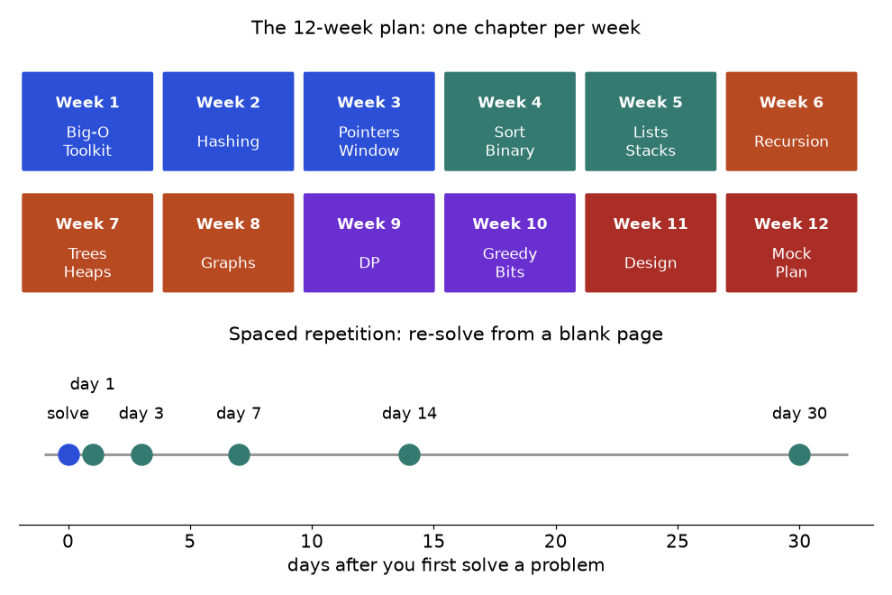
How to read it: each box is one week and one chapter. The dots show growing gaps between reviews. Each effortful recall makes the memory last longer, so close the book before you re-solve.
The 4-step solve routine
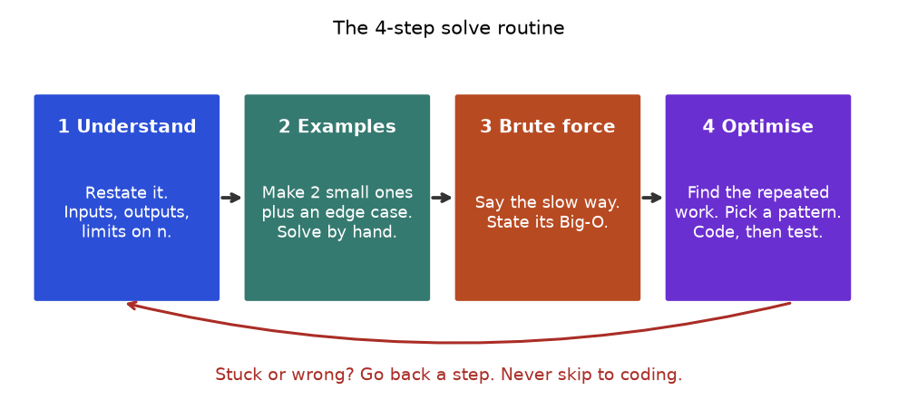
- Understand. Restate the problem. Inputs, sizes, output? Empty input? Duplicates? Negatives?
- Examples. Write two small ones and an edge case. Solve them by hand and notice what you did; that is the algorithm.
- Brute force. Say the slowest correct solution and its Big-O. It is your safety net and test oracle (Section 1.8).
- Optimise. Ask what work is repeated and which pattern removes it. Code, trace, test.
Problem 1.1.1 (Easy) Given a list of integers, return True if any value appears at least twice.
| Idea | Walk the list and remember the values seen. If the current value is already remembered, it is a repeat. |
|---|---|
| Brute force | Compare every pair (i, j), i < j: n(n-1)/2 comparisons, O(n²) time, O(1) space. |
| Better approach | A set answers x in seen in O(1) on average: one pass, O(n) time, O(n) space. Memory is traded for speed. |
| Code | Below, with asserts checking that both versions agree. |
| Dry run | Trace table after the code. |
| Complexity | Brute O(n²) / O(1). Set O(n) / O(n). |
| Edge cases | Empty list (False), one item (False), all equal (True), repeat at the very end (True). |
def has_dup_brute(nums):
for i in range(len(nums)): # every pair (i, j) with i < j
for j in range(i + 1, len(nums)):
if nums[i] == nums[j]:
return True
return False
def has_dup_fast(nums):
seen = set() # values met so far
for x in nums:
if x in seen: # O(1) average lookup
return True
seen.add(x)
return False
tests = [([], False), ([7], False), ([3, 1, 4, 1], True), ([4, 5, 6], False), ([2, 2, 2], True)]
for nums, expected in tests:
assert has_dup_brute(nums) == expected
assert has_dup_fast(nums) == expected
print("all", len(tests), "tests passed")all 5 tests passedTrace for [3, 1, 4, 1]; "seen before" is the set before the step.
| Step | x | seen before | x in seen? | Action |
|---|---|---|---|---|
| 1 | 3 | {} | no | add 3 |
| 2 | 1 | {3} | no | add 1 |
| 3 | 4 | {3, 1} | no | add 4 |
| 4 | 1 | {3, 1, 4} | yes | return True |
1.2 Big-O From Zero
n grows. It ignores constants and small terms, so it is used to compare algorithms.n, keeping only the fastest-growing part and ignoring constants. 3n + 10 steps is O(n). n² + 5n steps is O(n²).Step 1: count the steps
def one_loop(n):
c = 0
for _ in range(n):
c += 1
return c
def two_loops(n):
c = 0
for _ in range(n):
for _ in range(n):
c += 1
return c
def halving(n):
c = 0
while n > 1:
n //= 2
c += 1
return c
print("n constant halving one_loop two_loops")
for n in (10, 100, 1000):
print(f"{n:<6} {1:<9} {halving(n):<8} {one_loop(n):<9} {two_loops(n)}")n constant halving one_loop two_loops
10 1 3 10 100
100 1 6 100 10000
1000 1 9 1000 1000000When n grows 10 times: the constant column stays 1, halving gains about 3 steps, one loop grows 10 times, two loops grow 100 times. Those are O(1), O(log n), O(n) and O(n²).
Step 2: the seven classes
| Name | Big-O | Everyday picture | Typical code |
|---|---|---|---|
| Constant | O(1) | Open a page by number | index a list, dict lookup |
| Logarithmic | O(log n) | Phone book: halve and look | binary search, heap push |
| Linear | O(n) | Read every page once | one loop, sum, max |
| Linearithmic | O(n log n) | Sort the pages | sorted, merge sort |
| Quadratic | O(n²) | Compare every pair | nested loops on one list |
| Exponential | O(2n) | Each page: keep or skip | all subsets, naive Fibonacci |
| Factorial | O(n!) | Every ordering | all permutations |
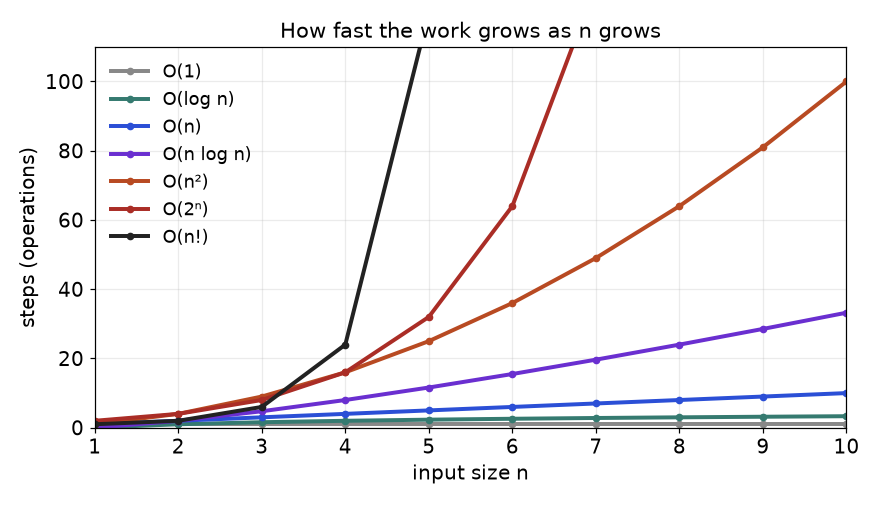
How to read it: the higher a curve at the right edge, the worse it scales. By n = 10 the factorial curve is off the chart (10! = 3,628,800). The three at the bottom (constant, log, linear) are the ones you want.
Step 3: three simplification rules
- Drop constants.
5nis O(n). - Keep the biggest term.
n² + n + 1is O(n²). - Add for steps in sequence, multiply for steps inside steps. Two loops one after another: O(n). A loop whose body costs O(n): O(n²).
Problem 1.2.1 (Easy) Give the time complexity: (a) two separate loops over n items; (b) a loop over n items that tests x in some_list (n items) inside; (c) i = 1; while i < n: i *= 2.
| Idea | Count loops, then ask what each line inside really costs. |
|---|---|
| (a) | n + n = 2n: O(n). |
| (b) | x in some_list scans the list: O(n). Loop n times: O(n²). With a set it is O(n). |
| (c) | i takes 1, 2, 4, 8... until n: about log₂ n steps, O(log n). |
x in list, list.pop(0), list.insert(0, x), s += "a", slicing a[1:] and list.index(x) each hide an O(n) loop. Right: price every line inside the loop.Step 4: measure, do not just believe
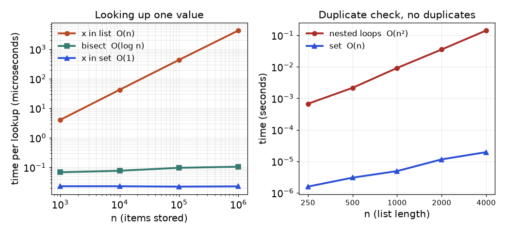
time.perf_counter (script: tools/dsa/figures/ch01_timing.py). Shapes, not exact numbers, carry over to other computers.How to read it: both axes are logarithmic, so each gridline is 10 times the last. On the left, x in list climbs steeply (about 4,500 microseconds at a million items on that run), bisect is almost flat, and x in set is flat and lowest. On the right, the nested-loop duplicate check took about 0.14 seconds for 4,000 items; the set version took microseconds.
The figure comes from tools/dsa/figures/ch01_timing.py; run it and you will see your own machine's version of the same shapes.
Space complexity
Space complexity is the extra memory needed as n grows, not counting the input. A running total is O(1). A set of seen values is O(n). Recursion counts too: each active call sits on the call stack, so a recursion n levels deep uses O(n) space.
Example: summing a list of 100 numbers with a plain loop needs O(1) extra space. Summing it recursively (a[0] + sum_of_rest) keeps 101 calls on the stack at once: O(n) space for the same answer.
1.3 Cases, Amortised Cost and Constraints
Best, average and worst case
Searching a list: if the value is first you stop at once (best case, 1 comparison); if it is last or missing you scan everything (worst case, n). Interviews usually mean the worst case.
def linear_search(a, target):
comparisons = 0
for i, x in enumerate(a):
comparisons += 1
if x == target:
return i, comparisons
return -1, comparisons
a = [10, 20, 30, 40, 50, 60, 70, 80, 90]
counts = [linear_search(a, v)[1] for v in a]
print("best:", min(counts), "worst:", max(counts), "average:", sum(counts) / len(counts))
print("missing value costs:", linear_search(a, 99)[1])best: 1 worst: 9 average: 5.0
missing value costs: 9The average is (1 + 2 + ... + 9) / 9 = 5.0 = (n + 1) / 2: still O(n). Case matters elsewhere too: Python's sorted is O(n log n) in the worst case, while a naive quicksort that always picks the first item as pivot degrades to O(n²) on sorted input.
Amortised cost
A Python list keeps spare room. append is usually one write. When the room runs out, Python allocates a bigger block and copies every item once. Growing by a fraction of the current size keeps the copies rare enough that the average stays constant.
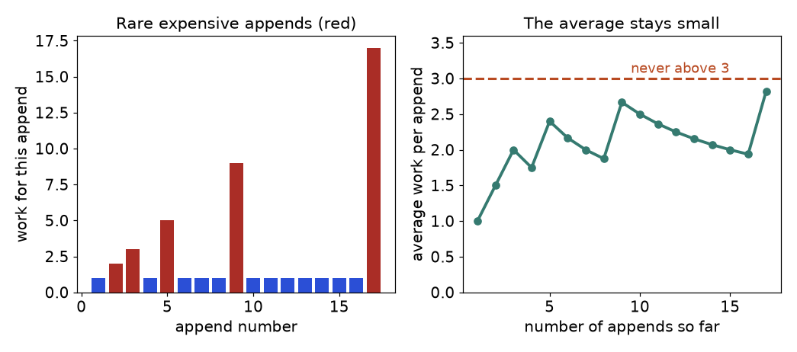
How to read it: on the left, most appends cost 1; the red ones (appends 2, 3, 5, 9, 17) copy the list. On the right, the running average never passes 3. Reason: copies total 1 + 2 + 4 + ... + n/2 < n, so n appends cost less than n writes + n copies = 2n, below 3n in all. Real Python grows more gently than doubling, with the same argument. Real jumps:
dict and set inserts are also amortised O(1): now and then the table is rebuilt at O(n).
list.insert(0, x) and list.pop(0) are not O(1) at all: they shift every item.Reading constraints
Limits such as "1 ≤ n ≤ 105" hint at the intended complexity. A working budget in Python is about 107 simple operations per second (a rule of thumb, not a guarantee). Work backwards from n.
| Constraint on n | Allowed | What it suggests |
|---|---|---|
| n ≤ 10 to 12 | O(n!) | Try all orderings: backtracking (Chapter 6) |
| n ≤ 20 to 25 | O(2n) | Subsets, bitmasks |
| n ≤ 500 | O(n³) | Three nested loops, some dynamic programming |
| n ≤ 5,000 | O(n²) | Pairs, 2D dynamic programming (Chapter 9) |
| n ≤ 105 to 106 | O(n log n) or O(n) | Sort, heap, hashing, binary search, two pointers |
| n ≥ 109 | O(log n) or O(1) | Binary search on the answer, a formula, bits |
import math
n = 100_000
speed = 10_000_000 # simple operations per second (rule of thumb)
for name, ops in [("log n", math.log2(n)), ("n", n), ("n log n", n * math.log2(n)), ("n^2", n ** 2)]:
print(f"{name:8} {ops:>16,.0f} ops -> {ops / speed:>12,.2f} s")log n 17 ops -> 0.00 s
n 100,000 ops -> 0.01 s
n log n 1,660,964 ops -> 0.17 s
n^2 10,000,000,000 ops -> 1,000.00 sFor n = 100,000, O(n²) is 10 billion operations, about 1,000 seconds: far too slow. O(n log n) is about 1.7 million, well under a second. That is why "n ≤ 105" means "find O(n log n) or better".
Going deeper
- Formal meaning. f(n) is O(g(n)) if some constants c and n₀ give f(n) ≤ c · g(n) for all n ≥ n₀. It is an upper bound; Ω is a lower bound; Θ is both. Log base does not matter (a constant factor).
- Two inputs. A list of n items and a string of m characters: say O(n · m), never O(n²). Hash lookups are O(1) expected, not guaranteed.
1.4 Python Toolkit I: list, tuple, set, dict, Slicing, Sorting and Strings
| Structure | Ordered? | Changeable? | Fast at | Slow at |
|---|---|---|---|---|
list | yes | yes | index O(1); append/pop() at the end O(1) amortised | x in a O(n); insert or pop at the front O(n) |
tuple | yes | no | fixed records; usable as dict key or set item | cannot be edited |
set | no | yes | x in s, add, remove: O(1) average; union, intersection | no index |
dict | insertion order (3.7+) | yes | lookup, insert, delete by key: O(1) average | finding by value O(n) |
a = [5, 3, 8]
a.append(1) # O(1) amortised
a.sort() # in place, O(n log n)
t = (2, 7) # a tuple: a fixed pair
seen = {t} # tuples can go in a set
grid_cost = {(0, 0): 4, (0, 1): 9} # tuple as dict key: great for grids
s = {1, 2, 3} & {2, 3, 4} # set intersection
d = {"x": 1}
d["y"] = d.get("y", 0) + 5 # safe default if the key is missing
print(a, t in seen, grid_cost[(0, 1)], sorted(s), d)
try:
bad = {[1, 2]: "no"}
except TypeError as e:
print("TypeError:", e)[1, 3, 5, 8] True 9 [2, 3] {'x': 1, 'y': 5}
TypeError: cannot use 'list' as a dict key (unhashable type: 'list')Slicing copies
a[i:j] builds a new list, costing O(j - i), not O(1). Slicing inside a loop or recursion is a favourite hidden O(n).
Slicing a list of n items inside a recursion that recurses n times copies about n(n-1)/2 items in total (for n = 200, 19,900 items). Passing an index instead copies nothing. a[::-1], a[:k] and a[-k:] are copies too.
sorted, sort and key
sorted(x) returns a new list; x.sort() sorts in place. Both are O(n log n) and stable: equal items keep their input order. key is a function giving the value to sort by; a tuple key breaks ties with later parts.
words = ["pear", "fig", "apple", "kiwi", "date", "plum"]
print(sorted(words))
print(sorted(words, key=len)) # ties keep input order (stable)
print(sorted(words, key=lambda w: (-len(w), w))) # longest first, then alphabetical
print(max(words, key=len), min(words, key=lambda w: w[-1]))['apple', 'date', 'fig', 'kiwi', 'pear', 'plum']
['fig', 'pear', 'kiwi', 'date', 'plum', 'apple']
['apple', 'date', 'kiwi', 'pear', 'plum', 'fig']
apple appleStrings are immutable: use join
A str cannot be changed; "changing" it builds a new string. So s += ch in a loop can cost O(n²) (CPython sometimes optimises it, but do not rely on that). Collect pieces in a list, then "".join(pieces) once: O(n).
s = "hello"
try:
s[0] = "J"
except TypeError as e:
print("TypeError:", e)
chars = list(s) # a list of characters can be edited
chars[0] = "J"
print("".join(chars))
pieces = [str(i) for i in range(5)]
print("-".join(pieces), s[::-1], s.upper(), "ell" in s, s.find("l"))TypeError: 'str' object does not support item assignment
Jello
0-1-2-3-4 olleh HELLO True 2[[0] * 3] * 2 makes two names for the same row, and def add(x, seen=[]) shares one list across calls. Right: [[0] * 3 for _ in range(2)], and seen=None then seen = seen or [].bad = [[0] * 3] * 2
bad[0][0] = 9
good = [[0] * 3 for _ in range(2)]
good[0][0] = 9
print("bad :", bad)
print("good:", good)
def add_bad(x, seen=[]):
seen.append(x)
return seen
print(add_bad(1), add_bad(2)) # the same list is reusedbad : [[9, 0, 0], [9, 0, 0]]
good: [[9, 0, 0], [0, 0, 0]]
[1, 2] [1, 2]for x in a: if x % 2 == 0: a.remove(x) skips items because the list shifts. Right: a = [x for x in a if x % 2 != 0].1.5 Hashing Toolkit: dict, set, Counter and defaultdict
dict stores key-value pairs and a set stores unique items, both using hashing for fast lookup. Counter counts items and defaultdict creates a default value for missing keys.The idea. Replace a slow search (O(n)) by a direct lookup (O(1) average). How to recognise it:
- You keep asking "have I seen X?" inside a loop.
- You need counts, frequencies, or "the first / only one that...".
- You must group items by a property (anagrams, same remainder).
- A pair must add to a target, so one partner can be looked up.
- The brute force compares every pair and one side could be looked up instead.
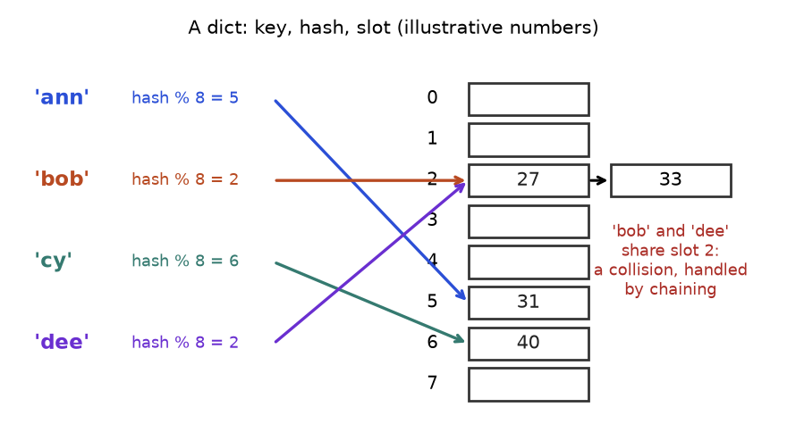
How to read it: each arrow is hash(key) % 8 choosing a slot. 'bob' and 'dee' land on slot 2, a collision, drawn as a short chain (real Python resolves collisions differently, with the same effect). A lookup jumps to one slot and checks a few entries: O(1) on average, however many items exist.
Three reusable templates
from collections import Counter, defaultdict
# Template 1: "seen" set. Have I met this value before?
def first_repeat(nums):
seen = set()
for x in nums:
if x in seen:
return x
seen.add(x)
return None
# Template 2: frequency map. How many of each?
def frequencies(items):
freq = {}
for x in items:
freq[x] = freq.get(x, 0) + 1 # same as Counter(items)
return freq
# Template 3: group by a key. Which items share a property?
def group_by_length(words):
groups = defaultdict(list) # a missing key starts as []
for w in words:
groups[len(w)].append(w)
return dict(groups)
print(first_repeat([4, 2, 9, 2, 4]))
print(frequencies("banana"), Counter("banana"))
print(group_by_length(["to", "be", "or", "not", "too"]))
print(Counter("abracadabra").most_common(2))2
{'b': 1, 'a': 3, 'n': 2} Counter({'a': 3, 'n': 2, 'b': 1})
{2: ['to', 'be', 'or'], 3: ['not', 'too']}
[('a', 5), ('b', 2)]Counter is a dict for counts: missing keys count as 0 and most_common(k) returns the k biggest. defaultdict(factory) creates a missing entry by calling factory() (list, int, set).
groups[sorted(w)] raises TypeError: unhashable type: 'list'. Right: groups["".join(sorted(w))]. Never rely on the printed order of a set of strings; it can change between runs. Sort it if you need an order.Solved problems: easy, medium, hard
The easy one is Problem 1.1.1 (duplicates with a set). Next come a medium and a hard problem.
Problem 1.5.1 (Medium) Group a list of words so that anagrams are together.
| Idea | Two words are anagrams exactly when their sorted letters are equal. Use the sorted letters as a dict key. |
|---|---|
| Brute force | Compare each word with every group: O(n² · L log L) for n words of length L. |
| Better approach | One pass: groups["".join(sorted(w))].append(w). O(n · L log L). |
| Code | Below. |
| Dry run | "eat" gives key "aet"; "tea" gives "aet" (same group); "tan" gives "ant" (new group); "ate" gives "aet". |
| Complexity | Time O(n · L log L); space O(n · L). |
| Edge cases | Empty list: no groups. "" is a valid key. Duplicate words share a group. |
from collections import defaultdict
def group_anagrams(words):
groups = defaultdict(list)
for w in words:
groups["".join(sorted(w))].append(w)
return list(groups.values())
result = group_anagrams(["eat", "tea", "tan", "ate", "nat", "bat"])
assert result == [["eat", "tea", "ate"], ["tan", "nat"], ["bat"]]
assert group_anagrams([]) == []
assert group_anagrams([""]) == [[""]]
print(result)[['eat', 'tea', 'ate'], ['tan', 'nat'], ['bat']]Problem 1.5.2 (Hard) Given an unsorted list of integers, find the length of the longest run of consecutive values (like 4, 5, 6, 7) in O(n). The values need not be adjacent in the list.
| Idea | Put all numbers in a set. Start counting only at a number that begins a run: x - 1 is not in the set. Then walk up while x + 1 exists. |
|---|---|
| Brute force | For each number, count upward using in list checks: at least O(n²). Sorting first gives O(n log n), but O(n) is asked. |
| Better approach | Each number is a start at most once and is walked over only inside the run beginning below it, so total work is O(n). |
| Code | Below. |
| Dry run | Trace table after the code. |
| Complexity | Time O(n) average; space O(n). |
| Edge cases | Empty list: 0. Duplicates vanish in the set. Negatives work the same. |
def longest_run(nums):
values = set(nums) # O(n); also removes duplicates
best = 0
for x in values:
if x - 1 not in values: # x starts a run
length = 1
while x + length in values:
length += 1
best = max(best, length)
return best
assert longest_run([]) == 0
assert longest_run([5]) == 1
assert longest_run([100, 4, 200, 1, 3, 2]) == 4
assert longest_run([0, 3, 7, 2, 5, 8, 4, 6, 0, 1]) == 9
print(longest_run([100, 4, 200, 1, 3, 2]))4Trace for [100, 4, 200, 1, 3, 2], set {1, 2, 3, 4, 100, 200} (shown sorted for clarity):
| x | x - 1 in set? | Start? | Walk upward | length | best |
|---|---|---|---|---|---|
| 1 | 0: no | yes | 2, 3, 4 found; 5 not | 4 | 4 |
| 2 | 1: yes | skip | - | - | 4 |
| 3 | 2: yes | skip | - | - | 4 |
| 4 | 3: yes | skip | - | - | 4 |
| 100 | 99: no | yes | 101 not found | 1 | 4 |
| 200 | 199: no | yes | 201 not found | 1 | 4 |
Going deeper
- Why it is fast.
hash()turns the key into an integer that picks a slot. Tables are kept sparse and rebuilt larger when they fill (the amortised resize). - String hashes are randomised per process, so set order of strings can differ between runs. Dicts keep insertion order, which is why
most_commonties come out in first-seen order.
1.6 Toolkit II: deque, heapq and bisect
deque: a queue that is fast at both ends
deque (double-ended queue) is a Python container that adds and removes items at both ends in O(1) time. It is used for queues and breadth-first search.list is a row of seats: removing the first person makes everyone slide one seat. collections.deque is the real queue.The idea. A deque gives O(1) append, appendleft, pop and popleft. It is slow at indexing the middle. (A list used as a queue with pop(0) shifts every item: 100,000 items cost about 5 billion moves.) How to recognise it: "first in, first out", "process in arrival order", "the last k items", "rotate", "level by level" (breadth-first search, Chapter 8).
from collections import deque
# Template: queue of work, process from the front.
q = deque([1, 2, 3])
q.append(4) # join at the back, O(1)
front = q.popleft() # leave from the front, O(1) (list.pop(0) is O(n))
q.appendleft(0)
print(front, list(q))
# Keep only the last 3 items automatically.
last3, trace = deque(maxlen=3), []
for x in [10, 20, 30, 40, 50]:
last3.append(x)
trace.append(list(last3))
print(trace)1 [0, 2, 3, 4]
[[10], [10, 20], [10, 20, 30], [20, 30, 40], [30, 40, 50]]The maxlen trace is a fixed-size window: when the deque is full, the oldest item falls off the other end. q.rotate(-m) moves m items from the front to the back, which simulates circles and rotations.
heapq: always know the smallest, cheaply
heapq is a Python module that keeps a list arranged as a binary min-heap, so the smallest item is always first. It is used for priority queues and top-k problems.The idea. A min-heap keeps the smallest item at index 0. heappush and heappop cost O(log n); peeking h[0] is O(1). How to recognise it: "k largest / smallest", "next best item as things change", "merge sorted streams", "process the cheapest first" (also Dijkstra, Chapter 8; full treatment in Chapter 7).
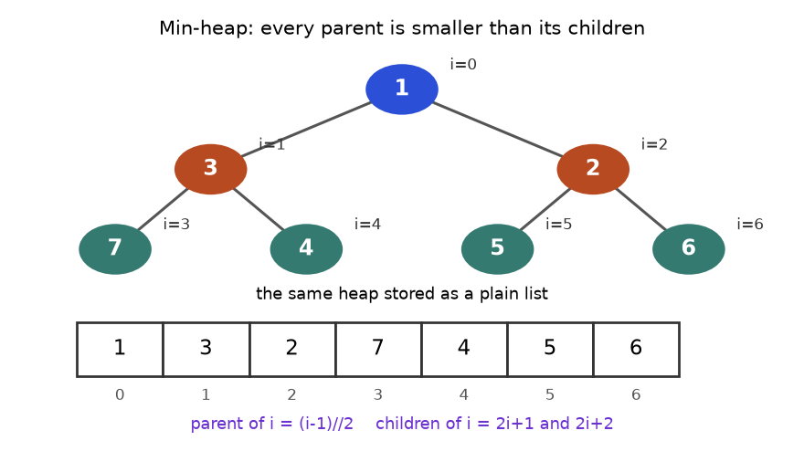
How to read it: each parent is smaller than its children. The list stores the tree row by row; the node at index i has children at 2i+1 and 2i+2 and a parent at (i-1)//2. A new item is added at the end and "bubbles up" past larger parents, at most the tree height, about log₂ n steps.
import heapq
h = []
for x in [5, 1, 9, 3, 7]:
heapq.heappush(h, x) # O(log n) each
print("heap list :", h) # a valid heap, NOT sorted
print("smallest :", h[0]) # peek, O(1)
print("pop order :", [heapq.heappop(h) for _ in range(len(h))])
nums = [8, 2, 6, 4]
heapq.heapify(nums) # a list into a heap in O(n)
print("heapified :", nums)
mx = [] # max-heap trick: push negatives
for x in [5, 1, 9]:
heapq.heappush(mx, -x)
print("largest :", -mx[0], heapq.nlargest(2, [5, 1, 9, 3]), heapq.nsmallest(2, [5, 1, 9, 3]))heap list : [1, 3, 9, 5, 7]
smallest : 1
pop order : [1, 3, 5, 7, 9]
heapified : [2, 4, 6, 8]
largest : 9 [9, 5] [1, 3]heapq returns the largest first, or that the heap list is sorted (above, only index 0 is guaranteed). Right: it is a min-heap; push negatives for a max-heap; pop repeatedly to get sorted order.Template: top-k with a heap of size k. Keep a min-heap of the k largest items so far. Its smallest member is the weakest of the current top k; a new item either beats it or not.
import heapq
def k_largest(nums, k):
heap = [] # min-heap holding the k largest so far
for x in nums:
if len(heap) < k:
heapq.heappush(heap, x)
elif x > heap[0]: # beats the weakest member
heapq.heapreplace(heap, x) # pop smallest and push x in one step
return sorted(heap, reverse=True)
print(k_largest([5, 1, 9, 3, 7, 8], 3))[9, 8, 7]Trace for [5, 1, 9, 3, 7, 8], k = 3:
| Step | x | heap before | Decision | heap after |
|---|---|---|---|---|
| 1 | 5 | [] | room: push | [5] |
| 2 | 1 | [5] | room: push | [1, 5] |
| 3 | 9 | [1, 5] | room: push | [1, 5, 9] |
| 4 | 3 | [1, 5, 9] | 3 > 1: replace 1 | [3, 5, 9] |
| 5 | 7 | [3, 5, 9] | 7 > 3: replace 3 | [5, 7, 9] |
| 6 | 8 | [5, 7, 9] | 8 > 5: replace 5 | [7, 8, 9] |
The final {7, 8, 9} are the three largest, and the root 7 is the 3rd largest (the k-th largest is just heap[0]). Each item costs O(log k): O(n log k) overall, better than sorting when k is small, and it works on a stream you cannot store. Edge cases: k = 1 gives the maximum, duplicates count separately, and k greater than n returns everything.
Problem 1.6.1 (Hard) Merge k sorted lists into one sorted list in O(N log k), where N is the total number of items.
| Idea | The next output item is the smallest among the current front items of the k lists. Keep those fronts in a min-heap. |
|---|---|
| Brute force | Concatenate and sort: O(N log N). Correct, but ignores that the lists are already sorted. |
| Better approach | Heap of (value, list_index, position). Pop the smallest, output it, push the next item of the same list. The heap never exceeds k items, so each of N steps is O(log k). |
| Code | Below. |
| Dry run | Lists [1,4], [2,3], [0,9]. Heap {(1,0,0), (2,1,0), (0,2,0)}. Pop 0, push 9. Pop 1, push 4. Pop 2, push 3. Pop 3. Pop 4. Pop 9. Output 0,1,2,3,4,9. |
| Complexity | O(N log k) time, O(k) extra space. |
| Edge cases | Empty lists (skip when seeding), k = 1, all empty, equal values across lists (the list index in the tuple keeps comparisons valid). |
import heapq
def merge_sorted(lists):
heap = []
for li, lst in enumerate(lists):
if lst: # skip empty lists
heapq.heappush(heap, (lst[0], li, 0))
out = []
while heap:
value, li, pos = heapq.heappop(heap) # smallest current front
out.append(value)
if pos + 1 < len(lists[li]): # push that list's next item
heapq.heappush(heap, (lists[li][pos + 1], li, pos + 1))
return out
assert merge_sorted([]) == []
assert merge_sorted([[], []]) == []
assert merge_sorted([[1, 4], [2, 3], [0, 9]]) == [0, 1, 2, 3, 4, 9]
assert merge_sorted([[5], [5], [5]]) == [5, 5, 5]
print(merge_sorted([[1, 4], [2, 3], [0, 9]]))[0, 1, 2, 3, 4, 9]Going deeper
Going deeper: heapify is O(n), not O(n log n), because most nodes sit near the bottom and move only a step or two. heapq has no decrease-key; use lazy deletion (push the new version, skip stale entries), Chapter 8. Tuples compare field by field, so put a unique index before any object that cannot be ordered.
bisect: binary search for free
bisect is a Python module that does binary search on a sorted list. It finds the position where a value belongs, or inserts it, in O(log n) time.The idea. On a sorted list the middle item tells you which half holds the target. Discard the other half and repeat: O(log n); a million items need about 20 steps. How to recognise it: sorted data, or an answer in a numeric range where a yes/no test on a guess is monotone ("if t works, every bigger t works"). "Minimum possible maximum" is a strong signal. Chapter 4 covers it fully.
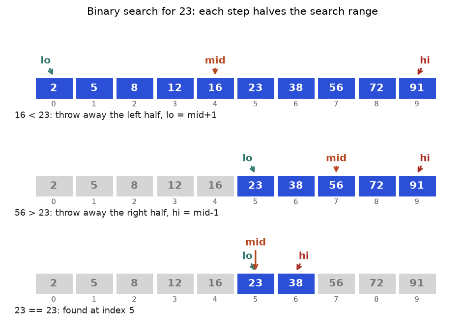
How to read it: blue cells are still possible, grey are ruled out. Row 1 checks 16 (too small), discarding everything up to it. Row 2 checks 56 (too big). Row 3 finds 23 at index 5.
Template: first index where a condition becomes true. Invariant: "the answer is in [lo, hi]".
def first_true(lo, hi, ok):
# Smallest x in [lo, hi] with ok(x) True, where ok is False...False True...True.
# Returns hi + 1 if none.
while lo <= hi:
mid = (lo + hi) // 2
if ok(mid):
hi = mid - 1 # mid works; look for an earlier one
else:
lo = mid + 1 # mid fails; the answer is to the right
return lo
a = [2, 5, 8, 12, 16, 23, 38, 56, 72, 91]
print("index of 23:", first_true(0, len(a) - 1, lambda i: a[i] >= 23))index of 23: 5Trace (ok(i) means a[i] >= 23):
| Step | lo | hi | mid | a[mid] | ok(mid)? | Next |
|---|---|---|---|---|---|---|
| 1 | 0 | 9 | 4 | 16 | no | lo = 5 |
| 2 | 5 | 9 | 7 | 56 | yes | hi = 6 |
| 3 | 5 | 6 | 5 | 23 | yes | hi = 4 |
| end | 5 | 4 | - | - | - | lo > hi: answer lo = 5 |
Python's bisect module does this for lists: bisect_left(a, x) is the first index with a[i] >= x; bisect_right(a, x) the first with a[i] > x. So in the sorted list [1, 2, 2, 2, 5] the value 2 occupies indexes 1 to 3: bisect_left gives 1, bisect_right gives 4, and the count is 4 - 1 = 3.
Problem 1.6.2 (Hard) Packages with given weights (in order) must ship within days days. Each day you load packages in order until the next one would exceed the ship's capacity. Find the smallest capacity that works.
| Idea | Search on the answer. If capacity c works, any larger one works, so answers look like False...False True...True: the first-true template applies. |
|---|---|
| Brute force | Try c = max(weights), max+1, ... up to sum(weights), simulating each: O(n · sum). |
| Better approach | The answer lies in [max(weights), sum(weights)]. Binary search it with an O(n) simulation: O(n log sum). |
| Code | Below. |
| Dry run | Weights 1..10, 5 days, range 10 to 55. Try 32: 2 days, works, hi = 32. Try 21: 3 days, hi = 21. Try 15: 5 days, hi = 15. Try 12: 6 days, fails, lo = 13. Try 14: 6 days, fails, lo = 15. Answer 15. |
| Complexity | O(n log S) time, S = sum(weights); O(1) space. |
| Edge cases | days = 1 gives the sum; days >= n gives the maximum; one package. |
def days_needed(weights, cap):
days, load = 1, 0
for w in weights:
if load + w > cap: # this package does not fit today
days += 1
load = 0
load += w
return days
def min_capacity(weights, days):
lo, hi = max(weights), sum(weights)
while lo < hi:
mid = (lo + hi) // 2
if days_needed(weights, mid) <= days:
hi = mid # mid works; maybe smaller works
else:
lo = mid + 1
return lo
w = list(range(1, 11))
assert min_capacity(w, 5) == 15
assert min_capacity(w, 1) == 55 and min_capacity(w, 10) == 10
assert min_capacity([7], 3) == 7
for d in range(1, 8): # cross-check with brute force
brute = next(c for c in range(max(w), sum(w) + 1) if days_needed(w, c) <= d)
assert min_capacity(w, d) == brute
print(min_capacity(w, 5), [days_needed(w, c) for c in (14, 15)])15 [6, 5]By hand at 15: [1..5] = 15, [6,7] = 13 (adding 8 gives 21), [8], [9], [10]: five days. At 14: [1..4] = 10 (adding 5 gives 15), [5,6], [7], [8], [9], [10]: six days, too many. So 15.
while lo < hi with hi = mid - 1, or lo = mid (which never moves when lo + 1 == hi, so the loop never ends). Right: pick one pattern. A: lo <= hi, hi = mid - 1, lo = mid + 1. B: lo < hi, hi = mid, lo = mid + 1. Each step must shrink the range.Going deeper
- The invariant is the proof. Say it aloud: "the answer, if it exists, is always inside [lo, hi]". Each branch must keep it true and shrink the range.
- Monotone check. Search on the answer works only if feasibility is monotone. Test two values by hand before coding.
- Overflow exists in fixed-size-integer languages (
lo + (hi - lo) // 2); Python integers never overflow.
1.7 Toolkit III: lru_cache, itertools, Recursion Limits and Input
functools.lru_cache: remember answers you already computed
functools.lru_cache is a decorator that stores the results of a function for the arguments it has already seen. It is used to avoid repeating the same computation in recursion.@lru_cache gives any function that notebook.The idea. A recursive function often asks the same question many times. Store each answer the first time (memoisation) and return the stored answer afterwards. Exponential time can become polynomial. How to recognise it: a recursion tree with repeated calls; "count the ways", "minimum cost", "is it possible" over choices; recursion inputs that are small (indexes, counts), not whole lists. Chapter 9 builds a full method on this.
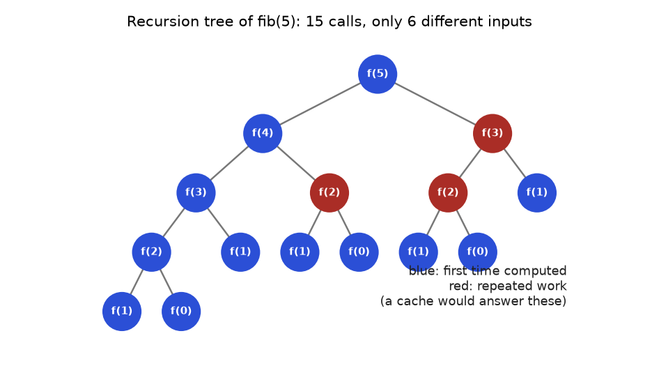
How to read it: the root is f(5); each node calls f(n-1) and f(n-2). The red nodes are inputs that already appeared, so their subtrees are wasted. With a cache each red node is answered at once and the tree below it disappears: 15 calls shrink to 6 real computations, one per distinct input 0 to 5.
Problem 1.7.1 (Easy). Compare the number of calls of naive and cached Fibonacci. Naive recursion makes a number of calls that itself grows like Fibonacci (about 1.6 times per step), so O(2n). With @lru_cache each of the n + 1 distinct inputs is computed once: O(n) time and space.
from functools import lru_cache
calls = 0
def fib_naive(n):
global calls
calls += 1
return n if n < 2 else fib_naive(n - 1) + fib_naive(n - 2)
@lru_cache(maxsize=None) # the template: one decorator line
def fib_cached(n):
return n if n < 2 else fib_cached(n - 1) + fib_cached(n - 2)
assert fib_naive(20) == fib_cached(20) == 6765
print("naive calls for fib(20):", calls)
print("cache info for fib(20): ", fib_cached.cache_info())naive calls for fib(20): 21891
cache info for fib(20): CacheInfo(hits=18, misses=21, maxsize=None, currsize=21)The naive version made 21,891 calls; the cached one computed 21 distinct values (misses=21). Now the trace for fib(5) from an empty cache. A miss means computed and stored; a hit means returned from the notebook.
from functools import lru_cache
log = []
@lru_cache(maxsize=None)
def f(n):
if n < 2:
log.append(f"f({n}) base case, store {n}")
return n
a = f(n - 1)
b = f(n - 2)
log.append(f"f({n}) = f({n-1}) + f({n-2}) = {a} + {b} = {a + b}, store")
return a + b
f(5)
print("\n".join(log))
print(f.cache_info())f(1) base case, store 1
f(0) base case, store 0
f(2) = f(1) + f(0) = 1 + 0 = 1, store
f(3) = f(2) + f(1) = 1 + 1 = 2, store
f(4) = f(3) + f(2) = 2 + 1 = 3, store
f(5) = f(4) + f(3) = 3 + 2 = 5, store
CacheInfo(hits=3, misses=6, maxsize=None, currsize=6)Read top to bottom: the deepest call finishes first, and answers build upward. f(3) needs f(1) and f(2) and neither is recomputed: they are hits, the saved work.
Problem 1.7.2 (Hard) The edit distance between two words is the fewest single-letter inserts, deletes or replacements needed to turn one into the other. Compute it.
| Idea | Let d(i, j) be the distance between the first i letters of A and the first j of B. If the last letters match, it is d(i-1, j-1). Otherwise 1 plus the best of delete, insert, replace. |
|---|---|
| Brute force | Try all edit sequences recursively: exponential. |
| Better approach | Only (len A + 1) × (len B + 1) distinct pairs exist. Cache them: O(len A × len B). |
| Code | Below. |
| Dry run | "cat" to "cut": last letters match, so d(3,3) = d(2,2). Now "a" and "u" differ: 1 + min(d(1,2), d(2,1), d(1,1)). d(1,1) compares "c" with "c": d(0,0) = 0. So the answer is 1 + 0 = 1. |
| Complexity | O(m · n) time and space for lengths m and n. |
| Edge cases | One empty word: the other's length. Equal words: 0. |
from functools import lru_cache
def edit_distance(a, b):
@lru_cache(maxsize=None)
def d(i, j): # distance between a[:i] and b[:j]
if i == 0:
return j # insert j letters
if j == 0:
return i # delete i letters
if a[i - 1] == b[j - 1]:
return d(i - 1, j - 1) # last letters match: free
return 1 + min(d(i - 1, j), # delete from a
d(i, j - 1), # insert into a
d(i - 1, j - 1)) # replace
return d(len(a), len(b))
assert edit_distance("cat", "cut") == 1
assert edit_distance("", "abc") == 3
assert edit_distance("same", "same") == 0
assert edit_distance("kitten", "sitting") == 3
assert edit_distance("horse", "ros") == 3
print(edit_distance("kitten", "sitting"), edit_distance("intention", "execution"))3 5@lru_cache on a function taking a list (TypeError: unhashable type), or whose result depends on a changing global. Right: pass indexes or tuples, keep the function pure, and call cache_clear() between independent tests.Going deeper
- LRU means "least recently used": with
maxsize=nthe entry unused longest is dropped. Usemaxsize=Nonefor dynamic programming;functools.cache(3.9+) is the same. - Top-down versus bottom-up. Memoised recursion is top-down; filling a table from small cases up is bottom-up. Same idea, no recursion limit. Chapter 9 teaches both. Chapter 11 builds your own LRU cache.
itertools: loops you do not have to write
Results are produced lazily, but their number grows fast: combinations gives C(n, k), permutations gives n!, product gives choicesrepeat.
from itertools import combinations, permutations, product, accumulate, groupby, chain, islice
print(list(combinations([1, 2, 3], 2))) # choose 2, order ignored
print(len(list(permutations(range(4))))) # 4! orderings
print(list(product("ab", repeat=2))) # every 2-letter string over {a, b}
print(list(accumulate([3, 1, 4, 1, 5]))) # running totals: prefix sums
print([(k, len(list(g))) for k, g in groupby("aaabccdd")]) # runs of equal neighbours
print(list(chain([1, 2], [3])), list(islice(range(100), 3)))[(1, 2), (1, 3), (2, 3)]
24
[('a', 'a'), ('a', 'b'), ('b', 'a'), ('b', 'b')]
[3, 4, 8, 9, 14]
[('a', 3), ('b', 1), ('c', 2), ('d', 2)]
[1, 2, 3] [0, 1, 2]groupby groups equal items anywhere. It groups only neighbouring equal items: groupby("abab") gives four groups. Sort first, or use a dict.Recursion limit
Python stops recursion at a fixed depth to protect memory; deeper raises RecursionError. For paths of 100,000 nodes, use a loop with your own stack.
import sys
def depth(n):
return 0 if n == 0 else 1 + depth(n - 1)
print("default limit:", sys.getrecursionlimit())
print(depth(500))
try:
depth(100_000)
except RecursionError as e:
print("RecursionError:", e)
def depth_loop(n):
count = 0
while n > 0: # the same idea as a loop: no stack growth
n -= 1
count += 1
return count
print(depth_loop(100_000))
sys.setrecursionlimit(5000) # allowed, but use sparingly
print(depth(3000))default limit: 1000
500
RecursionError: maximum recursion depth exceeded
100000
3000Raising the limit patches moderate depth (a few thousand). A very high limit can crash the interpreter, so prefer a loop when depth can reach 105.
Reading input
Interview platforms give you function arguments. Practice sites and contests use standard input. This block fakes input with io.StringIO so it runs anywhere.
import io
import sys
sys.stdin = io.StringIO("3\n10 20 30\nhello world\n") # pretend this is the keyboard
input = sys.stdin.readline # fast reader
n = int(input()) # first line: a count (readline keeps the newline; int() ignores it)
nums = list(map(int, input().split())) # second line: n integers
text = input().strip() # third line: a string
assert n == len(nums)
print(n, nums, repr(text))3 [10, 20, 30] 'hello world'1.8 How to Test Your Solutions
A solution you have not tested is a guess, and the statement's own example is chosen to be pleasant: bugs live in all-negative lists, empty input, duplicates and boundaries. Use three layers: asserts on small cases (write them before the code, from your step 2 examples); the edge-case checklist below; and a brute-force cross-check against the slow, obviously correct version on thousands of random small inputs.
| Check | Examples |
|---|---|
| Empty and tiny | [], "", one item, two items |
| All the same | [2, 2, 2] |
| Duplicates and ties | repeated values, equal counts |
| Negatives and zero | all-negative lists, zero in the middle |
| Sorted, reverse sorted | ordered inputs reveal worst cases |
| Boundaries | first and last positions, target at either end or absent |
Problem 1.8.1 (Medium) A teammate wrote a fast function for "the largest sum of any non-empty run of consecutive items". Find its bug with a brute-force cross-check.
| Idea | Run a trusted slow version and the fast one on many random tiny lists. The first disagreement is a small counterexample. |
|---|---|
| Brute force | Sum every run a[i..j]: O(n³) as written. Fine for 5 items. |
| Better approach | Track the best sum ending at the current item and the best so far: O(n). |
| Code | Below: buggy version, then the fix. |
| Dry run | On [-3] the buggy version starts best = 0, never updates, and returns 0; a non-empty run must give -3. |
| Complexity | Test loop: 1000 tiny cases, instant. |
| Edge cases | All negatives (the bug), one item, zeros. |
import random
def best_brute(a):
best = a[0]
for i in range(len(a)):
for j in range(i, len(a)):
best = max(best, sum(a[i:j + 1]))
return best
def best_buggy(a):
best = cur = 0 # BUG: assumes an empty run is allowed
for x in a:
cur = max(x, cur + x)
best = max(best, cur)
return best
def best_fixed(a):
best = cur = a[0] # start from the first item
for x in a[1:]:
cur = max(x, cur + x)
best = max(best, cur)
return best
random.seed(7)
tests = [[random.randint(-5, 5) for _ in range(random.randint(1, 5))] for _ in range(1000)]
fails = [a for a in tests if best_buggy(a) != best_brute(a)]
smallest = min(fails, key=len)
print("buggy version fails on", len(fails), "of 1000 tests; smallest:", smallest,
"expected", best_brute(smallest), "got", best_buggy(smallest))
assert all(best_fixed(a) == best_brute(a) for a in tests)
print("fixed version agrees on all 1000 tests")buggy version fails on 176 of 1000 tests; smallest: [-4] expected -4 got 0
fixed version agrees on all 1000 testsGoing deeper
- Seed the randomness (
random.seed) so failures reproduce, and print the failing input. Prefer the smallest failing input, asmin(fails, key=len)did above. - Properties help when no brute force exists: a sort's output is ordered and has the same items; a search result, if not -1, equals the target.
- In an interview, trace your own example through the finished code. Interviewers value that more than silent confidence. Engineers call the cross-check differential testing and use it to validate rewritten pipelines against old ones.
Chapter recap
- Learn patterns, not problems: one chapter a week, re-solve on days 1, 3, 7, 14, 30, and use the 4-step routine every time.
- Big-O counts how steps grow with n: drop constants, keep the biggest term, add sequential steps, multiply nested ones. Price hidden O(n) work (
in list,pop(0), slicing, string+=). - Space counts extra memory, including the recursion stack. Amortised O(1) is a guarantee over any sequence (list append, dict insert).
- Read the constraint first: n ≤ 10 means try everything, 5,000 allows O(n²), 105 needs O(n log n), 109 needs O(log n).
- Hashing trades O(n) memory for O(1) average lookups. Use
dequefor queues,heapqfor top-k,bisectfor sorted data,@lru_cachefor repeated recursion. - Strings are immutable (use join), slices copy, and beware aliasing, mutable defaults and the recursion limit.
- Test with asserts, the edge-case checklist, and a brute-force cross-check.
| Pattern | When to use | Template idea | Time | Space |
|---|---|---|---|---|
| Seen set | Duplicates, "met this before?", complement lookup | One pass; test x in seen before adding | O(n) | O(n) |
| Frequency map | Counts, first unique, anagram checks | Counter(items), then read counts | O(n) | O(k) distinct |
| Group by key | Items sharing a property | defaultdict(list) keyed by a canonical form | O(n) plus key cost | O(n) |
| Set of run starts | Runs or chains in unsorted data | Begin only where x - 1 is absent | O(n) | O(n) |
| Queue (deque) | First in first out, simulations, last k | append / popleft, rotate, maxlen | O(1) per operation | O(n) |
| Top-k heap | k largest or smallest, streams | Min-heap of size k; replace when beaten | O(n log k) | O(k) |
| Merge with heap | Combine k sorted sources | Heap of fronts (value, source, pos) | O(N log k) | O(k) |
| Binary search | Sorted data, first or last position | First-true loop or bisect_left / bisect_right | O(log n) | O(1) |
| Search on the answer | "Smallest X that is feasible", monotone yes/no | Binary search a numeric range with an O(n) check | O(n log range) | O(1) |
| Memoisation | Recursion with repeated calls | @lru_cache on a pure function | O(states × work per state) | O(states) |
| Sort with key | Order matters, ties need rules | sorted(x, key=lambda v: (-a, b)) | O(n log n) | O(n) |
Practice set
Try each problem on paper before reading the answer. They climb from easy to hard.
Practice 1.1 (Easy) Complexity of for i in range(n): for j in range(i, n): work(), and of while n > 0: n //= 10?
Answer: work() runs n + (n-1) + ... + 1 = n(n+1)/2 times: O(n²). The digit loop removes one digit per step: O(log n).
Practice 1.2 (Easy) You must test 105 values for membership in a collection of 105 items. Compare a list and a set.
Answer: A list scan is O(n) per test: 105 × 105 = 1010 steps. A set is O(1) average: about 105 steps. Build the set once (O(n)) and the whole job is O(n).
Practice 1.3 (Easy) A problem says 1 ≤ n ≤ 200,000 with a 2-second limit. Is O(n²) acceptable? What do you aim for?
Answer: No. n² = 4 × 1010, about 4,000 seconds at 107 operations per second. Aim for O(n log n) (about 3.5 million) or O(n): sorting, a heap, hashing, binary search or two pointers.
Practice 1.4 (Easy) Choose a structure: (a) serve customers in arrival order; (b) test words against a 106-word dictionary many times; (c) always fetch the cheapest pending job while new jobs arrive; (d) find where a score fits in a sorted leaderboard.
Answer: (a) deque. (b) set, O(1) average. (c) heapq, O(log n) per push and pop. (d) bisect_left, O(log n).
Practice 1.5 (Predict) What does this print?
a = [1, 2, 3, 4]
b = a[1:3]
b[0] = 99
c = a
c.append(5)
print(a, b, a[::-1][:2])Answer: b is a copy, so changing it leaves a alone; c is another name for a, so the append shows in a. The reversed copy starts [5, 4].
[1, 2, 3, 4, 5] [99, 3] [5, 4]Practice 1.6 (Predict) What does this print? Think about stability.
print(sorted(["bb", "a", "cc", "d"], key=len))
print(sorted(["bb", "a", "cc", "d"], key=lambda w: (-len(w), w)))Answer: The first sort is stable: equal lengths keep input order ("a" before "d", "bb" before "cc"). The second puts the longest first, then alphabetical.
['a', 'd', 'bb', 'cc']
['bb', 'cc', 'a', 'd']Practice 1.7 (Predict) What does this print?
from collections import Counter
print(Counter("mississippi").most_common(2))
print(sorted({1, 2, 3} ^ {2, 3, 4}))Answer: Counts: m 1, i 4, s 4, p 2. The tie between i and s goes to the first seen, i. On sets, ^ keeps items that are in exactly one set.
[('i', 4), ('s', 4)]
[1, 4]Practice 1.8 (Predict) After fib(10) with @lru_cache(maxsize=None), what are the hits and misses?
from functools import lru_cache
@lru_cache(maxsize=None)
def fib(n):
return n if n < 2 else fib(n - 1) + fib(n - 2)
fib(10)
print(fib.cache_info())Answer: 11 distinct inputs (0 to 10) give 11 misses. For each n from 3 to 10, the call fib(n - 2) comes after fib(n - 1) has stored it, so it is a hit: 8 hits.
CacheInfo(hits=8, misses=11, maxsize=None, currsize=11)Practice 1.9 (Conceptual) A list doubles its capacity when full. Show that n appends do under 3n units of work in total.
Answer: Writes cost n. Copies at sizes 1, 2, 4, ... total 1 + 2 + 4 + ... + n/2 < n. So the total is below 2n, and the average per append is constant.
Practice 1.10 (Bug) This binary search can run forever (a guard stops it at 20 steps). Why?
def search_bad(a, t):
lo, hi, steps = 0, len(a) - 1, 0
while lo <= hi:
steps += 1
if steps > 20:
return "infinite loop"
mid = (lo + hi) // 2
if a[mid] == t:
return mid
elif a[mid] < t:
lo = mid # BUG
else:
hi = mid - 1
return -1
print(search_bad([1, 3, 5, 7], 7))Answer: With lo = 2, hi = 3, mid = 2, the branch sets lo = mid, still 2: the range never shrinks. Fix: lo = mid + 1, since a[mid] is ruled out.
infinite loopPractice 1.11 (Bug) The goal is to remove every 2. What goes wrong?
a = [1, 2, 2, 3, 4]
for x in a:
if x == 2:
a.remove(x)
print(a)Answer: After the first 2 is removed, the second slides into its slot and the loop moves past it. Fix: a = [x for x in a if x != 2].
[1, 2, 3, 4]Practice 1.12 (Bug) contains should say whether a target is in a sorted list. Why does it crash?
from bisect import bisect_left
def contains(a, t):
i = bisect_left(a, t)
return a[i] == t
try:
print(contains([1, 3], 3))
print(contains([1, 3], 5))
except IndexError as e:
print("IndexError:", e)Answer: If the target exceeds everything, bisect_left returns len(a), one past the end. Guard it: return i < len(a) and a[i] == t.
True
IndexError: list index out of rangePractice 1.13 (Write) Return True if two different positions of an unsorted list hold values summing to a target, in O(n).
Answer: For each x the partner is target - x. Check whether it was seen earlier, then remember x.
def has_pair_sum(nums, target):
seen = set()
for x in nums:
if target - x in seen:
return True
seen.add(x)
return False
assert has_pair_sum([3, 8, 5], 11) and not has_pair_sum([3, 8, 5], 6)
assert has_pair_sum([3, 3], 6) # two different positions, same value
assert not has_pair_sum([3], 6) # one 3 must not pair with itself
print(has_pair_sum([2, 7, 11, 15], 9), has_pair_sum([], 0))True FalsePractice 1.14 (Interview) Why is x in some_set O(1) on average but O(n) in the worst case, and why do we usually say O(1)?
Answer: The hash picks one slot and only the few entries there are compared. If many keys share a slot, a lookup compares against all of them: O(n). Python keeps tables sparse and resizes them, so long collision chains are rare for ordinary data. We quote O(1) because it is the expected cost, and mention the worst case if asked.
Practice 1.15 (Medium) Count index pairs i < j whose values differ by exactly k (k > 0), in O(n), for [1, 2, 2, 1, 3] with k = 1.
Answer: Count each value with Counter. A value v seen c[v] times pairs with every occurrence of v + k, giving c[v] × c[v + k] pairs. Here 1 (twice) with 2 (twice) gives 4, and 2 (twice) with 3 (once) gives 2. Total 6, in O(n) time. Code: sum(c[v] * c[v + k] for v in c).
Practice 1.16 (Medium) Return the 2 points closest to the origin from (1,3), (-2,2), (5,8), (0,1).
Answer: Compare squared distances (same order, no square root): 10, 8, 89, 1. The two smallest are (0,1) and (-2,2). With a heap: heapq.nsmallest(k, points, key=lambda p: p[0]**2 + p[1]**2), O(n log k).
Practice 1.17 (Hard) Count contiguous runs of a list whose sum equals k. Values may be negative. Aim for O(n).
Answer: A run from i to j has sum k exactly when prefix[j+1] - prefix[i] = k. Scan once, keeping a counter of earlier prefix sums, and add how many equal prefix - k. Count prefix 0 once at the start.
from collections import Counter
def count_runs_with_sum(nums, k):
seen = Counter({0: 1}) # prefix sum 0 occurs once before we start
prefix = total = 0
for x in nums:
prefix += x
total += seen[prefix - k]
seen[prefix] += 1
return total
assert count_runs_with_sum([], 0) == 0
assert count_runs_with_sum([0, 0], 0) == 3 # runs [0], [0], [0, 0]
print(count_runs_with_sum([1, 2, 3, -3, 3], 3))5Trace on [1, 2, 3, -3, 3], k = 3: prefixes 1, 3, 6, 3, 6. At 1 look for -2: 0 matches. At 3 look for 0: 1 (the run [1,2]). At 6 look for 3: 1 (run [3]). At 3 look for 0: 1 (run [1,2,3,-3]). At 6 look for 3: seen twice, so 2 (runs [3,-3,3] and [3]). Total 0 + 1 + 1 + 1 + 2 = 5.
Practice 1.18 (Hard) Machines take 2, 3 and 5 seconds per item. Find the least time in which together they make at least 10 items.
Answer: In time t they make t//2 + t//3 + t//5 items, a total that never decreases as t grows, so binary search t with the first-true template (range 1 to 20, since the fastest machine alone needs 2 × 10). At t = 10: 5 + 3 + 2 = 10 items. At t = 9: 4 + 3 + 1 = 8. The answer is 10, found in O(m log T) for m machines and range T.
Practice 1.19 (Hard) Items arrive one at a time. After each arrival report the median of all items so far, in O(log n) per item.
Answer: Keep a max-heap low (negated values) with the smaller half and a min-heap high with the larger half, sizes equal or low one bigger. The median is the top of low, or the average of both tops.
import heapq
def running_medians(stream):
low, high, out = [], [], [] # low holds negated values (max-heap)
for x in stream:
heapq.heappush(low, -x)
heapq.heappush(high, -heapq.heappop(low)) # move the largest of low up
if len(high) > len(low): # rebalance sizes
heapq.heappush(low, -heapq.heappop(high))
out.append(float(-low[0]) if len(low) > len(high) else (-low[0] + high[0]) / 2)
return out
assert running_medians([5, 15, 1, 3]) == [5.0, 10.0, 5.0, 4.0]
assert running_medians([]) == []
print(running_medians([5, 15, 1, 3]))[5.0, 10.0, 5.0, 4.0]Trace: 5 gives low {5}: median 5. 15 goes to high: median (5 + 15) / 2 = 10. 1 enters low (low {1, 5}, high {15}): median 5. 3 pushes 5 up to high: low {1, 3}, high {5, 15}, median (3 + 5) / 2 = 4.
Practice 1.20 (Interview) You have a working O(n²) solution for n ≤ 105. Describe in four sentences how you proceed.
Answer: First state the brute force and its cost (1010 operations, too slow) and keep it as a test oracle. Second, point at the repeated work in the inner loop and name the pattern that removes it (a set or dict lookup, sorting with binary search or two pointers, or a heap). Third, state the new time and space and the trade-off. Fourth, code it, trace one example, run the edge-case checklist, and compare with the brute force on small random inputs.
Prompt pack
You are my patient, practical DSA coach. I am a working professional learning data structures and algorithms in Python from scratch. Teach me Big-O and the Python toolkit (list, dict, set, deque, heapq, bisect, Counter, lru_cache). First ask me three questions to find my level. Then explain one idea at a time with an everyday analogy, a tiny example I can trace by hand, and its time and space cost. After each idea, quiz me with one question and wait for my answer. If I am wrong, explain with a step-by-step trace. End with 5 summary questions.
You are a strict but kind code reviewer for interview preparation. I will paste a Python solution and the problem statement. (1) State the time and space complexity and show how you counted, including hidden O(n) operations such as slicing, "in list", pop(0) or string concatenation. (2) Say whether a better Big-O exists and which pattern achieves it. (3) List edge cases my code might fail, with a tiny input for each. (4) Write a brute-force version and a random cross-check test. Do not give me the improved solution until I ask.
Act as an interviewer running a 30-minute mock coding interview in Python. Pick one easy-to-medium problem that uses hashing, a heap, a deque or binary search, and give me only the statement and the constraints. Wait while I talk through the 4 steps: understand, examples, brute force, optimise. Give hints only when I ask, starting with the smallest. After I code, ask me to trace an example, state the complexity and name the edge cases. Finish with a score from 1 to 5 for communication, correctness, complexity analysis and testing, with one thing to improve for each.
A food-delivery app receives 2 million orders a day. Support asks three questions. Did the same order ID arrive twice? Which two items on this bill add up to the voucher value? What is the longest run of consecutive order numbers without a gap? Comparing every order with every other order takes hours. Remembering what you have already seen takes seconds. The tool that does the remembering is the hash table (in Python: dict and set).
This chapter is the foundation of the whole document. You will learn arrays and strings (the raw material), then hashing (the speed-up), then six patterns built on it: counting, duplicates, grouping, the two-sum family, prefix sums with a dictionary, and consecutive sequences. Every pattern has the same shape: idea, real-life picture, signals, figure, template, trace, and solved problems from easy to hard.
All code was run with plain Python 3 and the outputs shown are real. Each block is standalone: copy it and it runs.
2.1 Arrays and In-Place Tricks
How to recognise it
- The problem says "in place", "without extra space" or "O(1) memory".
- You must remove, move or reorder items while keeping the rest in order.
- The values are numbers from 1 to n that can double as positions.
Costs. Index, assign and len: O(1). append and pop() at the end: O(1) amortised (average over many calls). insert(0, v), pop(0), x in a and a.index(x): O(n). A slice a[i:j] copies j - i items. "In place" means changing the same list with O(1) extra memory.

How to read it: the top row is the input. The bottom row is the result. Reader r ends at the last cell. Writer w ends at 3, the first cell that must be filled with zeros.
Template: reader and writer
def keep_in_place(a, keep):
"""Keep only items where keep(item) is True, in the same order.
Returns how many were kept. The list a is changed in place."""
w = 0 # writer: next free slot for a kept item
for r in range(len(a)): # reader: looks at every item once
if keep(a[r]): # decide: is this item kept?
a[w] = a[r] # copy it to the writer slot
w += 1 # advance the writer only when we keep
return w # a[:w] is the answer; a[w:] is leftover
nums = [5, 2, 9, 2, 7]
k = keep_in_place(nums, lambda x: x != 2)
print(k, nums[:k])3 [5, 9, 7]Trace: move zeros on [0, 1, 0, 3, 12]
The writer copies each non-zero down. After the loop, everything from w onward is overwritten with zeros.
| Step | r | a[r] | Action | w after | Array after |
|---|---|---|---|---|---|
| 1 | 0 | 0 | zero, skip | 0 | [0, 1, 0, 3, 12] |
| 2 | 1 | 1 | a[0] = 1 | 1 | [1, 1, 0, 3, 12] |
| 3 | 2 | 0 | zero, skip | 1 | [1, 1, 0, 3, 12] |
| 4 | 3 | 3 | a[1] = 3 | 2 | [1, 3, 0, 3, 12] |
| 5 | 4 | 12 | a[2] = 12 | 3 | [1, 3, 12, 3, 12] |
| 6 | - | - | fill a[3:] with 0 | 3 | [1, 3, 12, 0, 0] |
Problem 2.1.1 (Easy) Move all zeros of a list to the end, keeping the order of the other numbers. Change the list in place.
| Idea | Reader-writer: copy non-zeros forward, then zero-fill the tail. |
|---|---|
| Brute force | Build two new lists (non-zeros, zeros) and join: O(n) time but O(n) extra memory, which breaks the "in place" rule. Repeated pop and append in the middle is O(n²). |
| Better approach | Template above: one pass, O(1) memory. |
| Code | Below. |
| Dry run | The trace table above. |
| Complexity | Time O(n), space O(1). |
| Edge cases | Empty list, all zeros, no zeros. |
def move_zeros(a):
w = 0
for r in range(len(a)):
if a[r] != 0:
a[w] = a[r]
w += 1
for i in range(w, len(a)): # fill the tail with zeros
a[i] = 0
for case in ([0, 1, 0, 3, 12], [], [0, 0], [4, 5]):
move_zeros(case)
print(case)
a = [0, 1, 0, 3, 12]
move_zeros(a)
assert a == [1, 3, 12, 0, 0][1, 3, 12, 0, 0]
[]
[0, 0]
[4, 5]Problem 2.1.2 (Hard) Given an unsorted list of integers, find the smallest positive integer that is missing. Use O(n) time and O(1) extra memory.
| Idea | With n items, the answer is between 1 and n + 1. So use the list itself as a hash table: value v belongs at index v - 1. Swap each value into its home. The first index whose value is wrong gives the answer. |
|---|---|
| Brute force | Try 1, 2, 3, ... and test each with x in a: O(n²). Or put everything into a set: O(n) time but O(n) memory. |
| Better approach | Cyclic placement. For each position, while a[i] is in 1..n and not already home, swap it home. |
| Code | Below. |
| Dry run | [3,4,-1,1]. i=0: 3 belongs at index 2, swap with -1: [-1,4,3,1]; -1 is out of range, move on. i=1: 4 belongs at index 3, swap with 1: [-1,1,3,4]; now 1 belongs at index 0, swap: [1,-1,3,4]; -1 is out of range. i=2 and i=3 are already home. Scan: index 1 should hold 2 but holds -1, so answer 2. |
| Complexity | Time O(n): each swap places one value permanently, so at most n swaps. Space O(1). |
| Edge cases | Duplicates (the condition a[a[i] - 1] != a[i] stops infinite swapping), all negative, already 1..n (answer n + 1). |
def first_missing_positive(a):
n = len(a)
for i in range(n):
# keep swapping a[i] to its home until it is out of range or already home
while 1 <= a[i] <= n and a[a[i] - 1] != a[i]:
home = a[i] - 1
a[i], a[home] = a[home], a[i]
for i in range(n):
if a[i] != i + 1:
return i + 1
return n + 1
print(first_missing_positive([3, 4, -1, 1]))
print(first_missing_positive([1, 2, 0]))
print(first_missing_positive([7, 8, 9]))
print(first_missing_positive([1, 1, 1]))
assert first_missing_positive([1, 2, 3]) == 42
3
1
2for x in a: if x == 0: a.remove(x) skips items, because removing shifts the rest left under the loop's feet. Wrong result for [0, 0, 1]: it leaves [0, 1]. Right: use the reader-writer pattern or build a new list with a comprehension.grid = [[0] * 3] * 3 makes three names for ONE row, so grid[0][0] = 1 changes every row. Right: grid = [[0] * 3 for _ in range(3)].Going deeper
A Python list is a dynamic array: it keeps spare room at the end and, when full, copies itself into a bigger block. Because the block grows by a constant factor, copies are rare and append stays O(1) amortised. Indexing is fast because every slot has the same size, so the address is start + i * size. The "array as its own hash table" trick of Problem 2.1.2 returns whenever values are known to lie in 1..n.
2.2 Strings
How to recognise it
- Words like palindrome, anagram, substring, prefix, character, vowel, letters.
- The alphabet is small (26 lowercase letters), so a count array of size 26 works.
- You compare two texts character by character, or from both ends.

How to read it: the green numbers count from the left starting at 0, the red numbers count from the right starting at -1. A slice includes its start and excludes its stop, so s[1:4] has 3 characters.
s = "python"
try:
s[0] = "P" # strings cannot be changed
except TypeError as e:
print("error:", e)
print(s[1:4], s[-1], s[::-1], s.upper(), s) # upper() returns a NEW string
print(ord("a"), ord("c") - ord("a"), chr(ord("a") + 2))
words = ["fast", "dsa", "wins"]
print(" ".join(words)) # build big strings with join, not += in a looperror: 'str' object does not support item assignment
yth n nohtyp PYTHON python
97 2 c
fast dsa wins| Tool | What it does |
|---|---|
s.split() / " ".join(list) | Cut on spaces / glue pieces together |
s.lower(), c.isalnum() | Normalise case / test letter or digit |
ord(c), chr(n) | Character to code number and back. ord(c) - ord("a") maps a..z to 0..25 |
s[::-1] | Reversed copy |
s.startswith(p), s.find(t) | Prefix test / position of first match, or -1 |
Template: two ends walking inwards
def is_palindrome(text):
# step 1: keep only letters and digits, lower-case them
clean = [c.lower() for c in text if c.isalnum()]
l, r = 0, len(clean) - 1 # two pointers at the ends
while l < r: # stop when they meet or cross
if clean[l] != clean[r]: # first mismatch decides
return False
l += 1 # move both inwards
r -= 1
return True
print(is_palindrome("Madam, I'm Adam"), is_palindrome("Race a car"))True FalseTrace: "Madam, I'm Adam" becomes madamimadam (11 letters)
| Step | l | r | clean[l] | clean[r] | Decision |
|---|---|---|---|---|---|
| 1 | 0 | 10 | m | m | equal, move in |
| 2 | 1 | 9 | a | a | equal, move in |
| 3 | 2 | 8 | d | d | equal, move in |
| 4 | 3 | 7 | a | a | equal, move in |
| 5 | 4 | 6 | m | m | equal, move in |
| 6 | 5 | 5 | - | - | l is not less than r: True |
Problem 2.2.1 (Medium to hard) Find the longest palindromic substring of a text. If there is a tie, return the one that starts first.
| Idea | Every palindrome has a centre. Grow outwards from each centre while the two ends match. There are 2n - 1 centres: n letters (odd length) and n - 1 gaps between letters (even length). |
|---|---|
| Brute force | Check all O(n²) substrings, each in O(n): O(n³). |
| Better approach | Expand around centres: O(n²) time, O(1) space. |
| Code | Below. |
| Dry run | "babad". Centre at index 1 ('a'): b matches b, so "bab" (length 3). Centre at index 2 ('b'): a matches a gives "aba" (length 3), not longer than 3, so keep "bab". |
| Complexity | Time O(n²), space O(1). A specialised method (Manacher) reaches O(n) but is rarely required. |
| Edge cases | One character, all same letters ("aaaa"), no repeats ("abc" returns "a"). |
def longest_pal(s):
best_l, best_r = 0, 0
def expand(l, r):
while l >= 0 and r < len(s) and s[l] == s[r]:
l -= 1
r += 1
return l + 1, r - 1 # the last valid window
for c in range(len(s)):
for l, r in (expand(c, c), expand(c, c + 1)): # odd, even centre
if r - l > best_r - best_l:
best_l, best_r = l, r
return s[best_l:best_r + 1]
print(longest_pal("babad"), longest_pal("cbbd"), longest_pal("abc"))
assert longest_pal("aaaa") == "aaaa"bab bb as.strip(), s.lower() and s.replace(...) never change s; they return a new string. Wrong: s.lower(); return s == s[::-1]. Right: s = s.lower().Going deeper
Python strings are sequences of Unicode code points, not of "what you see". An accented letter can be one code point or a letter plus a combining mark. They look identical but differ in length until normalised.
a = "é" # e with acute accent as ONE code point
b = "é" # plain e followed by a combining accent
print(len(a), len(b), a == b)
import unicodedata
print(unicodedata.normalize("NFC", b) == a)1 2 False
TrueInterview text is usually ASCII, but in real data work normalise names and user input before comparing. Build big strings with "".join(pieces), not += in a loop.
2.3 Hash Maps and Sets: How They Work Inside
How to recognise it
- "Have I seen this before?", "does it exist?", "how many times?"
- You keep scanning an array to find a partner for the current item. That scan is the cost a hash table removes.
- "Group by", "look up by name", "map each X to Y".
What happens inside
- The table is an array of buckets (here 8).
- A hash function turns the key into a whole number. Equal keys must always give equal numbers.
- The bucket is
number % size. - A collision means two keys land in the same bucket. This design, chaining, keeps a small list per bucket and compares keys inside it. (CPython uses a variant called open addressing, which probes other slots, but the idea is the same.)
- When the table gets too full, it grows and re-places every key, so chains stay short.

How to read it: each coloured line on the left is one key being hashed. The arrows show where it lands. Bucket 6 holds two keys, so a lookup there compares at most two keys.
Template and a working toy table
Problem 2.3.1 (Medium) Build a map from text keys to values with put and get, without using dict. Then show what a terrible hash does.
| Idea | Buckets plus chaining, as described above. |
|---|---|
| Brute force | One list of pairs: every operation scans it, O(n). |
| Better approach | Hash to a bucket and scan only that short chain: O(1) average. |
| Code | Below. |
| Dry run | The trace table after the code. |
| Complexity | O(1) average, O(n) if every key collides (BadMap). |
| Edge cases | Updating an existing key, missing key returns the default. |
class ToyMap:
def __init__(self, size=8):
self.buckets = [[] for _ in range(size)]
def _index(self, key): # the hash function
return sum(ord(c) for c in key) % len(self.buckets)
def put(self, key, value):
bucket = self.buckets[self._index(key)]
for pair in bucket: # key already there? update it
if pair[0] == key:
pair[1] = value
return
bucket.append([key, value]) # else add to the chain
def get(self, key, default=None):
for k, v in self.buckets[self._index(key)]:
if k == key:
return v
return default
m = ToyMap()
for i, k in enumerate(["cat", "dog", "sun", "fig", "ant"]):
m.put(k, i)
print(m.buckets)
assert m.get("fig") == 3 and m.get("zzz") is None
m.put("fig", 99)
assert m.get("fig") == 99
class BadMap(ToyMap): # every key goes to bucket 0
def _index(self, key):
return 0
keys = ["k" + str(i) for i in range(10)]
good, bad = ToyMap(), BadMap()
for k in keys:
good.put(k, 1)
bad.put(k, 1)
print("longest chain:", max(len(b) for b in good.buckets), max(len(b) for b in bad.buckets))[[['cat', 0]], [], [['dog', 1]], [['ant', 4]], [], [], [['sun', 2], ['fig', 3]], []]
longest chain: 2 10Trace: put then get
| Step | Operation | Letter codes sum | Sum % 8 | What happens |
|---|---|---|---|---|
| 1 | put cat | 312 | 0 | bucket 0 empty, add |
| 2 | put dog | 314 | 2 | bucket 2 empty, add |
| 3 | put sun | 342 | 6 | bucket 6 empty, add |
| 4 | put fig | 310 | 6 | collision: sun is there, fig differs, append |
| 5 | get fig | 310 | 6 | compare sun (no), fig (yes), return 3 |
Cost: d[k], d[k] = v, k in d, del d[k], s.add(x) and x in s are O(1) on average and O(n) in the worst case, when all keys collide.
A set is a dictionary that stores only keys. Python's real hash for text is randomised for each run, so printed hash values change between runs. Never depend on them; that is why this chapter used a toy hash.
Hashing pitfalls, shown live
d = {}
try:
d[[1, 2]] = "list key" # lists can change, so they are unhashable
except TypeError as e:
print("error:", e)
d[(1, 2)] = "tuple key" # tuples of numbers/text are fine
print(d[(1, 2)])
print(0.1 + 0.2 == 0.3, (0.1 + 0.2) in {0.3}) # floats make poor keys
class Pt: # a key object that can be mutated
def __init__(self, x):
self.x = x
def __hash__(self):
return hash(self.x)
def __eq__(self, other):
return self.x == other.x
p = Pt(1)
table = {p: "found"}
print(p in table)
p.x = 2 # change the key after inserting it
print(p in table, Pt(1) in table, len(table))error: cannot use 'list' as a dict key (unhashable type: 'list')
tuple key
False False
True
False False 1p.x = 2, both the new value and the old value fail to find it, yet the entry still takes space. Wrong: using a list as a key, or changing an object that is a key. Right: use a tuple, a string or a frozenset, and never mutate keys.d["x"] raises KeyError if missing; use d.get("x", 0) or collections.defaultdict. Adding or deleting keys inside for k in d raises RuntimeError; loop over list(d) instead.Going deeper
Average O(1) assumes the hash function spreads keys evenly. The BadMap output shows the failure: one long chain turns every lookup into a scan. Attackers can exploit this with keys chosen to collide, which is one reason Python randomises text hashes. Equal keys must have equal hashes, but different keys may share one. A resize makes a single put cost O(n), yet it is rare enough that the average stays O(1). For sorted keys or range queries, a hash table is the wrong tool; Chapter 7 covers trees that do this.
2.4 Frequency Counting
Counter. It is used for anagrams, majority elements and top-k questions.How to recognise it
- "Anagram", "same letters", "rearrange", "permutation of".
- "Most common", "top k", "appears exactly once", "majority".
- Order does not matter, only how many.

How to read it: tall bars are common letters. The first letter in the word with a teal bar (count 1) is the first non-repeating character.
Template
from collections import Counter
def freq(items):
counts = {} # manual version
for x in items:
counts[x] = counts.get(x, 0) + 1 # missing key counts as 0
return counts
text = "mississippi"
print(freq(text))
print(Counter(text)) # same idea, built in
print(Counter(text).most_common(2))
assert freq(text) == dict(Counter(text)){'m': 1, 'i': 4, 's': 4, 'p': 2}
Counter({'i': 4, 's': 4, 'p': 2, 'm': 1})
[('i', 4), ('s', 4)]Trace: counting "mississippi" one letter at a time
| Step | Letter | Counts after |
|---|---|---|
| 1 | m | m1 |
| 2 | i | m1 i1 |
| 3 | s | m1 i1 s1 |
| 4 | s | m1 i1 s2 |
| 5 | i | m1 i2 s2 |
| 6 | s | m1 i2 s3 |
| 7 | s | m1 i2 s4 |
| 8 | i | m1 i3 s4 |
| 9 | p | m1 i3 s4 p1 |
| 10 | p | m1 i3 s4 p2 |
| 11 | i | m1 i4 s4 p2 |
Problem 2.4.1 (Easy to medium) Return the index of the first character that appears exactly once in a string, or -1 if none.
| Idea | Two passes: count everything, then scan in the original order for a count of 1. Order matters, so you cannot just look at the counter. |
|---|---|
| Brute force | For each position, test whether the character appears elsewhere with s.count(c): O(n²). |
| Better approach | Count once, scan once. |
| Code | Below. |
| Dry run | "loveleetcode": l2 o2 v1 e4 t1 c1 d1. Scan: l (2) no, o (2) no, v (1) yes, index 2. |
| Complexity | Time O(n), space O(k). |
| Edge cases | Empty string and "aabb" return -1. |
from collections import Counter
def first_unique(s):
counts = Counter(s)
for i, c in enumerate(s):
if counts[c] == 1:
return i
return -1
print(first_unique("leetcode"), first_unique("loveleetcode"), first_unique("aabb"), first_unique(""))0 2 -1 -1Problem 2.4.2 (Hard) Given a text s and a short word p, return every start index in s where a rearrangement of p appears as a contiguous piece of s.
| Idea | Slide a window of length len(p) over s. Keep the window's counts up to date by adding the new letter and removing the old one. Compare with p's counts. |
|---|---|
| Brute force | Sort every window and compare with sorted p: O(n m log m) for window length m. |
| Better approach | Updating the counts costs O(1) per step. Delete a key when its count hits 0, so plain dictionary equality works. |
| Code | Below. |
| Dry run | s = "cbaebabacd", p = "abc". Windows "cba" (index 0) matches. "bae", "aeb", "eba", "bab", "aba" fail. "bac" (index 6) matches. "acd" fails. Answer [0, 6]. |
| Complexity | Time O(n) (each comparison touches at most 26 letters), space O(1) for lowercase. |
| Edge cases | p longer than s gives an empty list; repeated letters in p. |
from collections import Counter
def find_anagrams(s, p):
need, window, res, m = Counter(p), Counter(), [], len(p)
for i, c in enumerate(s):
window[c] += 1 # letter enters on the right
if i >= m:
left = s[i - m] # letter leaves on the left
window[left] -= 1
if window[left] == 0:
del window[left] # keep dictionaries comparable
if window == need:
res.append(i - m + 1)
return res
print(find_anagrams("cbaebabacd", "abc"), find_anagrams("abab", "ab"), find_anagrams("a", "ab"))[0, 6] [0, 1, 2] []s.count(c) inside a loop. Each call scans the whole string, so the loop is O(n²). Right: count once into a dictionary.{"a": 0} is NOT equal to {}. Delete a key when its count reaches 0, as the sliding window above does.Going deeper
For lowercase letters, an array of 26 integers indexed by ord(c) - ord("a") is faster than a dictionary and uses O(1) space. Counter.most_common(n) uses a heap when you pass n. A bucket list indexed by frequency finds the top k in O(n) with no heap; see Practice problem 2.P.9.
2.5 Duplicates and Set Membership
How to recognise it
- "Duplicate", "appears twice", "distinct", "unique", "seen before", "repeat".
- A "distance" limit between equal values ("within k positions").
- A window that must hold no repeats.

How to read it: red boxes are equal values. The arc measures their distance in index positions.
Template
def first_repeat(items):
seen = set() # guest list
for x in items:
if x in seen: # already on the list: a repeat
return x
seen.add(x) # first time: write the name down
return None
print(first_repeat([4, 1, 2, 4, 5]), first_repeat([1, 2, 3]))4 NoneTrace: nearby duplicate on [4, 1, 2, 4, 5] with k = 3
Here we store the latest index of each value, so we can measure distance.
| i | x | last_seen before | Check | last_seen after |
|---|---|---|---|---|
| 0 | 4 | {} | 4 not seen | {4: 0} |
| 1 | 1 | {4: 0} | not seen | {4: 0, 1: 1} |
| 2 | 2 | {4: 0, 1: 1} | not seen | {4: 0, 1: 1, 2: 2} |
| 3 | 4 | {4: 0, 1: 1, 2: 2} | 3 - 0 = 3 <= 3, return True | - |
Problem 2.5.1 (Medium) Return True if two equal values exist whose indexes differ by at most k.
| Idea | Store the latest index of each value. The latest is the closest earlier copy. |
|---|---|
| Brute force | For each i compare with the next k items: O(nk). |
| Better approach | Dictionary value to latest index: O(n). |
| Code | Below. |
| Dry run | The trace table above. |
| Complexity | Time O(n), space O(n). |
| Edge cases | k = 0 is always False; update the index even when the check fails. |
def near_duplicate(a, k):
last = {}
for i, x in enumerate(a):
if x in last and i - last[x] <= k:
return True
last[x] = i # always remember the latest position
return False
print(near_duplicate([4, 1, 2, 4, 5], 3), near_duplicate([1, 2, 3, 1, 2, 3], 2), near_duplicate([1, 0, 1, 1], 1))True False TrueProblem 2.5.2 (Medium to hard) Find the length of the longest substring that has no repeated character.
| Idea | Keep a window [left, i]. Remember each letter's last index. When letter c repeats inside the window, move left just past its previous copy. |
|---|---|
| Brute force | Test every substring with a set: O(n³), or O(n²) with early stopping. |
| Better approach | One pass with a last-index dictionary. This is a preview of the sliding window in Chapter 3. |
| Code | Below. |
| Dry run | "abcabcbb": a,b,c fill the window (length 3). Second a at i=3: previous a at 0 is inside, left = 1, length 3. Second b: left = 2. Second c: left = 3. Then b at i=6: previous b at 4 is inside, left = 5, length 2. Best stays 3. |
| Complexity | Time O(n), space O(k) for k distinct letters. |
| Edge cases | Empty string gives 0. "abba" gives 2: the old index of a (0) is outside the window, so do not move left backwards. |
def longest_unique(s):
last, left, best = {}, 0, 0
for i, c in enumerate(s):
if c in last and last[c] >= left: # repeat INSIDE the window
left = last[c] + 1
last[c] = i
best = max(best, i - left + 1)
return best
print(longest_unique("abcabcbb"), longest_unique("bbbbb"), longest_unique("abba"), longest_unique(""))3 1 2 0last[c] >= left test. For "abba" the wrong version moves left back to 1 when the second a arrives (last a is index 0) and reports 3 instead of 2. Only repeats inside the current window count.Going deeper
When values lie in 1..n, the array can be its own set (Problem 2.1.2). When memory is tight and a few false alarms are acceptable, a Bloom filter stores membership in far fewer bits: it may wrongly say "present" but never wrongly say "absent". Finding the duplicate among 1..n with no extra memory uses two pointers on a hidden linked list; you meet it in Chapter 5.
2.6 Grouping with a Canonical Key
How to recognise it
- "Group", "cluster", "same shape", "equivalent under rearranging or shifting".
- You can compute a standard form (a canonical form) of each item, such as its letters sorted.
- Items must be valid keys: use tuples or strings, never lists.

How to read it: follow an arrow from a word to its key. Words with the same colour end up in the same box on the right.
from collections import defaultdict
def group_by(items, key):
groups = defaultdict(list) # missing key starts as an empty list
for x in items:
groups[key(x)].append(x) # same key, same bucket
return groups
g = group_by(["eat", "tea", "tan", "ate", "nat", "bat"], lambda w: "".join(sorted(w)))
print(dict(g))
assert sorted(sorted(v) for v in g.values()) == [["ate", "eat", "tea"], ["bat"], ["nat", "tan"]]{'aet': ['eat', 'tea', 'ate'], 'ant': ['tan', 'nat'], 'abt': ['bat']}Trace. eat gives key aet: {aet: [eat]}. tea gives aet: {aet: [eat, tea]}. tan gives ant: new group. ate joins aet. nat joins ant. bat gives abt: new group. Result: 3 groups, as in the figure.
Problem 2.6.1 (Medium) Group a list of words so that words which are anagrams of each other are together.
| Idea | Key = the word's letters sorted. |
|---|---|
| Brute force | Compare every pair of words for anagram-ness: O(n² k log k) for n words of length k. |
| Better approach | Sorted-letters key: O(n k log k). A faster key for lowercase text is the tuple of 26 letter counts: O(n k). |
| Code | The template above with key = sorted letters (asserts included). |
| Dry run | The trace above. |
| Complexity | Time O(n k log k), space O(n k). |
| Edge cases | Empty string is a valid word (key ""), repeated words, single letters. |
Problem 2.6.2 (Medium to hard) A 9 by 9 grid holds digits 1 to 9, with 0 meaning empty. It is valid so far if no digit repeats in a row, in a column, or in any of the nine 3 by 3 boxes. Check it.
| Idea | Three families of groups: row r, column c, box (r // 3, c // 3). Each group is a set of digits seen. A digit already in its group is a violation. |
|---|---|
| Brute force | For every cell compare against its 20 neighbours: fine here, O(81 x 20), but clumsy to write. |
| Better approach | One pass with set-per-group: O(81), i.e. constant for a fixed board. |
| Code | Below. The board is built by a formula that produces a valid full grid. |
| Dry run | Cell (0,0) holds 1: add to row 0, column 0, box (0,0). If cell (0,1) also held 1, row 0 already has it, so the board is invalid. |
| Complexity | Time O(n²) for an n by n board, space O(n²). |
| Edge cases | Empty cells (0) must be skipped; a repeat across a box but not a row or column. |
from collections import defaultdict
def valid_board(board):
rows, cols, boxes = defaultdict(set), defaultdict(set), defaultdict(set)
for r in range(9):
for c in range(9):
v = board[r][c]
if v == 0:
continue # empty cell
b = (r // 3, c // 3) # which box
if v in rows[r] or v in cols[c] or v in boxes[b]:
return False
rows[r].add(v); cols[c].add(v); boxes[b].add(v)
return True
board = [[(r * 3 + r // 3 + c) % 9 + 1 for c in range(9)] for r in range(9)]
print(valid_board(board))
board[0][1] = board[0][0] # repeat a digit in row 0
print(valid_board(board))
print(valid_board([[0] * 9 for _ in range(9)]))True
False
Truegroups[sorted(w)] raises TypeError because sorted returns a list. Right: "".join(sorted(w)) or tuple(sorted(w)).Going deeper
The art of grouping is choosing the key. Shifted strings use the differences between neighbouring letters (mod 26). Isomorphic strings use the first-occurrence pattern: "egg" becomes (0, 1, 1). A good key is cheap, identical for equivalent items and different for the rest. At database scale this is GROUP BY.
2.7 The Two-Sum Family
How to recognise it
- "Two numbers that add up to", "difference equals", "pair", "complement".
- The list is unsorted and you need the indexes or the count.
- If the list is already sorted and you need only values, two pointers (Chapter 3) use O(1) memory instead.

How to read it: the top row is the input. The boxes below are the dictionary built so far. The highlighted entry is the partner.
def two_sum(nums, target):
seen = {} # value -> index where we saw it
for i, x in enumerate(nums):
need = target - x # the partner we are looking for
if need in seen: # partner already arrived?
return [seen[need], i]
seen[x] = i # check FIRST, then store
return []
print(two_sum([3, 8, 5, 2, 11], 16), two_sum([3, 3], 6), two_sum([3, 4], 6))
assert two_sum([2, 7, 11, 15], 9) == [0, 1][2, 4] [0, 1] []Trace: nums = [3, 8, 5, 2, 11], target = 16
| i | x | need = 16 - x | seen before | Result |
|---|---|---|---|---|
| 0 | 3 | 13 | {} | no, store 3 |
| 1 | 8 | 8 | {3: 0} | no (8 is not stored yet), store 8 |
| 2 | 5 | 11 | {3: 0, 8: 1} | no, store 5 |
| 3 | 2 | 14 | {3: 0, 8: 1, 5: 2} | no, store 2 |
| 4 | 11 | 5 | {3: 0, 8: 1, 5: 2, 2: 3} | yes, 5 at index 2, answer [2, 4] |
Problem 2.7.1 (Easy) Return the indexes of two different positions whose values add up to a target. Exactly one answer exists.
| Idea | The template above: check for the complement, then store. |
|---|---|
| Brute force | All pairs: O(n²) time, O(1) space. |
| Better approach | Dictionary: O(n) time, O(n) space. This trades memory for speed. |
| Code | The template above, tests included. |
| Dry run | The trace above. For [3, 4] with target 6, at i = 0 we need 3, which is not yet stored; so 3 is never paired with itself. |
| Complexity | Time O(n), space O(n). |
| Edge cases | Same value twice ([3, 3], target 6 works), negatives, one item (no answer). |
Problem 2.7.2 (Hard) Return every unique triple of values that add up to 0.
| Idea | Fix the first number, then solve a sorted two-sum on the rest with two pointers. Sorting also makes it easy to skip repeated values, so triples stay unique. |
|---|---|
| Brute force | Three nested loops plus a set to drop repeats: O(n³). |
| Better approach | Sort (O(n log n)), then for each first number run two pointers (O(n)): O(n²) total. A hash set per first number also gives O(n²) but handles duplicates less cleanly. |
| Code | Below. |
| Dry run | Sorted [-4,-1,-1,0,1,2]. First = -4: the largest pair sum is 3, never 4, nothing. First = -1 (index 1): l = -1, r = 2 gives sum 0, record [-1,-1,2]; move both; l = 0, r = 1 gives 0, record [-1,0,1]. First = -1 (index 2) repeats the previous value, skip. First = 0: pair 1 + 2 = 3 is too large, r moves in, pointers meet, done. |
| Complexity | Time O(n²), space O(1) besides the output. |
| Edge cases | Fewer than 3 numbers, all zeros ([0,0,0] gives one triple), many repeats. |
def three_sum(nums):
nums = sorted(nums)
res = []
for i in range(len(nums) - 2):
if i > 0 and nums[i] == nums[i - 1]:
continue # skip repeated first number
l, r = i + 1, len(nums) - 1
while l < r:
s = nums[i] + nums[l] + nums[r]
if s < 0:
l += 1 # need a bigger sum
elif s > 0:
r -= 1 # need a smaller sum
else:
res.append([nums[i], nums[l], nums[r]])
l += 1
r -= 1
while l < r and nums[l] == nums[l - 1]:
l += 1 # skip repeated second number
return res
print(three_sum([-1, 0, 1, 2, -1, -4]), three_sum([0, 0, 0, 0]), three_sum([1, 2]))[[-1, -1, 2], [-1, 0, 1]] [[0, 0, 0]] []seen[x] = i before the lookup, then for [3, 4] with target 6 the value 3 finds ITSELF and returns [0, 0]. Right: check the complement, then store.Going deeper
Four-sum across four lists uses the trick twice: hash all sums from lists A and B, then for each pair from C and D look up the negative: O(n²) instead of O(n⁴). This "meet in the middle" halves an exponent. The dictionary version spends memory to save time; the sorted two-pointer version spends time on sorting to save memory. In an interview, state both and pick one.
2.8 Prefix Sums with a Dictionary
Terms. The prefix sum P[j] is the sum of the first j items (P[0] = 0). The sum of items i to j-1 is P[j] - P[i].
How to recognise it
- "Number of contiguous subarrays with sum k", "longest subarray with sum k", "divisible by k", "equal number of 0s and 1s".
- Negative numbers are allowed. This kills the sliding window of Chapter 3, because adding an item no longer always increases the sum.

How to read it: each dot is a running total. Each coloured arrow joins two dots whose heights differ by 3, and each arrow is one subarray with sum 3.
def count_subarrays(nums, k):
counts = {0: 1} # the empty prefix: a total of 0 seen once
running, answer = 0, 0
for x in nums:
running += x # prefix sum so far
answer += counts.get(running - k, 0) # earlier prefixes that are k lower
counts[running] = counts.get(running, 0) + 1 # record this prefix
return answer
print(count_subarrays([1, 2, 1, 2, 1], 3))
def brute(nums, k): # slow but obviously correct
return sum(1 for i in range(len(nums)) for j in range(i, len(nums)) if sum(nums[i:j + 1]) == k)
import random
random.seed(7)
for _ in range(200):
a = [random.randint(-3, 3) for _ in range(random.randint(0, 9))]
k = random.randint(-3, 3)
assert count_subarrays(a, k) == brute(a, k)
print(count_subarrays([1, 1, 1], 2), count_subarrays([3, 4, -7, 1, 3, 3, 1, -4], 7), count_subarrays([0, 0, 0], 0))4
2 4 6Trace: [1, 2, 1, 2, 1], k = 3
| x | running | look for running - 3 | counts before | answer |
|---|---|---|---|---|
| 1 | 1 | -2 (none) | {0: 1} | 0 |
| 2 | 3 | 0 (found once) | {0: 1, 1: 1} | 1 |
| 1 | 4 | 1 (found once) | {0: 1, 1: 1, 3: 1} | 2 |
| 2 | 6 | 3 (found once) | {0: 1, 1: 1, 3: 1, 4: 1} | 3 |
| 1 | 7 | 4 (found once) | {0: 1, 1: 1, 3: 1, 4: 1, 6: 1} | 4 |
Problem 2.8.1 (Medium) Count the contiguous subarrays of an integer list whose sum is exactly k. Numbers may be negative.
| Idea | For each prefix, count earlier prefixes equal to prefix - k. |
|---|---|
| Brute force | Try every start and end: O(n²) (O(n³) if you re-add each time). |
| Better approach | The template: one pass, O(n). |
| Code | The template above, checked against brute force on random lists. |
| Dry run | The trace above. |
| Complexity | Time O(n), space O(n). |
| Edge cases | Subarrays starting at index 0 (needs {0: 1}), k = 0 with zeros, negatives. |
Problem 2.8.2 (Hard) Given a grid of integers, count the rectangular sub-grids whose total is a target.
| Idea | Choose the top row and bottom row of the rectangle. Add the rows column by column into one 1D array. Now a rectangle is a contiguous piece of that array, so reuse Problem 2.8.1. |
|---|---|
| Brute force | Try all rectangles and sum each: far too slow. |
| Better approach | Fix two rows (O(R²) choices), squash to 1D, count in O(C): O(R² C). |
| Code | Below. |
| Dry run | Grid [[0,1,0],[1,1,1],[0,1,0]], target 0. Only the four corner cells are zeros, and none touch another zero, so each is a rectangle by itself. Answer 4. |
| Complexity | Time O(R² C), space O(C). |
| Edge cases | One row or one column, negatives, target 0. |
def count_subarrays(nums, k): # same as the template
counts, running, answer = {0: 1}, 0, 0
for x in nums:
running += x
answer += counts.get(running - k, 0)
counts[running] = counts.get(running, 0) + 1
return answer
def count_submatrices(grid, target):
R, C, total = len(grid), len(grid[0]), 0
for top in range(R):
col = [0] * C # column sums of rows top..bottom
for bottom in range(top, R):
for c in range(C):
col[c] += grid[bottom][c]
total += count_subarrays(col, target)
return total
g = [[0, 1, 0], [1, 1, 1], [0, 1, 0]]
assert count_submatrices(g, 3) == 6 # middle row, middle column, four 2x2 blocks
assert count_submatrices([[1, -1], [-1, 1]], 0) == 5
print(count_submatrices([[0, 1, 0], [1, 1, 1], [0, 1, 0]], 0))4{0: 1}. Without the empty prefix, subarrays that start at index 0 are never counted. [1, 2] with k = 3 returns 0 instead of 1.Going deeper
For the LONGEST such subarray, store the FIRST index of each prefix value instead of a count (start with {0: -1}); for equal numbers of 0s and 1s, treat each 0 as -1 and look for a balance of 0 (Practice problem 2.P.17). Why counting works: subarray (i, j] has sum k exactly when P[j] - P[i] = k, so for each j we count earlier i with P[i] = P[j] - k. Update the dictionary AFTER the lookup, or with k = 0 a prefix would pair with itself. For "divisible by k" store prefix sums modulo k (Python's % is never negative for positive k; in C and Java it can be, a classic porting bug).
2.9 Longest Consecutive Sequence
How to recognise it
- "Consecutive", "run", "streak", with unsorted input and a demand for O(n).
- Order of the input does not matter, only which numbers exist.

How to read it: teal boxes are starts. Blue boxes are inside a run and are skipped as starts.
def longest_consecutive(nums):
pool = set(nums) # O(1) membership, also removes repeats
best = 0
for n in pool:
if n - 1 not in pool: # n begins a run
length = 1
while n + length in pool: # walk forward
length += 1
best = max(best, length)
return best
print(longest_consecutive([100, 4, 200, 1, 3, 2]))
print(longest_consecutive([1, 2, 2, 3]), longest_consecutive([]), longest_consecutive([-2, -1, 0, 5]), longest_consecutive([0, 3, 7, 2, 5, 8, 4, 6, 0, 1]))4
3 0 3 9Trace: [100, 4, 200, 1, 3, 2]
| n | Is n - 1 in the set? | Action | Run length | best |
|---|---|---|---|---|
| 100 | 99: no | start, 101 missing | 1 | 1 |
| 4 | 3: yes | skip | - | 1 |
| 200 | 199: no | start, 201 missing | 1 | 1 |
| 1 | 0: no | start, 2, 3, 4 present, 5 missing | 4 | 4 |
| 3 | 2: yes | skip | - | 4 |
| 2 | 1: yes | skip | - | 4 |
Problem 2.9.1 (Medium) Return the length of the longest run of consecutive integers (like 4, 5, 6, 7) that can be formed from an unsorted list, in O(n) time.
| Idea | Set plus "start of run" test. |
|---|---|
| Brute force | For each number, walk forward with a list scan: O(n³). Sorting first and scanning (skipping repeats) is O(n log n) and simpler, but not O(n). |
| Better approach | Set and starts only. Each number is visited at most twice (once as a start check, once inside one walk), so the total is O(n). |
| Code | The template above, tests included. |
| Dry run | The trace above. |
| Complexity | Time O(n), space O(n). |
| Edge cases | Empty list gives 0, repeats count once ([1, 2, 2, 3] gives 3), negatives. |
n - 1 not in pool removes the waste.Going deeper
The inner while inside a for looks quadratic but is not: the start test means each number is walked over once in total. This is amortised analysis, which returns with two pointers, monotonic stacks and union-find. A one-pass variant stores a run's length only at its two end values: a new number n reads the lengths at n - 1 and n + 1, joins them into left + right + 1, and writes that to the new ends. It is a tiny union-find (merging groups); Chapter 8 does it in general.
Chapter recap
- Arrays give O(1) access by index. Inserting or deleting in the middle costs O(n). Reader-writer pointers rewrite a list in place in one pass.
- A hash table turns a key into a bucket number. Average O(1) for lookup, insert and delete. Collisions are normal; a bad hash makes it O(n).
- Keys must be immutable and hashable (numbers, strings, tuples). Never mutate a key.
- Counting: one pass into a
Counter, then answer from the counts. Delete keys at zero before comparing dictionaries. - Duplicates: a set of seen values, or a dictionary of last positions when distance matters.
- Grouping: a canonical key (sorted letters, tuple of counts) plus
defaultdict(list). - Two-sum family: check the complement first, then store. Sorted input allows two pointers with O(1) memory.
- Prefix sums with a dictionary count or measure subarrays, even with negatives. Start with
{0: 1}(count) or{0: -1}(longest). - Consecutive runs: a set, and walk only from numbers whose predecessor is missing.
| Pattern | When to use | Template idea | Time | Space |
|---|---|---|---|---|
| Reader-writer (in place) | Remove, move or compact items in a list | Reader scans, writer copies kept items forward | O(n) | O(1) |
| Two ends inward | Palindrome, mirror checks | l and r move toward each other | O(n) | O(1) |
| Hash set membership | Seen before? Duplicates, cycles | Check x in seen, then add | O(n) | O(n) |
| Frequency counting | Anagram, first unique, top k | Counter, then query counts | O(n) | O(k) distinct |
| Last-seen index map | Distance limits, windows with no repeats | value to latest index | O(n) | O(n) |
| Group by canonical key | Group anagrams, valid grids | groups[key(x)].append(x) | O(n * key cost) | O(n) |
| Complement map (two-sum) | Pair with target sum or difference | Look up target - x, then store x | O(n) | O(n) |
| Prefix sum + count map | Count subarrays with sum k | Add counts[running - k], then record running | O(n) | O(n) |
| Prefix sum + first-index map | Longest subarray with a property | Store first index of each prefix value | O(n) | O(n) |
| Set + run starts | Longest consecutive values | Walk only when n - 1 is absent | O(n) | O(n) |
Practice set
Try each problem before opening the answer. They climb from easy to hard. Problems 5, 6, 15 and 20 are predict-the-output or interview style. Problems 13 and 14 are find-the-bug.
Problem 2.P.1 Are "listen" and "silent" anagrams?
Answer: Yes. Both have e1 i1 l1 n1 s1 t1. Compare two Counter objects: O(n).
Problem 2.P.2 Does [1, 2, 3, 1] contain a duplicate?
Answer: Yes. len(set(a)) < len(a): the set has 3 items, the list has 4.
Problem 2.P.3 Find the values common to [4, 9, 5] and [9, 4, 9, 8, 4], each reported once.
Answer: Put one list in a set, scan the other: 4 and 9. In code, set(a) & set(b). Time O(n + m).
Problem 2.P.4 Can the note "aab" be built from the magazine letters "baca", using each letter once?
Answer: Yes. The note needs a2 b1. The magazine has a2 b1 c1. not (Counter(note) - Counter(mag)) is True, because subtraction keeps only positive leftovers.
Problem 2.P.5 What does this print? d = {}; d["a"] = d.get("a", 0) + 1; d["a"] = d.get("a", 0) + 1; print(d, len(d))
Answer: {'a': 2} 1.
Problem 2.P.6 For a = [1, 2, 3, 4, 5], what are a[1:4], a[::-1] and a[-2:]?
Answer: [2, 3, 4] (stop excluded), [5, 4, 3, 2, 1] (reversed copy), [4, 5] (last two).
Problem 2.P.7 Reverse the word order of " the sky is blue " and remove extra spaces.
Answer: " ".join(s.split()[::-1]) gives "blue is sky the". split() with no argument drops all extra spaces. O(n).
Problem 2.P.8 Rotate [1, 2, 3, 4, 5, 6, 7] right by 3, in place, using only reversals.
Answer: First set k %= n. Reverse everything: [7,6,5,4,3,2,1]. Reverse the first k = 3: [5,6,7,4,3,2,1]. Reverse the rest: [5,6,7,1,2,3,4].
Problem 2.P.9 Return the 2 most frequent values of [1, 1, 1, 2, 2, 3] in O(n), without a heap.
Answer: Counts: 1 appears 3 times, 2 twice, 3 once. Make a list of buckets where index c holds the values with count c: bucket 3 = [1], bucket 2 = [2], bucket 1 = [3]. Read buckets from the highest index down and stop after 2 values: [1, 2].
Problem 2.P.10 Is 19 a happy number? What happens for 2?
Answer: 19 gives 82, 68, 100, 1: happy. 2 gives 4, 16, 37, 58, 89, 145, 42, 20, 4. The 4 repeats, so a set detects the cycle and the answer is not happy.
Problem 2.P.11 Find the longest common prefix of "flower", "flow", "flight".
Answer: "fl". Compare column by column and stop at the first mismatch (index 2: 'o' vs 'i'). Time O(total letters).
Problem 2.P.12 Two strings are isomorphic if you can replace letters one-to-one to turn the first into the second. Test "egg"/"add", "foo"/"bar", "badc"/"baba".
Answer: True, False, False. A neat test: the number of distinct letters in a, in b and in the set of pairs zip(a, b) must all be equal. "badc"/"baba": 4 letters, 2 letters, 4 pairs, not equal. "foo"/"bar": 2 letters, 3 letters, 3 pairs, not equal.
Problem 2.P.13 (Find the bug) c = {}; for ch in s: c[ch] += 1 crashes. Why and how do you fix it?
Answer: The first time a letter appears it is not a key, so c[ch] raises KeyError: 'a'. Fix with c[ch] = c.get(ch, 0) + 1, or defaultdict(int), or Counter(s).
Problem 2.P.14 (Find the bug) A longest-unique-substring solution uses if c in last: left = last[c] + 1. What does it return for "abba"?
Answer: It returns 3 instead of 2. At the final 'a' (index 3), last['a'] = 0, so left moves back to 1, even though left was already 2. The fix is if c in last and last[c] >= left, or left = max(left, last[c] + 1).
Problem 2.P.15 What does this print? s = "abc"; t = s; s += "d"; print(t, s)
Answer: abc abcd. Strings are immutable: s += "d" builds a new string. t keeps the old one.
Problem 2.P.16 Count the subarrays of [4, 5, 0, -2, -3, 1] whose sum is divisible by 5.
Answer: Prefix sums are 4, 9, 9, 7, 4, 5, with remainders 4, 4, 4, 2, 4, 0. Start with counts {0: 1}. Each remainder adds the number of earlier equal remainders: 0, 1, 2, 0, 3, 1. Total 7.
Problem 2.P.17 Find the length of the longest subarray of [1, -1, 5, -2, 3] with sum 3.
Answer: 4, the piece [1, -1, 5, -2]. Prefix sums are 1, 0, 5, 3, 6. Store the FIRST index of each prefix, starting with {0: -1}. At index 3 the prefix is 3, so look for 3 - 3 = 0: first seen at -1, length 3 - (-1) = 4. At index 4 look for 3: first seen at 3, length 1.
Problem 2.P.18 Four lists A = [1, 2], B = [-2, -1], C = [-1, 2], D = [0, 2]. Count the choices of one item from each (a, b, c, d) with a + b + c + d = 0.
Answer: Count all a + b sums: -1 once, 0 twice, 1 once. For each c + d, add the count of -(c + d): sums -1, 1, 2, 4 give 1 + 1 + 0 + 0 = 2. Time O(n²) instead of O(n⁴).
Problem 2.P.19 Design a structure with insert, remove and get-random-element, all O(1) on average.
Answer: Keep a list of values and a dictionary from value to its list index. Insert: append, record index. Random: pick a random list index. Remove: look up the index i, copy the LAST list item into slot i, update its dictionary entry, pop the last item, delete the removed value from the dictionary. The list gives random access, the dictionary gives lookup.
Problem 2.P.20 (Interview) A file holds 10 billion 64-bit integers. Is any value repeated, if memory holds only about 1 billion?
Answer: A single set does not fit. Use hash partitioning: write each number to one of, say, 20 files by hash(x) % 20. Equal numbers land in the same file, and each file (about 500 million numbers) fits in a set. Alternative: external sort, then compare neighbours.
Prompt pack
You are my patient, practical DSA coach. I am learning Python data structures the fast pattern way. Teach me hashing: dictionaries, sets, counting, grouping, two-sum and prefix-sum-with-dictionary. Start with a real-life analogy, then ask me ONE quiz question at a time. Wait for my answer, then say what is right and wrong and why. After 8 questions give me a score and my 3 weakest ideas.
Review my solution to a hashing problem. Here are the problem and my Python code: [paste]. Tell me: is it correct, what are the time and space complexity, which edge cases break it (empty input, duplicates, negatives, k = 0), and is there a simpler pattern? Show a trace on a small input. Do not rewrite everything; give hints first.
Run a 30-minute mock coding interview with me on arrays, strings and hashing. Give one problem at a time, easy then medium then hard. Let me think aloud. Ask for brute force first, then the better approach, complexity and edge cases. Give hints only when I ask. At the end score me on correctness, clarity and communication, and list what to practice.
A fitness app shows your best 7-day step total this year. A bank app shows your balance on any date you pick. A shop checks whether two items add up to exactly your gift card. Each looks like it needs millions of checks. In truth each is one short loop, thanks to three tricks: two pointers, a sliding window and prefix sums.
They need no new data structure, only a list and a few variables, and they appear again and again in array and string questions. After this chapter you can spot which trick fits in under a minute, write it from a short template, and explain why it is fast. For a slower classical tour, see also Chapter 8 of the Computer Science document. Forward pointers: hashing helpers (dict, Counter) come from Chapter 2, binary search is in Chapter 4, and linked lists are in Chapter 5 (Section 3.4 gives the few lines you need now).
3.1 The Big Picture: Why These Tricks Work
l or r. In place: change the same list instead of making a new one. O(n²): double the input, four times the work. O(n): double the input, double the work.A brute-force pair search uses two loops. For 1,000 numbers that is 499,500 pairs. Let us count, not guess, on a sorted list where no pair works (the worst case).
a = list(range(1000))
target = -5 # impossible, so every method must do its full work
pairs = 0
for i in range(len(a)):
for j in range(i + 1, len(a)):
pairs += 1 # brute force looks at every pair
steps, l, r = 0, 0, len(a) - 1
while l < r: # two pointers
steps += 1
if a[l] + a[r] < target:
l += 1
else:
r -= 1
print("brute force pairs:", pairs)
print("two pointer steps:", steps)
assert pairs == 499500 and steps == 999brute force pairs: 499500
two pointer steps: 999About 500 times less work, and the gap grows with n. Now the recognition table: the hard part of interviews is knowing which trick to use.
| If the problem says... | Think |
|---|---|
| sorted array, pair or triple with a sum; palindrome; compare both ends | Opposite-end pointers (3.2) |
| remove, filter or rearrange in place | Reader and writer (3.3) |
| linked list middle or cycle; a value repeats with O(1) memory | Fast and slow (3.4) |
| subarray or substring of FIXED length k | Fixed window (3.5) |
| longest or shortest subarray or substring with a rule | Variable window (3.6) |
| many range sums; "sums to k" with negatives; many range updates | Prefix sums, difference array (3.7) |
| sum of a rectangle in a grid | 2D prefix sums (3.8) |
3.2 Opposite-End Two Pointers
How to recognise it
- The input is sorted, or you may sort it.
- You need a pair (or triple) meeting a condition on a sum, difference or area.
- The task compares first and last items, then second and second-last (palindromes).
- The brute force is two nested loops over all pairs.
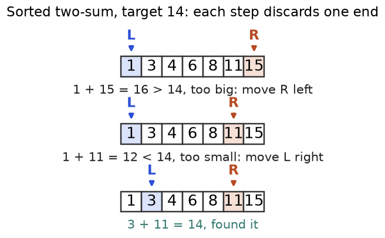
How to read it: each row is one moment in time. Row 1: 1 + 15 is too big, so R moves left. Row 2: 1 + 11 is too small, so L moves right. Row 3: 3 + 11 = 14.
The template
def two_sum_sorted(a, target):
l, r = 0, len(a) - 1 # one pointer at each end
while l < r: # l == r would be the SAME item
s = a[l] + a[r] # CHANGE: the value you inspect
if s == target: # CHANGE: the "found" test
return (l, r)
if s < target:
l += 1 # too small: the left item is useless
else:
r -= 1 # too big: the right item is useless
return None
a = [1, 3, 4, 6, 8, 11, 15]
print(two_sum_sorted(a, 14), two_sum_sorted(a, 100))
assert two_sum_sorted(a, 14) == (1, 5) and two_sum_sorted([7], 7) is None(1, 5) NoneTrace table
| Step | l | r | a[l] | a[r] | sum | Compare with 14 | Action |
|---|---|---|---|---|---|---|---|
| 1 | 0 | 6 | 1 | 15 | 16 | 16 > 14 | r = 5 |
| 2 | 0 | 5 | 1 | 11 | 12 | 12 < 14 | l = 1 |
| 3 | 1 | 5 | 3 | 11 | 14 | 14 = 14 | return (1, 5) |
while l <= r in a pair problem. Wrong: for [5] and target 10 you "pair" the 5 with itself. Right: while l < r.(value, index) pairs or use a dictionary (Chapter 2).Problem 3.2.1 (medium) Walls have heights [3, 9, 2, 6, 8, 4, 7, 5]. Two walls and the floor hold water equal to (distance apart) x (shorter wall). Find the largest amount.
| Idea | Start widest. Water is capped by the shorter wall, so only moving the shorter wall can help. |
|---|---|
| Brute force | Every pair of walls: O(n²). |
| Better approach | Measure, remember the best, move the pointer on the shorter wall inward. |
| Code | Below. |
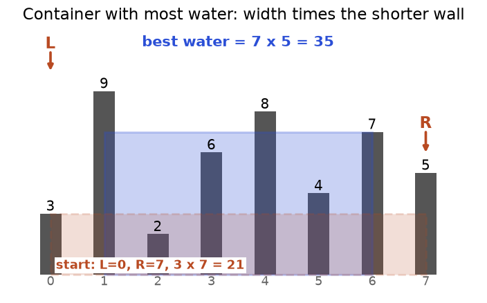
How to read it: the dashed orange box is the widest container, capped by the wall of height 3. The blue box is the winner: walls of height 9 and 7, five apart.
def max_water(h):
l, r, best = 0, len(h) - 1, 0
while l < r:
best = max(best, min(h[l], h[r]) * (r - l))
if h[l] < h[r]:
l += 1 # move the SHORTER wall
else:
r -= 1
return best
h = [3, 9, 2, 6, 8, 4, 7, 5]
print(max_water(h))
assert max_water(h) == max(min(h[i], h[j]) * (j - i) for i in range(8) for j in range(i + 1, 8)) == 3535| Dry run | (0,7): 3 x 7 = 21, move l. (1,7): 5 x 6 = 30, move r. (1,6): 7 x 5 = 35, move r. (1,5): 4 x 4 = 16; all later values are smaller. Best 35. |
|---|---|
| Complexity | O(n) time, O(1) space. |
| Edge cases | Two walls only; zero heights; equal walls (move either). |
Problem 3.2.2 (hard) 3Sum. List every set of three numbers from [-4, -1, -1, 0, 1, 2] that adds to 0, with no set repeated.
| Idea | Sort. Fix the first number a[i]; the other two must add to -a[i]: sorted two-sum on the part right of i. |
|---|---|
| Brute force | Three loops, O(n³). |
| Better approach | Sort, then pointers for each i: O(n²). Skip repeated values. |
| Code | Below. |
def three_sum(nums):
a, out = sorted(nums), []
for i in range(len(a) - 2):
if i > 0 and a[i] == a[i - 1]: # same first number as before: skip
continue
l, r = i + 1, len(a) - 1
while l < r:
s = a[i] + a[l] + a[r]
if s < 0:
l += 1
elif s > 0:
r -= 1
else:
out.append([a[i], a[l], a[r]])
l += 1
r -= 1
while l < r and a[l] == a[l - 1]: # skip repeated second numbers
l += 1
return out
print(three_sum([-4, -1, -1, 0, 1, 2]))
assert three_sum([0, 0, 0, 0]) == [[0, 0, 0]] and three_sum([1, 2]) == [][[-1, -1, 2], [-1, 0, 1]]| Dry run | i=0 (-4): sums stay negative, none. i=1 (-1): l=2, r=5: -1-1+2 = 0, record; then -1+0+1 = 0, record. i=2 repeats -1, skip. Later i values give no more. |
|---|---|
| Complexity | O(n²) time (sort is smaller), O(1) extra space. |
| Edge cases | Fewer than 3 numbers; all zeros (one triple); many duplicates. |
[-2, 0, 0, 2, 2] gives [-2, 0, 2] twice. Right: after a hit, move l past equal values and skip equal values of i.Going deeper
Why discarding is safe. Let h[l] <= h[r]. Any other partner j for l is closer, and its height is at most h[l], so its water is at most h[l] * (j - l), no more than the h[l] * (r - l) already counted. So l can go. Sorted two-sum is the same story. Why O(n). r - l starts at n - 1 and falls by 1 each step. Sorting cost. Sort-then-pointers is O(n log n); the hash-map version (Chapter 2) is O(n) time but O(n) memory.
3.3 Same-Direction Pointers: Reader and Writer
How to recognise it
- "Remove", "filter", "deduplicate" or "move all X to the end" in place.
- The answer is the first part of the same array, plus a length. Extra memory must be O(1).
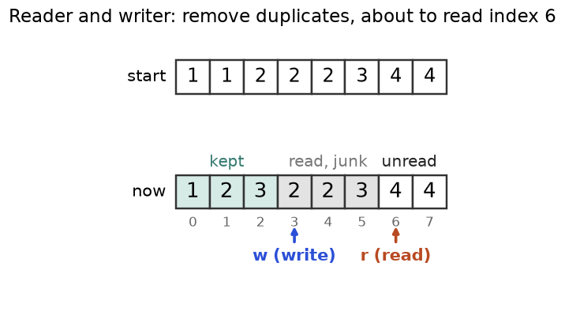
How to read it: the bottom row is the array after the reader has looked at indexes 0 to 5. The kept part is [1, 2, 3]. w is the next free slot; r is about to read the 4.
The template and its trace
def compact(a, keep):
w = 0 # writer: next free slot
for r in range(len(a)): # reader: visits every item once
if keep(a, r, w):
a[w] = a[r] # copy the good item forward
w += 1
return w # new length; a[:w] is the answer
a = [1, 1, 2, 2, 2, 3, 4, 4] # sorted: keep an item if it differs from the last kept one
n = compact(a, lambda a, r, w: w == 0 or a[r] != a[w - 1])
print(n, a[:n])
assert n == 4 and a[:n] == [1, 2, 3, 4] and compact([], lambda a, r, w: True) == 04 [1, 2, 3, 4]| r | a[r] | Last kept | Decision | w after | Array after |
|---|---|---|---|---|---|
| 0 | 1 | none | keep | 1 | [1,1,2,2,2,3,4,4] |
| 1 | 1 | 1 | skip | 1 | [1,1,2,2,2,3,4,4] |
| 2 | 2 | 1 | keep: a[1]=2 | 2 | [1,2,2,2,2,3,4,4] |
| 3 | 2 | 2 | skip | 2 | [1,2,2,2,2,3,4,4] |
| 4 | 2 | 2 | skip | 2 | [1,2,2,2,2,3,4,4] |
| 5 | 3 | 2 | keep: a[2]=3 | 3 | [1,2,3,2,2,3,4,4] |
| 6 | 4 | 3 | keep: a[3]=4 | 4 | [1,2,3,4,2,3,4,4] |
| 7 | 4 | 4 | skip | 4 | [1,2,3,4,2,3,4,4] |
The answer is the first w = 4 items. Ignore the junk after them.
Problem 3.3.1 (easy) Move every 0 to the end of [0, 1, 0, 3, 12] in place, keeping the other numbers in order.
| Idea | The writer marks where the next non-zero belongs. Swap each non-zero reader item into that slot. |
|---|---|
| Brute force | Build a new list of non-zeros plus zeros: O(n) time, O(n) space. |
| Better approach | One pass with swaps: O(1) space. |
| Code | Below. |
def move_zeroes(a):
w = 0
for r in range(len(a)):
if a[r] != 0:
a[w], a[r] = a[r], a[w]
w += 1
a = [0, 1, 0, 3, 12]
move_zeroes(a)
print(a)
assert a == [1, 3, 12, 0, 0][1, 3, 12, 0, 0]| Dry run | r=1 (1): swap with slot 0 gives [1,0,0,3,12], w=1. r=3 (3): swap with slot 1 gives [1,3,0,0,12], w=2. r=4 (12): swap with slot 2 gives [1,3,12,0,0]. |
|---|---|
| Complexity | O(n) time, O(1) space. |
| Edge cases | All zeros, no zeros, empty list. |
Going deeper
The invariant. An invariant is a sentence true at every step. Here: "a[0..w-1] is the correct answer for the part already read", plus w <= r, so nothing unread is overwritten. Merging two sorted lists in place works the same way if you fill from the back, where the free slots are (see the practice set). Three zones. Sorting an array of only 0, 1 and 2 in one pass extends this idea with a third pointer, the Dutch national flag method (Chapter 4). Stability. Reader/writer keeps the order of kept items.
3.4 Fast and Slow Pointers
How to recognise it
- A linked list and you need the middle, or a cycle.
- "A sequence repeats" where each value points to the next, and memory must be O(1).
val and a next arrow (None at the end). You can only walk forward from the head. Chapter 5 covers lists fully.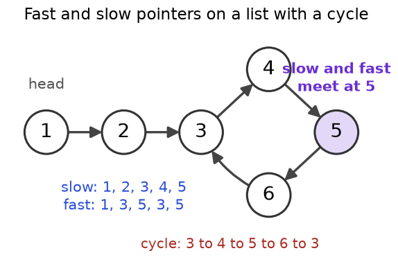
How to read it: nodes 1 and 2 are the tail; 3, 4, 5, 6 are the loop. Slow visits 1, 2, 3, 4, 5. Fast visits 1, 3, 5, 3, 5.
The template and its trace
class Node:
def __init__(self, val, next=None):
self.val, self.next = val, next
def build(values, loop_to=None):
nodes = [Node(v) for v in values]
for a, b in zip(nodes, nodes[1:]):
a.next = b
if loop_to is not None:
nodes[-1].next = nodes[loop_to] # last node points back: a cycle
return nodes[0]
def meeting_node(head):
slow = fast = head
while fast and fast.next: # test fast first, then fast.next
slow = slow.next # 1 step
fast = fast.next.next # 2 steps
print("slow", slow.val, "fast", fast.val)
if slow is fast:
return slow
return None # fast fell off the end: no cycle
head = build([1, 2, 3, 4, 5, 6], loop_to=2)
print("met at", meeting_node(head).val)
assert meeting_node(build([1, 2, 3])) is Noneslow 2 fast 3
slow 3 fast 5
slow 4 fast 3
slow 5 fast 5
met at 5
slow 2 fast 3| Step | slow moves to | fast moves to | Same node? |
|---|---|---|---|
| 0 | 1 | 1 | start |
| 1 | 2 | 3 (via 2) | no |
| 2 | 3 | 5 (via 4) | no |
| 3 | 4 | 3 (via 6) | no |
| 4 | 5 | 5 (via 4) | yes: loop found |
fast and in the loop test. Wrong: on a list with an even number of nodes fast becomes None and fast.next raises AttributeError. Right: while fast and fast.next.Problem 3.4.1 (medium) Find the node where the loop begins (node 3 in Figure 3.4).
| Idea | After the meeting, put one pointer back at the head. Move both one step at a time. They meet exactly at the loop start (proof below). |
|---|---|
| Brute force | Store visited nodes in a set; the first repeat is the start. O(n) time, O(n) memory. |
| Better approach | Floyd's method: O(n) time, O(1) memory. |
| Code | Below. |
class Node:
def __init__(self, val, next=None):
self.val, self.next = val, next
def loop_start(head):
slow = fast = head
while fast and fast.next:
slow, fast = slow.next, fast.next.next
if slow is fast: # phase 1: met inside the loop
slow = head # phase 2: restart one pointer at the head
while slow is not fast:
slow, fast = slow.next, fast.next
return slow
return None
nodes = [Node(v) for v in [1, 2, 3, 4, 5, 6]]
for a, b in zip(nodes, nodes[1:]):
a.next = b
nodes[-1].next = nodes[2]
print(loop_start(nodes[0]).val)
assert loop_start(nodes[0]).val == 3 and loop_start(Node(9)) is None3| Dry run | Phase 1 meets at 5. Phase 2: slow=1, fast=5. Step: slow 2, fast 6. Step: slow 3, fast 3. The loop starts at 3. |
|---|---|
| Complexity | O(n) time, O(1) space. |
| Edge cases | No loop (None); a node pointing to itself; loop starting at the head. |
Problem 3.4.2 (hard) Find the duplicate. A list of n + 1 numbers holds values from 1 to n, so some value repeats. Find one repeated value, without changing the list, using O(1) extra memory. Input [3, 1, 3, 4, 2].
| Idea | Treat index i as a node and nums[i] as its next. Two indexes holding the same value point to one node, so the walk contains a loop, and the loop starts at the duplicate value. |
|---|---|
| Brute force | Pairs O(n²); a set O(n) time but O(n) memory; sorting changes the list. |
| Better approach | Floyd's two phases on the "index to value" arrows. |
| Code | Below. |
def find_duplicate(nums):
slow = fast = 0
while True: # phase 1: meet inside the loop
slow = nums[slow]
fast = nums[nums[fast]]
if slow == fast:
break
slow = 0 # phase 2: walk from the start
while slow != fast:
slow = nums[slow]
fast = nums[fast]
return slow
print(find_duplicate([3, 1, 3, 4, 2]))
assert find_duplicate([3, 1, 3, 4, 2]) == 3 and find_duplicate([1, 1]) == 13| Dry run | Arrows: 0 to 3, 3 to 4, 4 to 2, 2 to 3. The loop is 3, 4, 2. Phase 1: (slow, fast) = (3, 4), (4, 3), (2, 2). Phase 2: slow=0, fast=2; step to (3, 3). Answer 3. |
|---|---|
| Complexity | O(n) time, O(1) space. |
| Edge cases | [1, 1]; a value repeated many times; values must lie in 1..n (a 0 would point at index 0 and break the idea). |
Going deeper
Why phase 2 works. Let the tail have length a, the loop length c, and let slow have walked b steps inside the loop when they meet. Slow walked a + b; fast walked twice that. Fast gained a whole number of laps, so a + b = k * c. From the meeting point, a more steps give b + a = k * c: you land on the loop start. A pointer from the head also needs a steps. Why fast catches slow. Inside the loop the gap shrinks by 1 per step, so it cannot jump over 0. Other uses. The middle of a list (when fast ends, slow is at the middle) and the happy-number check in the practice set.
3.5 Fixed-Size Sliding Window
k items; when it moves one step, add the new item and subtract the old one instead of re-adding everything. Analogy: a train window shows 3 houses. As the train moves, one house leaves on the left and one enters on the right. You do not re-look at the middle house.How to recognise it
- "Every subarray or substring of length k", "k consecutive", "last k items".
- A sum, average, count, maximum or letter-count match per frame. The brute force recomputes each frame: O(n * k).
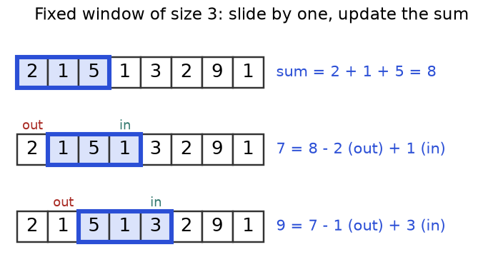
How to read it: row 1 sums 2 + 1 + 5 = 8 the slow way. Row 2 does not re-add: 8 - 2 + 1 = 7. Row 3: 7 - 1 + 3 = 9.
The template and its trace
def max_window_sum(a, k):
window = sum(a[:k]) # first frame, the slow way, once
best = window
for r in range(k, len(a)): # r: the item entering on the right
window += a[r] - a[r - k] # add the new item, subtract the one that left
best = max(best, window)
print("r =", r, "in", a[r], "out", a[r - k], "sum", window, "best", best)
return best
a = [2, 1, 5, 1, 3, 2, 9, 1]
print(max_window_sum(a, 3))
assert max_window_sum(a, 3) == max(sum(a[i:i + 3]) for i in range(6)) == 14r = 3 in 1 out 2 sum 7 best 8
r = 4 in 3 out 1 sum 9 best 9
r = 5 in 2 out 5 sum 6 best 9
r = 6 in 9 out 1 sum 14 best 14
r = 7 in 1 out 3 sum 12 best 14
14
r = 3 in 1 out 2 sum 7 best 8
r = 4 in 3 out 1 sum 9 best 9
r = 5 in 2 out 5 sum 6 best 9
r = 6 in 9 out 1 sum 14 best 14
r = 7 in 1 out 3 sum 12 best 14| Frame (indexes) | In | Out | Sum | Best |
|---|---|---|---|---|
| 0 to 2: [2, 1, 5] | - | - | 8 | 8 |
| 1 to 3: [1, 5, 1] | 1 | 2 | 8 + 1 - 2 = 7 | 8 |
| 2 to 4: [5, 1, 3] | 3 | 1 | 7 + 3 - 1 = 9 | 9 |
| 3 to 5: [1, 3, 2] | 2 | 5 | 9 + 2 - 5 = 6 | 9 |
| 4 to 6: [3, 2, 9] | 9 | 1 | 6 + 9 - 1 = 14 | 14 |
| 5 to 7: [2, 9, 1] | 1 | 3 | 14 + 1 - 3 = 12 | 14 |
a[r - k + 1] is still inside the frame. Right: after adding a[r] the frame is a[r-k+1 .. r], so the item that just left is a[r-k].Problem 3.5.1 (medium) Anagram starts. An anagram uses the same letters in any order. Find every start index in s = "cbaebabacd" where a substring is an anagram of p = "abc".
| Idea | An anagram of p is a window of length len(p) with the same letter counts as p. |
|---|---|
| Brute force | Sort every length-3 substring and compare: O(n * k log k). |
| Better approach | Fixed window with a letter counter: add the entering letter, remove the leaving one, compare counters. |
| Code | Below. |
from collections import Counter
def find_anagrams(s, p):
k = len(p)
if k > len(s):
return []
need, window, out = Counter(p), Counter(s[:k]), []
if window == need:
out.append(0)
for r in range(k, len(s)):
window[s[r]] += 1 # letter enters
left = s[r - k]
window[left] -= 1 # letter leaves
if window[left] == 0:
del window[left] # no zero counts, so == works on every Python
if window == need:
out.append(r - k + 1)
return out
print(find_anagrams("cbaebabacd", "abc"))
assert find_anagrams("abab", "ab") == [0, 1, 2] and find_anagrams("a", "ab") == [][0, 6]| Dry run | "cba" matches: record 0. Then "bae", "aeb", "eba", "bab", "aba" fail; "bac" (start 6) matches; "acd" fails. Answer [0, 6]. |
|---|---|
| Complexity | O(n) frame moves; each counter compare costs at most the alphabet size. Space O(alphabet). |
| Edge cases | p longer than s (return [] early); repeated letters in p. |
Counter({"a": 0, "b": 1}) == Counter({"b": 1}) is False, so the window never matches. Right: delete keys whose count reaches 0.Going deeper
What can slide? Anything you can both add and remove: sums, counts, sums of squares (so variance). A plain maximum cannot be undone by subtraction; sliding-window maximum uses a monotonic deque (Chapter 5). Decimals. Adding and subtracting floats can leave tiny drift; for money use whole cents.
3.6 Variable-Size Sliding Window
How to recognise it
- "Longest" or "shortest" subarray or substring satisfying a rule: no repeats, at most K kinds, sum at least S, contains all letters.
- Adding an item pushes the window one way and removing pushes it back (the monotone condition). Negative numbers break this.
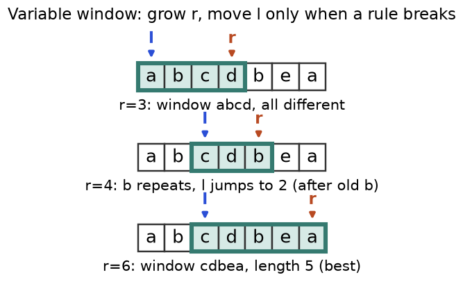
How to read it: row 1 is abcd. In row 2 the new b repeats the old b at index 1, so l jumps to 2. Row 3 reaches cdbea, length 5.
The template and its trace
Two shapes exist. For "longest", update the answer after the window is valid again. For "shortest", update it inside the shrink loop.
def longest_unique(s):
last = {} # letter -> index where it was last seen
l = best = 0
for r, ch in enumerate(s): # r only moves forward
if ch in last and last[ch] >= l: # the repeat is INSIDE the window
l = last[ch] + 1 # jump just past the old copy
last[ch] = r
best = max(best, r - l + 1)
print("r =", r, ch, "l =", l, "window", s[l:r + 1], "best", best)
return best
print(longest_unique("abcdbea"))
assert longest_unique("") == 0 and longest_unique("abba") == 2r = 0 a l = 0 window a best 1
r = 1 b l = 0 window ab best 2
r = 2 c l = 0 window abc best 3
r = 3 d l = 0 window abcd best 4
r = 4 b l = 2 window cdb best 4
r = 5 e l = 2 window cdbe best 4
r = 6 a l = 2 window cdbea best 5
5
r = 0 a l = 0 window a best 1
r = 1 b l = 0 window ab best 2
r = 2 b l = 2 window b best 2
r = 3 a l = 2 window ba best 2| r | Letter | Seen inside window? | l | Window | Best |
|---|---|---|---|---|---|
| 0 | a | no | 0 | a | 1 |
| 1 | b | no | 0 | ab | 2 |
| 2 | c | no | 0 | abc | 3 |
| 3 | d | no | 0 | abcd | 4 |
| 4 | b | yes, at 1 | 2 | cdb | 4 |
| 5 | e | no | 2 | cdbe | 4 |
| 6 | a | seen at 0, but 0 < l | 2 | cdbea | 5 |
last[ch] >= l. Wrong: for "abba" the final a was seen at 0, outside the window, yet l jumps back to 1 and the code reports 3. Right: react only to repeats inside the window; the answer is 2.Problem 3.6.1 (easy to medium) All numbers are positive. Find the length of the shortest run of consecutive numbers with sum at least 7 in [2, 3, 1, 2, 4, 3].
| Idea | Grow until the sum reaches 7, then shrink from the left while it still does, recording each length. |
|---|---|
| Brute force | All start and end pairs: O(n²). |
| Better approach | Variable window; valid because adding raises the sum and removing lowers it. |
| Code | Below. |
def shortest_at_least(a, target):
l = total = 0
best = float("inf")
for r, x in enumerate(a):
total += x
while total >= target: # valid: try to shrink
best = min(best, r - l + 1) # shortest => record INSIDE the loop
total -= a[l]
l += 1
return 0 if best == float("inf") else best
print(shortest_at_least([2, 3, 1, 2, 4, 3], 7))
assert shortest_at_least([1, 1, 1], 10) == 0 and shortest_at_least([9], 7) == 12| Dry run | Sums: 2, 5, 6, 8 at r=3: record 4, drop 2 (6). r=4: 10, record 4, drop 3 (7), record 3, drop 1 (6). r=5: 9, record 3, drop 2 (7), record 2 ([4, 3]), drop 4 (3). Best 2. |
|---|---|
| Complexity | Each index enters and leaves once: O(n) time, O(1) space. |
| Edge cases | No run reaches the target (return 0); one number is enough. |
[1, -1, 5] and target 5, the sum first reaches 5 with all three items; shrinking drops the 1 and the sum falls to 4, so the code answers 3. The true answer is 1 (just the 5). Removing no longer lowers the sum. Use prefix sums (3.7).Problem 3.6.2 (medium) At most K kinds. Find the length of the longest substring of "eceba" with at most 2 different letters.
| Idea | Keep a letter counter. If it holds more than K kinds, shrink from the left until it holds K. |
|---|---|
| Brute force | Check every substring: O(n²) or worse. |
| Better approach | Variable window; delete a letter from the counter when its count hits 0, so len(count) is the number of kinds. |
| Code | Below. |
from collections import defaultdict
def longest_k_distinct(s, k):
count = defaultdict(int)
l = best = 0
for r, ch in enumerate(s):
count[ch] += 1
while len(count) > k: # too many kinds: shrink
count[s[l]] -= 1
if count[s[l]] == 0:
del count[s[l]]
l += 1
best = max(best, r - l + 1) # longest => record AFTER the loop
return best
print(longest_k_distinct("eceba", 2))
assert longest_k_distinct("aa", 1) == 2 and longest_k_distinct("abc", 0) == 03| Dry run | r=2: "ece" has 2 kinds, length 3. r=3 (b): three kinds, drop e then c, window "eb", length 2. r=4 (a): three kinds, drop e, window "ba". Best 3. |
|---|---|
| Complexity | O(n) time, O(K) space. |
| Edge cases | K = 0 (answer 0); K at least the number of kinds (whole string); empty string. |
Problem 3.6.3 (hard) Minimum window substring. Find the shortest substring of s = "ADOBECODEBANC" containing every letter of t = "ABC" (with multiplicity). Return the empty string if none.
| Idea | Keep need (letters still required; negative means spare copies) and missing (unfilled slots). The window is valid when missing == 0. |
|---|---|
| Brute force | Check all substrings: O(n² * m) or worse. |
| Better approach | Grow right until valid; shrink left while the left letter is spare; record; then give up the left letter and continue. |
| Code | Below. |
from collections import Counter
def min_window(s, t):
need, missing, l = Counter(t), len(t), 0
best = (float("inf"), 0, 0)
for r, ch in enumerate(s):
if need[ch] > 0:
missing -= 1 # this letter fills a required slot
need[ch] -= 1
if missing == 0: # s[l..r] has everything
while need[s[l]] < 0: # drop spare letters on the left
need[s[l]] += 1
l += 1
if r - l + 1 < best[0]:
best = (r - l + 1, l, r + 1)
need[s[l]] += 1 # give up s[l]: window invalid again
missing += 1
l += 1
return "" if best[0] == float("inf") else s[best[1]:best[2]]
print(min_window("ADOBECODEBANC", "ABC"))
assert min_window("a", "aa") == "" and min_window("a", "a") == "a"BANC| Dry run | First valid window at r=5: "ADOBEC", length 6. After giving up the A, the next A at r=10 gives "CODEBA" (length 6). At r=12 the C arrives and the window shrinks to "BANC", length 4: the best. |
|---|---|
| Complexity | O(n + m) time; space O(alphabet). |
| Edge cases | t longer than s; repeated letters in t; no valid window; ties (the first is kept). |
if instead of while to shrink. Wrong: after one drop you stop, the window stays longer than needed, and the recorded length can be too big. Right: shrink in a while loop until the left letter is truly required.Going deeper
Why O(n). A while inside a for looks like O(n²), but l only moves forward and never passes r, so it moves at most n times in the whole run: 2n steps in total. This kind of "averaged over the whole run" count is called amortised. Which update goes where. If the window is valid until you add too much (repeats, kinds), record after fixing. If it becomes valid once you have enough (sum, coverage), record inside the shrink loop. When it fails. Negative numbers, or a rule like "sum equals exactly k": use prefix sums with a dictionary. "Exactly K kinds" can use atMost(K) - atMost(K-1) (practice set).
3.7 Prefix Sums and Difference Arrays
How to recognise it
- Many queries "sum of items from index l to r" on a list that does not change.
- "Number of subarrays with sum k", especially with negative numbers, where a window fails.
- Many range updates ("add 5 to positions 1 to 3") and a question only at the end: use a difference array.
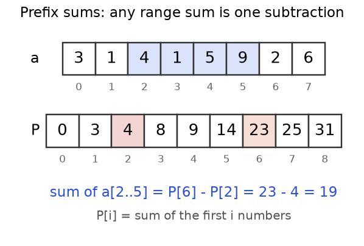
How to read it: the blue boxes are 4 + 1 + 5 + 9. P[6] = 23 covers everything before index 6; P[2] = 4 covers everything before index 2. Subtract and only the blue range is left: 19.
The template and its trace
from itertools import accumulate
a = [3, 1, 4, 1, 5, 9, 2, 6]
P = [0] + list(accumulate(a)) # P[0] = 0, P[i+1] = P[i] + a[i]
print(P)
def range_sum(P, l, r): # a[l..r], both ends included
return P[r + 1] - P[l]
print(range_sum(P, 2, 5))
assert range_sum(P, 2, 5) == sum(a[2:6]) == 19 and range_sum(P, 0, 7) == sum(a)[0, 3, 4, 8, 9, 14, 23, 25, 31]
19Trace: 0+3 = 3, 3+1 = 4, 4+4 = 8, 8+1 = 9, 9+5 = 14, 14+9 = 23, 23+2 = 25, 25+6 = 31. Each new box is the box before it plus one array item.
P[r] - P[l] leaves out a[r] (4 + 1 + 5 = 10 for the range 2 to 5). Right: with the padded array that starts at 0, use P[r + 1] - P[l].Problem 3.7.1 (medium) Subarrays that sum to k. Count the subarrays of [2, 3, -1, 4, 1, 2] whose sum is exactly 5.
| Idea | A subarray from l to r sums to k exactly when P[r+1] - P[l] = k, so P[l] = P[r+1] - k. At each position, count earlier prefix values equal to (current prefix) - k. A dictionary counts them. |
|---|---|
| Brute force | All (l, r) pairs: O(n²). |
| Better approach | One pass with seen, prefix value to count, starting at {0: 1} (the empty prefix). Works with negatives. |
| Code | Below. |
def count_sum_k(a, k):
seen = {0: 1} # the empty prefix has sum 0
prefix = count = 0
for x in a:
prefix += x
count += seen.get(prefix - k, 0) # lookup first ...
seen[prefix] = seen.get(prefix, 0) + 1 # ... then record
return count
a = [2, 3, -1, 4, 1, 2]
print(count_sum_k(a, 5))
brute = sum(sum(a[i:j + 1]) == 5 for i in range(6) for j in range(i, 6))
assert count_sum_k(a, 5) == brute == 2 and count_sum_k([0, 0, 0], 0) == 62| x | prefix | prefix - 5 | Seen before | count |
|---|---|---|---|---|
| 2 | 2 | -3 | 0 | 0 |
| 3 | 5 | 0 | 1 (empty prefix) | 1 |
| -1 | 4 | -1 | 0 | 1 |
| 4 | 8 | 3 | 0 | 1 |
| 1 | 9 | 4 | 1 (prefix 4) | 2 |
| 2 | 11 | 6 | 0 | 2 |
| Dry run | The hits are [2, 3] (prefix 0 to 5) and [4, 1] (prefix 4 to 9). |
|---|---|
| Complexity | O(n) time, O(n) space. |
| Edge cases | Zeros (many overlapping answers); the whole array as the answer (needs {0: 1}); negatives. |
[5] and k = 5 the code returns 0. Right: seen = {0: 1}. Also look up before recording; otherwise with k = 0 each prefix counts itself.Problem 3.7.2 (medium) Many range updates. Start with six zeros. Apply three updates "add v to positions l to r": (1, 3, 5), (2, 4, 2), (0, 1, -1). Give the final array.
| Idea | Record the change in step size: diff[l] += v and diff[r+1] -= v. A running sum of diff rebuilds the array. It is the reverse of a prefix sum. |
|---|---|
| Brute force | Loop over each range for each update: O(U * n). |
| Better approach | Two edits per update, one pass at the end: O(U + n). |
| Code | Below. |
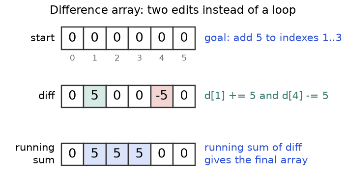
How to read it: only the middle row is edited. Its running sum is 0, 5, 5, 5, 0, 0: the +5 switches the extra on, the -5 switches it off.
from itertools import accumulate
def apply_updates(n, updates):
diff = [0] * (n + 1) # spare slot so r + 1 is always valid
for l, r, v in updates:
diff[l] += v # extra value starts here
diff[r + 1] -= v # and stops right after r
return list(accumulate(diff))[:n]
ups = [(1, 3, 5), (2, 4, 2), (0, 1, -1)]
print(apply_updates(6, ups))
brute = [0] * 6
for l, r, v in ups:
for i in range(l, r + 1):
brute[i] += v
assert apply_updates(6, ups) == brute == [-1, 4, 7, 7, 2, 0][-1, 4, 7, 7, 2, 0]| Dry run | Update 1: diff[1] = 5, diff[4] = -5. Update 2: diff[2] = 2, diff[5] = -2. Update 3: diff[0] = -1, diff[2] = 2 + 1 = 3. So diff = [-1, 5, 3, 0, -5, -2, 0] and its running sum is -1, 4, 7, 7, 2, 0, 0. Keep the first six. |
|---|---|
| Complexity | O(U + n) time, O(n) space. |
| Edge cases | An update ending at the last index; overlapping updates; negative values. |
diff exactly length n. Wrong: an update with r = n - 1 writes diff[n] and raises IndexError. Right: allocate n + 1 slots.Going deeper
Prefix sum plus hash map solves a family: longest subarray with sum k (store the first index of each prefix), equal numbers of 0s and 1s (turn 0 into -1, look for sum 0), and subarrays divisible by k (equal prefix remainders; practice set). Which operations work? Any with an undo: sums, XOR, letter counts. Not max or min. Inverse pair. The difference array is the inverse of the prefix sum. If you must mix updates and queries, you need a Fenwick tree or segment tree (beyond this chapter).
3.8 Two-Dimensional Prefix Sums
P[i][j] stores the sum of the rectangle from the top-left corner to just before row i, column j; then any rectangle is four lookups. Analogy: a land registry stores the farmland total from the north-west corner to every grid point. Any plot is: big block, minus the strip above, minus the strip to the left, plus the corner removed twice.How to recognise it
- A grid and many questions "sum of the rectangle from (r1, c1) to (r2, c2)", or "best k by k block".
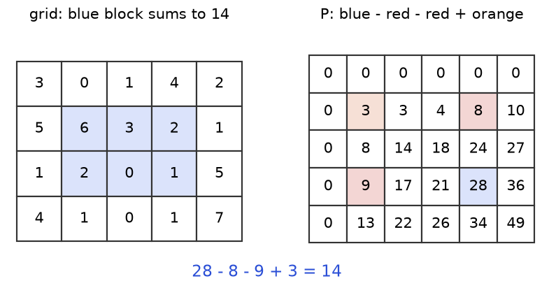
How to read it: 28 is everything above and left of the block's bottom-right corner. Subtract 8 (strip above) and 9 (strip to the left). The corner area 3 was subtracted twice, so add it back once.
def build_2d(g):
R, C = len(g), len(g[0])
P = [[0] * (C + 1) for _ in range(R + 1)] # extra row and column of zeros
for i in range(R):
for j in range(C):
P[i + 1][j + 1] = g[i][j] + P[i][j + 1] + P[i + 1][j] - P[i][j]
return P
def region_sum(P, r1, c1, r2, c2): # both corners included
return P[r2 + 1][c2 + 1] - P[r1][c2 + 1] - P[r2 + 1][c1] + P[r1][c1]
g = [[3, 0, 1, 4, 2], [5, 6, 3, 2, 1], [1, 2, 0, 1, 5], [4, 1, 0, 1, 7]]
P = build_2d(g)
print(P[2])
print(region_sum(P, 1, 1, 2, 3))
assert region_sum(P, 1, 1, 2, 3) == 6 + 3 + 2 + 2 + 0 + 1 == 14
assert region_sum(P, 0, 0, 3, 4) == sum(map(sum, g)) == 49[0, 8, 14, 18, 24, 27]
14Trace of one cell: P[2][3] = g[1][2] + P[1][3] + P[2][2] - P[1][2] = 3 + 4 + 14 - 3 = 18, which matches the printed row P[2]. The strip above (4) and the strip to the left (14) both contain the overlap (3), so one copy is removed.
28 - 8 - 9 = 11, too small by 3, because the top-left region was removed twice. Right: 28 - 8 - 9 + 3 = 14.Going deeper
Building costs O(R * C); each query is O(1), so it pays off after a few queries. The rule is inclusion-exclusion, as when counting members of two overlapping clubs. A 2D difference array also exists, for many rectangle updates. In image processing this structure is called a summed-area table.
3.9 Choosing the Pattern
Ask these questions from top to bottom and stop at the first yes.
| Question about the problem | Pattern |
|---|---|
| Linked list, or each value points to the next? | Fast and slow |
| Fixed length k? | Fixed window |
| Longest or shortest stretch, rule on counts or non-negative sums? | Variable window |
| Sum equals k, negatives allowed, or many range queries or updates? | Prefix sums, difference array |
| Rectangle sums in a grid? | 2D prefix sums |
| Sorted pair search, or both ends compared? | Opposite-end pointers |
| Remove, filter or partition in place? | Reader and writer |
Chapter recap
- Brute force repeats work. These patterns discard, reuse or remember so that O(n²) becomes O(n).
- Opposite-end pointers need order: move the end that cannot win, and stop at
l < r. - Reader and writer: the reader scans, the writer marks the next free slot, and
a[:w]is the answer. - Fast and slow pointers find the middle of a list, a cycle, and (with a second phase) the loop start.
- Fixed window: add the entering item, subtract the leaving item
a[r-k]. - Variable window:
ralways grows,lmoves only to repair the rule. Longest: record after repair. Shortest: record inside the repair loop. - Negatives or "exactly k" break windows. Use prefix sums with a dictionary that starts as
{0: 1}. P[r+1] - P[l]is a range sum. A difference array (+vat l,-vat r+1, size n+1) applies range updates.- 2D:
P[r2+1][c2+1] - P[r1][c2+1] - P[r2+1][c1] + P[r1][c1].
| Pattern | When to use | Template idea | Time | Space |
|---|---|---|---|---|
| Opposite-end pointers | Sorted pair or triple, palindrome, area between ends | l at start, r at end; move the useless end | O(n) (3Sum O(n²)) | O(1) |
| Reader and writer | In-place remove, filter, partition | Copy kept items to a[w], then w += 1 | O(n) | O(1) |
| Fast and slow | List middle, cycle, repeated value | Step 1 and 2; restart one pointer at head to find the loop start | O(n) | O(1) |
| Fixed window | Every subarray of length k | sum += a[r] - a[r-k] | O(n) | O(1) (deque: O(k)) |
| Variable window | Longest or shortest subarray with a monotone rule | Grow r; while broken, shrink l | O(n) | O(alphabet) or O(1) |
| Prefix sum + dictionary | Sum equals k, negatives, divisible by k | count += seen[prefix - k] | O(n) | O(n) |
| Prefix sums and difference array | Many range sums or many range adds | P[r+1] - P[l]; diff[l] += v, diff[r+1] -= v | O(n) build, O(1) query | O(n) |
| 2D prefix sums | Rectangle sums in a grid | Inclusion-exclusion on four corners | O(RC) build, O(1) query | O(RC) |
Practice set
Graded from easy to hard. Try each before reading the answer.
Problem 3.P.1 (easy) What does a brute-force pair search cost on a sorted array of n numbers, and what does two pointers cost?
Answer: O(n²) for all pairs. Two pointers is O(n): r - l shrinks by 1 each step.
Problem 3.P.2 (easy) Which pattern fits "longest stretch of days with at most 3 different weather types"?
Answer: a variable window with a counter of weather types (Problem 3.6.2 with K = 3).
Problem 3.P.3 (easy) For [2, 4, 6, 8] build the padded prefix array and the sum of indexes 1 to 3.
Answer: P = [0, 2, 6, 12, 20]. Sum = P[4] - P[1] = 20 - 2 = 18 (4 + 6 + 8).
Problem 3.P.4 (easy) Run sorted two-sum on [2, 5, 7, 11, 15] with target 18. List (l, r, sum).
Answer: (0,4,17) too small, l=1. (1,4,20) too big, r=3. (1,3,16) too small, l=2. (2,3,18) found: indexes (2, 3).
Problem 3.P.5 (easy) A window of size 4 slides over [1, 2, 3, 4, 5, 6]. Give every sum using the add-and-subtract rule.
Answer: first 1+2+3+4 = 10; then 10 + 5 - 1 = 14; then 14 + 6 - 2 = 18. The maximum is 18.
Problem 3.P.6 (easy to medium) Length 5, all zeros. Add 3 to positions 1 to 2 using a difference array. Show diff and the result.
Answer: diff has 6 slots: [0, 3, 0, -3, 0, 0]. Running sum: [0, 3, 3, 0, 0, 0]. Keep the first 5: [0, 3, 3, 0, 0].
Problem 3.P.7 (medium) What does this print, and why is the tail not [0, 0]?
a = [0, 1, 0, 2]
w = 0
for r in range(len(a)):
if a[r] != 0:
a[w] = a[r]
w += 1
print(a, w)[1, 2, 0, 2] 2Answer: the writer copies 1 to slot 0 and 2 to slot 1; it never writes zeros. Slots 2 and 3 keep the old values 0 and 2. Only a[:w] is meaningful. To get zeros at the end, either swap (Problem 3.3.1) or fill a[w:] with 0.
Problem 3.P.8 (medium) Find the bug. The call should print None, because one number cannot pair with itself.
def two_sum_sorted(a, target):
l, r = 0, len(a) - 1
while l <= r:
s = a[l] + a[r]
if s == target:
return (l, r)
if s < target:
l += 1
else:
r -= 1
return None
print(two_sum_sorted([5], 10))(0, 0)Answer: l <= r lets both pointers stand on index 0, so 5 pairs with itself. Change it to l < r.
Problem 3.P.9 (medium) Find the bug. The answer for "abba" should be 2.
def longest_unique(s):
last, l, best = {}, 0, 0
for r, ch in enumerate(s):
if ch in last:
l = last[ch] + 1
last[ch] = r
best = max(best, r - l + 1)
return best
print(longest_unique("abba"))3Answer: at the last a the old a (index 0) is outside the window, but l jumps back from 2 to 1 and the window "bba" is counted. Fix: if ch in last and last[ch] >= l, or l = max(l, last[ch] + 1).
Problem 3.P.10 (medium) Merge y = [2, 5, 6] into x = [1, 4, 7, 0, 0, 0] (3 real items) in place. Why from the back?
Answer: three pointers start at the end of x's real part (7), the end of y (6) and the last slot. Write the larger of 7 and 6 (7), then 6, 5, 4, 2, 1 to get [1, 2, 4, 5, 6, 7]. Filling from the front would overwrite real items not yet read.
Problem 3.P.11 (medium) Remove every 3 from [3, 2, 2, 3, 4] in place. Give the new length and the useful prefix.
Answer: reader/writer with "keep if not 3": 2 goes to slot 0, 2 to slot 1, 4 to slot 2. Length 3, prefix [2, 2, 4].
Problem 3.P.12 (medium) For the list 1, 2, 3, 4, 5, 6, what does the slow/fast middle routine return?
Answer: slow and fast start at 1. Moves: (2, 3), (3, 5), (4, None). Fast ends past the end, so slow is at 4, the second middle.
Problem 3.P.13 (medium) Happy number: repeatedly replace n by the sum of the squares of its digits. It is happy if it reaches 1. Is 19 happy? How does fast/slow help for unhappy numbers?
Answer: 19 to 1 + 81 = 82, to 64 + 4 = 68, to 36 + 64 = 100, to 1. Happy. An unhappy number such as 2 falls into a cycle (4, 16, 37, 58, 89, 145, 42, 20, back to 4). Treat "next number" as the arrow, run slow and fast, and stop when they meet at a value other than 1, or when the value reaches 1. No set is needed.
Problem 3.P.14 (medium) Pivot index of [1, 7, 3, 6, 5, 6]: the index where the left sum equals the right sum.
Answer: total 28. At index 3: left = 1 + 7 + 3 = 11, right = 28 - 11 - 6 = 11. Answer 3. Earlier indexes fail (left/right: 0/27, 1/20, 8/17).
Problem 3.P.15 (medium) Car pooling: trips (people, from, to) = (2, 1, 5) and (3, 3, 7), capacity 5, people on board from from up to but not including to. Feasible?
Answer: diff[1] += 2, diff[5] -= 2, diff[3] += 3, diff[7] -= 3. Running load over stops 0 to 7: 0, 2, 2, 5, 5, 3, 3, 0. The peak is 5, so yes with capacity 5 (and no with capacity 4).
Problem 3.P.16 (hard) Grid [[1,2,3],[4,5,6],[7,8,9]]. Sum of rows 1 to 2, columns 1 to 2, using the 2D prefix table.
Answer: P[3][3] = 45, P[1][3] = 6, P[3][1] = 12, P[1][1] = 1. So 45 - 6 - 12 + 1 = 28 (5 + 6 + 8 + 9).
Problem 3.P.17 (hard) Count subarrays of [4, 5, 0, -2, -3, 1] whose sum is divisible by 5.
Answer: prefix remainders with the starting 0: 0, 4, 4, 4, 2, 4, 0. Equal pairs: remainder 4 appears 4 times (6 pairs), remainder 0 twice (1 pair). Total 7. Python's % keeps remainders non-negative.
Problem 3.P.18 (hard) Count subarrays of [1, 2, 1, 2, 3] with exactly 2 different numbers.
Answer: exactly(2) = atMost(2) - atMost(1) = 12 - 5 = 7. (atMost(1) is 5: only single items, since no two neighbours are equal.)
Problem 3.P.19 (hard) Trapping rain water for bars [3, 0, 1, 2] with the two-pointer method.
Answer: l=0, r=3: h[l]=3 is not less than h[r]=2, so take the right: right_max=2, water 0, r=2. h[0]=3 > h[2]=1: right_max stays 2, water += 2 - 1 = 1, r=1. h[0]=3 > h[1]=0: water += 2 - 0 = 2, r=0. Stop. Total 3.
Problem 3.P.20 (hard, interview) Longest subarray of [1, -1, 5, -2, 3] with sum 3. Why does a window fail and what works?
Answer: negatives mean shrinking does not reduce the sum, so the window is not monotone. Use prefix sums and store the first index of each prefix value. Prefixes: 1, 0, 5, 3, 6. At index 3 the prefix is 3, and prefix 0 first appeared before the array (index -1), so the length is 3 - (-1) = 4: the subarray [1, -1, 5, -2].
Prompt pack
You are my patient DSA coach. I am a working professional preparing for interviews in Python. Teach me two pointers, sliding window and prefix sums with the learn-by-quiz method: ask me one question at a time, from easy to hard, wait for my answer, then correct me and explain with a small array and a step-by-step trace. After 10 questions, list my weak spots and give me 3 new problems for each.
Review my solution to this problem: [paste problem]. My code: [paste code]. Tell me which pattern it uses, whether the pointer or window update is correct, and its time and space complexity. Test it on these edge cases: empty input, one item, all equal items, negative numbers. Do not rewrite it; point to the exact line of any bug and ask me a question that helps me find the fix.
Act as a strict interviewer. Give me one array or string problem solvable with two pointers, a sliding window or prefix sums, without naming the pattern. Let me think aloud. Ask for the brute force and its complexity first, then hints only if I am stuck. At the end score me from 1 to 5 on: recognising the pattern, correctness, complexity, edge cases and communication.
Imagine a phone with 5,000 contacts in random order. To find "Priya" you read names one by one, and on a bad day you read all 5,000. Now sort the contacts by name. Open the book in the middle: it says "Mohan", and "Priya" comes later, so you throw away the first half in one glance. Repeat. About 13 looks find Priya among 5,000 names.
That is the whole chapter. Sorting puts items in order. Binary search uses that order to discard half of the candidates at every step. Together they turn many slow "compare every pair" solutions into fast ones: meeting rooms, merging intervals, "minimum speed so that...", rotated arrays and more.
After this chapter you can write the classic sorts, use Python's sorted with custom keys, spot the "sort first" signal, write one binary-search template without off-by-one bugs, search on an answer instead of an index, and handle rotated arrays, peaks and matrices. For a shorter companion, see also section 8.4 of the Linux, Git and Algorithms document. Chapter 1 gave you Big-O and Chapter 3 gave you two pointers; we reuse both.
4.1 Why Sort, and How Fast Can Sorting Be?
How to recognise a "sort first" problem
- It asks about neighbours: closest pair, duplicates, gaps, overlaps.
- The input order does not matter for the answer (a bag of numbers, a set of meetings).
- A brute force compares every pair, and only adjacent items would matter if the data were ordered.
- The data is already sorted, or "sorted except for one twist": think binary search.
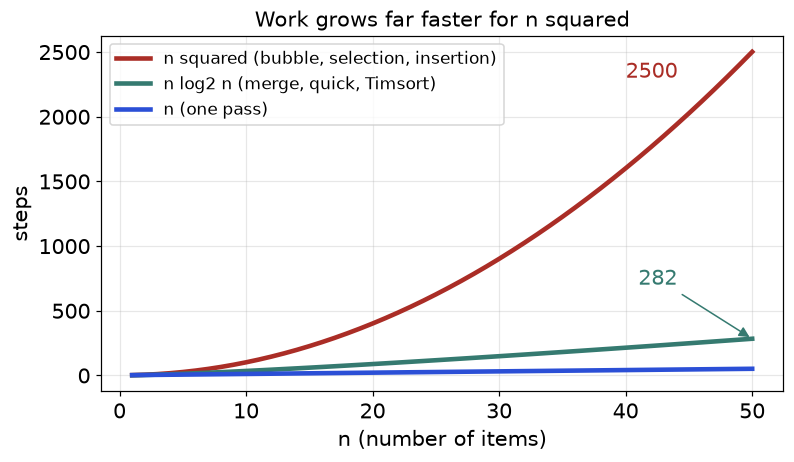
How to read it: n log2 n hugs the straight line, while n squared shoots up. For a million items, n squared is a trillion steps (hours to days) and n log n is about 20 million (seconds).
| Algorithm | Best | Average | Worst | Extra space | Stable? |
|---|---|---|---|---|---|
| Bubble (early exit) | O(n) | O(n2) | O(n2) | O(1) | Yes |
| Selection | O(n2) | O(n2) | O(n2) | O(1) | No |
| Insertion | O(n) | O(n2) | O(n2) | O(1) | Yes |
| Merge | O(n log n) | O(n log n) | O(n log n) | O(n) | Yes |
| Quick (random pivot) | O(n log n) | O(n log n) | O(n2), unlikely | O(log n) | No |
| Counting (range k) | O(n + k) | O(n + k) | O(n + k) | O(n + k) | Yes |
| Timsort (Python) | O(n) | O(n log n) | O(n log n) | up to O(n) | Yes |
Going deeper
Why can no comparison sort beat n log n? Any of the n! orderings may be the right one. Each comparison has two outcomes, so k comparisons separate at most 2k orderings. We need 2k ≥ n!, so k ≥ log2(n!), which is about n log2 n. The only escape is to not compare, as counting and radix sort do (section 4.5). Heap sort, another O(n log n) sort, appears in Chapter 7.
4.2 The Three Simple Sorts: Insertion, Selection, Bubble
These are slow on big inputs, O(n2), but their ideas (a sorted prefix, swap into final place, early exit) reappear inside harder problems. Insertion sort matters most.
How to recognise it
- The list is tiny (under about 30 items) or nearly sorted.
- Items arrive one at a time and the collection must stay sorted.
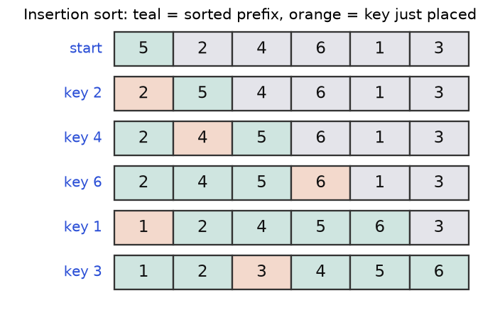
How to read it: in row "key 1" the 1 jumps to the front, pushing four items right. In row "key 6" nothing moves. That is why insertion sort is fast on nearly sorted data.
def insertion_sort(a):
a = a[:] # copy: never change the caller's list
for i in range(1, len(a)): # a[0..i-1] is already sorted
key, j = a[i], i - 1
while j >= 0 and a[j] > key: # strict > keeps equal items in order (stable)
a[j + 1] = a[j] # shift the bigger item right
j -= 1
a[j + 1] = key # drop the key into the gap
return a
assert insertion_sort([5, 2, 4, 6, 1, 3]) == [1, 2, 3, 4, 5, 6]
print(insertion_sort([5, 2, 4, 6, 1, 3]))[1, 2, 3, 4, 5, 6]| i | key | Items shifted right | Array after placing key |
|---|---|---|---|
| 1 | 2 | 5 | [2, 5, 4, 6, 1, 3] |
| 2 | 4 | 5 | [2, 4, 5, 6, 1, 3] |
| 3 | 6 | none | [2, 4, 5, 6, 1, 3] |
| 4 | 1 | 6, 5, 4, 2 | [1, 2, 4, 5, 6, 3] |
| 5 | 3 | 6, 5, 4 | [1, 2, 3, 4, 5, 6] |
Total shifts: 1 + 1 + 0 + 4 + 3 = 9, exactly the number of inversions. Each shift removes one inversion, so insertion sort costs O(n + inversions).
def selection_sort(a):
a = a[:]
for i in range(len(a) - 1): # a[0..i-1] holds the i smallest, final
smallest = i
for j in range(i + 1, len(a)):
if a[j] < a[smallest]:
smallest = j
a[i], a[smallest] = a[smallest], a[i]
return a
assert selection_sort([64, 25, 12, 22, 11]) == [11, 12, 22, 25, 64]
print(selection_sort([64, 25, 12, 22, 11]))[11, 12, 22, 25, 64]| i | Smallest of the unsorted part | Array after swap |
|---|---|---|
| 0 | 11 at index 4 | [11, 25, 12, 22, 64] |
| 1 | 12 at index 2 | [11, 12, 25, 22, 64] |
| 2 | 22 at index 3 | [11, 12, 22, 25, 64] |
| 3 | 25 at index 3 (no move) | [11, 12, 22, 25, 64] |
def bubble_sort(a):
a = a[:]
for end in range(len(a) - 1, 0, -1): # a[end+1..] is already final
swapped = False
for j in range(end):
if a[j] > a[j + 1]:
a[j], a[j + 1] = a[j + 1], a[j]
swapped = True
if not swapped: # a clean sweep means sorted: stop early
break
return a
assert bubble_sort([5, 1, 4, 2, 8]) == [1, 2, 4, 5, 8]
print(bubble_sort([5, 1, 4, 2, 8]))[1, 2, 4, 5, 8]| Pass | Comparisons | Array after |
|---|---|---|
| 1 | (5,1) swap; (5,4) swap; (5,2) swap; (5,8) keep | [1, 4, 2, 5, 8] |
| 2 | (1,4) keep; (4,2) swap; (4,5) keep | [1, 2, 4, 5, 8] |
| 3 | (1,2) keep; (2,4) keep; no swap, stop | [1, 2, 4, 5, 8] |
swapped flag always does n(n-1)/2 comparisons, even on sorted input. Right: stop after a pass with no swap; sorted input then costs n-1 comparisons.a[j] >= key in the insertion loop. Equal items move past each other, so the sort is no longer stable. Right: strict >.Problem 4.2.1 (medium) Show that selection sort is not stable but insertion sort is, using records (value, label) = [(2, "a"), (2, "b"), (1, "c")] sorted by value only.
| Idea | A long-distance swap can jump an item over its equal. |
|---|---|
| Brute force | Not applicable: run both and compare labels. |
| Better | Reason about moves instead of testing. |
| Code | Below. |
| Dry run | Selection, i = 0: smallest is (1,c) at index 2; swap with index 0 gives [(1,c), (2,b), (2,a)]: b now precedes a. Insertion shifts both 2s right without passing either: [(1,c), (2,a), (2,b)]. |
| Complexity | Both O(n2). |
| Edge cases | With distinct values stability is invisible; it matters only on ties. |
def selection_by_value(r):
r = r[:]
for i in range(len(r) - 1):
m = min(range(i, len(r)), key=lambda j: r[j][0]) # first minimum
r[i], r[m] = r[m], r[i]
return r
def insertion_by_value(r):
r = r[:]
for i in range(1, len(r)):
key, j = r[i], i - 1
while j >= 0 and r[j][0] > key[0]:
r[j + 1] = r[j]
j -= 1
r[j + 1] = key
return r
data = [(2, "a"), (2, "b"), (1, "c")]
assert insertion_by_value(data) == sorted(data, key=lambda x: x[0])
assert selection_by_value(data) != sorted(data, key=lambda x: x[0])
print(selection_by_value(data))
print(insertion_by_value(data))[(1, 'c'), (2, 'b'), (2, 'a')]
[(1, 'c'), (2, 'a'), (2, 'b')]4.3 Merge Sort: Divide and Conquer
How to recognise it
- You need guaranteed O(n log n) and a stable sort.
- You must count something across two halves: inversions, smaller-after-me.
- Linked lists, or data merged from sorted chunks.
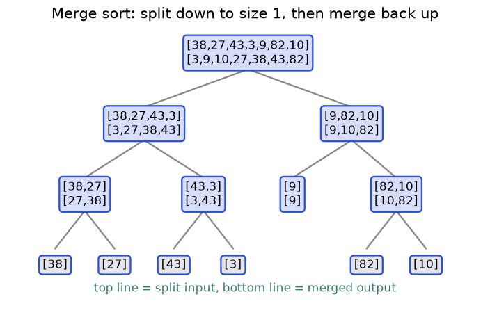
How to read it: go down to see the splitting, which stops at single items (already sorted). Then read upward: [38] and [27] merge into [27, 38]; [43] and [3] into [3, 43]; those two into [3, 27, 38, 43]. The root merges the two big halves.
def merge(left, right):
"""Merge two sorted lists in O(len(left) + len(right))."""
out, i, j = [], 0, 0
while i < len(left) and j < len(right):
if left[i] <= right[j]: # <= takes the LEFT item on ties: stable
out.append(left[i]); i += 1
else:
out.append(right[j]); j += 1
return out + left[i:] + right[j:] # one side is empty; the other tail is sorted
def merge_sort(a):
if len(a) <= 1: # 0 or 1 items are already sorted
return a[:]
mid = len(a) // 2
return merge(merge_sort(a[:mid]), merge_sort(a[mid:]))
data = [38, 27, 43, 3, 9, 82, 10]
assert merge_sort(data) == sorted(data)
assert merge([1, 4, 7], [2, 3, 9, 10]) == [1, 2, 3, 4, 7, 9, 10]
print(merge_sort(data))[3, 9, 10, 27, 38, 43, 82]Trace of one merge: left = [27, 38], right = [3, 43].
| Step | i | j | Compare | Take | Output so far |
|---|---|---|---|---|---|
| 1 | 0 | 0 | 27 vs 3 | 3 (right) | [3] |
| 2 | 0 | 1 | 27 vs 43 | 27 (left) | [3, 27] |
| 3 | 1 | 1 | 38 vs 43 | 38 (left) | [3, 27, 38] |
| 4 | 2 | 1 | left empty | copy tail: 43 | [3, 27, 38, 43] |
Why O(n log n): halving n items down to size 1 takes log2 n levels (8 items: 8, 4, 2, 1). Each level merges every item once, so costs about n. Total: n x log2 n. The merged lists make the space O(n).
left[i:] and right[j:]; exactly one is non-empty.Problem 4.3.1 (medium) Count the inversions in [2, 4, 1, 3, 5].
| Idea | While merging, taking an item from the right half means it is smaller than every item still waiting in the left half. Each waiting item is one inversion. |
|---|---|
| Brute force | All pairs: O(n2), 5 billion pairs for n = 100,000. |
| Better | Merge sort with a counter: O(n log n). |
| Code | Below. |
| Dry run | By eye: (2,1), (4,1), (4,3) = 3. In the algorithm: left [2,4], right [1,3,5]. Take 1: 2 items wait, +2. Take 2. Take 3: one item (4) waits, +1. Total 3. |
| Complexity | O(n log n) time, O(n) space. |
| Edge cases | Sorted: 0. Reversed: n(n-1)/2. Equal items are not inversions, so ties take from the left (<=). |
def sort_and_count(a):
"""Return (sorted copy, number of inversions)."""
if len(a) <= 1:
return a[:], 0
mid = len(a) // 2
left, c1 = sort_and_count(a[:mid])
right, c2 = sort_and_count(a[mid:])
out, i, j, cross = [], 0, 0, 0
while i < len(left) and j < len(right):
if left[i] <= right[j]:
out.append(left[i]); i += 1
else:
out.append(right[j]); j += 1
cross += len(left) - i # every item still waiting in left is bigger
return out + left[i:] + right[j:], c1 + c2 + cross
assert sort_and_count([2, 4, 1, 3, 5])[1] == 3
assert sort_and_count([2, 2])[1] == 0
assert sort_and_count(list(range(10, 0, -1)))[1] == 45
print(sort_and_count([2, 4, 1, 3, 5]))([1, 2, 3, 4, 5], 3)left[i] < right[j] in the counter. On ties it takes the right item first and counts equal pairs: [2, 2] reports 1. Right: <=.Going deeper
The pattern "count pairs i < j with a relation between a[i] and a[j]" is a merge sort family: inversions, reverse pairs (a[i] > 2 a[j]) and "count smaller numbers after self". Count the pairs with a two-pointer pass over the two sorted halves before merging. Bottom-up merge sort merges runs of size 1, 2, 4, ... in loops with no recursion. Linked lists favour merge sort because merging needs only pointer changes (O(1) extra space).
4.4 Quick Sort and Partition
How to recognise it
- You need an in-place sort with good average speed.
- You need the k-th smallest item without fully sorting (quickselect).
- You must split items into groups by a condition (negatives first, three colours): partition is the tool.
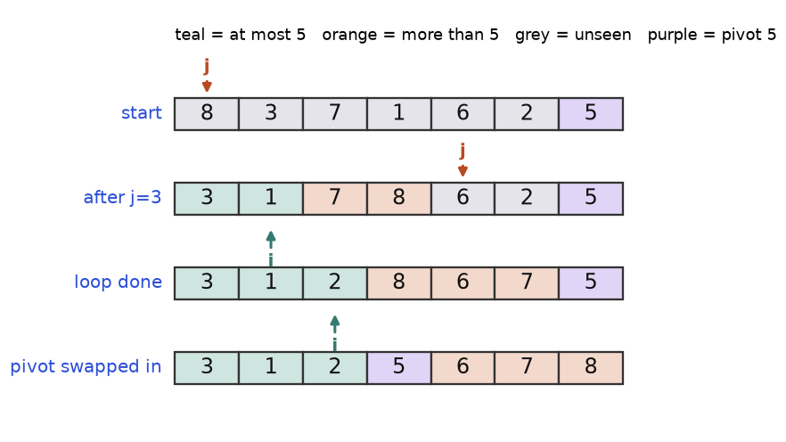
How to read it: in row "after j=3" teal cells (at most 5) fill indexes 0 and 1, orange cells (more than 5) fill 2 and 3, and grey cells are unseen. When j finds a small item it swaps with the first orange cell, growing the teal zone. The last row drops the pivot into the first orange cell, its final place.
import random
def partition(a, lo, hi):
"""Partition a[lo..hi] around pivot a[hi]; return the pivot's final index."""
pivot, i = a[hi], lo - 1 # a[lo..i] holds items <= pivot
for j in range(lo, hi): # j scans the unseen items
if a[j] <= pivot:
i += 1
a[i], a[j] = a[j], a[i] # grow the small zone by one
a[i + 1], a[hi] = a[hi], a[i + 1] # put the pivot between the zones
return i + 1
def quick_sort(a, lo=0, hi=None):
hi = len(a) - 1 if hi is None else hi
if lo >= hi: # 0 or 1 items: done
return
r = random.randint(lo, hi) # random pivot defeats nasty inputs
a[r], a[hi] = a[hi], a[r]
p = partition(a, lo, hi)
quick_sort(a, lo, p - 1)
quick_sort(a, p + 1, hi)
test = [8, 3, 7, 1, 6, 2, 5]
print(partition(test, 0, 6), test)
random.seed(1)
data = [8, 3, 7, 1, 6, 2, 5]
quick_sort(data)
assert data == [1, 2, 3, 5, 6, 7, 8]3 [3, 1, 2, 5, 6, 7, 8]Trace of one partition: [8, 3, 7, 1, 6, 2, 5], pivot 5, i starts at -1.
| j | a[j] | Action | i | Array after |
|---|---|---|---|---|
| 0 | 8 | 8 > 5, skip | -1 | [8, 3, 7, 1, 6, 2, 5] |
| 1 | 3 | swap a[0], a[1] | 0 | [3, 8, 7, 1, 6, 2, 5] |
| 2 | 7 | skip | 0 | [3, 8, 7, 1, 6, 2, 5] |
| 3 | 1 | swap a[1], a[3] | 1 | [3, 1, 7, 8, 6, 2, 5] |
| 4 | 6 | skip | 1 | [3, 1, 7, 8, 6, 2, 5] |
| 5 | 2 | swap a[2], a[5] | 2 | [3, 1, 2, 8, 6, 7, 5] |
| end | pivot | swap a[3], a[6] | 2 | [3, 1, 2, 5, 6, 7, 8] |
The pivot lands at index 3 (the function returns 3). Cost: if pivots land near the middle, the depth is about log2 n and each level touches n items: O(n log n). If every pivot is the smallest or largest (last-item pivot on a sorted list), one side is empty each time and the total is n(n-1)/2, O(n2). A random pivot makes that astronomically unlikely.
Problem 4.4.1 (medium) Find the 3rd largest value in [3, 2, 1, 5, 6, 4] without sorting everything.
| Idea | The k-th largest sits at index n - k in sorted order. Partition fixes the pivot's final index. If it equals the target, stop; otherwise keep only the side that contains the target (quickselect). |
|---|---|
| Brute force | Sort and index: O(n log n). |
| Better | Quickselect: n + n/2 + n/4 + ... is about 2n on average, so O(n); worst O(n2). A heap gives O(n log k) (Chapter 7). |
| Code | Below. |
| Dry run | n = 6, k = 3, target index 3 (sorted value 4). A pivot landing at 5 means search indexes 0..4; landing at 1 means search 2..5; landing at 3 means done. |
| Complexity | Average O(n), worst O(n2); O(1) extra space. |
| Edge cases | k = 1 (maximum), k = n (minimum), duplicates. |
import random
def kth_largest(nums, k):
a, target = nums[:], len(nums) - k # target = index in sorted order
lo, hi = 0, len(a) - 1
while True:
r = random.randint(lo, hi)
a[r], a[hi] = a[hi], a[r]
pivot, i = a[hi], lo - 1
for j in range(lo, hi):
if a[j] <= pivot:
i += 1
a[i], a[j] = a[j], a[i]
a[i + 1], a[hi] = a[hi], a[i + 1]
p = i + 1 # pivot's final index
if p == target:
return a[p]
if p < target:
lo = p + 1 # answer is on the right
else:
hi = p - 1 # answer is on the left
random.seed(3)
assert kth_largest([3, 2, 1, 5, 6, 4], 3) == 4
assert kth_largest([7, 7, 7], 2) == 7 and kth_largest([9], 1) == 9
for k in range(1, 7):
assert kth_largest([3, 2, 1, 5, 6, 4], k) == sorted([3, 2, 1, 5, 6, 4], reverse=True)[k - 1]
print(kth_largest([3, 2, 1, 5, 6, 4], 3))4Problem 4.4.2 (medium) The Dutch national flag: sort a list holding only 0, 1 and 2 in one pass with O(1) extra space. Example [2, 0, 2, 1, 1, 0].
| Idea | Three-way partition with lo, mid, hi. Zones: a[:lo] are 0s, a[lo:mid] are 1s, a[mid:hi+1] unknown, a[hi+1:] are 2s. |
|---|---|
| Brute force | Sort in O(n log n), or count each value and rewrite (two passes). |
| Better | One pass, O(n). |
| Code | Below. |
| Dry run | Trace table below. |
| Complexity | O(n) time, O(1) space. |
| Edge cases | Empty list; all equal; no 1s. After swapping a 2 to the back, do not advance mid. |
def sort_colors(a):
a = a[:]
lo, mid, hi = 0, 0, len(a) - 1
while mid <= hi:
if a[mid] == 0:
a[lo], a[mid] = a[mid], a[lo]
lo += 1
mid += 1 # the swapped-in item came from the 1s zone: safe
elif a[mid] == 1:
mid += 1
else:
a[mid], a[hi] = a[hi], a[mid]
hi -= 1 # do NOT advance mid: the new a[mid] is unchecked
return a
assert sort_colors([2, 0, 2, 1, 1, 0]) == [0, 0, 1, 1, 2, 2]
assert sort_colors([]) == [] and sort_colors([1, 2, 0]) == [0, 1, 2]
print(sort_colors([2, 0, 2, 1, 1, 0]))[0, 0, 1, 1, 2, 2]| Step | lo | mid | hi | a[mid] | Action | Array after |
|---|---|---|---|---|---|---|
| 1 | 0 | 0 | 5 | 2 | swap a[0], a[5]; hi = 4 | [0, 0, 2, 1, 1, 2] |
| 2 | 0 | 0 | 4 | 0 | lo = 1, mid = 1 | [0, 0, 2, 1, 1, 2] |
| 3 | 1 | 1 | 4 | 0 | lo = 2, mid = 2 | [0, 0, 2, 1, 1, 2] |
| 4 | 2 | 2 | 4 | 2 | swap a[2], a[4]; hi = 3 | [0, 0, 1, 1, 2, 2] |
| 5 | 2 | 2 | 3 | 1 | mid = 3 | [0, 0, 1, 1, 2, 2] |
| 6 | 2 | 3 | 3 | 1 | mid = 4 > hi: stop | [0, 0, 1, 1, 2, 2] |
mid += 1 after swapping a 2 to the back. Input [1, 2, 0] ends as [1, 0, 2]: the 0 swapped into mid was never examined. Right: only move hi.Going deeper
Not stable: partition's long swaps jump over equal items. Duplicates: Lomuto sends all equal items to one side, which is slow when most values are equal; three-way partition (the flag above) fixes it. Introsort switches to heap sort when recursion gets too deep, guaranteeing O(n log n); C++'s std::sort uses this idea. Stack depth: recurse into the smaller side and loop on the larger, and the depth stays at most log2 n.
4.5 Beating n log n, Stability and How Python Sorts
How to recognise it
- Integers in a small known range: ages 0 to 120, marks 0 to 100, letters, digits.
- n is large and the range k is small, so O(n + k) beats O(n log n).
def counting_sort(a, k):
"""Sort integers in 0..k in O(n + k) time and O(k) extra space."""
counts = [0] * (k + 1) # counts[v] = how many times v appears
for x in a:
counts[x] += 1
out = []
for value, c in enumerate(counts):
out.extend([value] * c)
return out
def radix_sort(a):
"""LSD radix sort for non-negative integers: one stable pass per digit."""
a, place = a[:], 1 # place 1 = ones digit, 10 = tens digit, ...
while place <= max(a, default=0):
buckets = [[] for _ in range(10)]
for x in a:
buckets[(x // place) % 10].append(x) # append keeps input order: stable
a = [x for b in buckets for x in b]
print("place", place, a)
place *= 10
return a
assert counting_sort([3, 1, 3, 0, 2, 1], 3) == [0, 1, 1, 2, 3, 3]
data = [170, 45, 75, 90, 802, 24, 2, 66]
assert radix_sort(data) == sorted(data)place 1 [170, 90, 802, 2, 24, 45, 75, 66]
place 10 [802, 2, 24, 45, 66, 170, 75, 90]
place 100 [2, 24, 45, 66, 75, 90, 170, 802]Radix sort handles big numbers: sort by the ones digit, then tens, then hundreds, each pass stable. The three printed lines are the trace. After the tens pass, 802 and 2 (both end in 02) sit together in the order the ones pass gave. With d digits the cost is O(d (n + 10)).
Python's sort: Timsort
sorted(x) and x.sort() run Timsort, designed by Tim Peters for Python (Java uses it for object arrays too). Real data is often partly ordered, so Timsort finds natural runs (ascending, or strictly descending which it reverses), lengthens short runs with insertion sort to a small minimum size (32 to 64 items), then merges neighbouring runs. Result: O(n) on sorted or reversed input, O(n log n) worst case, stable, temporary memory up to about n/2 items. The code counts comparisons to prove it.
import random
calls = 0
class Counted:
def __init__(self, v):
self.v = v
def __lt__(self, other): # sort only ever uses <, so count it
global calls
calls += 1
return self.v < other.v
def comparisons(values):
global calls
calls = 0
sorted(Counted(v) for v in values)
return calls
n = 1000
random.seed(2)
asc = comparisons(list(range(n)))
desc = comparisons(list(range(n, 0, -1)))
rnd = comparisons(random.sample(range(n), n))
assert asc == n - 1
print("ascending", asc, "descending", desc, "random", rnd)ascending 999 descending 999 random 8667Custom keys
The key function runs once per item. Tuples compare left to right, so (a, b) means "by a, ties by b". To sort a number descending inside a tuple, negate it. For strings use two passes (Problem 4.5.1) or a comparator (Problem 4.6.4).
words = ["pear", "fig", "banana", "kiwi", "apple", "Fig"]
print(sorted(words)) # capitals sort before lowercase
print(sorted(words, key=str.lower)) # case-insensitive; ties keep input order
print(sorted(words, key=lambda w: (-len(w), w))) # longest first, then alphabetical
nums = [3, 1, 2]
result = nums.sort() # in place: returns None, not the list
print(result, nums)['Fig', 'apple', 'banana', 'fig', 'kiwi', 'pear']
['apple', 'banana', 'fig', 'Fig', 'kiwi', 'pear']
['banana', 'apple', 'kiwi', 'pear', 'Fig', 'fig']
None [1, 2, 3]ranked = scores.sort(); ranked is None. Right: ranked = sorted(scores) for a new list, or scores.sort() alone to change the original.Problem 4.5.1 (medium) Sort staff by department A to Z, and inside a department by name Z to A. Strings cannot be negated, so use stability.
| Idea | Sort by the less important key first, then by the main key. The stable second sort keeps the name order inside ties. |
|---|---|
| Brute force | A comparator via cmp_to_key: slower and harder to read. |
| Better | Two stable passes: O(n log n). |
| Code | Below. |
| Dry run | Pass 1 (name Z to A): Tara, Raj, Neha, Ben. Pass 2 (department, stable): Eng keeps Tara, Neha; Ops keeps Raj, Ben. |
| Complexity | O(n log n) time, O(n) space. |
| Edge cases | One department; all names equal. |
staff = [("Ben", "Ops"), ("Neha", "Eng"), ("Raj", "Ops"), ("Tara", "Eng")]
step1 = sorted(staff, key=lambda s: s[0], reverse=True) # secondary key first
step2 = sorted(step1, key=lambda s: s[1]) # main key second, stable
assert step2 == [("Tara", "Eng"), ("Neha", "Eng"), ("Raj", "Ops"), ("Ben", "Ops")]
print(step1)
print(step2)[('Tara', 'Eng'), ('Raj', 'Ops'), ('Neha', 'Eng'), ('Ben', 'Ops')]
[('Tara', 'Eng'), ('Neha', 'Eng'), ('Raj', 'Ops'), ('Ben', 'Ops')]Going deeper
The key is cached: Python calls key(x) once per item, so an expensive key costs n calls, not n log n. A comparator (cmp_to_key) is called O(n log n) times. Merge policy: Python 3.11 and later use a refined rule for choosing which neighbouring runs to merge; the guarantees in the table are unchanged. Escaping the bound: n log n applies to comparison sorts only; counting, radix and bucket sorts use the structure of the values, at the price of memory and a restricted input type.
4.6 Sort-Then-Solve Patterns: Intervals and Meeting Rooms
How to recognise it
- The input is intervals, meetings, bookings or [start, end] pairs.
- The question is "do any overlap?", "merge them", "how many at once?".
- Duplicates, closest pair, minimum difference: after sorting, answers sit side by side.
- "Arrange to make the biggest..." (a custom order).
The template
- Sort by the field that makes neighbours meaningful (start time, value).
- Walk once, keeping the previous result (last merged interval, previous end).
- Compare the current item with it only; combine or start a new group.
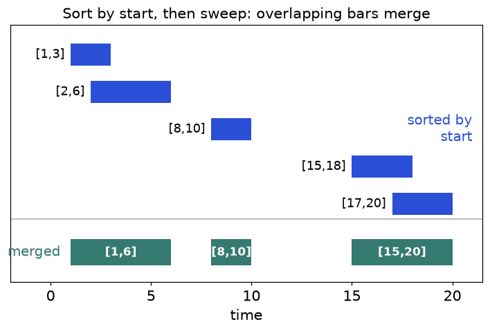
How to read it: because bars are sorted by start, an overlap can only happen with the last merged bar. You never look further back. That is the whole reason sorting helps.
Problem 4.6.1 (easy) Can one person attend all meetings [[0, 30], [5, 10], [15, 20]]? A meeting ending at 4 and another starting at 4 do not clash.
| Idea | Sort by start. A clash exists exactly when some meeting starts before the previous one ends. |
|---|---|
| Brute force | Check all pairs: O(n2). |
| Better | Sort and compare neighbours: O(n log n). |
| Code | Below. |
| Dry run | Sorted: [0,30], [5,10], [15,20]. Is 5 < 30? Yes: clash, so False. |
| Complexity | O(n log n) time, O(n) for the sorted copy. |
| Edge cases | Touching meetings [2,4], [4,6] are fine, so use strict <. Empty list: True. |
def can_attend(meetings):
s = sorted(meetings) # lists sort by start first
return all(cur[0] >= prev[1] for prev, cur in zip(s, s[1:]))
assert can_attend([[0, 30], [5, 10], [15, 20]]) is False
assert can_attend([[7, 10], [2, 4]]) is True
assert can_attend([[2, 4], [4, 6]]) is True and can_attend([]) is True
print(can_attend([[0, 30], [5, 10], [15, 20]]), can_attend([[7, 10], [2, 4]]))False TrueProblem 4.6.2 (medium) Merge the overlapping intervals in [[15, 18], [2, 6], [17, 20], [1, 3], [8, 10]].
| Idea | Sort by start. If the next start is at or before the last result's end, extend that end with max; else start a new result. |
|---|---|
| Brute force | Repeatedly find any overlapping pair and merge: O(n2) or worse. |
| Better | Sort plus one pass: O(n log n). |
| Code | Below. |
| Dry run | Sorted: [1,3], [2,6], [8,10], [15,18], [17,20]; see the table. |
| Complexity | O(n log n) time, O(n) output. |
| Edge cases | Nested ([1,10] and [2,3] gives [1,10], so max is essential); touching ends; empty input. |
| Next | Last result | Test | Action | Result after |
|---|---|---|---|---|
| [1,3] | none | empty | append | [[1,3]] |
| [2,6] | [1,3] | 2 <= 3 yes | end = max(3, 6) = 6 | [[1,6]] |
| [8,10] | [1,6] | 8 <= 6 no | append | [[1,6],[8,10]] |
| [15,18] | [8,10] | 15 <= 10 no | append | [[1,6],[8,10],[15,18]] |
| [17,20] | [15,18] | 17 <= 18 yes | end = max(18, 20) = 20 | [[1,6],[8,10],[15,20]] |
def merge_intervals(intervals):
result = []
for start, end in sorted(intervals):
if result and start <= result[-1][1]: # overlaps the last merged interval
result[-1][1] = max(result[-1][1], end) # extend, never shrink
else:
result.append([start, end])
return result
data = [[15, 18], [2, 6], [17, 20], [1, 3], [8, 10]]
assert merge_intervals(data) == [[1, 6], [8, 10], [15, 20]]
assert merge_intervals([[1, 10], [2, 3]]) == [[1, 10]]
assert merge_intervals([[1, 4], [4, 5]]) == [[1, 5]] and merge_intervals([]) == []
print(merge_intervals(data))[[1, 6], [8, 10], [15, 20]]result[-1][1] = end: for [[1, 10], [2, 3]] it shrinks the result to [1, 3]. Right: max(result[-1][1], end). Also forgetting to sort passes sorted examples and fails the rest.Problem 4.6.3 (medium) What is the minimum number of rooms for meetings [[0, 30], [5, 10], [15, 20]]?
| Idea | The answer is the most meetings running at once. Sort starts and ends separately. For each start: if it is before the earliest unfinished end, we need a new room; otherwise a room was freed and we reuse it. |
|---|---|
| Brute force | For each meeting count the overlaps at its start: O(n2). |
| Better | Two sorted lists, two pointers: O(n log n). A min-heap of end times also works (Chapter 7). |
| Code | Below. |
| Dry run | starts [0, 5, 15], ends [10, 20, 30]. Start 0 < 10: rooms 1. Start 5 < 10: rooms 2. Start 15 < 10? No: reuse, move end pointer. Answer 2. |
| Complexity | O(n log n) time, O(n) space. |
| Edge cases | A meeting starting exactly when another ends reuses its room (strict <). Empty list: 0. |
def min_rooms(meetings):
starts = sorted(m[0] for m in meetings)
ends = sorted(m[1] for m in meetings)
rooms = e = 0
for s in starts:
if s < ends[e]: # earliest end is still in the future: need a new room
rooms += 1
else: # that meeting finished: reuse its room
e += 1
return rooms
assert min_rooms([[0, 30], [5, 10], [15, 20]]) == 2
assert min_rooms([[7, 10], [2, 4]]) == 1 and min_rooms([[1, 5], [5, 8]]) == 1
assert min_rooms([[1, 4], [2, 5], [3, 6]]) == 3 and min_rooms([]) == 0
print(min_rooms([[0, 30], [5, 10], [15, 20]]), min_rooms([[1, 4], [2, 5], [3, 6]]))2 3Problem 4.6.4 (hard) Arrange [3, 30, 34, 5, 9] so the joined string is as large as possible. Answer: "9534330".
| Idea | Sort with a custom order: a goes before b when the text a + b is larger than b + a. This order is consistent, so sorting works. |
|---|---|
| Brute force | Try all n! orders: 3,628,800 for 10 numbers. |
| Better | Sort with the pair comparator: O(n log n) comparisons. |
| Code | Below. |
| Dry run | "3" vs "30": "330" > "303", so 3 first. "34" vs "3": "343" > "334", so 34 first. "5" vs "34": "534" > "345". Order: 9, 5, 34, 3, 30. |
| Complexity | O(n log n x L) with L digits per number; O(n) space. |
| Edge cases | All zeros must give "0", not "000". A single number. |
from functools import cmp_to_key
def largest_number(nums):
strs = [str(x) for x in nums]
def compare(a, b):
if a + b > b + a:
return -1 # a first
if a + b < b + a:
return 1 # b first
return 0
strs.sort(key=cmp_to_key(compare))
joined = "".join(strs)
return "0" if joined[0] == "0" else joined
assert largest_number([3, 30, 34, 5, 9]) == "9534330"
assert largest_number([0, 0]) == "0" and largest_number([10, 2]) == "210"
print(largest_number([3, 30, 34, 5, 9]), largest_number([0, 0]))9534330 0a + b with b + a.Going deeper
Which field to sort by: merging and "can attend" sort by start; "keep the most non-overlapping meetings" sorts by end (greedy, Chapter 10). Choosing the wrong field is the commonest error. Sweep line: Problem 4.6.3 is a tiny sweep: +1 at each start, -1 at each end, sorted by time; the running total is the number of active meetings. Sort plus two pointers: 3Sum and closest pair sort first, then use Chapter 3 pointers. Skip the sort if the data already arrives ordered (an index, a log by time): the solution is then O(n).
4.7 Binary Search on a Sorted Array
How to recognise it
- The data is sorted and the task is "find", "first", "last", "insert position" or "count in a range".
- The statement demands O(log n).
- You can ask a yes/no question about an index whose answers look like "no, no, no, yes, yes": it flips once. Binary search finds the flip.
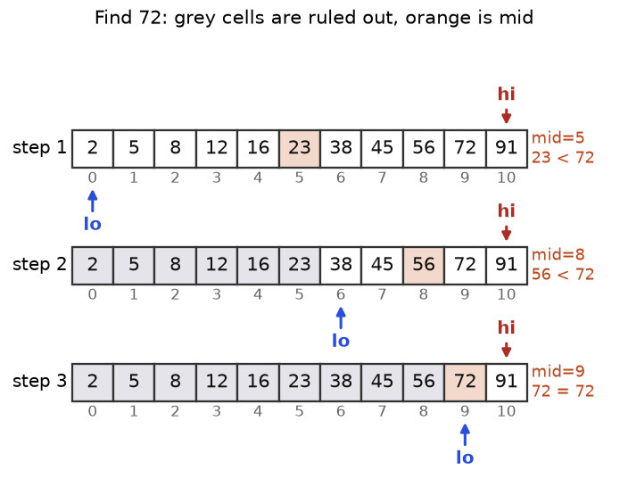
How to read it: the first middle is 23, less than 72, so everything up to index 5 is ruled out. The second middle, 56, rules out up to index 8. The third lands on 72. A million items need about 20 looks.
Two templates, never mixed
Most off-by-one bugs come from blending two styles. Template A finds an exact match; the live range [lo, hi] includes both ends. Template B finds the first index where a condition becomes true; the live range is [lo, hi) and hi = n means "none". Template B answers almost everything else: lower bound, upper bound, insert position and search on the answer.
def binary_search(a, target):
"""Template A: exact match in a sorted list. Return the index or -1."""
lo, hi = 0, len(a) - 1 # live range a[lo..hi], BOTH ends included
while lo <= hi: # <= because lo == hi is still one live item
mid = (lo + hi) // 2
if a[mid] == target:
return mid
if a[mid] < target:
lo = mid + 1 # mid is checked and too small: step PAST it
else:
hi = mid - 1 # mid is checked and too big: step PAST it
return -1
def first_true(n, ok):
"""Template B: smallest i in 0..n-1 with ok(i) True, or n if none.
ok(i) must look like False, False, True, True (it flips once)."""
lo, hi = 0, n # live range [lo, hi); hi = n means 'none'
while lo < hi: # < because [lo, lo) is empty
mid = (lo + hi) // 2
if ok(mid):
hi = mid # mid might be the answer: KEEP it
else:
lo = mid + 1 # mid is not the answer: step past it
return lo
nums = [2, 5, 8, 12, 16, 23, 38, 45, 56, 72, 91]
assert binary_search(nums, 72) == 9 and binary_search(nums, 7) == -1
assert binary_search([], 3) == -1 and binary_search([4], 4) == 0
assert first_true(len(nums), lambda i: nums[i] >= 38) == 6
print(binary_search(nums, 72), binary_search(nums, 7), first_true(len(nums), lambda i: nums[i] >= 38))9 -1 6Template A searching 72 (matches Figure 4.6):
| Step | lo | hi | mid | a[mid] | Decision |
|---|---|---|---|---|---|
| 1 | 0 | 10 | 5 | 23 | 23 < 72, lo = 6 |
| 2 | 6 | 10 | 8 | 56 | 56 < 72, lo = 9 |
| 3 | 9 | 10 | 9 | 72 | equal: return 9 |
Template B, first index with a[i] >= 2 in [1, 2, 2, 2, 2, 5, 7] (n = 7, so hi starts at 7):
| Step | lo | hi | mid | a[mid] | ok: a[mid] >= 2 | Decision |
|---|---|---|---|---|---|---|
| 1 | 0 | 7 | 3 | 2 | True | hi = 3 (keep mid) |
| 2 | 0 | 3 | 1 | 2 | True | hi = 1 |
| 3 | 0 | 1 | 0 | 1 | False | lo = 1 |
| end | 1 | 1 | lo == hi: the answer is index 1 | |||
| Off-by-one rule | Why |
|---|---|
| Pick closed [lo, hi] or half-open [lo, hi) and keep it all the way. | Mixing causes skipped answers and endless loops. |
Closed: while lo <= hi, moves mid + 1 and mid - 1. | mid was inspected, so drop it. |
Half-open: while lo < hi, moves hi = mid and lo = mid + 1. | If ok(mid) is true, mid may be the answer. |
| After the loop, check the result. | Template B can return n (nothing qualifies). |
while lo < hi with hi = mid - 1 (a half-open loop with closed moves). Searching 5 in [5] starts with lo = hi = 0, never enters the loop, and loses the answer. Right: lo <= hi with mid - 1, or lo < hi with hi = mid.Lower bound, upper bound and bisect
Lower bound of x: the first index whose value is >= x. Upper bound: the first index whose value is > x. Python names them bisect.bisect_left and bisect.bisect_right. Both give the insertion point that keeps the list sorted, to the left or right of the equal items. The count of x is the difference.
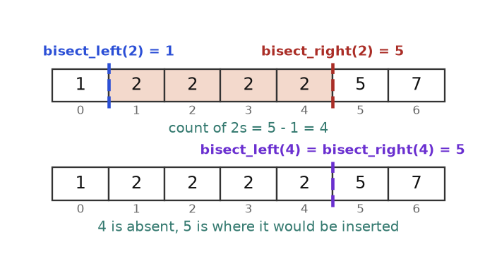
How to read it: the blue line (index 1) is the left edge of the block of 2s, the red line (index 5) is just past its right edge, so 5 - 1 = 4 copies. For 4 both bounds are 5, width 0: absent, and 5 is where it would be inserted.
import bisect
a = [1, 2, 2, 2, 2, 5, 7]
print(bisect.bisect_left(a, 2), bisect.bisect_right(a, 2)) # 1 and 5
print(bisect.bisect_left(a, 4), bisect.bisect_right(a, 4)) # both 5: 4 is absent
print(bisect.bisect_right(a, 2) - bisect.bisect_left(a, 2)) # how many 2s
b = [1, 3, 6]
bisect.insort(b, 4) # insert while keeping the list sorted
print(b)1 5
5 5
4
[1, 3, 4, 6]Problem 4.7.1 (medium) Find the first and last index of 8 in [5, 7, 7, 8, 8, 10]; return [-1, -1] if absent (for example 6). Then count the events in the sorted timestamps [1, 3, 3, 5, 8, 8, 8, 13] between times 3 and 8 inclusive.
| Idea | First = lower bound. Last = upper bound - 1. Verify that a[first] equals the target. A range count is bisect_right(high) - bisect_left(low). |
|---|---|
| Brute force | Scan: O(n) per query; plain binary search plus walking outward is O(n) with many duplicates. |
| Better | Two binary searches: O(log n). |
| Code | Below. |
| Dry run | Lower bound of 8 is 3. First value > 8 is at index 5, so last = 4: [3, 4]. For 6: lower bound 1, but a[1] = 7, so [-1, -1]. Range count: bisect_right(8) = 7, bisect_left(3) = 1, 7 - 1 = 6. |
| Complexity | O(log n) per query, O(1) space. |
| Edge cases | Empty list; target above all items (lower bound = n: check bounds before reading a[first]); low > high gives 0. |
import bisect
def search_range(a, target):
first = bisect.bisect_left(a, target) # lower bound
if first == len(a) or a[first] != target: # absent (check bounds first!)
return [-1, -1]
return [first, bisect.bisect_right(a, target) - 1] # upper bound minus one
def count_in_range(a, low, high):
if low > high:
return 0
return bisect.bisect_right(a, high) - bisect.bisect_left(a, low)
a = [5, 7, 7, 8, 8, 10]
assert search_range(a, 8) == [3, 4] and search_range(a, 6) == [-1, -1]
assert search_range([], 1) == [-1, -1] and search_range([2, 2, 2], 2) == [0, 2]
times = [1, 3, 3, 5, 8, 8, 8, 13]
assert count_in_range(times, 3, 8) == 6 and count_in_range(times, 9, 12) == 0
print(search_range(a, 8), search_range(a, 6), count_in_range(times, 3, 8))[3, 4] [-1, -1] 6Problem 4.7.2 (hard) Given a sorted list, return the k values closest to x in sorted order, preferring smaller values on ties. [1, 2, 3, 4, 5], k = 4, x = 3 gives [1, 2, 3, 4].
| Idea | The answer is a window of k consecutive items, so binary search the window's start in [0, n - k]. Compare the two edge items a[mid] (left edge) and a[mid + k] (first item outside on the right). If x is farther from the left edge, move the window right. |
|---|---|
| Brute force | Sort every item by (distance, value), take k, sort again: O(n log n). |
| Better | Binary search on the start: O(log (n - k) + k). |
| Code | Below. |
| Dry run | lo = 0, hi = 1. mid = 0: x - a[0] = 2 and a[4] - x = 2. Is 2 > 2? No: hi = 0 (tie favours the smaller side). Window starts at 0: [1, 2, 3, 4]. |
| Complexity | O(log (n - k) + k) time, O(k) output. |
| Edge cases | k = n; x below or above all items; ties; duplicates. |
import random
def k_closest(a, k, x):
lo, hi = 0, len(a) - k # candidate window starts: 0 .. n-k
while lo < hi:
mid = (lo + hi) // 2
if x - a[mid] > a[mid + k] - x: # left edge is farther than the item just outside
lo = mid + 1 # move the window right
else:
hi = mid # keep mid: ties favour smaller values
return a[lo:lo + k]
def brute(a, k, x):
return sorted(sorted(a, key=lambda v: (abs(v - x), v))[:k])
assert k_closest([1, 2, 3, 4, 5], 4, 3) == [1, 2, 3, 4]
assert k_closest([1, 2, 3, 4, 5], 4, 10) == [2, 3, 4, 5]
random.seed(14)
for _ in range(300):
arr = sorted(random.randint(0, 20) for _ in range(random.randint(1, 10)))
k, x = random.randint(1, len(arr)), random.randint(-3, 24)
assert k_closest(arr, k, x) == brute(arr, k, x)
print(k_closest([1, 2, 3, 4, 5], 4, 3), k_closest([1, 1, 2, 6, 9], 2, 5))[1, 2, 3, 4] [2, 6]git bisect (finding the commit that broke a test) and "first log line after 14:00" are binary search. From Python 3.10, bisect functions also take a key argument.Going deeper
Invariants beat memorising. Before the loop, finish: "If the answer exists, it is inside ______." Template A: a[lo..hi]. Template B: [lo, hi) with hi meaning "none". Every update must keep that sentence true. Overflow: in C++ or Java (lo + hi) / 2 can overflow; write lo + (hi - lo) / 2. Python ints never overflow. Step count: n items need at most floor(log2 n) + 1 looks. Hidden linear costs: x in list and list.insert are O(n); insort finds the spot in O(log n) but still shifts items.
4.8 Binary Search on the Answer
How to recognise it
- "Minimum possible maximum..." or "maximum possible minimum...".
- "Smallest speed / capacity / time / size such that it fits a limit."
- A greedy simulation checks one candidate in O(n).
- The answer lies in a numeric range (often up to 109), so trying every value is too slow.
- The test is monotone: if x works, every larger x works (or the reverse).
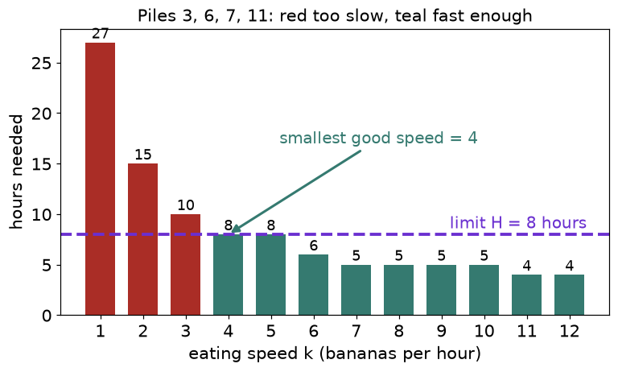
How to read it: the bars fall as speed rises and never rise again. That one-way behaviour (monotone) is what allows binary search. The answer is the left edge of the teal region, exactly the "first True" of Template B.
The recipe
- Name the answer and its smallest and largest possible values (lo, hi).
- Write
feasible(x), a greedy O(n) check. - Confirm on a small example that it flips only once.
- Use the smallest template to minimise, the largest template to maximise.
def smallest_feasible(lo, hi, feasible):
"""Smallest x in [lo, hi] with feasible(x) True (False...False True...True)."""
while lo < hi:
mid = (lo + hi) // 2 # rounds down
if feasible(mid):
hi = mid # mid works; maybe a smaller one does too
else:
lo = mid + 1
return lo
def largest_feasible(lo, hi, feasible):
"""Largest x in [lo, hi] with feasible(x) True (True...True False...False)."""
while lo < hi:
mid = (lo + hi + 1) // 2 # rounds UP: needed because we set lo = mid
if feasible(mid):
lo = mid # mid works; maybe a larger one does too
else:
hi = mid - 1
return lo
print(smallest_feasible(0, 100, lambda x: x * x >= 50))
print(largest_feasible(0, 100, lambda x: x * x <= 50))8
7mid = (lo + hi) // 2 together with lo = mid. With hi = lo + 1, mid equals lo, nothing changes, and the loop never ends. Right: round up, (lo + hi + 1) // 2, whenever a branch sets lo = mid.Problem 4.8.1 (easy) Compute floor(sqrt(n)) for a non-negative integer n without math.sqrt (floats lose precision on big n). n = 8 gives 2.
| Idea | The answer is the largest x with x * x <= n; that test is True for small x and False for large x. |
|---|---|
| Brute force | Try x = 0, 1, 2, ...: O(sqrt n), a billion steps for n = 1018. |
| Better | Binary search x in [0, n]: about 60 steps. |
| Code | Below. |
| Dry run (n = 8) | lo = 0, hi = 8. mid = 4: 16 > 8, hi = 3. mid = 2: 4 <= 8, lo = 2. mid = 3: 9 > 8, hi = 2. Answer 2. |
| Complexity | O(log n) time, O(1) space. |
| Edge cases | n = 0 and 1; perfect squares; huge n. |
import math
def int_sqrt(n):
lo, hi = 0, n
while lo < hi:
mid = (lo + hi + 1) // 2 # round up because we assign lo = mid
if mid * mid <= n:
lo = mid
else:
hi = mid - 1
return lo
assert int_sqrt(8) == 2 and int_sqrt(0) == 0 and int_sqrt(1) == 1
assert all(int_sqrt(n) == math.isqrt(n) for n in range(2000))
assert int_sqrt(10 ** 18 + 5) == math.isqrt(10 ** 18 + 5)
print(int_sqrt(8), int_sqrt(99), int_sqrt(10 ** 18))2 9 1000000000Problem 4.8.2 (medium) Koko has piles [3, 6, 7, 11] and 8 hours. Each hour she picks one pile and eats up to k bananas from it. Find the smallest integer k that finishes in at most 8 hours.
| Idea | Hours at speed k = sum of ceil(pile / k). It never increases as k grows. Search k in [1, max(piles)]. |
|---|---|
| Brute force | Try k = 1, 2, 3, ...: O(n x max pile); too slow for piles near 109. |
| Better | Binary search on k with an O(n) check: O(n log max). |
| Code | Below. |
| Dry run | Trace table below. |
| Complexity | O(n log max(piles)) time, O(1) space. |
| Edge cases | h equals the pile count (answer = max pile); one pile; start lo at 1 (not 0: division by zero). |
| Step | lo | hi | mid | Hours = sum of ceil(pile / mid) | Decision |
|---|---|---|---|---|---|
| 1 | 1 | 11 | 6 | 1 + 1 + 2 + 2 = 6 | 6 <= 8: hi = 6 |
| 2 | 1 | 6 | 3 | 1 + 2 + 3 + 4 = 10 | 10 > 8: lo = 4 |
| 3 | 4 | 6 | 5 | 1 + 2 + 2 + 3 = 8 | 8 <= 8: hi = 5 |
| 4 | 4 | 5 | 4 | 1 + 2 + 2 + 3 = 8 | 8 <= 8: hi = 4 |
| end | 4 | 4 | lo == hi: the answer is 4 | ||
def min_eating_speed(piles, h):
def hours(k):
return sum(-(-p // k) for p in piles) # -(-p // k) = ceil(p / k) in integers
lo, hi = 1, max(piles)
while lo < hi:
mid = (lo + hi) // 2
if hours(mid) <= h:
hi = mid
else:
lo = mid + 1
return lo
assert min_eating_speed([3, 6, 7, 11], 8) == 4
assert min_eating_speed([30, 11, 23, 4, 20], 5) == 30
assert min_eating_speed([30, 11, 23, 4, 20], 6) == 23
print(min_eating_speed([3, 6, 7, 11], 8), min_eating_speed([30, 11, 23, 4, 20], 6))4 23Problem 4.8.3 (medium) Packages [1, 2, 3, 4, 5, 6, 7, 8, 9, 10] ship in order within 5 days; each day carries consecutive packages totalling at most the ship's capacity. Find the smallest capacity. Answer: 15.
| Idea | Capacity is the answer. Feasible(cap): fill each day until the next package would overflow, then start a new day; count days. A bigger capacity never needs more days. |
|---|---|
| Brute force | Try every capacity from max to sum, or every split into 5 groups (126 here, astronomically many for large n). |
| Better | Search capacity in [max(weights), sum(weights)]: O(n log sum). |
| Code | Below. |
| Dry run | Capacity 15: day 1 takes 1..5 (=15); day 2 takes 6+7 (=13; adding 8 gives 21); day 3 takes 8; day 4 takes 9; day 5 takes 10: 5 days, feasible. Capacity 14: 1..4 (10); 5+6 (11); 7; 8; 9; 10: 6 days, fails. |
| Complexity | O(n log sum) time, O(1) space. |
| Edge cases | 1 day (answer = sum); days = n (answer = max). lo must be max(weights), not 1. |
def ship_within_days(weights, days):
def days_needed(cap):
d, load = 1, 0
for w in weights:
if load + w > cap: # does not fit today: next day
d, load = d + 1, 0
load += w
return d
lo, hi = max(weights), sum(weights)
while lo < hi:
mid = (lo + hi) // 2
if days_needed(mid) <= days:
hi = mid
else:
lo = mid + 1
return lo
assert ship_within_days(list(range(1, 11)), 5) == 15
assert ship_within_days([3, 2, 2, 4, 1, 4], 3) == 6
assert ship_within_days([1, 2, 3, 1, 1], 4) == 3
print(ship_within_days(list(range(1, 11)), 5), ship_within_days([3, 2, 2, 4, 1, 4], 3))15 6Problem 4.8.4 (hard) Stalls are at positions [1, 2, 4, 8, 9]. Place 3 cows so the smallest distance between two cows is as large as possible. Answer: 3.
| Idea | Now we maximise. Feasible(d): sweep the sorted stalls and place a cow whenever the gap from the last cow is at least d; feasible if at least 3 fit. A smaller d is easier: True...True False...False. |
|---|---|
| Brute force | Try every choice of 3 stalls: C(n, 3), about 1.7 x 1014 for n = 100,000. |
| Better | Sort, then search d in [1, max - min] with the largest template: O(n log n + n log range). |
| Code | Below. |
| Dry run | d = 3: place at 1; stall 2 (gap 1) no; stall 4 (gap 3) yes; stall 8 (gap 4) yes: 3 cows, feasible. d = 4: place at 1; 2 no; 4 no (gap 3); 8 yes; 9 no: 2 cows, infeasible. Largest feasible d = 3. |
| Complexity | O(n log n + n log(max - min)) time. |
| Edge cases | 2 cows (answer = max - min); n cows (smallest adjacent gap); unsorted input. |
def max_min_distance(stalls, cows):
s = sorted(stalls)
def feasible(d): # can `cows` cows sit at least d apart?
placed, last = 1, s[0]
for x in s[1:]:
if x - last >= d:
placed, last = placed + 1, x
return placed >= cows
lo, hi = 1, s[-1] - s[0] # d = 1 always works for distinct stalls
while lo < hi:
mid = (lo + hi + 1) // 2 # round UP: the true branch sets lo = mid
if feasible(mid):
lo = mid
else:
hi = mid - 1
return lo
assert max_min_distance([1, 2, 4, 8, 9], 3) == 3
assert max_min_distance([1, 2, 3, 4, 7], 3) == 3
assert max_min_distance([5, 1, 9], 2) == 8 and max_min_distance([1, 2, 4, 8, 9], 5) == 1
print(max_min_distance([1, 2, 4, 8, 9], 3), max_min_distance([1, 2, 3, 4, 7], 3))3 3lo = 1. The check puts an oversized package alone on a day without complaint, so capacities smaller than the heaviest package look feasible. Right: lo = max(weights). Always make lo the smallest value that could be valid and hi one that is certainly valid.Going deeper
Cost formula: total time = (cost of one check) x log2(size of the answer range). A cheap check turns an impossible search into an easy one. Real-valued answers: for decimals, run a fixed number of halvings (say 60) instead of lo < hi, since floats never meet exactly. Same family: splitting an array into m parts to minimise the largest sum, allocating books to students, and cutting ribbons into equal pieces (largest template) are Problems 4.8.3 and 4.8.4 in new words.
4.9 Rotated Arrays, Peaks and 2D Matrices
These look like they break the "sorted" rule, but each hides an order that lets you discard half. Always ask: after looking at mid, which half cannot hold the answer, and how do I know?
How to recognise it
- "A sorted array rotated at an unknown pivot", such as [4, 5, 6, 7, 0, 1, 2].
- Find the minimum, a target, or the rotation count in O(log n).
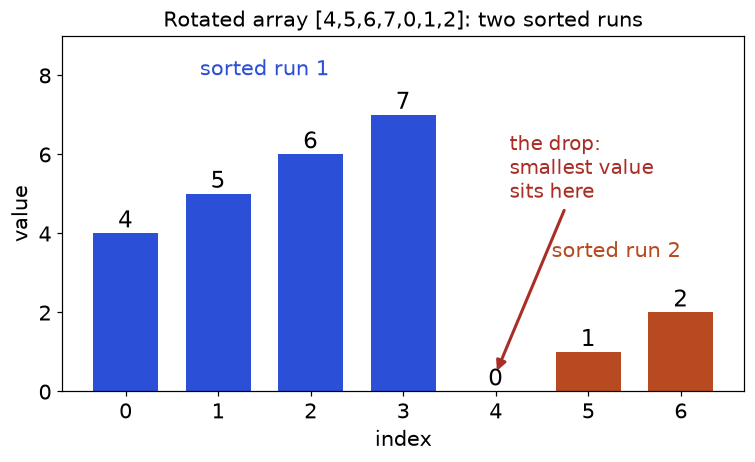
How to read it: the last item, 2, is smaller than every item of run 1. So for any mid, comparing a[mid] with the last item a[hi] tells you the run: if a[mid] > a[hi], mid is in run 1 and the minimum is to its right; otherwise the minimum is at mid or to its left.
Problem 4.9.1 (medium) Find the minimum of the rotated array [4, 5, 6, 7, 0, 1, 2] (distinct values) in O(log n).
| Idea | If a[mid] > a[hi], the drop is right of mid: lo = mid + 1. Otherwise hi = mid. |
|---|---|
| Brute force | min(a): O(n). |
| Better | Template B shape: O(log n). |
| Code | Below. |
| Dry run | Trace table below. |
| Complexity | O(log n) time, O(1) space. |
| Edge cases | Not rotated ([1, 2, 3]); one item; two items. |
| Step | lo | hi | mid | a[mid] | a[hi] | Decision |
|---|---|---|---|---|---|---|
| 1 | 0 | 6 | 3 | 7 | 2 | 7 > 2: lo = 4 |
| 2 | 4 | 6 | 5 | 1 | 2 | 1 <= 2: hi = 5 |
| 3 | 4 | 5 | 4 | 0 | 1 | 0 <= 1: hi = 4 |
| end | 4 | 4 | lo == hi: minimum a[4] = 0 | |||
def find_min_rotated(a):
lo, hi = 0, len(a) - 1
while lo < hi:
mid = (lo + hi) // 2
if a[mid] > a[hi]: # mid sits in the left (bigger) run
lo = mid + 1
else: # mid is in the right run: it may be the minimum
hi = mid
return a[lo]
assert find_min_rotated([4, 5, 6, 7, 0, 1, 2]) == 0
assert find_min_rotated([1, 2, 3]) == 1 and find_min_rotated([9]) == 9 and find_min_rotated([2, 1]) == 1
print(find_min_rotated([4, 5, 6, 7, 0, 1, 2]), find_min_rotated([11, 13, 15, 17]))0 11Problem 4.9.2 (medium) Search for 0 in [4, 5, 6, 7, 0, 1, 2] (distinct values); return its index or -1.
| Idea | At each mid one half is sorted: if a[lo] <= a[mid] the left half is, else the right half is. If the target lies inside the sorted half's value range, go there; otherwise go to the other half. |
|---|---|
| Brute force | Linear scan O(n). |
| Better | Modified Template A: O(log n). |
| Code | Below. |
| Dry run | lo = 0, hi = 6, mid = 3 (7). a[0] = 4 <= 7: left sorted [4..7]; is 4 <= 0 < 7? No: lo = 4. mid = 5 (1): a[4] = 0 <= 1: left sorted [0, 1]; is 0 <= 0 < 1? Yes: hi = 4. mid = 4 (0): found, return 4. |
| Complexity | O(log n) time, O(1) space. |
| Edge cases | Use <= in a[lo] <= a[mid] (a one-item half is sorted); target equal to a[lo]; not rotated; absent target. |
import random
def search_rotated(a, target):
lo, hi = 0, len(a) - 1
while lo <= hi:
mid = (lo + hi) // 2
if a[mid] == target:
return mid
if a[lo] <= a[mid]: # left half a[lo..mid] is sorted
if a[lo] <= target < a[mid]:
hi = mid - 1
else:
lo = mid + 1
else: # right half a[mid..hi] is sorted
if a[mid] < target <= a[hi]:
lo = mid + 1
else:
hi = mid - 1
return -1
assert search_rotated([4, 5, 6, 7, 0, 1, 2], 0) == 4
assert search_rotated([4, 5, 6, 7, 0, 1, 2], 3) == -1 and search_rotated([3, 1], 1) == 1
random.seed(22)
for _ in range(100):
base = sorted(random.sample(range(40), random.randint(1, 10)))
r = random.randint(0, len(base) - 1)
arr = base[r:] + base[:r]
for t in range(-1, 42):
assert search_rotated(arr, t) == (arr.index(t) if t in arr else -1)
print(search_rotated([4, 5, 6, 7, 0, 1, 2], 0), search_rotated([4, 5, 6, 7, 0, 1, 2], 3))4 -1a[lo] < a[mid] to test "left half sorted". For [3, 1] searching 1: mid = 0 = lo, the test is false, the code treats the right half as sorted by mistake and discards the answer. Right: <=.How to recognise it
- "Find any peak" (bigger than both neighbours; outside the array counts as minus infinity), neighbours never equal.
- O(log n) is required on unsorted data.
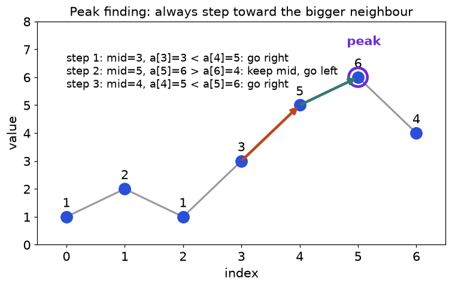
How to read it: there are two peaks (2 at index 1, 6 at index 5). The method does not care which it finds. At mid = 5 the right neighbour (4) is smaller, so a peak is at 5 or to its left, and the next step settles on 5.
Problem 4.9.3 (medium) Return the index of any peak in [1, 2, 1, 3, 5, 6, 4]; adjacent values differ.
| Idea | If a[mid] < a[mid + 1], the slope rises right: lo = mid + 1. Otherwise a peak is in [lo, mid]: hi = mid. |
|---|---|
| Brute force | Scan for the first i with a[i] > a[i + 1]: O(n). |
| Better | Binary search on the slope: O(log n). |
| Code | Below. |
| Dry run | lo = 0, hi = 6. mid = 3: 3 < 5, lo = 4. mid = 5: 6 > 4, hi = 5. mid = 4: 5 < 6, lo = 5. Peak at index 5. |
| Complexity | O(log n) time, O(1) space. |
| Edge cases | One item; strictly increasing (last index); strictly decreasing (index 0). Equal neighbours (a plateau) can break the method. |
def find_peak(a):
lo, hi = 0, len(a) - 1
while lo < hi:
mid = (lo + hi) // 2
if a[mid] < a[mid + 1]: # rising: a peak is to the right
lo = mid + 1
else: # falling: mid or something left of it is a peak
hi = mid
return lo
def is_peak(a, i): # outside the array counts as minus infinity
left = a[i - 1] if i > 0 else float("-inf")
right = a[i + 1] if i < len(a) - 1 else float("-inf")
return a[i] > left and a[i] > right
assert find_peak([1, 2, 1, 3, 5, 6, 4]) == 5
assert find_peak([7]) == 0 and find_peak([1, 2, 3]) == 2 and find_peak([3, 2, 1]) == 0
for arr in ([1, 2, 1, 3, 5, 6, 4], [5, 1, 4, 2, 6], [1, 3, 2, 4, 3, 5]):
assert is_peak(arr, find_peak(arr))
print(find_peak([1, 2, 1, 3, 5, 6, 4]), find_peak([1, 2, 3]))5 2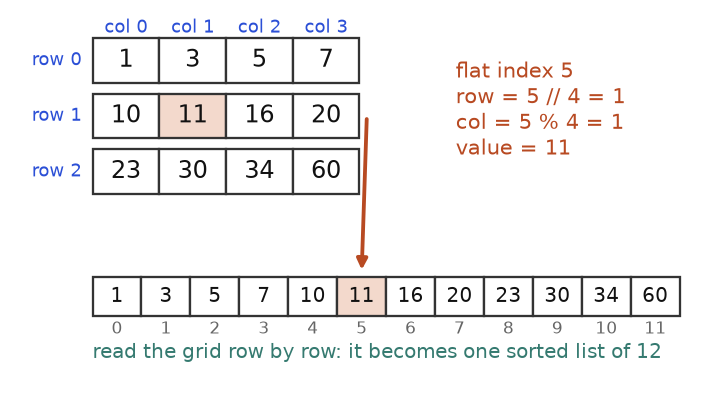
How to read it: the orange cell is flat index 5. Integer division gives the row (5 // 4 = 1) and the remainder the column (5 % 4 = 1); divmod(5, 4) returns both. Recognise this problem by "rows sorted, and the first number of each row exceeds the last of the row above".
Problem 4.9.4 (medium) Does 3 appear in [[1, 3, 5, 7], [10, 11, 16, 20], [23, 30, 34, 60]]? Does 13?
| Idea | Binary search lo = 0 to hi = rows x cols - 1 with r, c = divmod(mid, cols). |
|---|---|
| Brute force | Check every cell: O(rows x cols). |
| Better | Flat binary search: O(log(rows x cols)). |
| Code | Below. |
| Dry run (target 3) | lo = 0, hi = 11. mid = 5 is (1,1) = 11 > 3, hi = 4. mid = 2 is (0,2) = 5 > 3, hi = 1. mid = 0 is 1 < 3, lo = 1. mid = 1 is (0,1) = 3: found. |
| Complexity | O(log(m x n)) time, O(1) space. |
| Edge cases | Empty matrix or empty rows (check before m[0]); single row or column. |
def search_matrix(m, target):
if not m or not m[0]:
return False
rows, cols = len(m), len(m[0])
lo, hi = 0, rows * cols - 1
while lo <= hi:
mid = (lo + hi) // 2
r, c = divmod(mid, cols) # flat index -> (row, column)
if m[r][c] == target:
return True
if m[r][c] < target:
lo = mid + 1
else:
hi = mid - 1
return False
grid = [[1, 3, 5, 7], [10, 11, 16, 20], [23, 30, 34, 60]]
assert search_matrix(grid, 3) is True and search_matrix(grid, 13) is False
assert all(search_matrix(grid, v) for row in grid for v in row)
assert search_matrix([], 1) is False and search_matrix([[]], 1) is False
print(search_matrix(grid, 3), search_matrix(grid, 13))True FalseGoing deeper
Staircase search: if rows and columns are each sorted but rows do not chain, flat binary search fails; start at the top-right corner, move left when the value is too big and down when too small, at most rows + cols steps. Peak in 2D: binary search columns by taking the maximum of the middle column and moving toward the larger neighbour: O(m log n) for m rows and n columns. Median of two sorted arrays: the hardest classic here binary searches the partition point in the shorter array so both left halves hold half the items: O(log min(m, n)). The one question behind all of these: what does mid tell me about which half to throw away?
Chapter recap
- Sort first when the problem is about neighbours, overlaps, duplicates or "arrange"; then solve with one O(n) pass.
- Insertion, selection and bubble sort are O(n2). Insertion sort costs O(n + inversions), so it is best on nearly sorted data.
- Merge sort splits, sorts and merges: O(n log n), stable, O(n) space. Counting across the halves gives inversions.
- Quick sort partitions around a pivot: O(n log n) on average, O(n2) with bad pivots, so pick randomly. Quickselect finds the k-th item in O(n) average.
- Counting and radix sort skip comparisons when values are small integers. Python's
sortedis Timsort: stable, O(n) on sorted input, O(n log n) worst. - Use
key=for custom orders, negate numbers to reverse a part, and chain two stable sorts for mixed directions. - Binary search discards half per step. Choose Template A (closed range, exact match) or Template B (half-open, first True) and never mix them.
bisect_leftis the lower bound,bisect_rightthe upper bound; their difference is the count.- If a yes/no test on an answer value flips once, binary search the answer. Round the middle up when the branch sets
lo = mid. - Rotated array: compare with a[hi] or find the sorted half. Peak: climb toward the larger neighbour. Sorted matrix: binary search the flat index.
| Pattern | When to use | Template idea | Time | Space |
|---|---|---|---|---|
| Insertion sort | Tiny or nearly sorted data | Slide the key left into the sorted prefix | O(n + inversions), worst O(n2) | O(1) |
| Merge sort / count across halves | Stable sort, inversions, linked lists | Split, sort halves, merge with two pointers | O(n log n) | O(n) |
| Quick sort / partition | In-place sort, group by a condition | Random pivot, i marks the "small" zone, j scans | O(n log n) average, O(n2) worst | O(log n) |
| Quickselect | k-th smallest or largest | Partition, keep only the side holding index n - k | O(n) average | O(1) |
| Three-way partition | Only 3 distinct values (colours) | lo, mid, hi pointers; do not advance mid after a hi swap | O(n) | O(1) |
| Counting / radix sort | Small integer range, many items | Count then write out; stable digit passes | O(n + k), O(d (n + 10)) | O(n + k) |
| Sort by key | Any custom order | Tuple key, negate numbers, two stable passes | O(n log n) | O(n) |
| Sort then scan (intervals) | Merge, overlap, duplicates | Sort by start; compare with the last result only | O(n log n) | O(n) |
| Sorted starts and ends | Minimum rooms, busiest time | Sort starts, ends separately; reuse a room when start is not before the earliest end | O(n log n) | O(n) |
| Binary search, exact | Find a value in sorted data | lo <= hi, move to mid + 1 or mid - 1 | O(log n) | O(1) |
| Lower / upper bound | First, last, count, insert position | Half-open [lo, hi), hi = mid when true | O(log n) | O(1) |
| Search on the answer | Minimise a maximum or maximise a minimum | Greedy feasible(x); smallest or largest template | O(n log range) | O(1) |
| Rotated array | Sorted array rotated once | Compare a[mid] with a[hi], or test the sorted half | O(log n) | O(1) |
| Peak element | Any local maximum, unsorted | If a[mid] < a[mid + 1] go right, else keep mid | O(log n) | O(1) |
| Sorted 2D matrix | Rows chain into one sorted list | Binary search flat index, divmod to (r, c) | O(log(m n)) | O(1) |
Practice set
Try each problem on paper first. Problems are graded from easy to hard. "Predict" problems show code without output: write your guess, then read the answer.
Problem 4.P.1 (easy) Which of these are stable as written in this chapter: bubble (strict >), selection, insertion (strict >), merge (<= on ties), quick sort (Lomuto)?
Answer: Bubble, insertion and merge are stable. Selection and quick sort are not, because their swaps jump an item over equal ones.
Problem 4.P.2 (easy) At most how many looks does binary search need on 1,000,000 sorted items?
Answer: floor(log2 1,000,000) + 1 = 19 + 1 = 20, since 220 = 1,048,576 is the first power of two above a million.
Problem 4.P.3 (easy) Run insertion sort by hand on [4, 3, 2, 1]. Show the array after each key and count the shifts.
Answer: Key 3 shifts 4: [3, 4, 2, 1] (1 shift). Key 2 shifts 4 and 3: [2, 3, 4, 1] (2 shifts). Key 1 shifts 4, 3, 2: [1, 2, 3, 4] (3 shifts). Total 6 = 4 x 3 / 2, the inversions of a reversed list.
Problem 4.P.4 (easy, predict) What does this print?
words = ["b", "a", "C"]
print(sorted(words))
print(sorted(words, key=str.lower))
print(sorted(words, reverse=True))Answer: ['C', 'a', 'b'], then ['a', 'b', 'C'], then ['b', 'a', 'C']. Capital letters sort before lowercase; the key makes the comparison case-insensitive; reverse just flips the plain order.
Problem 4.P.5 (easy, predict) What does this print?
import bisect
a = [1, 2, 2, 3]
print(bisect.bisect_left(a, 2), bisect.bisect_right(a, 2), bisect.bisect_left(a, 4), bisect.bisect_right(a, 0))Answer: 1 3 4 0. The block of 2s spans positions 1 and 2, so the bounds are 1 and 3. A value above everything inserts at 4; a value below everything inserts at 0.
Problem 4.P.6 (easy) Merge [1, 5, 9] and [2, 3, 10] by hand, naming the comparison at each step.
Answer: 1 vs 2 takes 1. 5 vs 2 takes 2. 5 vs 3 takes 3. 5 vs 10 takes 5. 9 vs 10 takes 9. The left list is empty, so append 10. Result [1, 2, 3, 5, 9, 10].
Problem 4.P.7 (easy) Where would 5, 2, 7 and 0 be inserted into [1, 3, 5, 6]?
Answer: The lower bound: 5 is at index 2 (it exists), 2 goes to 1, 7 goes to 4 (the end), 0 goes to 0. Result [2, 1, 4, 0].
Problem 4.P.8 (medium, find the bug) This binary search should find 5, 1 and 5 but does not. Why?
def bs(a, t):
lo, hi = 0, len(a) - 1
while lo < hi:
mid = (lo + hi) // 2
if a[mid] == t:
return mid
elif a[mid] < t:
lo = mid + 1
else:
hi = mid - 1
return -1
print(bs([1, 3, 5], 5), bs([1, 3, 5], 1), bs([5], 5))Answer: It prints -1 -1 -1. A closed range [lo, hi] needs while lo <= hi; with < the last live item (lo == hi) is never inspected. In [5] the loop never starts.
Problem 4.P.9 (medium, find the bug) Merging [1, 2, 9] and [3] should give [1, 2, 3, 9]. What is wrong?
def merge_bad(a, b):
out, i, j = [], 0, 0
while i < len(a) and j < len(b):
if a[i] <= b[j]:
out.append(a[i]); i += 1
else:
out.append(b[j]); j += 1
return out
print(merge_bad([1, 2, 9], [3]))Answer: It prints [1, 2, 3]: the 9 is lost because the leftover tail is never appended. Return out + a[i:] + b[j:].
Problem 4.P.10 (medium, find the bug) Merging intervals gives the wrong result for [[1, 10], [2, 3]]. Fix it.
def merge_bad(intervals):
result = []
for s, e in sorted(intervals):
if result and s <= result[-1][1]:
result[-1][1] = e
else:
result.append([s, e])
return result
print(merge_bad([[1, 10], [2, 3]]))Answer: It prints [[1, 3]] instead of [[1, 10]]: the assignment shrinks the end. Use result[-1][1] = max(result[-1][1], e).
Problem 4.P.11 (medium, find the bug) The programmer wants the sorted scores but gets nothing useful. Why?
scores = [70, 95, 82]
ranked = scores.sort(reverse=True)
print(ranked, scores)Answer: It prints None [95, 82, 70]. list.sort works in place and returns None. Use ranked = sorted(scores, reverse=True).
Problem 4.P.12 (medium, predict) What does this print, and why is the order of "b" and "a" important?
print(sorted([("b", 2), ("a", 2), ("c", 1)], key=lambda x: x[1]))Answer: [('c', 1), ('b', 2), ('a', 2)]. The sort is stable, so the tied items keep their input order: "b" stays before "a".
Problem 4.P.13 (medium, predict) What do the return value and the list look like after this partition?
def partition(a, lo, hi):
pivot, i = a[hi], lo - 1
for j in range(lo, hi):
if a[j] <= pivot:
i += 1
a[i], a[j] = a[j], a[i]
a[i + 1], a[hi] = a[hi], a[i + 1]
return i + 1
arr = [3, 8, 2, 5, 1, 4, 7, 6]
print(partition(arr, 0, 7), arr)Answer: 5 [3, 2, 5, 1, 4, 6, 7, 8]. With pivot 6: 3, 2, 5, 1, 4 are at most 6 and move to the front in scan order; 8 and 7 are larger; the pivot swaps into index 5.
Problem 4.P.14 (medium, predict) What does this print, and which line is safe inside a "largest feasible" search with lo = mid?
lo, hi = 5, 6
print((lo + hi) // 2, (lo + hi + 1) // 2)Answer: 5 6. With lo = mid you need the rounded-up middle (6); the rounded-down 5 would equal lo, change nothing and loop forever.
Problem 4.P.15 (medium, find the bug) The Dutch-flag code below should sort [1, 2, 0]. Find the bug.
def sort_colors_bad(a):
a = a[:]
lo, mid, hi = 0, 0, len(a) - 1
while mid <= hi:
if a[mid] == 0:
a[lo], a[mid] = a[mid], a[lo]
lo += 1; mid += 1
elif a[mid] == 1:
mid += 1
else:
a[mid], a[hi] = a[hi], a[mid]
hi -= 1; mid += 1
return a
print(sort_colors_bad([1, 2, 0]))Answer: It prints [1, 0, 2]. After swapping a 2 to the back, the item now at mid came from the unknown zone and was never examined, so mid += 1 skips it. Remove that increment in the 2-branch.
Problem 4.P.16 (medium) Sort ["pear", "fig", "banana", "kiwi", "apple"] longest first, ties alphabetical.
Answer: sorted(words, key=lambda w: (-len(w), w)) gives ["banana", "apple", "kiwi", "pear", "fig"]: longer words first, equal lengths alphabetical (kiwi before pear).
Problem 4.P.17 (medium) A sorted, non-overlapping list [[1, 2], [3, 5], [6, 7], [8, 10], [12, 16]] needs the new interval [4, 8] inserted and merged. Do it in O(n).
Answer: The input is already sorted, so no sort is needed. Copy the intervals that end before 4, absorb every interval that overlaps the growing new one ([3,5] then [6,7] then [8,10], giving [3,10]), then copy the rest. Result [[1, 2], [3, 10], [12, 16]]. Time O(n).
Problem 4.P.18 (medium) How many times was [15, 18, 2, 3, 6, 12] rotated (to the right, from a sorted array)?
Answer: 2. Run the loop of Problem 4.9.1 but return lo (the index of the minimum) instead of a[lo]. The minimum 2 sits at index 2, so the array was rotated right by 2.
Problem 4.P.19 (medium) In the sorted letters ['c', 'f', 'j'], find the smallest letter greater than the target, wrapping around to the first letter if none is greater. Targets: 'a', 'c', 'j'.
import bisect
letters = ["c", "f", "j"]
def next_letter(target):
return letters[bisect.bisect_right(letters, target) % len(letters)]
assert [next_letter(t) for t in ("a", "c", "j")] == ["c", "f", "c"]
print([next_letter(t) for t in ("a", "c", "j")])['c', 'f', 'c']Answer: bisect_right gives the first letter strictly greater; the modulo wraps the index n back to 0.
Problem 4.P.20 (hard) In [[1, 5, 9], [10, 11, 13], [12, 13, 15]] every row and every column is sorted. Find the 8th smallest value. Aim for better than sorting all cells.
def kth_smallest(matrix, k):
n = len(matrix)
def count_at_most(x): # staircase walk from the bottom-left corner
r, c, total = n - 1, 0, 0
while r >= 0 and c < n:
if matrix[r][c] <= x:
total += r + 1 # the whole column above is also <= x
c += 1
else:
r -= 1
return total
lo, hi = matrix[0][0], matrix[-1][-1]
while lo < hi: # smallest value whose count reaches k
mid = (lo + hi) // 2
if count_at_most(mid) >= k:
hi = mid
else:
lo = mid + 1
return lo
grid = [[1, 5, 9], [10, 11, 13], [12, 13, 15]]
assert kth_smallest(grid, 8) == 13
assert kth_smallest(grid, 1) == 1 and kth_smallest(grid, 9) == 15
print(kth_smallest(grid, 8))13Answer: 13 (the cells in order are 1, 5, 9, 10, 11, 12, 13, 13, 15). This is a search on the answer: the test "at least k cells are <= x" flips once, and the count costs O(n) with the staircase walk, giving O(n log(max - min)).
Problem 4.P.21 (hard) Split [7, 2, 5, 10, 8] into 2 contiguous parts so that the largest part sum is as small as possible.
Answer: 18, from the split [7, 2, 5] and [10, 8] (sums 14 and 18). It is the shipping function of 4.8.3 called with days = 2: capacity becomes "largest part sum", search range [max, sum] = [10, 32].
Problem 4.P.22 (hard) A sorted array of unknown length is read through get(i), which raises IndexError past the end. Find a target in O(log n).
Answer: Exponential search. Probe indexes 1, 2, 4, 8, ... until the value is at least the target or get raises IndexError (count that as "too big"). The target is then inside the last doubled range [hi/2, hi], and an ordinary binary search finishes. Both phases take O(log p), where p is the target's position. Tested on [2, 5, 8, 12, 16, 23, 38, 45, 56, 72, 91]: target 72 returns 9, target 7 returns -1.
Problem 4.P.23 (hard, find the bug) The "largest number" attempt below returns the wrong string for [3, 30, 34, 5, 9]. What does it print and how do you fix it?
nums = [3, 30, 34, 5, 9]
print("".join(sorted(map(str, nums), reverse=True)))Answer: It prints 9534303, but the best is 9534330. Plain text order thinks "30" beats "3" because it is longer. Sort with the comparator "a + b before b + a" (cmp_to_key, Problem 4.6.4).
Problem 4.P.24 (hard, interview) Why do libraries often prefer merge sort for linked lists but quick sort (or introsort) for arrays?
Answer: Merge sort needs no random access: splitting and merging a linked list only rewires pointers, so it uses O(1) extra space and is stable. Quick sort on an array is in place, cache friendly and fast on average; on a linked list partitioning cannot swap by index and the pivot choice is awkward. Arrays also let a library fall back to heap sort (introsort) to guarantee O(n log n).
Problem 4.P.25 (hard, interview) You have 105 piles, each up to 109 bananas. Estimate the work of Koko's binary search versus trying every speed.
Answer: Binary search tries about log2(109) = 30 speeds, each check is O(n) = 105 steps, so about 3 x 106 steps. Trying every speed is up to 109 x 105 = 1014 steps: far too slow.
Prompt pack
You are my patient, practical professor. I am a working professional preparing for coding interviews in Python. Teach me binary search and "binary search on the answer" step by step in simple English. Start with the guessing-game analogy, then show the two templates (exact match with lo <= hi, and first-True with lo < hi), and explain the off-by-one rules. Then give me 6 graded exercises from easy to hard (insert position, first and last position, Koko bananas, ship packages, rotated array search, peak element) WITHOUT solutions. After I answer each one, check my invariant, my loop condition and my edge cases, and ask me one follow-up question before moving on.
Review my Python solution to the problem below as a strict interviewer. Problem: [paste the problem]. My code: [paste your code]. Check, in this order: (1) does it use the right pattern (sort first, merge-sort counting, quickselect, binary search on an index, binary search on the answer)? (2) the loop condition and the mid rounding for off-by-one bugs and infinite loops; (3) stability and tie handling; (4) edge cases: empty input, one item, duplicates, all equal, target missing; (5) time and space complexity with a one-line justification. Give me three test inputs that would break my code if it is wrong, then show a cleaner version.
Act as a mock interviewer for a 45-minute round on sorting and binary search. Ask me one problem at a time, starting at medium difficulty (for example merge intervals, minimum meeting rooms, search in a rotated array, split array largest sum). Do not give hints until I ask; if I am silent for a while, nudge me with a question about the pattern, not the answer. After each problem, score me from 1 to 5 on: clarifying questions, brute force first, choosing the pattern, correct code, testing with edge cases, and stating complexity. At the end, list my three weakest habits and give me a 7-day plan with 2 practice problems per day.
Your music app has a "next" button, a "previous" button and a "play next" queue. Behind them sit three small ideas: a chain of items where each item knows what comes after it (the linked list), a pile where the last thing in is the first out (the stack), and a line where the first in is the first out (the queue). They look humble, yet they hide some of the most reused tricks in interviews.
In this chapter you build all three, then learn two powerful tricks on top of them: the monotonic stack and the monotonic deque. "Monotonic" means the items inside are always in one order (always increasing or always decreasing). That single rule turns many slow nested loops into one pass. You will meet these again in Chapters 7, 8 and 11. For a shorter first look, see also the CS document, Chapter 9.
5.1 Linked Lists From Scratch
Real-life picture. A treasure hunt: each clue tells you where the next clue is hidden. Lose one clue and everything after it is lost.
| Word | Plain meaning |
|---|---|
| Node | One box: a value plus a link to the next box |
| Pointer | A variable that says which node to look at (in Python, a variable holding a node or None) |
| Head / tail | The first / last node. The tail's next is None |
| Singly / doubly linked | Nodes know only the next node / both the previous and the next |
How to recognise it: the input is a head node, not a Python list; the statement says "in place" or "O(1) extra space"; words like cycle, middle, n-th from the end, reverse, merge.
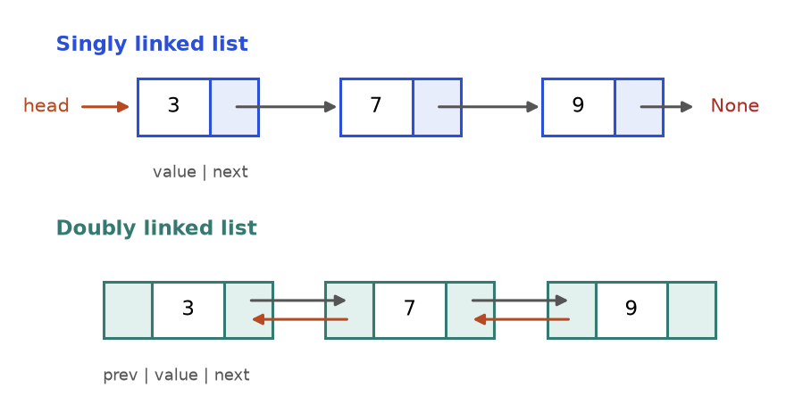
How to read it: start at head, follow the arrows, stop at None.
Compared with a Python list: reading item i costs O(n) (walk) instead of O(1); inserting or deleting next to a node you already hold costs O(1) instead of O(n) (no shifting); searching costs O(n) for both.
class ListNode:
def __init__(self, val=0, next=None):
self.val = val # data stored in this box
self.next = next # next box, or None at the end
def build(values):
head = None
for v in reversed(values): # build from the back: no tail variable needed
head = ListNode(v, head)
return head
def to_list(head):
out, cur = [], head
while cur: # the walk loop: stop when cur is None
out.append(cur.val)
cur = cur.next
return out
head = build([3, 7, 9])
node = head.next # the 7-box
new = ListNode(8)
new.next = node.next # 1. point the new node at the rest
node.next = new # 2. then connect the front
print(to_list(head))[3, 7, 8, 9]node.next = new first. The old rest is now unreachable. Right: new.next = node.next first, then node.next = new.| Step | 0: 3 → 7 → 9. 1: create a lone box 8. 2: new.next = node.next gives 8 → 9. 3: node.next = new gives 3 → 7 → 8 → 9. |
|---|
Problem 5.1.1 (easy) Write a singly linked list class with push_front, append, find and delete(v) (remove the first node holding v).
| Idea | Keep only head. To delete, stop on the node before the target and skip over it. |
|---|---|
| Brute force | Copy to a Python list, edit, rebuild: O(n) time and O(n) space per operation. |
| Better | Rewire pointers in place: O(1) extra space. |
| Code | Below. |
| Dry run | 3 → 7 → 9, delete 7: stop on 3 (its next is 7), set 3.next = 9. |
| Complexity | push_front O(1); the others O(n). |
| Edge cases | Empty list; deleting the head; deleting the tail; value absent. |
class ListNode:
def __init__(self, val=0, next=None):
self.val = val
self.next = next
class LinkedList:
def __init__(self):
self.head = None
def push_front(self, v):
self.head = ListNode(v, self.head)
def append(self, v):
if self.head is None:
self.head = ListNode(v)
return
cur = self.head
while cur.next: # walk to the last node
cur = cur.next
cur.next = ListNode(v)
def find(self, v):
cur = self.head
while cur and cur.val != v:
cur = cur.next
return cur is not None
def delete(self, v):
if self.head and self.head.val == v: # the head has no node before it
self.head = self.head.next
return
cur = self.head
while cur and cur.next and cur.next.val != v:
cur = cur.next # stop one node BEFORE the target
if cur and cur.next:
cur.next = cur.next.next
def to_list(self):
out, cur = [], self.head
while cur:
out.append(cur.val)
cur = cur.next
return out
ll = LinkedList()
ll.push_front(3); ll.append(7); ll.append(9)
assert ll.to_list() == [3, 7, 9] and ll.find(7) and not ll.find(5)
ll.delete(7); assert ll.to_list() == [3, 9]
ll.delete(3); ll.delete(42); assert ll.to_list() == [9]
ll.delete(9); assert ll.to_list() == []
print("linked list ok")linked list okThe head needs its own special case. Section 5.4 removes it with a dummy node.
Problem 5.1.2 (medium) Build a doubly linked list where remove(node) deletes a node you already hold in O(1).
| Idea | The node knows both neighbours, so join them to each other. Handle head and tail changes. |
|---|---|
| Brute force | Walk from the head to find the predecessor: O(n). |
| Better | Use node.prev: O(1). |
| Code | Below. |
| Dry run | 1 ⇄ 2 ⇄ 3, remove 2: 1.next = 3 and 3.prev = 1. |
| Complexity | O(1) per operation. |
| Edge cases | Removing the head, the tail, the only node. |
class DNode:
def __init__(self, val):
self.val, self.prev, self.next = val, None, None
class DList:
def __init__(self):
self.head = self.tail = None
def append(self, v):
node = DNode(v)
if self.tail is None:
self.head = self.tail = node
else:
node.prev, self.tail.next = self.tail, node
self.tail = node
return node
def remove(self, node):
if node.prev: node.prev.next = node.next
else: self.head = node.next # node was the head
if node.next: node.next.prev = node.prev
else: self.tail = node.prev # node was the tail
def forward(self):
out, cur = [], self.head
while cur:
out.append(cur.val); cur = cur.next
return out
d = DList()
a, b, c = d.append(1), d.append(2), d.append(3)
d.remove(b); assert d.forward() == [1, 3]
d.remove(a); assert d.head is c and d.tail is c
d.remove(c); assert d.head is None and d.tail is None
print("doubly linked list ok")doubly linked list okGoing deeper
- Python's
listis faster in practice because its items sit side by side in memory. Linked lists are asked because they test pointer reasoning, and the same ideas power trees, graphs, hash chaining and the LRU cache (Chapter 11). - A sentinel (dummy) head, and for doubly linked lists a dummy tail, removes the head and tail special cases.
5.2 Reversing a Linked List
prev (the reversed part), cur (the node being fixed) and a saved copy of cur.next so you never lose the rest.Real-life picture. Train coaches: uncouple the first coach, couple it to the front of a new train, then do the next coach. The new train is the old one backwards.
How to recognise it: "reverse (part of) the list", "palindrome list", "reorder list", "add two numbers stored as lists".
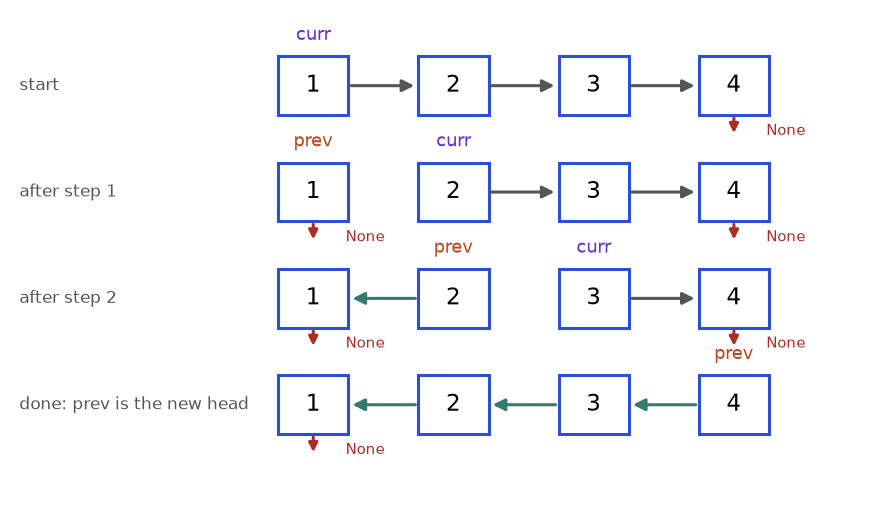
How to read it: go row by row. prev heads the reversed part, curr is the next node to fix. At the end prev is the new head.
Problem 5.2.1 (easy) Reverse a singly linked list. The code below is also the reusable template.
| Idea | Four lines in the loop: save next, point back, move prev, move cur. |
|---|---|
| Brute force | Copy values, reverse the Python list, build new nodes: O(n) time, O(n) space. |
| Better | Reverse in place: O(n) time, O(1) space. |
| Code | Below. |
| Dry run | The trace table below. |
| Complexity | O(n) time, O(1) space. |
| Edge cases | Empty list and one node work without special code. |
class ListNode:
def __init__(self, val=0, next=None):
self.val = val
self.next = next
def build(a):
head = None
for v in reversed(a):
head = ListNode(v, head)
return head
def to_list(h):
out = []
while h:
out.append(h.val)
h = h.next
return out
def reverse(head):
prev, cur = None, head # the reversed part starts empty
while cur:
nxt = cur.next # 1. save the rest of the list
cur.next = prev # 2. turn the arrow around
prev = cur # 3. grow the reversed part
cur = nxt # 4. move on to the saved rest
return prev # prev is the new head
assert to_list(reverse(build([]))) == []
assert to_list(reverse(build([5]))) == [5]
print(to_list(reverse(build([1, 2, 3, 4]))))[4, 3, 2, 1]| Step | cur | nxt (saved) | Chain after cur.next = prev | prev after |
|---|---|---|---|---|
| 1 | 1 | 2 | 1 → None | 1 |
| 2 | 2 | 3 | 2 → 1 → None | 2 |
| 3 | 3 | 4 | 3 → 2 → 1 → None | 3 |
| 4 | 4 | None | 4 → 3 → 2 → 1 → None | 4 |
cur.next: with cur.next = prev; cur = cur.next you walk backwards into the part you just built and stop after one node. Also: returning head instead of prev. The old head is now the tail, so you would return a one-node list.Problem 5.2.2 (hard) Reverse the list in groups of k; leave a final group shorter than k untouched. Example: 1..5 with k = 2 gives 2,1,4,3,5.
| Idea | For each group: first check that k nodes exist. If yes, reverse exactly those and reconnect to the group before and the rest after. |
|---|---|
| Brute force | Copy to a list, reverse each full chunk, rebuild: O(n) space. |
| Better | Keep group_prev, the node before each group: O(n) time, O(1) space. |
| Code | Below. |
| Dry run | 1..5, k = 2: (1,2) becomes 2,1; (3,4) becomes 4,3; only 5 is left, fewer than 2, so stop. |
| Complexity | O(n) time, O(1) space. |
| Edge cases | k = 1; k larger than the list; length an exact multiple of k. |
class ListNode:
def __init__(self, val=0, next=None):
self.val = val
self.next = next
def build(a):
head = None
for v in reversed(a):
head = ListNode(v, head)
return head
def to_list(h):
out = []
while h:
out.append(h.val)
h = h.next
return out
def reverse_k_group(head, k):
dummy = ListNode(0, head)
group_prev = dummy
while True:
kth = group_prev
for _ in range(k): # count first: do k nodes exist?
kth = kth.next
if kth is None:
return dummy.next
prev, cur = kth.next, group_prev.next # first node will point past the group
for _ in range(k):
nxt = cur.next
cur.next = prev
prev, cur = cur, nxt
old_first = group_prev.next # now the group's last node
group_prev.next = prev # prev is the group's new first node
group_prev = old_first
assert to_list(reverse_k_group(build([1, 2, 3, 4, 5]), 3)) == [3, 2, 1, 4, 5]
assert to_list(reverse_k_group(build([1, 2, 3]), 1)) == [1, 2, 3]
assert to_list(reverse_k_group(build([1, 2]), 5)) == [1, 2]
print(to_list(reverse_k_group(build([1, 2, 3, 4, 5]), 2)))[2, 1, 4, 3, 5]k nodes first, reverse second.Going deeper
- State the loop invariant: "
prevheads a correctly reversed list of everything beforecur;curheads the untouched rest." - A recursive reverse is shorter but uses O(n) stack frames. Python's default limit is about 1000, so a 5000-node list raises
RecursionError. Prefer the loop. - Doubly linked lists reverse by swapping each node's
prevandnext.
5.3 Fast and Slow Pointers: Middle and Cycle
Real-life picture. Two joggers on a track. On a straight road the fast one finishes first and the slow one is halfway. On a circular track the fast one catches the slow one from behind.
How to recognise it: "find the middle", "has a cycle", "where does the cycle start", "palindrome list", or a sequence made by repeating a function that might loop.
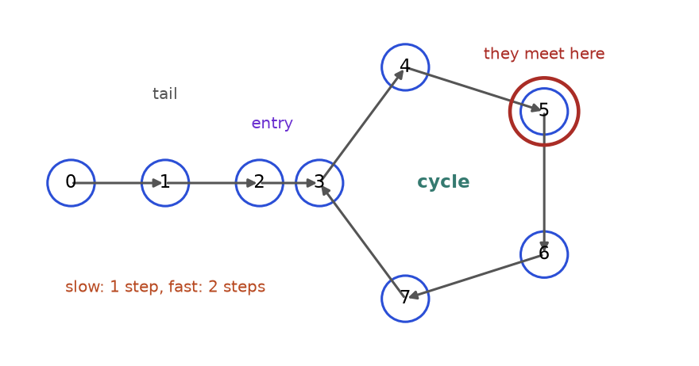
How to read it: once both runners are inside the cycle, fast gains exactly one node on slow per step, so the gap shrinks to zero.
class ListNode:
def __init__(self, val=0, next=None):
self.val = val
self.next = next
def has_cycle(head):
slow = fast = head
while fast and fast.next: # fast needs two nodes ahead of it
slow = slow.next # 1 step
fast = fast.next.next # 2 steps
if slow is fast: # same object, not same value
return True
return False
def middle(head):
slow = fast = head
while fast and fast.next:
slow = slow.next
fast = fast.next.next
return slow # for even length: the second middle
def make(n): # chain of n nodes holding 1..n
nodes = [ListNode(i + 1) for i in range(n)]
for a, b in zip(nodes, nodes[1:]):
a.next = b
return nodes
for n in (1, 2, 5, 6):
print(n, "nodes: middle is", middle(make(n)[0]).val)
chain = make(8)
assert not has_cycle(chain[0])
chain[7].next = chain[2] # last node points back to node 3
assert has_cycle(chain[0]) and not has_cycle(None)1 nodes: middle is 1
2 nodes: middle is 2
5 nodes: middle is 3
6 nodes: middle is 4Trace on the list of Figure 5.3 (nodes 0 to 7, node 7 points back to 3), both runners start at node 0:
| Step | slow | fast | Same node? |
|---|---|---|---|
| 1 | 1 | 2 | no |
| 2 | 2 | 4 | no |
| 3 | 3 | 6 | no |
| 4 | 4 | 3 (6 → 7 → 3) | no |
| 5 | 5 | 5 (3 → 4 → 5) | yes, cycle |
while fast: only. On an odd-length list fast lands on the last node and fast.next.next reads None.next: AttributeError. Use while fast and fast.next, in that order. Also compare nodes with is, not values: 1 → 2 → 1 → 2 repeats values but has no cycle.Problem 5.3.1 (easy) Return the middle node (the second one if there are two).
| Idea | When fast has covered the list at double speed, slow has covered half. |
|---|---|
| Brute force | Count n, then walk n // 2 steps: two passes, O(1) space. |
| Better | One pass with two pointers. |
| Code | middle in the block above (its output shows lengths 1, 2, 5, 6). |
| Dry run | 1,2,3,4: slow 1, fast 1; then slow 2, fast 3; then slow 3, fast None. Answer 3. |
| Complexity | O(n) time, O(1) space. |
| Edge cases | One node returns itself; two nodes return the second. |
Problem 5.3.2 (medium) Return the node where a cycle begins, or None.
| Idea | Phase 1: run until slow meets fast. Phase 2: restart one pointer at the head; move both one step at a time. They meet at the cycle entry. |
|---|---|
| Brute force | A set of visited nodes; the first repeat is the entry: O(n) space. |
| Better | Floyd's two phases. Proof: let a = tail length, b = distance from the entry to the meeting point, c = cycle length. Slow walked a + b; fast walked 2(a + b), which is slow's distance plus m whole laps: a + b = m·c. So a = m·c - b: walking a steps from the meeting point lands on the entry, and so does walking a steps from the head. |
| Code | Below. |
| Dry run | Meet at 5. Pairs (0,5), (1,6), (2,7), (3,3): the entry is 3. |
| Complexity | O(n) time, O(1) space. |
| Edge cases | No cycle; the whole list is the cycle; a node pointing to itself. |
class ListNode:
def __init__(self, val=0, next=None):
self.val = val
self.next = next
def cycle_entry(head):
slow = fast = head
while fast and fast.next:
slow = slow.next
fast = fast.next.next
if slow is fast: # phase 1: met inside the cycle
finder = head
while finder is not slow: # phase 2: one step each
finder = finder.next
slow = slow.next
return finder
return None
def link(n, back_to): # nodes 0..n-1; last points to back_to (or None)
nodes = [ListNode(i) for i in range(n)]
for a, b in zip(nodes, nodes[1:]):
a.next = b
if back_to is not None:
nodes[-1].next = nodes[back_to]
return nodes
assert cycle_entry(link(8, 3)[0]).val == 3
assert cycle_entry(link(4, 0)[0]).val == 0 # whole list is the cycle
assert cycle_entry(link(1, 0)[0]).val == 0 # node points at itself
assert cycle_entry(link(4, None)[0]) is None and cycle_entry(None) is None
print("entry:", cycle_entry(link(8, 3)[0]).val)entry: 3Problem 5.3.3 (hard) Is a linked list a palindrome? Use O(1) extra space.
| Idea | Find the middle, reverse the second half, compare the halves. |
|---|---|
| Brute force | Copy values to a list and compare with its reverse: O(n) space. |
| Better | Combine two earlier patterns: middle (5.3) and reverse (5.2). |
| Code | Below. |
| Dry run | 1,2,2,1: slow stops at the second 2; reversed half is 1 → 2; compare 1=1, 2=2: True. 1,2,3: reversed half 3 → 2; 1 vs 3 differ: False. |
| Complexity | O(n) time, O(1) space. |
| Edge cases | Empty or one node: True. Odd length: the middle node sits in the reversed half and is compared with itself, which is harmless. |
class ListNode:
def __init__(self, val=0, next=None):
self.val = val
self.next = next
def build(a):
head = None
for v in reversed(a):
head = ListNode(v, head)
return head
def is_palindrome(head):
slow = fast = head
while fast and fast.next: # 1. find the middle
slow, fast = slow.next, fast.next.next
prev, cur = None, slow # 2. reverse the second half
while cur:
cur.next, prev, cur = prev, cur, cur.next
left, right = head, prev # 3. compare the halves
while right:
if left.val != right.val:
return False
left, right = left.next, right.next
return True
assert is_palindrome(build([1, 2, 3, 2, 1])) and is_palindrome(build([1])) and is_palindrome(None)
assert not is_palindrome(build([1, 2, 3]))
print(is_palindrome(build([1, 2, 2, 1])), is_palindrome(build([1, 2, 3])))True FalseGoing deeper
- Speeds 1 and 2 are special: the gap shrinks by exactly one per step, so it cannot jump over zero. With other speeds the pointers can circle without ever landing together.
- The same idea works on any sequence
x, f(x), f(f(x)), ...: the "happy number" puzzle, finding the repeated number in an array of values 1 to n, and Pollard's rho factoring.
5.4 The Dummy-Node Trick: Merge and Remove
dummy.next at the end.Real-life picture. A rope barrier at the front of a queue. It is not a customer, but everyone, even the first customer, stands behind something.
How to recognise it: you build a new list node by node (merge, filter, partition), or you may delete the head, or you catch yourself writing if head is None special cases.
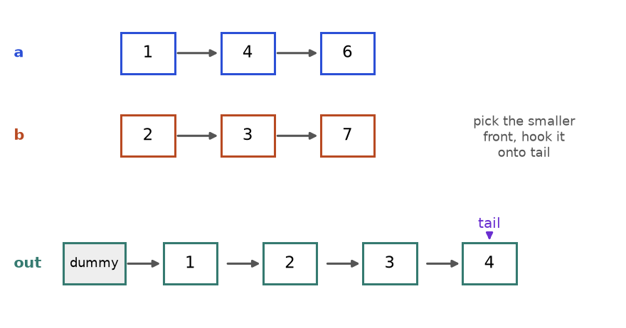
tail sits on the 4.How to read it: compare the two fronts, hook the smaller after tail, move tail onto it, advance the list it came from.
Problem 5.4.1 (easy) Merge two sorted linked lists into one sorted list by reusing the nodes. The code is also the dummy-node template.
| Idea | Dummy plus tail. Attach the smaller front each time. When one list runs out, attach the other whole. |
|---|---|
| Brute force | Put all values in a Python list, sort, rebuild: O((n + m) log(n + m)) time and extra space. It ignores that the inputs are already sorted. |
| Better | Two-pointer merge: O(n + m) time, O(1) space. |
| Code | Below. |
| Dry run | The trace table below. |
| Complexity | O(n + m) time, O(1) space. |
| Edge cases | An empty list; equal values (use <= so equal items keep their order, which is called a stable merge). |
class ListNode:
def __init__(self, val=0, next=None):
self.val = val
self.next = next
def build(a):
head = None
for v in reversed(a):
head = ListNode(v, head)
return head
def to_list(h):
out = []
while h:
out.append(h.val)
h = h.next
return out
def merge(a, b):
dummy = ListNode() # fake first node
tail = dummy # last node of the output so far
while a and b:
if a.val <= b.val:
tail.next, a = a, a.next
else:
tail.next, b = b, b.next
tail = tail.next
tail.next = a if a else b # attach the leftover list in one move
return dummy.next # skip the dummy
assert to_list(merge(build([]), build([5]))) == [5]
assert to_list(merge(build([]), build([]))) == []
assert to_list(merge(build([1, 1]), build([1]))) == [1, 1, 1]
print(to_list(merge(build([1, 4, 6]), build([2, 3, 7]))))[1, 2, 3, 4, 6, 7]| Step | a front | b front | Pick | Output so far |
|---|---|---|---|---|
| 1 | 1 | 2 | 1 (a) | 1 |
| 2 | 4 | 2 | 2 (b) | 1, 2 |
| 3 | 4 | 3 | 3 (b) | 1, 2, 3 |
| 4 | 4 | 7 | 4 (a) | 1, 2, 3, 4 |
| 5 | 6 | 7 | 6 (a) | 1, 2, 3, 4, 6 |
| 6 | None | 7 | a is empty: attach b | 1, 2, 3, 4, 6, 7 |
dummy instead of dummy.next gives a result that starts with a fake 0. Forgetting the leftover (tail.next = a or b) silently drops the longer list's tail.Problem 5.4.2 (medium) Remove the n-th node from the end (n = 1 is the last node) in one pass. Example: 1..5 with n = 2 gives 1 → 2 → 3 → 5.
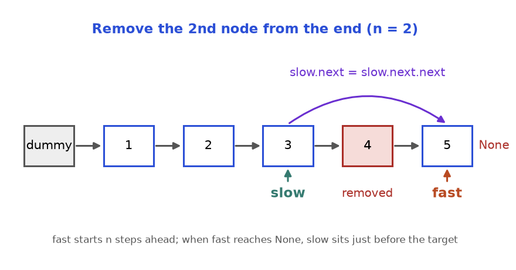
fast is on the last node, slow is the node just before the target.How to read it: fast started n nodes ahead of slow and the gap never changes, so the end of the list tells you where the n-th from the end is.
| Idea | Start both pointers on the dummy. Move fast n steps. Then move both until fast.next is None. Delete slow.next. |
|---|---|
| Brute force | Count the length L, then walk L - n steps from the dummy: two passes, O(1) space. |
| Better | The gap trick: one pass. The dummy makes "remove the head" (n = L) work. |
| Code | Below. |
| Dry run | 1..5, n = 2: fast moves dummy → 1 → 2. Then (slow, fast) = (1,3), (2,4), (3,5). Stop. Delete 4: 3.next = 5. |
| Complexity | O(L) time, O(1) space. |
| Edge cases | n = L (remove the head); one-node list; n = 1. |
class ListNode:
def __init__(self, val=0, next=None):
self.val = val
self.next = next
def build(a):
head = None
for v in reversed(a):
head = ListNode(v, head)
return head
def to_list(h):
out = []
while h:
out.append(h.val)
h = h.next
return out
def remove_nth_from_end(head, n):
dummy = ListNode(0, head)
slow = fast = dummy
for _ in range(n): # open a gap of n nodes
fast = fast.next
while fast.next: # run until fast is on the last node
slow, fast = slow.next, fast.next
slow.next = slow.next.next # slow is just before the target
return dummy.next
assert to_list(remove_nth_from_end(build([1, 2, 3, 4, 5]), 5)) == [2, 3, 4, 5]
assert to_list(remove_nth_from_end(build([1, 2, 3, 4, 5]), 1)) == [1, 2, 3, 4]
assert to_list(remove_nth_from_end(build([7]), 1)) == []
print(to_list(remove_nth_from_end(build([1, 2, 3, 4, 5]), 2)))[1, 2, 3, 5]fast is None, slow lands on the target, and a singly linked list cannot delete the node you stand on. Start on the dummy and stop at fast.next is None.Problem 5.4.3 (hard) Sort a linked list in O(n log n) time.
| Idea | Merge sort: split at the middle (fast and slow, 5.3), sort each half recursively, merge (this section). |
|---|---|
| Brute force | Copy values, sorted, rebuild: O(n log n) time but O(n) extra space. |
| Better | Merge sort on the list needs only O(log n) stack space. Quicksort and heapsort need random access, so they suit lists badly. |
| Code | Below. |
| Dry run | 4,2,1,3 splits into 4,2 and 1,3; they sort to 2,4 and 1,3; merging gives 1,2,3,4. |
| Complexity | O(n log n) time, O(log n) space. |
| Edge cases | Empty list, one node, two nodes, duplicates. |
class ListNode:
def __init__(self, val=0, next=None):
self.val = val
self.next = next
def build(a):
head = None
for v in reversed(a):
head = ListNode(v, head)
return head
def to_list(h):
out = []
while h:
out.append(h.val)
h = h.next
return out
def merge(a, b):
dummy = tail = ListNode()
while a and b:
if a.val <= b.val:
tail.next, a = a, a.next
else:
tail.next, b = b, b.next
tail = tail.next
tail.next = a if a else b
return dummy.next
def sort_list(head):
if head is None or head.next is None: # 0 or 1 node: sorted
return head
slow, fast = head, head.next # fast one ahead: slow ends on the LEFT middle
while fast and fast.next:
slow, fast = slow.next, fast.next.next
second, slow.next = slow.next, None # cut the list in two
return merge(sort_list(head), sort_list(second))
assert to_list(sort_list(build([5, 1, 4, 1, 3, 9, 0]))) == [0, 1, 1, 3, 4, 5, 9]
assert to_list(sort_list(build([]))) == [] and to_list(sort_list(build([2, 1]))) == [1, 2]
print(to_list(sort_list(build([4, 2, 1, 3]))))[1, 2, 3, 4]slow.next = None). The first half still links to the second, each recursive call sees the whole list again, and you get RecursionError. Starting fast at head on a two-node list has the same effect.Going deeper
- The same sentinel idea appears in the LRU cache (Chapter 11) and as the extra 0 bar in the histogram problem of Section 5.7.
- Merging k sorted lists: merge them in pairs (O(N log k) for N nodes) or use a min-heap (Chapter 7).
- Merging with
<=makes merge sort stable, which is why it is the usual choice for sorting records.
5.5 Stacks: Last In, First Out
list is a stack: append, pop(), stack[-1], all O(1).Real-life picture. A pile of plates, the Back button of a browser, the Undo button of an editor: the most recent thing is the first to go.
How to recognise it: matching pairs (brackets, tags); "the most recent unmatched item decides"; undo or backtracking; evaluating expressions; replacing recursion with a loop; "nearest bigger item" (Section 5.7).
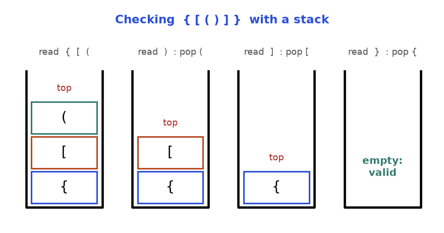
{[()]}. Openers are pushed. Each closer must match the top, which is popped. An empty stack at the end means valid.How to read it: picture 1 has pushed three openers; each later picture pops one because the next character closes it.
Problem 5.5.1 (easy) Decide whether a string of ()[]{} is balanced. The code is also the stack template.
| Idea | Push openers. A closer must match the top opener, which is then popped. The stack must end empty. |
|---|---|
| Brute force | Keep deleting (), [], {} until nothing changes: up to n/2 passes of O(n), so O(n²). |
| Better | One pass with a stack: O(n). |
| Code | Below. |
| Dry run | The trace table below. |
| Complexity | O(n) time, O(n) space. |
| Edge cases | Empty string (valid); a lone closer; leftover openers like "(("; wrong order like ")(". |
def is_valid(s):
pairs = {")": "(", "]": "[", "}": "{"} # closer -> its opener
stack = []
for ch in s:
if ch in pairs.values():
stack.append(ch) # opener: remember it
elif not stack or stack.pop() != pairs[ch]:
return False # nothing to match, or wrong type
return not stack # leftover openers mean invalid
tests = {"": True, "()[]{}": True, "{[()]}": True, "(]": False,
"([)]": False, ")(": False, "((": False, "]": False}
for text, expected in tests.items():
assert is_valid(text) == expected, text
print(is_valid("{[()]}"), is_valid("([)]"), is_valid("(("))True False False| Step | Char | Action | Stack (bottom to top) |
|---|---|---|---|
| 1 | { | push | { |
| 2 | [ | push | { [ |
| 3 | ( | push | { [ ( |
| 4 | ) | top ( matches, pop | { [ |
| 5 | ] | top [ matches, pop | { |
| 6 | } | top { matches, pop | empty: valid |
")", stack[-1] raises IndexError; check not stack first. Also returning True when the loop ends: "((" never fails inside the loop, so you must test that the stack is empty.Problem 5.5.2 (medium) Design a stack with push, pop, top and get_min (the smallest value now in the stack), all O(1).
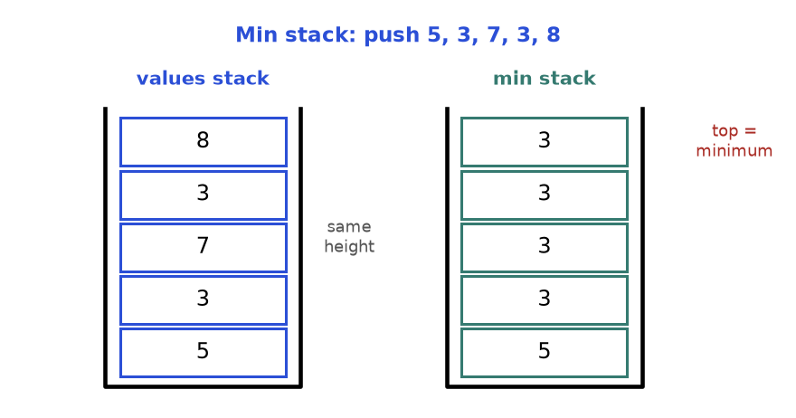
How to read it: the top of the right stack answers "what is the minimum right now?". Popping both stacks restores the earlier minimum.
| Idea | Store with every value the minimum of everything at or below it. |
|---|---|
| Brute force | min(stack) on every call: O(n). |
| Better | Pairs (value, min_so_far): O(1) per operation, O(n) space. |
| Code | Below. |
| Dry run | Push 5, 3, 7, 3, 8: mins 5, 3, 3, 3, 3. Pop four times: mins 3, 3, 3, 5. |
| Complexity | O(1) time per operation. |
| Edge cases | Duplicate minimums (both 3s must be recorded); popping the minimum. |
class MinStack:
def __init__(self):
self.items = [] # pairs (value, minimum so far)
def push(self, x):
low = min(x, self.items[-1][1]) if self.items else x
self.items.append((x, low))
def pop(self):
return self.items.pop()[0]
def top(self):
return self.items[-1][0]
def get_min(self):
return self.items[-1][1]
s = MinStack()
mins = []
for x in [5, 3, 7, 3, 8]:
s.push(x)
mins.append(s.get_min())
after = []
for _ in range(4):
s.pop()
after.append(s.get_min())
print(mins, after)
assert mins == [5, 3, 3, 3, 3] and after == [3, 3, 3, 5] and s.top() == 5[5, 3, 3, 3, 3] [3, 3, 3, 5]Problem 5.5.3 (hard) Evaluate a string like "14-3*2+8/4" with non-negative integers and + - * / (no brackets, spaces allowed). Multiplication and division bind tighter. Division truncates toward zero.
| Idea | Keep a stack of terms to be added. Read each number with the operator before it: + pushes it, - pushes its negative, * and / combine it with the top. The answer is the sum of the stack. |
|---|---|
| Brute force | Convert to postfix with the shunting-yard method, then evaluate: correct but longer, with a second stack. |
| Better | One stack: O(n) time. |
| Code | Below. |
| Dry run | 14 (op +): [14]. 3 (op -): [14,-3]. 2 (op *): [14,-6]. 8 (op +): [14,-6,8]. 4 (op /): [14,-6,2]. Sum 10. |
| Complexity | O(n) time, O(n) space. |
| Edge cases | Multi-digit numbers; spaces; the last number needs a sentinel operator to flush it; a negative term combined with /. |
def calculate(s):
stack, num, op = [], 0, "+" # op = operator that came BEFORE num
for ch in s + "+": # the extra "+" flushes the last number
if ch.isdigit():
num = num * 10 + int(ch)
elif ch != " ":
if op == "+": stack.append(num)
elif op == "-": stack.append(-num)
elif op == "*": stack.append(stack.pop() * num)
else: stack.append(int(stack.pop() / num))
op, num = ch, 0
return sum(stack)
tests = {"3+2*2": 7, " 3/2 ": 1, " 3+5 / 2 ": 5, "14-3*2+8/4": 10,
"2-3*4": -10, "10/3*3": 9, "0-5/2": -2, "42": 42}
for text, expected in tests.items():
assert calculate(text) == expected, text
print(calculate("14-3*2+8/4"), calculate("0-5/2"))10 -2Going deeper
- The call stack is a stack: each call pushes a frame, each return pops one. Chapter 6 shows how to turn recursion into a loop with an explicit stack.
- A Python list
appendis amortised O(1): usually cheap, occasionally a copy, cheap on average. - To support brackets in the calculator, add a second stack (or recursion) for sub-results.
5.6 Queues and Deques: First In, First Out
Real-life picture. A ticket counter: first to arrive, first served. In a deque, VIPs may also join at the front and the last person may leave from the back.
How to recognise it: things processed in arrival order; "level by level" or "fewest steps" (breadth-first search, Chapter 8); a moving window over a stream where items expire from one end.
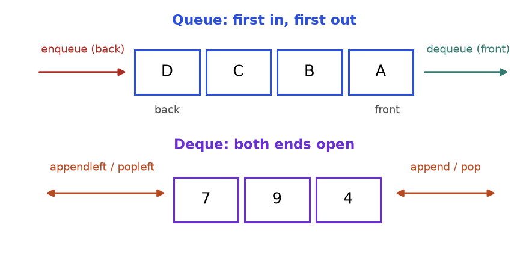
How to read it: in the top queue A arrived first, so A leaves first. In the bottom deque the orange double arrows show that both ends accept both operations.
from collections import deque
q = deque()
q.append("A") # enqueue at the back
q.append("B")
q.append("C")
front = q.popleft() # dequeue from the front, O(1)
print(front, q)
q.appendleft("Z") # a deque can also add at the front
last = q.pop() # and remove at the back
print(last, q)
print(len(q), q[0], q[-1])A deque(['B', 'C'])
C deque(['Z', 'B'])
2 Z Blist.pop(0) as a queue. It shifts every other item left: O(n) each, so n removals cost O(n²). Use deque.popleft(), which is O(1). Likewise use appendleft, not insert(0, x).Problem 5.6.1 (easy) ping(t) records a request at time t ms (times only increase) and returns how many requests fall in [t - 3000, t].
| Idea | A queue of timestamps. Add t at the back, drop from the front everything older than t - 3000, return the size. |
|---|---|
| Brute force | Keep all timestamps and count the ones in range on every call: O(total pings) per call. |
| Better | Each timestamp enters once and leaves once: amortised O(1). |
| Code | Below. |
| Dry run | ping(1) gives 1; ping(100) gives 2; ping(3001): range [1, 3001], gives 3; ping(3002): range [2, 3002], so 1 expires, gives 3. |
| Complexity | Amortised O(1) time; space is the size of one window. |
| Edge cases | A timestamp exactly 3000 old is inside: remove only values strictly less than t - 3000. |
from collections import deque
class RecentCounter:
def __init__(self):
self.times = deque()
def ping(self, t):
self.times.append(t)
while self.times[0] < t - 3000: # strictly older than the window
self.times.popleft()
return len(self.times)
rc = RecentCounter()
results = [rc.ping(t) for t in (1, 100, 3001, 3002)]
print(results)
assert results == [1, 2, 3, 3][1, 2, 3, 3]Going deeper
- CPython's
dequeis a doubly linked list of blocks: both ends are O(1), butd[i]in the middle is O(n). - A priority queue (heap, Chapter 7) serves the most important item first instead of the oldest.
- Breadth-first search (Chapter 8) is a loop: pop the front node, push its unseen neighbours.
5.7 The Monotonic Stack
Real-life picture. People in a waiting room, all facing right, each wanting to know who is the first taller person to their right. Those still waiting sit on the stack. A newcomer enters: every waiting person shorter than the newcomer gets their answer and leaves. Taller people keep waiting. So the waiting room is always in decreasing height.
How to recognise it: next or previous greater/smaller element; "days until a warmer day"; stock span; largest rectangle in a histogram; "remove digits to make the smallest number"; a nested loop whose inner loop searches for "the first bigger item to the right".
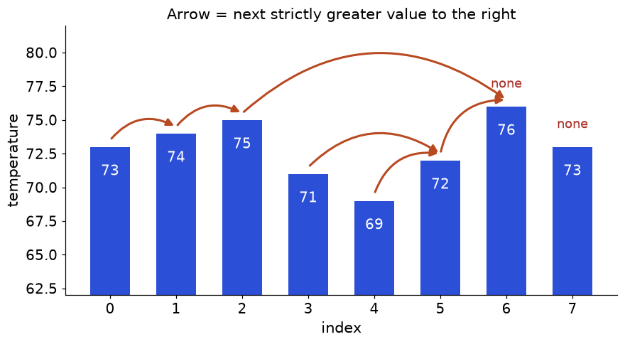
How to read it: 71 and 69 both point to 72, and 75 jumps over everything up to 76. The stack finds all arrows in one left-to-right pass.
def next_greater_indexes(nums):
answer = [-1] * len(nums) # -1 means "no greater element to the right"
stack = [] # indexes still waiting; their values decrease
for i, x in enumerate(nums):
while stack and nums[stack[-1]] < x: # x beats the waiting item
answer[stack.pop()] = i # the popped item found its answer
stack.append(i) # i now waits for its own answer
return answer
print(next_greater_indexes([73, 74, 75, 71, 69, 72, 76, 73]))[1, 2, 6, 5, 5, 6, -1, -1]In words: for each new item, pop everything it beats and record the answer for them, then push yourself. For "next smaller" flip the comparison. For "previous greater" read the stack top before pushing.
Trace on the temperatures 73, 74, 75, 71, 69, 72, 76, 73 (the stack holds indexes; "gap" is i - j, the days waited):
| i | Value | Pops (index: gap) | Stack after push | Stack values |
|---|---|---|---|---|
| 0 | 73 | none | [0] | 73 |
| 1 | 74 | 0: 1 | [1] | 74 |
| 2 | 75 | 1: 1 | [2] | 75 |
| 3 | 71 | none | [2, 3] | 75, 71 |
| 4 | 69 | none | [2, 3, 4] | 75, 71, 69 |
| 5 | 72 | 4: 1, then 3: 2 | [2, 5] | 75, 72 |
| 6 | 76 | 5: 1, then 2: 4 | [6] | 76 |
| 7 | 73 | none | [6, 7] | 76, 73 |
Indexes 6 and 7 stay on the stack: no bigger value ever came. The gaps are [1, 1, 4, 2, 1, 1, 0, 0].
while inside the for looks like O(n²), but each index is pushed once and popped at most once. Pops can never exceed pushes, so the total work is about 2n steps.nums[idx]. Also mixing strict and non-strict tests: "strictly greater" pops on nums[top] < x. With <=, equal values wrongly get answers.Problem 5.7.1 (easy) For each number return the first strictly greater number to its right, or -1. Example: [2, 1, 2, 4, 3] gives [4, 2, 4, -1, -1].
| Idea | The template, but store the popped answer as the value x. |
|---|---|
| Brute force | For each i scan right until a bigger number: O(n²). |
| Better | Monotonic stack: O(n). |
| Code | Below. |
| Dry run | 2: push. 1: push (stack 2,1). 2: pops 1 (answer 2), 2 < 2 is false, push (2,2). 4: pops both 2s (answer 4), push. 3: push. Leftovers 4 and 3 stay -1. |
| Complexity | O(n) time, O(n) space. |
| Edge cases | Empty list; strictly decreasing (all -1); equal values (not greater). |
def next_greater(nums):
answer = [-1] * len(nums)
stack = []
for i, x in enumerate(nums):
while stack and nums[stack[-1]] < x:
answer[stack.pop()] = x
stack.append(i)
return answer
assert next_greater([]) == [] and next_greater([3, 3, 3]) == [-1, -1, -1]
assert next_greater([5, 4, 3]) == [-1, -1, -1]
print(next_greater([2, 1, 2, 4, 3]))[4, 2, 4, -1, -1]Problem 5.7.2 (medium) Daily temperatures. For each day return the number of days until a warmer day, or 0. Example: [73, 74, 75, 71, 69, 72, 76, 73] gives [1, 1, 4, 2, 1, 1, 0, 0].
| Idea | The same stack, recording i - j instead of a value. |
|---|---|
| Brute force | Scan forward from every day: O(n²). |
| Better | Monotonic stack of indexes: O(n). |
| Code | Below. |
| Dry run | The trace table above: pops happen in the order days 0, 1, 4, 3, 5, 2 with gaps 1, 1, 1, 2, 1, 4. |
| Complexity | O(n) time, O(n) space. |
| Edge cases | Equal temperatures are not warmer; non-increasing input gives all zeros. |
def daily_temperatures(temps):
wait = [0] * len(temps)
stack = [] # days still waiting for a warmer day
for i, t in enumerate(temps):
while stack and temps[stack[-1]] < t:
j = stack.pop()
wait[j] = i - j # days waited
stack.append(i)
return wait
result = daily_temperatures([73, 74, 75, 71, 69, 72, 76, 73])
print(result)
assert result == [1, 1, 4, 2, 1, 1, 0, 0]
assert daily_temperatures([30, 40, 50, 60]) == [1, 1, 1, 0]
assert daily_temperatures([50, 50]) == [0, 0] and daily_temperatures([]) == [][1, 1, 4, 2, 1, 1, 0, 0]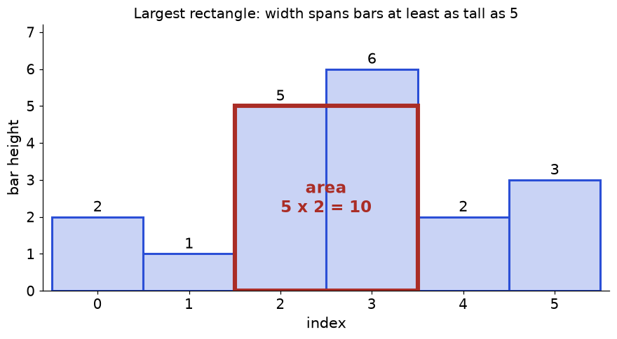
How to read it: a rectangle is only as tall as the shortest bar it covers. For each bar ask: if this bar is the shortest, how far can the rectangle stretch left and right? Until it meets a shorter bar. That is "previous smaller" and "next smaller" again.
Problem 5.7.3 (hard) Largest rectangle in a histogram. Given bar heights (each bar has width 1), return the largest rectangle area. Example: [2, 1, 5, 6, 2, 3] gives 10.
| Idea | Keep a stack of indexes with increasing heights. A shorter bar arriving means the top bar can stretch no further right: pop it and compute its area. Its width runs from just after the new stack top (the previous smaller bar) to just before the current index. Append a bar of height 0 to flush the stack. |
|---|---|
| Brute force | Every pair (left, right) with a running minimum: O(n²) (O(n³) if the minimum is recomputed). |
| Better | Monotonic stack: O(n). |
| Code | Below, checked against the brute force. |
| Dry run | The trace table below. The winning pop is height 5 at i = 4 with width 2. |
| Complexity | O(n) time, O(n) space. |
| Edge cases | Empty input; all bars equal; strictly increasing; a zero-height bar in the middle. |
import random
def largest_rectangle(heights):
stack = [] # indexes, heights increasing
best = 0
for i, h in enumerate(heights + [0]): # the 0 sentinel flushes the stack
while stack and heights[stack[-1]] >= h:
height = heights[stack.pop()]
left = stack[-1] if stack else -1 # previous smaller bar, or the left wall
best = max(best, height * (i - left - 1))
stack.append(i)
return best
def brute(heights):
best = 0
for left in range(len(heights)):
lowest = heights[left]
for right in range(left, len(heights)):
lowest = min(lowest, heights[right])
best = max(best, lowest * (right - left + 1))
return best
assert largest_rectangle([]) == 0 and largest_rectangle([5]) == 5
assert largest_rectangle([3, 3, 3, 3]) == 12 and largest_rectangle([1, 2, 3, 4, 5]) == 9
assert largest_rectangle([5, 0, 5]) == 5
random.seed(11)
for _ in range(300):
data = [random.randint(0, 8) for _ in range(random.randint(0, 10))]
assert largest_rectangle(data) == brute(data)
print(largest_rectangle([2, 1, 5, 6, 2, 3]))10Trace for 2, 1, 5, 6, 2, 3 plus the sentinel 0 at index 6. On a pop, width = i - (new top index) - 1, or i if the stack is empty.
| i | Height | Pops (height: width, area) | Stack after push | Best |
|---|---|---|---|---|
| 0 | 2 | none | [0] | 0 |
| 1 | 1 | 2: width 1, area 2 | [1] | 2 |
| 2 | 5 | none | [1, 2] | 2 |
| 3 | 6 | none | [1, 2, 3] | 2 |
| 4 | 2 | 6: width 4-2-1 = 1, area 6; then 5: width 4-1-1 = 2, area 10 | [1, 4] | 10 |
| 5 | 3 | none | [1, 4, 5] | 10 |
| 6 | 0 | 3: width 1, area 3; 2: width 6-1-1 = 4, area 8; 1: stack empty, width 6, area 6 | [6] | 10 |
i - top - 1, not i - top. When the stack is empty there is no smaller bar on the left: the width is i. Skipping the empty check crashes with IndexError.Going deeper
- Four variants, two questions: look left or right, bigger or smaller? "Greater" uses a decreasing stack, "smaller" an increasing one.
- Sum of subarray minimums: each element is the minimum of (distance to previous smaller) × (distance to next smaller) subarrays; use the same two arrays.
- Maximal rectangle of 1s in a binary grid: treat each row as the bottom of a histogram and run Problem 5.7.3 per row.
5.8 The Monotonic Deque: Sliding Window Maximum
Real-life picture. A talent show where each performer is remembered for k rounds. A stronger performer arrives: every weaker performer already in line will never be the best again (the newcomer is stronger and stays longer), so they are removed. The front of the line is the current best.
How to recognise it: "maximum or minimum of every window of size k"; "longest subarray where max minus min is at most a limit"; a sliding window where you need the window max or min fast; a DP recurrence that takes the best of the last k states.
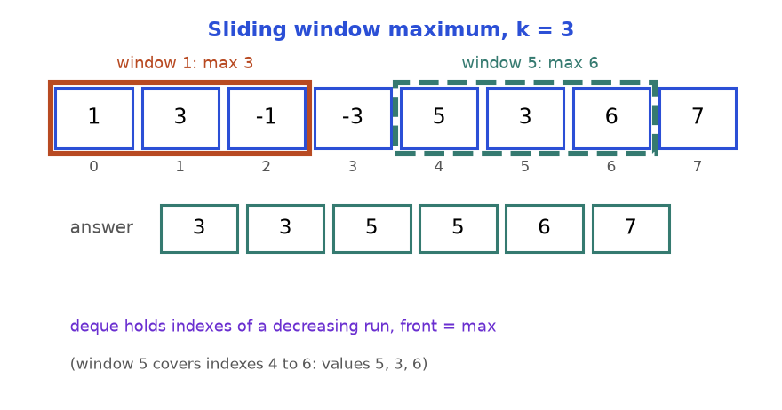
How to read it: window 1 covers indexes 0 to 2 (max 3). Window 5 covers indexes 4 to 6 (values 5, 3, 6, max 6). There are n - k + 1 = 6 windows.
Problem 5.8.1 (medium) Sliding window maximum. Return the maximum of every window of size k. Example: [1, 3, -1, -3, 5, 3, 6, 7], k = 3 gives [3, 3, 5, 5, 6, 7]. The code is also the template.
| Idea | Four steps per item: pop weaker from the back, push the index, expire the front, record the front once the window is full. |
|---|---|
| Brute force | max of every slice: O(n·k). For n = 105 and k = 5·104 that is billions of steps. |
| Better | A heap with lazy deletion is O(n log n). The deque is O(n): every index enters and leaves once. |
| Code | Below, checked against the brute force. |
| Dry run | The trace table below. |
| Complexity | O(n) time, O(k) space (the deque holds at most k indexes). |
| Edge cases | k = 1 (output equals input); k = n (one output); duplicates (pop on <=, keeping the newest, which stays longest); decreasing input (only expiry shrinks the deque). |
from collections import deque
import random
def window_max(nums, k):
dq = deque() # indexes; values decrease front to back
out = []
for i, x in enumerate(nums):
while dq and nums[dq[-1]] <= x: # 1. drop weaker items from the back
dq.pop()
dq.append(i) # 2. add the new index
if dq[0] <= i - k: # 3. drop the front if it left the window
dq.popleft()
if i >= k - 1: # 4. window is full: the front is the maximum
out.append(nums[dq[0]])
return out
def brute(nums, k):
return [max(nums[i:i + k]) for i in range(len(nums) - k + 1)]
assert window_max([4, 3, 2, 1], 2) == [4, 3, 2] and window_max([2, 2, 2], 2) == [2, 2]
assert window_max([9, 8, 7], 1) == [9, 8, 7] and window_max([5, 1, 4], 3) == [5]
random.seed(3)
for _ in range(300):
n = random.randint(1, 15)
data = [random.randint(-5, 5) for _ in range(n)]
k = random.randint(1, n)
assert window_max(data, k) == brute(data, k)
print(window_max([1, 3, -1, -3, 5, 3, 6, 7], 3))[3, 3, 5, 5, 6, 7]| i | x | Deque (indexes) | Deque (values) | Output so far |
|---|---|---|---|---|
| 0 | 1 | [0] | 1 | - |
| 1 | 3 | [1] (1 was weaker) | 3 | - |
| 2 | -1 | [1, 2] | 3, -1 | 3 |
| 3 | -3 | [1, 2, 3] | 3, -1, -3 | 3, 3 |
| 4 | 5 | [4] (5 beats all) | 5 | 3, 3, 5 |
| 5 | 3 | [4, 5] | 5, 3 | 3, 3, 5, 5 |
| 6 | 6 | [6] | 6 | 3, 3, 5, 5, 6 |
| 7 | 7 | [7] | 7 | 3, 3, 5, 5, 6, 7 |
y when a bigger x arrives? Any window that contains y and appears later also contains x (it is newer, so it stays longer), and x is bigger. So y can never be a maximum again.dq[0] <= i - k a stale maximum is reported. Also storing values instead of indexes: you cannot tell when the front has left the window, and duplicates become ambiguous.Problem 5.8.2 (hard) Return the length of the longest contiguous subarray in which the largest minus the smallest value is at most limit. Example: [10, 1, 2, 4, 7, 2] with limit 5 gives 4 (the subarray [2, 4, 7, 2]).
| Idea | A variable-size sliding window (Chapter 3) with two monotonic deques: decreasing for the window max, increasing for the window min. Add the right end to both. While max - min > limit, advance left and pop deque fronts that fell out. |
|---|---|
| Brute force | Check every subarray with max and min: O(n³), or O(n²) with running values. |
| Better | Two deques: each index enters and leaves each deque once, and left only moves forward: O(n). |
| Code | Below. |
| Dry run | Limit 5. Window {10, 1}: 9 > 5, so left moves past 10. Grow to {1, 2, 4, 7}: 6 > 5, so left moves past 1. Window {2, 4, 7} has difference 5. Add 2: {2, 4, 7, 2}, length 4. |
| Complexity | O(n) time, O(n) space. |
| Edge cases | limit = 0 (longest run of equal values); one element; everything within the limit (answer n). |
from collections import deque
def longest_subarray(nums, limit):
big, small = deque(), deque() # indexes: values decreasing / increasing
left = best = 0
for right, x in enumerate(nums):
while big and nums[big[-1]] <= x:
big.pop()
big.append(right)
while small and nums[small[-1]] >= x:
small.pop()
small.append(right)
while nums[big[0]] - nums[small[0]] > limit: # too uneven: shrink from the left
left += 1
if big[0] < left:
big.popleft()
if small[0] < left:
small.popleft()
best = max(best, right - left + 1)
return best
assert longest_subarray([10, 1, 2, 4, 7, 2], 5) == 4
assert longest_subarray([1, 5, 6, 7, 8, 10, 6, 5, 6], 4) == 5
print(longest_subarray([10, 1, 2, 4, 7, 2], 5))4left += 1, the index that left may still be at the front of a deque, so max - min keeps using a value from outside the window. After every move of left, pop each deque front whose index is below left.Going deeper
- A stack only pops from the back, so it answers "everything to the left or right". A deque also pops from the front, so it answers "the last k items".
- DP speed-up: a recurrence like
dp[i] = nums[i] + max(dp[i-k..i-1])(jump at most k steps) needs a window maximum of earlier results; the deque brings it from O(n·k) to O(n). - Alternatives for a window maximum: a heap with lazy deletion (O(n log n), simpler), a segment tree (more power than needed), or splitting into blocks of size k with prefix and suffix maxima (O(n), no deque).
Chapter recap
- A linked list is nodes joined by
nextpointers. Reading is O(n); inserting or deleting beside a node you hold is O(1). Save the rest of the chain before you change a pointer. - Reverse: save next, point back, move
prev, movecur. The answer isprev. - Fast and slow pointers find the middle (fast ends the list, slow is halfway) and a cycle (fast laps slow). Floyd's second phase finds the cycle entry.
- A dummy node removes head special cases. Build with
tail; returndummy.next. A gap of n between two pointers finds the n-th node from the end. - A stack is last in, first out: matching pairs, expressions and undo. A min stack stores the running minimum next to each value.
- A queue is first in, first out. Use
collections.dequewithpopleft, neverlist.pop(0). - A monotonic stack keeps indexes in sorted order; each pop is an answer. Next greater, daily temperatures and the histogram are the same loop. It is O(n) because each index is pushed once and popped at most once.
- A monotonic deque of indexes gives the window maximum: pop weaker items from the back, expire the front, read the front.
- Always store indexes in monotonic structures, decide strict or non-strict comparison on purpose, and test empty, single-node and all-equal inputs.
| Pattern | When to use | Template idea | Time | Space |
|---|---|---|---|---|
| Linked-list walk | Any head-based list problem | cur = head; while cur: ...; cur = cur.next | O(n) | O(1) |
| Reverse list | Reverse, palindrome, reorder | Save nxt, cur.next = prev, advance both | O(n) | O(1) |
| Fast and slow pointers | Middle, cycle, cycle entry | Slow moves 1, fast moves 2; meet means cycle | O(n) | O(1) |
| Dummy node and gap | Merge, delete, n-th from end | Dummy in front, tail builds, return dummy.next | O(n) | O(1) |
| Stack matching | Brackets, expressions, undo | Push openers, pop on match, empty at the end | O(n) | O(n) |
| Min stack | O(1) running minimum | Store (value, min so far) | O(1) per op | O(n) |
| Queue and deque | Arrival order, windows, BFS | append and popleft | O(1) per op | O(n) |
| Monotonic stack | Next or previous greater or smaller, histogram | Pop while the top loses; the popped item's answer is the new item | O(n) | O(n) |
| Monotonic deque | Window max or min, bounded-difference windows | Pop back weaker, expire front, read front | O(n) | O(k) |
Practice set
Try each problem before opening the answer. Code in problem statements is run for you in the answer.
Problem 5.P.1 (easy) Name the best structure: (a) the Undo history of an editor, (b) print jobs in arrival order, (c) checking that HTML tags nest correctly, (d) the newest 5 sensor readings, (e) the next warmer day.
Answer: (a) stack, the latest action is undone first. (b) queue (deque), first in, first out. (c) stack, the most recent unclosed tag must close first. (d) deque with maxlen=5 (old readings fall off the front). (e) monotonic stack.
Problem 5.P.2 (easy, predict the output) What does this print?
s = []
s.append(1)
s.append(2)
s.append(3)
s.pop()
s.append(4)
print(s, s[-1])Answer: [1, 2, 4] 4. The pop removes 3; then 4 is pushed on top.
Problem 5.P.3 (easy, predict the output) What does this print?
from collections import deque
d = deque([1, 2, 3])
d.appendleft(0)
d.rotate(2)
d.popleft()
print(d)Answer: deque([3, 0, 1]). After appendleft it is 0,1,2,3. rotate(2) moves the last two items to the front: 2,3,0,1. popleft removes 2.
Problem 5.P.4 (easy, find the bug) This reverse should print [3, 2, 1]. What does it print, and why?
class ListNode:
def __init__(self, val=0, next=None):
self.val = val
self.next = next
def reverse(head):
prev, cur = None, head
while cur:
cur.next = prev
prev = cur
cur = cur.next
return prev
head = ListNode(1, ListNode(2, ListNode(3)))
node = reverse(head)
out = []
while node:
out.append(node.val)
node = node.next
print(out)Answer: it prints [1]. After cur.next = prev the line cur = cur.next moves to prev (None on the first round), so the loop ends after one node and nodes 2 and 3 are lost. Fix: save nxt = cur.next before the assignment and use cur = nxt.
Problem 5.P.5 (easy, find the bug) This should return False for "((". What does it return, and what is the fix?
def is_valid(s):
pairs = {")": "("}
stack = []
for ch in s:
if ch == "(":
stack.append(ch)
elif not stack or stack.pop() != pairs[ch]:
return False
return True
print(is_valid("(("))Answer: it returns True. Leftover openers stay on the stack and nothing checks them. Fix: return not stack.
Problem 5.P.6 (easy) A string holds only ( and ). Return the minimum number of parentheses to insert to make it valid. Example: "()))((" needs 4.
Answer: only one kind of bracket, so a counter replaces the stack. Count unmatched openers (bal) and closers that arrived with nothing to match (need). The answer is their sum.
def min_add(s):
need = bal = 0
for ch in s:
if ch == "(":
bal += 1
elif bal:
bal -= 1 # this closer matches an earlier opener
else:
need += 1 # a closer with nothing to match: one "(" must be added
return need + bal # plus one ")" for each unmatched opener
assert min_add("())") == 1 and min_add("(((") == 3 and min_add("") == 0
print(min_add("()))(("))4Problem 5.P.7 (medium) Evaluate a Reverse Polish Notation list such as ["4","13","5","/","+"], which means 4 + 13 / 5. Division truncates toward zero.
Answer: push numbers; for an operator pop b (right operand) first, then a, and push a op b. Popping in the wrong order turns 5 - 2 into 2 - 5. Use int(a / b), because // floors toward minus infinity.
def eval_rpn(tokens):
stack = []
for t in tokens:
if t in ("+", "-", "*", "/"):
b = stack.pop()
a = stack.pop()
stack.append({"+": a + b, "-": a - b, "*": a * b,
"/": int(a / b) if t == "/" else 0}[t])
else:
stack.append(int(t))
return stack[0]
assert eval_rpn(["5", "2", "-"]) == 3 and eval_rpn(["7", "-2", "/"]) == -3
print(eval_rpn(["4", "13", "5", "/", "+"]), eval_rpn(["2", "1", "+", "3", "*"]))6 9Problem 5.P.8 (medium) Build a queue from two stacks, with amortised O(1) operations.
Answer: an inbox stack takes pushes. An outbox stack serves pops. Pour the inbox into the outbox only when the outbox is empty: pouring reverses the order, so the oldest item ends on top. Each item moves at most once, hence amortised O(1).
class QueueFromStacks:
def __init__(self):
self.inbox, self.outbox = [], []
def push(self, x):
self.inbox.append(x)
def pop(self):
if not self.outbox:
while self.inbox:
self.outbox.append(self.inbox.pop())
return self.outbox.pop()
q = QueueFromStacks()
for x in (1, 2, 3):
q.push(x)
first = q.pop()
q.push(4)
print(first, q.pop(), q.pop(), q.pop())1 2 3 4Problem 5.P.9 (medium) Reverse the nodes from position left to right (1-indexed) of a linked list.
Answer: use a dummy head, walk to the node before the segment, then right - left times move the node after the segment's first node to the front of the segment. For 1..5 with (2, 4) the list goes 1,3,2,4,5 then 1,4,3,2,5.
class ListNode:
def __init__(self, val=0, next=None):
self.val = val
self.next = next
def build(a):
head = None
for v in reversed(a):
head = ListNode(v, head)
return head
def to_list(h):
out = []
while h:
out.append(h.val)
h = h.next
return out
def reverse_between(head, left, right):
dummy = ListNode(0, head)
before = dummy
for _ in range(left - 1):
before = before.next
first = before.next
for _ in range(right - left):
moving = first.next
first.next = moving.next
moving.next = before.next
before.next = moving
return dummy.next
assert to_list(reverse_between(build([1, 2, 3]), 1, 3)) == [3, 2, 1]
print(to_list(reverse_between(build([1, 2, 3, 4, 5]), 2, 4)))[1, 4, 3, 2, 5]Problem 5.P.10 (medium) Delete the middle node of a linked list (index n // 2, 0-based) and return the head. For 1,2,3,4 delete 3.
Answer: fast and slow pointers, but start slow on a dummy so it ends on the node before the middle. Then skip the middle. A one-node list becomes empty.
class ListNode:
def __init__(self, val=0, next=None):
self.val = val
self.next = next
def build(a):
head = None
for v in reversed(a):
head = ListNode(v, head)
return head
def to_list(h):
out = []
while h:
out.append(h.val)
h = h.next
return out
def delete_middle(head):
dummy = ListNode(0, head)
slow, fast = dummy, head
while fast and fast.next:
slow, fast = slow.next, fast.next.next
slow.next = slow.next.next
return dummy.next
assert to_list(delete_middle(build([7]))) == []
assert to_list(delete_middle(build([1, 2, 3, 4, 5]))) == [1, 2, 4, 5]
print(to_list(delete_middle(build([1, 2, 3, 4]))))[1, 2, 4]Problem 5.P.11 (medium, find the bug) This should report days until a warmer day. For [3, 3, 5] the right answer is [2, 1, 0]. What does it print, and what is the fix?
def wait_days(temps):
wait = [0] * len(temps)
stack = []
for i, t in enumerate(temps):
while stack and temps[stack[-1]] <= t:
j = stack.pop()
wait[j] = i - j
stack.append(i)
return wait
print(wait_days([3, 3, 5]))Answer: it prints [1, 1, 0]. The test <= pops an equal temperature, so day 0 is told that day 1 (also 3) is warmer. Warmer means strictly greater: use <.
Problem 5.P.12 (medium) Stock span. For each day, count the consecutive days ending today (including today) whose price is at most today's price. For [100, 80, 60, 70, 60, 75, 85] the spans are [1, 1, 1, 2, 1, 4, 6].
Answer: this is "previous strictly greater". Keep a stack of indexes with decreasing prices. Pop prices at most today's. What remains on top is the previous greater day, so the span is i - top (or i + 1 if the stack is empty).
def stock_span(prices):
spans, stack = [], []
for i, p in enumerate(prices):
while stack and prices[stack[-1]] <= p:
stack.pop()
spans.append(i - stack[-1] if stack else i + 1)
stack.append(i)
return spans
assert stock_span([]) == [] and stock_span([5, 4, 3]) == [1, 1, 1]
print(stock_span([100, 80, 60, 70, 60, 75, 85]))[1, 1, 1, 2, 1, 4, 6]Problem 5.P.13 (medium) In a circular array, return the next strictly greater value for each item, or -1. For [1, 2, 1] the answer is [2, -1, 2].
Answer: loop over 2n positions using i % n and push indexes only during the first lap. The second lap lets items near the end see the start.
def next_greater_circular(nums):
n = len(nums)
answer, stack = [-1] * n, []
for i in range(2 * n):
x = nums[i % n]
while stack and nums[stack[-1]] < x:
answer[stack.pop()] = x
if i < n:
stack.append(i)
return answer
assert next_greater_circular([5, 4, 3, 2, 1]) == [-1, 5, 5, 5, 5]
assert next_greater_circular([2, 2, 2]) == [-1, -1, -1]
print(next_greater_circular([1, 2, 1]))[2, -1, 2]Problem 5.P.14 (medium) Remove exactly k digits from a number string so the result is as small as possible, without leading zeros ("0" if empty). Example: "1432219", k = 3 gives "1219".
Answer: keep a non-decreasing stack of digits. A smaller incoming digit pops bigger digits before it (each pop uses one removal). If removals remain, cut digits from the end. Strip leading zeros.
def remove_k_digits(num, k):
stack = []
for d in num:
while k and stack and stack[-1] > d:
stack.pop()
k -= 1
stack.append(d)
if k:
stack = stack[:-k]
return "".join(stack).lstrip("0") or "0"
assert remove_k_digits("10", 2) == "0" and remove_k_digits("12345", 2) == "123"
assert remove_k_digits("10200", 1) == "200"
print(remove_k_digits("1432219", 3))1219Problem 5.P.15 (medium) Decode strings of the form k[text], which repeat text k times, possibly nested. "3[a2[c]]" becomes "accaccacc".
Answer: when you see [, push the text built so far and the repeat count, then start fresh. When you see ], pop them and set cur = previous + cur * count.
def decode(s):
stack, cur, num = [], "", 0
for ch in s:
if ch.isdigit():
num = num * 10 + int(ch)
elif ch == "[":
stack.append((cur, num))
cur, num = "", 0
elif ch == "]":
prev, k = stack.pop()
cur = prev + cur * k
else:
cur += ch
return cur
assert decode("2[ab]3[c]") == "ababccc" and decode("abc") == "abc"
assert decode("10[x]") == "x" * 10
print(decode("3[a2[c]]"))accaccaccProblem 5.P.16 (medium to hard) Asteroids move along a line. The sign is the direction (positive right, negative left) and the size is the absolute value. All move at the same speed. When two meet, the smaller explodes; equal sizes both explode. Return what survives. [10, 2, -5] gives [10].
Answer: a stack of survivors. A collision can only happen when the top moves right and the new asteroid moves left. Keep resolving while that is true.
def asteroid_collision(asteroids):
stack = []
for a in asteroids:
alive = True
while alive and a < 0 and stack and stack[-1] > 0:
if stack[-1] < -a:
stack.pop() # the right-mover is smaller: it explodes
else:
if stack[-1] == -a:
stack.pop() # both explode
alive = False
if alive:
stack.append(a)
return stack
assert asteroid_collision([5, 10, -5]) == [5, 10]
assert asteroid_collision([8, -8]) == [] and asteroid_collision([-2, -1, 1, 2]) == [-2, -1, 1, 2]
print(asteroid_collision([10, 2, -5]))[10]Problem 5.P.17 (hard) Reorder a list L0 → L1 → ... → Ln-1 into L0 → Ln-1 → L1 → Ln-2 → ... in place. 1..5 becomes 1,5,2,4,3.
Answer: three known pieces. Find the middle with fast and slow (ending on the left middle). Cut the list and reverse the second half. Interleave the two halves.
class ListNode:
def __init__(self, val=0, next=None):
self.val = val
self.next = next
def build(a):
head = None
for v in reversed(a):
head = ListNode(v, head)
return head
def to_list(h):
out = []
while h:
out.append(h.val)
h = h.next
return out
def reorder(head):
if not head or not head.next:
return head
slow, fast = head, head.next
while fast and fast.next: # slow ends on the left middle
slow, fast = slow.next, fast.next.next
second, slow.next = slow.next, None # cut
prev = None
while second: # reverse the second half
second.next, prev, second = prev, second, second.next
first, second = head, prev
while second: # interleave
a, b = first.next, second.next
first.next, second.next = second, a
first, second = a, b
return head
assert to_list(reorder(build([1, 2, 3, 4]))) == [1, 4, 2, 3]
print(to_list(reorder(build([1, 2, 3, 4, 5]))))[1, 5, 2, 4, 3]Problem 5.P.18 (hard) A grid of "0" and "1" characters: find the area of the largest rectangle containing only 1s. For ["10100","10111","11111","10010"] the answer is 6.
Answer: treat each row as the floor of a histogram: the height of a column is the number of consecutive 1s ending at that row. Run the histogram solution (Problem 5.7.3) per row: O(rows × cols).
def largest_rectangle(heights):
stack, best = [], 0
for i, h in enumerate(heights + [0]):
while stack and heights[stack[-1]] >= h:
height = heights[stack.pop()]
left = stack[-1] if stack else -1
best = max(best, height * (i - left - 1))
stack.append(i)
return best
def maximal_rectangle(grid):
heights = [0] * len(grid[0])
best = 0
for row in grid:
heights = [h + 1 if c == "1" else 0 for h, c in zip(heights, row)]
best = max(best, largest_rectangle(heights))
return best
assert maximal_rectangle(["0"]) == 0 and maximal_rectangle(["11", "11"]) == 4
print(maximal_rectangle(["10100", "10111", "11111", "10010"]))6Problem 5.P.19 (hard) Given integers (possibly negative) and a target k, return the length of the shortest non-empty subarray with sum at least k, or -1. For [2, -1, 2] and k = 3 the answer is 3.
Answer: a sliding window with two pointers fails because negatives break monotonicity. Use prefix sums P (Chapter 3) and a deque of indexes with increasing P. For each i, pop from the front while P[i] - P[front] >= k (a candidate; the front can never help a later index, because later indexes are further away). Pop from the back while P[back] >= P[i] (the newer, smaller prefix is better for every future subarray). Checked against brute force.
from collections import deque
import random
def shortest_subarray(nums, k):
prefix = [0]
for x in nums:
prefix.append(prefix[-1] + x)
dq, best = deque(), len(nums) + 1
for i, p in enumerate(prefix):
while dq and p - prefix[dq[0]] >= k:
best = min(best, i - dq.popleft())
while dq and prefix[dq[-1]] >= p:
dq.pop()
dq.append(i)
return best if best <= len(nums) else -1
def brute(nums, k):
best = len(nums) + 1
for i in range(len(nums)):
total = 0
for j in range(i, len(nums)):
total += nums[j]
if total >= k:
best = min(best, j - i + 1)
return best if best <= len(nums) else -1
random.seed(4)
for _ in range(300):
data = [random.randint(-3, 5) for _ in range(random.randint(1, 10))]
kk = random.randint(1, 8)
assert shortest_subarray(data, kk) == brute(data, kk)
print(shortest_subarray([2, -1, 2], 3), shortest_subarray([1, 2], 4))3 -1Problem 5.P.20 (hard, interview) An interviewer says: "Your monotonic stack has a while loop inside a for loop. Isn't that O(n²)? And when would you use a heap instead of a deque for window maximum?"
Answer: it is O(n). Each index is pushed exactly once and popped at most once, so the total number of pops over the whole run is at most n, and the total work is at most about 2n steps even though one iteration may pop many items. For window maximum, the deque is O(n) time and O(k) space but needs a fixed window that moves forward. A heap with lazy deletion costs O(n log n), but it also works when removals are arbitrary, not only from the left end, and when you need the top few values, not just the maximum.
Prompt pack
You are my patient, practical DSA coach. I am learning linked lists, stacks, queues, the monotonic stack and the monotonic deque in Python. Quiz me one question at a time, starting easy (predict the output of 5 lines of code) and getting harder (find the bug, then write the function). After each answer, tell me whether I was right, show the correct step-by-step trace as a small table, name the pattern, and give me one common mistake to watch for. Stop after 10 questions and list my weak spots.
Review my solution to a problem about [linked list / stack / queue / monotonic stack / sliding window maximum]. Here are the problem statement and my Python code: [paste]. Do not rewrite it at first. Tell me (1) the pattern I used and whether it is the best one, (2) its time and space complexity, (3) three edge cases I should test (empty, one item, all equal, a cycle, a window larger than the input) and what my code does on each, (4) any pointer or off-by-one bug. Then show the cleanest version and explain every change.
Run a 30-minute mock interview with me on linked lists, stacks, queues and monotonic structures. Ask one problem at a time (easy, then medium, then hard). Let me talk through my approach first: brute force, then a better approach, then code. Give hints only when I ask, and make me test my own code with a dry run. At the end score me from 1 to 5 on problem recognition, communication, correctness and complexity analysis, and give me three specific things to practise this week.
You open a folder on your laptop. Inside are three files and two more folders. Each of those folders has files and folders of its own. You want the total size of everything. You do not know how deep the folders go. Still, the rule is tiny: the size of a folder is the size of its files plus the size of each folder inside it. That one sentence, which uses the word "folder" to explain "folder", is recursion.
Now a second scene. A delivery app has five coupons and you may use any group of them. How many groups are there? Which groups add up to exactly 10 dollars of discount? A chess puzzle asks you to place 8 queens so none attack each other. Sudoku, route planning, password guessing, scheduling: all of them are "try a choice, go deeper, and if it fails, undo the choice and try the next one". That is backtracking, and it is recursion with an undo button.
Recursion is the skill that unlocks trees (Chapter 7), graphs (Chapter 8) and dynamic programming (Chapter 9). Many beginners find it spooky because they try to hold the whole chain of calls in their head. In this chapter you will stop doing that. You will learn to draw the recursion tree and trust one small rule. After the chapter you can: write any recursive function from three questions, count its work from the tree, write one backtracking template and bend it to subsets, permutations, combinations, strings, grids and boards, prune and de-duplicate, and turn recursion into a loop with your own stack.
For another take on the same ideas in a lighter style, see also the Computer Science document, Chapter 11. All code here was run in Python 3.14 and the printed outputs are real.
6.1 Recursion from Zero: Base Case, Recursive Case and the Call Stack
Real life: you stand in a queue and want to know your position. You tap the person in front and ask "what is your position?" They ask the person in front of them, and so on. The first person says "1". Each person then adds 1 on the way back and tells the person behind. Nobody needed the whole picture.
Words you need first
| Word | Plain meaning |
|---|---|
| Recursion | A function that calls itself on a smaller input |
| Base case | The input so small that the function answers directly, with no further call |
| Recursive case | The part that calls the function again on a smaller input and uses the result |
| Call stack | The pile of unfinished function calls Python keeps in memory. The newest call is on top |
| Frame | One entry in the call stack: the variables of one call, plus where to continue when it finishes |
| Depth | How many calls are stacked up at the same time |
How to recognise it
- The data is nested or repeats itself: folders in folders, a tree, a list that is "one item plus a shorter list".
- You can say the answer for size
nin terms of the answer for sizen - 1(orn / 2). - You need to try several options and go deeper on each (backtracking).
- The problem says "all possible", "every way", "generate all", "list all".
The three questions
Before you write any recursive function, answer these three questions in order. This is the only template you need for plain recursion.
- Base case: for which smallest input do I know the answer without thinking?
- Smaller problem: what is the same question on a smaller input?
- Combine: how do I turn the smaller answer into the answer for the big input?
The call stack for fact(4) (factorial: 4 × 3 × 2 × 1) looks like this. Each call waits for the call above it. When fact(1) returns, the waiting calls finish one by one, from the top down.
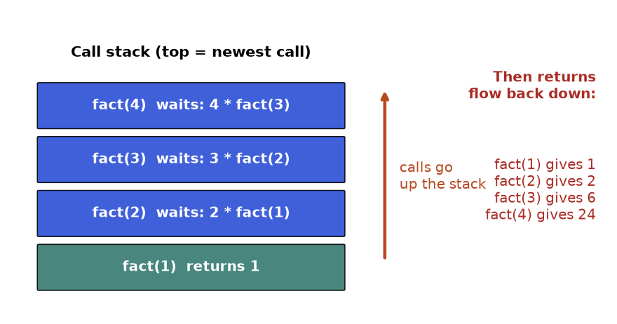
How to read it: the teal box is the base case and the only box that answers by itself. Every blue box is "waiting for the box above". The red list on the right is the order in which the boxes finish.
Here is the code, with a print on the way down and on the way back so you can see the stack live. Indentation shows the depth.
def fact(n, depth=0):
pad = " " * depth
print(pad + "call fact(" + str(n) + ")")
if n == 1: # base case
print(pad + "base case, return 1")
return 1
smaller = fact(n - 1, depth + 1) # same question, smaller input
result = n * smaller # combine
print(pad + "fact(" + str(n) + ") = " + str(n) + " * " + str(smaller) + " = " + str(result))
return result
assert fact(4) == 24call fact(4)
call fact(3)
call fact(2)
call fact(1)
base case, return 1
fact(2) = 2 * 1 = 2
fact(3) = 3 * 2 = 6
fact(4) = 4 * 6 = 24Trace table for fact(4). Read it top to bottom.
| Step | Event | Stack after the event (top on the right) |
|---|---|---|
| 1 | call fact(4) | fact(4) |
| 2 | call fact(3) | fact(4), fact(3) |
| 3 | call fact(2) | fact(4), fact(3), fact(2) |
| 4 | call fact(1), base case | fact(4), fact(3), fact(2), fact(1) |
| 5 | fact(1) returns 1 | fact(4), fact(3), fact(2) |
| 6 | fact(2) = 2 * 1 = 2 returns | fact(4), fact(3) |
| 7 | fact(3) = 3 * 2 = 6 returns | fact(4) |
| 8 | fact(4) = 4 * 6 = 24 returns | empty |
def f(n): return n * f(n - 1). It never stops, so Python raises RecursionError after about 1000 stacked calls (the default limit). Right: add if n <= 1: return 1. Also check that every recursive call moves toward the base case: f(n + 1) with base case n == 0 goes the wrong way.Let us see that error on purpose, safely. We catch it and print only its name.
import sys
def broken(n):
return n * broken(n - 1) # no base case
try:
broken(5)
except RecursionError as e:
print("caught:", type(e).__name__)
print("default limit:", sys.getrecursionlimit())caught: RecursionError
default limit: 1000The next three problems climb from easy to medium. Each one uses the same three questions.
Problem 6.1.1 (easy) Return the sum of a list of numbers using recursion, without a loop and without sum().
| Idea | The sum of a list is its first item plus the sum of the rest. The sum of an empty list is 0. |
|---|---|
| Brute force | A loop adding one by one: O(n) time, O(1) space. It is already optimal; recursion here is practice only. |
| Better approach | Recursion with an index i instead of slicing. Slicing nums[1:] copies the list each time and makes the whole thing O(n²). |
| Code | Below, tested with asserts. |
| Dry run | [3, 5, 2]: f(0) = 3 + f(1); f(1) = 5 + f(2); f(2) = 2 + f(3); f(3) = 0 (base). Back: 2, then 7, then 10. |
| Complexity | Time O(n), space O(n) because n frames are on the stack. |
| Edge cases | Empty list gives 0. One item gives that item. Negative numbers work the same. |
def total(nums, i=0):
if i == len(nums): # base case: nothing left
return 0
return nums[i] + total(nums, i + 1)
assert total([]) == 0
assert total([7]) == 7
assert total([3, 5, 2]) == 10
assert total([-4, 4, 1]) == 1
print(total([3, 5, 2]))10Problem 6.1.2 (medium) Compute x to the power n (n is a whole number, n >= 0) with far fewer multiplications than n.
| Idea | xn = (xn/2)2 when n is even, and x times that when n is odd. The problem halves each time. |
|---|---|
| Brute force | Multiply x by itself n times: O(n) multiplications. |
| Better approach | Halving: about log2 n levels. Compute the half power once and store it. Calling it twice would bring back O(n) work. |
| Code | Below, with a counter of multiplications. |
| Dry run | power(2, 10) needs power(2, 5), then power(2, 2), then power(2, 1), then power(2, 0) = 1. Back: 2, 4, then 4*4*2 = 32, then 32*32 = 1024. |
| Complexity | Time O(log n), space O(log n). |
| Edge cases | n = 0 gives 1 (even 0 to the power 0 is 1 in Python). x = 0 or 1 work. Negative n needs 1 / result. |
calls = 0
def power(x, n):
global calls
calls += 1
if n == 0:
return 1
half = power(x, n // 2) # compute once, reuse
if n % 2 == 0:
return half * half
return half * half * x
assert power(2, 10) == 1024
assert power(3, 0) == 1
assert power(5, 1) == 5
assert power(7, 13) == 7 ** 13
calls = 0
print(power(2, 1000) == 2 ** 1000, "calls:", calls)True calls: 11Problem 6.1.3 (medium) A list may contain numbers and other lists, to any depth. Return one flat list of all the numbers in their original order.
| Idea | Go through the items. If an item is a number, keep it. If an item is a list, flatten it (same question, smaller input) and keep its result. |
|---|---|
| Brute force | For a known depth of 2 or 3 you could write nested loops, but the depth is unknown, so loops cannot do it directly. |
| Better approach | Recursion matches the shape of the data. One call per list and one step per item. |
| Code | Below, tested with asserts. |
| Dry run | [1, [2, [3]], 4]: keep 1; recurse on [2, [3]]: keep 2, recurse on [3]: keep 3; back, keep 4. Result [1, 2, 3, 4]. |
| Complexity | Time O(n) for n numbers plus lists, space O(d) for depth d (plus the output). |
| Edge cases | Empty lists inside ([] gives nothing). A list nested 2000 levels deep would hit the recursion limit. |
def flatten(items):
out = []
for x in items:
if isinstance(x, list):
out.extend(flatten(x)) # smaller problem
else:
out.append(x) # base: a plain number
return out
assert flatten([]) == []
assert flatten([1, [2, [3]], 4]) == [1, 2, 3, 4]
assert flatten([[], [[]], 5]) == [5]
print(flatten([1, [2, [3, [4]]], [], 5]))[1, 2, 3, 4, 5]Going deeper
- Each frame costs memory. A Python frame holds the local variables and the place to resume. That is why depth matters: recursion has
O(depth)space even when it looks like it uses no list. - Python does not remove tail calls. Some languages turn a call in the last position (a "tail call") into a loop. Python does not, so a tail-recursive function still uses one frame per call. See 6.9 for the loop version.
- Raising the limit with
sys.setrecursionlimitonly moves the line. For depths in the tens of thousands, prefer an explicit stack (6.9).
6.2 Recursion Trees, Complexity and a Memo Preview
Real life: a company email chain. The boss asks two managers, each asks two team leads, and so on. To know how many people were bothered, you count the people in the family tree, not the length of one chain.
How to recognise the shape
- One call inside the function (like
fact): the tree is a single chain. Work is about the depth. - One call on half the input: a chain of about log2 n boxes.
- Two calls on
n - 1andn - 2: a bushy tree that doubles roughly at each level. Exponential. - A loop that calls the function inside it: the number of children is the loop size. Think "branching factor".
The famous example is Fibonacci. Each number is the sum of the two before it: fib(0) = 0, fib(1) = 1, fib(n) = fib(n-1) + fib(n-2). The tree for fib(5):
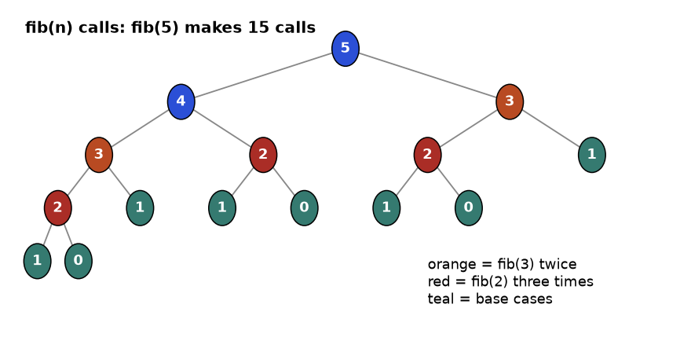
How to read it: each circle is one call, labelled with its input. Teal circles are base cases. The orange 3 appears twice and each copy builds its own subtree. The red 2 appears three times. The program does the same work again and again. Count the circles: 15 calls to get one small number.
Trace table for the calls of fib(4) in the order Python makes them (depth-first, left child first).
| Call number | Call | Depth | What happens |
|---|---|---|---|
| 1 | fib(4) | 0 | calls fib(3) first |
| 2 | fib(3) | 1 | calls fib(2) first |
| 3 | fib(2) | 2 | calls fib(1) first |
| 4 | fib(1) | 3 | base case, returns 1 |
| 5 | fib(0) | 3 | base case, returns 0; fib(2) = 1 + 0 = 1 |
| 6 | fib(1) | 2 | base case, returns 1; fib(3) = 1 + 1 = 2 |
| 7 | fib(2) | 1 | calls fib(1) |
| 8 | fib(1) | 2 | base case, returns 1 |
| 9 | fib(0) | 2 | returns 0; fib(2) = 1; fib(4) = 2 + 1 = 3 |
Nine calls for fib(4), 15 for fib(5). Let us measure how fast the number of calls grows.
count = 0
def fib(n):
global count
count += 1
if n < 2:
return n
return fib(n - 1) + fib(n - 2)
for n in [4, 5, 10, 20, 25]:
count = 0
value = fib(n)
print("n =", n, " fib =", value, " calls =", count)n = 4 fib = 3 calls = 9
n = 5 fib = 5 calls = 15
n = 10 fib = 55 calls = 177
n = 20 fib = 6765 calls = 21891
n = 25 fib = 75025 calls = 242785Going from 20 to 25 multiplied the calls by about 11. Each step of +1 in n multiplies the calls by roughly 1.6. That is exponential growth.
Reading complexity from the tree
A recurrence is a formula for the cost of a call in terms of cheaper calls. Write T(n) for "the work for input size n". Then read the tree.
| Recurrence | Tree shape | Time | Example |
|---|---|---|---|
| T(n) = T(n-1) + 1 | chain of n boxes | O(n) | fact, total |
| T(n) = T(n/2) + 1 | chain of log n boxes | O(log n) | power, binary search |
| T(n) = 2 T(n/2) + n | log n levels, each costing n in total | O(n log n) | merge sort |
| T(n) = T(n-1) + T(n-2) + 1 | bushy, depth n | O(2n) (really about 1.6n) | naive fib |
| T(n) = 2 T(n-1) + 1 | binary, depth n | O(2n) | subsets (6.3) |
| T(n) = n T(n-1) | n children, then n-1, ... | O(n!) | permutations (6.4) |
Memo preview: remember answers you already computed
Memoization means saving the result of a call in a dictionary so that a repeat call returns instantly. In Python the decorator functools.cache does it for you. This is only a preview; Chapter 9 turns it into a full method.
from functools import cache
body_runs = 0
@cache
def fib(n):
global body_runs
body_runs += 1 # counts real work, not cache hits
if n < 2:
return n
return fib(n - 1) + fib(n - 2)
print(fib(25), "body runs:", body_runs)
print(fib(90), "body runs:", body_runs)75025 body runs: 26
2880067194370816120 body runs: 91Naive fib(25) made 242,785 calls. With the cache the body ran only 26 times, once per value from 0 to 25. The tree collapsed from bushy to a single chain.
def f(i) when the result also depends on a global list that changes. The cache returns stale answers. Right: cache only pure functions (same inputs always give the same output). Also, a cache needs hashable arguments, so pass a tuple or a number, never a list.Problem 6.2.1 (medium) You climb a staircase of n steps. Each move is 1 or 2 steps. In how many different orders of moves can you reach the top?
| Idea | The last move was either 1 step (from step n-1) or 2 steps (from step n-2). So ways(n) = ways(n-1) + ways(n-2). Base: ways(0) = 1 (do nothing), ways(1) = 1. |
|---|---|
| Brute force | The plain recursion above. The tree is the same as the Fibonacci tree: O(2n) time. |
| Better approach | Cache each ways(k): only n + 1 distinct inputs, so O(n) time and O(n) space. |
| Code | Below, tested with asserts. |
| Dry run | ways(4) = ways(3) + ways(2) = 3 + 2 = 5: 1111, 112, 121, 211, 22. |
| Complexity | Time O(n), space O(n). |
| Edge cases | n = 0 gives 1; n = 1 gives 1; very large n needs an iterative loop (stack depth). |
from functools import cache
@cache
def ways(n):
if n <= 1:
return 1
return ways(n - 1) + ways(n - 2)
assert ways(0) == 1 and ways(1) == 1 and ways(2) == 2
assert ways(4) == 5
assert ways(10) == 89
print([ways(n) for n in range(1, 11)])[1, 2, 3, 5, 8, 13, 21, 34, 55, 89]Problem 6.2.2 (hard) What is the time complexity of this function? def g(n): if n <= 1: return 1; return g(n // 2) + g(n // 2) + n. Show the tree level by level, then check it by counting the calls.
| Idea | Two children, each with half the input. Level k has 2k nodes of size n / 2k. The depth is about log2 n. |
|---|---|
| Brute force | Guess "two calls means exponential". That is wrong here, because the input halves rather than shrinking by 1. |
| Better approach | Count the nodes: 1 + 2 + 4 + ... + 2log n is about 2n. Work per node is constant (one addition). So the total is O(n). (If each node did n work, as merge sort does, the sum per level would be n and the total n log n.) |
| Code | Below. |
| Dry run | n = 8: 8 -> 4,4 -> 2,2,2,2 -> eight 1s. Nodes: 1 + 2 + 4 + 8 = 15 = 2 * 8 - 1. |
| Complexity | Time O(n), space O(log n) (depth). |
| Edge cases | When n is not a power of 2, the integer division makes some branches shorter, but the bound stays O(n). |
count = 0
def g(n):
global count
count += 1
if n <= 1:
return 1
return g(n // 2) + g(n // 2) + n
for n in [1, 2, 8, 64, 1024]:
count = 0
g(n)
print("n =", n, " calls =", count)n = 1 calls = 1
n = 2 calls = 3
n = 8 calls = 15
n = 64 calls = 127
n = 1024 calls = 2047Going deeper
- The master theorem is a shortcut for recurrences of the form T(n) = a T(n/b) + f(n). The recursion tree method above gives the same answers and is easier to remember: compare the work at the top level, the work per level, and the work at the leaves; whichever dominates wins.
- Why fib is "about 1.6n" and not "2n". The tree is lopsided: the right child is always smaller than the left. The growth rate is the golden ratio, roughly 1.618. Interviewers accept
O(2n)as an upper bound.
6.3 The Backtracking Template and Subsets
Real life: walking a maze with a ball of string. At each fork you pick a path and unroll string. At a dead end you roll the string back to the last fork and try another path. The string is your
path list, rolling back is pop().Words you need first
| Word | Plain meaning |
|---|---|
| Backtracking | Recursion that builds a partial answer, and undoes the last choice to try the alternatives |
| Path | The partial answer built so far (a list) |
| Choice | One option you may add to the path at this step |
| Choose, explore, unchoose | Add the choice, recurse, remove the choice. The three-line heart of every solution |
| Pruning | Stopping early on a path that can never lead to a valid answer |
| Search space | All the answers you could possibly build; the leaves of the recursion tree |
How to recognise it
- The task says "return all", "list every", "generate all", "how many ways" with a small input (n up to about 10 to 20).
- The answer is built from a sequence of decisions (take this item or not, put this value here, move in this direction).
- There is a rule that some partial answers are invalid and can be abandoned early.
- The input limits are tiny. If n can be 100,000, backtracking is the wrong tool.
The template
Memorise this shape. Every problem in this chapter is this code with the three marked parts changed: when is the path complete, what are the choices, which choices are invalid.
def solve(items):
result = [] # all complete answers
path = [] # the partial answer being built
def backtrack(start):
# 1. Record: is the path a complete answer? (here: every path counts)
result.append(path[:]) # COPY the list, never the list itself
# 2. Loop over the choices available at this step
for i in range(start, len(items)):
# 3. Prune: skip invalid choices here (none for plain subsets)
path.append(items[i]) # choose
backtrack(i + 1) # explore, with a smaller set of choices
path.pop() # unchoose (undo)
backtrack(0)
return result
assert solve([]) == [[]]
assert solve([5]) == [[], [5]]
assert len(solve(list(range(10)))) == 1024
print(solve([1, 2, 3]))[[], [1], [1, 2], [1, 2, 3], [1, 3], [2], [2, 3], [3]]This is also the solution to "return all subsets". It takes O(n 2n) time (2n subsets, up to n items copied for each), which cannot be improved because the output itself has that size. The output order is the order the algorithm discovers answers. Trace table for solve([1, 2, 3]): follow the path column. Note how pop returns it to an earlier state.
| Step | Action | path after the action | Recorded? |
|---|---|---|---|
| 1 | enter backtrack(0) | [] | yes: [] |
| 2 | choose 1, enter backtrack(1) | [1] | yes: [1] |
| 3 | choose 2, enter backtrack(2) | [1, 2] | yes: [1, 2] |
| 4 | choose 3, enter backtrack(3) | [1, 2, 3] | yes: [1, 2, 3] |
| 5 | backtrack(3) has no choices; unchoose 3 | [1, 2] | no |
| 6 | backtrack(2) loop ends; unchoose 2 | [1] | no |
| 7 | in backtrack(1) choose 3, enter backtrack(3) | [1, 3] | yes: [1, 3] |
| 8 | unchoose 3, loop ends, unchoose 1 | [] | no |
| 9 | in backtrack(0) choose 2, enter backtrack(2) | [2] | yes: [2] |
| 10 | choose 3, enter backtrack(3) | [2, 3] | yes: [2, 3] |
| 11 | unchoose 3, loop ends, unchoose 2 | [] | no |
| 12 | in backtrack(0) choose 3, enter backtrack(3) | [3] | yes: [3] |
| 13 | unchoose 3; the loop in backtrack(0) ends | [] | done |
There is a second way to see the same search: for each item, decide "take it" or "skip it". That makes a binary tree of depth n with 2n leaves, each leaf being one subset.
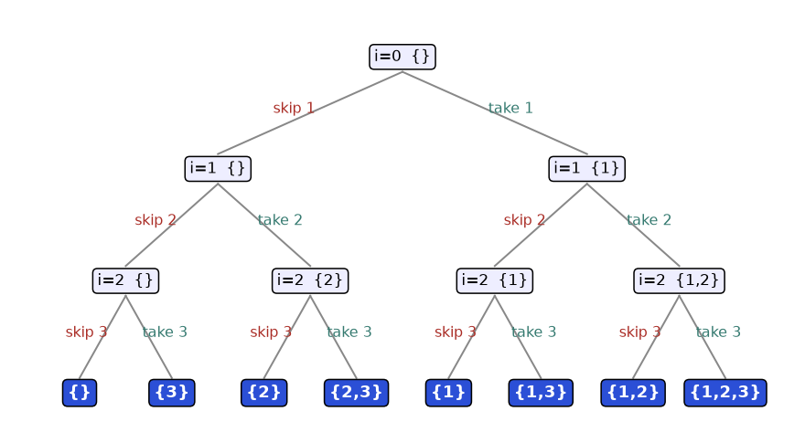
How to read it: start at the top. Each level handles one number. Going left means skip that number, going right means take it. The text in each node shows the position i and the subset so far. The blue leaves list all 23 = 8 subsets. The loop version above finds the same 8 sets, just recorded at every node instead of only the leaves.
result.append(path). The list path keeps changing, and result ends up holding the same list many times, all empty at the end. Right: result.append(path[:]) or list(path).def wrong(items):
result, path = [], []
def bt(start):
result.append(path) # BUG: same list object each time
for i in range(start, len(items)):
path.append(items[i])
bt(i + 1)
path.pop()
bt(0)
return result
print(wrong([1, 2]))[[], [], [], []]pop). Wrong: path.append(x); backtrack(...) and nothing after. The path keeps growing and later branches start from a dirty state. Right: every append is paired with a pop at the same indentation level, in the same function.Problem 6.3.1 (medium) Count the subsets of a list of positive numbers whose sum is exactly target.
| Idea | Take or skip each item. Carry the remaining target. When it hits 0, one subset is found. |
|---|---|
| Brute force | Generate all 2n subsets, sum each: O(n 2n). |
| Better approach | Do not store subsets, only count, so no copying: O(2n). Prune when the remaining target goes below 0 (all numbers are positive, so it can never recover). Chapter 9 turns this into dynamic programming. |
| Code | Below, tested with asserts. |
| Dry run | nums [2, 3, 5], target 5: take 2 (left 3), take 3 (left 0, count 1); skip 3, take 5 (left -2, prune); skip 2, skip 3, take 5 (left 0, count 2). So {2, 3} and {5}: 2 subsets. |
| Complexity | Time O(2n) worst case, space O(n). |
| Edge cases | Target 0 counts the empty subset (1). If zeros appear in the list, a zero doubles the count; the code handles that, but the pruning rule still holds (zero never makes it negative). |
def count_subsets(nums, target):
def bt(i, left):
if left < 0: # prune: overshoot
return 0
if i == len(nums):
return 1 if left == 0 else 0
take = bt(i + 1, left - nums[i])
skip = bt(i + 1, left)
return take + skip
return bt(0, target)
assert count_subsets([2, 3, 5], 5) == 2
assert count_subsets([1, 1, 1], 2) == 3
assert count_subsets([], 0) == 1
assert count_subsets([4], 3) == 0
print(count_subsets([2, 3, 5], 5), count_subsets([1, 2, 3, 4, 5], 5))2 3Problem 6.3.2 (hard) Generate every valid string of n pairs of round brackets, for example n = 3 gives ((())), (()()), (())(), ()(()), ()()().
| Idea | At each position the choices are "(" or ")". A string is valid if, in every prefix, the number of ")" never exceeds the number of "(", and the totals are equal at the end. |
|---|---|
| Brute force | Generate all 22n strings of "(" and ")" and check each. For n = 3 that is 64 strings to check, for n = 10 over a million. |
| Better approach | Prune while building: add "(" only if fewer than n were used; add ")" only if it would not exceed the "(" count. Only valid prefixes are ever explored. The number of answers is the Catalan number (1, 2, 5, 14, 42, ...). |
| Code | Below, tested with asserts. |
| Dry run | n = 2: "(" then "((" then "(()" then "(())" done. Back to "(": add ")" gives "()" then "()(" then "()()" done. Result ["(())", "()()"]. |
| Complexity | Time about O(4n / sqrt(n)) (the Catalan size times the length), space O(n) plus output. |
| Edge cases | n = 0 gives [""] (one empty string). n = 1 gives ["()"]. |
def gen_parens(n):
result = []
path = []
def bt(opened, closed):
if len(path) == 2 * n:
result.append("".join(path))
return
if opened < n: # may still open
path.append("(")
bt(opened + 1, closed)
path.pop()
if closed < opened: # may close only an open one
path.append(")")
bt(opened, closed + 1)
path.pop()
bt(0, 0)
return result
assert gen_parens(0) == [""]
assert gen_parens(1) == ["()"]
assert gen_parens(2) == ["(())", "()()"]
assert [len(gen_parens(k)) for k in range(1, 7)] == [1, 2, 5, 14, 42, 132]
print(gen_parens(3))['((()))', '(()())', '(())()', '()(())', '()()()']Going deeper
- Why copy costs matter. The
path[:]copy isO(n), so subsets costO(n 2n), notO(2n). In an interview say it once; interviewers like that you noticed. - Two equivalent shapes. The "for loop with a start index" shape records at every node. The "take or skip" shape records at the leaves. Use the loop shape when the problem sounds like "pick some items" and the decision shape when each item has a fixed small set of options, like brackets.
6.4 Permutations
Real life: a photographer lines up three friends. For seat 1 there are 3 people to choose from, for seat 2 only 2 remain, for seat 3 only 1. That is 3 × 2 × 1 = 6 photos.
How to recognise it
- Words like "arrangement", "ordering", "rearrange", "all sequences", "schedule", "in every order".
- Different orders of the same items count as different answers (unlike subsets, where {1, 2} and {2, 1} are the same).
- The answer has exactly as many items as the input.
- Count of answers is
n!for distinct items.
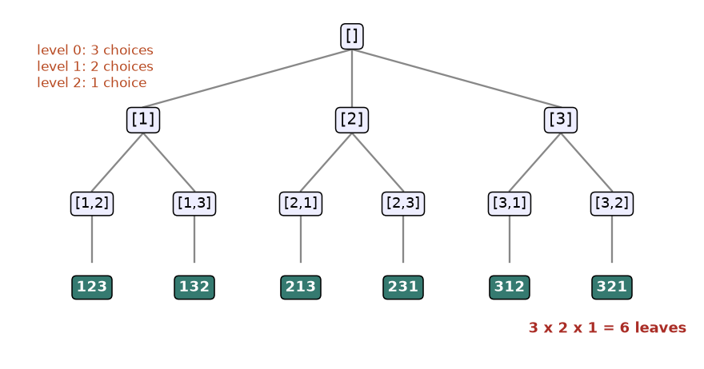
How to read it: the top node is the empty path. Each level fills the next seat. After choosing [1], only 2 and 3 are left, so there are two children. The six teal leaves are the six orderings. Unlike subsets, the number of children changes with the level, because used items are not available.
The template: a "used" marker
We need a way to know which items are already in the path. A list of booleans used answers in one step. Choose sets it to True, unchoose sets it back to False. That second line is the "undo" of the template.
def permutations(nums):
result, path = [], []
used = [False] * len(nums)
def bt():
if len(path) == len(nums): # complete answer
result.append(path[:])
return
for i in range(len(nums)): # every item is a candidate...
if used[i]: # ...unless already placed
continue
used[i] = True # choose
path.append(nums[i])
bt() # explore
path.pop() # unchoose
used[i] = False
bt()
return result
assert permutations([]) == [[]]
assert permutations([1, 2]) == [[1, 2], [2, 1]]
assert len(permutations(list(range(6)))) == 720
print(permutations([1, 2, 3]))[[1, 2, 3], [1, 3, 2], [2, 1, 3], [2, 3, 1], [3, 1, 2], [3, 2, 1]]With n items the tree has n! leaves and each answer costs up to n to copy, so time is O(n × n!) and working space O(n). Duplicates in the input need 6.6. Trace table for the first two answers. Read the used column as one bit per item.
| Step | Action | path | used (items 1, 2, 3) |
|---|---|---|---|
| 1 | start | [] | F F F |
| 2 | choose item 1 | [1] | T F F |
| 3 | item 1 is used, skip; choose item 2 | [1, 2] | T T F |
| 4 | choose item 3, length is 3: record [1, 2, 3] | [1, 2, 3] | T T T |
| 5 | unchoose 3 | [1, 2] | T T F |
| 6 | unchoose 2; next try item 3 | [1, 3] | T F T |
| 7 | choose item 2, record [1, 3, 2] | [1, 3, 2] | T T T |
| 8 | unchoose 2 and 3 and 1; try item 2 at the top | [2] | F T F |
used wrongly. Wrong: setting used[i] = False before the recursive call, or never at all. Then the same item is picked twice or no item can be picked later. Right: True before bt(), False right after, as a mirror pair around the recursive call.Problem 6.4.1 (medium) Produce all orderings without a used array and without extra lists, by swapping items inside the input list.
| Idea | At position pos, swap each later item into that position, recurse on pos + 1, then swap back. The part before pos is "already seated". |
|---|---|
| Brute force | The used version: fine, but it keeps a second list. |
| Better approach | Swapping uses only the input list. The swap back is the unchoose. |
| Code | Below, tested. |
| Dry run | [1, 2, 3], pos 0: swap(0,0) gives 1 2 3; deeper pos 1: swap(1,1) 1 2 3 record, swap(1,2) 1 3 2 record. Back at pos 0: swap(0,1) gives 2 1 3, and so on. |
| Complexity | Time O(n × n!), space O(n) stack. |
| Edge cases | The output order differs from the used version from the fifth answer on, so compare sorted results. |
def permute_swap(nums):
result = []
def bt(pos):
if pos == len(nums):
result.append(nums[:])
return
for j in range(pos, len(nums)):
nums[pos], nums[j] = nums[j], nums[pos] # choose
bt(pos + 1)
nums[pos], nums[j] = nums[j], nums[pos] # unchoose
bt(0)
return result
got = permute_swap([1, 2, 3])
assert sorted(got) == [[1,2,3],[1,3,2],[2,1,3],[2,3,1],[3,1,2],[3,2,1]]
print(got)[[1, 2, 3], [1, 3, 2], [2, 1, 3], [2, 3, 1], [3, 2, 1], [3, 1, 2]]Problem 6.4.2 (hard) Count the orderings of the numbers 1 to n where, at every position i (counting from 1), the number placed there either divides i or is divisible by i.
| Idea | Fill positions 1 to n in order. Choose a number for position i only if it is unused and satisfies the divisibility rule. Count when all positions are filled. |
|---|---|
| Brute force | Generate all n! permutations and test each: for n = 10 that is 3,628,800 permutations. |
| Better approach | Check the rule before placing the number. Bad prefixes die at once (pruning), so far fewer than n! nodes are visited. |
| Code | Below, tested with asserts. |
| Dry run | n = 3: position 1 accepts any number. Orders 1 2 3, 2 1 3, 3 2 1 pass. 1 3 2 fails at position 2 (3 and 2 do not divide each other). So the count is 3. |
| Complexity | Worst case O(n!), but pruning makes it practical for n up to about 15. |
| Edge cases | n = 1 gives 1. Position 1 is always fine, because 1 divides everything. |
def count_arrangements(n):
used = [False] * (n + 1)
def bt(pos):
if pos > n:
return 1
total = 0
for v in range(1, n + 1):
if used[v]:
continue
if v % pos != 0 and pos % v != 0: # prune
continue
used[v] = True
total += bt(pos + 1)
used[v] = False
return total
return bt(1)
assert count_arrangements(1) == 1
assert count_arrangements(2) == 2
assert count_arrangements(3) == 3
print([count_arrangements(n) for n in range(1, 9)])[1, 2, 3, 8, 10, 36, 41, 132]Going deeper
- Python has this built in.
itertools.permutations(nums)yields tuples. In an interview, write the backtracking by hand; in real code, use the library. - Next permutation. To step from one ordering to the next in dictionary order without generating all, there is a linear-time algorithm; see the practice set.
6.5 Combinations, Combination Sum and Pruning
Real life: picking a 2-person team from 4 colleagues. "Asha and Ben" is the same team as "Ben and Asha". If you always list people in the order they stand in the office, you write each team exactly once.
How to recognise it
- "Choose k from n", "all groups of size k", "combinations".
- "Find all groups that add up to a target". Often the number of items in the group is not fixed.
- Order does not matter: [2, 3] and [3, 2] are the same answer.
- Each candidate may be used once, or many times (read the statement for this).
The only change from subsets
Combinations are subsets with a rule for when the path counts as an answer (length equals k, or the sum equals the target). The loop still starts at start, which is what prevents [2, 1] after [1, 2]. If the same item may be reused, recurse with i; if each item may be used once, recurse with i + 1.
def combine(n, k):
result, path = [], []
def bt(start):
if len(path) == k: # complete answer
result.append(path[:])
return
# Prune: we still need (k - len(path)) items, so the last useful
# start is n - (k - len(path)) + 1. Beyond that there are too few left.
for i in range(start, n - (k - len(path)) + 2):
path.append(i)
bt(i + 1)
path.pop()
bt(1)
return result
print(combine(4, 2))[[1, 2], [1, 3], [1, 4], [2, 3], [2, 4], [3, 4]]Trace table for combine(4, 2). Notice that the top-level loop stops at 3, never trying to start with 4.
| Step | Action | path | Recorded? |
|---|---|---|---|
| 1 | top level: need 2 more, so i runs 1 to 3 (4 - 2 + 1 = 3) | [] | no |
| 2 | choose 1; need 1 more, so i runs 2 to 4 | [1] | no |
| 3 | choose 2, length is 2 | [1, 2] | yes |
| 4 | unchoose 2, choose 3 | [1, 3] | yes |
| 5 | unchoose 3, choose 4 | [1, 4] | yes |
| 6 | unchoose 4 and 1, choose 2; i runs 3 to 4 | [2] | no |
| 7 | choose 3 | [2, 3] | yes |
| 8 | unchoose 3, choose 4 | [2, 4] | yes |
| 9 | unchoose 4 and 2, choose 3; i runs 4 to 4 | [3] | no |
| 10 | choose 4 | [3, 4] | yes |
| 11 | unchoose; top loop would reach i = 4 but the bound is 3, so it ends | [] | done |
start. Wrong: for i in range(1, n + 1) inside the recursion. You build [1, 2] and also [2, 1]: that is permutations, not combinations, and the answer count is wrong (12 instead of 6 for n = 4, k = 2). Right: for i in range(start, ...) and recurse with i + 1.Combination sum, drawn
Now the classic: given distinct positive numbers, list every group that adds up to a target, where a number may be reused. Here is the tree for candidates 2, 3, 5 and target 5. Each edge adds a number. The label in each box is the sum still needed.
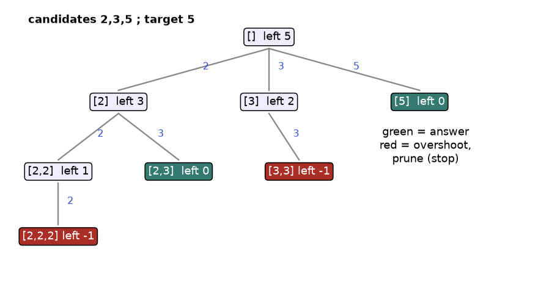
How to read it: from [] with 5 left, adding 2 leaves 3 left. From [2] we may add 2 again (reuse) or 3. [2, 3] reaches 0 left, so it is an answer. [2, 2, 2] has -1 left: too much, so we stop. Because the candidates are sorted, once one candidate overshoots, all the larger ones overshoot too, so we can stop the whole loop. That is pruning.
Problem 6.5.1 (easy) List all combinations of k numbers chosen from 1 to n. Show how much work the pruning bound saves for n = 10, k = 8.
| Idea | The template above. Count recursive calls with and without the upper bound. |
|---|---|
| Brute force | Generate all subsets of 1..n and keep those of size k: 2n subsets. |
| Better approach | Stop each path at length k, and stop looping when too few numbers remain for the rest of the path. |
| Code | Below: two versions that count calls. |
| Dry run | See the trace table for n = 4, k = 2: 6 answers. |
| Complexity | Answers: n choose k. Time O(k × C(n, k)), space O(k). |
| Edge cases | k = 0 gives [[]]. k = n gives one answer. k > n gives none. |
from math import comb
def count_calls(n, k, prune):
calls = 0
found = 0
path = []
def bt(start):
nonlocal calls, found
calls += 1
if len(path) == k:
found += 1
return
stop = n - (k - len(path)) + 2 if prune else n + 1
for i in range(start, stop):
path.append(i)
bt(i + 1)
path.pop()
bt(1)
return found, calls
assert count_calls(4, 2, True)[0] == comb(4, 2) == 6
print("no prune:", count_calls(10, 8, False))
print("pruned: ", count_calls(10, 8, True))no prune: (45, 1013)
pruned: (45, 165)Both versions find the same 45 answers. The plain one makes 1013 calls and the pruned one only 165, because it never starts a path that cannot reach length 8.
Problem 6.5.2 (medium) Given distinct positive integers and a target, return all combinations that sum to the target. A number can be used any number of times.
| Idea | Loop over candidates from start. Choose one, subtract it from the remaining target, and recurse with the same index (reuse allowed). Record when the remaining target is 0. |
|---|---|
| Brute force | Try every multiset of numbers up to length target / smallest and test sums. Huge. |
| Better approach | Sort the candidates. When a candidate is larger than the remaining target, break, since all later ones are larger too. The recursion depth is at most target / smallest. |
| Code | Below, tested with asserts. |
| Dry run | [2, 3, 5], target 5. Choose 2 (3 left), 2 again (1 left): 2 is too big, break. Back, choose 3 from [2] at index 1: 0 left, record [2, 3]. Back to top, choose 3 (2 left): 3 too big, break; choose 5 (0 left), record [5]. Result [[2, 3], [5]]. |
| Complexity | Time roughly O(NT/M) for N candidates, target T, smallest M; space O(T/M) depth. |
| Edge cases | Target smaller than all candidates gives []. A candidate equal to the target is its own answer. |
def combination_sum(candidates, target):
candidates = sorted(candidates)
result, path = [], []
def bt(start, left):
if left == 0:
result.append(path[:])
return
for i in range(start, len(candidates)):
c = candidates[i]
if c > left: # prune: this and all later are too big
break
path.append(c)
bt(i, left - c) # i, not i + 1: reuse allowed
path.pop()
bt(0, target)
return result
assert combination_sum([2, 3, 5], 5) == [[2, 3], [5]]
assert combination_sum([2], 1) == []
assert combination_sum([7], 7) == [[7]]
assert combination_sum([2, 3, 6, 7], 7) == [[2, 2, 3], [7]]
print(combination_sum([2, 3, 5], 8))[[2, 2, 2, 2], [2, 3, 3], [3, 5]]i + 1 when numbers may repeat (you miss [2, 2, 3]), or recursing with i when each number may be used once (you reuse). Right: read the statement and write the choice in the call: bt(i, ...) for reuse, bt(i + 1, ...) for once.break on an unsorted list. Wrong: if c > left: break with candidates [5, 2, 3]. The 5 stops the loop and 2 and 3 are never tried. Right: sort first, or use continue (correct but slower).Going deeper
- Where pruning comes from. There are three habits: a bound (sum or length too large), a feasibility check (too few items left), and a validity check (the new choice breaks a rule, as in N-Queens in 6.8). Name which one you use when you explain your solution.
- Stronger pruning with bounds. Optimisation versions ("find the best group") use branch and bound: prune when even the best possible completion cannot beat the best answer found so far.
6.6 Handling Duplicates in the Input
Real life: a lunch menu has two identical burgers. Choosing "burger A then salad" or "burger B then salad" gives the same meal. A waiter who treats the two burgers as one item prints each meal once.
How to recognise it
- The statement says the input "may contain duplicates" and the answer must be "unique" or "without duplicate groups".
- You get repeated answers like [1, 2] twice when you run the basic template.
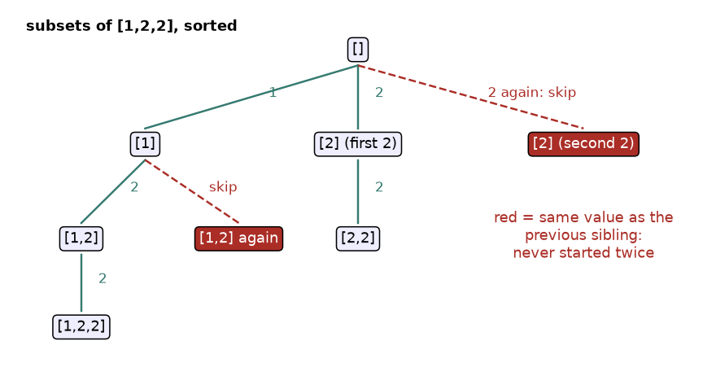
How to read it: the green solid edges are explored. At the root, there are two 2s in the list. The first 2 is allowed to start a branch. The second 2 would start a branch giving exactly the same subsets, so it is skipped (red dashed). Inside [1] the same thing happens. Notice that [2, 2] is still found: the second 2 is allowed deeper, where it is the first choice of its own level.
The rule, in one line
After sorting, inside the loop add: if i > start and nums[i] == nums[i - 1]: continue. Read it as: "this value is the same as the one I just tried at this level, and it is not the first item of this level".
def subsets_unique(nums):
nums = sorted(nums) # equal values become neighbours
result, path = [], []
def bt(start):
result.append(path[:])
for i in range(start, len(nums)):
if i > start and nums[i] == nums[i - 1]:
continue # same value already tried at this level
path.append(nums[i])
bt(i + 1)
path.pop()
bt(0)
return result
assert subsets_unique([]) == [[]]
assert subsets_unique([3, 3, 3]) == [[], [3], [3, 3], [3, 3, 3]]
assert len(subsets_unique([4, 4, 1, 4])) == 8
print(subsets_unique([2, 1, 2]))[[], [1], [1, 2], [1, 2, 2], [2], [2, 2]]With this rule, [2, 1, 2] gives 6 distinct subsets instead of 8. Trace table for the sorted input [1, 2, 2], showing the check. Index positions are 0, 1, 2.
| Step | start | i | Check i > start and equal to previous? | Action | path |
|---|---|---|---|---|---|
| 1 | 0 | - | - | record | [] |
| 2 | 0 | 0 | 0 > 0 is false | choose 1, record | [1] |
| 3 | 1 | 1 | 1 > 1 is false | choose 2, record | [1, 2] |
| 4 | 2 | 2 | 2 > 2 is false | choose 2, record | [1, 2, 2] |
| 5 | 1 | 2 | 2 > 1 true and 2 = 2 true | skip | [1] |
| 6 | 0 | 1 | 1 > 0 true but 2 differs from 1 | choose 2, record | [2] |
| 7 | 2 | 2 | 2 > 2 is false | choose 2, record | [2, 2] |
| 8 | 0 | 2 | 2 > 0 true and 2 = 2 true | skip | [] |
i > 0 instead of i > start, or forgetting to sort. With i > 0 you also skip the second 2 deeper in the tree, so valid answers such as [1, 2, 2] vanish. Without sorting, equal values are not neighbours and the check never fires. See the output of the buggy version below.def buggy(nums):
nums = sorted(nums)
result, path = [], []
def bt(start):
result.append(path[:])
for i in range(start, len(nums)):
if i > 0 and nums[i] == nums[i - 1]: # BUG: should be i > start
continue
path.append(nums[i])
bt(i + 1)
path.pop()
bt(0)
return result
print(buggy([1, 2, 2]))[[], [1], [1, 2], [2]]Problem 6.6.1 (medium) Return all distinct orderings of a list that may contain repeated numbers, for example [1, 1, 2] has only 3 distinct orderings.
| Idea | Sort. Use the used array from 6.4. Skip a value if it equals the previous value and that previous copy is not currently in the path. This forces equal copies to be placed left to right, in order. |
|---|---|
| Brute force | Generate all n! permutations, put them in a set. For [1, 1, 2, 2, 3, 3] that is 720 generated and 90 kept. |
| Better approach | The rule prevents the duplicates from ever being built. |
| Code | Below, tested with asserts. |
| Dry run | [1, 1, 2]: at seat 1, index 0 (value 1) is chosen. Index 1 (value 1) has an equal previous item that is unused, so it is skipped at this seat. Index 2 is chosen. So seat 1 is 1 or 2 only, not 1 twice. |
| Complexity | Time O(n × n!) worst case, space O(n). |
| Edge cases | All equal values give one answer. A single item gives one answer. |
def permutations_unique(nums):
nums = sorted(nums)
result, path = [], []
used = [False] * len(nums)
def bt():
if len(path) == len(nums):
result.append(path[:])
return
for i in range(len(nums)):
if used[i]:
continue
# equal twin to the left is still unused: placing this one would repeat an answer
if i > 0 and nums[i] == nums[i - 1] and not used[i - 1]:
continue
used[i] = True
path.append(nums[i])
bt()
path.pop()
used[i] = False
bt()
return result
assert permutations_unique([1, 1, 2]) == [[1, 1, 2], [1, 2, 1], [2, 1, 1]]
assert permutations_unique([5, 5]) == [[5, 5]]
assert len(permutations_unique([1, 1, 2, 2, 3, 3])) == 90
print(permutations_unique([2, 1, 1]))[[1, 1, 2], [1, 2, 1], [2, 1, 1]]Problem 6.6.2 (hard) Candidates may repeat, and each candidate (each position in the list) may be used at most once. Return all distinct groups that sum to a target.
| Idea | Combination sum (6.5) with i + 1 for single use, plus the duplicate skip rule from this section, plus the sorted break prune. |
|---|---|
| Brute force | Generate all subsets, keep the ones that sum correctly, remove repeats with a set: O(n 2n). |
| Better approach | Three cuts together: overshoot (break), duplicates (continue), single use (i + 1). |
| Code | Below, tested with asserts. |
| Dry run | [1, 1, 2, 5], target 4. Choose 1 (3 left). Choose the second 1, which is allowed because it is the first choice at its own level (2 left). Choose 2 (0 left): record [1, 1, 2]. Back one level, choose 2 instead of the second 1: [1, 2] has 1 left, and 5 breaks. At the top level the second 1 repeats the first 1, so it is skipped. Starting with 2 leaves 2, and 5 breaks. Result [[1, 1, 2]]. |
| Complexity | Time O(2n) worst case, space O(n). |
| Edge cases | Target unreachable gives []. All items equal to the target give a single answer [[t]]. |
def combination_sum2(nums, target):
nums = sorted(nums)
result, path = [], []
def bt(start, left):
if left == 0:
result.append(path[:])
return
for i in range(start, len(nums)):
if nums[i] > left: # too big: stop the loop
break
if i > start and nums[i] == nums[i - 1]: # repeat at this level
continue
path.append(nums[i])
bt(i + 1, left - nums[i]) # once only
path.pop()
bt(0, target)
return result
assert combination_sum2([1, 1, 2, 5], 4) == [[1, 1, 2]]
assert combination_sum2([2, 5, 2, 1, 2], 5) == [[1, 2, 2], [5]]
assert combination_sum2([3, 3, 3], 3) == [[3]]
assert combination_sum2([4], 3) == []
print(combination_sum2([10, 1, 2, 7, 6, 1, 5], 8))[[1, 1, 6], [1, 2, 5], [1, 7], [2, 6]]Going deeper
- Why the used-flag rule works for permutations. Among equal values we force a fixed order: the second copy can only be placed once the first copy is already in the path. Each distinct ordering then arises exactly once.
- Counting without generating. The number of distinct orderings of a multiset is n! divided by the factorial of each repeat count. For [1, 1, 2, 2, 3, 3] that is 720 / (2 × 2 × 2) = 90, matching the assert above.
- Set of tuples as a fallback. In an interview, if you cannot remember the rule, say "I can dedupe with a set of tuples, then I will show the sorted skip rule". That is a clean path from brute force to the better method.
6.7 Backtracking on Strings: Letter Combinations, Palindrome Partitions and IP Addresses
Real life: an old phone keypad. Typing 2 then 3 could mean "ad", "ae", "af", "bd" and so on, because key 2 stands for a, b or c and key 3 for d, e or f. A spell checker tries all nine and keeps real words.
How to recognise it
- Letter-style: every position has its own small list of options, and the answers are all the strings made by choosing one option per position. The answer count is the product of the option counts.
- Cut-style: "split the string into pieces such that every piece satisfies a rule" (palindromes, valid numbers, dictionary words). The choice is the length of the next piece.
- The input length is small (about 15 to 20 characters at most for cut-style problems).
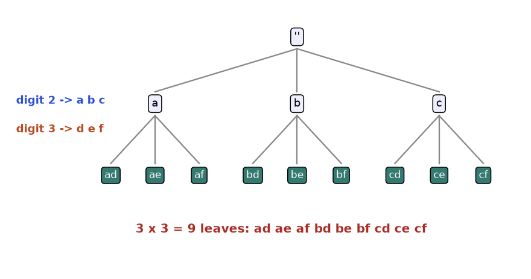
How to read it: the tree is as deep as the number of digits. The first level has three children (a, b, c), and each of those has three children (d, e, f). Nine leaves means 3 × 3 combinations. The tree is wide but shallow.
Problem 6.7.1 (easy) Given a string of digits 2 to 9, return all letter strings it could spell on a phone keypad (2 = abc, 3 = def, 4 = ghi, 5 = jkl, 6 = mno, 7 = pqrs, 8 = tuv, 9 = wxyz). An empty input gives an empty list.
| Idea | Position i is the digit being decoded. The choices are the letters of that digit. When the path is as long as the input, record it. |
|---|---|
| Brute force | Nested loops, one per digit. That only works if you know the number of digits in advance. |
| Better approach | Recursion supplies "one loop per digit" for any length. |
| Code | Below, tested with asserts. |
| Dry run | "23": path [] at i = 0; choose a; at i = 1 choose d, record "ad"; unchoose d, choose e, record "ae"; f gives "af". Back, unchoose a, choose b, and so on. Total 9. |
| Complexity | Time O(4n × n) worst case (digits 7 and 9 have 4 letters), space O(n) plus output. |
| Edge cases | Empty string returns [] (not [""]). One digit returns its letters. |
KEYS = {"2": "abc", "3": "def", "4": "ghi", "5": "jkl",
"6": "mno", "7": "pqrs", "8": "tuv", "9": "wxyz"}
def letter_combinations(digits):
if not digits:
return []
result, path = [], []
def bt(i):
if i == len(digits):
result.append("".join(path))
return
for ch in KEYS[digits[i]]:
path.append(ch) # choose
bt(i + 1) # explore
path.pop() # unchoose
bt(0)
return result
assert letter_combinations("") == []
assert letter_combinations("2") == ["a", "b", "c"]
assert len(letter_combinations("79")) == 16
assert letter_combinations("23") == ["ad", "ae", "af", "bd", "be", "bf", "cd", "ce", "cf"]
print(letter_combinations("23"))['ad', 'ae', 'af', 'bd', 'be', 'bf', 'cd', 'ce', 'cf']Problem 6.7.2 (medium) Split a string into pieces so that every piece is a palindrome. Return all ways.
| Idea | At position start, try every end position end. If s[start:end] is a palindrome, choose it as a piece and continue from end. When start reaches the end of the string, record the pieces. |
|---|---|
| Brute force | Try every set of cut positions (2n-1 ways) and test each piece. |
| Better approach | Test the piece as soon as it is cut. A non-palindrome piece prunes everything after it. (A table of palindrome flags, Chapter 9, makes the test O(1).) |
| Code | Below, tested with asserts. |
| Dry run | "aab": cut "a" (palindrome), then "a", then "b", start reaches 3: record [a, a, b]. Back: from start 1, "ab" is not a palindrome. Back to start 0: cut "aa", then "b": record [aa, b]. Cut "aab": not a palindrome. Result [[a, a, b], [aa, b]]. |
| Complexity | Time O(n 2n) worst case (a string of one repeated letter), space O(n). |
| Edge cases | One letter gives [[letter]]. A string of all the same letter gives 2n-1 answers. |
Trace table for "aab".
| Step | start | Piece tried | Palindrome? | path after |
|---|---|---|---|---|
| 1 | 0 | "a" | yes, choose | [a] |
| 2 | 1 | "a" | yes, choose | [a, a] |
| 3 | 2 | "b" | yes, choose; start becomes 3, record | [a, a, b] |
| 4 | 2 | unchoose "b"; no longer piece | - | [a, a] |
| 5 | 1 | "ab" | no, skip | [a] |
| 6 | 0 | "aa" | yes, choose | [aa] |
| 7 | 2 | "b" | yes, choose; record | [aa, b] |
| 8 | 0 | "aab" | no, skip | [] |
def palindrome_partitions(s):
result, path = [], []
def bt(start):
if start == len(s): # all characters used
result.append(path[:])
return
for end in range(start + 1, len(s) + 1):
piece = s[start:end]
if piece != piece[::-1]: # prune: not a palindrome
continue
path.append(piece)
bt(end)
path.pop()
bt(0)
return result
assert palindrome_partitions("a") == [["a"]]
assert palindrome_partitions("aab") == [["a", "a", "b"], ["aa", "b"]]
assert len(palindrome_partitions("aaaa")) == 8
print(palindrome_partitions("aab"))
print(palindrome_partitions("abba"))[['a', 'a', 'b'], ['aa', 'b']]
[['a', 'b', 'b', 'a'], ['a', 'bb', 'a'], ['abba']]Problem 6.7.3 (hard) A string of digits is given. Insert three dots to make a valid IPv4 address (four parts, each between 0 and 255, no leading zeros except the single digit "0"). Return all valid addresses.
| Idea | Cut-style: choose the length (1, 2 or 3) of the next part. Four parts must use all the characters. |
|---|---|
| Brute force | Try every triple of dot positions: C(n - 1, 3) ways, then validate each. |
| Better approach | Validate each part when cutting it. Prune if the remaining characters cannot fill the remaining parts: the rest must be between 1 and 3 characters per missing part. |
| Code | Below, tested with asserts. |
| Dry run | "25525511135": parts 255, 255, 11, 135 uses all 11 characters: valid. Parts 255, 255, 111, 35 also valid. A part "025" is rejected for its leading zero. |
| Complexity | At most 34 = 81 paths, so O(1) for a fixed 4 parts. |
| Edge cases | Fewer than 4 or more than 12 digits give []. "0000" gives only 0.0.0.0. |
def restore_ips(s):
result, parts = [], []
def valid(p):
if len(p) > 1 and p[0] == "0": # no leading zero
return False
return int(p) <= 255
def bt(start):
left_parts = 4 - len(parts)
left_chars = len(s) - start
if left_chars < left_parts or left_chars > 3 * left_parts:
return # prune: impossible to finish
if left_parts == 0:
result.append(".".join(parts))
return
for size in (1, 2, 3):
p = s[start:start + size]
if len(p) < size or not valid(p):
continue
parts.append(p)
bt(start + size)
parts.pop()
bt(0)
return result
assert restore_ips("25525511135") == ["255.255.11.135", "255.255.111.35"]
assert restore_ips("0000") == ["0.0.0.0"]
assert restore_ips("111") == []
assert restore_ips("1111111111111") == []
print(restore_ips("101023"))['1.0.10.23', '1.0.102.3', '10.1.0.23', '10.10.2.3', '101.0.2.3'][""] for empty digits, or forgetting the empty case. With the "record when the path is full" rule, empty input records one empty string. Many problems define the answer as an empty list. Read the statement and add if not digits: return [] as the first line.Going deeper
- Cut-style generalises to word break. "Split the string into dictionary words" is the same code with
piece in wordsas the test. Listing all splits is backtracking, only counting or testing is dynamic programming (Chapter 9). - Generators. If the caller needs only the first answer, write the backtracking as a generator with
yieldand stop early; this avoids building the whole list.
6.8 Grids and Boards: Word Search, N-Queens and Sudoku Awareness
Real life: finding a word in a letter puzzle with your finger: you slide to a neighbour, and if the path fails, you slide back. You are not allowed to reuse a cell in the same word, so you need a mark that means "my finger is here already".
How to recognise it
- A 2D grid and a path or placement: "does the word exist in the grid", "count the ways to place pieces", "fill the board".
- A cell may not be reused in one path (needs a visited mark that is undone on the way back).
- The constraint is local and can be checked at once (same row, column, diagonal, box).
Word search
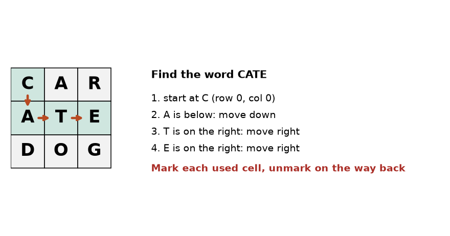
How to read it: the green cells are the path, the orange arrows the moves. The algorithm tries the four neighbours in a fixed order (down, right, up, left). It meets D (below A) and O (below T), which do not match, and backs away from each before it goes right.
Trace table for the word CATE, start cell row 0, column 0.
| Step | Cell | Letter vs wanted | Result |
|---|---|---|---|
| 1 | (0,0) | C vs C (index 0) | match, mark it, try neighbours |
| 2 | (1,0), below | A vs A (index 1) | match, mark it, try neighbours |
| 3 | (2,0), below | D vs T (index 2) | no match, return False |
| 4 | (1,1), right | T vs T (index 2) | match, mark it, try neighbours |
| 5 | (2,1), below | O vs E (index 3) | no match, return False |
| 6 | (1,2), right | E vs E (index 3, the last) | match and last index: return True |
Problem 6.8.1 (medium) Given a grid of letters and a word, say whether the word can be traced through neighbouring cells (up, down, left, right), using each cell at most once.
| Idea | Try every cell as a start. From a cell that matches the current letter, mark it, try the four neighbours for the next letter, then unmark it (backtrack). |
|---|---|
| Brute force | Generate all paths of length len(word) from every cell: about 4 × 3L-1 paths each, then compare letters at the end. |
| Better approach | Stop the moment a letter does not match. Wrong branches die after one step. Marking by temporarily changing the cell to "#" saves a separate visited array. |
| Code | Below, tested with asserts. |
| Dry run | See the trace table for CATE. The word "CAB" fails: C, A, then no B in the neighbours, then every other start fails too. |
| Complexity | Time O(R × C × 3L) for R rows, C columns, word length L; space O(L) depth. |
| Edge cases | One-letter word. Word longer than the number of cells. A word that would reuse a cell, such as "ABA" in a single row "AB". |
def exists(grid, word):
rows, cols = len(grid), len(grid[0])
moves = [(1, 0), (0, 1), (-1, 0), (0, -1)] # down, right, up, left
def dfs(r, c, k):
# check bounds FIRST: a negative index would wrap around in Python
if r < 0 or r >= rows or c < 0 or c >= cols:
return False
if grid[r][c] != word[k]:
return False
if k == len(word) - 1:
return True
saved = grid[r][c]
grid[r][c] = "#" # choose: mark visited
for dr, dc in moves:
if dfs(r + dr, c + dc, k + 1):
grid[r][c] = saved # leave the grid unchanged
return True
grid[r][c] = saved # unchoose
return False
return any(dfs(r, c, 0) for r in range(rows) for c in range(cols))
g = [list("CAR"), list("ATE"), list("DOG")]
assert exists(g, "CATE") and exists(g, "CAR") and exists(g, "DOG")
assert not exists(g, "CAB")
assert not exists([list("AB")], "ABA")
assert g == [list("CAR"), list("ATE"), list("DOG")]
print(exists(g, "CATE"), exists(g, "CAB"), exists([list("AB")], "ABA"))True False FalseBBC / BAA the word AABC exists (A at row 1 column 2, A at row 1 column 1, B above it, C to its right). The buggy version below misses it because its first, failed attempt from the middle A leaves cells marked.def exists_buggy(grid, word):
rows, cols = len(grid), len(grid[0])
moves = [(1, 0), (0, 1), (-1, 0), (0, -1)]
def dfs(r, c, k):
if r < 0 or r >= rows or c < 0 or c >= cols or grid[r][c] != word[k]:
return False
if k == len(word) - 1:
return True
grid[r][c] = "#"
for dr, dc in moves:
if dfs(r + dr, c + dc, k + 1):
return True
return False # BUG: forgot to restore the cell
return any(dfs(r, c, 0) for r in range(rows) for c in range(cols))
print(exists_buggy([list("BBC"), list("BAA")], "AABC"))Falsegrid[-1] is the last row, not an error. So grid[r][c] with r = -1 quietly reads the wrong cell and the path "wraps around" the grid. Always test 0 <= r < rows and 0 <= c < cols first.N-Queens
Real life: seating guests at a round of tables where some pairs must not see each other. You seat one guest per table and as soon as someone is in view of a rival, you re-seat the last person.
A queen attacks along its row, column and both diagonals. Place exactly one queen in each row, so rows never clash. We only need to remember three things: which columns are used, which down-right diagonals (cells with the same row - col), and which down-left diagonals (same row + col). Three sets give an O(1) safety test.
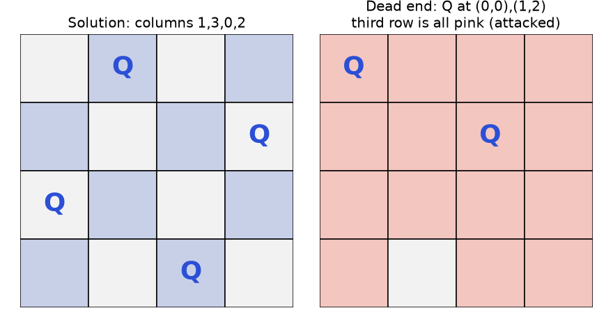
How to read it: on the right, queens at row 0 column 0 and row 1 column 2 attack every square of row 2 (pink). The search cannot continue, so it removes the queen of row 1 and tries its next column. This is why backtracking beats trying all boards: dead ends are found after two queens, not eight.
Trace table for n = 4. A cell written (r, c) is row r, column c, counting from 0.
| Step | Try | Safe? | Queens now |
|---|---|---|---|
| 1 | (0,0) | yes | (0,0) |
| 2 | (1,0), (1,1) | no: same column, then same diagonal | (0,0) |
| 3 | (1,2) | yes | (0,0), (1,2) |
| 4 | (2,0), (2,1), (2,2), (2,3) | all attacked: dead end, remove (1,2) | (0,0) |
| 5 | (1,3) | yes | (0,0), (1,3) |
| 6 | (2,0) no (column), (2,1) | yes | (0,0), (1,3), (2,1) |
| 7 | row 3: all four attacked: dead end, remove (2,1) | - | (0,0), (1,3) |
| 8 | (2,2) attacked by (0,0) diagonal, (2,3) same column as (1,3) | dead end: remove (1,3), then (0,0) | empty |
| 9 | (0,1) | yes | (0,1) |
| 10 | (1,3) | yes (earlier columns 0, 1, 2 are attacked) | (0,1), (1,3) |
| 11 | (2,0) | yes | (0,1), (1,3), (2,0) |
| 12 | (3,2) | yes: row 3 complete, record solution | (0,1), (1,3), (2,0), (3,2) |
Problem 6.8.2 (hard) Count the ways to place n queens on an n by n board so no two attack each other, and print one board for n = 4.
| Idea | One queen per row. At row r, try each column c; it is safe if c, r - c and r + c are not already in the three sets. |
|---|---|
| Brute force | Choose any n of the n² squares: C(64, 8) = 4,426,165,368 boards for n = 8. Test each. |
| Better approach | One queen per row cuts it to nn placements (16,777,216 for n = 8). The safety check cuts it to a small fraction: the code below reports how many nodes the whole search tree has for n = 8. |
| Code | Below, tested with asserts against the known counts for n = 1 to 8. |
| Dry run | See the 12-step trace for n = 4: 2 solutions in total. |
| Complexity | Time is below O(n!) and exact bound is hard; space O(n). |
| Edge cases | n = 1 gives 1. n = 2 and n = 3 give 0. Board output must be built from the saved columns. |
def solve_n_queens(n):
solutions = []
cols, diag1, diag2 = set(), set(), set()
placed = [] # placed[r] = column of the queen in row r
nodes = 0
def bt(r):
nonlocal nodes
nodes += 1
if r == n:
solutions.append(placed[:])
return
for c in range(n):
if c in cols or (r - c) in diag1 or (r + c) in diag2:
continue # prune: attacked square
cols.add(c); diag1.add(r - c); diag2.add(r + c) # choose
placed.append(c)
bt(r + 1) # explore
placed.pop()
cols.remove(c); diag1.remove(r - c); diag2.remove(r + c) # unchoose
bt(0)
return solutions, nodes
def draw(cols_of_queens):
n = len(cols_of_queens)
return ["".join("Q" if c == q else "." for c in range(n)) for q in cols_of_queens]
counts = [len(solve_n_queens(n)[0]) for n in range(1, 9)]
assert counts == [1, 0, 0, 2, 10, 4, 40, 92]
sols, nodes = solve_n_queens(4)
assert sols == [[1, 3, 0, 2], [2, 0, 3, 1]]
print("counts n=1..8:", counts)
print("nodes visited for n=8:", solve_n_queens(8)[1])
for row in draw(sols[0]):
print(row)counts n=1..8: [1, 0, 0, 2, 10, 4, 40, 92]
nodes visited for n=8: 2057
.Q..
...Q
Q...
..Q.So there are 92 solutions on a normal chessboard, found by visiting a few thousand nodes instead of billions of boards.
r + c for both diagonals, or storing only one diagonal set. Two squares share a down-right diagonal when r - c is equal, and a down-left diagonal when r + c is equal. Right: keep two separate sets. With a single set you reject safe squares or accept attacked ones, and the count for n = 4 is not 2.Sudoku awareness
Sudoku is the same idea on a 9 by 9 board. The board is a grid of 81 cells, some filled. Each row, column and 3 by 3 box must hold the digits 1 to 9 once. The backtracking: find the next empty cell, try the digits 1 to 9, skip any digit already in that cell's row, column or box (pruning), place it, recurse, and clear the cell if the recursion fails. You are not expected to memorise a solver for most interviews, but you must be able to describe it in two sentences and recognise it as "N-Queens with a different safety test". A compact version follows. A row of the puzzle is written as a string with dots for empty cells.
puzzle = ["53..7....", "6..195...", ".98....6.", "8...6...3", "4..8.3..1",
"7...2...6", ".6....28.", "...419..5", "....8..79"]
board = [[0 if ch == "." else int(ch) for ch in row] for row in puzzle]
def ok(r, c, d):
if any(board[r][j] == d for j in range(9)): # row
return False
if any(board[i][c] == d for i in range(9)): # column
return False
br, bc = 3 * (r // 3), 3 * (c // 3) # top-left of the 3x3 box
return all(board[br + i][bc + j] != d for i in range(3) for j in range(3))
def solve():
for r in range(9):
for c in range(9):
if board[r][c] == 0: # next empty cell
for d in range(1, 10):
if ok(r, c, d):
board[r][c] = d # choose
if solve(): # explore
return True
board[r][c] = 0 # unchoose
return False # no digit fits: backtrack
return True # no empty cell: solved
assert solve()
assert all(sorted(row) == list(range(1, 10)) for row in board)
assert all(sorted(board[i][c] for i in range(9)) == list(range(1, 10)) for c in range(9))
for row in board[:3]:
print("".join(map(str, row)))534678912
672195348
198342567Going deeper
- Bitmasks make the safety test faster. Replace the three sets by three integers and test with
&. This is a common speed-up for N-Queens counting; Chapter 10 covers bit tricks. - Choosing the most constrained cell first. Strong sudoku solvers pick the empty cell with the fewest legal digits instead of the next one. This often cuts the search by orders of magnitude. It is the general idea of constraint propagation.
- Marking in place versus a visited set. Changing the grid temporarily is fast, but it is unsafe if other threads read the grid or if your function must not modify its input. In that case use a set of visited coordinates and remove from it when you backtrack.
6.9 Converting Recursion to Iteration
Real life: reading a book where footnotes lead to other books. Instead of keeping everything in your head, you keep a pile of bookmarks on the desk. Take the top bookmark, read, and add new bookmarks to the pile.
How to recognise the need
- The recursion depth could exceed about 1000 (a chain of 100,000 nodes, a long linked list, a large grid flood fill).
- You hit
RecursionErroron valid input. - The interviewer asks "can you do it without recursion?"
Three conversions, easiest first
- The last-line call becomes a loop (tail calls, like factorial with an accumulator).
- Branching recursion becomes a loop with a stack of "work still to do".
- Subset-style recursion becomes a bitmask or a doubling loop.
Template for the explicit stack. Put the starting state on the stack. While the stack is not empty: pop a state, handle it, push the states that the recursive calls would have started. Each state must carry everything a frame would hold (the arguments).
Trace table of flattening [1, [2, [3]], 4] with a stack. We push items in reverse so the first item is popped first.
| Step | Stack before (top on the right) | Popped | Action | Output so far |
|---|---|---|---|---|
| 1 | [4, [2, [3]], 1] | 1 | a number: output it | [1] |
| 2 | [4, [2, [3]]] | [2, [3]] | a list: push its items reversed | [1] |
| 3 | [4, [3], 2] | 2 | output | [1, 2] |
| 4 | [4, [3]] | [3] | push its items | [1, 2] |
| 5 | [4, 3] | 3 | output | [1, 2, 3] |
| 6 | [4] | 4 | output | [1, 2, 3, 4] |
Problem 6.9.1 (easy) Rewrite the recursive flatten from 6.1 so it cannot run out of stack, however deeply the lists are nested.
| Idea | Replace the call stack by a list used as a stack, as in the trace table. |
|---|---|
| Brute force | Raise the recursion limit. It delays the crash but does not remove it. |
| Better approach | The explicit stack lives on the heap (ordinary memory) and can grow to millions of items. |
| Code | Below, tested, including a nesting of 5000 levels that would break the recursive version. |
| Dry run | See the trace table. |
| Complexity | Time O(n), space O(n) for the stack. |
| Edge cases | Empty list gives []. Remember to push in reverse so the order is preserved. |
def flatten_iter(items):
out = []
stack = list(reversed(items))
while stack:
x = stack.pop()
if isinstance(x, list):
stack.extend(reversed(x)) # reversed, so the first item pops first
else:
out.append(x)
return out
assert flatten_iter([]) == []
assert flatten_iter([1, [2, [3]], 4]) == [1, 2, 3, 4]
deep = [7]
for _ in range(5000):
deep = [deep]
assert flatten_iter(deep) == [7]
print(flatten_iter([1, [2, [3]], 4]), "deep ok")[1, 2, 3, 4] deep okProblem 6.9.2 (medium) Produce all subsets of a list without recursion, in two ways: a bitmask and a doubling loop.
| Idea | A bitmask is a number whose binary digits say take or skip for each item. The numbers 0 to 2n - 1 cover every pattern once. The doubling loop starts with [[]] and, for each item, adds a copy of every existing subset with the item appended. |
|---|---|
| Brute force | Recursion (6.3). |
| Better approach | No stack at all, so no depth limit. |
| Code | Below, tested. |
| Dry run | [a, b]: start [[]]. Item a: [[], [a]]. Item b: [[], [a], [b], [a, b]]. Mask view: 00 = {}, 01 = {a}, 10 = {b}, 11 = {a, b}. |
| Complexity | Time O(n 2n), space is the output. |
| Edge cases | Empty input gives [[]] in both. |
def subsets_mask(nums):
n = len(nums)
result = []
for mask in range(1 << n): # 0 .. 2^n - 1
result.append([nums[i] for i in range(n) if mask >> i & 1])
return result
def subsets_double(nums):
result = [[]]
for x in nums:
result += [s + [x] for s in result] # copy every subset, add x
return result
assert subsets_mask([]) == [[]] == subsets_double([])
a, b = subsets_mask([1, 2, 3]), subsets_double([1, 2, 3])
assert sorted(a) == sorted(b) and len(a) == 8
print(a)
print(b)[[], [1], [2], [1, 2], [3], [1, 3], [2, 3], [1, 2, 3]]
[[], [1], [2], [1, 2], [3], [1, 3], [2, 3], [1, 2, 3]]Problem 6.9.3 (hard) Solve combination sum (6.5) with an explicit stack instead of recursion.
| Idea | A frame had three variables: start, left and path. Put each frame on the stack as a tuple. There is no "unchoose": each state carries its own copy of the path, so nothing needs undoing. |
|---|---|
| Brute force | The recursive version. |
| Better approach | Same pruning, no depth limit. The price: copying the path into each new state, which costs O(path length) per step. |
| Code | Below, checked against the answers from 6.5. |
| Dry run | Stack [(0, 5, ())]. Pop it: push (0, 3, (2,)), (1, 2, (3,)), (2, 0, (5,)). Pop (2, 0, (5,)): left is 0, record [5]. And so on. |
| Complexity | Same time as recursion times the path copy; space O(depth × path) for pending states. |
| Edge cases | Push order decides output order, so compare sorted results. |
def combination_sum_iter(candidates, target):
candidates = sorted(candidates)
result = []
stack = [(0, target, ())] # (start, left, path)
while stack:
start, left, path = stack.pop()
if left == 0:
result.append(list(path))
continue
for i in range(start, len(candidates)):
c = candidates[i]
if c > left: # same prune as before
break
stack.append((i, left - c, path + (c,)))
return result
assert sorted(combination_sum_iter([2, 3, 5], 8)) == [[2, 2, 2, 2], [2, 3, 3], [3, 5]]
assert combination_sum_iter([2, 3, 6, 7], 7) == [[7], [2, 2, 3]] or sorted(combination_sum_iter([2, 3, 6, 7], 7)) == [[2, 2, 3], [7]]
assert combination_sum_iter([4], 3) == []
assert len(combination_sum_iter([1], 30)) == 1
print(sorted(combination_sum_iter([2, 3, 5], 8)))[[2, 2, 2, 2], [2, 3, 3], [3, 5]](i, left - c, path) after path.append(c) on a shared list. All pending states then see the same changing list. Right: give each state its own value, as here with the tuple path + (c,), or copy the list.Going deeper
- Why not always iterate? The recursive version is shorter and has an automatic undo (the end of the function). Explicit stacks cost clarity. Use them when depth is a real risk.
- Memoised recursion has the same depth issue. A cached function over n = 100,000 hits the recursion limit; this is one reason Chapter 9 also teaches the bottom-up table that fills in a loop.
Chapter recap
- Recursion needs three answers: the base case, the smaller problem, and how to combine. Check that every call moves toward the base case.
- The call stack holds one frame per unfinished call. Space used by recursion is the depth of the tree, not the number of nodes. Python's default limit is about 1000 frames.
- Draw the recursion tree: time is nodes times work per node. Two calls on
n - 1andn - 2give an exponential tree; halving gives a chain oflog n. - If the same input appears in many nodes, cache the result (memoization). That is the bridge to Chapter 9.
- Backtracking template: record or stop, loop over choices, skip invalid ones, choose, explore, unchoose. Always record a copy of the path.
- Subsets use a
startindex. Permutations use ausedarray. Combinations usestartplus a size or sum goal. - Reuse means recurse with
i; use once means recurse withi + 1. - Prune with a bound (sum too big), feasibility (too few items left) or validity (rule broken). Sorted candidates allow a cheap
break. - Duplicates: sort, then skip
nums[i]ifi > startand it equalsnums[i - 1]. For permutations, also use the used-flag rule. - Grids need bounds checks first and a mark that is undone. Boards (N-Queens, sudoku) need an
O(1)safety test. - Deep recursion becomes a loop with your own stack, or a bitmask for subsets.
| Pattern | When to use | Template idea | Time | Space |
|---|---|---|---|---|
| Plain recursion | Nested data, "smaller copy of same problem" | Base case, call on smaller input, combine | O(nodes in tree) | O(depth) |
| Recursion with memo | Same sub-input appears many times | Add @cache to a pure function | O(distinct inputs) | O(distinct inputs) |
| Subsets | "All subsets", "pick some items" | Record at every node; loop from start, recurse i + 1 | O(n 2n) | O(n) |
| Permutations | "All orderings", "arrangements" | Fill seats; used array; record at full length | O(n n!) | O(n) |
| Combinations (size k) | "Choose k of n" | Subsets with length goal and upper-bound prune | O(k C(n, k)) | O(k) |
| Combination sum | "Groups that add to target" | Sort; remaining target; break on overshoot; i to reuse | O(NT/M) worst | O(T/M) |
| Duplicate handling | Input has repeats, answers must be unique | Sort; skip equal neighbour at the same level | Same, fewer nodes | O(n) |
| String choices | One option per position (keypad, brackets) | Depth = positions; loop over that position's options | O(product of options x n) | O(n) |
| String cuts | Split so each piece obeys a rule | Try each end; test piece; recurse from end | O(n 2n) | O(n) |
| Grid path search | Word or path in a grid, no cell reuse | Bounds first; mark cell; try 4 moves; unmark | O(R C 3L) | O(L) |
| Board constraints | N-Queens, sudoku | One piece per row or cell; three sets or row, column, box tests | Exponential, heavily pruned | O(n) |
| Recursion to iteration | Depth over 1000, or interviewer asks | List as stack of states; bitmask for subsets | Same as recursion | O(stack size) |
Practice set
Twenty problems, graded from easy to hard. Try each one on paper before reading the answer. Statements are in my own words; the ideas are classic.
Problem 6.10.1 (find the bug) This function should print 3, 2, 1 for count_down(3) and stop. What goes wrong?
def count_down(n):
print(n)
count_down(n - 1)Answer: there is no base case. After printing 1 it goes on to 0, -1, -2 and so on until Python raises RecursionError (after about 1000 calls). Fix: add if n <= 0: return as the first line.
Problem 6.10.2 (predict the output) What does this print? Write the lines in order, then check.
def f(n):
if n == 0:
return
print(n)
f(n - 1)
print(n)
f(3)Answer: the first print runs on the way down (3, 2, 1) and the second one on the way back (1, 2, 3), because the second print waits for the recursive call to return. Real output:
3
2
1
1
2
3Problem 6.10.3 (easy) How many subsets does a set of 6 items have, and how many of them have exactly 2 items?
Answer: 26 = 64 subsets (each item is in or out). With exactly two items: choose 2 of 6, that is 6 × 5 / 2 = 15.
Problem 6.10.4 (easy) How many orderings are there of 5 different books on a shelf? How many different letter arrangements does the word "aabb" have?
Answer: 5! = 5 × 4 × 3 × 2 × 1 = 120. For "aabb", the 4! = 24 orderings count each distinct arrangement 2! × 2! = 4 times (swapping the two a's or the two b's), so 24 / 4 = 6: aabb, abab, abba, baab, baba, bbaa.
Problem 6.10.5 (easy) How many calls does the naive fib(6) make, counting the first? Use calls(n) = calls(n-1) + calls(n-2) + 1 with calls(0) = calls(1) = 1.
Answer: calls(2) = 3, calls(3) = 5, calls(4) = 9, calls(5) = 15, calls(6) = 15 + 9 + 1 = 25. This matches the 9 and 15 you saw for fib(4) and fib(5).
Problem 6.10.6 (predict the output) What does this print, and how many lines?
def go(path, n):
if len(path) == n:
print(path)
return
for ch in "ab":
go(path + ch, n)
go("", 2)Answer: it builds all strings of length 2 over the letters a and b: 2 × 2 = 4 lines. Strings are immutable, so path + ch makes a new string and no undo is needed. Real output:
aa
ab
ba
bbProblem 6.10.7 (find the bug) Combination sum with reuse, candidates [2, 3, 5], target 6. The expected answer is [[2, 2, 2], [3, 3]]. This code returns something else. Why?
def combination_sum(candidates, target):
result, path = [], []
def bt(start, left):
if left == 0:
result.append(path[:])
return
for i in range(start, len(candidates)):
if candidates[i] > left:
break
path.append(candidates[i])
bt(i + 1, left - candidates[i]) # <- look here
path.pop()
bt(0, target)
return result
print(combination_sum([2, 3, 5], 6))Answer: the recursive call uses i + 1, which means "each number may be used once". Reuse needs bt(i, ...). With i + 1 the only sums reachable from distinct numbers are 5, 7, 8 and 10, so none equals 6. Real output of the buggy code:
[]Problem 6.10.8 (find the bug) This permutation code is supposed to print all 6 orderings of [1, 2, 3]. It prints only one. Find the missing line.
def permutations(nums):
result, path = [], []
used = [False] * len(nums)
def bt():
if len(path) == len(nums):
result.append(path[:])
return
for i in range(len(nums)):
if used[i]:
continue
used[i] = True
path.append(nums[i])
bt()
path.pop()
bt()
return result
print(permutations([1, 2, 3]))Answer: used[i] = False is missing after path.pop(). The choose was undone for path but not for used, so after the first answer every item stays marked as used. Real output of the buggy code:
[[1, 2, 3]]Problem 6.10.9 (medium) State the time and space of generating all permutations of n distinct items. Why is the stack space O(n) even though there are n! answers?
Answer: time O(n × n!): n! leaves, and each answer costs up to n to copy. Stack space is the depth of the tree, which is n, plus the path and used lists of size n. The n! answers live in the result list, which is output, not working space. Say "auxiliary space O(n), output O(n × n!)" to be exact.
Problem 6.10.10 (medium) Generate all binary strings of length n that have no two neighbouring 1s. For n = 3 there should be five.
Answer: at each position the choices are 0 (always allowed) and 1 (only if the previous character is not 1). That check is the prune.
def no_adjacent_ones(n):
result, path = [], []
def bt():
if len(path) == n:
result.append("".join(path))
return
path.append("0")
bt()
path.pop()
if not path or path[-1] != "1": # prune
path.append("1")
bt()
path.pop()
bt()
return result
assert no_adjacent_ones(3) == ["000", "001", "010", "100", "101"]
assert [len(no_adjacent_ones(k)) for k in range(1, 8)] == [2, 3, 5, 8, 13, 21, 34]
print(no_adjacent_ones(3))['000', '001', '010', '100', '101']The counts 2, 3, 5, 8, 13 are Fibonacci numbers: a string either ends in 0 (any valid string of length n-1 before it) or ends in 01 (any valid string of length n-2 before that).
Problem 6.10.11 (medium) Count the routes from the top-left to the bottom-right corner of a grid with r rows and c columns, moving only right or down. First write the plain recursion, then add a cache.
Answer: the last move into the corner came from above or from the left, so routes(r, c) = routes(r-1, c) + routes(r, c-1), with routes = 1 when r = 1 or c = 1 (a single line). Plain recursion has a Fibonacci-like tree (exponential); the cache makes it O(r × c). The closed form is C(r + c - 2, r - 1).
from functools import cache
from math import comb
@cache
def routes(r, c):
if r == 1 or c == 1:
return 1
return routes(r - 1, c) + routes(r, c - 1)
assert routes(3, 3) == 6 == comb(4, 2)
assert routes(3, 7) == 28 == comb(8, 2)
assert routes(18, 18) == comb(34, 17)
print(routes(3, 3), routes(3, 7), routes(18, 18))6 28 2333606220Problem 6.10.12 (medium) Given a string such as "a1b", return every string you get by changing the case of each letter independently (digits stay). For "a1b" the answer has 4 strings.
Answer: walk along the string. A digit has one option; a letter has two (lower, upper). The count is 2 to the number of letters.
def case_variants(s):
result, path = [], []
def bt(i):
if i == len(s):
result.append("".join(path))
return
options = {s[i].lower(), s[i].upper()} # one option for a digit
for ch in sorted(options, reverse=True): # lowercase first
path.append(ch)
bt(i + 1)
path.pop()
bt(0)
return result
assert case_variants("a1b") == ["a1b", "a1B", "A1b", "A1B"]
assert case_variants("12") == ["12"]
assert len(case_variants("abcd")) == 16
print(case_variants("a1b"))['a1b', 'a1B', 'A1b', 'A1B']Problem 6.10.13 (medium, interview) Why does the subsets code use a start index while the permutations code uses a used array?
Answer: in subsets, order does not matter, so {1, 3} must be built once, as 1 then 3, never as 3 then 1. A start index that only moves forward guarantees that. In permutations, order matters and every item must appear exactly once, but in any order, so each seat may take any item that is not yet placed. The used array records "already placed" without limiting the order. Combinations share the start idea with subsets; arrangements share the used idea with permutations.
Problem 6.10.14 (hard) Give every number a plus or a minus sign. Count the sign choices that make the total equal a target. For [1, 1, 1, 1, 1] and target 3, how many? Use a cache.
Answer: each number has two choices, so 2n leaves without a cache. The state is (index, running total); equal states give equal futures, so cache on that pair. For five ones and target 3, you need four +1 and one -1: 5 positions for the minus sign, so 5 ways.
from functools import cache
def target_sum_ways(nums, target):
nums = tuple(nums)
@cache
def go(i, total):
if i == len(nums):
return 1 if total == target else 0
return go(i + 1, total + nums[i]) + go(i + 1, total - nums[i])
return go(0, 0)
assert target_sum_ways([1, 1, 1, 1, 1], 3) == 5
assert target_sum_ways([1], 1) == 1
assert target_sum_ways([1], 2) == 0
assert target_sum_ways([], 0) == 1
print(target_sum_ways([1, 1, 1, 1, 1], 3))5Problem 6.10.15 (hard) Can a list of positive whole numbers be split into two groups with equal sums? Examples: [1, 5, 11, 5] yes (11 and 1 + 5 + 5); [1, 2, 3, 5] no.
Answer: if the total is odd, the answer is no at once (prune). Otherwise ask whether some subset sums to total / 2. Take or skip each number with the remaining target, and cache on (index, left).
from functools import cache
def can_split(nums):
total = sum(nums)
if total % 2:
return False
nums = tuple(sorted(nums, reverse=True)) # big numbers first prune sooner
@cache
def go(i, left):
if left == 0:
return True
if i == len(nums) or left < 0:
return False
return go(i + 1, left - nums[i]) or go(i + 1, left)
return go(0, total // 2)
assert can_split([1, 5, 11, 5]) is True
assert can_split([1, 2, 3, 5]) is False
assert can_split([]) is True
assert can_split([3]) is False
print(can_split([1, 5, 11, 5]), can_split([1, 2, 3, 5]))True FalseProblem 6.10.16 (hard) Write next_permutation(nums) that rearranges the list into the next larger ordering in dictionary order (and into the smallest ordering if it is already the largest), in place, in O(n). Examples: [1, 2, 3] becomes [1, 3, 2]; [3, 2, 1] becomes [1, 2, 3]; [1, 1, 5] becomes [1, 5, 1].
Answer: (1) from the right, find the first position i where nums[i] < nums[i + 1]. The suffix after it is in decreasing order, the largest it can be. (2) If none exists, reverse everything. (3) Otherwise, from the right find the first value larger than nums[i], swap the two, then reverse the suffix after i so it becomes the smallest possible.
def next_permutation(nums):
i = len(nums) - 2
while i >= 0 and nums[i] >= nums[i + 1]: # find the pivot
i -= 1
if i >= 0:
j = len(nums) - 1
while nums[j] <= nums[i]: # first larger value from the right
j -= 1
nums[i], nums[j] = nums[j], nums[i]
nums[i + 1:] = reversed(nums[i + 1:]) # smallest suffix
return nums
assert next_permutation([1, 2, 3]) == [1, 3, 2]
assert next_permutation([3, 2, 1]) == [1, 2, 3]
assert next_permutation([1, 1, 5]) == [1, 5, 1]
assert next_permutation([1, 3, 2]) == [2, 1, 3]
assert next_permutation([7]) == [7]
print(next_permutation([1, 3, 2]), next_permutation([1, 1, 5]))[2, 1, 3] [1, 5, 1]Problem 6.10.17 (find the bug) This word search is meant to say False for "AC" in the grid ABC / DEF (A and C are not neighbours). It says True. Why?
def exists(grid, word):
rows, cols = len(grid), len(grid[0])
def dfs(r, c, k):
if r >= rows or c >= cols: # BUG: only the upper bounds
return False
if grid[r][c] != word[k]:
return False
if k == len(word) - 1:
return True
saved = grid[r][c]
grid[r][c] = "#"
for dr, dc in [(1, 0), (0, 1), (-1, 0), (0, -1)]:
if dfs(r + dr, c + dc, k + 1):
return True
grid[r][c] = saved
return False
return any(dfs(r, c, 0) for r in range(rows) for c in range(cols))
print(exists([list("ABC"), list("DEF")], "AC"))Answer: the bounds test forgot the lower bounds. From A at (0, 0), the move left goes to column -1, and Python reads grid[0][-1], which is the last cell of the row, the letter C. The path wraps around the edge. Fix: if r < 0 or r >= rows or c < 0 or c >= cols. Real output of the buggy code:
TrueProblem 6.10.18 (hard) Count N-Queens solutions faster by using three integers as bitmasks instead of three sets. Verify n = 8 gives 92 and print the counts for n = 1 to 9.
Answer: in cols, bit c is 1 if column c is taken. For the two diagonals, shift the mask by one bit per row so that it always lines up with the current row. free = full & ~(cols | d1 | d2) holds all safe squares; free & -free extracts the lowest set bit.
def count_queens(n):
full = (1 << n) - 1
def bt(cols, d1, d2):
if cols == full:
return 1
total = 0
free = full & ~(cols | d1 | d2) # bits of safe columns
while free:
bit = free & -free # lowest safe column
free -= bit
total += bt(cols | bit, ((d1 | bit) << 1) & full, (d2 | bit) >> 1)
return total
return bt(0, 0, 0)
assert count_queens(8) == 92
print([count_queens(n) for n in range(1, 10)])[1, 0, 0, 2, 10, 4, 40, 92, 352]Problem 6.10.19 (hard) Given a string of digits and a target, put "+", "-" or nothing between the digits so that the expression equals the target. Numbers may not have leading zeros (the single digit "0" is allowed). Return all expressions. Example: "105" and target 5 gives ["10-5"].
Answer: cut-style recursion. Choose the next number as s[start:end] (skip pieces with a leading zero), then choose "+" or "-" before the next one. The first number has no sign. Keep the running total.
def add_signs(s, target):
result = []
def bt(start, total, expr):
if start == len(s):
if total == target:
result.append(expr)
return
for end in range(start + 1, len(s) + 1):
piece = s[start:end]
if len(piece) > 1 and piece[0] == "0": # leading zero: stop growing
break
v = int(piece)
if start == 0:
bt(end, v, piece)
else:
bt(end, total + v, expr + "+" + piece)
bt(end, total - v, expr + "-" + piece)
bt(0, 0, "")
return result
assert add_signs("105", 5) == ["10-5"]
assert add_signs("123", 6) == ["1+2+3"]
assert add_signs("00", 0) == ["0+0", "0-0"]
assert add_signs("9", 8) == []
print(add_signs("105", 5), add_signs("00", 0))['10-5'] ['0+0', '0-0']Problem 6.10.20 (hard, interview) You have 40 coupons with different values. The interviewer asks: "can some of them add up to exactly 1000?" Backtracking over subsets would do about 240 steps. What do you say?
Answer: 240 is about 1.1 × 1012, far too slow. I say: first, clarify whether the values are whole numbers and how large they are. If the target is small (1000), use dynamic programming over (index, reachable sum): 40 × 1001 states, as in Problem 6.10.15 and Chapter 9. If the values are huge, use meet in the middle: split the coupons into two halves of 20, list all 220 (about a million) subset sums of each half, sort one list, and look up the complement of every sum of the other half. That is about 220 × 20 steps. The point is to recognise when "all subsets" is the wrong plan, and to name the fix.
Prompt pack
You are my patient, practical coding tutor. I am learning recursion and backtracking in Python for interviews. Teach me by quiz: ask me ONE question at a time, starting easy (base case, call stack, recursion tree size) and moving to medium (subsets, permutations, combination sum) and hard (duplicates, N-Queens, word search). After each answer, tell me if I am right, show the recursion tree or a trace table for the correct answer, and name the mistake pattern if I was wrong (missing copy, missing unchoose, wrong start index, wrong bounds). Do not give the next question until I answer. After 10 questions, list my weak spots and give me 3 practice problems for each.
Act as a strict code reviewer for backtracking solutions. I will paste my Python solution to a problem (subsets, permutations, combinations, N-Queens, word search or similar). Check, in this order: 1) is there a base case that is always reached, 2) do I record a copy of the path, 3) is every choose paired with an unchoose, 4) is the start index or used array right for this problem, 5) are the pruning rules correct and safe, 6) are duplicates handled for inputs with repeats, 7) the time and space complexity, with the recursion tree sketched in text. Then give me three small inputs that would break my code, and show the corrected version. Be concrete and do not rewrite everything unless needed.
Run a 30 minute mock interview with me on recursion and backtracking. Pick one medium problem (for example combination sum, letter combinations, or palindrome partitioning) and one hard follow-up (for example duplicates in the input, a pruning improvement, or converting to an iterative version). Play a friendly but exacting interviewer: let me think aloud, ask me for the recursion tree, the base case, and the complexity before I code, give hints only when I ask, and interrupt if I forget to copy the path or undo a choice. At the end, grade me from 1 to 5 on: clarifying questions, brute force first, drawing the tree, code correctness, testing with edge cases, and complexity analysis. Give me one thing to practice next.
Open any folder on your laptop. Inside are files and more folders, and inside those are more folders. Your company org chart works the same way: one boss, a few managers, many team members. A web page is a tree of tags. A family tree is a tree. Whenever data has a "this contains these" shape, you are looking at a tree. Trees are everywhere in interviews because one small idea, "solve it for the children, then combine", answers dozens of questions.
This chapter also covers three structures built on the tree idea. A binary search tree keeps data sorted so lookups are fast. A heap always hands you the smallest (or largest) item instantly, like a hospital triage desk that always calls the most urgent patient. A trie stores words letter by letter so a search box can suggest completions as you type.
After this chapter you will be able to: draw and traverse any binary tree in three depth-first orders and in level order; compute height, diameter, balance, lowest common ancestor and path sums with one reusable template; validate and edit a binary search tree; use Python's heapq for top-K, merge-K-lists and running-median problems; build a trie with autocomplete; and know what segment trees and Fenwick trees are for. Every code block runs as shown, and every printed output was pasted from a real run (Python 3.14). Chapter 12 of this document maps these ideas to interview signals; for another view of heaps see also Chapter 9 of the CS document.
Running example. One small tree appears all through the chapter, so you learn to see it at a glance. It has nine nodes and happens to be a valid binary search tree:
Read it as: 8 is the top; 8 has left child 3 and right child 10; 3 has children 1 and 6; and so on. An underscore means "no child here". In code we write it as a nested tuple (8, (3, 1, (6, 4, 7)), (10, None, (14, 13, None))). A plain number inside a tuple is a leaf.
7.1 Binary Tree Anatomy
How to recognise it
- The input is a
rootnode with.leftand.right, not a list. - The words "subtree", "ancestor", "descendant", "leaf", "path from root" appear.
- The structure is hierarchical: a node has exactly one parent (except the top one).
- A question says "for every node" or "at each level".
The words you need
| Word | Plain meaning | In the running tree |
|---|---|---|
| Node | One box: a value plus links to its children | Each of the 9 numbers |
| Root | The top node, the only one with no parent | 8 |
| Parent / child | A node and the nodes directly below it | 6 is the parent of 4 and 7 |
| Siblings | Nodes with the same parent | 4 and 7 |
| Leaf | A node with no children | 1, 4, 7, 13 |
| Edge | The link between a parent and a child | 8 to 3 is one edge |
| Depth of a node | Number of edges from the root down to it | depth of 8 is 0, of 6 is 2 |
| Height of a node | Number of edges on the longest path from it down to a leaf | height of 3 is 2, of 13 is 0 |
| Height of a tree | Height of its root | 3 |
| Subtree | A node together with everything below it | the subtree at 6 is 6, 4, 7 |
| Level | All nodes with the same depth | level 2 is 1, 6, 14 |
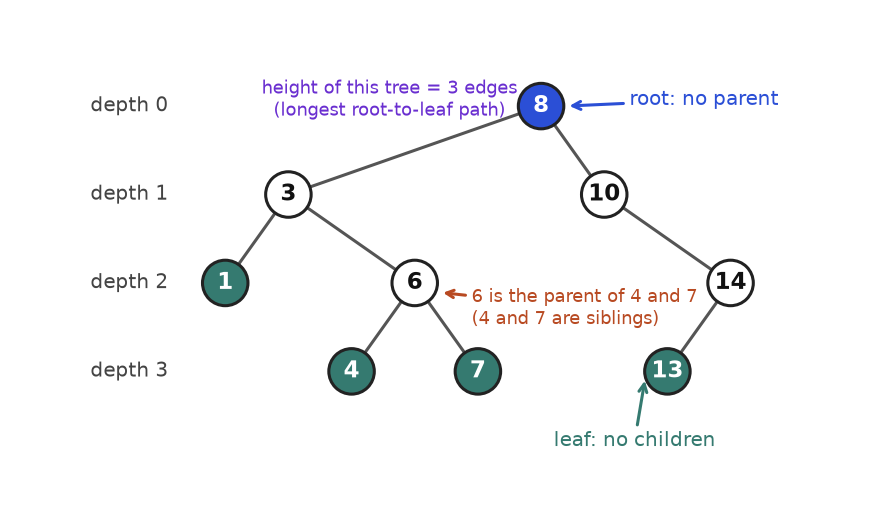
How to read it: start at the blue root and walk down. Each step down is one edge, so depth goes up by one. A node with no lines going further down (green) is a leaf. The height of the whole tree is the number of edges on the longest downward walk, here 8 to 3 to 6 to 4, which is 3 edges.
The template: a node class and a quick builder
Interview platforms give you a TreeNode class. We call ours Node. The function tree() is a tiny helper for this book that builds a tree from nested tuples, so every example is short. In an interview you write the class only; they build the tree for you.
class Node:
def __init__(self, val, left=None, right=None):
self.val, self.left, self.right = val, left, right
def tree(t):
# Build a tree from nested tuples: int = leaf, (val, left, right), None = empty
if t is None:
return None
if isinstance(t, int):
return Node(t)
return Node(t[0], tree(t[1]), tree(t[2]))
def count(n):
# How many nodes? Empty tree has 0; otherwise 1 + both sides.
return 0 if n is None else 1 + count(n.left) + count(n.right)
def height(n):
# Height in EDGES. An empty tree gets -1 so a single node gets 0.
if n is None:
return -1
return 1 + max(height(n.left), height(n.right))
root = tree((8, (3, 1, (6, 4, 7)), (10, None, (14, 13, None))))
print("root value:", root.val)
print("left child of root:", root.left.val)
print("right child of root:", root.right.val)
print("left child of 10:", root.right.left)
print("nodes:", count(root), "height:", height(root))
assert count(root) == 9 and height(root) == 3root value: 8
left child of root: 3
right child of root: 10
left child of 10: None
nodes: 9 height: 3Notice the pattern in count and height. Both start with "if the node is None, return a fixed answer", then call themselves on the left and right child, then combine. That three-part shape is the heart of this whole chapter.
Shapes you will hear about
| Shape | Meaning | Why you care |
|---|---|---|
| Full | Every node has 0 or 2 children | Easy to reason about counts |
| Perfect | All levels completely filled, all leaves at the same depth | Height h holds 2h+1 - 1 nodes |
| Complete | All levels full except possibly the last, which fills from the left | Heaps have this shape, so they fit in an array |
| Balanced | For every node, left and right heights differ by at most 1 | Height stays near log2 n, so operations are fast |
| Skewed | Every node has one child, like a linked list | Height is n - 1, so operations slow to O(n) |
Why does balance matter? A tree with n nodes has height at least about log2(n) and at most n - 1. The code below prints both extremes so you can see how big the gap is.
import math
print("perfect tree: height -> nodes")
for h in range(5):
print(h, "->", 2 ** (h + 1) - 1)
print("n nodes -> smallest possible height")
for n in [1, 7, 1000, 1000000]:
print(n, "->", math.ceil(math.log2(n + 1)) - 1)
print("skewed tree with 1000000 nodes has height", 1000000 - 1)
assert math.ceil(math.log2(1000 + 1)) - 1 == 9perfect tree: height -> nodes
0 -> 1
1 -> 3
2 -> 7
3 -> 15
4 -> 31
n nodes -> smallest possible height
1 -> 0
7 -> 2
1000 -> 9
1000000 -> 19
skewed tree with 1000000 nodes has height 999999A million nodes can sit in a tree only 19 levels tall, but the same million nodes in a skewed tree need 999,999 levels. That is the whole reason we care about balanced trees.
Going deeper
- Recursion depth. Python allows about 1,000 nested calls by default. A skewed tree with 5,000 nodes breaks a recursive
height, as shown below. Interviewers usually give you trees that fit, but when they ask "what if the tree is a million nodes in a line?", the answer is: switch to an iterative version with an explicit stack (next section). - Real trees. File systems, the HTML DOM, JSON documents, decision trees in machine learning, and database indexes (B-trees, which are wide balanced trees with many children per node) are all trees. Knowing the binary case makes all of them readable.
- Arrays can store trees. A complete tree needs no pointers: the children of index i live at 2i+1 and 2i+2. You will use this for heaps in 7.6.
class Node:
def __init__(self, val, left=None, right=None):
self.val, self.left, self.right = val, left, right
def height(n):
if n is None:
return -1
return 1 + max(height(n.left), height(n.right))
# A "tree" that is really a chain going left, 5000 nodes long.
head = None
for v in range(5000):
head = Node(v, left=head)
try:
height(head)
except RecursionError:
print("RecursionError: too deep for plain recursion")RecursionError: too deep for plain recursion7.2 Depth-First Search: Preorder, Inorder, Postorder
How to recognise it
- You must look at every node and the answer depends on a path or a subtree.
- The answer for a node can be built from the answers for its two children.
- Words: "path", "root-to-leaf", "subtree", "ancestor", "depth", "height", "same tree", "mirror".
- Order matters: "process parents before children" (preorder), "sorted order of a BST" (inorder), "children before parent" (postorder).
One walk, three moments to act
Every DFS visits each node exactly once but passes through it three times: when it arrives, after returning from the left child, and after returning from the right child. The three classic traversals are named after the moment you "visit" (record) the node.
| Name | Order | Mnemonic | Typical use |
|---|---|---|---|
| Preorder | node, left, right | "Pre" = node before children | Copy a tree, serialize it, print a directory listing |
| Inorder | left, node, right | "In" = node in the middle | Read a BST in sorted order |
| Postorder | left, right, node | "Post" = node after children | Delete a tree, compute heights and sizes (need the children's answers first) |
How to read it: in each panel, follow the numbers 1, 2, 3 and so on. Preorder records 8 first because the root comes before its children. Inorder records 1 first because it walks as far left as possible before recording anything. Postorder records the root 8 last. Notice that inorder gives 1 3 4 6 7 8 10 13 14, which is sorted. That is not an accident, and we use it in 7.5.
Template: recursive
The three versions differ by one line: where the out.append sits.
class Node:
def __init__(self, val, left=None, right=None):
self.val, self.left, self.right = val, left, right
def tree(t):
# Build a tree from nested tuples: int = leaf, (val, left, right), None = empty
if t is None:
return None
if isinstance(t, int):
return Node(t)
return Node(t[0], tree(t[1]), tree(t[2]))
def preorder(n, out):
if n is None: # base case: nothing to visit
return
out.append(n.val) # VISIT first
preorder(n.left, out)
preorder(n.right, out)
def inorder(n, out):
if n is None:
return
inorder(n.left, out)
out.append(n.val) # VISIT in the middle
inorder(n.right, out)
def postorder(n, out):
if n is None:
return
postorder(n.left, out)
postorder(n.right, out)
out.append(n.val) # VISIT last
root = tree((8, (3, 1, (6, 4, 7)), (10, None, (14, 13, None))))
for f in (preorder, inorder, postorder):
out = []
f(root, out)
print(f.__name__.ljust(10), out)
assert inorder.__name__ == "inorder"preorder [8, 3, 1, 6, 4, 7, 10, 14, 13]
inorder [1, 3, 4, 6, 7, 8, 10, 13, 14]
postorder [1, 4, 7, 6, 3, 13, 14, 10, 8]Template: iterative with a stack
Recursion uses the computer's hidden call stack. An iterative version uses a stack you create yourself, which avoids the recursion limit. Preorder is the simplest: push the right child first so the left child comes out first.
class Node:
def __init__(self, val, left=None, right=None):
self.val, self.left, self.right = val, left, right
def tree(t):
# Build a tree from nested tuples: int = leaf, (val, left, right), None = empty
if t is None:
return None
if isinstance(t, int):
return Node(t)
return Node(t[0], tree(t[1]), tree(t[2]))
def preorder_iter(root):
out, stack = [], [root] if root else []
while stack:
n = stack.pop()
out.append(n.val) # visit when popped
if n.right: stack.append(n.right) # right goes in first...
if n.left: stack.append(n.left) # ...so left comes out first
return out
def inorder_iter(root):
out, stack, cur = [], [], root
while cur or stack:
while cur: # slide down the left edge
stack.append(cur)
cur = cur.left
cur = stack.pop() # leftmost unvisited node
out.append(cur.val) # visit it
cur = cur.right # then deal with its right side
return out
def postorder_iter(root):
# Trick: "node, right, left" reversed is "left, right, node".
out, stack = [], [root] if root else []
while stack:
n = stack.pop()
out.append(n.val)
if n.left: stack.append(n.left)
if n.right: stack.append(n.right)
return out[::-1]
root = tree((8, (3, 1, (6, 4, 7)), (10, None, (14, 13, None))))
print(preorder_iter(root))
print(inorder_iter(root))
print(postorder_iter(root))
assert preorder_iter(root) == [8, 3, 1, 6, 4, 7, 10, 14, 13]
assert inorder_iter(root) == [1, 3, 4, 6, 7, 8, 10, 13, 14]
assert postorder_iter(root) == [1, 4, 7, 6, 3, 13, 14, 10, 8][8, 3, 1, 6, 4, 7, 10, 14, 13]
[1, 3, 4, 6, 7, 8, 10, 13, 14]
[1, 4, 7, 6, 3, 13, 14, 10, 8]Trace: iterative inorder on the running tree
The stack is shown bottom to top. "Slide" means push the current node and move to its left child. This is the one traversal people find hardest, so every step is shown.
| Step | Action | Stack | Output so far |
|---|---|---|---|
| 1 | slide: push 8, go left | [8] | [] |
| 2 | slide: push 3, go left | [8, 3] | [] |
| 3 | slide: push 1, go left (no left child) | [8, 3, 1] | [] |
| 4 | pop 1, visit it, go right (nothing there) | [8, 3] | [1] |
| 5 | pop 3, visit it, go right to 6 | [8] | [1, 3] |
| 6 | slide: push 6, go left | [8, 6] | [1, 3] |
| 7 | slide: push 4, go left (no left child) | [8, 6, 4] | [1, 3] |
| 8 | pop 4, visit it, go right (nothing there) | [8, 6] | [1, 3, 4] |
| 9 | pop 6, visit it, go right to 7 | [8] | [1, 3, 4, 6] |
| 10 | slide: push 7, go left (no left child) | [8, 7] | [1, 3, 4, 6] |
| 11 | pop 7, visit it, go right (nothing there) | [8] | [1, 3, 4, 6, 7] |
| 12 | pop 8, visit it, go right to 10 | [] | [1, 3, 4, 6, 7, 8] |
| 13 | slide: push 10, go left (no left child) | [10] | [1, 3, 4, 6, 7, 8] |
| 14 | pop 10, visit it, go right to 14 | [] | [1, 3, 4, 6, 7, 8, 10] |
| 15 | slide: push 14, go left | [14] | [1, 3, 4, 6, 7, 8, 10] |
| 16 | slide: push 13, go left (no left child) | [14, 13] | [1, 3, 4, 6, 7, 8, 10] |
| 17 | pop 13, visit it, go right (nothing there) | [14] | [1, 3, 4, 6, 7, 8, 10, 13] |
| 18 | pop 14, visit it, go right (nothing there) | [] | [1, 3, 4, 6, 7, 8, 10, 13, 14] |
Why does this work? The stack always holds the nodes whose left side we are still exploring. The top of the stack is the next node in sorted order. Popping it is "return from the left subtree"; moving to the right child is "now do the right subtree".
def depth(n): return 1 + max(depth(n.left), depth(n.right)). It crashes with AttributeError: 'NoneType' object has no attribute 'left' at the first leaf. Right: start with if n is None: return 0. Put the check for None on the node you were handed, once, at the top. Then the code below never needs if n.left guards.The universal DFS return-value template
Almost every tree problem fits this skeleton. Learn it once and you can write 80 percent of tree solutions in under two minutes.
def solve(node):
if node is None:
return BASE_VALUE # answer for an empty tree
left = solve(node.left) # trust recursion: answer for left subtree
right = solve(node.right) # answer for right subtree
return COMBINE(node.val, left, right)"Trust recursion" means: do not try to picture all the levels at once. Assume the call on each child already gives the right answer for that child's subtree, then ask only "how do I combine two such answers with this node?"
Problem 7.2.1 (easy) The maximum depth of a binary tree is the number of nodes on the longest path from the root down to a leaf. Return it. An empty tree has depth 0.
| Idea | The depth of a tree is 1 (for the root) plus the deeper of its two subtrees. |
|---|---|
| Brute force | List every root-to-leaf path and take the longest. There are up to n/2 leaves and each path is up to n long, so a naive version can cost O(n2) time and space on some shapes. |
| Better approach | Return-value DFS. Base case 0, combine with 1 + max(left, right). Each node is touched once. |
| Code | Below. |
| Dry run | Leaf 4: 1 + max(0, 0) = 1. Node 6: 1 + max(1, 1) = 2. Node 3: 1 + max(depth(1) = 1, depth(6) = 2) = 3. Node 14: 1 + max(depth(13) = 1, 0) = 2. Node 10: 1 + max(0, 2) = 3. Root 8: 1 + max(3, 3) = 4. |
| Complexity | O(n) time. Space O(h) for the call stack, where h is the height (n in the worst case, log n when balanced). |
| Edge cases | Empty tree (0). One node (1). A chain (depth equals n). |
class Node:
def __init__(self, val, left=None, right=None):
self.val, self.left, self.right = val, left, right
def tree(t):
# Build a tree from nested tuples: int = leaf, (val, left, right), None = empty
if t is None:
return None
if isinstance(t, int):
return Node(t)
return Node(t[0], tree(t[1]), tree(t[2]))
def max_depth(n):
if n is None:
return 0
return 1 + max(max_depth(n.left), max_depth(n.right))
print(max_depth(tree((8, (3, 1, (6, 4, 7)), (10, None, (14, 13, None))))))
print(max_depth(None), max_depth(tree(5)), max_depth(tree((1, (2, (3, 4, None), None), None))))
assert max_depth(None) == 0 and max_depth(tree(5)) == 14
0 1 4Going deeper
- Recursion versus an explicit stack. They are the same walk. Recursion hides the stack; iterative code shows it. Interviewers like it when you can do both: write recursive first, then say "if depth is a concern I would convert to an explicit stack".
- Parameters going down versus values coming up. In 7.2.1 information flows up (the depth). In path-sum problems (7.4 and the practice set) it flows down (the remaining sum). Many hard problems use both.
7.3 Breadth-First Search: Level Order
How to recognise it
- The question says "level by level", "each row", "right side view", "zigzag", "width of the tree".
- You need the closest something: minimum depth, nearest leaf, fewest steps.
- The answer is a list of lists, one inner list per level.
How to read it: each colour is one level. BFS finishes the blue level before the orange level, and so on. Compare with DFS, which dives down the left side first.
Template
The trick that makes "one list per level" easy: at the start of each round, len(queue) is exactly the number of nodes on the current level. Process that many nodes, and anything you add during the round belongs to the next level.
class Node:
def __init__(self, val, left=None, right=None):
self.val, self.left, self.right = val, left, right
def tree(t):
# Build a tree from nested tuples: int = leaf, (val, left, right), None = empty
if t is None:
return None
if isinstance(t, int):
return Node(t)
return Node(t[0], tree(t[1]), tree(t[2]))
from collections import deque
def level_order(root):
if root is None:
return []
result, queue = [], deque([root])
while queue:
size = len(queue) # nodes on THIS level, frozen now
level = []
for _ in range(size):
node = queue.popleft() # O(1), unlike list.pop(0)
level.append(node.val)
if node.left:
queue.append(node.left) # next level
if node.right:
queue.append(node.right)
result.append(level)
return result
root = tree((8, (3, 1, (6, 4, 7)), (10, None, (14, 13, None))))
print(level_order(root))
assert level_order(root) == [[8], [3, 10], [1, 6, 14], [4, 7, 13]]
assert level_order(None) == [][[8], [3, 10], [1, 6, 14], [4, 7, 13]]Trace: level order on the running tree
| Round | Queue at start | size | Popped in order | Pushed (next level) | Level saved |
|---|---|---|---|---|---|
| 0 | [8] | 1 | [8] | [3, 10] | [8] |
| 1 | [3, 10] | 2 | [3, 10] | [1, 6, 14] | [3, 10] |
| 2 | [1, 6, 14] | 3 | [1, 6, 14] | [4, 7, 13] | [1, 6, 14] |
| 3 | [4, 7, 13] | 3 | [4, 7, 13] | [] | [4, 7, 13] |
len(queue) inside the loop. Wrong: queue.pop(0) shifts every remaining item, so each pop costs O(n) and the whole BFS can become O(n2). Right: collections.deque and popleft(), O(1) each. Also wrong: for _ in range(len(queue)) is fine (the range is computed once), but while len(queue) > 0 used as the level loop mixes levels together because children are added while you loop. Freeze size first.Problem 7.3.1 (medium) Return the values of the nodes you would see if you stood on the right side of the tree and looked across: for each level, the last node from the left.
| Idea | Run level order. For each level, keep only the last value. The right-side view is "the last node of every level". |
|---|---|
| Brute force | Build the full list of lists, then take level[-1] from each. Correct, but stores every value: O(n) extra space. |
| Better approach | Same BFS, but record only the node when i == size - 1. Space is the widest level, not the whole tree. (A DFS that visits right first and records the first node seen at each new depth gives the same answer.) |
| Code | Below. |
| Dry run | Level 0: [8], last is 8. Level 1: [3, 10], last is 10. Level 2: [1, 6, 14], last is 14. Level 3: [4, 7, 13], last is 13. Answer [8, 10, 14, 13]. Notice 13 is on the left of the tree but the rightmost node on its level. |
| Complexity | O(n) time, O(w) space where w is the largest level width (up to n/2). |
| Edge cases | Empty tree (empty list). A left-only chain: every node is visible. |
class Node:
def __init__(self, val, left=None, right=None):
self.val, self.left, self.right = val, left, right
def tree(t):
# Build a tree from nested tuples: int = leaf, (val, left, right), None = empty
if t is None:
return None
if isinstance(t, int):
return Node(t)
return Node(t[0], tree(t[1]), tree(t[2]))
from collections import deque
def right_side_view(root):
if root is None:
return []
view, queue = [], deque([root])
while queue:
size = len(queue)
for i in range(size):
node = queue.popleft()
if i == size - 1: # last node of this level
view.append(node.val)
if node.left:
queue.append(node.left)
if node.right:
queue.append(node.right)
return view
print(right_side_view(tree((8, (3, 1, (6, 4, 7)), (10, None, (14, 13, None))))))
print(right_side_view(tree((1, (2, (3, None, None), None), None))))
assert right_side_view(None) == [][8, 10, 14, 13]
[1, 2, 3]Going deeper
- Memory shape. DFS needs space proportional to the height; BFS needs space proportional to the widest level. A very wide shallow tree favours DFS; a very deep thin tree favours BFS.
- Shortest path. BFS finds the fewest-edges path in any graph where every edge costs the same. Trees are graphs, and Chapter 8 uses the exact same loop on grids and networks.
7.4 Return-Value Recursion: Balanced, Diameter, Path Sum, LCA, Serialize
How to recognise it
- The answer is a single number or yes/no about the whole tree, but it depends on facts about subtrees.
- The word "any path" or "every node" appears (balanced? diameter? best path?).
- You catch yourself computing the height inside a loop over nodes. That is a sign to compute it once, bottom-up.
| Problem | Base case | What a node returns to its parent | Side job at each node |
|---|---|---|---|
| Size | 0 | 1 + left + right | none |
| Height | -1 (edges) | 1 + max(left, right) | none |
| Balanced? | height 0 or -1 flag | height, or a failure marker | check |left - right| <= 1 |
| Diameter | -1 | height | update best with left + right + 2 |
| Path sum | False | can the rest be reached below? | none |
| LCA | None | the target found below, or the LCA | if both sides found something, this node is the answer |
How to read it: the blue h= labels are heights in edges. At the root 8, the left subtree (rooted at 3) has height 2 and the right subtree (rooted at 10) has height 2. A path that bends at 8 uses (2 + 1) edges going left and (2 + 1) edges going right, which is 6. The same trick works at every node: "the best path that turns here" is the sum of the two sides.
Template: return one thing, record another
def solve(root):
best = 0 # side answer, updated as we go
def dfs(node):
nonlocal best
if node is None:
return BASE
l, r = dfs(node.left), dfs(node.right)
best = max(best, CANDIDATE(l, r)) # best answer that turns at this node
return EXTENDABLE(l, r) # what the parent is allowed to extend
dfs(root)
return bestThe key insight: the value a node returns upward and the best answer that passes through the node are two different things. A path that bends at a node cannot be extended further up by the parent, so the parent only gets the one-sided version.
return left + right + 2 from the helper. The parent then adds the bent path to its own other side, which is not a real path. Right: update best with left + right + 2 but return 1 + max(left, right). The same bug appears in "maximum path sum".Problem 7.4.1 (easy) A tree is height-balanced if at every node the heights of the left and right subtrees differ by at most 1. Decide whether a tree is balanced.
| Idea | Compute heights bottom-up. As soon as any node sees a difference above 1, report "not balanced" all the way up using the marker -2 (any value that is never a real height). |
|---|---|
| Brute force | For every node call height on both children, then recurse. Height itself costs O(n), done at up to n nodes: O(n2) time for a skewed tree. |
| Better approach | One post-order pass where each node returns its height or the failure marker. O(n) time. |
| Code | Below. |
| Dry run | Running tree, heights in edges: leaves are 0; node 6 is 1; node 3: left height 0 (node 1), right height 1 (node 6), difference 1, fine, returns 2. Node 14: left 0, right -1 (empty), difference 1, returns 1. Node 10: left -1, right 1, difference 2: unbalanced. The answer is False. |
| Complexity | O(n) time, O(h) space. |
| Edge cases | Empty tree (balanced). The failure marker must pass through every ancestor unchanged. |
class Node:
def __init__(self, val, left=None, right=None):
self.val, self.left, self.right = val, left, right
def tree(t):
# Build a tree from nested tuples: int = leaf, (val, left, right), None = empty
if t is None:
return None
if isinstance(t, int):
return Node(t)
return Node(t[0], tree(t[1]), tree(t[2]))
def is_balanced(root):
FAIL = -2
def height(n):
if n is None:
return -1
l = height(n.left)
if l == FAIL:
return FAIL # propagate failure up immediately
r = height(n.right)
if r == FAIL or abs(l - r) > 1:
return FAIL
return 1 + max(l, r)
return height(root) != FAIL
print(is_balanced(tree((8, (3, 1, (6, 4, 7)), (10, None, (14, 13, None))))))
print(is_balanced(tree((1, (2, 3, 4), 5))))
print(is_balanced(None), is_balanced(tree((1, (2, 3, None), None))))
assert is_balanced(tree((1, (2, 3, 4), 5)))False
True
True FalseProblem 7.4.2 (medium) The diameter of a tree is the number of edges on the longest path between any two nodes. The path may or may not pass through the root. Return it.
| Idea | A longest path has a highest node where it "turns". At that node its length is (height of left + 1) + (height of right + 1). Try every node as the turning point and keep the maximum. |
|---|---|
| Brute force | At every node, compute the two heights from scratch: O(n) per node, O(n2) overall in the worst case. |
| Better approach | Compute heights once, bottom-up, and update a running best at each node. O(n). |
| Code | Below. The second tree is built so its diameter does not pass through the root. |
| Dry run | Running tree (heights in edges, empty = -1). Node 3 has child heights (0, 1): candidate 0 + 1 + 2 = 3, meaning 1 edge down to node 1 plus 2 edges down to node 4. Node 10 has (-1, 1): candidate -1 + 1 + 2 = 2. Root 8 has (2, 2): candidate 2 + 2 + 2 = 6. The best is 6. |
| Complexity | O(n) time, O(h) space. |
| Edge cases | One node (0). A chain (n - 1). Diameter not through the root. |
class Node:
def __init__(self, val, left=None, right=None):
self.val, self.left, self.right = val, left, right
def tree(t):
# Build a tree from nested tuples: int = leaf, (val, left, right), None = empty
if t is None:
return None
if isinstance(t, int):
return Node(t)
return Node(t[0], tree(t[1]), tree(t[2]))
def diameter(root):
best = 0
def height(n):
nonlocal best
if n is None:
return -1
l, r = height(n.left), height(n.right)
best = max(best, l + r + 2) # path that turns at n, counted in edges
return 1 + max(l, r) # what the parent may extend
height(root)
return best
def diameter_slow(root):
# brute force for checking: heights recomputed at every node
def h(n):
return -1 if n is None else 1 + max(h(n.left), h(n.right))
if root is None:
return 0
here = h(root.left) + h(root.right) + 2
return max(here, diameter_slow(root.left), diameter_slow(root.right))
a = tree((8, (3, 1, (6, 4, 7)), (10, None, (14, 13, None))))
b = tree((1, (2, (3, 4, 5), (6, 7, 8)), None)) # big part hangs off the left only
print(diameter(a), diameter(b), diameter(tree(9)))
assert diameter(a) == diameter_slow(a) == 6
assert diameter(b) == diameter_slow(b) == 46 4 0In the second tree the best bend is at node 2: 4, 3, 2, 6, 7 is 4 edges, while the longest path through the root 1 is only 3 edges. This is why you must try every node as the turning point, not only the root.
Problem 7.4.3 (medium) The lowest common ancestor (LCA) of two nodes p and q is the deepest node that has both of them in its subtree (a node counts as its own descendant). Find it in a general binary tree. Assume both nodes exist and values are unique.
| Idea | Search both sides. If this node is p or q, report it. If one side reports a hit and the other side reports a hit, this node is where the paths meet. If only one side has a hit, pass it up. |
|---|---|
| Brute force | Find the root-to-p path and the root-to-q path (two walks, O(n) each), then compare them to find the last common node. Correct, O(n) time but O(h) extra memory for the paths. |
| Better approach | The single recursive pass above. No path lists. O(n) time, O(h) stack. |
| Code | Below. |
| Dry run | p = 4, q = 7. At 8: ask 3 and 10. At 3: ask 1 (None) and 6. At 6: ask 4 (hit, returns 4) and 7 (hit, returns 7). Both sides non-empty: 6 is the LCA, returned up through 3 and 8 unchanged because the other side is empty. |
| Complexity | O(n) time, O(h) space. |
| Edge cases | p is an ancestor of q (the answer is p). p equals q. Nodes in different halves of the root (the answer is the root). |
class Node:
def __init__(self, val, left=None, right=None):
self.val, self.left, self.right = val, left, right
def tree(t):
# Build a tree from nested tuples: int = leaf, (val, left, right), None = empty
if t is None:
return None
if isinstance(t, int):
return Node(t)
return Node(t[0], tree(t[1]), tree(t[2]))
def lca(root, p, q):
if root is None or root.val == p or root.val == q:
return root # found one target, or fell off
left = lca(root.left, p, q)
right = lca(root.right, p, q)
if left and right: # one target on each side: split point
return root
return left or right # otherwise pass up whichever side found something
root = tree((8, (3, 1, (6, 4, 7)), (10, None, (14, 13, None))))
for p, q in [(4, 7), (4, 13), (3, 7), (1, 4), (13, 14)]:
print(p, q, "->", lca(root, p, q).val)
assert lca(root, 4, 7).val == 6 and lca(root, 4, 13).val == 8 and lca(root, 3, 7).val == 34 7 -> 6
4 13 -> 8
3 7 -> 3
1 4 -> 3
13 14 -> 14Problem 7.4.4 (hard) Serialize a binary tree into a string, and deserialize the string back into an identical tree.
| Idea | Write the tree in preorder and put a marker # for every empty child. The markers make the shape unambiguous. To rebuild, read the tokens in the same order: take a token, if it is # return None, else make a node and let the next tokens build its left and then its right subtree. |
|---|---|
| Brute force | Store only the values (say, inorder). Different shapes share the same inorder list, so the tree cannot be rebuilt. You would need two traversals (preorder plus inorder) and unique values: more work and fragile. |
| Better approach | Preorder with null markers: one pass each way, O(n) time. An iterator over the tokens is the cleanest way to keep the "next token" position shared across recursive calls. |
| Code | Below. |
| Dry run | Tree 2 (1, 3): tokens 2, 1, #, #, 3, #, #. Rebuild: take 2, build left: take 1, its left takes #, its right takes #; back at 2, build right: take 3, left #, right #. Seven tokens used, tree complete. |
| Complexity | O(n) time and space (the string holds 2n + 1 tokens). |
| Edge cases | Empty tree (the string is just #). Negative or multi-digit values (the comma separator handles them). Values that equal the marker never occur because we use numbers. |
class Node:
def __init__(self, val, left=None, right=None):
self.val, self.left, self.right = val, left, right
def tree(t):
# Build a tree from nested tuples: int = leaf, (val, left, right), None = empty
if t is None:
return None
if isinstance(t, int):
return Node(t)
return Node(t[0], tree(t[1]), tree(t[2]))
def serialize(root):
out = []
def pre(n):
if n is None:
out.append("#")
return
out.append(str(n.val))
pre(n.left)
pre(n.right)
pre(root)
return ",".join(out)
def deserialize(s):
tokens = iter(s.split(","))
def build():
tok = next(tokens) # shared position in the token stream
if tok == "#":
return None
node = Node(int(tok))
node.left = build() # left subtree uses the next tokens
node.right = build()
return node
return build()
root = tree((8, (3, 1, (6, 4, 7)), (10, None, (14, 13, None))))
text = serialize(root)
print(text)
again = deserialize(text)
print(serialize(again) == text, serialize(None), serialize(tree((-5, 12, None))))
assert serialize(deserialize(text)) == text8,3,1,#,#,6,4,#,#,7,#,#,10,#,14,13,#,#,#
True # -5,12,#,#,#Going deeper
- Bottom-up beats top-down. Whenever you see O(n2) from "compute height at every node", the fix is to return height from the recursion. This is also the shape behind maximum path sum, which the practice set asks you to solve.
- Two jobs per node. Diameter, balanced and max path sum all return one value up and track another on the side. Naming those two things before coding prevents most bugs.
7.5 Binary Search Trees
How to recognise it
- The statement says "binary search tree" or "BST". Then use the ordering; ignoring it is the number-one wasted opportunity.
- Words: "sorted", "kth smallest", "successor", "range", "validate", "closest value".
- You need search, insert and delete in about log n steps when the tree is balanced.
How to read it: on the left, searching for 7 starts at the root. 7 is smaller than 8, so everything on the right of 8 is ruled out. At 3, 7 is bigger, so the whole left of 3 is ruled out. Four nodes visited out of nine. On the right, node 4 is the left child of 8, and 4 is less than 8, so that single parent-child check passes. But 4 lives on the right side of the root 5, so it must be greater than 5. It is not, so the tree is not a BST.
The rules, stated precisely
- For each node with value v: every value in its left subtree is < v and every value in its right subtree is > v (we assume no duplicates; if duplicates are allowed, the problem states which side they go to).
- Consequence 1: an inorder traversal visits the values in increasing order.
- Consequence 2: the minimum is the leftmost node, the maximum is the rightmost node.
- Cost: search, insert and delete take O(h) time. The height h is about log n if the tree is balanced and up to n if it is a chain.
Template: search and insert
class Node:
def __init__(self, val, left=None, right=None):
self.val, self.left, self.right = val, left, right
def tree(t):
# Build a tree from nested tuples: int = leaf, (val, left, right), None = empty
if t is None:
return None
if isinstance(t, int):
return Node(t)
return Node(t[0], tree(t[1]), tree(t[2]))
def search(root, key):
cur = root
while cur:
if key == cur.val:
return cur
cur = cur.left if key < cur.val else cur.right # ordering throws half away
return None
def insert(root, key):
# Returns the (possibly new) root of this subtree. USE the return value.
if root is None:
return Node(key)
if key < root.val:
root.left = insert(root.left, key)
elif key > root.val:
root.right = insert(root.right, key)
return root # equal keys: ignore
def inorder(n):
return [] if n is None else inorder(n.left) + [n.val] + inorder(n.right)
root = None
for v in [8, 3, 10, 1, 6, 14, 4, 7, 13]:
root = insert(root, v)
print(inorder(root))
print(search(root, 7).val, search(root, 5))
assert inorder(root) == sorted([8, 3, 10, 1, 6, 14, 4, 7, 13])[1, 3, 4, 6, 7, 8, 10, 13, 14]
7 NoneTrace: building the running tree by inserting 8, 3, 10, 1, 6, 14, 4, 7, 13
| Insert | Comparisons on the way down | Attached as |
|---|---|---|
| 8 | tree is empty | becomes the root |
| 3 | 3 < 8: left | left child of 8 |
| 10 | 10 > 8: right | right child of 8 |
| 1 | 1 < 8: left; 1 < 3: left | left child of 3 |
| 6 | 6 < 8: left; 6 > 3: right | right child of 3 |
| 14 | 14 > 8: right; 14 > 10: right | right child of 10 |
| 4 | 4 < 8: left; 4 > 3: right; 4 < 6: left | left child of 6 |
| 7 | 7 < 8: left; 7 > 3: right; 7 > 6: right | right child of 6 |
| 13 | 13 > 8: right; 13 > 10: right; 13 < 14: left | left child of 14 |
Insertion order matters. The same nine numbers inserted as 1, 3, 4, 6, 7, 8, 10, 13, 14 (already sorted) would build a chain of height 8, and every search would be a slow walk down it.
node.left.val < node.val and node.right.val > node.val at every node. The right-hand tree in the figure passes this check everywhere and is still not a BST. Right: carry a range down the recursion. Every node must lie strictly between a lower bound and an upper bound inherited from all of its ancestors (Problem 7.5.1).Problem 7.5.1 (medium) Decide whether a binary tree is a valid BST.
| Idea | Each node has an allowed open interval (low, high). The root may be anything. Going left, the node's value becomes the new upper bound. Going right, it becomes the new lower bound. |
|---|---|
| Brute force | At each node scan its whole left subtree for a value that is too big, and its right subtree for one that is too small. That is O(n) per node, O(n2) in the worst case. |
| Better approach | The interval method touches each node once. An alternative with the same cost: do an inorder walk and check that each value is strictly greater than the previous one. |
| Code | Below. It also shows the wrong parent-only check failing. |
| Dry run | Tree 5 (1, 8 (4, 9)). Root 5: interval (-inf, inf), fine. Go left to 1 with (-inf, 5): fine. Go right to 8 with (5, inf): fine. Go left to 4 with (5, 8): 4 is not greater than 5, so invalid. |
| Complexity | O(n) time, O(h) space. |
| Edge cases | Empty tree (valid). Duplicates (strict bounds make them invalid). Values at the integer limits (use float("inf") or None for "no bound", not a made-up big number). |
class Node:
def __init__(self, val, left=None, right=None):
self.val, self.left, self.right = val, left, right
def tree(t):
# Build a tree from nested tuples: int = leaf, (val, left, right), None = empty
if t is None:
return None
if isinstance(t, int):
return Node(t)
return Node(t[0], tree(t[1]), tree(t[2]))
def is_bst(n, low=float("-inf"), high=float("inf")):
if n is None:
return True
if not (low < n.val < high): # violates an ancestor's bound
return False
return is_bst(n.left, low, n.val) and is_bst(n.right, n.val, high)
def is_bst_wrong(n):
# looks only at parent and child: the classic bug
if n is None:
return True
if n.left and n.left.val >= n.val: return False
if n.right and n.right.val <= n.val: return False
return is_bst_wrong(n.left) and is_bst_wrong(n.right)
bad = tree((5, 1, (8, 4, 9)))
good = tree((8, (3, 1, (6, 4, 7)), (10, None, (14, 13, None))))
print("good:", is_bst(good), "| bad:", is_bst(bad), "| wrong checker says bad is", is_bst_wrong(bad))
print("duplicate:", is_bst(tree((2, 2, None))), "| empty:", is_bst(None))
assert is_bst(good) and not is_bst(bad) and is_bst_wrong(bad)good: True | bad: False | wrong checker says bad is True
duplicate: False | empty: TrueProblem 7.5.2 (medium) Delete a key from a BST so that the result is still a BST. Return the new root.
| Idea | Find the node first (same walk as search). Then three cases. Leaf: just remove it. One child: replace the node by that child. Two children: copy in the inorder successor (the smallest value in the right subtree), then delete that successor from the right subtree. |
|---|---|
| Brute force | Dump the tree to a sorted list, remove the key, rebuild a balanced BST. O(n) time and O(n) space every time. |
| Better approach | Local surgery, O(h) time. Why the successor? It is the next value in sorted order, so putting it in the deleted spot keeps everything on the left smaller and everything on the right larger. |
| Code | Below. |
| Dry run | Delete 3 (two children 1 and 6). The smallest value in 3's right subtree (rooted at 6) is 4. Write 4 into the node that held 3, then delete 4 from the right subtree (it is a leaf, so it vanishes). Result: 8 (4 (1, 6 (_, 7)), 10 (...)). |
| Complexity | O(h) time, O(h) stack space. |
| Edge cases | Key not present (return unchanged). Deleting the root. Deleting a node with only a right child. |
class Node:
def __init__(self, val, left=None, right=None):
self.val, self.left, self.right = val, left, right
def tree(t):
# Build a tree from nested tuples: int = leaf, (val, left, right), None = empty
if t is None:
return None
if isinstance(t, int):
return Node(t)
return Node(t[0], tree(t[1]), tree(t[2]))
def delete(node, key):
if node is None:
return None # key not found
if key < node.val:
node.left = delete(node.left, key) # reconnect with the returned subtree
elif key > node.val:
node.right = delete(node.right, key)
else:
if node.left is None: # 0 or 1 child: lift the other side
return node.right
if node.right is None:
return node.left
succ = node.right # 2 children: smallest in right subtree
while succ.left:
succ = succ.left
node.val = succ.val
node.right = delete(node.right, succ.val)
return node
def preorder(n):
return [] if n is None else [n.val] + preorder(n.left) + preorder(n.right)
def inorder(n):
return [] if n is None else inorder(n.left) + [n.val] + inorder(n.right)
def fresh():
return tree((8, (3, 1, (6, 4, 7)), (10, None, (14, 13, None))))
for key in [7, 14, 3, 8, 99]:
t = delete(fresh(), key)
print("delete", str(key).rjust(2), "-> preorder", preorder(t), "inorder sorted:", inorder(t) == sorted(inorder(t)))
assert preorder(delete(fresh(), 3)) == [8, 4, 1, 6, 7, 10, 14, 13]delete 7 -> preorder [8, 3, 1, 6, 4, 10, 14, 13] inorder sorted: True
delete 14 -> preorder [8, 3, 1, 6, 4, 7, 10, 13] inorder sorted: True
delete 3 -> preorder [8, 4, 1, 6, 7, 10, 14, 13] inorder sorted: True
delete 8 -> preorder [10, 3, 1, 6, 4, 7, 14, 13] inorder sorted: True
delete 99 -> preorder [8, 3, 1, 6, 4, 7, 10, 14, 13] inorder sorted: Truedelete(root, 8) and then using the old root variable, or writing delete(node.left, key) without assigning it back. When the node being removed has at most one child, the function returns a different node, and the parent must point to it. Right: root = delete(root, key) and node.left = delete(node.left, key).Problem 7.5.3 (medium) Return the k-th smallest value (k starts at 1) in a BST.
| Idea | Inorder visits values in sorted order, so the k-th node visited is the answer. Stop as soon as you reach it. |
|---|---|
| Brute force | Collect all values, sort, index: O(n log n) time, O(n) space, and it ignores the BST property. |
| Better approach | Iterative inorder with a counter and early stop: O(h + k) time, O(h) space. |
| Code | Below. |
| Dry run | k = 3. Slide left to 1 (visit 1, count 1). Pop 3 (count 2). Go right to 6, slide left to 4: pop 4 (count 3). Stop, answer 4. |
| Complexity | O(h + k) time, O(h) space. |
| Edge cases | k = 1 (leftmost). k = n (rightmost). If k can exceed n, return None. |
class Node:
def __init__(self, val, left=None, right=None):
self.val, self.left, self.right = val, left, right
def tree(t):
# Build a tree from nested tuples: int = leaf, (val, left, right), None = empty
if t is None:
return None
if isinstance(t, int):
return Node(t)
return Node(t[0], tree(t[1]), tree(t[2]))
def kth_smallest(root, k):
stack, cur = [], root
while cur or stack:
while cur:
stack.append(cur)
cur = cur.left
cur = stack.pop()
k -= 1
if k == 0: # this is the k-th node in sorted order
return cur.val
cur = cur.right
return None # k was larger than the number of nodes
root = tree((8, (3, 1, (6, 4, 7)), (10, None, (14, 13, None))))
print([kth_smallest(root, k) for k in (1, 3, 5, 9, 10)])
assert [kth_smallest(root, k) for k in range(1, 10)] == [1, 3, 4, 6, 7, 8, 10, 13, 14][1, 4, 7, 14, None]Going deeper
- Balance. Plain BSTs degrade to chains on sorted input. Self-balancing trees (AVL, red-black) fix the height with rotations. You almost never code them in interviews; know the name and the promise: O(log n) guaranteed.
- Python has no built-in BST. For "sorted collection with fast insert" people use a sorted list with
bisect(insert is O(n) because of shifting, but it is fast in practice) or the third-partysortedcontainerspackage. - Order statistics. If you must answer many "k-th smallest" queries on a changing tree, store the size of each subtree in every node. Then you can pick left, node or right in O(h) without walking all k nodes.
7.6 Heaps and Priority Queues
A priority queue is the idea: "give me the item with the best priority". A heap is the standard way to build one. A min-heap keeps the smallest at the top. A max-heap keeps the largest on top. In a min-heap every parent is less than or equal to its children. Nothing is promised between siblings or cousins, so a heap is not sorted.
How to recognise it
- "The K largest / K smallest / K most frequent / K closest".
- "Repeatedly take the smallest (or best) and then add more items".
- "Merge K sorted things".
- "Median of a stream" or "k-th largest in a stream" (data keeps arriving).
- "Schedule by priority or deadline", "always process the cheapest next" (Dijkstra, Chapter 8).
How to read it: the root 2 is the smallest value. Every parent is smaller than its two children (5 has 9 and 6; 3 has 8 and 4). The tree is complete: every level is full except possibly the last, which fills from the left. That shape is the reason an array works. The node at index i has its children at 2i+1 and 2i+2, and its parent at (i-1)//2. Check with 3 at index 2: children at indices 5 and 6, values 8 and 4. Correct.
The two moves: sift up and sift down
- Push: put the new value at the end (the next free slot keeps the shape complete), then swap it with its parent while it is smaller. This is sift up. At most one swap per level: O(log n).
- Pop: take the root as the answer. Move the last item into the root hole, then swap it with its smaller child while it is bigger than that child. This is sift down. O(log n).
How to read it: panel 1 puts the red 1 at the first free slot, below 9. Since 1 < 9, swap (panel 2). Now it sits below 5, and 1 < 5, swap (panel 3). Below 2, swap again (panel 4). It reached the root, so it stops. The array shown under each panel changes only by those swaps.
Template: build a tiny heap yourself, then compare with heapq
You will use heapq in real solutions, but writing the two moves once makes everything else obvious. The log lists every swap, which is the trace for push(1) and then pop() on the heap from the figure.
class MinHeap:
def __init__(self, items=None):
self.a = list(items or []) # assume items already form a valid heap
self.log = []
def push(self, x):
a = self.a
a.append(x) # 1. put at the end
i = len(a) - 1
while i > 0:
p = (i - 1) // 2 # parent index
if a[p] <= a[i]:
break
self.log.append(f"swap index {i} (value {a[i]}) with parent index {p} (value {a[p]})")
a[i], a[p] = a[p], a[i] # 2. sift up
i = p
def pop(self):
a = self.a
top = a[0]
last = a.pop() # remove the last item...
if a:
a[0] = last # ...and drop it in the root hole
i, n = 0, len(a)
while True: # sift down
l, r, m = 2 * i + 1, 2 * i + 2, i
if l < n and a[l] < a[m]: m = l
if r < n and a[r] < a[m]: m = r
if m == i:
break
self.log.append(f"swap index {i} (value {a[i]}) with child index {m} (value {a[m]})")
a[i], a[m] = a[m], a[i]
i = m
return top
h = MinHeap([2, 5, 3, 9, 6, 8, 4])
h.push(1)
print("after push(1):", h.a)
print("popped:", h.pop())
print("after pop: ", h.a)
print("\n".join(h.log))
import heapq, random
random.seed(7)
data = [random.randint(0, 99) for _ in range(200)]
mine, ref = MinHeap(), []
for x in data:
mine.push(x)
heapq.heappush(ref, x)
assert mine.a == ref
assert [mine.pop() for _ in range(200)] == sorted(data)after push(1): [1, 2, 3, 5, 6, 8, 4, 9]
popped: 1
after pop: [2, 5, 3, 9, 6, 8, 4]
swap index 7 (value 1) with parent index 3 (value 9)
swap index 3 (value 1) with parent index 1 (value 5)
swap index 1 (value 1) with parent index 0 (value 2)
swap index 0 (value 9) with child index 1 (value 2)
swap index 1 (value 9) with child index 3 (value 5)Read the log: pushing 1 caused three upward swaps, exactly the figure. Popping then took 1 off the top, moved the last item (9) to the root, and sifted it down twice, which restored the original heap. The final asserts show that our class and Python's heapq build identical arrays and produce sorted output.
Python's heapq
| Call | What it does | Cost |
|---|---|---|
heapq.heappush(h, x) | Add x | O(log n) |
heapq.heappop(h) | Remove and return the smallest | O(log n) |
h[0] | Peek at the smallest without removing | O(1) |
heapq.heapify(h) | Turn a list into a heap in place | O(n) |
heapq.heappushpop(h, x) | Push x, then pop the smallest, in one step | O(log n) |
heapq.nlargest(k, it) / nsmallest | The k best items, in order | O(n log k) |
The module works on a plain list and gives only a min-heap. The next block shows pushes, pops, the "not sorted" surprise, the negation trick for a max-heap, and tuples as priorities.
import heapq
h = []
for x in [5, 3, 8, 1, 9]:
heapq.heappush(h, x)
print("push", x, "->", h)
print("peek:", h[0], "| list is not sorted, but the first item is the minimum")
out = []
while h:
out.append(heapq.heappop(h))
print("pops in order:", out)
# Max-heap: store negatives, negate again on the way out.
mx = []
for x in [5, 3, 8, 1, 9]:
heapq.heappush(mx, -x)
print("largest:", -heapq.heappop(mx), "then", -heapq.heappop(mx))
# Tuples compare field by field: (priority, name)
tasks = []
heapq.heappush(tasks, (2, "write report"))
heapq.heappush(tasks, (1, "fix outage"))
heapq.heappush(tasks, (2, "answer email"))
print([heapq.heappop(tasks) for _ in range(3)])
# heapify: O(n) in-place
arr = [7, 9, 3, 8, 1, 5]
heapq.heapify(arr)
print("heapify:", arr)
assert arr[0] == 1push 5 -> [5]
push 3 -> [3, 5]
push 8 -> [3, 5, 8]
push 1 -> [1, 3, 8, 5]
push 9 -> [1, 3, 8, 5, 9]
peek: 1 | list is not sorted, but the first item is the minimum
pops in order: [1, 3, 5, 8, 9]
largest: 9 then 8
[(1, 'fix outage'), (2, 'answer email'), (2, 'write report')]
heapify: [1, 7, 3, 8, 9, 5]heapq.heappop(h) to get the largest, or print(h) expecting sorted output, or h[-1] as the maximum. Right: heapq is a min-heap only. For a max-heap push -x and negate after popping (for tuples, negate the numeric field). To get a sorted order, pop repeatedly (heap sort) or use sorted. Only h[0] is guaranteed to be the minimum.heappush(h, (node.val, node)) when two nodes have the same value. Python then compares the second elements, two ListNode objects, and raises TypeError: '<' not supported between instances. Right: add a unique tie-breaker as the second field, such as the list index or a counter: (node.val, i, node). The tie-breaker is never equal, so the node is never compared.Trace: building a heap with heapify (bottom-up)
Start with the array [7, 9, 3, 8, 1, 5], which is not a heap. The last item sits at index 5, its parent is index (5-1)//2 = 2. Items after that are all leaves, so leaves are already heaps of size one. Work backwards from index 2 to index 0, sifting each item down.
| Step | Look at | Action | Array after |
|---|---|---|---|
| 1 | index 2, value 3; child index 5, value 5 | 3 <= 5: nothing to do | [7, 9, 3, 8, 1, 5] |
| 2 | index 1, value 9; children index 3 (8) and index 4 (1) | smaller child is 1 < 9: swap 9 and 1. Index 4 has no children: stop | [7, 1, 3, 8, 9, 5] |
| 3 | index 0, value 7; children index 1 (1) and index 2 (3) | smaller child is 1 < 7: swap 7 and 1 | [1, 7, 3, 8, 9, 5] |
| 4 | the 7 now at index 1; children index 3 (8) and index 4 (9) | 7 <= 8: stop. Heap complete | [1, 7, 3, 8, 9, 5] |
The code above printed heapify: [1, 7, 3, 8, 9, 5], the same array, so the hand trace is correct.
Problem 7.6.1 (easy) Return the k-th largest value in a list of numbers (counting duplicates, so the 2nd largest of [5, 5, 3] is 5).
| Idea | Keep a min-heap holding the k largest values seen so far. Its top is the k-th largest. When a new value is bigger than the top, it deserves a place: swap it in. |
|---|---|
| Brute force | Sort in descending order and take index k - 1: O(n log n) time, and it needs all data in memory. |
| Better approach | A heap of size k: O(n log k) time and O(k) space. It also works on a stream where you cannot sort. |
| Code | Below. |
| Dry run | Data [3, 2, 1, 5, 6, 4], k = 2. Push 3: [3]. Push 2: [2, 3]. Next 1: heap is full and 1 is not bigger than the top 2: skip. Next 5 > 2: replace, heap {3, 5}. Next 6 > 3: replace, heap {5, 6}. Next 4 < 5: skip. Top is 5, the 2nd largest. |
| Complexity | O(n log k) time, O(k) space. |
| Edge cases | k = 1 (the maximum). k = n (the minimum). Duplicates count separately. k > n is invalid input. |
import heapq
def kth_largest(nums, k):
heap = [] # min-heap of the k largest so far
for x in nums:
if len(heap) < k:
heapq.heappush(heap, x)
elif x > heap[0]:
heapq.heapreplace(heap, x) # pop the smallest, push x
return heap[0]
print(kth_largest([3, 2, 1, 5, 6, 4], 2))
print(kth_largest([5, 5, 3], 2), kth_largest([9], 1), kth_largest([4, 1, 7], 3))
assert kth_largest([3, 2, 1, 5, 6, 4], 2) == sorted([3, 2, 1, 5, 6, 4])[-2]5
5 9 1Problem 7.6.2 (medium) Given a list of words and k, return the k most frequent words. If two words have the same count, the alphabetically smaller word comes first.
| Idea | Count with a dictionary, then pick the k best (count, word) pairs. To prefer higher counts and then smaller words, sort key is (-count, word). |
|---|---|
| Brute force | Count, sort all distinct words by the key, take the first k: O(m log m) where m is the number of distinct words. |
| Better approach | heapq.nsmallest(k, counts, key=...) keeps a heap of size k: O(m log k). When k is small and m is huge, this wins. Another route is bucket sort by count, O(n). |
| Code | Below. |
| Dry run | Words: the, day, is, sunny, the, the, the, sunny, is, is. Counts: the 4, is 3, sunny 2, day 1. With k = 2 the answer is [the, is]. With a tie (a and b both 2) the key (-2, "a") comes before (-2, "b"). |
| Complexity | O(n) to count plus O(m log k) to select. Space O(m). |
| Edge cases | Ties at the cut-off. k equal to the number of distinct words. |
import heapq
from collections import Counter
def top_k_frequent(words, k):
counts = Counter(words)
# smallest key = highest count, then alphabetical
return heapq.nsmallest(k, counts, key=lambda w: (-counts[w], w))
words = "the day is sunny the the the sunny is is".split()
print(top_k_frequent(words, 2))
print(top_k_frequent(["b", "a", "b", "a", "c"], 2))
print(Counter(words).most_common(2))
assert top_k_frequent(words, 4) == ["the", "is", "sunny", "day"]['the', 'is']
['a', 'b']
[('the', 4), ('is', 3)]Problem 7.6.3 (medium) You are given k sorted linked lists. Merge them into one sorted linked list. For display, return the values as a Python list.
| Idea | At any moment the next output value is the smallest among the current heads of the k lists. Keep those k heads in a min-heap. Pop the smallest, attach it to the output, push that list's next node. |
|---|---|
| Brute force | Dump all N values into one Python list and sort: O(N log N). It ignores that each list is already sorted. Merging lists one after another costs O(N k) in the worst case. |
| Better approach | Heap of at most k nodes: each of the N nodes is pushed once and popped once, each in O(log k). Total O(N log k). |
| Code | Below. The middle number in each tuple is the tie-breaker that stops Python comparing two nodes. |
| Dry run | Lists [1, 4, 5], [1, 3, 4], [2, 6]. Heap holds heads (1, list 0), (1, list 1), (2, list 2). Pop (1, list 0), output 1, push its next 4. Pop (1, list 1), output 1, push 3. Pop 2, push 6. Pop 3, push 4... and so on until the heap is empty. Output: 1 1 2 3 4 4 5 6. |
| Complexity | O(N log k) time, O(k) extra space (the nodes are relinked, not copied). |
| Edge cases | Empty input list; some lists empty (skip them when seeding the heap); k = 1. |
import heapq
class ListNode:
def __init__(self, val=0, next=None):
self.val, self.next = val, next
def make(values):
head = None
for v in reversed(values):
head = ListNode(v, head)
return head
def to_list(head):
out = []
while head:
out.append(head.val)
head = head.next
return out
def merge_k(lists):
heap = []
for i, node in enumerate(lists):
if node: # skip empty lists
heapq.heappush(heap, (node.val, i, node))
dummy = tail = ListNode()
while heap:
_, i, node = heapq.heappop(heap) # smallest current head
tail.next = node
tail = node
if node.next:
heapq.heappush(heap, (node.next.val, i, node.next))
return dummy.next
merged = merge_k([make([1, 4, 5]), make([1, 3, 4]), make([2, 6])])
print(to_list(merged))
print(to_list(merge_k([None, make([7]), make([])])), to_list(merge_k([])))
assert to_list(merge_k([make([1, 4, 5]), make([1, 3, 4]), make([2, 6])])) == [1, 1, 2, 3, 4, 4, 5, 6][1, 1, 2, 3, 4, 4, 5, 6]
[7] []Problem 7.6.4 (hard) Numbers arrive one at a time. After each arrival, report the median of everything seen so far. The median is the middle value of the sorted data, or the average of the two middle values when the count is even.
| Idea | Split the sorted data into a lower half and an upper half. Keep the lower half in a max-heap (its top is the biggest of the small numbers) and the upper half in a min-heap (its top is the smallest of the big numbers). The median sits at the two tops. Keep the halves equal in size, or the lower half one bigger. |
|---|---|
| Brute force | After each arrival, sort everything and read the middle: O(n log n) per arrival, O(n2 log n) total. Or keep a sorted list with bisect.insort: O(n) per insert because of shifting. |
| Better approach | Two heaps: add in O(log n), read the median in O(1). |
| Code | Below. |
| Dry run | Stream 5, 2, 8. Add 5: it passes through lower to upper and the balance step moves it back, so lower {5}, upper {}. Median 5.0. Add 2: lower becomes {5, 2}, its biggest (5) moves to upper, giving lower {2}, upper {5}. Median (2 + 5) / 2 = 3.5. Add 8: lower becomes {2, 8}, its biggest (8) moves up, so upper is {5, 8}, which is too big, so 5 moves back down: lower {2, 5}, upper {8}. Median 5.0. |
| Complexity | add: O(log n). median: O(1). Space O(n). |
| Edge cases | First element. Equal values. Negative numbers (the max-heap stores negatives, so negate carefully). Even versus odd counts. |
How to read it: the sorted data is 1, 2, 3, 5, 8, 9. The left three (blue) live in a max-heap whose top, 3, is their largest. The right three (orange) live in a min-heap whose top, 5, is their smallest. The median is halfway between the two tops: (3 + 5) / 2 = 4.0. If the counts were odd, the lower heap would hold one extra and its top alone would be the median.
import heapq
class MedianFinder:
def __init__(self):
self.low = [] # max-heap (store negatives): the smaller half
self.high = [] # min-heap: the larger half
def add(self, x):
# 1. Always go through the lower half first...
heapq.heappush(self.low, -x)
# 2. ...then move its biggest to the upper half, so every low <= every high.
heapq.heappush(self.high, -heapq.heappop(self.low))
# 3. Keep sizes balanced: low may have one extra, never fewer.
if len(self.high) > len(self.low):
heapq.heappush(self.low, -heapq.heappop(self.high))
def median(self):
if len(self.low) > len(self.high):
return float(-self.low[0])
return (-self.low[0] + self.high[0]) / 2
mf = MedianFinder()
for x in [5, 2, 8, 1, 9, 3]:
mf.add(x)
print(f"add {x}: lower half {sorted(-v for v in mf.low)}, upper half {sorted(mf.high)}, median {mf.median()}")
data = [5, 2, 8, 1, 9, 3]
check = MedianFinder()
for i, x in enumerate(data, 1):
check.add(x)
s = sorted(data[:i])
expected = float(s[i // 2]) if i % 2 else (s[i // 2 - 1] + s[i // 2]) / 2
assert check.median() == expectedadd 5: lower half [5], upper half [], median 5.0
add 2: lower half [2], upper half [5], median 3.5
add 8: lower half [2, 5], upper half [8], median 5.0
add 1: lower half [1, 2], upper half [5, 8], median 3.5
add 9: lower half [1, 2, 5], upper half [8, 9], median 5.0
add 3: lower half [1, 2, 3], upper half [5, 8, 9], median 4.0Trace of the three-step add for the value 2 when the structure already holds 5: lower = {5}, upper = {}. Step 1 pushes 2 into lower: {5, 2}. Step 2 moves lower's biggest (5) to upper: lower {2}, upper {5}. Step 3: upper (1 item) is not larger than lower (1 item), so no move. Median = (2 + 5) / 2 = 3.5, matching the printed line.
Going deeper
- Why heapify is O(n), not O(n log n). Half the nodes are leaves and need no work. A quarter are one level above the leaves and move at most one step, an eighth at most two steps, and so on. The total work is n/4 + 2 * n/8 + 3 * n/16 + ... which adds up to at most about n. Building by n separate pushes is the slower O(n log n).
- No decrease-key in heapq. To change a priority, push a new entry and ignore the old one when it pops (lazy deletion). Dijkstra in Chapter 8 does this.
- Top-K choices. Sorting is O(n log n). A size-k heap is O(n log k). Quickselect finds the k-th element in O(n) on average but changes the input and cannot handle streams. Pick by constraints: stream or tiny k means heap.
- Heaps are not for search. Finding an arbitrary value in a heap is O(n). If you need both "min" and "find or delete arbitrary", think BST or a heap plus a hash set.
7.7 Tries: Prefix Trees and Autocomplete
How to recognise it
- The words "prefix", "starts with", "autocomplete", "suggest", "dictionary of words".
- Many lookups against one fixed word list, where a hash set can answer "is this a word?" but not "does any word begin with this?".
- Searching a grid or text for many words at once (word search II uses a trie to prune).
How to read it: start at the blue root, which stands for the empty prefix. Follow c, then a: you are now at the node for the prefix "ca". It has three children r, t, p, one for each word that continues. Note that "do" is a word and a prefix of "dog": its node is green but still has a child g. That is why every node needs an "a word ends here" flag.
Template
class TrieNode:
def __init__(self):
self.children = {} # letter -> TrieNode
self.is_end = False # does a word finish at this node?
class Trie:
def __init__(self):
self.root = TrieNode()
def insert(self, word):
node = self.root
for ch in word:
if ch not in node.children: # create the path as needed
node.children[ch] = TrieNode()
node = node.children[ch]
node.is_end = True
def _walk(self, text):
node = self.root
for ch in text:
node = node.children.get(ch)
if node is None:
return None # path breaks: nothing has this prefix
return node
def search(self, word): # exact word?
node = self._walk(word)
return node is not None and node.is_end
def starts_with(self, prefix): # any word begins with this?
return self._walk(prefix) is not None
t = Trie()
for w in ["car", "cat", "cap", "do", "dog"]:
t.insert(w)
print(t.search("car"), t.search("ca"), t.starts_with("ca"), t.search("do"), t.search("dot"), t.starts_with("x"))
assert t.search("dog") and not t.search("ca") and t.starts_with("ca")True False True True False FalseTrace: inserting the five words
| Insert | Existing nodes reused | New nodes created | Nodes in trie (not counting the root) |
|---|---|---|---|
| car | none | c, a, r | 3 |
| cat | c, a | t | 4 |
| cap | c, a | p | 5 |
| do | none | d, o | 7 |
| dog | d, o | g | 8 |
Five words with 3 + 3 + 3 + 2 + 3 = 14 letters need only 8 nodes, because "ca" and "do" are shared. The cost of any operation is O(L), where L is the length of the word, and does not depend on how many words are stored.
search that returns True whenever the walk finishes. Then search("ca") says True, though only car, cat and cap were inserted. Right: a word exists only if the walk finishes and is_end is True. starts_with is the one that skips the flag.Problem 7.7.1 (medium) Autocomplete: given a list of words and a typed prefix, return up to 3 matching words in alphabetical order.
| Idea | Walk down to the node for the prefix. Every word in that subtree starts with the prefix. Collect them with a DFS that visits children in alphabetical order, and stop when you have 3. |
|---|---|
| Brute force | Scan the whole word list and test word.startswith(prefix): O(N * L) per query for N words. Fine for one query, slow for thousands of queries. |
| Better approach | Build the trie once. A query costs O(P) to reach the prefix node (P = prefix length) plus the work to collect 3 words. A sorted list with bisect is another good answer: O(log N) comparisons to find the first match. |
| Code | Below. |
| Dry run | Words: car, cat, cap, do, dog, carbon, cart. Prefix "ca": walk c, a. The children are p, r, t. In alphabetical order the words are cap, then car (and under r: carbon, cart), then cat. The DFS stops at 3 results: cap, car, carbon. Prefix "d": the node for d is not a word; below it, o is a word (do), then its child g gives dog. Prefix "z": the walk fails, so the answer is an empty list. |
| Complexity | O(P) to reach the prefix, then the DFS explores only until 3 words are found. In the worst case it walks a few long chains, bounded by 3 times the longest word length. |
| Edge cases | Empty prefix (suggests the first 3 words overall). Prefix that is itself a word (it comes first). No match. |
class TrieNode:
def __init__(self):
self.children = {}
self.is_end = False
def build(words):
root = TrieNode()
for w in words:
node = root
for ch in w:
node = node.children.setdefault(ch, TrieNode())
node.is_end = True
return root
def autocomplete(root, prefix, limit=3):
node = root
for ch in prefix:
node = node.children.get(ch)
if node is None:
return []
found = []
def dfs(n, path):
if len(found) == limit:
return
if n.is_end:
found.append(prefix + path) # words come out in alphabetical order
for ch in sorted(n.children):
dfs(n.children[ch], path + ch)
dfs(node, "")
return found
root = build(["car", "cat", "cap", "do", "dog", "carbon", "cart"])
print(autocomplete(root, "ca"))
print(autocomplete(root, "car"))
print(autocomplete(root, "d"), autocomplete(root, "z"), autocomplete(root, ""))
assert autocomplete(root, "ca") == ["cap", "car", "carbon"]['cap', 'car', 'carbon']
['car', 'carbon', 'cart']
['do', 'dog'] [] ['cap', 'car', 'carbon']Going deeper
- Memory. A dictionary per node is flexible but heavy. For lowercase letters only, a fixed list of 26 slots is faster and often smaller. A compressed trie (radix tree) merges chains of single-child nodes into one edge labelled with a string.
- Trie versus hash set versus sorted list. A hash set answers exact membership in O(L). A trie adds prefix questions. A sorted list plus
bisectalso answers prefix questions and is the shortest code. In an interview, say which you chose and why. - Counts at nodes. Store how many words pass through each node and you can answer "how many words start with p?" in O(P) (see the practice set).
7.8 Segment Trees and Fenwick Trees: Awareness
How to recognise it
- "Many queries of the form: sum (or min, or max) of the items from index l to r".
- "And also updates: change the value at index i" between queries.
- If the array never changes, prefix sums (Chapter 3) are simpler: O(1) per query. A segment tree or Fenwick tree is needed only when updates are mixed in.
| Structure | Range query | Point update | Notes |
|---|---|---|---|
| Plain array | O(n) | O(1) | Simple; slow queries |
| Prefix sums | O(1) | O(n) | Great when data never changes |
| Fenwick tree | O(log n) | O(log n) | Very short code; sums and counts |
| Segment tree | O(log n) | O(log n) | Also min, max, gcd; range updates with extra work |
How to read it: the entry tree[i] covers the last i & -i cells ending at i. The expression i & -i keeps only the lowest 1 bit of i: for 6 (binary 110) it is 2, so tree[6] covers cells 5 and 6. For 4 (binary 100) it is 4, so tree[4] covers cells 1 to 4. To get the sum of the first 7 cells, add tree[7], then tree[6], then tree[4]: jump from i to i minus its lowest bit until you reach 0 (7, then 6, then 4, then 0).
Problem 7.8.1 (hard, awareness) An array of numbers receives updates ("set position i to value v") and queries ("sum of positions l to r inclusive"). Support both in O(log n) each.
| Idea | Fenwick: an update adds a difference to every entry that covers position i, moving i up by its lowest bit. A query adds entries while moving down. Range sum = prefix(r) - prefix(l - 1). |
|---|---|
| Brute force | Slice and sum for each query: O(n) per query, O(n * q) for q queries. Prefix sums make queries O(1) but each update rebuilds in O(n). |
| Better approach | A Fenwick tree (O(log n) for both). A segment tree has the same cost and also handles min and max (see Going deeper). |
| Code | Below, checked against the slow method. |
| Dry run | Array [3, 1, 4, 1, 5, 9, 2, 6]. Prefix sum of the first 7: tree[7] = 2, tree[6] = 5 + 9 = 14, tree[4] = 3 + 1 + 4 + 1 = 9, total 25. Direct: 3 + 1 + 4 + 1 + 5 + 9 + 2 = 25. Setting position 3 (value 4) to 14 adds a difference of 10 to tree[3], tree[4] and tree[8], the entries that cover cell 3. |
| Complexity | Build O(n log n) with this simple loop (O(n) is possible), query and update O(log n), space O(n). |
| Edge cases | Fenwick trees are 1-indexed (index 0 would loop forever). l equal to 1. Updates that set the same value. |
import random
class Fenwick:
def __init__(self, values):
self.n = len(values)
self.tree = [0] * (self.n + 1) # 1-indexed
self.vals = [0] * (self.n + 1)
for i, v in enumerate(values, 1):
self.set(i, v)
def set(self, i, v):
delta, self.vals[i] = v - self.vals[i], v
while i <= self.n:
self.tree[i] += delta
i += i & -i # move up to the next covering entry
def prefix(self, i):
s = 0
while i > 0:
s += self.tree[i]
i -= i & -i # drop the lowest bit
return s
def range_sum(self, l, r): # positions l..r, 1-indexed, inclusive
return self.prefix(r) - self.prefix(l - 1)
a = [3, 1, 4, 1, 5, 9, 2, 6]
fw = Fenwick(a)
print("prefix(7):", fw.prefix(7), "| sum of positions 3..6:", fw.range_sum(3, 6))
fw.set(3, 14)
a[2] = 14
print("after set position 3 to 14:", fw.range_sum(3, 6), "| total:", fw.prefix(8))
random.seed(3)
for _ in range(500):
i, v = random.randrange(8), random.randrange(-5, 20)
fw.set(i + 1, v)
a[i] = v
l = random.randrange(8)
r = random.randrange(l, 8)
assert fw.range_sum(l + 1, r + 1) == sum(a[l:r + 1])
print("500 random updates and queries agree with the slow method")prefix(7): 25 | sum of positions 3..6: 19
after set position 3 to 14: 29 | total: 41
500 random updates and queries agree with the slow methodGoing deeper
- Why log n. A number has at most about log2 n bits, and each jump in a Fenwick tree removes or adds one bit.
- Segment tree. Store the answer for every block of a binary split of the array: a node holds the combined answer of its two children, leaves hold single items. A query touches at most two nodes per level and an update rewrites one root-to-leaf path. It can answer range minimum, range maximum or gcd by replacing
+withmin,maxorgcd, which a Fenwick tree needs an operation that can be undone (subtraction) for its range trick: it fits sums and counts, not min or max. - Range updates. "Add 5 to every item from l to r" needs lazy propagation (segment tree) or a pair of Fenwick trees. It is a topic for advanced practice, rarely for a first interview.
- Counting inversions and "how many smaller numbers appear to my right" are classic Fenwick uses: compress values to ranks, then query prefix counts as you sweep.
- When not to bother. If the array is static, use prefix sums. If there are few queries, brute force is fine. Mention the structure by name, state its cost, and write the code only if asked.
Chapter recap
- A binary tree node has a value, a left child and a right child. Height is the number of edges on the longest downward path; depth is the number of edges from the root. Always state whether you count edges or nodes.
- DFS visits every node once and costs O(n) time and O(h) space. Preorder acts before the children, inorder between them, postorder after them. Inorder on a BST is sorted.
- BFS uses a
dequeand freezeslen(queue)at the start of each round to separate levels. - Most tree problems fit one template: base case for
None, recurse on both children, combine. Return what the parent may extend, and record the best "bent" answer on the side (diameter, max path sum). - A BST obeys the rule at distance, not just at the parent. Validate with (low, high) bounds. Delete a node with two children by copying the inorder successor.
- A heap is a complete binary tree stored in an array. Children of i are 2i+1 and 2i+2, the parent is (i-1)//2.
heapqis a min-heap only: negate for a max-heap, and use a tie-breaker inside tuples. - Top-K: a min-heap of size k for the k largest, O(n log k). Merge K sorted lists: a heap of the k current heads. Running median: a max-heap for the lower half and a min-heap for the upper half.
heapifyis O(n); n separate pushes are O(n log n).- A trie shares prefixes: insert, search and prefix queries cost O(L) for a word of length L. A word exists only if the walk ends on a node with
is_endset. - Fenwick and segment trees answer range queries with point updates in O(log n); prefix sums are enough when nothing changes.
| Pattern | When to use | Template idea | Time | Space |
|---|---|---|---|---|
| DFS (pre, in, post) | Visit every node; order of work matters | Recurse left and right; move the visit line | O(n) | O(h) |
| Iterative DFS | Very deep tree; avoid recursion limit | Explicit stack; slide left, pop, go right | O(n) | O(h) |
| BFS level order | Levels, side view, nearest leaf | deque; freeze level size each round | O(n) | O(width) |
| Return-value recursion | Height, size, balanced, diameter | Base case, combine children, side-update best | O(n) | O(h) |
| Lowest common ancestor | Where two nodes meet | Return the hit; node with hits on both sides wins | O(n) | O(h) |
| Serialize and rebuild | Save or send a tree | Preorder with # for empty; iterator to rebuild | O(n) | O(n) |
| BST search, insert, delete | Sorted data with changes | Compare and go one way; delete via successor | O(h) | O(h) |
| BST validate | Check the BST rule | Pass (low, high) bounds down | O(n) | O(h) |
| BST k-th smallest | Order statistics | Iterative inorder with early stop | O(h + k) | O(h) |
| Min-heap top-K | K largest, k-th largest, streams | Heap of size k; replace the top when beaten | O(n log k) | O(k) |
| Heap merge of K lists | Combine sorted sources | Heap of (value, source index, node) | O(N log k) | O(k) |
| Two heaps median | Running median | Max-heap lower half, min-heap upper half, balance sizes | O(log n) add, O(1) read | O(n) |
| Heapify | Build a heap from a list | Sift down from the last parent to the root | O(n) | O(1) |
| Trie | Prefix, autocomplete, many words | Dict of children plus is_end; walk letters | O(L) | O(total letters) |
| Fenwick or segment tree | Range sums with updates | Jump by lowest bit (Fenwick) or halve ranges (segment) | O(log n) | O(n) |
Practice set
Try each problem before you open the answer. They climb from recall to expert. The tree used in "running tree" questions is the one from the start of the chapter. Code in answers was run.
Problem 7.P.1 (easy) In the running tree, list the leaves, the depth of node 7, the height of node 3 and the number of nodes in the subtree rooted at 10.
Answer: Leaves are 1, 4, 7, 13. Node 7 is reached by 8, 3, 6, 7, which is 3 edges, so its depth is 3. From 3 the longest downward path is 3, 6, 4 (or 7), which is 2 edges, so its height is 2. The subtree at 10 holds 10, 14, 13: three nodes.
Problem 7.P.2 (easy) Write the preorder, inorder and postorder of the tree 1 with left child 2 (children 4 and 5) and right child 3.
Answer: Preorder (node, left, right): 1 2 4 5 3. Inorder (left, node, right): 4 2 5 1 3. Postorder (left, right, node): 4 5 2 3 1.
Problem 7.P.3 (easy) Give the level order of the tree: root 1; left child 2 with children 4 and 5; right child 3 with only a right child 6.
Answer: [[1], [2, 3], [4, 5, 6]]. Level 0 is the root, level 1 holds 2 and 3, level 2 holds 4, 5 (under 2) and 6 (under 3).
Problem 7.P.4 (easy) What is the largest number of nodes a binary tree of height 4 (counted in edges) can have? What is the smallest possible height of a tree with 100 nodes?
Answer: A perfect tree of height h has 2h+1 - 1 nodes, so height 4 gives 25 - 1 = 31. For 100 nodes, height 5 holds at most 63 (too few) and height 6 holds up to 127, so the smallest height is 6. This equals ceil(log2(100 + 1)) - 1 = 7 - 1 = 6.
Problem 7.P.5 (easy) The array [1, 4, 2, 9, 5, 3] is stored as a heap. Give the children of index 1, the parent of index 5, and say whether it is a valid min-heap.
Answer: Children of index 1 are indices 3 and 4: values 9 and 5. The parent of index 5 is (5 - 1) // 2 = 2: value 2. Check every parent: 1 <= 4 and 2; 4 <= 9 and 5; 2 <= 3. All hold, so it is a valid min-heap.
Problem 7.P.6 (easy) Insert 5, 3, 8, 2, 4 in that order into an empty BST. Give the preorder, the inorder and the height (edges).
Answer: 5 is the root. 3 < 5 goes left. 8 > 5 goes right. 2 < 5, then < 3: left of 3. 4 < 5, then > 3: right of 3. Preorder: 5 3 2 4 8. Inorder: 2 3 4 5 8 (sorted, as always). Height: 2.
Problem 7.P.7 (medium, predict the output) What does this print?
import heapq
h = []
for x in [4, 1, 7, 3]:
heapq.heappush(h, -x)
print(-h[0], len(h))
print([-heapq.heappop(h) for _ in range(2)])Answer: It prints 7 4 then [7, 4]. Negating turns the min-heap into a max-heap: the smallest negative is -7, so -h[0] is 7 and there are 4 items. The two pops return -7 and -4, which print as 7 and 4.
Problem 7.P.8 (medium, predict the output) What does this print?
class Node:
def __init__(self, val, left=None, right=None):
self.val, self.left, self.right = val, left, right
def tree(t):
# Build a tree from nested tuples: int = leaf, (val, left, right), None = empty
if t is None:
return None
if isinstance(t, int):
return Node(t)
return Node(t[0], tree(t[1]), tree(t[2]))
def f(n):
if n is None:
return 0
return 1 + max(f(n.left), f(n.right))
t = tree((1, (2, 3, None), (4, None, None)))
print(f(t), f(t.left), f(t.right.left))Answer: 3 2 0. The function counts nodes on the longest path. Node 3 gives 1, node 2 gives 2, node 4 gives 1, so the root gives 1 + max(2, 1) = 3. f(t.left) is 2. t.right.left is None, so 0.
Problem 7.P.9 (medium, find the bug) This validator claims every tree it accepts is a BST. Find a tree that fools it and fix it.
class Node:
def __init__(self, val, left=None, right=None):
self.val, self.left, self.right = val, left, right
def tree(t):
# Build a tree from nested tuples: int = leaf, (val, left, right), None = empty
if t is None:
return None
if isinstance(t, int):
return Node(t)
return Node(t[0], tree(t[1]), tree(t[2]))
def is_bst_wrong(n):
if n is None:
return True
if n.left and n.left.val >= n.val:
return False
if n.right and n.right.val <= n.val:
return False
return is_bst_wrong(n.left) and is_bst_wrong(n.right)
fooled = tree((10, (5, None, 15), 20))
print(is_bst_wrong(fooled))
def is_bst(n, low=float("-inf"), high=float("inf")):
return n is None or (low < n.val < high and is_bst(n.left, low, n.val) and is_bst(n.right, n.val, high))
print(is_bst(fooled))Answer: The first line prints True (wrong) and the second prints False (correct). In the tree with root 10, left child 5 and 5's right child 15, every parent-child pair looks fine (5 < 10, 15 > 5), but 15 sits in the left subtree of 10 and is bigger than 10. The fix is to pass (low, high) bounds down, as in Problem 7.5.1.
Problem 7.P.10 (medium, find the bug) The minimum depth of a tree is the number of nodes on the shortest path from the root to a leaf. What goes wrong here, and what is the fix?
class Node:
def __init__(self, val, left=None, right=None):
self.val, self.left, self.right = val, left, right
def tree(t):
# Build a tree from nested tuples: int = leaf, (val, left, right), None = empty
if t is None:
return None
if isinstance(t, int):
return Node(t)
return Node(t[0], tree(t[1]), tree(t[2]))
def min_depth_wrong(n):
if n is None:
return 0
return 1 + min(min_depth_wrong(n.left), min_depth_wrong(n.right))
def min_depth(n):
if n is None:
return 0
if n.left is None:
return 1 + min_depth(n.right) # only one side exists: must use it
if n.right is None:
return 1 + min_depth(n.left)
return 1 + min(min_depth(n.left), min_depth(n.right))
chain = tree((1, (2, None, None), None))
print(min_depth_wrong(chain), min_depth(chain))Answer: It prints 1 2. In a tree with root 1 and only a left child 2, the empty right side counts as depth 0, so the wrong version returns 1. But node 1 is not a leaf; the only leaf is 2, so the correct answer is 2. When only one child exists you must follow that child.
Problem 7.P.11 (medium, find the bug) What error does this raise, and why? How do you fix it?
import heapq
class Item:
def __init__(self, name):
self.name = name
h = []
heapq.heappush(h, (1, Item("a")))
try:
heapq.heappush(h, (1, Item("b")))
except TypeError as e:
print("TypeError")
h2 = []
for i, name in enumerate(["a", "b"]):
heapq.heappush(h2, (1, i, Item(name))) # i is a unique tie-breaker
print(len(h2))Answer: It prints TypeError and then 2. Both entries have priority 1, so Python moves on to compare the two Item objects, which do not support <. Adding a unique second field (an index or a counter) means the comparison never reaches the objects.
Problem 7.P.12 (medium, find the bug) After inserting 2, 1, 3 this code prints only [2]. Why? Fix it.
class Node:
def __init__(self, val, left=None, right=None):
self.val, self.left, self.right = val, left, right
def tree(t):
# Build a tree from nested tuples: int = leaf, (val, left, right), None = empty
if t is None:
return None
if isinstance(t, int):
return Node(t)
return Node(t[0], tree(t[1]), tree(t[2]))
def insert(root, key):
if root is None:
return Node(key)
if key < root.val:
insert(root.left, key) # result thrown away
else:
insert(root.right, key)
return root
def inorder(n):
return [] if n is None else inorder(n.left) + [n.val] + inorder(n.right)
root = None
for k in [2, 1, 3]:
root = insert(root, k)
print(inorder(root))Answer: When root.left is None, the recursive call creates a new node and returns it, but the caller ignores the return value, so the new node is never attached. Fix: root.left = insert(root.left, key) and root.right = insert(root.right, key). Then the output is [1, 2, 3].
Problem 7.P.13 (medium, predict the output) What does this print?
class TrieNode:
def __init__(self):
self.children = {}
self.is_end = False
root = TrieNode()
for w in ["an", "and"]:
node = root
for ch in w:
node = node.children.setdefault(ch, TrieNode())
node.is_end = True
def walk(text):
node = root
for ch in text:
node = node.children.get(ch)
if node is None:
return None
return node
print(walk("an").is_end, walk("a").is_end, walk("a") is not None, walk("andy"))Answer: True False True None. "an" was inserted, so its node has is_end True. "a" is only a prefix: the node exists but is_end is False, and the node is not None. "andy" breaks at the letter y, so the walk returns None.
Problem 7.P.14 (medium) Invert a binary tree (swap left and right at every node), and decide whether some root-to-leaf path adds to a target. Give both functions, tested.
class Node:
def __init__(self, val, left=None, right=None):
self.val, self.left, self.right = val, left, right
def tree(t):
# Build a tree from nested tuples: int = leaf, (val, left, right), None = empty
if t is None:
return None
if isinstance(t, int):
return Node(t)
return Node(t[0], tree(t[1]), tree(t[2]))
def invert(n):
if n is None:
return None
n.left, n.right = invert(n.right), invert(n.left)
return n
def has_path_sum(n, remaining):
if n is None:
return False
remaining -= n.val
if n.left is None and n.right is None:
return remaining == 0
return has_path_sum(n.left, remaining) or has_path_sum(n.right, remaining)
def preorder(n):
return [] if n is None else [n.val] + preorder(n.left) + preorder(n.right)
root = tree((8, (3, 1, (6, 4, 7)), (10, None, (14, 13, None))))
print(has_path_sum(root, 21), has_path_sum(root, 18), has_path_sum(root, 45), has_path_sum(None, 0))
print(preorder(invert(root)))
assert has_path_sum(root, 12) and not has_path_sum(root, 8)True False True False
[8, 10, 14, 13, 3, 6, 7, 4, 1]Answer: Both are one return-value recursion with O(n) time and O(h) space. Target 21 is the path 8, 3, 6, 4. Target 18 does not exist. 45 is the path 8, 10, 14, 13. After inverting, the preorder starts 8 10 14 ... because the right subtree is now visited first.
Problem 7.P.15 (hard) Find the maximum path sum of a binary tree. A path is any chain of connected nodes (it may start and end anywhere, and goes up at most once). Values may be negative.
class Node:
def __init__(self, val, left=None, right=None):
self.val, self.left, self.right = val, left, right
def tree(t):
# Build a tree from nested tuples: int = leaf, (val, left, right), None = empty
if t is None:
return None
if isinstance(t, int):
return Node(t)
return Node(t[0], tree(t[1]), tree(t[2]))
def max_path_sum(root):
best = float("-inf")
def gain(n):
nonlocal best
if n is None:
return 0
l = max(gain(n.left), 0) # ignore a side that only hurts
r = max(gain(n.right), 0)
best = max(best, n.val + l + r) # best path that bends at n
return n.val + max(l, r) # best chain the parent can extend
gain(root)
return best
print(max_path_sum(tree((-10, 9, (20, 15, 7)))))
print(max_path_sum(tree(-3)), max_path_sum(tree((8, (3, 1, (6, 4, 7)), (10, None, (14, 13, None))))))
assert max_path_sum(tree((1, 2, 3))) == 642
-3 61Answer: This is the diameter pattern with sums. The helper returns the best one-sided chain; the answer is the best bent path seen at any node. A negative child gain is replaced by 0 (we simply do not include that side). The outputs are 42 (path 15, 20, 7), -3 (a single node), and 61 for the running tree (the path 7, 6, 3, 8, 10, 14, 13: 7 + 6 + 3 + 8 + 10 + 14 + 13 = 61).
Problem 7.P.16 (hard) Rebuild a binary tree from its preorder list and its inorder list (all values distinct).
class Node:
def __init__(self, val, left=None, right=None):
self.val, self.left, self.right = val, left, right
def tree(t):
# Build a tree from nested tuples: int = leaf, (val, left, right), None = empty
if t is None:
return None
if isinstance(t, int):
return Node(t)
return Node(t[0], tree(t[1]), tree(t[2]))
def build(pre, ino):
pos = {v: i for i, v in enumerate(ino)} # value -> inorder index
it = iter(pre)
def go(lo, hi): # inorder slice ino[lo:hi]
if lo >= hi:
return None
v = next(it) # preorder: next value is the subtree root
m = pos[v]
node = Node(v)
node.left = go(lo, m) # left part of the slice
node.right = go(m + 1, hi)
return node
return go(0, len(ino))
def preorder(n):
return [] if n is None else [n.val] + preorder(n.left) + preorder(n.right)
pre = [8, 3, 1, 6, 4, 7, 10, 14, 13]
ino = [1, 3, 4, 6, 7, 8, 10, 13, 14]
root = build(pre, ino)
print(preorder(root), root.left.val, root.right.val)
assert preorder(root) == pre[8, 3, 1, 6, 4, 7, 10, 14, 13] 3 10Answer: The first preorder value is the root. Its position in the inorder list splits the other values into the left and right subtrees. Recurse on each slice, taking the next preorder value each time (the left subtree always comes first in preorder). The hash map makes the lookup O(1), so the total is O(n). Output: the same preorder, and children 3 and 10 at the root.
Problem 7.P.17 (hard) Every element of an array is at most k positions away from its place in sorted order. Sort it in O(n log k).
import heapq
def sort_k_sorted(a, k):
heap = a[:k + 1]
heapq.heapify(heap) # smallest of the first k+1 must be the global smallest
out = []
for x in a[k + 1:]:
out.append(heapq.heappushpop(heap, x))
while heap:
out.append(heapq.heappop(heap))
return out
data = [6, 5, 3, 2, 8, 10, 9]
print(sort_k_sorted(data, 3))
assert sort_k_sorted(data, 3) == sorted(data)[2, 3, 5, 6, 8, 9, 10]Answer: The smallest value overall must be among the first k + 1 items, because nothing moves more than k places. Keep a window of k + 1 items in a heap; each step the heap's minimum is safe to output. Time O(n log k), space O(k). The output is the fully sorted list.
Problem 7.P.18 (hard) Extend the trie so that count_prefix(p) returns how many inserted words start with p, in O(len(p)).
class Node:
def __init__(self):
self.kids = {}
self.passing = 0 # how many words go through this node
class CountTrie:
def __init__(self):
self.root = Node()
def insert(self, word):
node = self.root
for ch in word:
node = node.kids.setdefault(ch, Node())
node.passing += 1
def count_prefix(self, p):
node = self.root
for ch in p:
node = node.kids.get(ch)
if node is None:
return 0
return node.passing
t = CountTrie()
for w in ["car", "cat", "cap", "do", "dog"]:
t.insert(w)
print(t.count_prefix("ca"), t.count_prefix("d"), t.count_prefix("dogs"), t.count_prefix(""))
assert t.count_prefix("ca") == 33 2 0 0Answer: Increase a counter on every node a word passes through. A prefix query ends at one node, and its counter is the answer: 3 for "ca" (car, cat, cap), 2 for "d" (do, dog), 0 for "dogs". The empty prefix reads the root's own counter, which this version never increments, so it prints 0. If you need the total, count it separately. The same word inserted twice would count twice.
Problem 7.P.19 (hard, interview) Integers between 0 and 100 arrive in a stream of millions. Report the median at any time. Is there something better than two heaps?
Answer: Yes. Keep an array count[0..100] and a total. Adding a number is O(1). To find the median, walk the array adding counts until you pass half the total: O(101), which is O(1) because 101 is a constant. Memory is 101 counters, not millions of numbers. Two heaps cost O(log n) per add and O(n) memory. Mention this as a follow-up: exploiting a small value range beats a general structure.
Problem 7.P.20 (hard, interview) A teammate says "heapify is O(n log n), so building a heap is no better than sorting". Respond.
Answer: Bottom-up heapify is O(n). About half of the nodes are leaves and need no work. About a quarter sit one level above and move at most one step, an eighth move at most two steps, and so on. The work is n/4 * 1 + n/8 * 2 + n/16 * 3 + ..., which sums to at most about n. Only the version that does n separate pushes is O(n log n). Sorting is always at least O(n log n) in the comparison model, so building a heap is genuinely cheaper than sorting. (The teammate is right that popping everything is O(n log n).)
Problem 7.P.21 (hard, interview) Pick the best structure for each need: (a) is this username taken, (b) suggestions for a prefix over a million product names, (c) the top 10 selling items from a live stream of sales, (d) total sales between two minutes of the day while new sales keep arriving, (e) keep items in sorted order with frequent inserts and deletes.
Answer: (a) A hash set: O(1) exact lookup. (b) A trie, or a sorted list with bisect; both give prefix queries without scanning everything. (c) A counter plus a min-heap of size 10 (or a re-run of nlargest on the counts). (d) A Fenwick tree over the 1,440 minutes: O(log n) update and range query. (e) A balanced BST (in Python usually the third-party sortedcontainers, or a list with bisect.insort for moderate sizes).
Problem 7.P.22 (hard) Using the array [3, 1, 4, 1, 5, 9, 2, 6] and the Fenwick tree from 7.8, compute the prefix sum of the first 6 cells by hand, and list which entries change when position 5 is updated.
Answer: Prefix(6): 6 is binary 110, lowest bit 2, so add tree[6] (covers cells 5 and 6: 5 + 9 = 14), then move to 6 - 2 = 4 and add tree[4] (cells 1 to 4: 3 + 1 + 4 + 1 = 9), then 4 - 4 = 0 stops. Total 14 + 9 = 23. Check directly: 3 + 1 + 4 + 1 + 5 + 9 = 23. Updating position 5 (binary 101): touch tree[5], then 5 + 1 = 6, then 6 + 2 = 8, then 8 + 8 = 16 is beyond n = 8, so stop. Entries 5, 6 and 8 change.
Prompt pack
Copy any prompt into an AI assistant. Each one is tuned for this chapter. Paste your own code or answers where the prompt says so.
You are my patient, practical DSA coach. I am a beginner moving toward interview-ready in Python. Teach me trees, binary search trees, heaps (heapq), tries and the idea of Fenwick or segment trees, one topic at a time, in this order: tree vocabulary, DFS orders, BFS levels, return-value recursion (height, diameter, LCA), BST rules, heaps and top-K, two heaps for the median, tries. For each topic give: a one-sentence idea and a real-life analogy, how to recognise it in a problem statement, a small reusable Python template, and a step-by-step trace on a tiny example. Then ask me ONE question and wait for my answer before continuing. If I am wrong, explain the mistake kindly and ask a simpler question. After every topic give me a 3-question quiz (one easy, one medium, one find-the-bug).
Act as a strict but friendly interviewer. I will paste a Python solution to a tree, BST, heap or trie problem. Do these in order: (1) restate the problem in one line, (2) check my base cases and edge cases (empty tree, one node, skewed tree, duplicates, negative values), (3) find any bug by tracing my code on a tiny input and show the trace as a table, (4) give the time and space complexity and say what the space is made of (call stack, queue, heap), (5) tell me whether I used the right pattern (DFS, BFS, return-value recursion, BST bounds, heap of size k, two heaps, trie) and what the simplest alternative is, (6) show a corrected or cleaner version. Do not give me the full solution before you have pointed out where my code goes wrong.
Run a 30-minute mock coding interview for me on trees and heaps in Python. Ask one problem at a time, starting easy (maximum depth, level order) and moving to medium (validate a BST, lowest common ancestor, top-K frequent, kth largest) and then hard (diameter or max path sum, serialize a tree, merge K sorted lists, median of a data stream). For each problem: let me clarify and state a brute-force idea first, then ask what pattern I recognise and why, then let me write code, then ask for a dry run on a small input and the complexity. Give hints in three levels (nudge, structure, almost the answer) only when I ask. At the end, score me on communication, correctness, complexity and edge cases, and list the three topics I should practise next.
Open a map app and ask for the quickest way home. Open a social network and see "people you may know". Open a build tool and watch it decide which file to compile first. Open a course catalogue and ask "can I finish this degree in four semesters?" Four different products, one hidden shape: things and connections between things. That shape is called a graph, and it is the most general data structure in this document. Trees (Chapter 7) are graphs with a special shape. Grids, mazes, word puzzles, dependency lists and road maps are graphs in disguise.
Interviewers love graphs for one reason: the hard part is not the code, it is seeing the graph. Once you say "the cells are nodes, the neighbouring cells are edges", the problem becomes one of six well-known recipes. This chapter gives you those recipes, each one drawn, traced step by step, and tested. By the end you can model a problem as a graph, choose between BFS, DFS, topological sort, union-find, Dijkstra and a spanning tree, and write the code from a template in a few minutes. This chapter assumes Chapter 5 (queues, stacks), Chapter 6 (recursion) and Chapter 7 (heaps). For a gentler first look at graph code, the cs document has a chapter on the same ideas (see also: the Algorithms chapters of the CS document); this chapter goes deeper and is organised by pattern.
Words you need first
| Word | Plain meaning | Example |
|---|---|---|
| Graph | A set of nodes plus a set of edges | Airports and flights |
| Node (vertex) | One thing in the graph | One airport |
| Edge | A link between two nodes | A flight between two airports |
| Undirected / directed | Edge works both ways / only one way (an arrow) | Friendship / "follows" |
| Weighted | Each edge carries a number (cost, distance, time) | Flight price |
| Neighbour | A node you can reach by one edge | Cities with a direct flight |
| Degree | Number of edges at a node (directed: in-degree and out-degree) | Hub airports have a high degree |
| Path | A walk along edges from one node to another | A trip with layovers |
| Cycle | A path that ends where it started | A loop of prerequisites |
| Connected | Every node can reach every other node | One road network |
| Component | A maximal group of nodes that can reach each other | An island |
| DAG | Directed graph with no cycle | Course prerequisites |
| V and E | Number of nodes and number of edges | Used in Big-O: O(V + E) |
Every code block in this chapter runs on its own and the output shown under it was produced by running it. Nodes are numbered from 0 so they can be list indexes.
8.1 Graph Representations: Adjacency List, Matrix and Edge List
How to recognise a graph problem. Look for these signals in the statement:
- "connected to", "linked", "friends", "follows", "road between", "flight from A to B"
- "prerequisite", "depends on", "must come before" (directed graph)
- "minimum number of steps/moves/jumps" (shortest path)
- a grid, maze or board where you move between neighbouring cells
- "groups", "clusters", "islands", "provinces" (components)
- "can we split into two teams so that enemies are apart" (bipartite)

How to read it: The left side is the picture. The right side lists, for each node, its neighbours (adjacency list) and then every edge once (edge list). Node 2 touches 0, 3 and 4, so its row reads 2: [0, 3, 4]. An undirected edge appears in two rows, once for each end.
| Representation | Memory | Is there an edge a-b? | List neighbours of a | Use when |
|---|---|---|---|---|
| Adjacency list | O(V + E) | O(degree of a) | O(degree of a) | Almost always. Sparse graphs, BFS, DFS, Dijkstra |
| Adjacency matrix | O(V2) | O(1) | O(V) | Small dense graphs, Floyd-Warshall, the input is already a matrix |
| Edge list | O(E) | O(E) | O(E) | Kruskal, Bellman-Ford, union-find; the input format |
Template: build an adjacency list from an edge list
from collections import defaultdict
def build_graph(n, edges, directed=False):
graph = [[] for _ in range(n)] # one empty list per node 0..n-1
for a, b in edges:
graph[a].append(b) # edge a -> b
if not directed:
graph[b].append(a) # undirected: also b -> a
return graph
edges = [(0, 1), (0, 2), (1, 3), (2, 3), (2, 4), (3, 5), (4, 5)]
print(build_graph(6, edges))
print(build_graph(6, edges, directed=True))
# the same graph as a dict of sets (handy when nodes are names, not numbers)
names = defaultdict(set)
for a, b in [("ann", "bo"), ("bo", "cy"), ("ann", "cy")]:
names[a].add(b)
names[b].add(a)
print({k: sorted(v) for k, v in sorted(names.items())})[[1, 2], [0, 3], [0, 3, 4], [1, 2, 5], [2, 5], [3, 4]]
[[1, 2], [3], [3, 4], [5], [5], []]
{'ann': ['bo', 'cy'], 'bo': ['ann', 'cy'], 'cy': ['ann', 'bo']}Trace. Building the undirected list from the first four edges. The list starts as six empty lists.
| Step | Edge read | Action | graph[0] | graph[1] | graph[2] | graph[3] |
|---|---|---|---|---|---|---|
| 0 | none | start | [] | [] | [] | [] |
| 1 | (0, 1) | add 1 to graph[0], 0 to graph[1] | [1] | [0] | [] | [] |
| 2 | (0, 2) | add 2 to graph[0], 0 to graph[2] | [1, 2] | [0] | [0] | [] |
| 3 | (1, 3) | add 3 to graph[1], 1 to graph[3] | [1, 2] | [0, 3] | [0] | [1] |
| 4 | (2, 3) | add 3 to graph[2], 2 to graph[3] | [1, 2] | [0, 3] | [0, 3] | [1, 2] |
graph[a].append(b), node b cannot reach a, and BFS silently misses nodes. Wrong: build with one direction and call the graph undirected. Right: append both directions, or use a flag as in the template.[[]] * n to create the lists. That makes n names for the same list, so one append appears in every row. Right: [[] for _ in range(n)].Problem 8.1.1 (Easy) Given an undirected graph as an edge list, return the degree of every node and the node with the most neighbours.
| Idea | Degree of a node = how many edge ends touch it. Each edge adds one to both of its ends. |
|---|---|
| Brute force | For every node, scan the whole edge list and count. O(V times E). |
| Better approach | One pass over the edges, adding 1 to both ends. O(V + E). |
| Code | The block after this table. |
| Dry run | Edges (0,1),(0,2),(1,3): after edge 1 degrees [1,1,0,0]; after edge 2 [2,1,1,0]; after edge 3 [2,2,1,1]. Node 0 has the most (tie with node 1; max returns the first). |
| Complexity | Time O(V + E), space O(V). |
| Edge cases | Isolated nodes have degree 0. A self-loop (a, a) adds 2 to node a in this code, which is the usual convention. |
def degrees(n, edges):
deg = [0] * n
for a, b in edges:
deg[a] += 1
deg[b] += 1
return deg
edges = [(0, 1), (0, 2), (1, 3), (2, 3), (2, 4), (3, 5), (4, 5)]
deg = degrees(6, edges)
print(deg)
best = max(range(6), key=lambda v: deg[v])
print("most connected:", best)
assert sum(deg) == 2 * len(edges) # handshake rule: degrees add up to twice the edges
assert degrees(4, [(0, 1), (0, 2), (1, 3)]) == [2, 2, 1, 1][2, 2, 3, 3, 2, 2]
most connected: 2Problem 8.1.2 (Easy) A "star" graph has one centre node joined to every other node. Given its edges, find the centre in O(1).
| Idea | The centre is in every edge. So it must be in both of the first two edges, and it is the only node they share. |
|---|---|
| Brute force | Count the degree of every node and return the one with degree n - 1. O(V + E). |
| Better approach | Compare the first two edges only. The common node is the centre. O(1). |
| Code | The block after this table. |
| Dry run | Edges [(1,2),(2,3),(4,2)]: first edge {1,2}, second edge {2,3}. Common node: 2. Check: node 2 is in all three edges. |
| Complexity | Time O(1), space O(1). |
| Edge cases | A star needs at least two edges (three nodes). With one edge both ends look like a centre, so the question is not defined. |
def star_center(edges):
a, b = edges[0]
c, d = edges[1]
return a if a in (c, d) else b
assert star_center([(1, 2), (2, 3), (4, 2)]) == 2
assert star_center([(1, 2), (5, 1), (1, 3), (1, 4)]) == 1
print(star_center([(1, 2), (2, 3), (4, 2)]))
print(star_center([(1, 2), (5, 1), (1, 3), (1, 4)]))2
1Going deeper
- Sparse vs dense. A graph with V nodes has at most V(V-1)/2 undirected edges. A road map has E close to V (sparse), so a matrix of V2 cells wastes memory: a million intersections would need a trillion cells. A friendship graph among 500 people can be dense, and a matrix is fine.
- Dictionary graphs. When nodes are strings, use
defaultdict(list)ordefaultdict(set). A set removes duplicate edges and gives O(1) edge lookup. - Multi-edges and self-loops. Two edges between the same pair, or an edge from a node to itself, are legal in many inputs. Ask the interviewer. A self-loop is a cycle of length one.
8.2 Modelling: Grids, Word Ladders and Other Hidden Graphs
How to recognise it. The statement gives a grid of 0s and 1s, a set of words, a lock with digits, or a puzzle with moves, and asks for "fewest moves", "can you reach", or "how many regions".
| Problem says | Node is | Neighbours are |
|---|---|---|
| Maze / grid, move 4 ways | cell (row, col) | up, down, left, right cells inside the grid and not a wall |
| Word ladder (change one letter) | a word | words in the list that differ in exactly one letter |
| Combination lock with 4 wheels | a 4-digit string | strings with one wheel turned one step up or down |
| Knight on a chessboard | square (row, col) | the 8 knight jumps that stay on the board |
| Sliding puzzle | whole board layout as a tuple | layouts after one legal slide |
Template: neighbours of a grid cell
DIRS = [(-1, 0), (1, 0), (0, -1), (0, 1)] # up, down, left, right
def grid_neighbours(grid, r, c):
rows, cols = len(grid), len(grid[0])
for dr, dc in DIRS:
nr, nc = r + dr, c + dc
if 0 <= nr < rows and 0 <= nc < cols and grid[nr][nc] == 0: # 0 = open, 1 = wall
yield (nr, nc)
grid = [[0, 0, 1],
[0, 1, 0],
[0, 0, 0]]
print(list(grid_neighbours(grid, 1, 0)))
print(list(grid_neighbours(grid, 0, 0)))
print(list(grid_neighbours(grid, 2, 2)))[(0, 0), (2, 0)]
[(1, 0), (0, 1)]
[(1, 2), (2, 1)]Trace. Neighbours of cell (1, 0) in that grid. The grid is 3 rows by 3 columns.
| Direction | dr, dc | New cell | Inside the grid? | Value there | Kept? |
|---|---|---|---|---|---|
| up | -1, 0 | (0, 0) | yes | 0 (open) | yes |
| down | 1, 0 | (2, 0) | yes | 0 (open) | yes |
| left | 0, -1 | (1, -1) | no, column -1 | not read | no |
| right | 0, 1 | (1, 1) | yes | 1 (wall) | no |
0 <= nr < rows before reading the grid.Template: neighbours of a word (wildcard buckets)
Comparing a word with every other word is slow. Instead, replace each letter in turn with a star. Words that share a pattern such as h*t differ in only that position, so they are neighbours. Build a dictionary from pattern to words once.
from collections import defaultdict
def build_buckets(words):
buckets = defaultdict(list)
for w in words:
for i in range(len(w)):
buckets[w[:i] + "*" + w[i + 1:]].append(w)
return buckets
def word_neighbours(word, buckets):
result = set()
for i in range(len(word)):
for other in buckets[word[:i] + "*" + word[i + 1:]]:
if other != word:
result.add(other)
return sorted(result)
words = ["hit", "hot", "dot", "dog", "lot", "log", "cog"]
buckets = build_buckets(words)
print(sorted(buckets["h*t"]), sorted(buckets["*ot"]), sorted(buckets["do*"]))
print(word_neighbours("hot", buckets))
print(word_neighbours("dog", buckets))['hit', 'hot'] ['dot', 'hot', 'lot'] ['dog', 'dot']
['dot', 'hit', 'lot']
['cog', 'dot', 'log']Problem 8.2.1 (Easy) For every open cell of a grid, count how many open neighbouring cells a walker can step to (4 directions, walls are 1). Return the grid of counts.
| Idea | For each open cell, call the neighbour generator and count. |
|---|---|
| Brute force | The same, with the bounds check written inline four times. Same complexity but easy to get wrong. |
| Better approach | Reuse one DIRS list and one bounds test, as in the template. |
| Code | The block after this table. |
| Dry run | Grid [[0,0],[0,1]]. Cell (0,0): down (1,0) open, right (0,1) open: 2. Cell (0,1): left (0,0) open, down (1,1) wall: 1. Cell (1,0): up (0,0) open, right (1,1) wall: 1. Cell (1,1) is a wall: -1 (marker). |
| Complexity | Time O(rows times cols), space O(rows times cols). |
| Edge cases | A 1 by 1 grid has no neighbours. Walls are marked with -1 so they are not confused with a cell that has 0 moves. |
def move_counts(grid):
rows, cols = len(grid), len(grid[0])
result = [[-1] * cols for _ in range(rows)]
for r in range(rows):
for c in range(cols):
if grid[r][c] == 1:
continue
count = 0
for dr, dc in [(-1, 0), (1, 0), (0, -1), (0, 1)]:
nr, nc = r + dr, c + dc
if 0 <= nr < rows and 0 <= nc < cols and grid[nr][nc] == 0:
count += 1
result[r][c] = count
return result
print(move_counts([[0, 0], [0, 1]]))
print(move_counts([[0, 0, 1], [0, 1, 0], [0, 0, 0]]))
assert move_counts([[0]]) == [[0]][[2, 1], [1, -1]]
[[2, 1, -1], [2, -1, 1], [2, 2, 2]]Going deeper
- State space search. Any puzzle becomes a graph when you let a node be the entire state: the whole sliding-puzzle board as a tuple, the lock digits as a string, "(cell, keys held)" in a maze with keys. BFS over states gives the fewest moves. Make states hashable (tuples and strings, not lists) so they fit in a
set. - Cost of building. For W words of length L, the bucket trick builds the graph in O(W times L) bucket keys of length L, so about O(W times L2) character work. Comparing every pair would cost O(W2 times L).
- Do not build when you can generate. A grid with a million cells needs no edge list. The generator yields at most four neighbours on demand.
8.3 BFS: Shortest Paths in Unweighted Graphs
How to recognise it.
- "minimum number of steps / moves / jumps / transformations"
- "nearest", "closest", "fewest edges", "shortest path" and every edge costs the same (or nothing is said about cost)
- level by level: "in how many rounds / minutes does everything get infected"
- many starting points at once (multi-source BFS: put all sources in the queue first)

How to read it: Node 0 is layer 0. Its neighbours 1 and 2 form layer 1. Their new neighbours 3 and 4 form layer 2, and node 5 is layer 3. A queue holds the layers in this order, which is why the first arrival is always the shortest.
Template
from collections import deque
def bfs(graph, start):
dist = {start: 0} # dist doubles as the visited set
queue = deque([start])
while queue:
node = queue.popleft() # oldest item first
for nxt in graph[node]:
if nxt not in dist: # first arrival = shortest
dist[nxt] = dist[node] + 1
queue.append(nxt) # mark when pushing, not when popping
return dist
graph = [[1, 2], [0, 3], [0, 3, 4], [1, 2, 5], [2, 5], [3, 4]]
print(bfs(graph, 0)){0: 0, 1: 1, 2: 1, 3: 2, 4: 2, 5: 3}Trace of that call. "Seen" means already in dist.
| Step | Pop | Neighbours checked | New (distance) | Queue after | dist so far |
|---|---|---|---|---|---|
| 0 | - | - | start 0 (0) | [0] | {0:0} |
| 1 | 0 | 1 new, 2 new | 1 (1), 2 (1) | [1, 2] | {0:0, 1:1, 2:1} |
| 2 | 1 | 0 seen, 3 new | 3 (2) | [2, 3] | adds 3:2 |
| 3 | 2 | 0 seen, 3 seen, 4 new | 4 (2) | [3, 4] | adds 4:2 |
| 4 | 3 | 1 seen, 2 seen, 5 new | 5 (3) | [4, 5] | adds 5:3 |
| 5 | 4 | 2 seen, 5 seen | none | [5] | unchanged |
| 6 | 5 | 3 seen, 4 seen | none | [] | final |
Problem 8.3.1 (Easy) Return the shortest path (list of nodes) from a start to a target in an undirected graph, or an empty list if there is none.
| Idea | Run BFS and remember, for each node, the node we came from (parent). Walk back from the target to the start and reverse. |
|---|---|
| Brute force | Generate every simple path with DFS and keep the shortest. Can be exponential. |
| Better approach | BFS with a parent map. O(V + E). |
| Code | The block after this table. |
| Dry run | On the graph above from 0 to 5: parent[1]=0, parent[2]=0, parent[3]=1, parent[4]=2, parent[5]=3. Walk back: 5, 3, 1, 0. Reverse: [0, 1, 3, 5], length 3 edges. |
| Complexity | Time O(V + E), space O(V). |
| Edge cases | start equals target gives [start]. Unreachable target gives []. Stop early once the target is popped or pushed. |
from collections import deque
def shortest_path(graph, start, target):
parent = {start: None}
queue = deque([start])
while queue:
node = queue.popleft()
if node == target:
break
for nxt in graph[node]:
if nxt not in parent:
parent[nxt] = node
queue.append(nxt)
if target not in parent:
return []
path = []
while target is not None: # walk back to the start
path.append(target)
target = parent[target]
return path[::-1]
graph = [[1, 2], [0, 3], [0, 3, 4], [1, 2, 5], [2, 5], [3, 4], []] # node 6 is isolated
print(shortest_path(graph, 0, 5))
print(shortest_path(graph, 4, 4))
print(shortest_path(graph, 0, 6))
assert shortest_path(graph, 0, 5) == [0, 1, 3, 5][0, 1, 3, 5]
[4]
[]Problem 8.3.2 (Medium) A grid holds 0 (empty), 1 (fresh orange), 2 (rotten orange). Each minute every fresh orange next to a rotten one (4 directions) becomes rotten. Return the minutes until none is fresh, or -1 if some can never rot.
| Idea | Several starting points at once: this is multi-source BFS. Put every rotten orange in the queue at minute 0. One BFS layer is one minute. |
|---|---|
| Brute force | Simulate each minute by scanning the whole grid until nothing changes. O(minutes times cells), slow for long chains. |
| Better approach | Queue of rotten cells, process one full layer per minute, count fresh oranges that remain. |
| Code | The block after this table. |
| Dry run | Grid [[2,1,1],[1,1,0],[0,1,1]]. Minute 0: rotten {(0,0)}, fresh 6. Minute 1: (0,1),(1,0) rot, fresh 4. Minute 2: (0,2),(1,1) rot, fresh 2. Minute 3: (2,1) rots, fresh 1. Minute 4: (2,2) rots, fresh 0. Answer 4. |
| Complexity | Time O(rows times cols), space O(rows times cols). |
| Edge cases | No fresh oranges: answer 0 even with no rotten ones. A fresh orange walled off by empty cells gives -1. Do not count a minute for the last layer if it adds nothing new. |
from collections import deque
def oranges_rotting(grid):
rows, cols = len(grid), len(grid[0])
queue, fresh = deque(), 0
for r in range(rows):
for c in range(cols):
if grid[r][c] == 2:
queue.append((r, c))
elif grid[r][c] == 1:
fresh += 1
minutes = 0
while queue and fresh:
for _ in range(len(queue)): # process exactly one layer = one minute
r, c = queue.popleft()
for dr, dc in [(-1, 0), (1, 0), (0, -1), (0, 1)]:
nr, nc = r + dr, c + dc
if 0 <= nr < rows and 0 <= nc < cols and grid[nr][nc] == 1:
grid[nr][nc] = 2
fresh -= 1
queue.append((nr, nc))
minutes += 1
return minutes if fresh == 0 else -1
assert oranges_rotting([[2, 1, 1], [1, 1, 0], [0, 1, 1]]) == 4
assert oranges_rotting([[2, 1, 1], [0, 1, 1], [1, 0, 1]]) == -1
assert oranges_rotting([[0, 2]]) == 0
print(oranges_rotting([[2, 1, 1], [1, 1, 0], [0, 1, 1]]))
print(oranges_rotting([[2, 1, 1], [0, 1, 1], [1, 0, 1]]))
print(oranges_rotting([[0, 2]]))4
-1
0Problem 8.3.3 (Hard) Word ladder. Change one letter at a time, each new word must be in the list. Return the number of words in the shortest sequence from begin to end, or 0.
| Idea | Node = word. Edge = one letter apart. Shortest transformation = BFS. Build the neighbours with wildcard buckets (Section 8.2). |
|---|---|
| Brute force | Compare each word with every other word at every step: O(W2 times L) per BFS layer or worse. |
| Better approach | Build the buckets once. BFS pops a word, looks up its L patterns, and visits the words in those buckets. |
| Code | The block after this table. |
| Dry run | begin hit, end cog. hit has pattern h*t, whose bucket holds hit and hot: visit hot (length 2). hot gives dot and lot (3). dot gives dog, lot gives log (4). dog gives cog (5). Answer 5: hit, hot, dot, dog, cog. |
| Complexity | Time O(W times L2), space O(W times L2). |
| Edge cases | If end is not in the list the answer is 0. begin need not be in the list. Words have equal length. |
from collections import deque, defaultdict
def ladder_length(begin, end, words):
if end not in words:
return 0
buckets = defaultdict(list)
for w in set(words) | {begin}:
for i in range(len(w)):
buckets[w[:i] + "*" + w[i + 1:]].append(w)
seen = {begin}
queue = deque([(begin, 1)])
while queue:
word, length = queue.popleft()
if word == end:
return length
for i in range(len(word)):
for nxt in buckets[word[:i] + "*" + word[i + 1:]]:
if nxt not in seen:
seen.add(nxt)
queue.append((nxt, length + 1))
return 0
words = ["hot", "dot", "dog", "lot", "log", "cog"]
assert ladder_length("hit", "cog", words) == 5
assert ladder_length("hit", "cog", ["hot", "dot", "dog", "lot", "log"]) == 0
print(ladder_length("hit", "cog", words))
print(ladder_length("hit", "cog", ["hot", "dot", "dog", "lot", "log"]))5
0queue.pop(0) shifts every remaining item and costs O(n), so BFS becomes O(V2). Use collections.deque and popleft(), which is O(1).Going deeper
- Why BFS is correct. The queue always holds nodes of distance d followed by nodes of distance d + 1, never anything else. So nodes leave the queue in non-decreasing distance order, and the first time a node is discovered it is via a shortest path.
- 0-1 BFS. If edges cost only 0 or 1, use a
deque: push 0-cost neighbours on the front and 1-cost neighbours on the back. It gives shortest paths in O(V + E) with no heap. - Bidirectional BFS. Search from both ends and stop when the two frontiers meet. If each node has b neighbours and the answer is d steps long, one search looks at about bd nodes while two searches look at about 2 times bd/2. Useful in word ladder on big dictionaries.
8.4 DFS: Connected Components, Cycles and Islands
How to recognise it.
- "count the groups / islands / provinces / regions"
- "is everything connected?", "can I reach X from Y?" (no shortest needed)
- "flood fill", "paint", "area of the region"
- "is there a cycle?"
- you must explore everything reachable, or check a property of whole regions

How to read it: Each colour is one flood: DFS starts on an unvisited 1, visits every touching 1, and the count goes up by one. The big loop over all cells starts exactly three floods, so the answer is 3. The diagonal neighbour of the orange cell does not join the blue island because only 4 directions count.
Template: recursive DFS and counting components
def dfs(graph, node, seen, order):
seen.add(node)
order.append(node) # "visit" the node
for nxt in graph[node]:
if nxt not in seen:
dfs(graph, nxt, seen, order)
def count_components(graph):
seen, count = set(), 0
for start in range(len(graph)): # outer loop catches every island
if start not in seen:
dfs(graph, start, seen, [])
count += 1
return count
graph = [[1, 2], [0, 3], [0, 3, 4], [1, 2, 5], [2, 5], [3, 4]]
order, seen = [], set()
dfs(graph, 0, seen, order)
print(order)
two_groups = [[1], [0], [3], [2], []] # {0,1}, {2,3}, {4}
print(count_components(two_groups))[0, 1, 3, 2, 4, 5]
3Trace of dfs(graph, 0, ...). The stack column is the chain of calls waiting for an answer.
| Step | Action | Stack (bottom to top) | Visit order so far |
|---|---|---|---|
| 1 | call dfs(0), visit 0 | 0 | 0 |
| 2 | neighbours of 0 are 1, 2: go to 1 | 0, 1 | 0, 1 |
| 3 | neighbours of 1: 0 seen, 3 new: go to 3 | 0, 1, 3 | 0, 1, 3 |
| 4 | neighbours of 3: 1 seen, 2 new: go to 2 | 0, 1, 3, 2 | 0, 1, 3, 2 |
| 5 | neighbours of 2: 0 seen, 3 seen, 4 new: go to 4 | 0, 1, 3, 2, 4 | 0, 1, 3, 2, 4 |
| 6 | neighbours of 4: 2 seen, 5 new: go to 5 | 0, 1, 3, 2, 4, 5 | 0, 1, 3, 2, 4, 5 |
| 7 | neighbours of 5: 3 seen, 4 seen: return | 0, 1, 3, 2, 4 | unchanged |
| 8 | back up through 4, 2, 3, 1, 0; each has no new neighbour (0 would try 2: seen) | empty | 0, 1, 3, 2, 4, 5 |
Notice the difference from BFS: BFS visited 0, 1, 2, 3, 4, 5 (by distance). DFS visited 0, 1, 3, 2, 4, 5 (as deep as possible first). Both reach the same nodes. Only BFS gives shortest distances.
Template: iterative DFS with an explicit stack
Python stops recursion at about 1000 calls by default. A path of length 100,000 would crash. The loop version never crashes, because the stack lives in a list.
def dfs_iterative(graph, start):
seen = {start}
stack = [start]
order = []
while stack:
node = stack.pop() # newest item first
order.append(node)
for nxt in graph[node]:
if nxt not in seen:
seen.add(nxt)
stack.append(nxt)
return order
graph = [[1, 2], [0, 3], [0, 3, 4], [1, 2, 5], [2, 5], [3, 4]]
print(dfs_iterative(graph, 0))[0, 2, 4, 5, 3, 1]The order differs from the recursive one (2 comes before 1) because the stack pops the last pushed neighbour first. Both are valid DFS orders; interviews only care that you explore deeply and mark nodes.
Problem 8.4.1 (Medium) Count the islands in a grid of "1" (land) and "0" (water). An island is land joined in 4 directions.
| Idea | Cells are nodes, touching land cells are neighbours. Scan the grid; on each unvisited land cell, sink the whole island and add one. |
|---|---|
| Brute force | Label every land cell with a union of coordinates and compare all pairs: O(cells2). |
| Better approach | DFS flood. To avoid a seen set, overwrite visited land with "0" (sink it). Mention that this changes the input. |
| Code | The block after this table. |
| Dry run | The grid of Figure 8.3. Scan row 0: cell (0,0) is land, count 1, sink (0,0),(0,1),(1,0),(1,1). The rest of rows 0 and 1 is water. (2,2) is land: count 2, sink it. (3,3) is land: count 3, sink the four cells. Done: 3. |
| Complexity | Time O(rows times cols): each cell is sunk once. Space O(rows times cols) worst case for the stack. |
| Edge cases | Empty grid: 0. All water: 0. All land: 1. |
def num_islands(grid):
grid = [list(row) for row in grid] # copy so the caller's data is unchanged
rows, cols = len(grid), len(grid[0]) if grid else 0
count = 0
for r in range(rows):
for c in range(cols):
if grid[r][c] != "1":
continue
count += 1
stack = [(r, c)]
grid[r][c] = "0" # sink on push
while stack:
cr, cc = stack.pop()
for dr, dc in [(-1, 0), (1, 0), (0, -1), (0, 1)]:
nr, nc = cr + dr, cc + dc
if 0 <= nr < rows and 0 <= nc < cols and grid[nr][nc] == "1":
grid[nr][nc] = "0"
stack.append((nr, nc))
return count
g = ["11000", "11000", "00100", "00011", "00011"]
assert num_islands(g) == 3
assert num_islands(["000"]) == 0
assert num_islands([]) == 0
print(num_islands(g), num_islands(["111", "111"]), num_islands([]))3 1 0Problem 8.4.2 (Medium) Detect a cycle in an undirected graph.
| Idea | During DFS, reaching an already-visited node means a cycle, unless that node is the one we just came from (the same edge walked backwards). |
|---|---|
| Brute force | Remove each edge in turn and test whether its ends are still connected: O(E times (V + E)). |
| Better approach | DFS that carries the parent. A seen neighbour that is not the parent proves a cycle. O(V + E). |
| Code | The block after this table. |
| Dry run | Triangle 0-1-2. dfs(0, parent none): visit 1 (parent 0). From 1 visit 2 (parent 1). From 2 look at 0: seen, and 0 is not the parent (1), so cycle. A path 0-1-2: from 2 the only neighbour is 1, the parent, so no cycle. |
| Complexity | Time O(V + E), space O(V). |
| Edge cases | Run from every unvisited node (the graph may be disconnected). A parallel edge (two edges between the same pair) is a cycle of length 2, which the parent trick misses unless you track edge ids. |
def has_cycle_undirected(n, edges):
graph = [[] for _ in range(n)]
for a, b in edges:
graph[a].append(b)
graph[b].append(a)
seen = set()
def dfs(node, parent):
seen.add(node)
for nxt in graph[node]:
if nxt == parent:
continue # the edge we just used
if nxt in seen or dfs(nxt, node):
return True
return False
return any(dfs(s, -1) for s in range(n) if s not in seen)
assert has_cycle_undirected(3, [(0, 1), (1, 2), (2, 0)]) is True
assert has_cycle_undirected(3, [(0, 1), (1, 2)]) is False
assert has_cycle_undirected(5, [(0, 1), (2, 3), (3, 4), (4, 2)]) is True
print(has_cycle_undirected(3, [(0, 1), (1, 2), (2, 0)]), has_cycle_undirected(3, [(0, 1), (1, 2)]))True FalseProblem 8.4.3 (Hard) Detect a cycle in a directed graph.
| Idea | A directed cycle exists when DFS reaches a node that is still on the current path. A node that is finished (all its descendants explored) is safe. Use three states: 0 = unvisited, 1 = on the current path, 2 = finished. |
|---|---|
| Brute force | From every node run a DFS and check if it can return to itself: O(V times (V + E)). |
| Better approach | One DFS with three colours. O(V + E). |
| Code | The block after this table. |
| Dry run | Edges 0 to 1, 1 to 2, 2 to 0. Colour 0, go 1, go 2, then 2 looks at 0, which has state 1 (on the path): cycle. Diamond 0 to 1, 0 to 2, 1 to 2: visiting 2 via 1 finishes it (state 2). Back at 0, the edge to 2 meets state 2: fine, no cycle. |
| Complexity | Time O(V + E), space O(V). |
| Edge cases | A self-loop 3 to 3 is a cycle (node is on its own path). Disconnected parts: start from every node. |
def has_cycle_directed(n, edges):
graph = [[] for _ in range(n)]
for a, b in edges:
graph[a].append(b)
state = [0] * n # 0 new, 1 on current path, 2 finished
def dfs(node):
state[node] = 1
for nxt in graph[node]:
if state[nxt] == 1:
return True # back to a node on our path
if state[nxt] == 0 and dfs(nxt):
return True
state[node] = 2
return False
return any(state[s] == 0 and dfs(s) for s in range(n))
assert has_cycle_directed(3, [(0, 1), (1, 2), (2, 0)]) is True
assert has_cycle_directed(3, [(0, 1), (0, 2), (1, 2)]) is False
assert has_cycle_directed(2, [(1, 1)]) is True
print(has_cycle_directed(3, [(0, 1), (1, 2), (2, 0)]), has_cycle_directed(3, [(0, 1), (0, 2), (1, 2)]))True Falseseen set says "cycle!" at the second visit. Directed graphs need the three-state "on the current path" test.RecursionError. Mark the moment you enter (or push) a node.Going deeper
- Recursion limit. CPython allows roughly 1000 nested calls by default (
sys.getrecursionlimit()). A 1000 by 1000 grid where the whole thing is land can recurse a million deep. Prefer the iterative form, or raise the limit and say you did. - Edge types. In a DFS of a directed graph, an edge to a node on the current path is a back edge, and a graph has a cycle exactly when a back edge exists. This is why the three-state test works.
- Timestamps. Record the time you enter and leave each node. Nested intervals reveal ancestors, and the leave order reversed is a topological order (next section). Tarjan's algorithms for bridges and strongly connected components extend this idea; know the names, they are rarely asked for in full.
8.5 Topological Sort: Kahn and DFS, Course Schedule
How to recognise it.
- "prerequisites", "dependencies", "must be done before"
- "find a valid order of tasks / courses / build steps"
- "is it possible to finish all courses?" (that is: is there a cycle?)
- "minimum number of rounds / semesters" when tasks run in parallel (count the layers)
- "derive the order from sorted data" (alien dictionary)

How to read it: Courses 4 and 5 have no arrows pointing into them, so they can go first (round 0, blue). After they are done, courses 0 and 2 have nothing left to wait for (round 1). Course 3 waits for 2 (round 2). Course 1 waits for both 4 and 3 (round 3). Four rounds, so four semesters if you can take any number of courses at once.
Template A: Kahn's algorithm (BFS on in-degrees)
The in-degree of a node is the number of arrows pointing into it, that is, the number of unfinished prerequisites. Start with all nodes at in-degree 0. Remove one, and every course that needed it loses one prerequisite.
from collections import deque
def topo_kahn(n, edges):
graph = [[] for _ in range(n)]
indeg = [0] * n
for a, b in edges: # a must come before b
graph[a].append(b)
indeg[b] += 1
queue = deque(v for v in range(n) if indeg[v] == 0)
order = []
while queue:
node = queue.popleft()
order.append(node)
for nxt in graph[node]:
indeg[nxt] -= 1 # one prerequisite is done
if indeg[nxt] == 0:
queue.append(nxt)
return order if len(order) == n else [] # fewer than n means a cycle
edges = [(5, 2), (5, 0), (4, 0), (4, 1), (2, 3), (3, 1)]
print(topo_kahn(6, edges))
print(topo_kahn(3, [(0, 1), (1, 2), (2, 0)]))[4, 5, 2, 0, 3, 1]
[]Trace on the six-course graph. Starting in-degrees by node 0..5: [2, 2, 1, 1, 0, 0].
| Step | Pop | Edges released | In-degrees [0..5] after | Queue after | Order so far |
|---|---|---|---|---|---|
| 0 | - | - | [2, 2, 1, 1, 0, 0] | [4, 5] | [] |
| 1 | 4 | 4 to 0: 2 becomes 1; 4 to 1: 2 becomes 1 | [1, 1, 1, 1, 0, 0] | [5] | [4] |
| 2 | 5 | 5 to 2: 1 becomes 0 (push); 5 to 0: 1 becomes 0 (push) | [0, 1, 0, 1, 0, 0] | [2, 0] | [4, 5] |
| 3 | 2 | 2 to 3: 1 becomes 0 (push) | [0, 1, 0, 0, 0, 0] | [0, 3] | [4, 5, 2] |
| 4 | 0 | no outgoing edges | unchanged | [3] | [4, 5, 2, 0] |
| 5 | 3 | 3 to 1: 1 becomes 0 (push) | [0, 0, 0, 0, 0, 0] | [1] | [4, 5, 2, 0, 3] |
| 6 | 1 | no outgoing edges | unchanged | [] | [4, 5, 2, 0, 3, 1] |
Template B: DFS (reverse finishing order)
A node is appended to the list when DFS is finished with it, which means all nodes that come after it are already in the list. Reverse the list at the end. It uses the same three states as directed cycle detection.
def topo_dfs(n, edges):
graph = [[] for _ in range(n)]
for a, b in edges:
graph[a].append(b)
state = [0] * n # 0 new, 1 on path, 2 done
post = []
def dfs(node):
state[node] = 1
for nxt in graph[node]:
if state[nxt] == 1:
return False # cycle
if state[nxt] == 0 and not dfs(nxt):
return False
state[node] = 2
post.append(node) # all descendants already added
return True
for s in range(n):
if state[s] == 0 and not dfs(s):
return []
return post[::-1]
edges = [(5, 2), (5, 0), (4, 0), (4, 1), (2, 3), (3, 1)]
order = topo_dfs(6, edges)
print(order)
pos = {v: i for i, v in enumerate(order)}
assert all(pos[a] < pos[b] for a, b in edges) # every arrow goes left to right
print(topo_dfs(2, [(0, 1), (1, 0)]))[5, 4, 2, 3, 1, 0]
[]Problem 8.5.1 (Medium) Course schedule. There are n courses. A pair [a, b] means "to take a you must first take b". Can you finish all courses?
| Idea | Edge b to a (b before a). All courses can be finished exactly when there is no cycle. Run Kahn and check that every course came out. |
|---|---|
| Brute force | Try every ordering of courses: n! orders. |
| Better approach | Kahn counting processed courses. O(V + E). |
| Code | The block after this table. |
| Dry run | n = 2, [[1,0]]: edge 0 to 1, in-degrees [0,1]. Pop 0, release 1, pop 1: processed 2 = n, so True. With [[1,0],[0,1]] both in-degrees are 1, the queue starts empty, processed 0 < 2, so False. |
| Complexity | Time O(V + E), space O(V + E). |
| Edge cases | No prerequisites: True. A course that is its own prerequisite: False. |
from collections import deque
def can_finish(n, prereqs):
graph = [[] for _ in range(n)]
indeg = [0] * n
for course, before in prereqs: # note the direction: before -> course
graph[before].append(course)
indeg[course] += 1
queue = deque(v for v in range(n) if indeg[v] == 0)
done = 0
while queue:
node = queue.popleft()
done += 1
for nxt in graph[node]:
indeg[nxt] -= 1
if indeg[nxt] == 0:
queue.append(nxt)
return done == n
assert can_finish(2, [[1, 0]]) is True
assert can_finish(2, [[1, 0], [0, 1]]) is False
assert can_finish(3, []) is True
assert can_finish(1, [[0, 0]]) is False
print(can_finish(2, [[1, 0]]), can_finish(2, [[1, 0], [0, 1]]), can_finish(3, []), can_finish(1, [[0, 0]]))True False True FalseProblem 8.5.2 (Medium) Parallel courses. You may take any number of courses in the same semester, but only if all their prerequisites were finished in earlier semesters. Return the minimum number of semesters, or -1 if impossible. Edges are [before, after].
| Idea | Each Kahn round (one full layer of in-degree-0 nodes) is one semester. Count the rounds. |
|---|---|
| Brute force | Try all schedules: exponential. |
| Better approach | Layered Kahn using the for _ in range(len(queue)) trick. O(V + E). |
| Code | The block after this table. |
| Dry run | The six-course DAG of Figure 8.4. Semester 1: {4, 5}. Semester 2: {0, 2}. Semester 3: {3}. Semester 4: {1}. Answer 4. |
| Complexity | Time O(V + E), space O(V + E). |
| Edge cases | No edges: 1 semester (all at once) if n > 0. Cycle: -1. |
from collections import deque
def min_semesters(n, edges):
graph = [[] for _ in range(n)]
indeg = [0] * n
for a, b in edges:
graph[a].append(b)
indeg[b] += 1
queue = deque(v for v in range(n) if indeg[v] == 0)
semesters, taken = 0, 0
while queue:
semesters += 1
for _ in range(len(queue)): # one whole layer = one semester
node = queue.popleft()
taken += 1
for nxt in graph[node]:
indeg[nxt] -= 1
if indeg[nxt] == 0:
queue.append(nxt)
return semesters if taken == n else -1
edges = [(5, 2), (5, 0), (4, 0), (4, 1), (2, 3), (3, 1)]
assert min_semesters(6, edges) == 4
assert min_semesters(3, []) == 1
assert min_semesters(2, [(0, 1), (1, 0)]) == -1
print(min_semesters(6, edges), min_semesters(3, []), min_semesters(2, [(0, 1), (1, 0)]))4 1 -1Problem 8.5.3 (Hard) Alien dictionary. Words are sorted in an unknown alphabet. Given the sorted list, return a string of the letters in a valid alphabetical order, or "" if the list is inconsistent.
| Idea | Compare each pair of neighbouring words. The first position where they differ gives one rule: that letter of the first word comes before that letter of the second. Rules are edges. Topologically sort the letters. |
|---|---|
| Brute force | Try every ordering of the letters and test it against the list: k! for k letters. |
| Better approach | Build the letter graph from adjacent pairs only (O(total characters)), then Kahn. |
| Code | The block after this table. |
| Dry run | Words wrt, wrf, er, ett, rftt. wrt vs wrf: first difference t before f. wrf vs er: w before e. er vs ett: r before t. ett vs rftt: e before r. Edges: t to f, w to e, r to t, e to r. In-degree zero: only w. Order w, e, r, t, f gives "wertf". |
| Complexity | Time O(C) where C is the total number of characters, plus O(U + E) for the sort over U letters and E rules. Space O(U + E). |
| Edge cases | If a longer word comes before its own prefix (such as "abc" then "ab"), the list is impossible: return "". Letters that appear in no rule must still appear in the answer. |
from collections import deque
def alien_order(words):
graph = {c: set() for w in words for c in w}
indeg = {c: 0 for c in graph}
for w1, w2 in zip(words, words[1:]):
if len(w1) > len(w2) and w1.startswith(w2):
return "" # "abc" before "ab" is impossible
for a, b in zip(w1, w2):
if a != b:
if b not in graph[a]:
graph[a].add(b)
indeg[b] += 1
break # only the first difference counts
queue = deque(sorted(c for c in indeg if indeg[c] == 0))
out = []
while queue:
c = queue.popleft()
out.append(c)
for nxt in sorted(graph[c]):
indeg[nxt] -= 1
if indeg[nxt] == 0:
queue.append(nxt)
return "".join(out) if len(out) == len(graph) else ""
assert alien_order(["wrt", "wrf", "er", "ett", "rftt"]) == "wertf"
assert alien_order(["z", "x", "z"]) == ""
assert alien_order(["abc", "ab"]) == ""
print(alien_order(["wrt", "wrf", "er", "ett", "rftt"]))
print(repr(alien_order(["z", "x", "z"])), repr(alien_order(["abc", "ab"])))wertf
'' ''len(order) == n your function happily returns a partial "order".Going deeper
- Lexicographically smallest order. Replace the queue with a min-heap (
heapq). Always release the smallest available node. Cost O((V + E) log V). - Is the order unique? The topological order is unique exactly when Kahn's queue never holds more than one node at a time.
- Longest path in a DAG. Process nodes in topological order and relax edges once: this gives the critical path in project planning (the minimum time to finish all tasks when parallel work is allowed) in O(V + E). It is dynamic programming on a DAG (Chapter 9).
8.6 Union-Find (Disjoint Set Union)
find (which group is this item in?) and union (merge two groups). With path compression it is nearly O(1) per operation.How to recognise it.
- "are these two connected?", "merge these two groups"
- edges arrive one at a time and you must answer after each ("online")
- "which edge creates a cycle / is redundant?"
- "number of groups after each operation"
- equivalence: "a equals b", "same account", "same province"
- Kruskal's minimum spanning tree (Section 8.9)

How to read it: An arrow points from a node to its parent. The root points to itself (not drawn). On the left, find(3) must walk 3, 2, 1, 0: three steps. Path compression re-points every node it passes directly at the root. On the right all later finds take one step.
Template
class DSU:
def __init__(self, n):
self.parent = list(range(n)) # everyone is their own leader
self.rank = [0] * n # upper bound on tree height
self.groups = n
def find(self, x):
while self.parent[x] != x:
self.parent[x] = self.parent[self.parent[x]] # path halving (compression)
x = self.parent[x]
return x
def union(self, a, b):
ra, rb = self.find(a), self.find(b)
if ra == rb:
return False # already in the same group
if self.rank[ra] < self.rank[rb]:
ra, rb = rb, ra # ra is now the taller tree
self.parent[rb] = ra # hang the shorter tree under the taller
if self.rank[ra] == self.rank[rb]:
self.rank[ra] += 1
self.groups -= 1
return True
d = DSU(6)
for a, b in [(0, 1), (2, 3), (1, 3), (4, 5), (3, 0), (2, 5)]:
print((a, b), d.union(a, b), "parent", d.parent, "groups", d.groups)(0, 1) True parent [0, 0, 2, 3, 4, 5] groups 5
(2, 3) True parent [0, 0, 2, 2, 4, 5] groups 4
(1, 3) True parent [0, 0, 0, 2, 4, 5] groups 3
(4, 5) True parent [0, 0, 0, 2, 4, 4] groups 2
(3, 0) False parent [0, 0, 0, 0, 4, 4] groups 2
(2, 5) True parent [0, 0, 0, 0, 0, 4] groups 1Trace. Each row is one call, read together with the output above. Rank is the height bound; a tree of two equal-rank roots gets rank + 1.
| Call | Roots found | Action | parent after | rank changes | Groups |
|---|---|---|---|---|---|
| start | - | everyone alone | [0,1,2,3,4,5] | all 0 | 6 |
| union(0,1) | 0 and 1 | equal rank: 1 hangs under 0 | [0,0,2,3,4,5] | rank[0] = 1 | 5 |
| union(2,3) | 2 and 3 | equal rank: 3 under 2 | [0,0,2,2,4,5] | rank[2] = 1 | 4 |
| union(1,3) | 0 and 2 | equal rank 1: 2 under 0 | [0,0,0,2,4,5] | rank[0] = 2 | 3 |
| union(4,5) | 4 and 5 | equal rank: 5 under 4 | [0,0,0,2,4,4] | rank[4] = 1 | 2 |
| union(3,0) | find(3) walks 3, 2, 0 and halves: parent[3] = 0; root 0 | same root, no merge | [0,0,0,0,4,4] | none | 2 |
| union(2,5) | 0 and 4 | rank[0] = 2 beats rank[4] = 1: 4 under 0 | [0,0,0,0,0,4] | none | 1 |
Problem 8.6.1 (Easy) Provinces. A matrix M has M[i][j] = 1 if cities i and j are directly connected. A province is a group of cities connected directly or indirectly. Count provinces.
| Idea | Every city starts as its own province. Each connection merges two. Answer = number of groups at the end. |
|---|---|
| Brute force | DFS from each unvisited city. That is also fine (O(n2)). Use union-find to practise the template. |
| Better approach | Union every pair (i, j) with M[i][j] = 1 and read groups. |
| Code | The block after this table. |
| Dry run | M = [[1,1,0],[1,1,0],[0,0,1]]. Start groups 3. Pair (0,1) merges: 2. Pair (1,0) already together: no change. City 2 never merges. Answer 2. |
| Complexity | Time O(n2 times α(n)), space O(n). |
| Edge cases | Diagonal entries (a city connected to itself) are harmless: union(i, i) returns False. |
def find_provinces(M):
n = len(M)
parent = list(range(n))
def find(x):
while parent[x] != x:
parent[x] = parent[parent[x]]
x = parent[x]
return x
groups = n
for i in range(n):
for j in range(i + 1, n):
if M[i][j] == 1:
ri, rj = find(i), find(j)
if ri != rj:
parent[rj] = ri
groups -= 1
return groups
assert find_provinces([[1, 1, 0], [1, 1, 0], [0, 0, 1]]) == 2
assert find_provinces([[1, 0], [0, 1]]) == 2
assert find_provinces([[1, 1, 1], [1, 1, 1], [1, 1, 1]]) == 1
print(find_provinces([[1, 1, 0], [1, 1, 0], [0, 0, 1]]), find_provinces([[1, 0], [0, 1]]))2 2Problem 8.6.2 (Medium) A graph that started as a tree (connected, no cycle) got one extra edge. Given the edges in the order they were added (nodes 1..n), return the extra edge: the last one that closes a cycle.
| Idea | Process edges in order. An edge whose two ends already share a leader would close a cycle. The first such edge is the answer. |
|---|---|
| Brute force | After adding each edge, run DFS to detect a cycle: O(E times (V + E)). |
| Better approach | Union-find, one union per edge, O(E times α(n)). |
| Code | The block after this table. |
| Dry run | Edges (1,2),(1,3),(2,3). Union (1,2): ok. Union (1,3): ok. Union (2,3): find(2) = 1 and find(3) = 1, same leader, so (2,3) is redundant. |
| Complexity | Time O(E times α(n)), space O(n). |
| Edge cases | If several edges could be removed to leave a tree, the one that appears last in the input is wanted; scanning in order and returning the cycle-closing edge gives exactly that. |
def find_redundant(edges):
parent = list(range(len(edges) + 1))
def find(x):
while parent[x] != x:
parent[x] = parent[parent[x]]
x = parent[x]
return x
for a, b in edges:
ra, rb = find(a), find(b)
if ra == rb:
return [a, b]
parent[rb] = ra
return []
assert find_redundant([(1, 2), (1, 3), (2, 3)]) == [2, 3]
assert find_redundant([(1, 2), (2, 3), (3, 4), (1, 4), (1, 5)]) == [1, 4]
print(find_redundant([(1, 2), (1, 3), (2, 3)]), find_redundant([(1, 2), (2, 3), (3, 4), (1, 4), (1, 5)]))[2, 3] [1, 4]Problem 8.6.3 (Hard) Islands appearing over time. An m by n grid starts as all water. Cells turn into land one at a time. After each addition, report the number of islands (4-direction).
| Idea | Each new land cell starts as a new island (+1). For each of its four neighbours that is already land, if the leaders differ, merge and subtract 1. |
|---|---|
| Brute force | After each addition run the island-counting DFS from Section 8.4: O(k times m times n) for k additions. |
| Better approach | Union-find over cell ids r times n + c. Each addition costs O(4 times α). |
| Code | The block after this table. |
| Dry run | Grid 3 by 3, additions (0,0),(0,1),(1,2),(2,1),(1,1). Add (0,0): count 1. Add (0,1): +1 then merge with (0,0): 1. Add (1,2): no land neighbours yet: 2. Add (2,1): 3. Add (1,1): +1 gives 4, then merges with (0,1), (1,2), (2,1), three merges, count 1. Result [1, 1, 2, 3, 1]. |
| Complexity | Time O(k times α(mn)), space O(mn). |
| Edge cases | The same cell added twice must not be counted again. Cells on the border have fewer than four neighbours. |
def num_islands_online(m, n, positions):
parent = {}
def find(x):
while parent[x] != x:
parent[x] = parent[parent[x]]
x = parent[x]
return x
count, answer = 0, []
for r, c in positions:
cell = r * n + c
if cell in parent: # duplicate addition
answer.append(count)
continue
parent[cell] = cell
count += 1 # a new island, maybe merged below
for dr, dc in [(-1, 0), (1, 0), (0, -1), (0, 1)]:
nr, nc = r + dr, c + dc
nb = nr * n + nc
if 0 <= nr < m and 0 <= nc < n and nb in parent:
ra, rb = find(cell), find(nb)
if ra != rb:
parent[rb] = ra
count -= 1 # two islands became one
answer.append(count)
return answer
res = num_islands_online(3, 3, [(0, 0), (0, 1), (1, 2), (2, 1), (1, 1)])
assert res == [1, 1, 2, 3, 1]
print(res)
print(num_islands_online(1, 3, [(0, 0), (0, 0), (0, 2), (0, 1)]))[1, 1, 2, 3, 1]
[1, 1, 2, 1]parent[a] == parent[b] instead of find(a) == find(b). The parent is only the direct parent, not the leader. Two nodes of one group can have different parents. Always compare roots.Going deeper
- Union by size. Many people store the group size instead of rank and hang the smaller group under the larger. It has the same guarantee and also gives you "size of my group" for free (useful in "largest group" questions).
- No compression, still fast. Union by rank alone gives find in O(log n). Compression alone gives amortised O(log n). Together they reach the α(n) bound.
- Weighted union-find. Store a value on each edge to parent (for example a ratio or an offset) to answer "a / b = ?" or parity questions. The same idea tests bipartiteness (parity of the colour).
8.7 Dijkstra: Shortest Paths with Weights
How to recognise it.
- edges have numbers: time, price, distance, effort, and all are non-negative
- "cheapest", "fastest", "minimum total cost", "minimum time for a signal to reach all nodes"
- "minimise the worst step along the path" (a variant: replace the sum by a max)
- BFS would work if all weights were 1; the weights make it fail

How to read it: Red numbers on the edges are weights. Node 3 has two routes: 0, 1, 3 costs 7 + 15 = 22 and 0, 2, 3 costs 9 + 11 = 20. Dijkstra keeps 20. Node 5 has the direct edge of 14 but 0, 2, 5 costs 9 + 2 = 11, which wins.
Template
import heapq
def dijkstra(graph, source):
dist = {v: float("inf") for v in graph}
dist[source] = 0
heap = [(0, source)] # (distance so far, node)
while heap:
d, node = heapq.heappop(heap) # closest unsettled node
if d > dist[node]:
continue # stale entry: a shorter one was processed already
for nxt, w in graph[node]:
nd = d + w
if nd < dist[nxt]: # found a shorter route to nxt
dist[nxt] = nd
heapq.heappush(heap, (nd, nxt))
return dist
graph = {
0: [(1, 7), (2, 9), (5, 14)],
1: [(0, 7), (2, 10), (3, 15)],
2: [(0, 9), (1, 10), (3, 11), (5, 2)],
3: [(1, 15), (2, 11), (4, 6)],
4: [(3, 6), (5, 9)],
5: [(0, 14), (2, 2), (4, 9)],
}
print(dijkstra(graph, 0)){0: 0, 1: 7, 2: 9, 3: 20, 4: 20, 5: 11}Trace on the graph of Figure 8.6. An entry is written (distance, node). "Stale" means the entry is older than the best known distance, so it is skipped.
| Step | Pop | Action | Updates (new best distance) | Heap after (unsorted view) |
|---|---|---|---|---|
| 0 | - | start | dist[0] = 0 | (0,0) |
| 1 | (0,0) | relax edges of 0 | 1: 7, 2: 9, 5: 14 | (7,1) (9,2) (14,5) |
| 2 | (7,1) | 0: 14 no; 2: 17 no (9 is better); 3: 22 | 3: 22 | (9,2) (14,5) (22,3) |
| 3 | (9,2) | 0 no; 1: 19 no; 3: 20 beats 22; 5: 11 beats 14 | 3: 20, 5: 11 | (11,5) (14,5) (20,3) (22,3) |
| 4 | (11,5) | 0: 25 no; 2: 13 no; 4: 20 | 4: 20 | (14,5) (20,3) (20,4) (22,3) |
| 5 | (14,5) | stale: 14 > dist[5] = 11, skip | none | (20,3) (20,4) (22,3) |
| 6 | (20,3) | 1: 35 no; 2: 31 no; 4: 26 no | none | (20,4) (22,3) |
| 7 | (20,4) | 3: 26 no; 5: 29 no | none | (22,3) |
| 8 | (22,3) | stale: 22 > 20, skip | none | empty, finished |
Final distances: {0: 0, 1: 7, 2: 9, 3: 20, 4: 20, 5: 11}, as drawn in the figure. To get the route itself, store parent[nxt] = node every time a distance improves, then walk back from the target exactly as in the BFS path problem (8.3.1). For target 4 this walk gives 4, 5, 2, 0: the route 0, 2, 5, 4 with cost 20.
Problem 8.7.1 (Medium) Network delay. A signal starts at node k. Directed edges [u, v, w] mean the signal takes w time units from u to v. Nodes are 1..n. Return the time until every node has the signal, or -1.
| Idea | Shortest time to every node from k, then the answer is the maximum of those times. If some node is unreachable, -1. |
|---|---|
| Brute force | Try all paths with DFS and keep the minimum per node. Exponential. |
| Better approach | Dijkstra from k. O((V + E) log V). |
| Code | The block after this table. |
| Dry run | times [[2,1,1],[2,3,1],[3,4,1]], n = 4, k = 2. dist[2] = 0. Pop 2: dist[1] = 1, dist[3] = 1. Pop (1,1): no outgoing edges. Pop (1,3): dist[4] = 2. Max of [1, 0, 1, 2] is 2. |
| Complexity | Time O((V + E) log V), space O(V + E). |
| Edge cases | Unreachable node leaves infinity: return -1. n = 1: answer 0. |
import heapq
from collections import defaultdict
def network_delay(times, n, k):
graph = defaultdict(list)
for u, v, w in times:
graph[u].append((v, w))
dist = {}
heap = [(0, k)]
while heap:
d, node = heapq.heappop(heap)
if node in dist: # already settled with a smaller distance
continue
dist[node] = d
for nxt, w in graph[node]:
if nxt not in dist:
heapq.heappush(heap, (d + w, nxt))
return max(dist.values()) if len(dist) == n else -1
assert network_delay([[2, 1, 1], [2, 3, 1], [3, 4, 1]], 4, 2) == 2
assert network_delay([[1, 2, 1]], 2, 1) == 1
assert network_delay([[1, 2, 1]], 2, 2) == -1
print(network_delay([[2, 1, 1], [2, 3, 1], [3, 4, 1]], 4, 2), network_delay([[1, 2, 1]], 2, 1), network_delay([[1, 2, 1]], 2, 2))2 1 -1This version is a second popular style: "settle on pop". A node enters dist only when popped, and later entries for it are ignored. Both styles are correct for non-negative weights.
Problem 8.7.2 (Hard) Path with minimum effort. A grid of heights. Moving between neighbouring cells costs the absolute difference in height. The effort of a route is the largest single step on it. Find the route from the top-left to the bottom-right with the smallest effort.
| Idea | It is still "settle the closest node first", but the distance of a path is the maximum step instead of the sum. Dijkstra works because a path's cost never decreases as it grows. |
|---|---|
| Brute force | Enumerate all routes with DFS and take the best: exponential. |
| Better approach | Dijkstra with new = max(current effort, step). Alternative: binary search on the effort with BFS (Chapter 4 idea). |
| Code | The block after this table. |
| Dry run | Heights [[1,2,2],[3,8,2],[5,3,5]]. Route 1, 3, 5, 3, 5 (down, down, right, right) has steps 2, 2, 2, 2, so effort 2. Route 1, 2, 2, 2, 5 (along the top, then down) has steps 1, 0, 0, 3, so effort 3. Dijkstra reaches (0,1), (0,2) and (1,2) at effort 1, but stepping down from (1,2) to the corner costs 3, so that corner entry is 3. The route through (1,0), (2,0), (2,1) reaches the corner with effort 2, which is smaller, so the answer is 2. |
| Complexity | Time O(rows times cols times log(rows times cols)), space O(rows times cols). |
| Edge cases | A single cell has effort 0. Heights are not sorted, so up-hill and down-hill steps cost the same (absolute difference). |
import heapq
def minimum_effort(heights):
rows, cols = len(heights), len(heights[0])
best = [[float("inf")] * cols for _ in range(rows)]
best[0][0] = 0
heap = [(0, 0, 0)] # (effort so far, row, col)
while heap:
effort, r, c = heapq.heappop(heap)
if effort > best[r][c]:
continue
if (r, c) == (rows - 1, cols - 1):
return effort
for dr, dc in [(-1, 0), (1, 0), (0, -1), (0, 1)]:
nr, nc = r + dr, c + dc
if 0 <= nr < rows and 0 <= nc < cols:
step = abs(heights[nr][nc] - heights[r][c])
ne = max(effort, step) # the worst step so far, not the sum
if ne < best[nr][nc]:
best[nr][nc] = ne
heapq.heappush(heap, (ne, nr, nc))
assert minimum_effort([[1, 2, 2], [3, 8, 2], [5, 3, 5]]) == 2
assert minimum_effort([[1, 2, 3], [3, 8, 4], [5, 3, 5]]) == 1
assert minimum_effort([[7]]) == 0
print(minimum_effort([[1, 2, 2], [3, 8, 2], [5, 3, 5]]), minimum_effort([[1, 2, 3], [3, 8, 4], [5, 3, 5]]), minimum_effort([[7]]))2 1 0import heapq
def dijkstra_settled(graph, source): # settles each node once, like the textbook
dist, done = {source: 0}, set()
heap = [(0, source)]
while heap:
d, node = heapq.heappop(heap)
if node in done:
continue
done.add(node)
for nxt, w in graph[node]:
if nxt not in done and d + w < dist.get(nxt, float("inf")):
dist[nxt] = d + w
heapq.heappush(heap, (d + w, nxt))
return dist
graph = {0: [(1, 2), (2, 5)], 1: [], 2: [(1, -4)]}
print(dijkstra_settled(graph, 0)) # true answer for node 1 is 1{0: 0, 1: 2, 2: 5}float("inf").Going deeper
- Complexity. Each edge can cause one push, so the heap holds at most E entries and each push or pop costs O(log E) = O(log V). Total O((V + E) log V). With a Fibonacci heap it is O(E + V log V); in practice the binary heap wins.
- Many equal weights. If every edge costs 1, use BFS. If weights are only 0 and 1, use 0-1 BFS (Section 8.3). If weights are small integers up to W, a bucket queue works.
- A* search. Add a guess of the remaining distance (a heuristic that never overestimates) to the heap key. A* explores far fewer nodes than Dijkstra when you know where the target is, such as in map routing and games.
8.8 Bellman-Ford and Floyd-Warshall (Awareness)
| Algorithm | Solves | Allows negative edges? | Time | Space | Use when |
|---|---|---|---|---|---|
| BFS | one source, unweighted | n/a | O(V + E) | O(V) | All steps cost the same |
| Dijkstra | one source, weighted | No | O((V + E) log V) | O(V) | Weights are non-negative (most cases) |
| Bellman-Ford | one source, weighted | Yes, detects negative cycles | O(V times E) | O(V) | Negative edges, or "at most k edges" |
| Floyd-Warshall | all pairs | Yes (no negative cycle) | O(V3) | O(V2) | V up to a few hundred, many queries |
Bellman-Ford
Idea. A shortest path with no repeated nodes has at most V - 1 edges. So relax every edge V - 1 times, where relax means "if dist[u] + w < dist[v], update dist[v]". If a V-th pass still improves something, a negative cycle exists. Recognise it: negative weights, "at most k edges/stops", "detect arbitrage" (a currency loop that makes money is a negative cycle after taking logarithms).
def bellman_ford(n, edges, source):
dist = [float("inf")] * n
dist[source] = 0
for pass_no in range(1, n): # V - 1 passes
for u, v, w in edges:
if dist[u] + w < dist[v]:
dist[v] = dist[u] + w
print("pass", pass_no, dist)
for u, v, w in edges: # one more pass: any improvement means a negative cycle
if dist[u] + w < dist[v]:
return None
return dist
edges = [(2, 3, 2), (1, 2, -3), (0, 2, 5), (0, 1, 4)] # edges deliberately in a bad order
print(bellman_ford(4, edges, 0))
print(bellman_ford(3, [(0, 1, 1), (1, 2, -3), (2, 1, 1)], 0)) # 1 to 2 to 1 costs -2 per looppass 1 [0, 4, 5, inf]
pass 2 [0, 4, 1, 7]
pass 3 [0, 4, 1, 3]
[0, 4, 1, 3]
pass 1 [0, -1, -2]
pass 2 [0, -3, -4]
NoneTrace. The edges are processed in the listed order, so pass 1 cannot yet use the improvements it finds later in the same pass.
| Pass | Edge by edge | dist after pass |
|---|---|---|
| 1 | (2,3): dist[2] is infinity, skip. (1,2): dist[1] is infinity, skip. (0,2): 0 + 5 = 5. (0,1): 0 + 4 = 4. | [0, 4, 5, inf] |
| 2 | (2,3): 5 + 2 = 7. (1,2): 4 - 3 = 1 beats 5. (0,2): 5 no. (0,1): 4 no. | [0, 4, 1, 7] |
| 3 | (2,3): 1 + 2 = 3 beats 7. The rest do not improve. | [0, 4, 1, 3] |
| check | A fourth look at all edges improves nothing, so there is no negative cycle. | done |
Problem 8.8.1 (Medium) Cheapest flight with at most k stops. Flights [from, to, price]. Find the cheapest price from src to dst using at most k stops (k + 1 flights), or -1.
| Idea | Bellman-Ford limited to k + 1 rounds. Round i allows paths with i flights. Use a copy of the previous round's distances so a round cannot chain two flights. |
|---|---|
| Brute force | DFS over all routes with at most k + 1 flights: exponential in k. |
| Better approach | k + 1 rounds over the edge list. O(k times E). |
| Code | The block after this table. |
| Dry run | Flights 0 to 1 (100), 1 to 2 (100), 2 to 0 (100), 1 to 3 (600), 2 to 3 (200). k = 1 means 2 flights. Round 1 from [0, inf, inf, inf]: dist 1 = 100. Round 2 (from the copy [0,100,inf,inf]): dist 2 = 200, dist 3 = 700. Answer 700. With k = 2, round 3 uses 2 to 3: 200 + 200 = 400. |
| Complexity | Time O(k times E), space O(V). |
| Edge cases | src equals dst gives 0. A plain Dijkstra on cost alone may choose a cheap route with too many stops, so it is wrong here. |
def cheapest_flight(n, flights, src, dst, k):
dist = [float("inf")] * n
dist[src] = 0
for _ in range(k + 1): # k stops means k + 1 flights
nxt = dist[:] # read old values, write new ones
for u, v, price in flights:
if dist[u] + price < nxt[v]:
nxt[v] = dist[u] + price
dist = nxt
return dist[dst] if dist[dst] != float("inf") else -1
flights = [[0, 1, 100], [1, 2, 100], [2, 0, 100], [1, 3, 600], [2, 3, 200]]
assert cheapest_flight(4, flights, 0, 3, 1) == 700
assert cheapest_flight(4, flights, 0, 3, 2) == 400
assert cheapest_flight(4, flights, 0, 3, 0) == -1
print(cheapest_flight(4, flights, 0, 3, 1), cheapest_flight(4, flights, 0, 3, 2), cheapest_flight(4, flights, 0, 3, 0))700 400 -1Floyd-Warshall
Idea. Let d[i][j] be the best known distance from i to j. For each possible middle city k, in turn, ask: is going i to k to j shorter than the current d[i][j]? After trying every k, all pairs are optimal. The loop over k must be outermost. Recognise it: "shortest path between all pairs", small V (at most a few hundred), "transitive closure".
INF = float("inf")
def floyd_warshall(d):
n = len(d)
d = [row[:] for row in d]
for k in range(n): # allowed middle city: 0..k
for i in range(n):
for j in range(n):
if d[i][k] + d[k][j] < d[i][j]:
d[i][j] = d[i][k] + d[k][j]
return d
d = [[0, 3, INF, 7],
[8, 0, 2, INF],
[5, INF, 0, 1],
[2, INF, INF, 0]]
for row in floyd_warshall(d):
print(row)[0, 3, 5, 6]
[5, 0, 2, 3]
[3, 6, 0, 1]
[2, 5, 7, 0]Trace of the entry d[0][3]. It starts at 7 (the direct road). With k = 0 nothing improves it. With k = 1 the route 0, 1, 2 appears: d[0][2] becomes d[0][1] + d[1][2] = 3 + 2 = 5 (it was infinity). With k = 2 the route 0, 1, 2, 3 costs d[0][2] + d[2][3] = 5 + 1 = 6, which beats 7. So d[0][3] = 6, as in the first row of the output.
dist in place within a round. One round can then use several new flights in a row, so the k limit is ignored. Write to a copy, as in the flights code.Going deeper
- Early exit. If a whole pass of Bellman-Ford changes nothing, stop: the distances are final. The queue-based version (SPFA) only revisits nodes whose distance changed; it is fast on average but still O(V times E) in the worst case.
- Negative cycles. A cycle whose total weight is negative makes "shortest" meaningless, because you can loop forever and lower the cost. Bellman-Ford detects it. Dijkstra can loop or answer wrongly.
- Johnson's algorithm. For sparse graphs with negative edges, reweight edges using one Bellman-Ford run, then run Dijkstra from every node. Know that it exists; it is rarely coded in interviews.
8.9 Minimum Spanning Tree: Kruskal and Prim
How to recognise it.
- "connect all points / cities / computers at minimum total cost"
- "remove the most expensive edges but keep everything connected"
- result has exactly n - 1 edges and no cycle
- costs are on edges of an undirected graph

How to read it: Five thick edges connect all six nodes: 2 + 6 + 7 + 9 + 9 = 33. The dashed grey edges are the ones skipped. For example the 10 between nodes 1 and 2 would close a loop 0, 1, 2 that is already connected more cheaply.
Kruskal: sort the edges, use union-find
Idea. Look at edges from cheapest to dearest. Take an edge if it joins two different groups. Skip it if both ends are already connected (it would make a cycle). Stop after V - 1 edges.
class DSU:
def __init__(self, n):
self.parent = list(range(n))
self.rank = [0] * n
def find(self, x):
while self.parent[x] != x:
self.parent[x] = self.parent[self.parent[x]]
x = self.parent[x]
return x
def union(self, a, b):
ra, rb = self.find(a), self.find(b)
if ra == rb:
return False
if self.rank[ra] < self.rank[rb]:
ra, rb = rb, ra
self.parent[rb] = ra
if self.rank[ra] == self.rank[rb]:
self.rank[ra] += 1
return True
def kruskal(n, edges): # edges are (a, b, weight)
dsu, total, chosen = DSU(n), 0, []
for a, b, w in sorted(edges, key=lambda e: e[2]):
if dsu.union(a, b): # joins two groups: keep it
total += w
chosen.append((a, b, w))
if len(chosen) == n - 1:
break
return total, chosen
edges = [(0, 1, 7), (0, 2, 9), (0, 5, 14), (1, 2, 10), (1, 3, 15),
(2, 3, 11), (2, 5, 2), (3, 4, 6), (4, 5, 9)]
total, chosen = kruskal(6, edges)
print(total)
print(chosen)
assert total == 3333
[(2, 5, 2), (3, 4, 6), (0, 1, 7), (0, 2, 9), (4, 5, 9)]Trace. Sorted edge order (ties keep input order): 2-5 (2), 3-4 (6), 0-1 (7), 0-2 (9), 4-5 (9), 1-2 (10), 2-3 (11), 0-5 (14), 1-3 (15).
| Edge | Weight | Groups before | Same group? | Action | Total |
|---|---|---|---|---|---|
| 2-5 | 2 | {2} {5} | no | take | 2 |
| 3-4 | 6 | {3} {4} | no | take | 8 |
| 0-1 | 7 | {0} {1} | no | take | 15 |
| 0-2 | 9 | {0,1} {2,5} | no | take, now {0,1,2,5} | 24 |
| 4-5 | 9 | {3,4} {0,1,2,5} | no | take, now all six together | 33 |
| 1-2 | 10 | one group | yes | skip (would close a cycle) | 33 |
| rest | 11, 14, 15 | one group | yes | not examined: 5 edges chosen = V - 1, loop stops | 33 |
Prim: grow one tree with a heap
Idea. Start at any node. Repeatedly add the cheapest edge that leads from the tree to a node not yet in the tree. It looks just like Dijkstra, except the heap key is the edge weight alone, not the distance from the start.
import heapq
def prim(graph, start=0):
seen = {start}
heap = [(w, start, v) for v, w in graph[start]]
heapq.heapify(heap)
total, chosen = 0, []
while heap and len(seen) < len(graph):
w, u, v = heapq.heappop(heap)
if v in seen:
continue # would close a cycle
seen.add(v)
total += w
chosen.append((u, v, w))
for nxt, nw in graph[v]:
if nxt not in seen:
heapq.heappush(heap, (nw, v, nxt))
return total, chosen
graph = {
0: [(1, 7), (2, 9), (5, 14)],
1: [(0, 7), (2, 10), (3, 15)],
2: [(0, 9), (1, 10), (3, 11), (5, 2)],
3: [(1, 15), (2, 11), (4, 6)],
4: [(3, 6), (5, 9)],
5: [(0, 14), (2, 2), (4, 9)],
}
total, chosen = prim(graph)
print(total)
print(chosen)
assert total == 3333
[(0, 1, 7), (0, 2, 9), (2, 5, 2), (5, 4, 9), (4, 3, 6)]Prim chose the same total with edges in a different order: 0-1 (7), 0-2 (9), 2-5 (2), 5-4 (9), 4-3 (6). From the tree {0}: cheapest outgoing edge is 7 to node 1. From {0,1}: options 9, 10, 14, 15, take 9 to node 2. From {0,1,2}: options include 2 to node 5, take it. From {0,1,2,5}: options 9 to node 4 and 11 to node 3, take 9. Then 6 to node 3.
| Kruskal | Prim | |
|---|---|---|
| Works on | Sorted edge list + union-find | Adjacency list + heap |
| Time | O(E log E) | O(E log V) |
| Better when | The graph is sparse or edges arrive as a list | The graph is dense (with a matrix and no heap it is O(V2)) |
| Disconnected graph | Gives a minimum spanning forest (fewer than V - 1 edges) | Only spans the start node's component |
Problem 8.9.1 (Medium) Connect points. Points on a plane; the cost to connect two points is their Manhattan distance |x1 - x2| + |y1 - y2|. Return the minimum total cost to connect all points.
| Idea | Every pair of points is an edge, so the graph is complete. Find the MST. |
|---|---|
| Brute force | Try every subset of n - 1 edges: astronomically many. |
| Better approach | Prim without a heap on a complete graph: keep the cheapest known link of each outside point to the tree, and pick the smallest each round. O(n2), which is best when edges number n2. |
| Code | The block after this table. |
| Dry run | Points (0,0), (2,2), (3,10), (5,2), (7,0). The cheapest links: (0,0) to (2,2) is 4; (2,2) to (5,2) is 3; (5,2) to (7,0) is 4; (3,10) is cheapest from (2,2) at 1 + 8 = 9. Total 4 + 3 + 4 + 9 = 20. |
| Complexity | Time O(n2), space O(n). |
| Edge cases | One point costs 0. Duplicate points cost 0 to join. |
def min_cost_connect(points):
n = len(points)
INF = float("inf")
best = [INF] * n # cheapest link from the tree to each point
in_tree = [False] * n
best[0] = 0
total = 0
for _ in range(n):
u = min((i for i in range(n) if not in_tree[i]), key=lambda i: best[i])
in_tree[u] = True
total += best[u]
for v in range(n):
if not in_tree[v]:
dist = abs(points[u][0] - points[v][0]) + abs(points[u][1] - points[v][1])
best[v] = min(best[v], dist)
return total
pts = [[0, 0], [2, 2], [3, 10], [5, 2], [7, 0]]
assert min_cost_connect(pts) == 20
assert min_cost_connect([[0, 0]]) == 0
print(min_cost_connect(pts), min_cost_connect([[0, 0]]), min_cost_connect([[1, 1], [1, 1]]))20 0 0Going deeper
- Cut property. For any split of the nodes into two sides, the cheapest edge crossing the split belongs to some MST. Prim and Kruskal are two ways of applying this fact repeatedly. Cycle property: the heaviest edge on any cycle is never needed (if it is strictly heaviest).
- Uniqueness. If all edge weights are different, the MST is unique. With ties there can be several MSTs, all with the same total.
- Maximum spanning tree. Sort descending in Kruskal, or negate the weights.
8.10 Bipartite Check: Two Teams, No Enemies Together
How to recognise it.
- "split into two groups so that conflicting pairs are separated"
- "dislikes", "enemies", "rivals", "can be divided into two sets"
- "no odd cycle" (an equivalent way to say it)
- matching jobs to workers, students to rooms (two kinds of nodes)

How to read it: Walk around the 5-cycle colouring blue, orange, blue, orange, and node 4 must be blue. But node 4 touches node 0, which is also blue. The red edge is the clash. Every odd cycle behaves this way, so a graph is bipartite exactly when it has no cycle of odd length.
Template: BFS colouring over every component
from collections import deque
def is_bipartite(graph):
color = {} # node -> 0 or 1
for start in range(len(graph)): # graph may be disconnected
if start in color:
continue
color[start] = 0
queue = deque([start])
while queue:
node = queue.popleft()
for nxt in graph[node]:
if nxt not in color:
color[nxt] = 1 - color[node] # force the opposite colour
queue.append(nxt)
elif color[nxt] == color[node]:
return False # forced to be both
return True
cycle6 = [[1, 5], [0, 2], [1, 3], [2, 4], [3, 5], [4, 0]]
cycle5 = [[1, 4], [0, 2], [1, 3], [2, 4], [3, 0]]
print(is_bipartite(cycle6), is_bipartite(cycle5))True FalseTrace on the 5-cycle with edges 0-1, 1-2, 2-3, 3-4, 4-0 (adjacency [[1,4],[0,2],[1,3],[2,4],[3,0]]).
| Step | Pop | Neighbour checked | Colour action | Queue after |
|---|---|---|---|---|
| 0 | - | - | colour[0] = 0 | [0] |
| 1 | 0 | 1 (new), 4 (new) | colour[1] = 1, colour[4] = 1 | [1, 4] |
| 2 | 1 | 0 (colour 0 vs 1 ok), 2 (new) | colour[2] = 0 | [4, 2] |
| 3 | 4 | 3 (new), 0 (colour 0 vs 1 ok) | colour[3] = 0 | [2, 3] |
| 4 | 2 | 1 (ok), 3 (colour 0, same as node 2 which is 0) | clash on edge 2-3 | return False |
Problem 8.10.1 (Medium) Possible bipartition. People 1..n; each pair [a, b] in dislikes cannot share a group. Can you split everyone into two groups?
| Idea | Build a graph with an edge for each dislike, then run the bipartite test. |
|---|---|
| Brute force | Try all 2n ways to assign people to two groups. |
| Better approach | BFS two-colouring, O(n + E). |
| Code | The block after this table. |
| Dry run | n = 4, dislikes [[1,2],[1,3],[2,4]]. Colour 1 = 0. Neighbours 2 and 3 get 1. Node 2 forces 4 to 0. No clash: True. For n = 3 with [[1,2],[1,3],[2,3]] the triangle forces a clash: False. |
| Complexity | Time O(n + E), space O(n + E). |
| Edge cases | People with no dislikes are isolated nodes; the outer loop handles them. |
from collections import deque
def possible_bipartition(n, dislikes):
graph = [[] for _ in range(n + 1)]
for a, b in dislikes:
graph[a].append(b)
graph[b].append(a)
color = {}
for s in range(1, n + 1):
if s in color:
continue
color[s] = 0
queue = deque([s])
while queue:
u = queue.popleft()
for v in graph[u]:
if v not in color:
color[v] = 1 - color[u]
queue.append(v)
elif color[v] == color[u]:
return False
return True
assert possible_bipartition(4, [[1, 2], [1, 3], [2, 4]]) is True
assert possible_bipartition(3, [[1, 2], [1, 3], [2, 3]]) is False
assert possible_bipartition(5, []) is True
print(possible_bipartition(4, [[1, 2], [1, 3], [2, 4]]), possible_bipartition(3, [[1, 2], [1, 3], [2, 3]]), possible_bipartition(5, []))True False TrueGoing deeper
- Odd cycle theorem. A graph is bipartite if and only if it has no cycle of odd length. Trees and grids are always bipartite (a grid cell can be coloured by the parity of row + column, like a chessboard).
- Matching. In a bipartite graph a matching pairs up nodes of the two sides (jobs and applicants). Maximum matching is solved with augmenting paths (Hopcroft-Karp) or max-flow. Know that bipartite graphs unlock these algorithms.
- DFS colouring. The same test works with DFS and recursion. Both are O(V + E).
8.11 How to Choose the Algorithm
Say these questions aloud in an interview. They take 30 seconds and name the algorithm for you.
| Question | If yes | Algorithm |
|---|---|---|
| Is it a grid, a word puzzle or an implicit state space? | Define node and neighbours first | Then continue below |
| Fewest steps and every step costs the same? | Layer by layer | BFS (multi-source BFS if many starts) |
| Do edges have different non-negative costs and I need the cheapest route? | Settle closest first | Dijkstra |
| Negative edges, or "at most k edges"? | Re-relax every edge | Bellman-Ford |
| Distances between all pairs on a small graph? | Try every middle node | Floyd-Warshall |
| Count regions, flood, explore everything, or find a cycle? | Go deep, backtrack | DFS (3 states for directed cycles) |
| Order tasks with prerequisites, or detect circular dependencies? | Directed acyclic order | Topological sort (Kahn or DFS) |
| Groups merging over time, "are they connected?", redundant edge? | Leader per group | Union-find |
| Connect everything at the lowest total cost? | n - 1 cheapest safe edges | Kruskal or Prim (MST) |
| Split into two conflict-free groups? | Two-colour | Bipartite check (BFS/DFS colouring) |
Chapter recap
- A graph is nodes plus edges. Say what a node is and what its neighbours are before anything else; grids and word puzzles are graphs you never build.
- Store graphs as adjacency lists (almost always), matrices (small dense graphs) or edge lists (Kruskal, union-find, Bellman-Ford). For undirected graphs add both directions.
- BFS uses a queue and finds fewest-edge paths. Mark nodes when you push them. Multi-source BFS puts all starts in the queue first.
- DFS uses a stack or recursion. It counts components and islands, finds area and detects cycles. Undirected cycles need the parent check; directed cycles need three states.
- Topological sort orders a DAG. Kahn removes in-degree 0 nodes; DFS reverses finishing order. Always check that all nodes were produced, otherwise there is a cycle.
- Union-find keeps a leader per group. Path compression plus union by rank makes each operation nearly constant. It answers "connected?" and "which edge closes a cycle?" for undirected graphs.
- Dijkstra settles the closest node first using a min-heap of (distance, node). It needs non-negative weights. Skip stale heap entries.
- Bellman-Ford relaxes every edge V - 1 times, handles negative edges, detects negative cycles and limits the number of edges. Floyd-Warshall (k outermost) gives all pairs in O(V3).
- A minimum spanning tree connects all nodes with V - 1 edges of least total weight. Kruskal = sort + union-find. Prim = grow with a heap. The MST is not a shortest-path tree.
- A graph is bipartite exactly when it has no odd cycle. Two-colour with BFS from every unvisited node.
- Choose by asking: unit cost steps (BFS), weights (Dijkstra), negative or limited edges (Bellman-Ford), prerequisites (topological sort), merging groups (union-find), connect cheaply (MST), two teams (bipartite).
| Pattern | When to use | Template idea | Time | Space |
|---|---|---|---|---|
| BFS | Fewest steps, unweighted shortest path, level order, multi-source spread | deque; mark on push; dist[next] = dist[node] + 1 | O(V + E) | O(V) |
| DFS (components, islands) | Count groups, flood fill, area, reachability | seen set; outer loop over all starts; recurse or use a stack | O(V + E) | O(V) |
| Cycle detection | Is there a loop? (undirected / directed) | Parent check; or 3 states (new, on path, done) | O(V + E) | O(V) |
| Topological sort | Prerequisites, build order, count rounds | Kahn: queue of in-degree 0; check len(order) == n | O(V + E) | O(V + E) |
| Union-find | Merge groups, online connectivity, redundant edge, Kruskal | parent list; find with compression; union by rank | O(α(n)) per op | O(n) |
| Dijkstra | Cheapest path, non-negative weights | min-heap of (dist, node); skip stale; relax edges | O((V + E) log V) | O(V + E) |
| Bellman-Ford | Negative edges, at most k edges, negative cycle | V - 1 passes over the edge list (use a copy for k limits) | O(V times E) | O(V) |
| Floyd-Warshall | All-pairs distances, small V | for k, for i, for j: d[i][j] = min(d[i][j], d[i][k] + d[k][j]) | O(V3) | O(V2) |
| MST (Kruskal / Prim) | Connect everything at least total cost | Kruskal: sort edges + union-find. Prim: heap of crossing edges | O(E log E) | O(V + E) |
| Bipartite check | Two groups, no conflicts, odd cycle | Colour start 0, neighbours 1 - colour; clash means False | O(V + E) | O(V) |
Practice set
Twenty-two problems, from easy to hard. Try each one on paper first, then read the answer. Every code answer was run and the output is real. Problem statements are written fresh for this book.
Problem 8.P.1 (Easy) An undirected graph is stored as {0: [1, 2], 1: [0], 2: [0, 3], 3: [2]}. How many edges does it have? Which node has the highest degree?
Answer: Add the lengths of all lists: 2 + 1 + 2 + 1 = 6. Each undirected edge appears in two lists, so there are 6 / 2 = 3 edges (0-1, 0-2, 2-3). Nodes 0 and 2 both have degree 2 (the highest); nodes 1 and 3 have degree 1.
Problem 8.P.2 (Easy, predict the output) What does this print?
from collections import deque
graph = [[1, 2], [0, 3], [0, 3, 4], [1, 2, 5], [2, 5], [3, 4]]
dist = {5: 0}
order = []
queue = deque([5])
while queue:
node = queue.popleft()
order.append(node)
for nxt in graph[node]:
if nxt not in dist:
dist[nxt] = dist[node] + 1
queue.append(nxt)
print(order)
print(dist[0])Answer: BFS starts at 5. Pop 5: push its neighbours 3 and 4. Pop 3: its neighbours are 1, 2, 5, so push 1 and 2. Pop 4: neighbours 2 and 5 are seen. Pop 1: push 0. Pop 2 and 0: nothing new. The order is 5, 3, 4, 1, 2, 0, and node 0 is three steps away (5, 3, 1, 0).
[5, 3, 4, 1, 2, 0]
3Problem 8.P.3 (Easy) Name the best algorithm for each: (a) fewest bus changes between two stops; (b) the cheapest flight when prices differ; (c) a safe order to install software packages that depend on each other; (d) whether two phone numbers belong to the same customer after a stream of "these two are linked" events; (e) connect eight villages with the least road length.
Answer: (a) BFS, every change counts as one. (b) Dijkstra, prices are non-negative weights. (c) Topological sort (Kahn), and a cycle means the install is impossible. (d) Union-find, the groups merge over time. (e) Minimum spanning tree (Kruskal or Prim).
Problem 8.P.4 (Easy, predict the output) What does this recursive DFS print?
graph = [[1, 2], [0, 3], [0, 3, 4], [1, 2, 5], [2, 5], [3, 4]]
def dfs(node, seen, order):
seen.add(node)
order.append(node)
for nxt in graph[node]:
if nxt not in seen:
dfs(nxt, seen, order)
order = []
dfs(3, set(), order)
print(order)Answer: Start at 3 and take the first unseen neighbour each time. 3 has neighbours 1, 2, 5: go to 1. Node 1 has 0 and 3: go to 0. Node 0 has 1 (seen) and 2: go to 2. Node 2 has 0, 3 (seen) and 4: go to 4. Node 4 has 2 (seen) and 5: go to 5. Node 5 has nothing new. Everything unwinds. Order 3, 1, 0, 2, 4, 5.
[3, 1, 0, 2, 4, 5]Problem 8.P.5 (Medium, find the bug) This BFS on a complete graph of 6 nodes is correct in its answers but slow. Why? How many pushes does it do?
from collections import deque
n = 6
graph = [[j for j in range(n) if j != i] for i in range(n)]
visited = set()
queue = deque([0])
pushes = 1
while queue:
node = queue.popleft()
if node in visited:
continue
visited.add(node) # marked when popped
for nxt in graph[node]:
if nxt not in visited:
queue.append(nxt)
pushes += 1
print(len(visited), pushes)Answer: The node is marked visited when it is popped, not when it is pushed. Until then, every neighbour that has been seen but not yet popped gets pushed again. All 6 nodes are reached, but there are 16 pushes instead of 6, and on a large dense graph the queue grows to about E entries. Fix: mark when pushing.
6 16from collections import deque
n = 6
graph = [[j for j in range(n) if j != i] for i in range(n)]
visited = {0}
queue = deque([0])
pushes = 1
while queue:
node = queue.popleft()
for nxt in graph[node]:
if nxt not in visited:
visited.add(nxt) # marked when pushed
queue.append(nxt)
pushes += 1
print(len(visited), pushes)6 6Problem 8.P.6 (Medium, find the bug) The edges (0,1), (1,2), (2,3) describe an undirected path. Why does the search from node 3 find nothing?
edges = [(0, 1), (1, 2), (2, 3)]
graph = {i: [] for i in range(4)}
for a, b in edges:
graph[a].append(b) # only one direction stored
def reachable(start):
seen, stack = {start}, [start]
while stack:
node = stack.pop()
for nxt in graph[node]:
if nxt not in seen:
seen.add(nxt)
stack.append(nxt)
return sorted(seen)
print(reachable(0))
print(reachable(3))Answer: Only graph[a].append(b) is written, so the graph is directed: 0 to 1 to 2 to 3. From node 0 everything is reachable; from node 3 nothing is. The fix is a second line graph[b].append(a) for an undirected graph.
[0, 1, 2, 3]
[3]Problem 8.P.7 (Medium, predict the output) A naive union-find has no compression and no rank. How many steps does find(0) take after the unions below?
parent = list(range(6))
def find(x):
steps = 0
while parent[x] != x:
x = parent[x]
steps += 1
return x, steps
for a in range(5): # union(0,1), union(1,2), ...
ra, _ = find(a)
rb, _ = find(a + 1)
parent[ra] = rb # always hang the first root under the second
print(parent)
print(find(0))Answer: Each union hangs the old root under the next node: 0 under 1, then 1 under 2, then 2 under 3, and so on. The result is the chain 0, 1, 2, 3, 4, 5, so find(0) walks 5 steps to reach root 5. With n unions the chain has n steps, so find is O(n) and the structure behaves like a linked list. Union by rank or path compression prevents this.
[1, 2, 3, 4, 5, 5]
(5, 5)Problem 8.P.8 (Medium, predict the output) The same grid is counted with 4 directions and then with 8 directions (diagonals count). What does it print?
def count_islands(grid, dirs):
rows, cols = len(grid), len(grid[0])
seen = set()
count = 0
for r in range(rows):
for c in range(cols):
if grid[r][c] == "1" and (r, c) not in seen:
count += 1
stack = [(r, c)]
seen.add((r, c))
while stack:
cr, cc = stack.pop()
for dr, dc in dirs:
nr, nc = cr + dr, cc + dc
if 0 <= nr < rows and 0 <= nc < cols and grid[nr][nc] == "1" and (nr, nc) not in seen:
seen.add((nr, nc))
stack.append((nr, nc))
return count
grid = ["1100", "0010", "0001"]
four = [(-1, 0), (1, 0), (0, -1), (0, 1)]
eight = four + [(-1, -1), (-1, 1), (1, -1), (1, 1)]
print(count_islands(grid, four), count_islands(grid, eight))Answer: The land cells are (0,0), (0,1), (1,2) and (2,3). With 4 directions: (0,0)-(0,1) touch; (1,2) touches neither of them (its up neighbour (0,2) is water, its left neighbour (1,1) is water); (2,3) is alone. That is 3 islands. With 8 directions, (0,1) and (1,2) touch diagonally, and (1,2) and (2,3) touch diagonally, so everything joins: 1 island. The lesson: read whether diagonals count.
3 1Problem 8.P.9 (Medium) A course list has prerequisites [[1,0],[2,1],[3,2],[1,3]] (each pair is [course, needs]). Can all four courses be taken? What would Kahn's algorithm output?
Answer: The edges (needed to course) are 0 to 1, 1 to 2, 2 to 3, 3 to 1. Courses 1, 2, 3 form a cycle (1 needs 3, 3 needs 2, 2 needs 1). In-degrees: course 0 has 0, course 1 has 2, course 2 has 1, course 3 has 1. Kahn starts with [0], pops it, and reduces course 1 from 2 to 1: not zero. The queue is empty after one course, so the output is [0], which is shorter than 4. The answer is no.
Problem 8.P.10 (Medium, find the bug) The true distance from 0 to 1 is 3 (through node 2). This Dijkstra says otherwise. Why?
import heapq
graph = {0: [(1, 4), (2, 1)], 1: [], 2: [(1, 2)]}
dist = {}
heap = [(0, 0)] # pushed as (node, distance)
while heap:
node, d = heapq.heappop(heap)
if node in dist:
continue
dist[node] = d
for nxt, w in graph[node]:
heapq.heappush(heap, (nxt, d + w))
print(dist)Answer: The heap entries are (node, distance), so the heap orders by node number, not by distance. After node 0 is popped, the entries are (1, 4) and (2, 1). The smallest by node is (1, 4), so node 1 is settled with 4 before the cheaper route through node 2 is explored. The key must be the distance first: (d + w, nxt).
{0: 0, 1: 4, 2: 1}Problem 8.P.11 (Medium) Undirected weighted graph with edges 0-1 (4), 0-2 (1), 2-1 (2), 1-3 (1), 2-3 (5), 3-4 (3). Run Dijkstra from node 0 by hand. Give all distances.
Answer: Start dist = [0, inf, inf, inf, inf]. Pop node 0 (0): set dist[1] = 4, dist[2] = 1. Pop node 2 (1): via 2 to 1 costs 1 + 2 = 3, better than 4, so dist[1] = 3; via 2 to 3 costs 1 + 5 = 6, dist[3] = 6. Pop node 1 (3): via 1 to 3 costs 3 + 1 = 4, better than 6, so dist[3] = 4. Pop node 3 (4): dist[4] = 4 + 3 = 7. Pop node 4 (7). Final distances: [0, 3, 1, 4, 7]. The route to 4 is 0, 2, 1, 3, 4.
Problem 8.P.12 (Medium) A friend suggests: "Dijkstra fails on negative edges, so add 10 to every edge and run it." Show why this is wrong.
Answer: Adding a constant punishes paths with more edges. Take 0 to 1 costing 2, 1 to 2 costing -1, and 0 to 2 costing 2. The true cheapest route from 0 to 2 is through 1: 2 + (-1) = 1, beating the direct 2. After adding 10 the costs are 12, 9 and 12. Now the route through 1 costs 12 + 9 = 21 and the direct edge costs 12, so the algorithm picks the direct edge, which was wrong in the original graph. Use Bellman-Ford for negative edges.
Problem 8.P.13 (Medium) Apply Kruskal by hand. Five nodes 0..4 with edges 0-1 (1), 1-2 (4), 0-2 (3), 2-3 (2), 3-4 (6), 2-4 (5). Give the MST edges and total weight.
Answer: Sort by weight: 0-1 (1), 2-3 (2), 0-2 (3), 1-2 (4), 2-4 (5), 3-4 (6). Take 0-1: groups {0,1}. Take 2-3: {2,3}. Take 0-2: joins {0,1} and {2,3}, giving {0,1,2,3}. Skip 1-2 (4): both ends already in the group. Take 2-4 (5): joins node 4, now 4 edges = n - 1, done. Skip 3-4 (6). Total 1 + 2 + 3 + 5 = 11.
Problem 8.P.14 (Medium) Is the graph with edges 0-1, 1-2, 2-0, 2-3 bipartite? If not, name an odd cycle.
Answer: No. Nodes 0, 1, 2 form a triangle, which is a cycle of length 3 (odd). Colour 0 blue, then 1 and 2 must both be orange, but 1 and 2 are joined by an edge. The tail edge 2-3 does not matter. Removing the edge 1-2 would make the graph a tree, which is bipartite.
Problem 8.P.15 (Medium, find the bug) This function claims there is a cycle in a graph that has none (edges 0 to 1, 0 to 2, 1 to 2). Why?
def has_cycle(n, edges):
graph = [[] for _ in range(n)]
for a, b in edges:
graph[a].append(b)
seen = set()
def dfs(node):
seen.add(node)
for nxt in graph[node]:
if nxt in seen or dfs(nxt):
return True
return False
return any(dfs(s) for s in range(n) if s not in seen)
print(has_cycle(3, [(0, 1), (0, 2), (1, 2)]))Answer: The code treats "seen before" as "cycle". Node 2 is reached first through 1, and then 0 looks at 2 again: it is seen, so the code returns True. But node 2 was finished, not on the current path, so there is no cycle. Directed cycles need three states (new, on the path, done), as in Section 8.4.
TrueProblem 8.P.16 (Hard) Fewest moves of a knight from (0,0) to (4,4) on a 5 by 5 board. Write the code and give the answer.
Answer: Nodes are squares and edges are knight jumps, so this is a BFS with the 8 jumps and a bounds check. The BFS finds the answer layer by layer:
from collections import deque
def knight_moves(size, start, goal):
jumps = [(1, 2), (2, 1), (-1, 2), (-2, 1), (1, -2), (2, -1), (-1, -2), (-2, -1)]
dist = {start: 0}
queue = deque([start])
while queue:
r, c = queue.popleft()
if (r, c) == goal:
return dist[(r, c)]
for dr, dc in jumps:
nr, nc = r + dr, c + dc
if 0 <= nr < size and 0 <= nc < size and (nr, nc) not in dist:
dist[(nr, nc)] = dist[(r, c)] + 1
queue.append((nr, nc))
return -1
print(knight_moves(5, (0, 0), (4, 4)))
print(knight_moves(8, (0, 0), (7, 7)))
print(knight_moves(3, (0, 0), (1, 1)))
assert knight_moves(5, (0, 0), (0, 0)) == 04
6
-1On a 3 by 3 board the centre square cannot be reached from (0,0) by a knight, and (1,1) is the centre, so the function returns -1 there.
Problem 8.P.17 (Hard) Walls you may break. A grid has 0 for open and 1 for wall. You may break at most k walls. Return the fewest steps from the top-left to the bottom-right, or -1.
Answer: Add the number of walls broken to the node: the state is (row, col, broken). Two visits to the same cell with different counts are different nodes, because the one with fewer breaks has more future options. BFS over states gives the fewest steps. There are rows times cols times (k + 1) states.
from collections import deque
def shortest_with_breaks(grid, k):
rows, cols = len(grid), len(grid[0])
start = (0, 0, 0)
seen = {start}
queue = deque([(0, 0, 0, 0)]) # row, col, walls broken, steps
while queue:
r, c, used, steps = queue.popleft()
if (r, c) == (rows - 1, cols - 1):
return steps
for dr, dc in [(-1, 0), (1, 0), (0, -1), (0, 1)]:
nr, nc = r + dr, c + dc
if 0 <= nr < rows and 0 <= nc < cols:
nu = used + grid[nr][nc]
if nu <= k and (nr, nc, nu) not in seen:
seen.add((nr, nc, nu))
queue.append((nr, nc, nu, steps + 1))
return -1
grid = [[0, 0, 0],
[1, 1, 0],
[0, 0, 0],
[0, 1, 1],
[0, 0, 0]]
print(shortest_with_breaks(grid, 0), shortest_with_breaks(grid, 1))
assert shortest_with_breaks([[0]], 0) == 010 6With no breaks the route goes round the walls in 10 steps. Breaking one wall lets the path cut straight down the right-hand column in 6 steps.
Problem 8.P.18 (Hard) Currency loop. Exchange rates are given. Decide whether some sequence of trades returns more money than you started with (an arbitrage).
Answer: A profitable loop multiplies rates to something above 1. Take the logarithm: a product above 1 becomes a sum above 0. Use the weight -log(rate) on each edge, so the loop total is below 0. That is a negative cycle, found by Bellman-Ford. Start every node at distance 0, which lets the search begin anywhere.
import math
def has_arbitrage(n, rates): # rates: (from, to, rate)
edges = [(a, b, -math.log(r)) for a, b, r in rates]
dist = [0.0] * n # start every currency at 0
for _ in range(n):
changed = False
for a, b, w in edges:
if dist[a] + w < dist[b] - 1e-12:
dist[b] = dist[a] + w
changed = True
if not changed:
return False # settled: no negative cycle
return True # still improving after n passes
profit = [(0, 1, 0.9), (1, 2, 0.9), (2, 0, 1.3)] # 0.9 * 0.9 * 1.3 = 1.053
loss = [(0, 1, 0.9), (1, 2, 0.9), (2, 0, 1.2)] # 0.9 * 0.9 * 1.2 = 0.972
print(has_arbitrage(3, profit), has_arbitrage(3, loss))True FalseThe small tolerance 1e-12 stops rounding noise from looking like an improvement. Floating-point logarithms are never exact, which is worth saying out loud in an interview.
Problem 8.P.19 (Hard, interview) Merge accounts. Each account is a name followed by email addresses. Two accounts belong to the same person if they share an email. Merge them and return each person's sorted emails.
Answer: Treat each email as a node and union all emails inside one account. Then group emails by their leader. The name comes from any account in the group. Union-find is natural because the merging is "these two things are the same".
def merge_accounts(accounts):
parent = {}
owner = {}
def find(x):
while parent[x] != x:
parent[x] = parent[parent[x]]
x = parent[x]
return x
for name, *emails in accounts:
for e in emails:
parent.setdefault(e, e)
owner[e] = name
for e in emails[1:]:
parent[find(e)] = find(emails[0]) # join to the first email
groups = {}
for e in parent:
groups.setdefault(find(e), []).append(e)
return sorted([owner[root]] + sorted(es) for root, es in groups.items())
accounts = [["John", "a@x.com", "b@x.com"],
["John", "b@x.com", "c@x.com"],
["Mary", "m@x.com"],
["John", "z@x.com"]]
for row in merge_accounts(accounts):
print(row)['John', 'a@x.com', 'b@x.com', 'c@x.com']
['John', 'z@x.com']
['Mary', 'm@x.com']The first two John accounts share b@x.com, so they merge. The last John has no shared email, so he stays separate: the same name does not prove the same person.
Problem 8.P.20 (Hard) For each task say which tool you reach for, and name one pitfall: (a) "the minimum time to finish a project when tasks have durations and prerequisites and can run in parallel"; (b) "the number of ways to go from the top-left to the bottom-right of a grid moving only right or down"; (c) "all cities within distance 5 of every other city, 150 cities".
Answer: (a) Topological order, then a longest-path calculation over the DAG: finish[v] = duration[v] + max(finish[u] for each prerequisite u). Pitfall: using shortest-path code, because the project time is the longest chain. (b) This is counting, not shortest path: it is dynamic programming (Chapter 9), because BFS or DFS would enumerate every path, which is exponential. Pitfall: forcing every grid problem into BFS. (c) All-pairs distances: Floyd-Warshall with 150 cities is about 3.4 million steps. Pitfall: putting the k loop innermost.
Prompt pack
You are my patient DSA coach. I am learning graph algorithms in Python for interviews: representations, BFS, DFS, topological sort, union-find, Dijkstra, Bellman-Ford, minimum spanning trees and bipartite checks. Quiz me one question at a time, starting easy and getting harder. Each question should describe a short real-life situation (a map, a class schedule, a friend network) and ask me which algorithm applies and why. Wait for my answer before replying. After each answer, tell me what was right, what was missing, and give a one-line memory trick. After 10 questions, list my weakest two patterns and give me three practice problems for each.
Review my Python solution to a graph problem. I will paste the problem statement and my code. Check, in this order: (1) did I model nodes and edges correctly; (2) is my visited marking placed correctly (on push for BFS, on entry for DFS); (3) did I handle disconnected graphs, cycles, empty input and unreachable targets; (4) is the time and space complexity stated in terms of V and E; (5) is there a simpler pattern from this list that fits better: BFS, DFS, topological sort, union-find, Dijkstra, MST, bipartite. Show a failing test case for any bug, explain it in plain words, and then show the corrected code. Do not rewrite everything if a small fix works.
Act as an interviewer at a technology company running a 35-minute graph round. Give me one medium graph problem that is disguised (a grid, a word game or a scheduling story, not the word graph). Let me ask clarifying questions. Do not hint at the algorithm. After I explain my approach, ask about edge cases and the complexity, then ask me to code it. Interrupt me politely if I jump into code before naming the nodes and edges. At the end give me a score out of 10 for problem modelling, correctness, complexity analysis and communication, and tell me the single most useful thing to practise before my next interview.
Imagine you are asked to add 1 + 1 + 1 + 1 + 1 + 1 + 1 + 1 on a sheet of paper. You count: eight. Now someone writes one more + 1 at the end and asks again. You do not count from the start. You say "it was eight, so now nine." That tiny act, remembering an earlier answer instead of redoing the work, is the whole idea of dynamic programming (DP).
DP has a scary reputation because the problems look different from each other: stairs, coins, grids, strings, bags. In truth they all use the same five questions, and once you can ask them in order the problems fall like dominoes. This chapter is written for a reader who has never done DP. Every table is drawn, every trace shows every step, and every code block was run, so the printed output is real.
After this chapter you will be able to: spot a DP problem in two minutes, write the state and transition on paper, build the table bottom-up or top-down, shrink the memory, rebuild the actual answer, and solve the classic interview set. For a gentler first look, see also the Algorithms chapters of the CS document (Chapter 8). Chapters 6 and 8 of this document help but are not required; Chapters 10 and 12 point back here.
9.1 What Dynamic Programming Really Is
The idea in one sentence: break a big problem into smaller copies of itself, solve each small copy once, store its answer, and reuse it.
Words you need first
| Word | Plain meaning | Example (stairs) |
|---|---|---|
| Subproblem | A smaller version of the same question | "How many ways to reach step 5?" |
| Overlapping subproblems | The same small question is asked many times by different bigger questions | Steps 7 and 6 both need the answer for step 5 |
| Optimal substructure | The best answer to the big problem is built from best answers to the small ones | Cheapest way to step 5 plus a final hop |
| State | The few numbers that fully describe one subproblem | Just i, the step number |
| Transition | The formula that builds a state from smaller states | ways[i] = ways[i-1] + ways[i-2] |
| Memoization (top-down) | Recursion plus a dictionary of answers already found | @cache |
| Tabulation (bottom-up) | Fill a table from the smallest state upward with a loop | for i in range(2, n+1) |
How to recognise it
- The question asks for a count ("how many ways"), a minimum or maximum ("cheapest", "longest", "largest total"), or a yes/no ("is it possible").
- You make a sequence of choices (take or skip, go right or go down, use this coin or not).
- A naive recursion would branch twice or more at every step, so its running time explodes.
- The same arguments would appear again and again in that recursion.
- The input is small in "shape" (an array, two strings, a grid, a number up to a few thousand), so the number of different subproblems is manageable.
See the waste: the recursion tree
The Fibonacci numbers are 0, 1, 1, 2, 3, 5, 8, 13 ... Each one is the sum of the two before it: fib(n) = fib(n-1) + fib(n-2), with fib(0) = 0 and fib(1) = 1. Look at how plain recursion computes fib(5).
How to read it: each box is one function call. Blue boxes are the first time that value is computed. Orange boxes compute something we already knew. fib(3) appears twice, fib(2) three times, fib(1) five times. There are 15 calls but only six different questions. For fib(50) the gap is absurd: billions of calls, only 51 different questions.
Step 1: plain recursion (slow)
calls = 0
def fib(n):
global calls
calls += 1 # count every call we make
if n < 2: # base cases: fib(0)=0, fib(1)=1
return n
return fib(n - 1) + fib(n - 2)
for n in (5, 10, 20, 25):
calls = 0
value = fib(n)
print("fib(%d) = %d with %d calls" % (n, value, calls))fib(5) = 5 with 15 calls
fib(10) = 55 with 177 calls
fib(20) = 6765 with 21891 calls
fib(25) = 75025 with 242785 callsThe call count grows by about 1.6 times each time n grows by one, which is exponential: roughly 1.618n. At n = 50 this would take hours.
Step 2: add a memory (memoization, top-down)
Keep a dictionary memo. Before computing, look in the dictionary. After computing, store the result.
calls = 0
def fib_memo(n, memo=None):
global calls
calls += 1
if memo is None: # fresh dictionary for every top-level call
memo = {}
if n in memo: # card on the wall: reuse it
return memo[n]
if n < 2:
return n
memo[n] = fib_memo(n - 1, memo) + fib_memo(n - 2, memo)
return memo[n]
for n in (5, 10, 20, 25, 50):
calls = 0
value = fib_memo(n)
print("fib(%d) = %d with %d calls" % (n, value, calls))fib(5) = 5 with 9 calls
fib(10) = 55 with 19 calls
fib(20) = 6765 with 39 calls
fib(25) = 75025 with 49 calls
fib(50) = 12586269025 with 99 callsNow the calls grow like 2n - 1: a straight line, not an explosion. Python also gives you this for free: put @functools.cache above a function and it keeps the dictionary for you.
Step 3: build the table bottom-up (tabulation)
Recursion goes from the big question down to the base cases. We can flip it: start at the base cases and walk up with a loop. No recursion, no dictionary, no depth limit.
How to read it: the arrows show that fib(7) is built from the two cells on its left. Nothing further left is ever used again. That observation is the key to the memory trick below.
def fib_table(n):
if n < 2:
return n
dp = [0] * (n + 1) # dp[i] holds fib(i)
dp[1] = 1 # base cases: dp[0]=0 already
for i in range(2, n + 1): # smaller indexes are always ready first
dp[i] = dp[i - 1] + dp[i - 2]
return dp[n]
def fib_o1(n):
a, b = 0, 1 # a = fib(i), b = fib(i+1)
for _ in range(n):
a, b = b, a + b # slide the two-box window one step
return a
assert [fib_table(i) for i in range(10)] == [0, 1, 1, 2, 3, 5, 8, 13, 21, 34]
assert all(fib_table(i) == fib_o1(i) for i in range(60))
print(fib_table(10), fib_o1(10), fib_o1(90))55 55 2880067194370816120The last version, fib_o1, uses O(1) extra space (two variables) and O(n) time. This progression, recursion, then memo, then table, then fewer variables, is the path you will follow in almost every problem in this chapter.
| Version | Time | Extra space |
|---|---|---|
| Plain recursion | O(1.618n) | O(n) call stack |
| Memoized recursion | O(n) | O(n) dictionary + O(n) call stack |
| Table | O(n) | O(n) |
| Two variables | O(n) | O(1) |
def f(n, memo={}). Python creates that dictionary once and shares it across all calls, so answers from an earlier test leak into later tests. Pass None and create the dictionary inside, as above, or use @cache and keep the function pure.Going deeper
- Why plain recursion is exponential: the call count T(n) = T(n-1) + T(n-2) + 1 grows like the Fibonacci numbers, about 1.618n.
- Python's recursion limit is 1000 by default. A top-down solution with 5000 states can raise
RecursionError; use the bottom-up table instead. Write top-down first to get it right, convert if needed.
9.2 The Five-Step Recipe
Do these five steps on paper before writing code. Most wrong DP solutions fail because a step was skipped, not because the code was clumsy.
| Step | Question to ask | Fibonacci | Min-cost stairs (below) |
|---|---|---|---|
| 1. State | What is the smallest set of numbers that describes a subproblem? | n | i, the step I stand on |
| 2. Transition | How is this state built from smaller states? | f(n-1) + f(n-2) | cost[i] + min(f(i+1), f(i+2)) |
| 3. Base | Which states are so small the answer is known? | f(0)=0, f(1)=1 | f(i) = 0 for i >= n |
| 4. Order | In which order must states be solved so inputs are ready? | increasing n | decreasing i (from the top down) |
| 5. Answer | Which state (or combination) is the final answer? | f(n) | min(f(0), f(1)) |
A worked example: minimum cost to climb stairs
Problem 9.2.1 A staircase has n steps, and stepping on step i costs cost[i]. You may start on step 0 or step 1, and each move goes up 1 or 2 steps. You are done when you get past the last step. Find the cheapest total cost. Example: cost = [10, 15, 20].
| Idea | Let f(i) be the cheapest cost to finish if you are standing on step i and have not yet paid for it. Pay cost[i], then jump 1 or 2. |
|---|---|
| Brute force | Try every sequence of 1-hops and 2-hops: O(2n) paths. |
| Better | Only n different values of i exist, so memoize: O(n) time. |
| Code | Top-down with @cache, then the same thing as a loop (below). |
| Dry run | f(3) = 0, f(2) = 20 + min(f(3), f(4)) = 20, f(1) = 15 + min(f(2), f(3)) = 15 + 0 = 15, f(0) = 10 + min(f(1), f(2)) = 10 + 15 = 25. Answer min(f(0), f(1)) = min(25, 15) = 15. |
| Complexity | Time O(n), space O(n) (O(1) with two variables). |
| Edge cases | Two steps: you can start on the cheaper one and jump off. Costs of 0 are allowed. |
The reusable template (top-down)
from functools import cache
def min_cost_climb(cost):
n = len(cost)
@cache # the "wall of cards"
def f(i): # STEP 1: state = step i
if i >= n: # STEP 3: base, past the top costs nothing more
return 0
# STEP 2: transition, pay for this step, then hop 1 or 2
return cost[i] + min(f(i + 1), f(i + 2))
return min(f(0), f(1)) # STEP 5: answer, we may start on 0 or 1
print(min_cost_climb([10, 15, 20]))
print(min_cost_climb([1, 100, 1, 1, 1, 100, 1, 1, 100, 1]))
assert min_cost_climb([10, 15, 20]) == 15
assert min_cost_climb([1, 100, 1, 1, 1, 100, 1, 1, 100, 1]) == 615
6The reusable template (bottom-up)
def min_cost_climb_table(cost):
n = len(cost)
f = [0] * (n + 2) # f[n] = f[n+1] = 0 are the BASE values (step 3)
for i in range(n - 1, -1, -1): # STEP 4: order, f[i] needs f[i+1], f[i+2], so go downward
f[i] = cost[i] + min(f[i + 1], f[i + 2]) # STEP 2: transition
return min(f[0], f[1]) # STEP 5
tests = [([10, 15, 20], 15), ([1, 100, 1, 1, 1, 100, 1, 1, 100, 1], 6), ([5, 5], 5), ([7], 0)]
for c, expected in tests:
assert min_cost_climb_table(c) == expected
print(c, "->", min_cost_climb_table(c))[10, 15, 20] -> 15
[1, 100, 1, 1, 1, 100, 1, 1, 100, 1] -> 6
[5, 5] -> 5
[7] -> 0Trace: the table for cost = [10, 15, 20]
Order is from the top down. At each row we fill exactly one cell.
| Step | i | Formula | f[0] | f[1] | f[2] | f[3] | f[4] |
|---|---|---|---|---|---|---|---|
| Start | - | base cases | ? | ? | ? | 0 | 0 |
| 1 | 2 | 20 + min(0, 0) | ? | ? | 20 | 0 | 0 |
| 2 | 1 | 15 + min(f[2], f[3]) = 15 + min(20, 0) | ? | 15 | 20 | 0 | 0 |
| 3 | 0 | 10 + min(f[1], f[2]) = 10 + min(15, 20) | 25 | 15 | 20 | 0 | 0 |
| Answer | - | min(f[0], f[1]) | min(25, 15) = 15 | ||||
f(i) means ("cheapest cost to finish from step i"), stop. Every bug later comes from a state whose meaning drifted.f[i] reads f[i+1] but your loop goes upward from 0, you read cells that still hold the placeholder zero and get a quietly wrong answer. Ask "what does this cell read?" and loop so those cells are already filled.9.3 One-Dimensional DP: Stairs, Robbers, Coins and Rising Chains
dp[i] depends on earlier entries. It is used for problems such as climbing stairs, house robber, coin change and longest increasing subsequence.i depends only on the best ways to reach a few stones just behind it. You walk left to right, writing one number on each stone.How to recognise it
- The input is one array, one string or one number
n. - You decide something per position: take or skip, hop 1 or 2, use a coin or not.
- "Best/number of ways to handle the first
iitems" is a sensible sub-question. - Typical cue words: "no two adjacent", "ways to reach", "minimum number of coins", "longest increasing".
The template
State: dp[i] = answer for the first i items. Base: dp[0]. Order: left to right. Transition: combine a few earlier cells (dp[i-1], dp[i-2]) or all earlier cells with item i. Answer: usually dp[n], sometimes max(dp). Section 9.2 shows the code skeleton; the four problems below fill it in.
Problem 1 (easy): climbing stairs
Problem 9.3.1 You climb a staircase of n steps, taking 1 or 2 steps at a time. In how many different orders of hops can you reach the top? For n = 5?
| Idea | The last hop was either from step n-1 (a 1-hop) or from step n-2 (a 2-hop). So ways(n) = ways(n-1) + ways(n-2). This is Fibonacci in disguise. |
|---|---|
| Brute force | Recursion that tries 1 and 2 at each step: O(2n) calls. |
| Better | Fill ways[0..n] left to right: O(n) time, then keep two variables for O(1) space. |
| Code | Below, checked against the brute force. |
| Dry run (n = 5) | ways[0] = 1 (do nothing), ways[1] = 1, ways[2] = 2, ways[3] = 3, ways[4] = 5, ways[5] = 8. Answer 8. |
| Complexity | Time O(n), space O(1). |
| Edge cases | n = 0 gives 1 (the empty plan), n = 1 gives 1. |
def climb(n):
a, b = 1, 1 # ways[0], ways[1]
for _ in range(n - 1):
a, b = b, a + b
return b if n >= 1 else 1
def climb_brute(n):
if n < 0:
return 0
if n == 0:
return 1
return climb_brute(n - 1) + climb_brute(n - 2)
for n in range(0, 15):
assert climb(n) == climb_brute(n)
print([climb(n) for n in range(0, 11)])
print(climb(5), climb(45))[1, 1, 2, 3, 5, 8, 13, 21, 34, 55, 89]
8 1836311903Problem 2 (easy to medium): house robber
Problem 9.3.2 A street has houses with money = [2, 7, 9, 3, 1]. You may not rob two houses that are next to each other. Find the largest total you can take.
How to read it: the top row is the input. The bottom row is the table. The blue arrow says "skip house 2, keep best[1] = 7". The orange arrow says "take house 2, so house 1 is off limits, add 9 to best[0] = 2, giving 11". The larger value, 11, is written in the cell.
| Idea | best[i] = most money from houses 0..i. Either skip house i (best[i-1]) or take it (best[i-2] + money[i]). |
|---|---|
| Brute force | Try every subset of houses with no two adjacent: O(2n) (more precisely about 1.618n). |
| Better | One pass, O(n) time, O(1) space because only the last two cells are read. |
| Code | Below, tested on 300 random streets against the subset brute force. |
| Dry run | See the trace table. |
| Complexity | Time O(n), space O(1). |
| Edge cases | Empty street gives 0; one house gives its value; all-zero values give 0. |
import random
from itertools import product
def rob(money):
prev2, prev1 = 0, 0 # best[i-2], best[i-1]
for m in money:
prev2, prev1 = prev1, max(prev1, prev2 + m)
return prev1
def rob_brute(money):
best = 0
for pick in product([0, 1], repeat=len(money)):
if any(pick[i] and pick[i + 1] for i in range(len(pick) - 1)):
continue # two neighbours chosen, not allowed
best = max(best, sum(m for m, p in zip(money, pick) if p))
return best
random.seed(7)
for _ in range(300):
arr = [random.randint(0, 20) for _ in range(random.randint(0, 9))]
assert rob(arr) == rob_brute(arr)
print(rob([2, 7, 9, 3, 1]), rob([]), rob([5]), rob([1, 2, 3, 1]))12 0 5 4| i | money[i] | skip = best[i-1] | take = best[i-2] + money[i] | best[i] |
|---|---|---|---|---|
| 0 | 2 | 0 | 0 + 2 = 2 | 2 |
| 1 | 7 | 2 | 0 + 7 = 7 | 7 |
| 2 | 9 | 7 | 2 + 9 = 11 | 11 |
| 3 | 3 | 11 | 7 + 3 = 10 | 11 |
| 4 | 1 | 11 | 11 + 1 = 12 | 12 |
Problem 3 (medium): coin change, fewest coins
Problem 9.3.3 You have unlimited coins of values coins = [1, 3, 4]. What is the smallest number of coins that add up to exactly 6? Return -1 if it is impossible.
How to read it: each arrow comes from the amount left after using one coin. Coin 1 leaves 5 (2 coins), total 3. Coin 3 leaves 3 (1 coin), total 2, the winner. Coin 4 leaves 2 (2 coins), total 3.
| Idea | dp[a] = fewest coins to make amount a. For each coin c <= a: dp[a] = min(dp[a], dp[a-c] + 1). Base: dp[0] = 0. Unreachable amounts stay at infinity. |
|---|---|
| Brute force | Recursion trying every coin at every amount: up to (number of coins)amount calls. |
| Better | Table of size amount + 1, each cell looks at every coin: O(amount x number of coins). |
| Why greedy fails | Always taking the biggest coin gives 4 + 1 + 1 = 3 coins for 6, but 3 + 3 = 2 coins is better. |
| Code | Below. |
| Complexity | Time O(A x k), space O(A), with A = amount and k = number of coins. |
| Edge cases | Amount 0 gives 0; coins larger than the amount; amount that cannot be formed (coins [2], amount 3 gives -1). |
def coin_change(coins, amount):
INF = float("inf")
dp = [0] + [INF] * amount # dp[0] = 0, the rest unknown
for a in range(1, amount + 1):
for c in coins:
if c <= a and dp[a - c] + 1 < dp[a]:
dp[a] = dp[a - c] + 1
return dp[amount] if dp[amount] != INF else -1
def coin_greedy(coins, amount):
count = 0
for c in sorted(coins, reverse=True):
count += amount // c
amount %= c
return count if amount == 0 else -1
print(coin_change([1, 3, 4], 6), coin_greedy([1, 3, 4], 6))
print(coin_change([2], 3), coin_change([1, 2, 5], 11), coin_change([5], 0))
assert coin_change([1, 3, 4], 6) == 2
assert coin_change([2], 3) == -1
assert coin_change([1, 2, 5], 11) == 32 3
-1 3 0| a | coin 1 gives | coin 3 gives | coin 4 gives | dp[a] |
|---|---|---|---|---|
| 0 | - | - | - | 0 (base) |
| 1 | dp[0]+1 = 1 | - | - | 1 |
| 2 | dp[1]+1 = 2 | - | - | 2 |
| 3 | dp[2]+1 = 3 | dp[0]+1 = 1 | - | 1 |
| 4 | dp[3]+1 = 2 | dp[1]+1 = 2 | dp[0]+1 = 1 | 1 |
| 5 | dp[4]+1 = 2 | dp[2]+1 = 3 | dp[1]+1 = 2 | 2 |
| 6 | dp[5]+1 = 3 | dp[3]+1 = 2 | dp[2]+1 = 3 | 2 |
Problem 4 (medium to hard): longest increasing subsequence
Problem 9.3.4 A subsequence keeps the order of the original but may skip elements. Given a = [10, 9, 2, 5, 3, 7, 101, 18], find the length of the longest subsequence whose values strictly increase.
How to read it: the green chain 2, 5, 7, 101 is one longest answer. Under each value is its dp number. Position 5 (value 7) has dp = 3 because the chain 2, 5, 7 ends there. The final answer is the largest number in the dp row, not the last one.
| Idea | dp[i] = length of the longest increasing subsequence that ends at index i. Look at every earlier j with a[j] < a[i] and extend the best one: dp[i] = 1 + max(dp[j]). If none qualifies, dp[i] = 1. |
|---|---|
| Brute force | Check all 2n subsequences. |
| Better | DP above: O(n2) time, O(n) space. Even better: the "tails" method, O(n log n), using binary search. |
| Code | Both versions, checked against each other and on known answers. |
| Complexity | O(n2) and O(n log n); space O(n). |
| Edge cases | Empty array gives 0; all equal values give 1 (strict increase); decreasing array gives 1. |
import random
from bisect import bisect_left
def lis_n2(a):
if not a:
return 0
dp = [1] * len(a) # every element alone is a chain of 1
for i in range(len(a)):
for j in range(i):
if a[j] < a[i]: # a[i] can extend the chain ending at j
dp[i] = max(dp[i], dp[j] + 1)
return max(dp) # best chain may end anywhere
def lis_fast(a):
tails = [] # tails[k] = smallest last value of a chain of length k+1
for x in a:
pos = bisect_left(tails, x) # first tail that is >= x
if pos == len(tails):
tails.append(x) # x extends the longest chain
else:
tails[pos] = x # x is a smaller tail for that length
return len(tails)
random.seed(3)
for _ in range(200):
arr = [random.randint(0, 9) for _ in range(random.randint(0, 9))]
assert lis_n2(arr) == lis_fast(arr)
a = [10, 9, 2, 5, 3, 7, 101, 18]
assert lis_n2(a) == lis_fast(a) == 4 and lis_n2([1, 2, 3, 0]) == 3
print(lis_n2(a), lis_fast(a), lis_n2([]), lis_n2([4, 4, 4]))4 4 0 1Trace of the O(n2) version on a = [10, 9, 2, 5, 3, 7, 101, 18]:
| i | a[i] | Earlier smaller values (j, dp[j]) | dp[i] |
|---|---|---|---|
| 0 | 10 | none | 1 |
| 1 | 9 | none (10 is bigger) | 1 |
| 2 | 2 | none | 1 |
| 3 | 5 | (2, 1) | 1 + 1 = 2 |
| 4 | 3 | (2, 1) | 1 + 1 = 2 |
| 5 | 7 | (2, 1), (3, 2), (4, 2) | 1 + 2 = 3 |
| 6 | 101 | all earlier; best dp is 3 | 1 + 3 = 4 |
| 7 | 18 | (0..5); best dp is 3 at index 5 | 1 + 3 = 4 |
dp[-1] for LIS. The state is "chain ending at i", so the best chain can end anywhere. Wrong: return dp[-1] (gives 4 here by luck, but for [1, 2, 3, 0] it gives 1 instead of 3). Right: return max(dp).bisect_right in the tails method for a strictly increasing sequence. With [4, 4, 4] it would count 3. Use bisect_left for strict, bisect_right for non-decreasing.0 or -1 for unreachable cells, then min(dp[a], dp[a-c] + 1) picks them as if they were real answers. Use infinity during the loop, and convert to -1 only at the very end.Going deeper
- Why the tails method works:
tails[k]is the smallest possible last value of any increasing chain of lengthk+1. Smaller is always better for future extension. The list is strictly increasing, sobisectapplies. Each element costs O(log n), total O(n log n). - Related problems: longest chain of pairs, Russian-doll envelopes (sort, then LIS), longest bitonic subsequence.
9.4 Two-Dimensional Grid DP
How to recognise it
- The input is a grid (a list of lists) or two sequences.
- Moves are restricted to "forward" directions (right, down), so there are no cycles.
- You want a count of paths, or a minimum/maximum path cost.
- The state is a cell
(r, c): "the answer for reaching this cell".
Problem 1 (easy): unique paths
Problem 9.4.1 A robot starts at the top-left corner of a grid with 3 rows and 4 columns and may only move right or down. How many different paths lead to the bottom-right corner?
How to read it: the first row and column are 1 (one straight line along an edge). The goal is the cell above (4) plus the cell on its left (6) = 10.
| Idea | dp[r][c] = dp[r-1][c] + dp[r][c-1]. Border cells are 1. |
|---|---|
| Brute force | Recursion with no memory: up to 2r+c calls. |
| Better | Fill the table row by row: O(R x C) time. One row is enough for the memory: O(C). |
| Maths check | You make R-1 downs and C-1 rights in some order: C(R+C-2, R-1) = C(5, 2) = 10. |
| Complexity | Time O(R x C), space O(C). |
| Edge cases | A single row or column gives 1. |
from math import comb
def unique_paths(rows, cols):
dp = [[1] * cols for _ in range(rows)] # border cells start at 1
for r in range(1, rows):
for c in range(1, cols):
dp[r][c] = dp[r - 1][c] + dp[r][c - 1]
return dp[rows - 1][cols - 1]
for rows in range(1, 8):
for cols in range(1, 8):
assert unique_paths(rows, cols) == comb(rows + cols - 2, rows - 1)
print(unique_paths(3, 4), unique_paths(1, 5), unique_paths(7, 3))10 1 28Problem 3 (medium): minimum path sum
Problem 9.4.2 Each cell of a grid holds a cost. Moving only right or down from the top-left to the bottom-right, find the smallest total cost of the cells you step on. Grid: [[1,3,1],[1,5,1],[4,2,1]].
How to read it: the dp value of a cell is its own cost plus the smaller of the two dp values it can come from. The bottom-right dp is 7, the answer. Starting there and always stepping back to the smaller neighbour (6, then 5, then 4, then 1) recovers the path 1, 3, 1, 1, 1.
| Idea | dp[r][c] = grid[r][c] + min(dp[r-1][c], dp[r][c-1]). On the first row only the left neighbour exists; on the first column only the one above. |
|---|---|
| Brute force | Enumerate all C(R+C-2, R-1) paths and sum each. |
| Better | Table, O(R x C) time. Because a row depends only on the row above, one list of length C is enough. |
| Dry run | Row 0: 1, 4, 5. Row 1: 2, 5 + min(4, 2) = 7, 1 + min(5, 7) = 6. Row 2: 6, 2 + min(7, 6) = 8, 1 + min(6, 8) = 7. Answer 7. |
| Edge cases | One cell gives its own cost; a single row is just a sum. |
import random
from itertools import combinations
def min_path_sum(grid):
R, C = len(grid), len(grid[0])
dp = [row[:] for row in grid] # copy, so we do not destroy the input
for r in range(R):
for c in range(C):
if r == 0 and c == 0:
continue
best_before = min(dp[r - 1][c] if r > 0 else float("inf"),
dp[r][c - 1] if c > 0 else float("inf"))
dp[r][c] += best_before
return dp[R - 1][C - 1]
def min_path_brute(grid):
R, C = len(grid), len(grid[0])
best = float("inf")
for downs in combinations(range(R + C - 2), R - 1): # which of the moves are "down"
r = c = 0
total = grid[0][0]
for move in range(R + C - 2):
if move in downs:
r += 1
else:
c += 1
total += grid[r][c]
best = min(best, total)
return best
random.seed(5)
for _ in range(100):
R, C = random.randint(1, 4), random.randint(1, 4)
g = [[random.randint(0, 9) for _ in range(C)] for _ in range(R)]
assert min_path_sum(g) == min_path_brute(g)
print(min_path_sum([[1, 3, 1], [1, 5, 1], [4, 2, 1]]), min_path_sum([[7]]), min_path_sum([[1, 2, 3]]))7 7 6[[0] * C] * R. This makes R references to the same row, so changing one cell changes the whole column. See Problem 9.9.13. Right: [[0] * C for _ in range(R)].Going deeper
- Moves in four directions create cycles, so plain grid DP does not apply; use BFS or Dijkstra (Chapter 8). The right/down restriction is what makes a table order possible.
- Variants: blocked cells (a blocked cell gets 0 ways), triangle paths, dungeon game (solve backwards from the goal).
9.5 Knapsack: 0/1, Unbounded and Subset Sum
How to recognise it
- A fixed budget (weight, money, time, target sum) and a list of items that each use part of it.
- "Choose a subset such that the total is at most / exactly X and the value is largest."
- Each item is used at most once (0/1) or any number of times (unbounded).
- Disguised forms: subset sum, partition into two equal halves, target sum with plus and minus signs, coin change counting.
0/1 knapsack, drawn
Problem 9.5.1 Items have (weight, value) pairs (2,3), (3,4), (4,5), (5,6). The backpack holds at most weight 5. Each item can be used once. What is the largest total value?
How to read it: row 0 means "no items", so it is all 0. In row 1 (weight 2, value 3) capacities 2 and up hold 3. In row 2, capacity 5 takes item 2 (4) plus the best of capacity 2 from the row above (3) = 7. Walking back, the value changes between rows 2 and 1, then rows 1 and 0, so items 1 and 2 are taken: weight 2 + 3 = 5, value 3 + 4 = 7.
| State | dp[i][c] = best value using the first i items with capacity c. |
|---|---|
| Transition | Leave item i: dp[i-1][c]. Take it (only if w <= c): dp[i-1][c-w] + v. Keep the larger. |
| Base | Row 0 (no items) and column 0 (no capacity) are all 0. |
| Order | Rows top to bottom; any order inside a row. |
| Answer | dp[n][W]. |
| Brute force | Try all 2n subsets. |
| Complexity | Time O(n x W), space O(W) after the one-row trick below. Note: W is a number, not an input length, so this is "pseudo-polynomial". |
The template, with the one-row space trick
import random
from itertools import product
def knapsack_2d(items, W):
n = len(items)
dp = [[0] * (W + 1) for _ in range(n + 1)] # row 0 is the base
for i in range(1, n + 1):
w, v = items[i - 1]
for c in range(W + 1):
dp[i][c] = dp[i - 1][c] # leave it
if c >= w:
dp[i][c] = max(dp[i][c], dp[i - 1][c - w] + v) # take it
return dp[n][W]
def knapsack_1d(items, W):
dp = [0] * (W + 1)
for w, v in items:
for c in range(W, w - 1, -1): # BACKWARD so each item is used once
dp[c] = max(dp[c], dp[c - w] + v)
return dp[W]
def knapsack_brute(items, W):
best = 0
for pick in product([0, 1], repeat=len(items)):
weight = sum(w for (w, v), p in zip(items, pick) if p)
if weight <= W:
best = max(best, sum(v for (w, v), p in zip(items, pick) if p))
return best
items = [(2, 3), (3, 4), (4, 5), (5, 6)]
random.seed(11)
for _ in range(200):
its = [(random.randint(1, 6), random.randint(1, 9)) for _ in range(random.randint(0, 7))]
cap = random.randint(0, 12)
assert knapsack_2d(its, cap) == knapsack_1d(its, cap) == knapsack_brute(its, cap)
print(knapsack_2d(items, 5), knapsack_1d(items, 5))7 7Why backward? In dp[c] = max(dp[c], dp[c-w] + v) the cell dp[c-w] must still hold the value from before this item. Going from high capacity to low capacity guarantees that smaller cells have not yet been overwritten. This is exactly the previous row of the 2D table. If you go forward by mistake, you may use the same item twice, which is a different problem, the unbounded knapsack, discussed next.
Unbounded knapsack and coin change counting
If every item has unlimited copies, flip the inner loop to forward: now dp[c-w] may already include the current item, and that is exactly what we want.
def unbounded_knapsack(items, W):
dp = [0] * (W + 1)
for w, v in items:
for c in range(w, W + 1): # FORWARD: the item can be reused
dp[c] = max(dp[c], dp[c - w] + v)
return dp[W]
items = [(2, 3), (3, 4), (4, 5), (5, 6)]
print("unbounded:", unbounded_knapsack(items, 5))
assert unbounded_knapsack([(2, 3), (3, 4)], 6) == 9
assert unbounded_knapsack([(5, 10)], 4) == 0unbounded: 7With unlimited copies and capacity 5, the best is still 7 (one (2,3) plus one (3,4)). The 0/1 bug of using the forward loop is shown in Problem 9.9.5.
Counting ways follows the same two loops but adds instead of maximising. Be careful with the loop order. Putting coins on the outside counts combinations (order does not matter). Putting amounts on the outside counts sequences (order matters); Problem 9.9.7 shows both.
def ways_combinations(coins, amount):
dp = [1] + [0] * amount # one way to make 0: take nothing
for c in coins: # coins OUTSIDE: each coin is "decided" once
for a in range(c, amount + 1):
dp[a] += dp[a - c]
return dp[amount]
print(ways_combinations([1, 2, 5], 5))
assert ways_combinations([1, 2, 5], 5) == 4 # 5, 2+2+1, 2+1+1+1, 1+1+1+1+1
assert ways_combinations([2], 3) == 0
assert ways_combinations([7], 0) == 14Subset sum and partition
Problem 9.5.2 Can some subset of [3, 4, 5] add up to exactly 9? Then: can [1, 5, 11, 5] be split into two groups with equal sums?
| Idea | can[s] = True if some subset of the items seen so far sums to s. It is 0/1 knapsack with yes/no cells. For each number x, can[s] |= can[s-x], scanning s from high to low. |
|---|---|
| Partition | Two equal groups exist only if the total is even, and then you need a subset summing to total / 2. |
| Brute force | 2n subsets. |
| Complexity | Time O(n x target), space O(target). |
| Edge cases | Target 0 is always True (empty subset); odd total in the partition problem is an immediate False; negative numbers break this version. |
def subset_sum(nums, target):
can = [False] * (target + 1)
can[0] = True # the empty subset sums to 0
for x in nums:
for s in range(target, x - 1, -1): # backward: use each number once
if can[s - x]:
can[s] = True
return can[target]
def can_partition(nums):
total = sum(nums)
return total % 2 == 0 and subset_sum(nums, total // 2)
print(subset_sum([3, 4, 5], 9), subset_sum([3, 4, 5], 6), subset_sum([], 0))
print(can_partition([1, 5, 11, 5]), can_partition([1, 2, 3, 5]))
assert subset_sum([3, 4, 5], 9) and not subset_sum([3, 4, 5], 6)
assert can_partition([1, 5, 11, 5]) and not can_partition([1, 2, 3, 5])True False True
True FalseTrace for [3, 4, 5], target 9. The set of reachable sums grows as each number is added:
| After item | Reachable sums | Why |
|---|---|---|
| none | {0} | empty subset |
| 3 | {0, 3} | old sums, and old sums + 3 |
| 4 | {0, 3, 4, 7} | add 4 to 0 and 3 |
| 5 | {0, 3, 4, 5, 7, 8, 9, 12} | add 5 to 0, 3, 4, 7 |
Sum 9 is in the final set (4 + 5), so the answer is True. Sum 6 is not (3 + 3 would need two 3s), so the answer is False.
[1, 2] and amount 3 the answer is 2 combinations with coins outside, but 3 sequences with amounts outside (Problem 9.9.7). Read the question: "different combinations" versus "different orders".Going deeper
- Pseudo-polynomial: O(n x W) looks polynomial, but W is the value of the capacity. Writing W in binary takes log W bits, so the true input size is small and the running time is exponential in it. Knapsack is NP-hard in general, and DP is the best exact practical method for moderate W.
- Bitset trick: in Python a big integer is a bit array.
bits |= bits << xaddsxto every reachable sum at once, and(bits >> target) & 1tests the target. It is often 20 to 50 times faster than the loop. - Target sum with signs (+/-): if P is the sum of the numbers given plus, then P - (total - P) = target, so P = (total + target) / 2. It becomes a counting subset-sum.
9.6 String DP: LCS, Edit Distance and Palindromes
How to recognise it
- The input is two strings or two arrays and the question compares them: common, similar, convert one into the other, interleave.
- The state is a pair
(i, j): "prefix of A of length i, prefix of B of length j". - The transition looks at the last character of each prefix: equal or different.
- For one string, interval pairs
(i, j)(substring from i to j) or a single index may be the state.
Problem 1 (medium): longest common subsequence (LCS)
Problem 9.6.1 A common subsequence of two strings keeps the order of letters but may skip some. Find the length of the longest one for "AGGTAB" and "GXTXAYB", and then the actual string.
How to read it: the first row and column are 0 (an empty string shares nothing). Equal letters: diagonal cell plus 1 (green). Different letters: the larger of the cell above and the cell on the left. The corner, 4, is the answer; the green cells on the blue path spell G, T, A, B.
| State | dp[i][j] = LCS length of A[:i] and B[:j]. |
|---|---|
| Transition | If A[i-1] == B[j-1]: dp[i-1][j-1] + 1. Else max(dp[i-1][j], dp[i][j-1]). |
| Base / Order / Answer | Row 0 and column 0 are 0; fill row by row; answer dp[n][m]. |
| Brute force | List all subsequences of A (2n) and test each against B. |
| Complexity | Time O(n x m), space O(n x m), or O(min(n, m)) if you only need the length. |
| Edge cases | An empty string gives 0; identical strings give their length; no shared letters give 0. |
import random
def lcs(a, b):
n, m = len(a), len(b)
dp = [[0] * (m + 1) for _ in range(n + 1)]
for i in range(1, n + 1):
for j in range(1, m + 1):
if a[i - 1] == b[j - 1]:
dp[i][j] = dp[i - 1][j - 1] + 1 # letters match: extend the diagonal
else:
dp[i][j] = max(dp[i - 1][j], dp[i][j - 1]) # drop one letter from either side
# rebuild one actual LCS by walking back from the corner
out = []
i, j = n, m
while i > 0 and j > 0:
if a[i - 1] == b[j - 1]:
out.append(a[i - 1])
i -= 1
j -= 1
elif dp[i - 1][j] >= dp[i][j - 1]:
i -= 1
else:
j -= 1
return dp[n][m], "".join(reversed(out))
def is_subseq(s, t):
it = iter(t)
return all(ch in it for ch in s)
random.seed(2)
for _ in range(150):
x = "".join(random.choice("abc") for _ in range(random.randint(0, 7)))
y = "".join(random.choice("abc") for _ in range(random.randint(0, 7)))
length, text = lcs(x, y)
assert length == len(text)
assert is_subseq(text, x) and is_subseq(text, y)
assert lcs("AGGTAB", "GXTXAYB") == (4, "GTAB") and lcs("ABCBDAB", "BDCABA")[0] == 4
print(lcs("AGGTAB", "GXTXAYB"))
print(lcs("abc", ""), lcs("abc", "abc"), lcs("abc", "def"))(4, 'GTAB')
(0, '') (3, 'abc') (0, '')Problem 2 (hard): edit distance
Problem 9.6.2 You may insert a letter, delete a letter or replace a letter. What is the fewest edits that turn "horse" into "ros"?
How to read it: the orange first row says that turning an empty string into j letters needs j insertions, and the orange first column says that deleting i letters needs i deletions. Each other cell is the cheapest of three neighbours plus one edit (or the diagonal for free when the letters match). The corner reads 3.
| State | dp[i][j] = fewest edits to turn A[:i] into B[:j]. |
|---|---|
| Transition | Letters equal: dp[i-1][j-1] (free). Otherwise 1 + min(dp[i-1][j-1] replace, dp[i-1][j] delete from A, dp[i][j-1] insert into A). |
| Base | dp[i][0] = i and dp[0][j] = j. |
| Brute force | Recursion on the last letters with no memory: 3n+m calls in the worst case. |
| Complexity | Time O(n x m), space O(n x m) (O(m) for just the number). |
| Edge cases | Either string empty gives the other's length; equal strings give 0. |
import random
def edit_distance(a, b):
n, m = len(a), len(b)
dp = [[0] * (m + 1) for _ in range(n + 1)]
for i in range(n + 1):
dp[i][0] = i # delete all i letters
for j in range(m + 1):
dp[0][j] = j # insert all j letters
for i in range(1, n + 1):
for j in range(1, m + 1):
if a[i - 1] == b[j - 1]:
dp[i][j] = dp[i - 1][j - 1]
else:
dp[i][j] = 1 + min(dp[i - 1][j - 1], dp[i - 1][j], dp[i][j - 1])
return dp[n][m]
random.seed(4)
for _ in range(200):
x = "".join(random.choice("abc") for _ in range(random.randint(0, 6)))
y = "".join(random.choice("abc") for _ in range(random.randint(0, 6)))
assert edit_distance(x, y) == edit_distance(y, x) # the distance is symmetric
assert edit_distance("kitten", "sitting") == 3
print(edit_distance("horse", "ros"), edit_distance("intention", "execution"), edit_distance("", "abc"), edit_distance("same", "same"))3 5 3 0Trace of the cells of "horse" to "ros" (rows h, o, r, s, e; columns r, o, s). Row 0 is the base case:
| Row | j = 0 ('') | j = 1 (r) | j = 2 (o) | j = 3 (s) |
|---|---|---|---|---|
| '' (i=0) | 0 | 1 | 2 | 3 |
| h (i=1) | 1 | h≠r: 1+min(0,1,1) = 1 | h≠o: 1+min(1,2,1) = 2 | h≠s: 1+min(2,3,2) = 3 |
| o (i=2) | 2 | o≠r: 1+min(1,1,2) = 2 | o=o: dp[1][1] = 1 | o≠s: 1+min(2,3,1) = 2 |
| r (i=3) | 3 | r=r: dp[2][0] = 2 | r≠o: 1+min(2,1,2) = 2 | r≠s: 1+min(1,2,2) = 2 |
| s (i=4) | 4 | s≠r: 1+min(3,2,4) = 3 | s≠o: 1+min(2,2,3) = 3 | s=s: dp[3][2] = 2 |
| e (i=5) | 5 | e≠r: 1+min(4,3,5) = 4 | e≠o: 1+min(3,3,4) = 4 | e≠s: 1+min(3,2,4) = 3 |
In each "min(a,b,c)" the three numbers are diagonal, above, left. The answer is 3. One cheapest plan: replace h with r (giving "rorse"), delete the second r (giving "rose"), delete e (giving "ros").
Problem 3 (medium): palindromic substrings
Problem 9.6.3 Count how many substrings of a string read the same forwards and backwards. Substrings at different positions count separately. Example: "aaa" has 6 and "abc" has 3.
| Idea (DP) | Table is_pal[i][j] is True when s[i] == s[j] and the inside is a palindrome; count the True cells. It needs O(n2) space, so we use the next idea. |
|---|---|
| Idea (expand) | Every palindrome has a centre (a letter or a gap between two letters). Grow outward from each of the 2n-1 centres while both sides match. No table needed. |
| Brute force | Check every substring by reversing it: O(n3). |
| Complexity | Expand: O(n2) time, O(1) space. |
| Edge cases | Empty string gives 0; one letter gives 1. |
def count_pal_expand(s):
count = 0
for centre in range(2 * len(s) - 1):
left = centre // 2
right = left + centre % 2 # odd centre: left == right; even: neighbours
while left >= 0 and right < len(s) and s[left] == s[right]:
count += 1
left -= 1
right += 1
return count
for s in ["", "a", "abc", "aaa", "abba", "racecar", "abacdfgdcaba"]:
assert count_pal_expand(s) == sum(s[i:j] == s[i:j][::-1] for i in range(len(s)) for j in range(i + 1, len(s) + 1))
print(count_pal_expand("aaa"), count_pal_expand("abc"), count_pal_expand("racecar"))6 3 10Trace on "aba": centre letters a, b, a each count themselves (3); the centre b also grows to "aba" (4); the gaps a|b and b|a fail at once. Answer 4.
i stands for the first i letters, so the letter is a[i-1]. Writing a[i] reads the wrong letter at best and raises an IndexError at worst. Keep one rule: tables are 1-based, strings are 0-based."BC" in "ABCD"); a subsequence may skip letters ("ACD"). Longest common substring uses dp[i][j] = dp[i-1][j-1] + 1 if equal else 0 and the answer is the maximum cell, not the corner.Going deeper
- Same table, different questions: shortest common supersequence length = n + m - LCS; diff tools are built on LCS-style tables.
- Edit distance in the real world: spell checkers and fuzzy search; the three costs can be weighted differently. Sequence alignment in bioinformatics uses the same table with scores.
- Faster palindromes: Manacher's algorithm does it in O(n). Rarely required, good to know the name.
9.7 Interval DP and Bitmask Awareness
[i, j] of the input from answers for smaller ranges. Bitmask DP stores which items are used as the bits of an integer, and is practical only for small n.How to recognise interval DP
- The state is a range
(i, j)of one array or string. - The best answer for the range comes from splitting it at some point
k, or from trimming an end. - Typical cues: "burst balloons", "matrix chain", "merge stones", "longest palindromic subsequence", "cut a stick".
- The order is by length, short ranges first, so the table is filled along diagonals.
Longest palindromic subsequence (LPS)
Problem 9.7.1 Find the length of the longest subsequence of "AXBYBA" that is a palindrome (reads the same both ways).
How to read it: only the cells on or above the diagonal exist, because i <= j. The diagonal is all 1 (a single letter is a palindrome). Each other cell looks at the cells below it and to its left, which are shorter intervals. The top-right corner, covering the whole string, is 5 (the subsequence ABYBA).
| State | dp[i][j] = LPS length of s[i..j]. |
|---|---|
| Transition | If s[i] == s[j]: dp[i+1][j-1] + 2. Else max(dp[i+1][j], dp[i][j-1]). |
| Base | dp[i][i] = 1; an empty inside counts as 0. |
| Order | By interval length (or i from the end, j upward). |
| Complexity | Time O(n2), space O(n2). |
def lps(s):
n = len(s)
if n == 0:
return 0
dp = [[0] * n for _ in range(n)]
for i in range(n - 1, -1, -1): # i from the end so row i+1 is ready
dp[i][i] = 1
for j in range(i + 1, n):
if s[i] == s[j]:
inside = dp[i + 1][j - 1] if i + 1 <= j - 1 else 0
dp[i][j] = inside + 2
else:
dp[i][j] = max(dp[i + 1][j], dp[i][j - 1])
return dp[0][n - 1]
for s, expected in [("", 0), ("a", 1), ("bbbab", 4), ("cbbd", 2), ("AXBYBA", 5), ("abcde", 1)]:
assert lps(s) == expected
print(lps("AXBYBA"), lps("bbbab"), lps("abcde"))5 4 1Hard example: burst balloons
Problem 9.7.2 Balloons carry numbers nums. Bursting balloon k earns left * nums[k] * right coins, where left and right are the current neighbours (a missing neighbour counts as 1). After a burst the neighbours close up. Find the maximum coins for [3, 1, 5, 8].
| Idea | Think about the last balloon to burst in a range, not the first. If k is last in (l, r), its neighbours are then exactly l and r, and the two sides are independent. Pad the array with 1 on both ends. dp[l][r] = max over k of dp[l][k] + dp[k][r] + a[l] * a[k] * a[r] (balloons strictly between l and r). |
|---|---|
| Brute force | Try every burst order: n! orders. |
| Better | O(n3) time (n2 ranges, n choices of k), O(n2) space. |
| Dry run, [3, 1, 5] | Padded: 1, 3, 1, 5, 1. Length 2 ranges: dp[0][2] = 3, dp[1][3] = 15, dp[2][4] = 5. Length 3: dp[0][3] = max(0 + 15 + 1*3*5, 3 + 0 + 1*1*5) = 30; dp[1][4] = max(0 + 5 + 3*1*1, 15 + 0 + 3*5*1) = 30. Whole range: dp[0][4] = max(0 + 30 + 1*3*1, 3 + 5 + 1*1*1, 30 + 0 + 1*5*1) = 35. |
| Edge cases | Empty list gives 0; one balloon gives its own value. |
from itertools import permutations
def burst(nums):
a = [1] + nums + [1]
n = len(a)
dp = [[0] * n for _ in range(n)]
for length in range(2, n): # distance between the two fixed ends
for l in range(n - length):
r = l + length
for k in range(l + 1, r): # k is the LAST balloon burst inside (l, r)
coins = dp[l][k] + dp[k][r] + a[l] * a[k] * a[r]
dp[l][r] = max(dp[l][r], coins)
return dp[0][n - 1]
def burst_brute(nums):
best = 0
for order in permutations(range(len(nums))):
alive = list(range(len(nums)))
total = 0
for k in order:
pos = alive.index(k)
left = nums[alive[pos - 1]] if pos > 0 else 1
right = nums[alive[pos + 1]] if pos + 1 < len(alive) else 1
total += left * nums[k] * right
alive.pop(pos)
best = max(best, total)
return best
for arr in [[], [4], [3, 1, 5], [3, 1, 5, 8]]:
assert burst(arr) == burst_brute(arr)
print(burst([3, 1, 5]), burst([3, 1, 5, 8]), burst([]))35 167 0Bitmask DP: awareness
When the input has about 20 items or fewer and the state must remember which items are already used, encode the used set as the bits of an integer called a bitmask. Bit t is 1 if item t is used. There are 2n masks, so n up to about 20 is fine.
Problem 9.7.3 Three workers must each take exactly one of three tasks. cost[w][t] is the cost of worker w doing task t. Find the cheapest assignment for cost = [[9,2,7],[6,4,3],[5,8,1]].
| Idea | dp[mask] = cheapest cost when the tasks in mask are done by the first popcount(mask) workers. The next worker index equals the number of bits already set. |
|---|---|
| Brute force | All n! assignments (3! = 6 here, 20! is impossible). |
| Better | O(2n x n) time, O(2n) space. |
| Dry run | One bit: dp[001] = 9, dp[010] = 2, dp[100] = 7. Two bits: dp[011] = min(dp[010] + 6, dp[001] + 4) = 8; dp[101] = min(dp[100] + 6, dp[001] + 3) = 12; dp[110] = min(dp[100] + 4, dp[010] + 3) = 5. Full: dp[111] = min(dp[110] + 5, dp[101] + 8, dp[011] + 1) = min(10, 20, 9) = 9. |
from itertools import permutations
def assign(cost):
n = len(cost)
INF = float("inf")
dp = [INF] * (1 << n)
dp[0] = 0 # no tasks done, no cost
for mask in range(1 << n):
if dp[mask] == INF:
continue
w = bin(mask).count("1") # next worker to place
if w == n:
continue
for t in range(n):
if not mask & (1 << t): # task t still free
nxt = mask | (1 << t)
dp[nxt] = min(dp[nxt], dp[mask] + cost[w][t])
return dp[(1 << n) - 1]
def assign_brute(cost):
n = len(cost)
return min(sum(cost[w][p[w]] for w in range(n)) for p in permutations(range(n)))
cost = [[9, 2, 7], [6, 4, 3], [5, 8, 1]]
assert assign(cost) == assign_brute(cost)
assert assign([[4]]) == 4
print(assign(cost))9Going deeper
- The Travelling Salesman Problem, solved exactly by
dp[mask][last]in O(2n x n2), is the textbook bitmask DP (Held-Karp). Cues: "n at most 20", "assign each person one job", "visit every node once".
9.8 Recognising DP, Saving Space and Rebuilding the Answer
How to recognise DP in two minutes
| You read... | Think | State |
|---|---|---|
| "number of ways to reach n" | 1D counting | dp[i] |
| "no two adjacent", "skip or take" | 1D take/skip | dp[i] |
| "fewest coins", "minimum steps to target" | 1D or knapsack, min | dp[amount] |
| "longest increasing / chain" | 1D, look at all earlier | dp[i] ending at i |
| "grid", "right or down" | 2D grid | dp[r][c] |
| "budget", "at most weight W", "subset with sum" | knapsack | dp[c] or dp[i][c] |
| "two strings", "convert", "common" | string 2D | dp[i][j] on prefixes |
| "best way to split a range", "palindromic subsequence" | interval | dp[l][r] |
| "n at most 20, which are used" | bitmask | dp[mask] |
DP, greedy or backtracking? If you must list all solutions, use backtracking (Chapter 6). If one local choice provably works, use greedy (Chapter 10). If you want a count or an optimum and the same subproblems repeat, use DP. A useful test: try a greedy choice on a small tricky input. If it fails (coins 1, 3, 4), go to DP.
Saving space: rolling rows
How to read it: to build the blue row you only read the orange row. The grey row is never used again, so its memory can be reused. In the best case the whole table collapses to one list.
def lcs_two_rows(a, b):
prev = [0] * (len(b) + 1) # row i-1
for i in range(1, len(a) + 1):
cur = [0] * (len(b) + 1) # row i
for j in range(1, len(b) + 1):
if a[i - 1] == b[j - 1]:
cur[j] = prev[j - 1] + 1
else:
cur[j] = max(prev[j], cur[j - 1])
prev = cur # the old row is thrown away
return prev[-1]
def unique_paths_one_row(rows, cols):
row = [1] * cols # row 0
for _ in range(1, rows):
for c in range(1, cols):
row[c] += row[c - 1] # row[c] is "above", row[c-1] is "left"
return row[-1]
print(lcs_two_rows("AGGTAB", "GXTXAYB"), unique_paths_one_row(3, 4), unique_paths_one_row(10, 10))
assert lcs_two_rows("AGGTAB", "GXTXAYB") == 4
assert unique_paths_one_row(10, 10) == 486204 10 48620Rebuilding the actual answer
Interviews often say "return the coins used" or "print the subsequence". Two ways: walk back through the full table (as we did for LCS), or store a parent pointer next to each cell (which choice won).
def coin_change_coins(coins, amount):
INF = float("inf")
dp = [0] + [INF] * amount
last_coin = [0] * (amount + 1) # parent pointer: the coin that gave dp[a]
for a in range(1, amount + 1):
for c in coins:
if c <= a and dp[a - c] + 1 < dp[a]:
dp[a] = dp[a - c] + 1
last_coin[a] = c
if dp[amount] == INF:
return None
used, a = [], amount
while a > 0:
used.append(last_coin[a]) # follow the pointers back to 0
a -= last_coin[a]
return used
print(coin_change_coins([1, 3, 4], 6), coin_change_coins([2], 3), coin_change_coins([1, 2, 5], 11))
assert sum(coin_change_coins([1, 2, 5], 11)) == 11[3, 3] None [1, 5, 5]Going deeper
- Complexity checklist: states x work per state. LIS: n x n. Edit distance: (n x m) x 1. Knapsack: (n x W) x 1. Burst balloons: (n x n) x n. Say this out loud in interviews.
- DP in data and AI: the Viterbi algorithm for hidden Markov models, dynamic time warping for time series, and value iteration in reinforcement learning all fill tables in this way.
Chapter recap
- DP = recursion + remembering answers. It applies when subproblems overlap and optimal answers are built from optimal sub-answers.
- Time = (number of states) x (work per state). Compute this before coding.
- The five steps: State, Transition, Base, Order, Answer. Write them as comments first.
- Progression: plain recursion, memoization, table, rolling variables.
- Grid:
dp[r][c]from up and left; guard the borders. Strings: states are prefixes, tables are 1-based, strings 0-based. - Knapsack: 0/1 scans capacity downward; unbounded scans upward; counting combinations puts items on the outside loop.
- Interval DP fills by length and thinks about the last action. Bitmask DP is for about 20 items.
- Rebuild solutions by walking back or with parent pointers; space saving removes that ability.
| Pattern | When to use | Template idea | Time | Space |
|---|---|---|---|---|
| Memoized recursion | Natural recursion with repeated calls | @cache on a pure function of the state | states x work | O(states) + stack |
| 1D take/skip | Stairs, no two adjacent | dp[i] = f(dp[i-1], dp[i-2]) | O(n) | O(1) |
| Coin change (min) | Fewest items to reach a target | dp[a] = min(dp[a-c] + 1) | O(A x k) | O(A) |
| LIS | Longest chain in order | dp[i] = 1 + max dp[j], or tails + bisect | O(n2) / O(n log n) | O(n) |
| Grid paths / min cost | Right and down moves | dp[r][c] from up and left | O(R x C) | O(C) |
| 0/1 knapsack, subset sum | Each item once, budget | Capacity loop downward | O(n x W) | O(W) |
| Unbounded knapsack, coin ways | Items reusable | Capacity loop upward (items outside to count combinations) | O(n x W) | O(W) |
| LCS | Common subsequence of two sequences | Match: diagonal + 1; else max(up, left) | O(n x m) | O(m) for length |
| Edit distance | Convert one string to another | 1 + min(diag, up, left); borders i and j | O(n x m) | O(m) for number |
| Palindromic substrings | Count or find palindromes | Expand from 2n-1 centres, or dp[i][j] | O(n2) | O(1) / O(n2) |
| Interval DP | Best way to split a range | By length, split at k (the last action) | O(n3) typical | O(n2) |
| Bitmask DP | n at most 20, track used items | dp[mask], add one item at a time | O(2n x n) | O(2n) |
Practice set
Graded from easy to hard. Try each one on paper first, then read the answer.
Problem 9.9.1 Write the number of ways to climb 1, 2, ..., 8 steps with hops of 1 or 2.
Answer: ways(n) = ways(n-1) + ways(n-2) with ways(0) = ways(1) = 1. So: 1, 2, 3, 5, 8, 13, 21, 34 for n = 1 to 8.
Problem 9.9.2 Predict the output.
dp = [0] * 6
dp[1] = 1
for i in range(2, 6):
dp[i] = dp[i - 1] + dp[i - 2]
print(dp)Answer: [0, 1, 1, 2, 3, 5]. Each cell is the sum of the two before it.
Problem 9.9.3 House robber on [5, 1, 1, 5], by hand.
Answer: best[0] = 5; best[1] = max(5, 1) = 5; best[2] = max(5, 5 + 1) = 6; best[3] = max(6, 5 + 5) = 10. The answer is 10 (rob the first and last).
Problem 9.9.4 How many paths from corner to corner in a 4 x 4 grid moving right or down?
Answer: 3 downs and 3 rights in any order: C(6, 3) = 20.
Problem 9.9.5 Find the bug. The code should return 3 (one copy of the only item), but prints something else.
def knapsack_bug(items, W):
dp = [0] * (W + 1)
for w, v in items:
for c in range(w, W + 1): # loop direction?
dp[c] = max(dp[c], dp[c - w] + v)
return dp[W]
print(knapsack_bug([(2, 3)], 5))6Answer: It prints 6. Scanning capacity upward lets dp[c - w] already include the current item, so the single item is counted twice (weight 4). For 0/1 use range(W, w - 1, -1), which gives 3.
Problem 9.9.6 Find the bug. The code should print 3 for the longest increasing subsequence of [1, 2, 3, 0].
def lis_bug(a):
dp = [1] * len(a)
for i in range(len(a)):
for j in range(i):
if a[j] < a[i]:
dp[i] = max(dp[i], dp[j] + 1)
return dp[-1]
print(lis_bug([1, 2, 3, 0]))1Answer: It prints 1. The dp value is the chain that ends at each index, and the last element 0 starts a new chain. Return max(dp).
Problem 9.9.7 Predict the output.
def combos(coins, amount):
dp = [1] + [0] * amount
for c in coins:
for a in range(c, amount + 1):
dp[a] += dp[a - c]
return dp[amount]
def orders(coins, amount):
dp = [1] + [0] * amount
for a in range(1, amount + 1):
for c in coins:
if c <= a:
dp[a] += dp[a - c]
return dp[amount]
print(combos([1, 2], 3), orders([1, 2], 3))Answer: 2 3. Combinations: 1+1+1 and 1+2. Orders: 1+1+1, 1+2, 2+1.
Problem 9.9.8 Can [2, 3, 7] make a subset sum of 10? Show the reachable sets.
Answer: Start {0}. After 2: {0, 2}. After 3: {0, 2, 3, 5}. After 7: {0, 2, 3, 5, 7, 9, 10, 12}. 10 is present (3 + 7), so yes.
Problem 9.9.9 Find the LCS length of "ABCBDAB" and "BDCABA".
Answer: 4, for example "BCBA". Fill the 8 x 7 table with the rule from 9.6; the corner is 4.
Problem 9.9.10 Edit distance between "kitten" and "sitting".
Answer: 3: replace k with s, replace e with i, insert g at the end.
Problem 9.9.11 How many palindromic substrings does "abba" have?
Answer: 6: a, b, b, a, bb, abba.
Problem 9.9.12 Find the bug. The edit distance of "abc" and "" should be 3.
def edit_bug(a, b):
n, m = len(a), len(b)
dp = [[0] * (m + 1) for _ in range(n + 1)] # borders left at 0
for i in range(1, n + 1):
for j in range(1, m + 1):
if a[i - 1] == b[j - 1]:
dp[i][j] = dp[i - 1][j - 1]
else:
dp[i][j] = 1 + min(dp[i - 1][j - 1], dp[i - 1][j], dp[i][j - 1])
return dp[n][m]
print(edit_bug("abc", ""), edit_bug("horse", "ros"))0 2Answer: The borders were never set to dp[i][0] = i and dp[0][j] = j, so deleting or inserting letters looks free. Add the two border loops from 9.6.
Problem 9.9.13 Predict the output.
dp = [[0] * 2] * 3
dp[1][1] = 9
print(dp)Answer: [[0, 9], [0, 9], [0, 9]]. The three rows are the same list object. Use a list comprehension to build independent rows.
Problem 9.9.14 Maximum subarray: find the largest sum of a contiguous part of [-2, 1, -3, 4, -1, 2, 1, -5, 4]. Frame it as DP and code it.
Answer: State: end[i] = best sum of a subarray that ends at i. Transition: end[i] = max(a[i], end[i-1] + a[i]) (start fresh or extend). The answer is the maximum of all end[i]. This is Kadane's algorithm.
Problem 9.9.15 Decode ways: the letters A to Z are coded 1 to 26. In how many ways can the digit string "226" be decoded? Code it, and be careful with zeros.
Answer: 3 (2-2-6, 22-6, 2-26). State: ways[i] = ways to decode the first i digits. A single digit 1 to 9 adds ways[i-1]; a pair 10 to 26 adds ways[i-2]. A lone "0" adds nothing.
def decode_ways(s):
if not s or s[0] == "0":
return 0
prev2, prev1 = 1, 1 # ways for 0 digits and for 1 digit
for i in range(2, len(s) + 1):
cur = 0
if s[i - 1] != "0":
cur += prev1 # last digit alone
if 10 <= int(s[i - 2:i]) <= 26:
cur += prev2 # last two digits together
prev2, prev1 = prev1, cur
return prev1
print(decode_ways("226"), decode_ways("06"), decode_ways("10"), decode_ways("27"))
assert decode_ways("226") == 3 and decode_ways("12") == 23 0 1 1Problem 9.9.16 Largest square of 1s: in a 0/1 grid find the side length of the biggest square made only of 1s.
Answer: State: side[r][c] = side of the largest square whose bottom-right corner is (r, c). If the cell is 1: 1 + min(up, left, up-left); otherwise 0. The answer is the maximum cell.
Problem 9.9.17 Word break: can "applepenapple" be split into words from ["apple", "pen"]?
Answer: Yes. State: ok[i] = the first i letters can be split. ok[i] is True if some j < i has ok[j] and s[j:i] is a word. Time O(n2) with set lookups (times the word length for slicing).
Problem 9.9.18 Longest palindromic subsequence of "bbbab", using only a tool you already built.
Answer: 4 ("bbbb"). The LPS of a string equals the LCS of the string and its reverse. Here the reverse is "babbb", and their LCS is "bbbb".
Problem 9.9.19 Target sum with signs: put a plus or minus before each number of [1, 1, 1, 1, 1] so the total is 3. How many ways? Use the subset sum idea.
Answer: 5. Let P be the sum of the numbers given a plus sign. Then P - (5 - P) = 3, so P = 4: choose four of the five ones to be positive, which is 5 ways.
Problem 9.9.20 Interview: "You solved coin change by greedy and the tests failed. Explain what went wrong and fix it." Use coins [1, 3, 4] and amount 6.
Answer: Greedy picks the largest coin that fits: 4, then 1, then 1, which is 3 coins. The optimum is 3 + 3, 2 coins. The first choice (4) shrinks the problem to amount 2 but locks out the better path, so the locally best move is not globally best. DP tries every coin for every amount: dp[6] = min(dp[5] + 1, dp[3] + 1, dp[2] + 1) = min(3, 2, 3) = 2. Time O(A x k), space O(A).
Prompt pack
You are my patient coding coach. I am learning dynamic programming in Python from zero. Quiz me one question at a time on: the five-step recipe (state, transition, base, order, answer), climbing stairs, house robber, coin change, LIS, grid paths, 0/1 and unbounded knapsack, LCS and edit distance. Start easy, give one hint before revealing any solution, and raise the difficulty after three right answers.
Review my dynamic programming solution. First I will paste the problem and my Python code. Check the state, transition, base cases, loop order and answer cell. Then give two tricky test inputs, the time and space complexity, and one way to reduce memory, with a small trace table.
Act as a technical interviewer for a software or data role. Give me one dynamic programming problem at a time (easy, then medium, then hard). I must give the brute force and its complexity, then the state and transition, then Python code, then an edge case test. Score me out of 10 after each problem and tell me which pattern to practise next.
Imagine you run a small cinema with one screen. Eleven film clubs ask to book it today. Each wants a time slot, and no two slots may overlap. You want to say yes to as many clubs as possible. You could try every possible combination of clubs, but there are 211 = 2,048 of them, and with 40 clubs there are over a trillion. Or you could use one simple rule: always take the club whose film finishes earliest, then the next one that fits, and so on. That rule is a greedy algorithm, and for this problem it is provably the best possible.
This chapter is a grab bag of three families that share one trait: they replace a big search with a short, clever rule. Greedy and interval problems (booking rooms, merging calendars, shooting balloons with the fewest arrows) turn into "sort, then walk once". Bit tricks let you treat a number as a row of on/off switches, which is how you spot the one lonely number in a list or list every subset of a set. Math tricks (gcd, primes, modular arithmetic, fast powers, fair random choices) are small formulas that appear again and again in interviews.
After this chapter you will be able to decide in about two minutes whether a problem is greedy, argue why the greedy rule is safe (or find the counterexample that shows it is not), merge and schedule intervals without bugs, and use XOR, shifts and masks with confidence. You will also write fast power, a prime sieve and a fair shuffle from memory. Earlier chapters used: sorting (Chapter 4), heaps (Chapter 7), recursion (Chapter 6) and dynamic programming (Chapter 9). Chapter 11 and Chapter 12 will point back here. For a shorter, lighter tour of the same ideas, see also Chapter 8 and Chapter 9 of the Linux, Git, Algorithms and CS Foundations document. All code below was run with Python 3.14 and the printed output is real.
10.1 The Greedy Idea and the Exchange Argument
Words you need first
| Word | Plain meaning |
|---|---|
| Greedy algorithm | Builds the answer one piece at a time, always taking the locally best piece |
| Greedy choice property | There is always an optimal answer that contains the greedy first choice |
| Optimal substructure | After you make the first choice, what is left is the same kind of problem, only smaller |
| Exchange argument | A proof trick: take any best answer, swap in the greedy choice, and show it is still best |
| Counterexample | One small input where the rule gives a worse answer; one is enough to kill a greedy idea |
Why does greedy exist? Many problems have an exponential number of possible answers. If a simple rule is provably safe, you skip the search and pay only for a sort, usually O(n log n).
How to recognise a greedy problem
- The question asks for a maximum or minimum count, a yes/no "is it possible", or a minimum cost.
- You can imagine sorting the input by one key (end time, size, ratio) and walking through it once.
- A choice you make now never needs to be reversed. Taking one thing does not "unlock" or "destroy" future options in a hidden way.
- Words like "earliest", "smallest", "largest", "as many as possible", "fewest", "cover".
- The input is large (up to 105 items) but the answer is a single number, so an O(n log n) rule is expected.
The exchange argument in four lines
Greedy rules are easy to invent and easy to get wrong. The exchange argument is how you convince yourself (and the interviewer) that a rule is safe.
- Suppose some best answer exists. Call it OPT.
- Compare OPT with what greedy picks first. If they already agree, move on to the next piece.
- If they differ, swap OPT's first piece for greedy's first piece. Show that the swapped answer is still valid and no worse.
- Repeat. You can turn OPT into the greedy answer one swap at a time without ever getting worse, so greedy is also best.
The template
def coins_greedy(amount, coins):
"""Greedy template: order the options, then take what fits."""
coins = sorted(coins, reverse=True) # 1. choose the order: biggest first
used = [] # 2. the answer we are building
for c in coins: # 3. one pass over the options
while amount >= c: # 4. if the option is safe, take it
amount -= c
used.append(c)
return used if amount == 0 else None # 5. None means "cannot be done"
picked = coins_greedy(63, [1, 5, 10, 25])
print(picked, len(picked))[25, 25, 10, 1, 1, 1] 6Every greedy solution in this chapter is a variation of five lines: sort by the right key, keep a small running state, scan once, take or skip, return the state. The only creative part is choosing the key.
Trace: making 63 cents
| Step | Coin looked at | Remaining before | Take it? | Remaining after | Used so far |
|---|---|---|---|---|---|
| 1 | 25 | 63 | yes (63 >= 25) | 38 | [25] |
| 2 | 25 | 38 | yes | 13 | [25, 25] |
| 3 | 25 | 13 | no (13 < 25) | 13 | [25, 25] |
| 4 | 10 | 13 | yes | 3 | [25, 25, 10] |
| 5 | 10 | 3 | no | 3 | [25, 25, 10] |
| 6 | 5 | 3 | no | 3 | [25, 25, 10] |
| 7 | 1 | 3 | yes, three times | 0 | [25, 25, 10, 1, 1, 1] |
Problem 10.1.1 (easy) A lemonade costs 5 dollars. Customers queue and each pays with a 5, 10 or 20 dollar bill, one drink each. You start with no money. Return True if you can give correct change to every customer in order.
| Idea | Keep a count of 5-dollar and 10-dollar bills. A 5 needs no change. A 10 needs one 5. A 20 needs 15 back: choose between 10+5 and 5+5+5. |
|---|---|
| Brute force | Try both ways of giving 15 for every 20-dollar customer: 2k branches for k twenties. Exponential. |
| Better approach | Greedy: give 10+5 first. Fives are the most flexible bill (they help with both 10s and 20s), so spend the less useful 10 first. Exchange argument: any plan that gives 5+5+5 while holding a 10 can swap to 10+5 and keeps at least as many fives. |
| Code | Below. |
| Dry run | Bills 5, 5, 5, 10, 20: fives = 3; after 10: fives 2, tens 1; after 20: use 10+5, fives 1, tens 0. True. |
| Complexity | Time O(n), space O(1). |
| Edge cases | First customer pays 10 or 20 (False at once). A 20 when you hold only 5s: needs three fives. |
def lemonade(bills):
fives = tens = 0
for b in bills:
if b == 5:
fives += 1
elif b == 10:
if fives == 0:
return False
fives -= 1
tens += 1
else: # b == 20, change is 15
if tens > 0 and fives > 0: # greedy: spend the 10 first
tens -= 1
fives -= 1
elif fives >= 3:
fives -= 3
else:
return False
return True
assert lemonade([5, 5, 5, 10, 20]) is True
assert lemonade([5, 5, 10, 10, 20]) is False
assert lemonade([10]) is False
print(lemonade([5, 5, 5, 10, 20]), lemonade([5, 5, 10, 10, 20]), lemonade([10]))True False FalseGoing deeper
Famous greedy algorithms you will meet elsewhere: Kruskal and Prim for minimum spanning trees and Dijkstra for shortest paths (all in Chapter 8). Behind many greedy proofs sits a structure called a matroid; you do not need the theory for interviews. A practical rule: if the proof needs to say "but what if a later choice would have been better", it is probably not greedy. When greedy fails, the next tool is dynamic programming (Chapter 9), which keeps every sub-answer instead of committing to one. Finally, a greedy answer's cost is nearly always the sort: O(n log n) time.
10.2 Greedy on Arrays: Cookies, Jump Game, Gas Station
How to recognise it
- One array, one pass, and the answer depends on a running quantity (furthest reach, tank level, matches so far).
- You can sort one or two arrays and then match them with two pointers (Chapter 3).
- "Is it possible to get to the end?" or "minimum number of steps".
Problem 10.2.1 (easy) Assign cookies. Child i is happy with a cookie of size at least g[i]. Cookie j has size s[j]. Each child gets at most one cookie and each cookie goes to at most one child. Return the maximum number of happy children.
| Idea | Give the smallest cookie that satisfies the least greedy child. Big cookies are saved for big appetites. |
|---|---|
| Brute force | Try every matching of children to cookies: up to n! assignments. |
| Better approach | Sort both lists. Walk the cookies from small to large with a child pointer. If the cookie is big enough for the current child, the child is happy; move to the next child. Otherwise the cookie is too small for everyone left, so discard it. Exchange argument: if a smaller cookie also satisfies this child, giving the larger one wastes it. |
| Code | Below. |
| Dry run | g = [1,2,3], s = [1,1,3]. Cookie 1 feeds child 1. Cookie 1 is too small for child 2 (needs 2). Cookie 3 feeds child 2. No cookies left. Answer 2. |
| Complexity | Time O(n log n + m log m) for the sorts, then O(n + m). Space O(1) extra. |
| Edge cases | No cookies, no children, all cookies too small, more cookies than children. |
def find_content_children(g, s):
g, s = sorted(g), sorted(s)
child = 0
for cookie in s: # smallest cookie first
if child < len(g) and cookie >= g[child]:
child += 1 # this child is happy
return child
assert find_content_children([1, 2, 3], [1, 1, 3]) == 2
assert find_content_children([1, 2], [1, 2, 3]) == 2
assert find_content_children([5], [1, 2]) == 0
assert find_content_children([], [1]) == 0
print(find_content_children([1, 2, 3], [1, 1, 3]), find_content_children([1, 2], [1, 2, 3]))2 2Trace for g = [1, 2, 3], s = [1, 1, 3] (both already sorted)
| Step | Cookie | Current child needs | Fits? | child pointer after |
|---|---|---|---|---|
| 1 | 1 | 1 | yes | 1 |
| 2 | 1 | 2 | no, skip cookie | 1 |
| 3 | 3 | 2 | yes | 2 |
The answer is the final value of the child pointer: 2.
Jump game
You stand on index 0 of an array of non-negative integers. The value at index i is the maximum jump length from there. Can you reach the last index?
How to read it: each arrow starts at an index you can stand on and lands at the furthest index it can reach. The single number "furthest index reachable so far" is all you need to remember. Teal boxes are reachable, the grey box is not.
Problem 10.2.2 (medium) Jump game. Decide whether the last index of nums is reachable from index 0.
| Idea | Keep reach, the largest index you can get to. At index i, if i > reach you are stranded. Otherwise update reach = max(reach, i + nums[i]). |
|---|---|
| Brute force | Recursion: from each index try every jump length 1..nums[i]. Without memo that is exponential; with memo O(n2). |
| Better approach | The greedy scan above. Reachable indexes always form one unbroken block from 0 to reach, so remembering one number is enough. |
| Code | Below. |
| Dry run | [3,2,1,0,4]: reach starts 0. i=0 reach 3. i=1 reach 3. i=2 reach 3. i=3 reach 3. i=4 is greater than 3, stranded: False. |
| Complexity | Time O(n), space O(1). |
| Edge cases | Single element (True). Zero at index 0 with length above 1 (False). A zero in the middle that you can jump over. |
def can_jump(nums):
reach = 0
for i, jump in enumerate(nums):
if i > reach: # a gap we cannot cross
return False
reach = max(reach, i + jump)
return True
assert can_jump([2, 3, 1, 1, 4]) is True
assert can_jump([3, 2, 1, 0, 4]) is False
assert can_jump([0]) is True
assert can_jump([0, 1]) is False
assert can_jump([2, 0, 0]) is True
print(can_jump([2, 3, 1, 1, 4]), can_jump([3, 2, 1, 0, 4]))True FalseTrace for [2, 3, 1, 1, 4]
| i | nums[i] | i > reach? | i + nums[i] | reach after |
|---|---|---|---|---|
| 0 | 2 | 0 > 0 no | 2 | 2 |
| 1 | 3 | 1 > 2 no | 4 | 4 |
| 2 | 1 | 2 > 4 no | 3 | 4 |
| 3 | 1 | 3 > 4 no | 4 | 4 |
| 4 | 4 | 4 > 4 no | 8 | 8 |
We finished the loop, so the last index was reachable.
reach = max(reach, i + nums[i]) in the loop and return reach >= n-1. On [3,2,1,0,4] that still updates reach from index 4 (which you cannot stand on) and may say True on other inputs such as [1,0,5]: at i=2 you could never have arrived, yet you add 2+5 = 7. Right: test i > reach first.Problem 10.2.3 (medium-hard) Jump game II. The end is guaranteed reachable. Return the minimum number of jumps from index 0 to the last index.
| Idea | Think in "waves". Wave 1 is everything reachable in 1 jump. Wave 2 is everything reachable from wave 1, and so on. This is breadth-first search (Chapter 8) without a queue. |
|---|---|
| Brute force | DP: best[i] = min over all j before i that can reach i. O(n2) time. |
| Better approach | Track end (the last index of the current wave) and far (the furthest index seen). When you walk past the wave's end, start a new wave: add one jump and set end = far. |
| Code | Below. |
| Dry run | [2,3,1,1,4]: i=0 far=2, i equals end 0 so jumps=1, end=2. i=1 far=4. i=2 far=4, i equals end 2 so jumps=2, end=4. i=3 far=4. Stop before the last index. Answer 2. |
| Complexity | Time O(n), space O(1). |
| Edge cases | One element: 0 jumps (loop must not run on the last index). A big first jump that covers all. |
def min_jumps(nums):
jumps = end = far = 0
for i in range(len(nums) - 1): # never need to jump FROM the last index
far = max(far, i + nums[i])
if i == end: # wave finished: we must jump now
jumps += 1
end = far
return jumps
assert min_jumps([2, 3, 1, 1, 4]) == 2
assert min_jumps([2, 3, 0, 1, 4]) == 2
assert min_jumps([0]) == 0
assert min_jumps([1, 1, 1, 1]) == 3
assert min_jumps([10, 1, 1]) == 1
print(min_jumps([2, 3, 1, 1, 4]), min_jumps([1, 1, 1, 1]), min_jumps([10, 1, 1]))2 3 1Gas station
How to read it: each step moves the line by the station's gas - cost. The line ends at 0, so the loop is possible. Starting where the line is lowest means you begin the climb at once and never dip below zero.
Problem 10.2.4 (medium-hard) Gas station. gas[i] is the petrol you collect at station i, cost[i] is the petrol needed to drive to station i+1 (the road is a circle). Your tank is empty and unlimited. Return the index where you can start and complete one full lap, or -1. If an answer exists it is unique in this problem.
| Idea | Two checks: (1) if total gas < total cost, no start works. (2) Otherwise scan once, and whenever the tank goes negative, restart from the next station. |
|---|---|
| Brute force | Simulate a full lap from every start: O(n2). |
| Better approach | One pass with tank, total and start. If tank < 0 after station i, set start = i + 1 and tank = 0. The skipped starts are bad by the intuition above. If total is not negative, the final start must work, because the stretch before it is "paid for" by the surplus after it. |
| Code | Below. |
| Dry run | gas=[1,2,3,4,5], cost=[3,4,5,1,2]. Net = [-2,-2,-2,3,3]. i=0 tank -2, restart start=1. i=1 -2, start=2. i=2 -2, start=3. i=3 tank 3. i=4 tank 6. Total = 0, not negative: answer 3. |
| Complexity | Time O(n), space O(1). |
| Edge cases | Total exactly 0 (possible). One station. Impossible case: total negative. |
def can_complete_circuit(gas, cost):
total = tank = start = 0
for i in range(len(gas)):
gain = gas[i] - cost[i]
total += gain
tank += gain
if tank < 0: # stuck: no start in [start, i] can work
start = i + 1
tank = 0
return start if total >= 0 else -1
assert can_complete_circuit([1, 2, 3, 4, 5], [3, 4, 5, 1, 2]) == 3
assert can_complete_circuit([2, 3, 4], [3, 4, 3]) == -1
assert can_complete_circuit([5], [4]) == 0
assert can_complete_circuit([3, 1, 1], [1, 2, 2]) == 0
print(can_complete_circuit([1, 2, 3, 4, 5], [3, 4, 5, 1, 2]), can_complete_circuit([2, 3, 4], [3, 4, 3]))3 -1total together with tank. Wrong: tank = total = 0 on a negative tank, so the final check forgets the earlier stretch and says "possible" for [2,3,4] / [3,4,3]. Right: total sums everything and never resets; only tank resets.Going deeper
All three problems keep one number of state and discard the rest, which is what makes them O(1) space. Cookies is a classic "sort and match" greedy: the proof is a swap, in which a smaller usable cookie replaces a larger one. Jump game is solvable by dynamic programming too, but the greedy reach is simpler because reachable indexes form an unbroken interval from 0. Jump game II is BFS levels in disguise: each wave is one BFS layer. If an interviewer changes jump game so that each cell has a cost, the unbroken-interval property is lost and you need DP (Chapter 9) or Dijkstra (Chapter 8).
10.3 Interval Scheduling: Activity Selection, Meeting Rooms, Arrows
Words you need first
| Word | Plain meaning |
|---|---|
| Interval | A pair [start, end], for example a meeting from 9 to 10 |
| Overlap | Two intervals share some time. [1,4] and [3,5] overlap. Whether [1,4] and [4,6] overlap is a rule the problem states (usually: no, they only touch) |
| Compatible | Two intervals that do not overlap, so both can be chosen |
| Sweep | Walking through sorted events from left to right while keeping a running count |
How to recognise it
- The input is a list of pairs: meetings, jobs, bookings, ranges, balloons, flights.
- Questions: how many can I keep, how many must I remove, how many rooms or workers, can one person attend all.
- The first move is almost always sort. Sort by end to choose or remove. Sort by start to merge or count rooms.
How to read it: read the bars from top to bottom (earliest end first). A bar turns blue only if it starts at or after the end of the previous blue bar. Four blue bars never overlap, and no set of five exists.
Template
def max_non_overlapping(intervals):
"""Interval scheduling template: sort by END, keep what starts after the last kept end."""
intervals = sorted(intervals, key=lambda iv: iv[1]) # 1. sort by end
last_end = float("-inf") # 2. state: end of the last kept one
kept = []
for start, end in intervals: # 3. one pass
if start >= last_end: # 4. compatible? touching is allowed
kept.append((start, end))
last_end = end
return kept
acts = [("A", 1, 4), ("B", 3, 5), ("C", 0, 6), ("D", 5, 7), ("E", 3, 9), ("F", 5, 9),
("G", 6, 10), ("H", 8, 11), ("I", 8, 12), ("J", 2, 14), ("K", 12, 16)]
by_end = sorted(acts, key=lambda a: a[2])
chosen, last = [], 0
for name, s, e in by_end:
if s >= last:
chosen.append(name)
last = e
print(chosen)
print(len(max_non_overlapping([(s, e) for _, s, e in acts])))['A', 'D', 'H', 'K']
4Trace on the eleven activities
| Order by end | Activity | start, end | start >= last_end? | Decision | last_end after |
|---|---|---|---|---|---|
| 1 | A | 1, 4 | 1 >= 0 yes | take | 4 |
| 2 | B | 3, 5 | 3 >= 4 no | skip | 4 |
| 3 | C | 0, 6 | 0 >= 4 no | skip | 4 |
| 4 | D | 5, 7 | 5 >= 4 yes | take | 7 |
| 5 | E | 3, 9 | no | skip | 7 |
| 6 | F | 5, 9 | 5 >= 7 no | skip | 7 |
| 7 | G | 6, 10 | 6 >= 7 no | skip | 7 |
| 8 | H | 8, 11 | 8 >= 7 yes | take | 11 |
| 9 | I | 8, 12 | 8 >= 11 no | skip | 11 |
| 10 | J | 2, 14 | no | skip | 11 |
| 11 | K | 12, 16 | 12 >= 11 yes | take | 16 |
Ties in the end time (E and F both end at 9) do not matter for the count. Sorting is stable in Python, so equal ends keep their input order.
Why it works: the exchange argument
Let g be the interval with the earliest end. Take any best schedule OPT whose first interval is f. Because g ends no later than f, replacing f by g cannot create an overlap with the rest of OPT (they all start after f ends, which is no earlier than g ends). The swapped schedule is just as large. So some best schedule starts with g. Remove g and everything that overlaps it, and the same argument applies to what remains.
Problem 10.3.1 (easy) Meeting rooms I. Given meeting intervals [start, end], can one person attend all of them? A meeting ending at 10 and one starting at 10 are fine.
| Idea | After sorting by start, any clash must show up between neighbours. |
|---|---|
| Brute force | Compare every pair: O(n2). |
| Better approach | Sort by start. If any meeting starts before the previous one ends, return False. |
| Code | Below. |
| Dry run | [[7,10],[2,4]] sorts to [[2,4],[7,10]]: 7 >= 4, fine, True. [[0,30],[5,10],[15,20]] sorts to the same order: 5 < 30, clash, False. |
| Complexity | Time O(n log n), space O(1) extra besides the sort. |
| Edge cases | Empty list (True), touching meetings, identical meetings. |
def can_attend_all(meetings):
meetings = sorted(meetings)
for i in range(1, len(meetings)):
if meetings[i][0] < meetings[i - 1][1]: # starts before previous ends
return False
return True
assert can_attend_all([[7, 10], [2, 4]]) is True
assert can_attend_all([[0, 30], [5, 10], [15, 20]]) is False
assert can_attend_all([[1, 2], [2, 3]]) is True
assert can_attend_all([]) is True
print(can_attend_all([[7, 10], [2, 4]]), can_attend_all([[0, 30], [5, 10], [15, 20]]))True FalseProblem 10.3.2 (medium) Meeting rooms II. Return the minimum number of rooms needed so that all meetings can happen.
| Idea | A room is "busy until" the end of its current meeting. Keep the end times of busy rooms in a min-heap. The room that frees up soonest is at the top. |
|---|---|
| Brute force | Try rooms one by one for each meeting, scanning all rooms: O(n2). |
| Better approach | Sort by start. For each meeting: if the earliest-finishing room is free (its end <= this start), reuse it (pop). Then push this meeting's end. The heap size at the end is the room count. |
| Code | Below. |
| Dry run | [[0,30],[5,10],[15,20]]. Push 30: heap [30]. Meeting 5: top 30 > 5, no room free, push 10: heap [10,30]. Meeting 15: top 10 <= 15, reuse, pop 10 and push 20: heap [20,30]. Size 2. |
| Complexity | Time O(n log n), space O(n). |
| Edge cases | Meetings that touch (end equals next start) share a room. All meetings identical: n rooms. |
import heapq
def min_rooms(meetings):
heap = [] # end times of rooms in use
for start, end in sorted(meetings):
if heap and heap[0] <= start: # earliest room is free
heapq.heapreplace(heap, end) # pop it and push the new end
else:
heapq.heappush(heap, end) # open a new room
return len(heap)
assert min_rooms([[0, 30], [5, 10], [15, 20]]) == 2
assert min_rooms([[7, 10], [2, 4]]) == 1
assert min_rooms([[1, 5], [1, 5], [1, 5]]) == 3
assert min_rooms([[1, 2], [2, 3], [3, 4]]) == 1
assert min_rooms([]) == 0
print(min_rooms([[0, 30], [5, 10], [15, 20]]), min_rooms([[1, 5], [1, 5], [1, 5]]))2 3Alternative with a sweep. Split the meetings into two sorted lists, starts and ends. Walk the starts; every time a start comes before the smallest unused end, you need one more room. It is the same idea with two pointers instead of a heap, and it uses the line "rooms needed = how many meetings are active at the busiest moment".
Problem 10.3.3 (medium) Minimum arrows. Balloons are horizontal ranges [xstart, xend] on a wall. An arrow shot straight up at x bursts every balloon whose range contains x (ends included). Return the fewest arrows needed.
| Idea | Same shape as activity selection. An arrow placed at the right edge of the balloon that ends first bursts the most neighbours. |
|---|---|
| Brute force | Try arrow positions at every balloon edge, in every combination: exponential. |
| Better approach | Sort by end. Shoot at the first end. Every following balloon whose start is at or before that arrow position is already burst. When a balloon starts after it, shoot again at that balloon's end. |
| Code | Below. |
| Dry run | [[10,16],[2,8],[1,6],[7,12]] sorts by end to [1,6],[2,8],[7,12],[10,16]. Arrow at 6 (bursts [1,6],[2,8]). [7,12]: 7 > 6, new arrow at 12. [10,16]: 10 <= 12, burst. Total 2. |
| Complexity | Time O(n log n), space O(1) extra. |
| Edge cases | Empty input (0). Balloons that touch at one point need one arrow (use <=). Very large coordinates: compare, never subtract. |
def min_arrows(balloons):
if not balloons:
return 0
balloons = sorted(balloons, key=lambda b: b[1]) # by right edge
arrows, arrow_x = 1, balloons[0][1]
for start, end in balloons[1:]:
if start > arrow_x: # missed by the last arrow
arrows += 1
arrow_x = end
return arrows
assert min_arrows([[10, 16], [2, 8], [1, 6], [7, 12]]) == 2
assert min_arrows([[1, 2], [3, 4], [5, 6], [7, 8]]) == 4
assert min_arrows([[1, 2], [2, 3], [3, 4], [4, 5]]) == 2
assert min_arrows([]) == 0
print(min_arrows([[10, 16], [2, 8], [1, 6], [7, 12]]), min_arrows([[1, 2], [2, 3], [3, 4], [4, 5]]))2 2Problem 10.3.4 (medium-hard) Non-overlapping intervals. Return the minimum number of intervals to remove so that the rest do not overlap (touching is fine).
| Idea | Removing the fewest is the same as keeping the most. So the answer is n - (maximum compatible set). |
|---|---|
| Brute force | Try every subset of intervals to remove: 2n. |
| Better approach | Run the activity selection template, and count the intervals skipped: each skipped one is a removal. |
| Code | Below. |
| Dry run | [[1,2],[2,3],[3,4],[1,3]] sorts by end to [1,2],[2,3],[1,3],[3,4]. Keep [1,2], keep [2,3], [1,3] starts at 1 < 3 so remove, keep [3,4]. One removal. |
| Complexity | Time O(n log n), space O(1) extra. |
| Edge cases | All identical intervals (n - 1 removals). Already clean input (0). |
def erase_overlaps(intervals):
removed, last_end = 0, float("-inf")
for start, end in sorted(intervals, key=lambda iv: iv[1]):
if start >= last_end:
last_end = end
else:
removed += 1
return removed
assert erase_overlaps([[1, 2], [2, 3], [3, 4], [1, 3]]) == 1
assert erase_overlaps([[1, 2], [1, 2], [1, 2]]) == 2
assert erase_overlaps([[1, 2], [2, 3]]) == 0
print(erase_overlaps([[1, 2], [2, 3], [3, 4], [1, 3]]), erase_overlaps([[1, 2], [1, 2], [1, 2]]))1 2end <= start and the clash test is start < previous_end. For arrows, balloons touching at x=2 share an arrow, so the test is start > arrow_x for a miss. Always read what the problem says about touching, and test [1,2],[2,3] by hand.Going deeper
If every interval has a weight (profit), the earliest-end rule no longer works: one heavy long interval may beat several light short ones. That is weighted interval scheduling, solved with sorting plus binary search plus DP (Chapter 9). The room-count problem can also be solved by a difference array or sweep line: add +1 at each start, -1 at each end, sort the events, and the running sum is the number of active meetings; the maximum is the room count. When the same person must be in two places (interval graph colouring), the minimum number of colours equals the maximum overlap, a clean fact that explains why the heap answer is correct.
10.4 Merging, Inserting and Intersecting Intervals
How to recognise it
- "Merge", "combine overlapping", "insert into a sorted list", "total time covered", "free time", "common time slots".
- The answer is a list of intervals, not a single number.
- Sort by start first (unless the input is promised sorted).
How to read it: the top row is the sorted input. The two left bars overlap, so they fuse into one bar from the smaller start to the larger end. The other two stand alone.
Template
def merge(intervals):
"""Merge template: sort by start, extend the last block while the next one overlaps."""
out = []
for start, end in sorted(intervals): # 1. sort by start
if out and start <= out[-1][1]: # 2. overlaps the last block?
out[-1][1] = max(out[-1][1], end) # 3. extend (use max, not just end)
else:
out.append([start, end]) # 4. new block
return out
print(merge([[1, 3], [2, 6], [8, 10], [15, 18]]))[[1, 6], [8, 10], [15, 18]]Trace
| Step | Next interval | Last block in out | start <= last end? | Action | out after |
|---|---|---|---|---|---|
| 1 | [1,3] | none | - | append | [[1,3]] |
| 2 | [2,6] | [1,3] | 2 <= 3 yes | end = max(3,6) = 6 | [[1,6]] |
| 3 | [8,10] | [1,6] | 8 <= 6 no | append | [[1,6],[8,10]] |
| 4 | [15,18] | [8,10] | 15 <= 10 no | append | [[1,6],[8,10],[15,18]] |
Problem 10.4.1 (medium) Merge intervals. Return the merged list for an unsorted list of intervals (touching intervals merge).
| Idea | Sorting by start puts every overlapping neighbour next to each other. |
|---|---|
| Brute force | Repeatedly look for any overlapping pair and merge it, until none remain: O(n2) or worse. |
| Better approach | The template above. The new end is max, because the next interval may sit entirely inside the block. |
| Code | Below. |
| Dry run | [[1,4],[0,5]] sorts to [[0,5],[1,4]]. 1 <= 5 so extend end to max(5,4) = 5. Result [[0,5]]. |
| Complexity | Time O(n log n), space O(n) for the output. |
| Edge cases | Empty list, one interval, one interval inside another, touching [1,4],[4,5]. |
def merge_intervals(intervals):
out = []
for start, end in sorted(intervals):
if out and start <= out[-1][1]:
out[-1][1] = max(out[-1][1], end)
else:
out.append([start, end])
return out
assert merge_intervals([[1, 3], [2, 6], [8, 10], [15, 18]]) == [[1, 6], [8, 10], [15, 18]]
assert merge_intervals([[1, 4], [0, 5]]) == [[0, 5]]
assert merge_intervals([[1, 4], [4, 5]]) == [[1, 5]]
assert merge_intervals([[1, 10], [2, 3], [4, 5]]) == [[1, 10]]
assert merge_intervals([]) == []
print(merge_intervals([[1, 10], [2, 3], [4, 5]]), merge_intervals([[5, 6], [1, 2]]))[[1, 10]] [[1, 2], [5, 6]]out[-1][1] = end instead of max(out[-1][1], end). Wrong on [[1,10],[2,3]]: it shrinks the block to [1,3]. Right: take the max, because a later interval can finish earlier than the block does.Problem 10.4.2 (medium) Insert interval. intervals is a sorted list of non-overlapping intervals. Insert new and merge so the result is still sorted and non-overlapping.
| Idea | Three zones: intervals fully before new, intervals that overlap new, and intervals fully after. |
|---|---|
| Brute force | Append new, then run merge: O(n log n). It works but ignores that the list is already sorted. |
| Better approach | One pass, O(n). Copy intervals that end before new starts. While the next interval starts at or before new's end, grow new to cover it. Append new, then copy the rest. |
| Code | Below. |
| Dry run | [[1,2],[3,5],[6,7],[8,10],[12,16]] and new [4,8]. [1,2] ends 2 < 4, copy. [3,5]: 3 <= 8, new = [3,8]. [6,7]: new stays [3,8]. [8,10]: 8 <= 8, new = [3,10]. [12,16]: 12 > 10, stop. Output [[1,2],[3,10],[12,16]]. |
| Complexity | Time O(n), space O(n). |
| Edge cases | New interval before everything, after everything, swallowing everything, into an empty list. |
def insert_interval(intervals, new):
out, i, n = [], 0, len(intervals)
while i < n and intervals[i][1] < new[0]: # zone 1: strictly before
out.append(intervals[i])
i += 1
while i < n and intervals[i][0] <= new[1]: # zone 2: overlapping
new = [min(new[0], intervals[i][0]), max(new[1], intervals[i][1])]
i += 1
out.append(new)
out.extend(intervals[i:]) # zone 3: strictly after
return out
assert insert_interval([[1, 3], [6, 9]], [2, 5]) == [[1, 5], [6, 9]]
assert insert_interval([[1, 2], [3, 5], [6, 7], [8, 10], [12, 16]], [4, 8]) == [[1, 2], [3, 10], [12, 16]]
assert insert_interval([], [5, 7]) == [[5, 7]]
assert insert_interval([[1, 5]], [6, 8]) == [[1, 5], [6, 8]]
assert insert_interval([[3, 4]], [1, 2]) == [[1, 2], [3, 4]]
print(insert_interval([[1, 2], [3, 5], [6, 7], [8, 10], [12, 16]], [4, 8]))[[1, 2], [3, 10], [12, 16]]Problem 10.4.3 (hard) Interval list intersections. A and B are each sorted lists of non-overlapping closed intervals. Return every intersection, in order.
| Idea | Two pointers, one per list. The overlap of the current pair is [max(starts), min(ends)], valid if start <= end. |
|---|---|
| Brute force | Compare every interval of A with every interval of B: O(n * m). |
| Better approach | After handling the pair, advance the pointer of the interval that ends first, because it cannot overlap anything further on the other side. |
| Code | Below. |
| Dry run | A = [[0,2],[5,10]], B = [[1,5],[8,12]]. Pair [0,2] and [1,5]: [1,2]; advance A (ends 2). Pair [5,10] and [1,5]: lo = 5, hi = 5, so [5,5]; advance B (ends 5). Pair [5,10] and [8,12]: [8,10]; advance A. Done: [[1,2],[5,5],[8,10]]. |
| Complexity | Time O(n + m), space O(1) beyond the output. |
| Edge cases | One list empty, a single shared point, one interval covering many from the other list. |
def interval_intersection(A, B):
i = j = 0
out = []
while i < len(A) and j < len(B):
lo = max(A[i][0], B[j][0])
hi = min(A[i][1], B[j][1])
if lo <= hi:
out.append([lo, hi])
if A[i][1] < B[j][1]: # drop the one that ends first
i += 1
else:
j += 1
return out
A = [[0, 2], [5, 10], [13, 23], [24, 25]]
B = [[1, 5], [8, 12], [15, 24], [25, 26]]
result = interval_intersection(A, B)
assert result == [[1, 2], [5, 5], [8, 10], [15, 23], [24, 24], [25, 25]]
assert interval_intersection([], B) == []
assert interval_intersection([[1, 3]], [[4, 5]]) == []
print(result)[[1, 2], [5, 5], [8, 10], [15, 23], [24, 24], [25, 25]]Going deeper
The merge template is a special case of sweep line: sort events and keep a running state. A calendar app that must stay fast under many inserts uses a balanced tree or a sorted structure to find neighbours in O(log n); in Python you can approximate it with bisect on the starts (Chapter 4). If coordinates are huge but there are few intervals, never build an array indexed by time; sort and sweep instead. And when the problem is 2D (rectangles), the same sweep idea is applied along one axis while a structure tracks the other.
10.5 Huffman Coding Awareness and When Greedy Fails
Words you need first
| Word | Plain meaning |
|---|---|
| Code | A bit string given to each symbol, for example a = 0, b = 101 |
| Prefix-free | No code is the start of another code, so a bit stream can be decoded without separators |
| Frequency | How often a symbol occurs |
| Code tree | A binary tree where symbols sit on the leaves and the path (left = 0, right = 1) spells the code |
How to recognise it
- "Combine the two smallest", "minimum total cost of merging", "optimal prefix code".
- Each merge costs the sum of the two parts, and merged parts can be merged again.
- You need a structure that gives you the minimum repeatedly: a min-heap (Chapter 7).
How to read it: start at the root and follow edge labels down to a green leaf; the labels you pass are that symbol's code. The numbers on blue nodes are the total frequency of everything below them.
Template
import heapq
def huffman_codes(freq):
"""Huffman template: merge the two smallest until one tree is left."""
heap = [(f, i, sym) for i, (sym, f) in enumerate(sorted(freq.items()))]
heapq.heapify(heap) # entries: (frequency, tie-breaker, tree)
counter = len(heap)
while len(heap) > 1:
f1, _, left = heapq.heappop(heap) # smallest
f2, _, right = heapq.heappop(heap) # second smallest
heapq.heappush(heap, (f1 + f2, counter, (left, right)))
counter += 1
codes = {}
def walk(tree, path):
if isinstance(tree, str):
codes[tree] = path or "0"
else:
walk(tree[0], path + "0")
walk(tree[1], path + "1")
walk(heap[0][2], "")
return codes
freq = {"a": 45, "b": 13, "c": 12, "d": 16, "e": 9, "f": 5}
codes = huffman_codes(freq)
print(codes)
total_bits = sum(freq[s] * len(c) for s, c in codes.items())
print(total_bits, "bits vs", 3 * sum(freq.values()), "bits with fixed 3-bit codes"){'a': '0', 'c': '100', 'b': '101', 'f': '1100', 'e': '1101', 'd': '111'}
224 bits vs 300 bits with fixed 3-bit codesTrace (the tree in the figure)
| Step | Heap contents (frequency) | Two smallest | New node |
|---|---|---|---|
| 0 | f5, e9, c12, b13, d16, a45 | f5, e9 | 14 (f, e) |
| 1 | c12, b13, 14, d16, a45 | c12, b13 | 25 (c, b) |
| 2 | 14, d16, 25, a45 | 14, d16 | 30 (14, d) |
| 3 | 25, 30, a45 | 25, 30 | 55 (25, 30) |
| 4 | a45, 55 | a45, 55 | 100 (a, 55) |
Cost check: 45 × 1 + (12 + 13 + 16) × 3 + (5 + 9) × 4 = 45 + 123 + 56 = 224 bits per 100 symbols, against 300 for a fixed 3-bit code.
Problem 10.5.1 (medium) Connect ropes. You have ropes of given lengths. Joining two ropes costs the sum of their lengths and gives one longer rope. Return the minimum total cost to join all into one rope.
| Idea | Every rope's length is paid again each time it is part of a join. So short ropes should be joined first, and long ropes joined late, so they are paid for fewer times. This is Huffman's rule. |
|---|---|
| Brute force | Try every join order: factorial growth. |
| Better approach | Min-heap. Pop the two smallest, add their sum to the cost, push the sum back. |
| Code | Below. |
| Dry run | [4,3,2,6]. Join 2+3 = 5 (cost 5), heap [4,5,6]. Join 4+5 = 9 (cost 14), heap [6,9]. Join 6+9 = 15 (cost 29). Total 29. |
| Complexity | Time O(n log n), space O(n). |
| Edge cases | One rope (cost 0), empty input (0), equal lengths. |
import heapq
def min_cost_connect(ropes):
heap = list(ropes)
heapq.heapify(heap)
cost = 0
while len(heap) > 1:
a = heapq.heappop(heap)
b = heapq.heappop(heap)
cost += a + b
heapq.heappush(heap, a + b)
return cost
assert min_cost_connect([4, 3, 2, 6]) == 29
assert min_cost_connect([5]) == 0
assert min_cost_connect([]) == 0
assert min_cost_connect([1, 1, 1, 1]) == 8
print(min_cost_connect([4, 3, 2, 6]), min_cost_connect([1, 1, 1, 1]))29 8When greedy fails: the coin change counterexample
How to read it: the top row is what the "biggest coin first" rule does; the bottom row is the true best. Greedy grabbed the 4 because it looked best, and that choice made the rest worse. The exchange argument fails: you cannot swap the 4 for a 3 inside an optimal answer without breaking it.
Problem 10.5.2 (medium-hard) Show that greedy fails for coins [1, 3, 4] and amount 6, and fix it with dynamic programming.
| Idea | Greedy commits to the largest coin. DP tries every last coin and keeps the best sub-answer for each smaller amount. |
|---|---|
| Brute force | Recursion over every coin at every step: exponential. |
| Better approach | DP table: best[a] is the fewest coins for amount a. best[0] = 0, and best[a] = 1 + min(best[a - c]) over coins c <= a. |
| Code | Below. |
| Dry run | best[0]=0, best[1]=1, best[2]=2, best[3]=1, best[4]=1, best[5]=min(best[4],best[2],best[1])+1 = 2, best[6]=min(best[5],best[3],best[2])+1 = min(2,1,2)+1 = 2. |
| Complexity | DP: time O(amount × number of coins), space O(amount). Greedy: O(coins). |
| Edge cases | Amount 0 (0 coins), unreachable amounts, no coin of value 1. |
def greedy_coins(amount, coins):
count = 0
for c in sorted(coins, reverse=True):
count += amount // c
amount %= c
return count if amount == 0 else None
def dp_coins(amount, coins):
INF = float("inf")
best = [0] + [INF] * amount
for a in range(1, amount + 1):
for c in coins:
if c <= a and best[a - c] + 1 < best[a]:
best[a] = best[a - c] + 1
return best[amount] if best[amount] != INF else None
print("greedy", greedy_coins(6, [1, 3, 4]), "dp", dp_coins(6, [1, 3, 4]))
bad = [a for a in range(1, 30) if greedy_coins(a, [1, 3, 4]) != dp_coins(a, [1, 3, 4])]
print("amounts where greedy loses:", bad)
good = [a for a in range(1, 100) if greedy_coins(a, [1, 5, 10, 25]) != dp_coins(a, [1, 5, 10, 25])]
print("US coins, amounts where greedy loses:", good)
assert greedy_coins(6, [1, 3, 4]) == 3 and dp_coins(6, [1, 3, 4]) == 2greedy 3 dp 2
amounts where greedy loses: [6, 10, 14, 18, 22, 26]
US coins, amounts where greedy loses: []Going deeper
Huffman's algorithm is optimal among all prefix-free codes that assign a whole number of bits to each symbol. The exchange argument runs like this: the two rarest symbols can always be siblings at the deepest level of an optimal tree, so merging them first loses nothing. The tie-breaking in the heap changes which codes you get but not the total length. Real formats such as DEFLATE (used by zip and gzip) use Huffman codes inside a larger scheme. For the coin problem, whether greedy works for a given coin set is a property of the set; testing all amounts up to a limit is a quick practical check, as the code above did. Other greedy-fail classics: 0/1 knapsack (take items by value per weight fails, fractional knapsack works) and shortest paths with negative edges (Dijkstra fails).
10.6 Bit Manipulation
&, |, ^, ~, << and >>. It is used to test, set and clear bits, and for compact and fast tricks.Words you need first
| Word | Plain meaning |
|---|---|
| Bit | One binary digit, 0 or 1 |
| Binary | Writing a number with place values 1, 2, 4, 8, 16 ... so 13 = 8 + 4 + 1 = 1101 |
| Bitwise operator | An operator that works on each bit position separately |
| Mask | A number used to select or change certain bits, for example 1 << 3 selects bit 3 |
| Shift | x << k moves bits left by k places (times 2k). x >> k moves them right (integer divide by 2k) |
| Set bit | A bit equal to 1 |
| Operator | Name | Rule per bit | 13 and 6 example |
|---|---|---|---|
a & b | AND | 1 only if both are 1 | 1101 & 0110 = 0100 = 4 |
a | b | OR | 1 if either is 1 | 1101 | 0110 = 1111 = 15 |
a ^ b | XOR | 1 if the bits differ | 1101 ^ 0110 = 1011 = 11 |
~a | NOT | flips every bit; in Python equals -a - 1 | ~13 = -14 |
a << k | left shift | multiply by 2k | 13 << 2 = 52 |
a >> k | right shift | divide by 2k and round down | 13 >> 2 = 3 |
How to read it: look down one column at a time. In the column worth 4, both a and b have 1, so AND is 1. In the column worth 8, only a has a 1, so AND is 0 but OR and XOR are 1.
The six identities worth memorising
| Goal | Expression | Why it works |
|---|---|---|
| Is x odd? | x & 1 | Only the last bit decides odd or even |
| Test bit k | (x >> k) & 1 | Move bit k to the end, mask the rest |
| Set / clear / toggle bit k | x | (1<<k), x & ~(1<<k), x ^ (1<<k) | OR forces 1, AND with a hole forces 0, XOR flips |
| Drop the lowest set bit | x & (x - 1) | Subtracting 1 flips the lowest 1 to 0 and all zeros below it to 1 |
| Isolate the lowest set bit | x & -x | Negative numbers are the flip plus one |
| Cancel equal numbers | x ^ x = 0 and x ^ 0 = x | Equal bits always differ in zero places |
How to recognise a bit problem
- "Every number appears twice except one" (XOR cancels pairs).
- "Without extra space", "in O(1) memory", "power of two", "count set bits", "all subsets of up to 20 items".
- Small sets (n up to about 20) that you want to encode as one integer, one bit per item.
- Parity, flags, permissions, hash functions, Bloom filters.
Template: Kernighan's loop (count set bits)
def popcount(x):
"""Each loop removes exactly one set bit, so it runs once per 1-bit."""
count = 0
while x:
x &= x - 1 # drop the lowest set bit
count += 1
return count
print(popcount(12), popcount(255), popcount(0), bin(12), (12).bit_count())2 8 0 0b1100 2Trace: popcount(12)
| Loop | x (decimal) | x in binary | x - 1 in binary | x & (x - 1) | count |
|---|---|---|---|---|---|
| 1 | 12 | 1100 | 1011 | 1000 (8) | 1 |
| 2 | 8 | 1000 | 0111 | 0000 (0) | 2 |
| end | 0 | 0000 | - | loop stops | 2 |
+ and - bind tighter than <<, so 1 << n - 1 means 1 << (n-1). Wrong: using it to build a mask of n ones (you get 2n-1). Right: (1 << n) - 1. Also, ~x is -x-1, not "flip only the low 8 bits": for that use x ^ 0xFF or ~x & 0xFF.Problem 10.6.1 (easy) Power of two. Return True if integer n is a power of two (1, 2, 4, 8, ...).
| Idea | A power of two has exactly one set bit. Dropping the lowest set bit leaves 0. |
|---|---|
| Brute force | Divide by 2 in a loop while even, then check you reached 1: O(log n). |
| Better approach | n > 0 and n & (n - 1) == 0. Python gives bitwise operators higher priority than ==, so no extra brackets are needed, but brackets help readers. |
| Code | Below. |
| Dry run | n = 16 = 10000, n-1 = 01111, AND = 0, True. n = 12 = 1100, n-1 = 1011, AND = 1000 not 0, False. |
| Complexity | O(1) time and space. |
| Edge cases | 0 (not a power, and 0 & -1 = 0 would wrongly pass without n > 0), negatives, 1 (which is 20). |
def is_power_of_two(n):
return n > 0 and (n & (n - 1)) == 0
assert is_power_of_two(1) and is_power_of_two(16) and is_power_of_two(1 << 40)
assert not is_power_of_two(0) and not is_power_of_two(12) and not is_power_of_two(-8)
print([n for n in range(0, 40) if is_power_of_two(n)])[1, 2, 4, 8, 16, 32]Problem 10.6.2 (easy-medium) Single number. Every value in nums appears twice except one, which appears once. Find it using O(1) extra space.
| Idea | XOR is commutative and x ^ x = 0. XOR everything, and all pairs cancel, leaving the single value. |
|---|---|
| Brute force | Count with a dictionary: O(n) time but O(n) space. Or sort and compare neighbours: O(n log n). |
| Better approach | One variable, XOR every element. |
| Code | Below. |
| Dry run | [4,1,2,1,2]: 0^4 = 4; 4^1 = 5; 5^2 = 7; 7^1 = 6; 6^2 = 4. Answer 4. |
| Complexity | Time O(n), space O(1). |
| Edge cases | One element, negative numbers (Python handles them), the lone value appears anywhere. |
def single_number(nums):
acc = 0
for x in nums:
acc ^= x
return acc
assert single_number([4, 1, 2, 1, 2]) == 4
assert single_number([7]) == 7
assert single_number([-3, 5, -3]) == 5
print(single_number([4, 1, 2, 1, 2]), single_number([-3, 5, -3]))4 5Problem 10.6.3 (medium) Counting bits. For every i from 0 to n, return the number of set bits of i, as a list.
| Idea | The number i is i >> 1 with one extra last bit. So bits[i] = bits[i >> 1] + (i & 1). |
|---|---|
| Brute force | Count each number separately: O(n log n). |
| Better approach | Fill a table left to right using the recurrence. This is DP (Chapter 9) with an answer from an earlier cell. |
| Code | Below. |
| Dry run | n = 5. bits[0]=0. bits[1]=bits[0]+1=1. bits[2]=bits[1]+0=1. bits[3]=bits[1]+1=2. bits[4]=bits[2]+0=1. bits[5]=bits[2]+1=2. Result [0,1,1,2,1,2]. |
| Complexity | Time O(n), space O(n). |
| Edge cases | n = 0 gives [0]. |
def count_bits(n):
bits = [0] * (n + 1)
for i in range(1, n + 1):
bits[i] = bits[i >> 1] + (i & 1)
return bits
assert count_bits(5) == [0, 1, 1, 2, 1, 2]
assert count_bits(0) == [0]
assert count_bits(16) == [bin(i).count("1") for i in range(17)]
print(count_bits(5), count_bits(8))[0, 1, 1, 2, 1, 2] [0, 1, 1, 2, 1, 2, 2, 3, 1]Subsets by bitmask
for mask in range(2**n).| mask | binary (c b a) | subset of [a, b, c] |
|---|---|---|
| 0 | 000 | [] |
| 1 | 001 | [a] |
| 2 | 010 | [b] |
| 3 | 011 | [a, b] |
| 4 | 100 | [c] |
| 5 | 101 | [a, c] |
| 6 | 110 | [b, c] |
| 7 | 111 | [a, b, c] |
Problem 10.6.4 (medium) Subsets. Return all subsets of a list of distinct items, using bitmasks. Then use the same loop to find a subset that sums to a target.
| Idea | Bit j of the mask says whether item j is in the subset. |
|---|---|
| Brute force | Recursion (Chapter 6) also works. Both are O(2n); the mask version has no recursion depth and is easy to write. |
| Better approach | For each mask, collect items with (mask >> j) & 1. For sum problems, remember n up to about 20 (220 is about a million masks). |
| Code | Below. |
| Dry run | mask 5 = 101: bit 0 is 1 (take a), bit 1 is 0 (skip b), bit 2 is 1 (take c). Subset [a, c]. |
| Complexity | Time O(n × 2n), space O(n × 2n) to store all subsets. |
| Edge cases | Empty list gives [[]]. Duplicates produce repeated subsets (not handled here). |
def subsets(items):
n = len(items)
result = []
for mask in range(1 << n): # 0 .. 2^n - 1
result.append([items[j] for j in range(n) if (mask >> j) & 1])
return result
def subset_with_sum(nums, target):
n = len(nums)
for mask in range(1 << n):
if sum(nums[j] for j in range(n) if (mask >> j) & 1) == target:
return [nums[j] for j in range(n) if (mask >> j) & 1]
return None
assert len(subsets(["a", "b", "c"])) == 8
assert subsets([]) == [[]]
print(subsets(["a", "b", "c"]))
print(subset_with_sum([3, 34, 4, 12, 5, 2], 9))[[], ['a'], ['b'], ['a', 'b'], ['c'], ['a', 'c'], ['b', 'c'], ['a', 'b', 'c']]
[4, 5]Problem 10.6.5 (hard) Two single numbers. Every value appears twice except two different values, each once. Find both in O(n) time and O(1) space.
| Idea | XOR everything gives x ^ y, where x and y are the two loners. They differ in at least one bit. Use that bit to split all numbers into two groups, each with exactly one loner and complete pairs. |
|---|---|
| Brute force | A dictionary of counts: O(n) space. |
| Better approach | Take low = total & -total (the lowest set bit of x ^ y). Numbers with that bit go in group 1, the others in group 2. XOR each group separately. |
| Code | Below. |
| Dry run | [1,2,1,3,2,5]. Total = 3 ^ 5 = 6 = 110. low = 2 (010). Numbers with bit 2 set: 2, 3, 2, XOR = 3. Numbers without: 1, 1, 5, XOR = 5. Answer {3, 5}. |
| Complexity | Time O(n), space O(1). |
| Edge cases | Only the two loners, negative numbers (x & -x still works in Python). |
def two_singles(nums):
total = 0
for x in nums:
total ^= x # equals a ^ b
low = total & -total # a bit where a and b differ
a = b = 0
for x in nums:
if x & low:
a ^= x
else:
b ^= x
return sorted([a, b])
assert two_singles([1, 2, 1, 3, 2, 5]) == [3, 5]
assert two_singles([-1, 0]) == [-1, 0]
assert two_singles([6, 2, 6, 9, 9, 4]) == [2, 4]
print(two_singles([1, 2, 1, 3, 2, 5]), two_singles([6, 2, 6, 9, 9, 4]))[3, 5] [2, 4]Problem 10.6.6 (hard) Single number II. Every value appears exactly three times except one, which appears once. Find it in O(n) time and O(1) space.
| Idea | Count, for each bit position, how many numbers have that bit set. For the tripled numbers this count is a multiple of 3. The loner's bit shows as a remainder of 1. |
|---|---|
| Brute force | Dictionary of counts, O(n) space. |
| Better approach | Two variables ones and twos act as a two-bit counter per position that wraps from 3 back to 0. A bit lands in ones on its first sighting, moves to twos on its second, and clears on its third. |
| Code | Below. |
| Dry run | [2,2,3,2]. x=2: ones = 2, twos = 0. x=2: ones = 0, twos = 2. x=3: ones = (0^3) & ~2 = 1, twos = (2^3) & ~1 = 0. x=2: ones = (1^2) & ~0 = 3, twos = (0^2) & ~3 = 0. Answer ones = 3. |
| Complexity | Time O(n), space O(1). |
| Edge cases | Single element, negative values (the identity below still holds in Python's unlimited two's complement). |
def single_number_ii(nums):
ones = twos = 0
for x in nums:
ones = (ones ^ x) & ~twos # add x to ones unless the bit is already in twos
twos = (twos ^ x) & ~ones # add x to twos unless the bit is now in ones
return ones
assert single_number_ii([2, 2, 3, 2]) == 3
assert single_number_ii([0, 1, 0, 1, 0, 1, 99]) == 99
assert single_number_ii([-2, -2, 1, -2]) == 1
assert single_number_ii([-7, 4, 4, 4]) == -7
print(single_number_ii([2, 2, 3, 2]), single_number_ii([0, 1, 0, 1, 0, 1, 99]))3 99x >> 31 to read a sign bit, or expecting overflow at 32 bits. Python integers have no fixed width, so 1 << 100 is fine and negative numbers act as if they had infinitely many leading 1 bits. Right: if a problem needs 32-bit behaviour, mask explicitly with x & 0xFFFFFFFF.n > 0 in the power-of-two test. Wrong: n & (n - 1) == 0 alone says True for n = 0, since 0 & -1 = 0. Right: n > 0 and n & (n - 1) == 0.Going deeper
XOR swap (a ^= b; b ^= a; a ^= b) is a famous trick but slower and less clear than a, b = b, a in Python; do not use it in real code. Gray code (i ^ (i >> 1)) lists binary numbers so that neighbours differ in one bit. Bitmask DP (Chapter 9 ideas) stores "which items are used" in an integer and solves problems like the travelling salesman for about 20 cities. Python 3.10 added int.bit_count(); it is the idiomatic popcount, but Kernighan's loop is what interviewers expect you to write. A Bloom filter and many hash functions are bit arrays plus ORs and shifts. Sets of small integers in competitive code are often stored as one int: union is |, intersection &, difference & ~.
10.7 Math Tricks: GCD, Primes, Modular Arithmetic, Fast Powers
a % m. This section also covers GCD (greatest common divisor), prime numbers and fast exponentiation, which compute large powers in O(log n) steps.Words you need first
| Word | Plain meaning |
|---|---|
| Divisor / factor | A number that divides another exactly: 3 divides 12 |
| GCD | Greatest common divisor: the largest number dividing both. gcd(12, 18) = 6 |
| LCM | Least common multiple: the smallest positive number both divide. lcm(4, 6) = 12 |
| Prime | A whole number above 1 whose only divisors are 1 and itself |
Modulo (%) | The remainder after division: 17 % 5 = 2 |
| Modular inverse | A number y with x * y % m == 1. It plays the role of "dividing by x" under a modulus |
How to recognise a math-trick problem
- "Return the result modulo 109+7" (answers too big to store).
- Huge exponents such as 21,000,000 (use fast power, not a loop).
- "Count primes", "factors", "divisible", "every k-th", "cycles", "repeat every".
- Brute force is a loop to n, but n is 107 or more.
GCD with Euclid's algorithm
The idea: the common divisors of a and b are the same as those of b and a % b. Repeat until the remainder is 0. The remainder at least halves every two steps, so it takes O(log min(a, b)) steps.
import math
def gcd(a, b):
while b:
a, b = b, a % b
return a
def lcm(a, b):
return a // gcd(a, b) * b # divide first so the number stays small
print(gcd(48, 18), lcm(4, 6), math.gcd(48, 18), math.lcm(4, 6))6 12 6 12| Step | a | b | a % b | Next (a, b) |
|---|---|---|---|---|
| 1 | 48 | 18 | 12 | (18, 12) |
| 2 | 18 | 12 | 6 | (12, 6) |
| 3 | 12 | 6 | 0 | (6, 0) |
| end | 6 | 0 | - | b is 0, answer a = 6 |
Problem 10.7.1 (easy) Is n prime? Use the fact that a composite number has a divisor no larger than its square root.
| Idea | If n = a × b with a <= b, then a <= √n. So testing divisors up to √n is enough. |
|---|---|
| Brute force | Test every divisor from 2 to n - 1: O(n). |
| Better approach | Test 2 up to isqrt(n): O(√n). |
| Code | Below. |
| Dry run | n = 49: isqrt = 7. 49 % 7 = 0, composite. n = 47: isqrt = 6; 47 is not divisible by 2, 3, 4, 5 or 6: prime. |
| Complexity | Time O(√n), space O(1). |
| Edge cases | 0, 1 (not prime), 2 (the only even prime), perfect squares of primes such as 49. |
import math
def is_prime(n):
if n < 2:
return False
for d in range(2, math.isqrt(n) + 1):
if n % d == 0:
return False
return True
assert [n for n in range(20) if is_prime(n)] == [2, 3, 5, 7, 11, 13, 17, 19]
assert not is_prime(49) and is_prime(47) and not is_prime(1) and not is_prime(0)
print([n for n in range(30) if is_prime(n)])[2, 3, 5, 7, 11, 13, 17, 19, 23, 29]The sieve of Eratosthenes
How to read it: orange cells (multiples of 2) cover half the board. Teal cells are odd multiples of 3. Red are 25 and 35, purple is 49. Nothing else is left to cross out, so every blue cell is prime.
Template
import math
def sieve(n):
"""Return a list is_prime[0..n]. Time O(n log log n), space O(n)."""
is_prime = [True] * (n + 1)
is_prime[0] = False
if n >= 1:
is_prime[1] = False
for p in range(2, math.isqrt(n) + 1):
if is_prime[p]: # p is a survivor, so it is prime
for m in range(p * p, n + 1, p): # smaller multiples were crossed by smaller primes
is_prime[m] = False
return is_prime
flags = sieve(49)
print([i for i, ok in enumerate(flags) if ok])
print(sum(sieve(1_000_000)))[2, 3, 5, 7, 11, 13, 17, 19, 23, 29, 31, 37, 41, 43, 47]
78498Trace for n = 30
| p | Prime survivor? | Crossed out (starting at p×p) |
|---|---|---|
| 2 | yes | 4, 6, 8, 10, 12, 14, 16, 18, 20, 22, 24, 26, 28, 30 |
| 3 | yes | 9, 15, 21, 27 (12, 18, 24, 30 already gone) |
| 4 | no (crossed by 2) | skipped |
| 5 | yes | 25 (loop ends since isqrt(30) = 5) |
Survivors: 2, 3, 5, 7, 11, 13, 17, 19, 23, 29. That is 10 primes up to 30.
Problem 10.7.2 (medium) Count the primes strictly less than n.
| Idea | Sieve up to n - 1 and count the survivors. |
|---|---|
| Brute force | Call is_prime on each number: O(n √n). For n = 5 million that is too slow in Python. |
| Better approach | Sieve in O(n log log n). |
| Code | Below. |
| Dry run | n = 10: sieve up to 9 leaves 2, 3, 5, 7. Count 4. |
| Complexity | Time O(n log log n), space O(n). |
| Edge cases | n = 0, 1, 2 all give 0. |
import math
def count_primes(n):
if n < 3:
return 0
flags = bytearray([1]) * n # one byte per number (less memory than a list)
flags[0:2] = b"\x00\x00"
for p in range(2, math.isqrt(n - 1) + 1):
if flags[p]:
flags[p * p::p] = bytearray(len(range(p * p, n, p))) # zero out the multiples
return sum(flags)
assert count_primes(0) == 0 and count_primes(2) == 0 and count_primes(3) == 1
assert count_primes(10) == 4
assert count_primes(100) == 25
print(count_primes(10), count_primes(100), count_primes(1_000_000))4 25 78498p (or 0) instead of p*p, or forgetting to mark 0 and 1 as non-prime. Wrong: range(p, n+1, p) crosses out p itself, so primes disappear. Right: start at p*p, and set is_prime[0] = is_prime[1] = False.Modular arithmetic
| Operation | Safe rule under modulus m | Example (m = 7) |
|---|---|---|
| Add | (a + b) % m = ((a % m) + (b % m)) % m | (5 + 6) % 7 = 4 |
| Subtract | (a - b) % m. Python gives a result between 0 and m - 1. Other languages may give a negative result; add m then % m | (2 - 5) % 7 = 4 |
| Multiply | (a * b) % m = ((a % m) * (b % m)) % m | (5 * 6) % 7 = 2 |
| Divide | Never use /. Multiply by the modular inverse: a * pow(b, -1, m) % m | (3 / 2) % 7 = 3 * 4 % 7 = 5 |
| Power | pow(a, e, m), built into Python | pow(3, 13, 7) = 3 |
Fast exponentiation (square and multiply)
Computing xn with a loop of n multiplications is O(n). Instead, use the binary form of n. For n = 13 = 1101 in binary, x13 = x8 × x4 × x1. The powers x1, x2, x4, x8 come from repeated squaring. So only about log2(n) steps are needed.
def power_mod(base, exp, mod):
"""Square-and-multiply. Time O(log exp)."""
result = 1
base %= mod
while exp > 0:
if exp & 1: # this binary digit of the exponent is 1
result = result * base % mod
base = base * base % mod # square: x, x^2, x^4, x^8, ...
exp >>= 1 # move to the next binary digit
return result
print(power_mod(3, 13, 1000), pow(3, 13, 1000), 3 ** 13)323 323 1594323Trace for 313 mod 1000 (13 = 1101 in binary)
| Step | exp (binary) | exp odd? | result after | base after squaring |
|---|---|---|---|---|
| start | 13 (1101) | - | 1 | 3 |
| 1 | 13 (1101) | yes | 1 × 3 = 3 | 9 |
| 2 | 6 (110) | no | 3 | 81 |
| 3 | 3 (11) | yes | 3 × 81 = 243 | 6561 % 1000 = 561 |
| 4 | 1 (1) | yes | 243 × 561 = 136,323 % 1000 = 323 | 561² % 1000 = 721 |
| end | 0 | - | 323 | - |
Problem 10.7.3 (medium) Compute x ** n for a float x and any integer n, including negative n, in O(log |n|) multiplications.
| Idea | Handle the sign once: x-n = (1/x)n. Then apply square and multiply. |
|---|---|
| Brute force | Multiply n times: O(|n|). For n = 231 that is far too slow. |
| Better approach | Recursive halving: xn = (xn/2)2 for even n, and times x for odd n. |
| Code | Below. |
| Dry run | x = 2, n = -2: becomes (1/2)2. exp 2 even: base 0.25, exp 1 odd: result 0.25. Answer 0.25. |
| Complexity | Time O(log |n|), space O(1). |
| Edge cases | n = 0 gives 1.0. x = 0 with negative n is undefined (division by zero). |
def my_pow(x, n):
if n < 0:
x, n = 1 / x, -n
result = 1.0
while n:
if n & 1:
result *= x
x *= x
n >>= 1
return result
assert my_pow(2.0, 10) == 1024.0
assert my_pow(2.0, -2) == 0.25
assert my_pow(5.0, 0) == 1.0
assert abs(my_pow(1.0001, 10000) - 1.0001 ** 10000) < 1e-9
print(my_pow(2.0, 10), my_pow(2.0, -2), my_pow(5.0, 0))1024.0 0.25 1.0Problem 10.7.4 (hard) Binomial coefficient modulo a prime. Compute C(n, k) mod p for p = 1,000,000,007 where n can be up to 106.
| Idea | C(n, k) = n! / (k! (n - k)!). Division is not allowed under a modulus, so multiply by the inverses of k! and (n - k)!. |
|---|---|
| Brute force | Compute the exact huge integer with big numbers and reduce at the end. Correct, but slow and memory heavy for n = 106. |
| Better approach | Precompute factorials mod p. For a prime p, Fermat's little theorem says ap-1 % p = 1 when p does not divide a, so the inverse of a is ap-2 % p, which pow(a, p-2, p) computes in O(log p). |
| Code | Below. |
| Dry run | C(10, 3): 10! = 3,628,800; 3! = 6; 7! = 5,040. 3,628,800 / (6 × 5,040) = 120, and the modular version returns 120 as well. |
| Complexity | Precompute O(n), each query O(log p). |
| Edge cases | k = 0 or k = n (answer 1), k above n (answer 0). |
import math
P = 1_000_000_007
N = 2000
fact = [1] * (N + 1)
for i in range(1, N + 1):
fact[i] = fact[i - 1] * i % P
def nCr_mod(n, k):
if k < 0 or k > n:
return 0
inv_k = pow(fact[k], P - 2, P) # inverse of k! by Fermat's little theorem
inv_nk = pow(fact[n - k], P - 2, P) # inverse of (n-k)!
return fact[n] * inv_k % P * inv_nk % P
assert nCr_mod(10, 3) == 120
assert nCr_mod(5, 0) == 1 and nCr_mod(5, 5) == 1 and nCr_mod(3, 5) == 0
assert nCr_mod(1000, 500) == math.comb(1000, 500) % P
assert pow(fact[7], -1, P) == pow(fact[7], P - 2, P)
print(nCr_mod(10, 3), nCr_mod(1000, 500))120 159835829fact[n] // (fact[k] * fact[n-k]) % P. The factorials were already reduced mod P, so the exact division no longer holds. Right: multiply by modular inverses, as in the code above.Going deeper
The sieve runs in O(n log log n), which is almost linear. For one huge number a prime test needs a probabilistic method (Miller-Rabin); know it exists, you will rarely have to write it. Fermat inverses need a prime modulus; for a general modulus use the extended Euclidean algorithm, and Python 3.8+ does this for you in pow(a, -1, m) (it raises ValueError if no inverse exists). Fast power also works on matrices: multiplying a 2×2 matrix by itself log n times gives the n-th Fibonacci number in O(log n) (see Chapter 9 for the DP version). Euler's theorem and the Chinese remainder theorem are the next level if you enjoy number theory; they are optional for interviews.
10.8 Randomness: Reservoir Sampling and Fair Shuffling
How to recognise it
- "Pick a random item from a stream or linked list of unknown length."
- "Choose k items uniformly at random, memory O(k)."
- "Shuffle an array so every ordering is equally likely."
- Words: "uniformly", "equal probability", "unbiased", "random pick".
Template: reservoir of size 1
import random
def reservoir_one(stream, rng):
"""After i items, each of them is the chosen one with probability 1/i."""
chosen = None
for i, item in enumerate(stream, start=1):
if rng.randrange(i) == 0: # true with probability 1/i
chosen = item
return chosen
rng = random.Random(7)
counts = {x: 0 for x in range(5)}
for _ in range(10000):
counts[reservoir_one(range(5), rng)] += 1
print(all(1700 <= c <= 2300 for c in counts.values()), sum(counts.values()))True 10000Trace with scripted random numbers
Stream A, B, C, D. Suppose the random draws randrange(i) are 0, 1, 0, 2 for i = 1, 2, 3, 4.
| i | Item | Draw from 0..i-1 | Draw is 0? | chosen after | Chance this item replaces |
|---|---|---|---|---|---|
| 1 | A | 0 | yes | A | 1 |
| 2 | B | 1 | no | A | 1/2 |
| 3 | C | 0 | yes | C | 1/3 |
| 4 | D | 2 | no | C | 1/4 |
Why it is fair. Item C survives if it is picked at step 3 (probability 1/3) and not replaced at step 4 (probability 3/4). Together 1/3 × 3/4 = 1/4. The same product works for every item.
Problem 10.8.1 (medium) Prove by exact arithmetic that each of 5 stream items is chosen with probability 1/5 under reservoir sampling of size 1.
| Idea | Item i is the final choice if it is picked at its own step (1/i) and survives every later step j (probability 1 - 1/j each). |
|---|---|
| Brute force | Store the stream, then pick random.choice: needs O(n) memory and the full length up front. |
| Better approach | Use Fraction to multiply the probabilities exactly (no floating point noise). |
| Code | Below. |
| Dry run | Item 2 of 5: 1/2 × (2/3) × (3/4) × (4/5) = 24/120 = 1/5. |
| Complexity | Sampling: time O(n), space O(1). |
| Edge cases | Empty stream returns None. Single item is chosen with probability 1. |
from fractions import Fraction
def final_probability(i, n):
p = Fraction(1, i) # picked at step i
for j in range(i + 1, n + 1):
p *= 1 - Fraction(1, j) # survives step j
return p
probs = [final_probability(i, 5) for i in range(1, 6)]
print([str(p) for p in probs])
assert all(p == Fraction(1, 5) for p in probs)['1/5', '1/5', '1/5', '1/5', '1/5']Problem 10.8.2 (hard) Reservoir of size k. Keep k items from a stream so that each item has probability k/n of being in the final sample. Check it with a seeded simulation.
| Idea | Fill the reservoir with the first k items. For item number i (counting from 1) with i > k, pick a random integer j in 0..i-1. If j < k, replace slot j with the new item. |
|---|---|
| Brute force | Store everything, then random.sample: O(n) memory. |
| Better approach | The rule above; memory O(k). The chance that the new item enters is k/i, and each old item survives with probability 1 - (1/i). |
| Code | Below. |
| Dry run | k = 2, stream a, b, c. Reservoir [a, b]. c is item 3, j in 0..2: if j is 0 or 1 (probability 2/3) c enters. So each of a, b, c ends up in the reservoir with probability 2/3. |
| Complexity | Time O(n), space O(k). |
| Edge cases | Stream shorter than k (return it all), k = 0. |
import random
def reservoir_k(stream, k, rng):
sample = []
for i, item in enumerate(stream, start=1):
if i <= k:
sample.append(item)
else:
j = rng.randrange(i) # 0 .. i-1
if j < k:
sample[j] = item
return sample
rng = random.Random(2024)
hits = [0] * 10
trials = 20000
for _ in range(trials):
for x in reservoir_k(range(10), 3, rng):
hits[x] += 1
expected = trials * 3 / 10 # k / n of the trials
print(all(abs(h - expected) < 0.05 * expected for h in hits))
assert reservoir_k([1, 2], 5, rng) == [1, 2]
assert reservoir_k([], 3, rng) == []
print(sum(hits) == trials * 3)True
TrueFair shuffling: Fisher-Yates
Fisher-Yates walks from the end: for each position i, pick a random position j between 0 and i (inclusive) and swap. Each position has one fewer choice than the last: n × (n-1) × ... × 1 = n! paths, one for each ordering. A naive shuffle that picks j from the whole array every time has nn paths, and nn is not a multiple of n!, so some orderings must come up more often than others.
Problem 10.8.3 (hard) Count exactly how often each ordering of [0, 1, 2] appears under the naive shuffle (27 equally likely random-choice paths) and under Fisher-Yates (6 paths).
| Idea | List every possible random choice sequence, apply it, and count the resulting orderings. No randomness needed, so the output is exact. |
|---|---|
| Brute force | This enumeration is the brute-force check, and it is exactly the proof for n = 3. |
| Better approach | The fair algorithm: Fisher-Yates. Because it has 3! = 6 paths and produces 6 different orderings, each appears once. |
| Code | Below. |
| Dry run | Naive, choices (0, 0, 0): swap(0,0), swap(1,0), swap(2,0): [0,1,2] to [1,0,2] to [2,0,1]. Fisher-Yates, choices (j for i=2, j for i=1) = (0, 0): swap(2,0): [2,1,0], swap(1,0): [1,2,0]. |
| Complexity | Fisher-Yates: time O(n), space O(1). Enumeration: nn. |
| Edge cases | n = 0 or 1 (nothing to shuffle). Use a seeded Random object for tests. |
from itertools import product
from collections import Counter
def naive(choices):
a = [0, 1, 2]
for i, j in enumerate(choices): # j may be ANY position 0..2
a[i], a[j] = a[j], a[i]
return tuple(a)
def fisher_yates(choices):
a = [0, 1, 2]
for i, j in zip((2, 1), choices): # j only in 0..i
a[i], a[j] = a[j], a[i]
return tuple(a)
naive_counts = Counter(naive(c) for c in product(range(3), repeat=3))
fy_counts = Counter(fisher_yates(c) for c in product(range(3), range(2)))
print(sorted(naive_counts.items()))
print(sorted(fy_counts.items()))
assert sum(naive_counts.values()) == 27 and len(fy_counts) == 6
assert all(v == 1 for v in fy_counts.values())[((0, 1, 2), 4), ((0, 2, 1), 5), ((1, 0, 2), 5), ((1, 2, 0), 5), ((2, 0, 1), 4), ((2, 1, 0), 4)]
[((0, 1, 2), 1), ((0, 2, 1), 1), ((1, 0, 2), 1), ((1, 2, 0), 1), ((2, 0, 1), 1), ((2, 1, 0), 1)]j from 0..i only. In real code just call random.shuffle, which is Fisher-Yates.i replaces with probability 1/i, which in code is randrange(i) == 0.Going deeper
The proof for size k: item i (with i > k) enters with probability k/i. It then survives step i+1 unless the new item both enters (probability k/(i+1)) and lands exactly in its slot (probability 1/k), so it survives with probability 1 - 1/(i+1) = i/(i+1). Multiplying k/i × i/(i+1) × ... × (n-1)/n gives k/n. Weighted sampling is a harder cousin, solved with prefix sums and binary search (Chapters 3 and 4). In practice, do not roll your own random number generator or shuffle for security-sensitive work; use the secrets module. In tests, always seed (random.Random(42)) so failures can be reproduced.
Chapter recap
- Greedy means: sort by the right key, scan once, take what is safe, never undo. It is fast (usually O(n log n)) but only correct when an exchange argument holds.
- Test a greedy idea with a 3-item counterexample before coding. Coin change with [1,3,4] is the standard warning.
- For "keep the most" or "remove the fewest" interval problems, sort by end. For "merge" and "count rooms", sort by start.
- Always decide what touching intervals mean, and test
[1,2],[2,3]by hand. - Merge uses
maxfor the new end. Insert interval has three zones. Intersection advances the interval that ends first. - Jump game keeps the furthest reach; jump game II counts waves; gas station restarts after a negative tank and checks the total.
- Huffman and rope joining use a min-heap: always merge the two smallest.
- Bits: XOR cancels equal values,
x & (x-1)drops the lowest set bit,x & -xisolates it,1 << nloops over all subsets. - Python integers have unlimited width, so mask with
& 0xFFFFFFFFwhen you need 32-bit behaviour. - Math: Euclid for gcd, sieve for many primes, square-and-multiply for powers, inverses (not division) under a modulus.
- Randomness: reservoir sampling for unknown-length streams, Fisher-Yates for fair shuffles. Seed generators in tests.
| Pattern | When to use | Template idea | Time | Space |
|---|---|---|---|---|
| Greedy sort-and-scan | Max or min count with a safe local choice | Sort by key, keep one running value, take or skip | O(n log n) | O(1) |
| Activity selection | Most non-overlapping, fewest removals | Sort by end, take if start >= last end | O(n log n) | O(1) |
| Meeting rooms (heap) | Minimum rooms or workers | Sort by start, min-heap of end times | O(n log n) | O(n) |
| Minimum arrows | Fewest points that hit every range | Sort by end, shoot at the end, skip covered | O(n log n) | O(1) |
| Merge intervals | Combine overlaps, covered time | Sort by start, extend last with max end | O(n log n) | O(n) |
| Insert interval | Add to a sorted disjoint list | Copy before, absorb overlaps, copy after | O(n) | O(n) |
| Interval intersection | Common time of two sorted lists | Two pointers, advance the one ending first | O(n + m) | O(1) |
| Jump game / reach | Can I get to the end, min jumps | Track furthest reach; waves for min jumps | O(n) | O(1) |
| Gas station | Circular feasibility | Running tank, reset on negative, check total | O(n) | O(1) |
| Huffman / join smallest | Merge cost, optimal prefix codes | Pop two smallest, push the sum | O(n log n) | O(n) |
| XOR cancel | Find the unpaired value | XOR everything; split by a differing bit for two loners | O(n) | O(1) |
| Kernighan popcount | Count set bits, Hamming distance | Loop x &= x - 1 | O(set bits) | O(1) |
| Bitmask subsets | Enumerate subsets for n up to about 20 | for mask in range(1 << n), test bit j | O(n 2n) | O(n) |
| Euclid GCD / LCM | Divisibility, cycles, simplifying fractions | (a, b) becomes (b, a % b) | O(log n) | O(1) |
| Sieve of Eratosthenes | Primes up to n, many queries | Cross out multiples from p*p | O(n log log n) | O(n) |
| Fast power and modular inverse | Huge exponents, answers mod 109+7, nCr | Square and multiply; inverse = ap-2 mod p | O(log e) | O(1) |
| Reservoir sampling | Random pick from a stream | Item i replaces with probability k/i | O(n) | O(k) |
| Fisher-Yates shuffle | Unbiased random order | From the end, swap with random j in 0..i | O(n) | O(1) |
Practice set
Twenty-four problems, graded from easy to hard. Try each one on paper before reading the answer.
Problem 10.P.1 (easy, hand) Using coins 1, 5, 10, 25, how many coins does greedy use to make 87 cents?
Answer: 25 + 25 + 25 = 75, left 12; 10 leaves 2; then 1 + 1. Coins: 25, 25, 25, 10, 1, 1 = 6 coins.
Problem 10.P.2 (easy, concept) For "keep as many non-overlapping meetings as possible", which sort key is correct: start, end or length? Give a one-line reason.
Answer: End time. The meeting that ends first frees the room soonest, and swapping it into any best schedule in place of that schedule's first meeting cannot create a clash.
Problem 10.P.3 (easy, hand) Can one person attend [[1,3],[3,5],[5,7]]? What about [[1,4],[3,5]]?
Answer: The first list: each meeting starts exactly when the previous ends (3 < 3 is false, 5 < 5 is false), so yes. The second: 3 < 4, so no.
Problem 10.P.4 (easy, predict the output) What does this print?
print(13 & 6, 13 | 6, 13 ^ 6, 13 << 2, 13 >> 2, ~13)Answer: 1101 & 0110 = 0100 = 4. OR = 1111 = 15. XOR = 1011 = 11. 13 << 2 = 52. 13 >> 2 = 3 (1101 loses its last two bits to give 11). ~13 = -14. Output:
4 15 11 52 3 -14Problem 10.P.5 (easy, hand) Use Euclid to find gcd(84, 36) and lcm(84, 36).
Answer: (84, 36) gives remainder 12, so (36, 12); 36 % 12 = 0, so gcd = 12. lcm = 84 / 12 × 36 = 7 × 36 = 252. Check: 252 / 84 = 3 and 252 / 36 = 7.
Problem 10.P.6 (easy, hand) How many set bits does 255 have? And 256? Is 256 a power of two?
Answer: 255 = 11111111 has 8 set bits. 256 = 100000000 has 1. A power of two has exactly one set bit, so yes: 256 = 28.
Problem 10.P.7 (easy-medium, hand) Merge [[6,8],[1,4],[7,9],[2,3]].
Answer: Sort by start: [1,4],[2,3],[6,8],[7,9]. [2,3] starts inside [1,4], end stays max(4,3) = 4. [6,8] starts after 4, new block. [7,9] starts at 7 <= 8, end becomes 9. Result [[1,4],[6,9]].
Problem 10.P.8 (medium, predict the output) What does can_jump([2, 0, 0, 1]) return, using the function from Section 10.2?
Answer: reach after i=0 is 2. i=1: reach stays 2. i=2: reach stays 2. i=3 is greater than 2, so we are stranded: False. The 1 at the end is useless because you cannot land on index 3.
Problem 10.P.9 (medium, find the bug) This merge sometimes shrinks blocks. Find the bug and fix it.
def merge_bad(intervals):
out = []
for start, end in sorted(intervals):
if out and start <= out[-1][1]:
out[-1][1] = end # bug is here
else:
out.append([start, end])
return out
print(merge_bad([[1, 10], [2, 3], [4, 5]]))Answer: It prints:
[[1, 3], [4, 5]]The block [1,10] was shrunk to [1,3] because [2,3] ends earlier, and then [4,5] looked separate. Fix: out[-1][1] = max(out[-1][1], end), giving [[1,10]].
Problem 10.P.10 (medium, find the bug) The room counter below says two rooms for back-to-back meetings. Why?
import heapq
def rooms_bad(meetings):
heap = []
for start, end in sorted(meetings):
if heap and heap[0] < start: # bug is here
heapq.heapreplace(heap, end)
else:
heapq.heappush(heap, end)
return len(heap)
print(rooms_bad([[1, 2], [2, 3]]))Answer: It prints:
2The test uses strict <, so a room that frees at time 2 is not reused by a meeting that starts at time 2. Use <=; the answer becomes 1.
Problem 10.P.11 (medium, find the bug) A learner sorts balloons by start instead of end. Show an input where the answer is wrong.
def arrows_bad(balloons):
balloons = sorted(balloons) # sorted by start: bug
arrows, x = 1, balloons[0][1]
for s, e in balloons[1:]:
if s > x:
arrows += 1
x = e
return arrows
print(arrows_bad([[1, 6], [2, 3], [4, 5]]))Answer: It prints:
1The wide balloon [1,6] comes first, so the arrow is placed at 6 and the others look covered. But [2,3] and [4,5] do not share a point, so you need 2 arrows (for example at 3 and at 5). Sorting by end gives [2,3],[4,5],[1,6]: arrow at 3 (hits [2,3] and [1,6]), then 4 > 3 so a second arrow at 5. Answer 2.
Problem 10.P.12 (medium, hand) Gas station with gas = [2, 3, 4] and cost = [3, 4, 3]. What is the answer and why?
Answer: -1. Total gas is 9 and total cost is 10, so the net is -1. If the total is negative, no starting point can complete the lap, whatever the order.
Problem 10.P.13 (medium, math) How many trailing zeros does 100! have?
Answer: A trailing zero comes from a factor pair 2 × 5, and 2s are plentiful, so count 5s. Multiples of 5 up to 100: 20. Multiples of 25 give one extra each: 4. Multiples of 125: 0. Total 24. Code check below.
import math
def trailing_zeros_factorial(n):
count, p = 0, 5
while p <= n:
count += n // p
p *= 5
return count
s = str(math.factorial(100))
assert trailing_zeros_factorial(100) == len(s) - len(s.rstrip("0"))
print(trailing_zeros_factorial(100), trailing_zeros_factorial(25), trailing_zeros_factorial(4))24 6 0Problem 10.P.14 (medium, math) What is the last digit of 7222?
Answer: The last digit is the value mod 10. Powers of 7 end in 7, 9, 3, 1, then repeat with period 4. 222 mod 4 = 2, so the digit is the second in the cycle: 9. In code, pow(7, 222, 10):
print(pow(7, 222, 10), [pow(7, e, 10) for e in range(1, 9)])9 [7, 9, 3, 1, 7, 9, 3, 1]Problem 10.P.15 (medium, predict the output) What does this print? Python only.
print(-7 % 3, 7 % -3, -7 // 2, divmod(-7, 3))Answer: Python's // rounds toward minus infinity, and % has the sign of the divisor, so that a == (a // b) * b + a % b. -7 % 3 = 2 (since -7 = -3 × 3 + 2). 7 % -3 = -2 (7 = -3 × -3 - 2). -7 // 2 = -4. divmod(-7, 3) = (-3, 2). Output:
2 -2 -4 (-3, 2)Problem 10.P.16 (medium, find the bug) This sieve returns some wrong primes for n = 20. What does it print, and what is the fix?
def sieve_bad(n):
is_prime = [True] * (n + 1)
is_prime[0] = is_prime[1] = False
for p in range(2, int(n ** 0.5) + 1):
if is_prime[p]:
for m in range(p, n + 1, p): # bug is here
is_prime[m] = False
return [i for i, ok in enumerate(is_prime) if ok]
print(sieve_bad(20))Answer: It prints:
[5, 7, 11, 13, 17, 19]The inner loop starts at p, so it crosses out the prime itself. 2 and 3 vanish, and only primes larger than the square root of n survive. Fix: range(p * p, n + 1, p). Then the output is [2, 3, 5, 7, 11, 13, 17, 19].
Problem 10.P.17 (hard, hand and code) Symbols x, y, z, w have frequencies 1, 1, 2, 4. Build the Huffman tree, give the code lengths, and compare the total encoded length with the sum of the merge costs.
Answer: Merge 1 + 1 = 2 (cost 2). Heap: 2, 2, 4. Merge 2 + 2 = 4 (cost 4). Heap: 4, 4. Merge 4 + 4 = 8 (cost 8). Merge costs sum to 2 + 4 + 8 = 14. Code lengths: w = 1, z = 2, x = 3, y = 3. Total bits = 4×1 + 2×2 + 1×3 + 1×3 = 14. They match: the sum of merge costs equals the total weighted code length, because each merge adds one bit to every symbol under it, weighted by its frequency.
import heapq
freqs = [1, 1, 2, 4]
heap = list(freqs)
heapq.heapify(heap)
cost = 0
while len(heap) > 1:
a, b = heapq.heappop(heap), heapq.heappop(heap)
cost += a + b
heapq.heappush(heap, a + b)
assert cost == 14
print(cost)14Problem 10.P.18 (hard, bits) The list nums holds n distinct numbers from 0..n, so exactly one number is missing. Find it in O(n) time and O(1) space using XOR.
Answer: XOR all indexes 0..n with all values. Every present number appears twice and cancels, leaving the missing one. For [3, 0, 1]: the indexes 0..3 XOR to 0 ^ 1 ^ 2 ^ 3 = 0. The values XOR to 3 ^ 0 ^ 1 = 2. Combined: 0 ^ 2 = 2.
def missing_number(nums):
acc = len(nums) # the index n has no slot, so start with it
for i, x in enumerate(nums):
acc ^= i ^ x
return acc
assert missing_number([3, 0, 1]) == 2
assert missing_number([0, 1]) == 2
assert missing_number([9, 6, 4, 2, 3, 5, 7, 0, 1]) == 8
assert missing_number([0]) == 1
print(missing_number([3, 0, 1]), missing_number([0, 1]))2 2Problem 10.P.19 (hard, random) Explain why the naive shuffle is biased for 3 items, using the exact counts from Section 10.8.
from itertools import product
from collections import Counter
def naive(choices):
a = [0, 1, 2]
for i, j in enumerate(choices):
a[i], a[j] = a[j], a[i]
return tuple(a)
counts = Counter(naive(c) for c in product(range(3), repeat=3))
print(sorted(counts.values()), sum(counts.values()))Answer: There are 3 × 3 × 3 = 27 equally likely choice sequences and 6 orderings. A fair shuffle would give each ordering 27/6 = 4.5 sequences, which is impossible with whole numbers, so some orderings must appear more than others. The run shows the real split (three orderings appear 4 times and three appear 5 times):
[4, 4, 4, 5, 5, 5] 27Problem 10.P.20 (hard, random) A stream has 5 items and you use reservoir sampling with k = 1. What is the probability that the 3rd item is the final choice?
Answer: It must be picked at step 3 (probability 1/3), then survive step 4 (3/4) and step 5 (4/5). Product: 1/3 × 3/4 × 4/5 = 12/60 = 1/5. Every item gets 1/5.
Problem 10.P.21 (hard, sweep) Given intervals, find the largest number that overlap at one moment (touching does not count). Use +1 and -1 events.
Answer: Create events (start, +1) and (end, -1). Sort by time, and at equal times put -1 before +1 (sorting tuples (time, delta) does this because -1 < +1), so touching intervals do not overlap. Walk the events keeping a running sum; the maximum is the answer. For [[1,4],[2,5],[3,6],[7,8]], the running sum goes 1, 2, 3 (at time 3), then drops, and the maximum is 3.
def max_overlap(intervals):
events = []
for s, e in intervals:
events.append((s, 1))
events.append((e, -1))
events.sort() # at the same time, -1 comes before +1
active = best = 0
for _, delta in events:
active += delta
best = max(best, active)
return best
assert max_overlap([[1, 4], [2, 5], [3, 6], [7, 8]]) == 3
assert max_overlap([[1, 2], [2, 3]]) == 1
assert max_overlap([]) == 0
print(max_overlap([[1, 4], [2, 5], [3, 6], [7, 8]]), max_overlap([[1, 2], [2, 3]]))3 1Problem 10.P.22 (hard, bits) Using only bit operations and no loops over bits by position, test whether a positive integer is a power of four (1, 4, 16, 64, ...).
Answer: A power of four is a power of two whose single set bit sits at an even position (0, 2, 4, ...). The mask 0x55555555 has 1s at exactly the even positions (0101 0101 ...). So the test is n > 0 and n & (n-1) == 0 and n & 0x55555555 != 0. For 16 (10000, bit 4) the mask hit is nonzero. For 8 (1000, bit 3) it is zero. The mask covers positions up to 30; for larger inputs use a longer mask.
def is_power_of_four(n):
return n > 0 and (n & (n - 1)) == 0 and (n & 0x55555555) != 0
assert [n for n in range(1, 70) if is_power_of_four(n)] == [1, 4, 16, 64]
print([n for n in range(1, 300) if is_power_of_four(n)])[1, 4, 16, 64, 256]Problem 10.P.23 (hard, interview) You are asked: "Find the minimum number of meeting rooms." You answer by running activity selection (sort by end, keep compatible ones) and report the number kept. The interviewer says this does not answer the question. Why not, and what is the correct approach?
Answer: Sorting by end is the rule for a different question: how many meetings can one room hold (activity selection). Counting rooms is a different quantity: the maximum number of meetings running at the same moment. The standard approach sorts by start and keeps a min-heap of room end times (Problem 10.3.2), or uses the +1/-1 sweep (Problem 10.P.21). A small test: [[0,30],[5,10],[15,20]] needs 2 rooms, although a single room can hold only 2 of the 3 meetings; [[1,2],[2,3],[3,4]] needs 1.
Problem 10.P.24 (hard, interview) An interviewer says: "Prove your greedy is correct." Give a template answer using the exchange argument, applied to the jump game rule "keep the furthest reach".
Answer: Claim: the set of indexes you can reach is always the whole block [0, reach]. Proof by induction. At the start, [0, 0] is reachable. Suppose [0, reach] is reachable. Standing on index i in that block (i <= reach) lets you land on any index up to i + nums[i], so the block extends to max(reach, i + nums[i]) with no gaps, because every index between i and i + nums[i] is a valid landing spot. If i > reach, the index cannot be reached, and no later index can be reached either, since every jump into them must start from a reachable index. So tracking one number is exactly as informative as tracking the whole set. State this, then give the code.
Prompt pack
You are my patient DSA coach. I am learning Python data structures and algorithms for interviews. Quiz me on greedy algorithms, interval problems (merge, insert, meeting rooms, minimum arrows), bit manipulation (XOR, masks, subsets) and math tricks (gcd, sieve, fast power, modular inverse, reservoir sampling). Ask ONE question at a time, starting easy and getting harder. After each answer of mine, tell me if I am right, show the correct reasoning step by step, and name the pattern I should have recognised. Keep a score and after 10 questions list my weakest topics and give me three practice problems for each.
Review my solution like a strict interviewer. I will paste a Python solution for a greedy, interval, bit or math problem. Check: (1) is the greedy rule correct, and can you build a counterexample? (2) which sort key did I use and is it the right one (start vs end)? (3) how do I treat touching intervals? (4) edge cases: empty input, one item, duplicates, negative numbers, huge values; (5) time and space complexity. Then show a cleaner version and three tiny test inputs that would catch the most likely bug. Do not rewrite everything; point to the exact lines first.
Run a 30-minute mock coding interview with me. Pick one problem at random from: activity selection, merge intervals, insert interval, meeting rooms II, jump game, gas station, single number, subsets with bitmask, count primes, power mod, reservoir sampling. State it in plain words with one example. Let me ask clarifying questions. Then wait for my approach BEFORE I code. Give hints only if I am stuck for more than a minute, never the full answer. At the end score me out of 10 on: clarifying questions, brute force first, optimising, correct code, testing, and explaining complexity. Finish with one follow-up variation that changes a constraint.
Picture your phone keyboard. You type "ca" and it offers "car", "care" and "cat" before you finish. A web server remembers the last 1,000 pages it built so it does not rebuild them. A login page refuses your 11th wrong password in one minute. None of these needs a new algorithm. Each is a design: you take two or three structures you already know and glue them into one object whose operations are all fast. A dictionary alone cannot remember order. A list alone cannot find things quickly. Together they can do both.
Interviewers love these questions because they test whether you know what each tool is good at, and can say so out loud. After this chapter you will build an LRU cache, a min stack, a queue from two stacks, a rate limiter, a time-based store, a snapshot array, an O(1) random set, an autocomplete engine and an accounts merger from memory. You will also know what a Bloom filter and consistent hashing are for, why threads break naive code, and how to talk through a design question calmly.
Earlier chapters used: hashing (Chapter 2), binary search (Chapter 4), linked lists, stacks and deques (Chapter 5), heaps and tries (Chapter 7), union-find (Chapter 8). Chapter 12 shows how to spot design questions among all the other patterns. For a shorter tour, see also Chapter 8 and Chapter 9 of the Linux, Git, Algorithms and CS Foundations document. All code below was run and the printed output is real; every block is standalone.
11.1 How to Talk Through a Design Question
| Word | Plain meaning |
|---|---|
| API | The operations a user may call, with inputs and outputs, such as get(key) and put(key, value) |
| Invariant | A fact that must be true after every operation, such as "the dict and the list hold the same keys" |
| Amortised O(1) | One call may be slow now and then, but the average over many calls is constant (Chapter 1) |
| Sentinel | A dummy node at the ends of a list, so there is never an "empty" or "first" special case |
How to recognise a design question
- "Design a class" with methods such as
put,get,push,pop,add,remove, each with a required speed (usually average O(1) or O(log n)). - One structure cannot meet every speed. That tension tells you to combine two.
- The wording mentions order (recent, oldest), a limit (capacity, k per window) or time.
The eight-step talk-through
- Clarify the edges: capacity 0? duplicates? are timestamps increasing?
- Write the API: every method, input and output.
- State the target: "get and put must be O(1)".
- Say the brute force in one sentence, with its cost.
- Match each slow operation to a tool (the table below). This is the heart of the answer.
- Name the invariant that keeps the structures in sync.
- Code, then dry run one tiny example out loud.
- State complexity and extensions: threads (add a lock), scale (shard by key).
| If you need fast... | Reach for | Cost |
|---|---|---|
| Find by key | dict / set | O(1) average |
| Move or remove a node you already hold | doubly linked list | O(1) |
| Delete from an array when order is free | swap with last, pop | O(1) |
| Newest or oldest only | stack / deque | O(1) at both ends |
| Smallest or largest, repeatedly | heap (heapq) | O(log n) |
| Latest value at or before a time | sorted list + bisect | O(log n) |
| All words with a prefix | trie | O(prefix length) |
| "Same group?" with merges | union-find | almost O(1) |
11.2 LRU Cache, OrderedDict and LFU Awareness
OrderedDict) to give O(1) get and put. LFU removes the least frequently used item instead.How to recognise it
- Words like "cache", "capacity", "evict", "least recently used".
getandputmust both be O(1), and reading an item counts as using it.
A dictionary finds a key in O(1) but knows nothing about "oldest". A doubly linked list keeps order and removes any node in O(1) if you hold the node, but cannot find one by key. Combine them: the dictionary maps key to node, and the list orders nodes from newest (next to HEAD) to oldest (next to TAIL).

How to read it: the purple arrows let you jump to a node. The two-way arrows let you cut it out and re-insert it next to HEAD with no walking. HEAD and TAIL are sentinels.
Template: OrderedDict
collections.OrderedDict already is "dict + linked list". move_to_end(key) marks a key newest; popitem(last=False) removes the oldest. Ask whether you may use it; if not, build it by hand (Problem 11.2.1).
from collections import OrderedDict
class LRUCache:
def __init__(self, capacity):
self.cap = capacity
self.data = OrderedDict() # oldest first, newest last
def get(self, key):
if key not in self.data:
return -1
self.data.move_to_end(key) # reading counts as using
return self.data[key]
def put(self, key, value):
if key in self.data:
self.data.move_to_end(key)
self.data[key] = value
if len(self.data) > self.cap:
self.data.popitem(last=False) # drop the oldest
c = LRUCache(2)
c.put(1, 10)
c.put(2, 20)
print(c.get(1))
c.put(3, 30)
print(c.get(2))
print(list(c.data.items()))10
-1
[(1, 10), (3, 30)]Trace: capacity 2 (state is oldest to newest)
| Step | Operation | What happens | State after | Returns |
|---|---|---|---|---|
| 1 | put(1, 10) | new key, room left | [1] | - |
| 2 | put(2, 20) | new key, room left | [1, 2] | - |
| 3 | get(1) | found, move 1 to newest | [2, 1] | 10 |
| 4 | put(3, 30) | size 3 > 2, evict oldest (2) | [1, 3] | - |
| 5 | get(2) | 2 was evicted | [1, 3] | -1 |
| 6 | put(4, 40) | size 3 > 2, evict oldest (1) | [3, 4] | - |
| 7 | get(3) | found, move 3 to newest | [4, 3] | 30 |
get returns the value but does not refresh the order, so the cache evicts a key you just read. Right: every successful get and every put of an existing key moves that key to newest. Test: capacity 2, put 1, put 2, get 1, put 3. Key 2 must go.Problem 11.2.1 (medium) Build the LRU cache by hand: a dictionary of nodes plus a doubly linked list with HEAD and TAIL sentinels. No OrderedDict. get and put must be O(1).
| Idea | Dictionary: key to node. List: newest after HEAD, oldest before TAIL. Helpers _remove and _add_front do all the pointer work. |
|---|---|
| Brute force | One list of pairs: search O(n), move O(n). |
| Better approach | The dictionary gives the node in O(1); its prev/next let us unlink it in O(1). |
| Code | Below. Each node stores its key, so evicting the tail tells us which dictionary entry to delete. |
| Dry run | The trace above. After step 4 the list reads HEAD, 3, 1, TAIL. |
| Complexity | O(1) per call, O(capacity) space. |
| Edge cases | Capacity 1; updating an existing key (no eviction); capacity 0 (guard it, or the sentinel is evicted). |
class Node:
def __init__(self, key=0, val=0):
self.key, self.val = key, val
self.prev = self.next = None
class LRUCache:
def __init__(self, capacity):
self.cap = capacity
self.map = {} # key -> Node
self.head, self.tail = Node(), Node() # sentinels
self.head.next, self.tail.prev = self.tail, self.head
def _remove(self, node): # unlink in O(1)
node.prev.next = node.next
node.next.prev = node.prev
def _add_front(self, node): # newest sits right after head
node.prev = self.head
node.next = self.head.next
self.head.next.prev = node
self.head.next = node
def get(self, key):
if key not in self.map:
return -1
node = self.map[key]
self._remove(node)
self._add_front(node)
return node.val
def put(self, key, value):
if self.cap == 0:
return
if key in self.map: # update value and refresh
node = self.map[key]
node.val = value
self._remove(node)
self._add_front(node)
return
if len(self.map) == self.cap: # full: evict the oldest
oldest = self.tail.prev
self._remove(oldest)
del self.map[oldest.key]
node = Node(key, value)
self.map[key] = node
self._add_front(node)
c = LRUCache(2)
out = []
c.put(1, 10); c.put(2, 20)
out.append(c.get(1))
c.put(3, 30)
out.append(c.get(2))
c.put(4, 40)
out += [c.get(1), c.get(3), c.get(4)]
print(out)
assert out == [10, -1, -1, 30, 40]
one = LRUCache(1)
one.put(5, 1); one.put(5, 2); one.put(6, 3)
print(one.get(5), one.get(6))[10, -1, -1, 30, 40]
-1 3del self.map[oldest.key]. The map keeps pointing at a node that left the list, and its size never shrinks. Right: store the key in the node and delete from both structures in the same method. That is the invariant.LFU awareness: least frequently used
LFU evicts the key used the fewest times; ties go to the least recently used among them. The O(1) design is: a use-count per key, one OrderedDict (a mini LRU list) per count, and a variable min_freq naming the lowest count present. A use moves a key from bucket f to bucket f + 1; eviction takes the oldest key in bucket min_freq; a brand-new key always starts at count 1. LRU adapts quickly to change but a one-off scan can flush it. LFU protects popular items but is slow to forget an item that was popular last week (Practice problem 11.9.20).
Going deeper
functools.lru_cacheis an LRU cache for function results, written in C and guarded by a lock (see 11.8).- Real caches add a time-to-live per entry (Practice problem 11.9.14).
11.3 Stack and Queue Designs: Min Stack, Queue from Stacks, Iterators
How to recognise it
- "Implement X using only Y" (queue using stacks).
- An extra O(1) query on a stack: minimum, maximum.
- "Iterator", "next", "has_next", "peek": produce items one at a time without building the whole list.
Min stack: remember the minimum at every height
A stack only changes at the top, so next to each item we can store the minimum of everything at or below it, and it never goes stale. (Chapter 5 drew this; see its min-stack figure.) Trace: push 5, 3, 7, 3, 8, then pop three times.
| Step | Operation | items | mins | get_min() |
|---|---|---|---|---|
| 1 | push 5 | [5] | [5] | 5 |
| 2 | push 3 | [5, 3] | [5, 3] | 3 |
| 3 | push 7 | [5, 3, 7] | [5, 3, 3] | 3 |
| 4 | push 3 | [5, 3, 7, 3] | [5, 3, 3, 3] | 3 |
| 5 | push 8 | [5, 3, 7, 3, 8] | [5, 3, 3, 3, 3] | 3 |
| 6 | pop (8) | [5, 3, 7, 3] | [5, 3, 3, 3] | 3 |
| 7 | pop (3) | [5, 3, 7] | [5, 3, 3] | 3 |
| 8 | pop (7) | [5, 3] | [5, 3] | 3 |
Problem 11.3.1 (easy) Design a stack with push, pop, top and get_min, all O(1).
| Idea | A second stack mins where mins[i] is the smallest of items[0..i]. |
|---|---|
| Brute force | get_min scans the stack: O(n). |
| Better approach | Push min(x, mins[-1]); pop both stacks together. Nothing is recomputed. |
| Code | Below. |
| Dry run | Step 7 above: a 3 is popped but another 3 remains below, and mins still says 3. |
| Complexity | All O(1); O(n) extra space. |
| Edge cases | Duplicate minimums; popping the minimum; one item. |
class MinStack:
def __init__(self):
self.items = []
self.mins = [] # mins[i] = smallest of items[0..i]
def push(self, x):
self.items.append(x)
self.mins.append(x if not self.mins else min(x, self.mins[-1]))
def pop(self):
self.mins.pop()
return self.items.pop()
def get_min(self):
return self.mins[-1]
s = MinStack()
for x in (5, 3, 7, 3, 8):
s.push(x)
print(s.get_min(), s.pop(), s.pop(), s.get_min())
print(s.pop(), s.pop(), s.get_min())
assert s.items == [5]3 8 3 3
7 3 5mins only when x < mins[-1]. With duplicates it fails: push 2, push 2, pop empties mins while a 2 is still on the stack. Right: push when x <= mins[-1], or use the always-in-step version above.Queue from two stacks

How to read it: new items go on in_stack; items leave from out_stack; when out_stack is empty, pour in_stack into it.
Problem 11.3.2 (easy) Build a FIFO queue with push, pop, peek and empty using only two Python lists as stacks (append and pop).
| Idea | Inbox for arrivals, outbox for departures. Pour inbox into outbox only when the outbox is empty. |
|---|---|
| Brute force | On every pop, pour all items across, pop, pour back: O(n) per call. |
| Better approach | Pour lazily. Each item is poured at most once, so m calls cost O(m): amortised O(1). |
| Code | Below. |
| Dry run | Table after the code. |
| Complexity | push O(1); pop, peek amortised O(1), worst single call O(n). |
| Edge cases | Pop right after the first push; pushes while the outbox still has items (they wait in the inbox). |
class MyQueue:
def __init__(self):
self.inbox = [] # new items land here
self.outbox = [] # items leave from here (oldest on top)
def push(self, x):
self.inbox.append(x)
def _shift(self):
if not self.outbox: # pour only when outbox is empty
while self.inbox:
self.outbox.append(self.inbox.pop())
def pop(self):
self._shift()
return self.outbox.pop()
def peek(self):
self._shift()
return self.outbox[-1]
def empty(self):
return not self.inbox and not self.outbox
q = MyQueue()
q.push(1); q.push(2); q.push(3)
print(q.pop())
q.push(4)
print(q.pop(), q.pop(), q.pop(), q.empty())1
2 3 4 True| Step | Operation | inbox | outbox (top on right) | Returns |
|---|---|---|---|---|
| 1-3 | push 1, push 2, push 3 | [1, 2, 3] | [] | - |
| 4 | pop: outbox empty, pour, then pop | [] | [3, 2] | 1 |
| 5 | push 4 | [4] | [3, 2] | - |
| 6 | pop: outbox not empty, no pour | [4] | [3] | 2 |
| 7 | pop | [4] | [] | 3 |
| 8 | pop: outbox empty, pour, then pop | [] | [] | 4 |
pop. In step 6, pouring the inbox onto the outbox [3, 2] puts 4 on top, so pop returns 4 instead of 2. Right: pour only when the outbox is empty, so everything in the outbox is older than everything in the inbox.Iterator design
An iterator hands out the next item on request instead of building the whole list first. Design rule: has_next must answer before next is called, so the object must already hold the next item.
Problem 11.3.3 (medium) A list may contain integers and other lists, nested to any depth, such as [1, [4, [6]], [], 2]. Design an iterator with has_next() and next() that yields 1, 4, 6, 2 without flattening everything first.
| Idea | A stack of Python iterators, one per list we are inside. Look at the top: a list pushes a new iterator, an integer is our next value, an exhausted iterator is popped. |
|---|---|
| Brute force | Flatten everything in the constructor: O(n) time and extra memory before the first next. |
| Better approach | The stack does the work lazily; the constructor prepares only the first value. |
| Code | Below, plus a generator version (yield from) for comparison. |
| Dry run | Read 1: ready. Next call reads list [4,[6]]: push, 4 is ready. Then [6] is pushed, 6 is ready. Inner iterators run out and pop; outer yields [] (push, pop), then 2. |
| Complexity | O(total size) overall; O(depth) extra space. |
| Edge cases | Empty lists inside lists; only empty lists (has_next must be False); calling has_next twice. |
class NestedIterator:
def __init__(self, nested):
self.stack = [iter(nested)] # one iterator per list we are inside
self.nxt = None # the next integer, ready to hand out
self._advance()
def _advance(self):
self.nxt = None
while self.stack:
try:
item = next(self.stack[-1])
except StopIteration:
self.stack.pop() # this list is finished
continue
if isinstance(item, list):
self.stack.append(iter(item)) # go one level deeper
else:
self.nxt = item
return
def has_next(self):
return self.nxt is not None
def next(self):
value = self.nxt
self._advance()
return value
def flatten(nested): # generator version
for item in nested:
if isinstance(item, list):
yield from flatten(item)
else:
yield item
data = [1, [4, [6]], [], 2]
it = NestedIterator(data)
got = []
while it.has_next():
got.append(it.next())
print(got)
assert got == list(flatten(data))
print(NestedIterator([[], [[]]]).has_next())[1, 4, 6, 2]
Falsehas_next peeks one level only, so [[], [[]]] says True and then next() crashes. Right: keep digging in _advance until you hold a real integer or the stack is empty. The None sentinel works only because the data are integers.Going deeper
- Queue-from-stacks is the classic amortised analysis: charge each item 2 units on push (one for itself, one saved for its later pour).
11.4 Time-Based Designs: Rate Limiter, Time Store and Snapshot Array
How to recognise it
- Every call has a timestamp, and old events stop mattering after a fixed time ("at most k per w seconds").
- "Value of a key at time t" or "state at snapshot s": you must look into the past.
- Timestamps arrive in increasing order. That one fact makes a deque (windows) or a sorted list with binary search (history) work.

How to read it: green dots were allowed, the red dot was denied. The blue bar is the window ending at t = 13. Only times after 13 - 10 = 3 count, so the deque holds [4, 12, 13]. Denied requests are not stored.
| t | Drop times <= t - 10 | Deque before deciding | Size < 3? | Result | Deque after |
|---|---|---|---|---|---|
| 1 | none | [] | yes | allow | [1] |
| 3 | none | [1] | yes | allow | [1, 3] |
| 4 | none | [1, 3] | yes | allow | [1, 3, 4] |
| 8 | none (8 - 10 = -2) | [1, 3, 4] | no | deny | [1, 3, 4] |
| 12 | drop 1 (1 <= 2) | [3, 4] | yes | allow | [3, 4, 12] |
| 13 | drop 3 (3 <= 3) | [4, 12] | yes | allow | [4, 12, 13] |
Problem 11.4.1 (medium) Build a rate limiter. allow(t) returns True if fewer than limit allowed requests happened in the last window seconds, the half-open range (t - window, t], and records the request if so.
| Idea | A deque of allowed timestamps. Pop expired ones from the front, then compare the length with the limit. |
|---|---|
| Brute force | Keep every timestamp in a list and count those in the window on each call: O(n). |
| Better approach | Time only moves forward, so expired entries are always at the front and each is removed once: amortised O(1). |
| Code | Below. |
| Dry run | The trace above: True, True, True, False, True, True. |
| Complexity | Amortised O(1) time; O(limit) space per user. |
| Edge cases | A request exactly window seconds after an old one (expired: use <=); equal timestamps; limit 0. |
from collections import deque
class RateLimiter:
def __init__(self, limit, window):
self.limit, self.window = limit, window
self.times = deque() # allowed timestamps, oldest first
def allow(self, t):
while self.times and self.times[0] <= t - self.window:
self.times.popleft() # expired: outside (t - window, t]
if len(self.times) < self.limit:
self.times.append(t)
return True
return False # denied requests are not recorded
r = RateLimiter(3, 10)
results = [r.allow(t) for t in (1, 3, 4, 8, 12, 13)]
print(results)
print(list(r.times))
assert results == [True, True, True, False, True, True][True, True, True, False, True, True]
[4, 12, 13]self.times[0] < t - self.window. At t = 13 the request at time 3 still counts, so the window is 11 seconds wide. Right: decide the boundary in words first ("a request exactly 10 seconds old has expired"), then pick <= or <. Also never record a denied request, or a spammer locks himself out forever.History lookup with bisect
A time-based key-value store remembers every value a key ever had, with the time it was set. get(key, t) returns the value current at time t: the latest one set at or before t. When timestamps increase, each key's history is a sorted list, and binary search (Chapter 4) answers in O(log n).

bisect_right returns how many timestamps are at most t. The answer sits just before that position.How to read it: the query 6 is bigger than 1 and 4 but smaller than 9. Two timestamps are at most 6, so bisect_right gives 2, and the last of those two is index 1, value b.
Problem 11.4.2 (medium) Design TimeMap with set(key, value, t) (t increases per key) and get(key, t) returning the value with the largest timestamp not above t, or an empty string if none.
| Idea | Per key, two parallel lists: timestamps and values. set appends; get binary-searches. |
|---|---|
| Brute force | Scan the history from the end until a timestamp is at most t: O(n). |
| Better approach | bisect_right(times, t) in O(log n). A result of 0 means nothing was set yet. |
| Code | Below. |
| Dry run | Times [1,4,9,12]. t = 6: index 1, b. t = 9: bisect_right 3, index 2, c. t = 0: bisect_right 0, "". |
| Complexity | set O(1); get O(log n); space O(total sets). |
| Edge cases | Unknown key; t before the first set; t equal to a stored timestamp. |
from bisect import bisect_right
from collections import defaultdict
class TimeMap:
def __init__(self):
self.times = defaultdict(list) # key -> timestamps, increasing
self.vals = defaultdict(list) # key -> values, same order
def set(self, key, value, t):
self.times[key].append(t)
self.vals[key].append(value)
def get(self, key, t):
ts = self.times.get(key) # .get: do not create empty entries
if not ts:
return ""
i = bisect_right(ts, t) # how many timestamps are <= t
return self.vals[key][i - 1] if i else ""
m = TimeMap()
for t, v in ((1, "a"), (4, "b"), (9, "c"), (12, "d")):
m.set("k", v, t)
print([m.get("k", t) for t in (0, 1, 3, 6, 9, 100)])
print(repr(m.get("nope", 5)))['', 'a', 'a', 'b', 'c', 'd']
''bisect_left(ts, t) - 1. For t = 9 it lands on b, but the value set at exactly 9 is c. Right: "at or before t" means bisect_right(ts, t) - 1. Use bisect_left only for "strictly before".Problem 11.4.3 (hard) Design SnapshotArray(length), all zeros. set(i, v) changes a cell, snap() freezes the array and returns an id (0, 1, 2, ...), and get(i, snap_id) returns cell i as it was at that snapshot. The array and the number of snapshots can be huge.
| Idea | Never copy the array. Each cell stores only its changes: a list of (snapshot id, value). This is TimeMap with the snapshot id as the time. |
|---|---|
| Brute force | Copy all n cells on every snap: O(n) time and memory each. |
| Better approach | snap just increments a counter. get binary-searches the cell's list for the last pair with id at most snap_id. |
| Code | Below. Each cell starts as (0, 0). A set in the same snapshot as the last pair overwrites it. |
| Dry run | set(0,5); snap 0; set(0,6); get(0,0) = 5; snap 1; set(1,9); snap 2. Then get(1,1) = 0, get(1,2) = 9. |
| Complexity | set, snap O(1); get O(log c) for c changes of that cell; space O(n + total sets). |
| Edge cases | Two sets of one cell between snapshots; a cell never set; an old snapshot read after many later changes. |
from bisect import bisect_right
class SnapshotArray:
def __init__(self, length):
# history[i] = [(snap_id, value), ...] with increasing snap_id
self.history = [[(0, 0)] for _ in range(length)]
self.snap_id = 0
def set(self, index, val):
h = self.history[index]
if h[-1][0] == self.snap_id:
h[-1] = (self.snap_id, val) # same snapshot: overwrite
else:
h.append((self.snap_id, val))
def snap(self):
self.snap_id += 1
return self.snap_id - 1
def get(self, index, snap_id):
h = self.history[index]
i = bisect_right(h, (snap_id, float("inf"))) - 1
return h[i][1]
a = SnapshotArray(3)
a.set(0, 5)
s0 = a.snap()
a.set(0, 6)
r1 = a.get(0, s0)
s1 = a.snap()
a.set(1, 9)
s2 = a.snap()
print(s0, s1, s2, r1, a.get(1, s0), a.get(1, s1), a.get(1, s2), a.get(0, s1))
assert (r1, a.get(1, s2), a.get(0, s1)) == (5, 9, 6)0 1 2 5 0 0 9 6Going deeper
- Rate limiter cousins: a fixed-window counter (O(1) memory but allows up to 2 x limit around a window edge) and a token bucket (O(1) memory, tokens refill at a steady rate, short bursts allowed). A distributed limiter must make "check and increment" one atomic step (see 11.8).
- O(1)-memory hit counter with 300 circular buckets: Practice problem 11.9.15.
11.5 Randomised Set: Insert, Delete and Random Pick in O(1)
How to recognise it
- "Insert, delete and get a random element, each O(1) on average."
- A
setdeletes in O(1) but cannot pick randomly (no index). Alistpicks in O(1) but deleting from the middle is O(n). - Order of the items is irrelevant. That freedom lets you swap.

How to read it: the red arrow shows 40 jumping into 20's place. The bottom row is the array after popping the last slot. The dictionary (not drawn) must now say 40 lives at index 1.
Problem 11.5.1 (medium) Design RandomSet: insert(x) returns True if x was new; remove(x) returns True if x was present; get_random() returns a member with equal probability. All average O(1).
| Idea | A packed list items plus a dictionary pos from value to index. Invariant: items[pos[x]] == x for every x. |
|---|---|
| Brute force | Only a list: list.remove is O(n). Only a set: converting to a list per pick is O(n). |
| Better approach | The dictionary finds the index in O(1); swap-with-last deletes in O(1); a random index picks in O(1). |
| Code | Below. Order inside remove: move last into the hole, fix its index, pop, and only then delete x from the dictionary. |
| Dry run | Items [10,20,30,40]. remove 20: i = 1, last = 40; slot 1 becomes 40, pop: [10,40,30]; pos[40] = 1. |
| Complexity | All O(1) average; O(n) space. |
| Edge cases | Removing the last element (moved value is x itself); removing the only element; get_random on an empty set. |
import random
class RandomSet:
def __init__(self, seed=0):
self.items = [] # values, packed with no gaps
self.pos = {} # value -> its index in items
self.rng = random.Random(seed)
def insert(self, x):
if x in self.pos:
return False
self.pos[x] = len(self.items)
self.items.append(x)
return True
def remove(self, x):
if x not in self.pos:
return False
i = self.pos[x]
last = self.items[-1]
self.items[i] = last # move the last value into the hole
self.pos[last] = i # ...and tell the dictionary
self.items.pop()
del self.pos[x] # delete AFTER the fix (x may equal last)
return True
def get_random(self):
return self.items[self.rng.randrange(len(self.items))]
s = RandomSet()
print([s.insert(v) for v in (10, 20, 30, 40, 20)])
print(s.remove(20), s.items, s.pos)
print(s.remove(30), s.items, s.pos)
print(s.remove(99))
draws = {s.get_random() for _ in range(200)}
print(sorted(draws))[True, True, True, True, False]
True [10, 40, 30] {10: 0, 30: 2, 40: 1}
True [10, 40] {10: 0, 40: 1}
False
[10, 40]del self.pos[x] first, then self.pos[last] = i. When x is the last element, last equals x, so the second line adds x back and the set "contains" a value that is gone. Right: fix first, delete last. Also never skip updating pos[last]: a later remove would read a stale index and corrupt the list.Going deeper
- "Swap with the last, then pop" is the general way to delete from an array when order is free. With duplicates, map each value to a set of indices: to remove one copy, pop any index, move the last item into that slot and update that item's index set.
- For weighted picks, keep prefix sums and binary-search a random number (Chapters 3 and 4). To sample k items from a stream of unknown length, use reservoir sampling (Chapter 10).
11.6 Autocomplete: Trie plus Heap
How to recognise it
- "Suggest words that start with this prefix", "search as you type", "dictionary".
- Many queries on one word set, each query a prefix, plus a ranking rule (most frequent, alphabetical). The rule is the heap's key.

How to read it: teal circles end a word and show its count (popularity). Blue circles are stepping stones. To answer "ca" you never look at a word that does not start with c-a.
A trie node holds a dictionary from letter to child, plus an "a word ends here" flag (Chapter 7 built one). A path only proves a prefix: a word needs its end flag. Below we use the shortest form, nested dictionaries, with the key "$" marking a word end and storing its count.
Problem 11.6.1 (medium) Words with counts: car 5, card 3, care 7, cat 2, dog 4. Given a prefix, return the best k words: higher count first, ties alphabetical.
| Idea | Walk the prefix, collect every word in the subtree below, keep the best k with a heap. |
|---|---|
| Brute force | Filter all N words by prefix and sort the M matches: O(N L + M log M). |
| Better approach | The walk skips all non-matching words at once; heapq.nsmallest(k, ...) with key (-count, word) costs O(M log k). Python's heap is a min-heap, so "smallest" -count means highest count. |
| Code | Below. |
| Dry run | Table after the code. |
| Complexity | O(L + S + M log k): L prefix length, S trie nodes below it, M matches. Space O(S). |
| Edge cases | No match (empty list); k larger than M; ties; empty prefix. |
import heapq
def build(words):
root = {}
for w, count in words.items():
node = root
for ch in w:
node = node.setdefault(ch, {})
node["$"] = count # "$" marks a word end and stores its count
return root
def suggest(root, prefix, k):
node = root
for ch in prefix: # step 1: walk the prefix
if ch not in node:
return []
node = node[ch]
found = [] # step 2: collect all words below
stack = [(node, prefix)]
while stack:
cur, word = stack.pop()
for ch, child in cur.items():
if ch == "$":
found.append((word, child))
else:
stack.append((child, word + ch))
best = heapq.nsmallest(k, found, key=lambda p: (-p[1], p[0])) # step 3
return [w for w, _ in best]
root = build({"car": 5, "card": 3, "care": 7, "cat": 2, "dog": 4})
print(suggest(root, "ca", 2))
print(suggest(root, "ca", 10))
print(suggest(root, "", 3))
print(suggest(root, "x", 3))['care', 'car']
['care', 'car', 'card', 'cat']
['care', 'car', 'dog']
[]| Step | Action for prefix "ca", k = 2 | State |
|---|---|---|
| 1-2 | Walk "c", then "a" | both nodes exist; 4 words below |
| 3 | Collect by DFS (order may vary) | (car,5) (card,3) (care,7) (cat,2) |
| 4 | Keys (-count, word) | (-5,car) (-3,card) (-7,care) (-2,cat) |
| 5 | Two smallest keys, return words | ["care", "car"] |
Problem 11.6.2 (hard) Design a typing system over sentences with counts. input(c) receives one character. A normal character extends the typed text and returns the best 3 stored sentences with that prefix (higher count, then alphabetical). The character # ends the sentence: store it (count +1, or 1 if new), clear the text, return [].
| Idea | Same dictionary trie, but remember the current node between calls, so each key press moves one step. At the first missing letter set a dead flag and return [] until #. |
|---|---|
| Brute force | Re-walk the whole prefix from the root on every key: O(L) extra per key. |
| Better approach | Keep node, typed and dead. Only collect-and-rank costs more than O(1). |
| Code | Below. |
| Dry run | Key "i": you (5), island (3), then the tie at 2 goes to "i love leetcode" (space sorts before r). Key " ": two match. Key "a": none, dead. Key "#": "i a" stored with count 1. |
| Complexity | Per key O(1) to move plus O(S + M log 3) to rank; O(L) to store a sentence. |
| Edge cases | No match, then more characters; a sentence that already exists; # with nothing typed. |
import heapq
class AutocompleteSystem:
def __init__(self, sentences, times):
self.root = {}
for s, t in zip(sentences, times):
self._add(s, t)
self._reset()
def _add(self, s, t):
node = self.root
for ch in s:
node = node.setdefault(ch, {})
node["$"] = node.get("$", 0) + t
def _reset(self):
self.node, self.typed, self.dead = self.root, "", False
def input(self, c):
if c == "#":
self._add(self.typed, 1)
self._reset()
return []
self.typed += c
if self.dead or c not in self.node:
self.dead = True # nobody starts with this text
return []
self.node = self.node[c] # move ONE step, not from the root
found, stack = [], [(self.node, self.typed)]
while stack:
cur, word = stack.pop()
for ch, child in cur.items():
if ch == "$":
found.append((word, child))
else:
stack.append((child, word + ch))
best = heapq.nsmallest(3, found, key=lambda p: (-p[1], p[0]))
return [w for w, _ in best]
ac = AutocompleteSystem(["i love you", "island", "iroman", "i love leetcode"], [5, 3, 2, 2])
print(ac.input("i"))
print(ac.input(" "))
print(ac.input("a"))
print(ac.input("#"))
print(ac.input("i"))
print(ac.input(" "))['i love you', 'island', 'i love leetcode']
['i love you', 'i love leetcode']
[]
[]
['i love you', 'island', 'i love leetcode']
['i love you', 'i love leetcode', 'i a']self.node unchanged and carrying on. The next key may match a child of the old node, so you suggest sentences for text nobody typed. Right: set dead at the first miss and return [] until #.Going deeper
- Faster queries: store the top-k list inside every node. A query is then O(L), at the price of updating up to L lists when a count changes. Search engines make this trade: heavy precompute, instant answers.
- Memory: a dict per node is costly in Python. A compressed trie (radix tree) merges single-child chains.
11.7 Union-Find Applications
Chapter 8 introduced the structure for graphs. Here it is a design building block.
How to recognise it
- Items are merged into groups and never split. Questions: "same group?", "how many groups?", "size of the group?".
- Input arrives as pairs: edges, friendships, "a equals b", "these accounts share an email".
- You must find the first edge that closes a cycle, or group things by a hidden shared property.
Template
class DSU:
def __init__(self, n):
self.parent = list(range(n)) # everyone starts as their own leader
self.size = [1] * n # group size, valid at leaders
self.groups = n
def find(self, x):
while self.parent[x] != x:
self.parent[x] = self.parent[self.parent[x]] # path halving
x = self.parent[x]
return x
def union(self, a, b):
ra, rb = self.find(a), self.find(b)
if ra == rb:
return False # already in the same group
if self.size[ra] < self.size[rb]:
ra, rb = rb, ra # attach the smaller group to the bigger
self.parent[rb] = ra
self.size[ra] += self.size[rb]
self.groups -= 1
return True
d = DSU(6)
for a, b in ((0, 1), (2, 3), (1, 3), (4, 5), (0, 3)):
merged = d.union(a, b)
print((a, b), merged, d.parent, d.groups)(0, 1) True [0, 0, 2, 3, 4, 5] 5
(2, 3) True [0, 0, 2, 2, 4, 5] 4
(1, 3) True [0, 0, 0, 2, 4, 5] 3
(4, 5) True [0, 0, 0, 2, 4, 4] 2
(0, 3) False [0, 0, 0, 0, 4, 4] 2| Step | union(a, b) | Leaders found | Action | parent array | groups |
|---|---|---|---|---|---|
| 0 | start | - | everyone is a leader | [0, 1, 2, 3, 4, 5] | 6 |
| 1 | (0, 1) | 0 and 1 | sizes tie, parent[1] = 0 | [0, 0, 2, 3, 4, 5] | 5 |
| 2 | (2, 3) | 2 and 3 | parent[3] = 2 | [0, 0, 2, 2, 4, 5] | 4 |
| 3 | (1, 3) | 0 and 2 | sizes tie, parent[2] = 0 | [0, 0, 0, 2, 4, 5] | 3 |
| 4 | (4, 5) | 4 and 5 | parent[5] = 4 | [0, 0, 0, 2, 4, 4] | 2 |
| 5 | (0, 3) | 0 and 0 | same leader, no merge; find(3) shortcuts parent[3] to 0 | [0, 0, 0, 0, 4, 4] | 2 |
self.parent[a] = b in union without find. If a is not a leader, you detach it from its group's tree and break the group. Also wrong: comparing parent[a] == parent[b]; people in one group can have different parents. Right: link leader to leader and compare find(a) == find(b).Problem 11.7.1 (medium) A tree on nodes 1 to n got one extra edge. Given the n edges in order, return the edge whose removal restores a tree; if several work, return the one that appears last.
| Idea | Add edges one by one with union. An edge whose ends are already in one group closes a cycle. |
|---|---|
| Brute force | Remove each edge (last first) and test with DFS whether a tree remains: O(n squared). |
| Better approach | One pass with DSU. The first edge that fails to merge is the answer. |
| Code | Below. |
| Dry run | [1,2], [2,3], [3,4] merge. [1,4]: find(1) and find(4) share a leader, so return [1,4]. |
| Complexity | About O(n) time, O(n) space. |
| Edge cases | A triangle; labels start at 1, so allocate n + 1 slots. |
def redundant_edge(edges):
parent = list(range(len(edges) + 1)) # labels run 1..n, so n + 1 slots
def find(x):
while parent[x] != x:
parent[x] = parent[parent[x]]
x = parent[x]
return x
for a, b in edges:
ra, rb = find(a), find(b)
if ra == rb:
return [a, b] # a and b were already connected
parent[rb] = ra
return []
print(redundant_edge([[1, 2], [1, 3], [2, 3]]))
print(redundant_edge([[1, 2], [2, 3], [3, 4], [1, 4], [1, 5]]))[2, 3]
[1, 4]Problem 11.7.2 (hard) Each account is a name followed by emails, such as ["John", "a@x", "b@x"]. Accounts sharing at least one email belong to one person. Merge them. Return one list per person: the name, then that person's emails sorted; sort the final list too. Different people may share a name.
| Idea | Make each email a node. Link all emails of one account. Emails with the same leader are one person. |
|---|---|
| Brute force | Compare every pair of accounts for a shared email and merge until nothing changes: many rounds, each O(a squared x e). |
| Better approach | Dictionary-based DSU over emails: union the first email with each other email of the account, then group by leader. |
| Code | Below. |
| Dry run | a-b and b-c link a, b, c into one leader. d and e stay alone. Sorted: John a b c; John e; Mary d. |
| Complexity | O(E alpha(E) + E log E) for E emails (the log is the sorting). |
| Edge cases | Same name, different people; the same email twice in one account; an account with one email. |

How to read it: account 1 draws an edge a@x to b@x, account 2 draws b@x to c@x. The dashed box is one component, one merged person. The shared email b@x is the bridge.
from collections import defaultdict
def merge_accounts(accounts):
parent = {} # email -> parent email
owner = {} # email -> name
def find(x):
parent.setdefault(x, x)
while parent[x] != x:
parent[x] = parent[parent[x]]
x = parent[x]
return x
for name, *emails in accounts:
for e in emails:
owner[e] = name
parent[find(e)] = find(emails[0]) # link to the first email
groups = defaultdict(list)
for e in owner:
groups[find(e)].append(e)
return sorted([owner[r]] + sorted(es) for r, es in groups.items())
accts = [["John", "a@x", "b@x"], ["John", "b@x", "c@x"], ["Mary", "d@x"], ["John", "e@x"]]
result = merge_accounts(accts)
print(result)
assert result == [["John", "a@x", "b@x", "c@x"], ["John", "e@x"], ["Mary", "d@x"]][['John', 'a@x', 'b@x', 'c@x'], ['John', 'e@x'], ['Mary', 'd@x']]find again when collecting groups, because a stored parent may not yet be the final leader.Other uses: counting friend circles (groups), Kruskal's spanning tree (Chapter 8), and checking equations such as "a == b, b != c" (apply all "==" first, then check each "!=" has different leaders).
Going deeper
- DSU supports merging only. If edges must also be deleted, process the operations backwards (deletions become additions) or use another structure.
- A weighted DSU stores each node's ratio or offset to its leader; it solves "a / b = 2, b / c = 3, so a / c?".
11.8 Bloom Filters, Consistent Hashing and Thread-Safety Awareness
Some design questions ask whether you know a structure exists and when to choose it. This section gives each idea, a small working version, and the sentence to say in an interview.
Bloom filter: "definitely not" or "maybe"
How to recognise it
- "Have I seen this before?" for millions of items, where a full set costs too much memory.
- A wrong "yes" now and then is fine (you double-check in the slow store); a wrong "no" is not.

How to read it: the positions are made up to show the idea. "cat" set bits 2, 7, 11; "dog" set 5, 7, 14. "emu" was never added, yet its bits 2, 5, 11 are all set by others: a false positive. "owl" has an empty bit 3: a certain no.
import hashlib
import math
class BloomFilter:
def __init__(self, m, k):
self.m, self.k = m, k # m bits, k hash functions
self.bits = bytearray(m) # one byte per bit, for clarity
def _positions(self, item):
for i in range(self.k): # k different hashes: salt with i
h = hashlib.md5(f"{i}:{item}".encode()).hexdigest()
yield int(h, 16) % self.m
def add(self, item):
for p in self._positions(item):
self.bits[p] = 1
def might_contain(self, item):
return all(self.bits[p] for p in self._positions(item))
bf = BloomFilter(m=1000, k=3)
for i in range(100):
bf.add(f"user{i}")
assert all(bf.might_contain(f"user{i}") for i in range(100)) # never a false "no"
false_yes = sum(bf.might_contain(f"guest{i}") for i in range(1000))
theory = (1 - math.exp(-3 * 100 / 1000)) ** 3 # (1 - e^(-kn/m))^k
print(false_yes, round(theory * 1000, 1))15 17.4We add 100 users to 1,000 bits with 3 hashes. Every added user is found (no false negatives). Of 1,000 never-added guests, the first number counts those wrongly reported "maybe"; the second is the standard estimate (1 - e-kn/m)k times 1,000, with n the number of items added. They are close, not equal: the formula is an approximation and 1,000 trials are a small sample. Deleting is not possible in the basic version (clearing a bit may erase other items); a counting Bloom filter keeps small counters instead.
hash() on strings for a filter you save or share. Since Python 3.3 string hashes change from run to run, so a filter built in one run is nonsense in the next. Right: a stable hash such as hashlib, whenever the result must repeat across runs or machines. The same warning applies to consistent hashing below.Consistent hashing: add a server without reshuffling everything
hash(key) % 3. Add a fourth and the rule becomes % 4: almost every key now maps elsewhere, and the whole cache goes cold. Consistent hashing puts servers and keys on one circle. A key belongs to the first server met going round from the key's spot. A new server steals only the keys just before it.How to recognise it
- "Distribute keys over servers that come and go", "minimise keys that move", cache cluster, sharding.

How to read it: the angles are illustrative. k2 sat between B and C, so C owned it. When D appears just before C, k2 meets D first. k1 and k3 do not move.
In code the ring is a sorted list of positions searched with binary search. To avoid one server getting an unlucky big arc, each server is placed at many positions called virtual nodes.
import hashlib
from bisect import bisect_right
def h(s):
return int(hashlib.md5(s.encode()).hexdigest(), 16) % (2 ** 32)
class Ring:
def __init__(self, nodes, vnodes=100):
self.vnodes = vnodes
self.points = [] # sorted positions on the ring
self.owner = {} # position -> server name
for n in nodes:
self.add(n)
def add(self, node):
for v in range(self.vnodes): # many virtual spots per server
p = h(f"{node}#{v}")
self.owner[p] = node
self.points.append(p)
self.points.sort()
def get(self, key):
i = bisect_right(self.points, h(key)) % len(self.points) # wrap around
return self.owner[self.points[i]]
keys = [f"key{i}" for i in range(2000)]
ring = Ring(["A", "B", "C"])
before = {k: ring.get(k) for k in keys}
ring.add("D")
after = {k: ring.get(k) for k in keys}
moved = [k for k in keys if before[k] != after[k]]
print("ring moved:", len(moved), "of", len(keys))
print("all moved keys went to D:", all(after[k] == "D" for k in moved))
mod3 = {k: h(k) % 3 for k in keys}
mod4 = {k: h(k) % 4 for k in keys}
print("mod N moved:", sum(mod3[k] != mod4[k] for k in keys), "of", len(keys))ring moved: 557 of 2000
all moved keys went to D: True
mod N moved: 1525 of 2000A fair share for the new fourth server is a quarter of the keys, so the ring should move about 500 of 2,000, while the plain modulo rule moves about three quarters. The exact numbers depend on the hashes; the pattern does not. Notice that on the ring every moved key went to the new server: nothing shuffled between old servers.
Thread-safety awareness
How to recognise it
- The question says "thread-safe", "concurrent" or "multiple clients", or a method does check then act (
if key in d: d[key] += 1) or read, change, write (count += 1).
import threading
from collections import OrderedDict
class SafeLRU:
def __init__(self, capacity):
self.cap = capacity
self.data = OrderedDict()
self.lock = threading.Lock() # one lock guards the whole structure
def get(self, key):
with self.lock: # the whole method runs as one unit
if key not in self.data:
return -1
self.data.move_to_end(key)
return self.data[key]
def put(self, key, value):
with self.lock:
if key in self.data:
self.data.move_to_end(key)
self.data[key] = value
if len(self.data) > self.cap:
self.data.popitem(last=False)
cache = SafeLRU(8)
def worker(base):
for i in range(500):
cache.put(base + i % 10, i)
cache.get(base + (i + 3) % 10)
threads = [threading.Thread(target=worker, args=(b,)) for b in (0, 100, 200, 300)]
for t in threads:
t.start()
for t in threads:
t.join()
print(len(cache.data))
assert len(cache.data) == 88Four threads hammer the cache with 40 different keys, yet it always ends with exactly 8 entries, because the lock makes each get and put one indivisible step. Without it, move_to_end and popitem from different threads can interleave and break the size limit or raise errors.
if key in d and your d[key] += 1. Right: protect the whole sequence with one lock, keep the locked part short, and never take two locks in different orders in two places (a deadlock: both wait forever).Going deeper
- The global interpreter lock (GIL) lets one thread run Python bytecode at a time, but threads can still switch between bytecode steps, so compound operations are not safe.
- Locking choices: one big lock (simple, threads wait) or one lock per shard of keys (more parallel, harder across shards).
- "How would you scale this?" Shard by key with consistent hashing, cache hot reads, put a Bloom filter in front of misses (skip the disk read on "definitely not").
Chapter recap
- A design question matches operations to structures. Name the slow operation, then the structure that makes it fast.
- Typical shape: dictionary for lookup + ordered structure for the rule, with one invariant keeping them in sync.
- LRU = dictionary + doubly linked list (or
OrderedDict). Every read and write moves the key to newest; eviction deletes from both structures. LFU adds a count per key and one ordered bucket per count. - Min stack: aux stack of running minimums. Queue from two stacks: pour only when the outbox is empty. Iterator: hold the next value ready; stack of iterators for nesting.
- Rate limiter: deque of allowed timestamps, drop expired from the front. Time store and snapshot array: store changes only, read with
bisect_right(...) - 1. - Random set: packed list + value-to-index dict; move the last element into the hole and fix its index before deleting the key.
- Autocomplete: trie walk, then a heap keyed (-count, word). Union-find: leader to leader, union by size, path compression.
- Awareness: a Bloom filter never says a false "no"; consistent hashing moves only about 1/N of the keys when a server joins; a lock must guard a whole sequence, not one operation.
| Pattern | When to use | Template idea | Time | Space |
|---|---|---|---|---|
| LRU cache | Fixed capacity, evict least recently used | dict key to node + doubly linked list with sentinels; move to front on every use | O(1) get and put | O(capacity) |
| LFU cache | Evict least frequently used, ties by recency | key to count, count to OrderedDict, track min_freq | O(1) get and put | O(capacity) |
| Min stack | Stack plus O(1) minimum or maximum | second stack of running minimums, pushed and popped in step | O(1) all | O(n) |
| Queue from two stacks | FIFO using only LIFO tools | inbox for pushes, outbox for pops, pour only when outbox is empty | O(1) amortised | O(n) |
| Lazy iterator | next / has_next over nested or merged data | stack of iterators; keep the next value ready | O(1) amortised per item | O(depth) |
| Sliding-window rate limiter | At most k events per w seconds | deque of timestamps; pop expired from the front | O(1) amortised | O(k) per user |
| Time store / snapshot array | Value of a key at a past time or snapshot | per-key sorted (time, value) lists; bisect_right(...) - 1 | O(1) write, O(log n) read | O(changes) |
| Random set | Insert, delete, random pick all O(1) | packed list + dict value to index; swap with last, pop | O(1) average | O(n) |
| Trie + heap autocomplete | Top k words for a typed prefix | walk prefix, collect subtree, nsmallest with key (-count, word) | O(L + S + M log k) | O(total letters) |
| Union-find (DSU) | Merge groups, same-group queries, first cycle edge | parent array, union by size, path compression | about O(1) per op | O(n) |
| Bloom filter | Huge "seen before?" set; rare false yes is fine | k stable hashes set and check k bits | O(k) | m bits |
| Consistent hashing | Spread keys over servers that come and go | sorted ring of virtual nodes; binary search the next position | O(log V) lookup | O(V) |
| Lock for thread safety | Many threads share one structure | one lock around each whole operation; shard locks if needed | adds waiting | O(1) per lock |
Practice set
Try each problem on paper first. They run from easy to hard and mix concepts, hand traces, predict-the-output, find-the-bug, code and interview questions. Code for predict and find-the-bug problems is shown without output so you can run it yourself.
Problem 11.9.1 (easy) Which two structures make an LRU cache O(1), and what job does each do?
Answer: A hash map and a doubly linked list. The map finds a key's node in O(1) (a list alone would scan). The list keeps nodes from newest to oldest and unlinks any node you hold in O(1) (a map alone has no order). Sentinels remove the empty-list special cases.
Problem 11.9.2 (easy) A min stack gets push 4, 2, 6, 2, then pop twice. Give items, mins and get_min() at the end.
Answer: After four pushes: items [4, 2, 6, 2], mins [4, 2, 2, 2]. Two pops remove the 2 and the 6: items [4, 2], mins [4, 2], get_min() = 2, because the earlier 2 is still there.
Problem 11.9.3 (easy, predict the output) What does this print?
from collections import OrderedDict
d = OrderedDict()
d["a"] = 1
d["b"] = 2
d["c"] = 3
d.move_to_end("a")
d.popitem(last=False)
print(list(d))Answer: ['c', 'a']. Start a, b, c. move_to_end("a") gives b, c, a. popitem(last=False) removes the first item, b.
Problem 11.9.4 (easy) A limiter allows 2 requests per 5 seconds (drop timestamps <= t - 5). Requests come at 1, 2, 3, 6, 7. Which are allowed?
Answer: t=1: allow, [1]. t=2: allow, [1, 2]. t=3: nothing expires (3 - 5 = -2), size 2, deny. t=6: drop times <= 1, so [2], allow, [2, 6]. t=7: drop times <= 2, so [6], allow, [6, 7]. Result: allow, allow, deny, allow, allow.
Problem 11.9.5 (easy) A random set has items [5, 6, 7, 8] and pos {5: 0, 6: 1, 7: 2, 8: 3}. Show both after remove(5).
Answer: i = 0, last = 8. Set items[0] = 8 and pos[8] = 0, pop the last slot: items [8, 6, 7]. Delete pos[5]: pos {6: 1, 7: 2, 8: 0}. Check: items[pos[x]] == x for 6, 7 and 8.
Problem 11.9.6 (medium, find the bug) This LRU returns a wrong answer for one input. What does it print, what should it print, and what is the fix?
from collections import OrderedDict
class BadLRU:
def __init__(self, cap):
self.cap, self.d = cap, OrderedDict()
def get(self, k):
return self.d.get(k, -1)
def put(self, k, v):
if k in self.d:
self.d.move_to_end(k)
self.d[k] = v
if len(self.d) > self.cap:
self.d.popitem(last=False)
c = BadLRU(2)
c.put(1, 1)
c.put(2, 2)
print(c.get(1))
c.put(3, 3)
print(c.get(1))Answer: It prints 1, then -1. A correct LRU prints 1, then 1: reading key 1 should make it newest, so key 2 is evicted when 3 arrives. The bug: get never calls move_to_end. Fix: if the key exists, move it to the end, then return it.
Problem 11.9.7 (medium, find the bug) This min stack fails on a tiny input. Find it, say what is printed, and fix it.
class BadMinStack:
def __init__(self):
self.items, self.mins = [], []
def push(self, x):
self.items.append(x)
if not self.mins or x < self.mins[-1]:
self.mins.append(x)
def pop(self):
x = self.items.pop()
if x == self.mins[-1]:
self.mins.pop()
return x
def get_min(self):
return self.mins[-1]
s = BadMinStack()
s.push(2)
s.push(2)
s.pop()
try:
print(s.get_min())
except IndexError:
print("crash: mins is empty")Answer: Duplicate minimum: push 2, push 2, pop. The second 2 is not strictly smaller, so it is never recorded. The pop then removes the only record, leaving mins empty while a 2 is still on the stack. It prints "crash: mins is empty". Fix: record when x <= self.mins[-1].
Problem 11.9.8 (medium, predict the output) What does this print?
inbox, outbox = [], []
def push(x):
inbox.append(x)
def pop():
if not outbox:
while inbox:
outbox.append(inbox.pop())
return outbox.pop()
push(1)
push(2)
a = pop()
push(3)
b = pop()
c = pop()
print(a, b, c, inbox, outbox)Answer: 1 2 3 [] []. After push 1, 2: inbox [1, 2]. First pop pours: outbox [2, 1], returns 1, leaving [2]. push 3: inbox [3]. Second pop finds the outbox non-empty and returns 2. Third pop finds it empty, pours [3], returns 3.
Problem 11.9.9 (medium, find the bug) The function should return the value current at time t. For which queries is it wrong? Fix it.
from bisect import bisect_left
ts = [1, 4, 9]
vals = ["a", "b", "c"]
def get(t):
i = bisect_left(ts, t)
return vals[i - 1] if i else ""
print(repr(get(9)), repr(get(5)), repr(get(1)))Answer: It prints 'b' 'b' ''. The query 5 is right, but 9 should give 'c' and 1 should give 'a'. bisect_left counts only timestamps strictly below t, so an exact match is skipped. Fix: bisect_right(ts, t), which counts timestamps at most t.
Problem 11.9.10 (medium, design) A limiter serves 1,000,000 users at 100 requests per minute each. What does the sliding-window log cost, and what would you use instead?
Answer: Up to 100 timestamps per user: up to 100,000,000 numbers. A fixed-window counter or a token bucket keeps two numbers per user (about 2,000,000 in total). The trade-off: the log is exact but heavy; the counter can allow up to 200 requests around a window edge; the token bucket allows controlled bursts.
Problem 11.9.11 (medium) Nodes 0 to 6 start apart. Apply union(0,1), (1,2), (3,4), (5,6), (4,5), (2,0). How many groups after each step, and which union returns False?
Answer: 7 at the start, then 6, 5, 4, 3, 2 after the first five unions ((4,5) joins {3,4} and {5,6}). union(2,0) joins nodes already in {0,1,2}: it returns False and the count stays 2. Final groups {0,1,2} and {3,4,5,6}.
Problem 11.9.12 (medium) A Bloom filter has 8 bits, 2 hashes, and bits 1, 3, 4, 6 set. X hashes to (1, 4), Y to (3, 5), Z to (0, 6). What does the filter answer for each? Can you conclude X was added?
Answer: X: both bits set, "maybe". Y: bit 5 is 0, "definitely not". Z: bit 0 is 0, "definitely not". You cannot conclude X was added: other items may have set bits 1 and 4 (a false positive). A "no" is always trustworthy; a "maybe" is not.
Problem 11.9.13 (medium) Words and counts: apple 4, app 6, apply 4, ape 1, bat 9. Autocomplete for "ap" with k = 2, and for "a" with k = 4? Higher count first, ties alphabetical.
Answer: Keys (-count, word): app (-6), apple (-4), apply (-4), ape (-1). "ap", k = 2: ['app', 'apple'] (apple beats apply since "e" is before "y"). "a", k = 4: ['app', 'apple', 'apply', 'ape']. "bat" never starts with "a", so it is never considered.
Problem 11.9.14 (hard) Add a time-to-live to the OrderedDict LRU: an entry expires ttl units after it was set. A get at or after expiry returns -1 and removes the entry. Time is passed in as now.
Answer: Store (value, expires_at). On get, check expiry before refreshing, with an explicit boundary (expires <= now means expired). Limitation: expired entries nobody reads still occupy room until evicted; production caches add a sweep or a min-heap of expiry times.
from collections import OrderedDict
class TTLCache:
def __init__(self, capacity, ttl):
self.cap, self.ttl = capacity, ttl
self.data = OrderedDict() # key -> (value, expires_at)
def get(self, key, now):
item = self.data.get(key)
if item is None:
return -1
value, expires = item
if expires <= now: # expired: treat as missing
del self.data[key]
return -1
self.data.move_to_end(key)
return value
def put(self, key, value, now):
if key in self.data:
self.data.move_to_end(key)
self.data[key] = (value, now + self.ttl)
if len(self.data) > self.cap:
self.data.popitem(last=False)
c = TTLCache(2, 10)
c.put("a", 1, now=0)
c.put("b", 2, now=1)
print(c.get("a", 5), c.get("a", 10), c.get("b", 10), c.get("b", 11))1 -1 2 -1Problem 11.9.15 (hard) A hit counter has hit(t) and count(t) (hits in (t - 300, t]), calls in non-decreasing time. A deque of timestamps works, but memory grows with hits. Use a fixed 300 buckets instead.
Answer: Bucket t mod 300 stores the second it holds (stamp) and its hit count. A hit resets the bucket if its stamp is old. count(t) sums buckets with a stamp in (t - 300, t]. Memory is 600 numbers, whatever the number of hits.
class HitCounter300:
def __init__(self):
self.stamp = [0] * 300 # the second each bucket currently holds
self.hits = [0] * 300
def hit(self, t):
i = t % 300
if self.stamp[i] != t: # bucket holds an old second: reset it
self.stamp[i] = t
self.hits[i] = 0
self.hits[i] += 1
def count(self, t):
return sum(h for s, h in zip(self.stamp, self.hits) if t - 300 < s <= t)
h = HitCounter300()
for t in (1, 2, 3):
h.hit(t)
r = [h.count(4)]
h.hit(300)
r.append(h.count(300))
h.hit(301)
r.append(h.count(301))
r.append(h.count(302))
print(r)
assert r == [3, 4, 4, 3][3, 4, 4, 3]Problem 11.9.16 (hard) Design an iterator over several lists in round-robin order: the first item of each list, then the second of each, skipping lists that run out. [[1, 2, 3], [4], [], [5, 6]] gives 1, 4, 5, 2, 6, 3.
Answer: A deque of (list, index) pairs for lists that still have items. next takes the front pair, reads the item, and puts the pair at the back with index + 1 only if more items remain. has_next is "the deque is not empty". O(1) per item.
from collections import deque
class RoundRobin:
def __init__(self, lists):
self.q = deque((lst, 0) for lst in lists if lst)
def has_next(self):
return bool(self.q)
def next(self):
lst, i = self.q.popleft()
if i + 1 < len(lst):
self.q.append((lst, i + 1)) # go to the back of the line
return lst[i]
it = RoundRobin([[1, 2, 3], [4], [], [5, 6]])
out = []
while it.has_next():
out.append(it.next())
print(out)
assert out == [1, 4, 5, 2, 6, 3][1, 4, 5, 2, 6, 3]Problem 11.9.17 (hard) Servers go from 4 to 5 and keys sit on server h % N. What fraction of keys keep their server? Compare with consistent hashing.
Answer: The pair (h mod 4, h mod 5) repeats every 20 values, and r mod 4 equals r mod 5 only for r = 0, 1, 2, 3: 4 of 20. So 20 percent stay and 80 percent move. Consistent hashing moves only the new server's share, about 1/5 = 20 percent.
same = [r for r in range(20) if r % 4 == r % 5]
print(same, len(same), "of 20")
print(sum(k % 4 == k % 5 for k in range(100000)), "of 100000")[0, 1, 2, 3] 4 of 20
20000 of 100000Problem 11.9.18 (hard, thread safety) Two threads call this with "x" while it is absent from counts. What can go wrong, and what is the fix?
def add_word(counts, w):
if w in counts:
counts[w] += 1
else:
counts[w] = 1Answer: A check-then-act race. Both threads see "x" absent, both take the else branch and set the count to 1: two words added, count 1, an update lost. Fix: make check and update one locked step. Four threads adding "x" 1,000 times each then always give 4,000.
import threading
counts = {}
lock = threading.Lock()
def add_word(w):
with lock: # check and update as one unit
counts[w] = counts.get(w, 0) + 1
def work():
for _ in range(1000):
add_word("x")
threads = [threading.Thread(target=work) for _ in range(4)]
for t in threads:
t.start()
for t in threads:
t.join()
print(counts){'x': 4000}Problem 11.9.19 (hard) Design a leaderboard. add_score(player, score) adds to a total (creating the player if needed). top(k) returns the sum of the k highest totals. reset(player) removes the player. Give complexities and one way to speed up top.
Answer: A dictionary gives O(1) add and reset. heapq.nlargest(k, values) scans n totals with a heap of size k: O(n log k). If top is called far more often than scores change, keep totals in a sorted structure so top reads the first k directly.
import heapq
class Leaderboard:
def __init__(self):
self.score = {}
def add_score(self, player, s):
self.score[player] = self.score.get(player, 0) + s
def top(self, k):
return sum(heapq.nlargest(k, self.score.values()))
def reset(self, player):
self.score.pop(player, None)
lb = Leaderboard()
for p, s in ((1, 73), (2, 56), (3, 39), (4, 51), (5, 4)):
lb.add_score(p, s)
a = lb.top(1)
lb.reset(1)
lb.reset(2)
lb.add_score(2, 51)
print(a, lb.top(3))
assert (a, lb.top(3)) == (73, 141)73 141Problem 11.9.20 (hard, interview) A cache fronts a database; most requests hit a few popular rows. Once a night a job reads a huge table once, start to end. What happens to an LRU cache, to an LFU cache, and how do you protect the LRU?
Answer: LRU: every scanned row is "most recent" and pushes out the older, popular rows, so the hit rate collapses until the cache warms up (cache pollution). LFU: scanned rows have count 1 and are evicted first, so popular rows survive; the cost is that LFU is slow to forget something popular long ago. Protect LRU by letting the scan bypass the cache, or use a scan-resistant variant such as segmented LRU or 2Q, which promotes an item only on its second use.
Prompt pack
You are my patient DSA coach. I am learning Python data structure design for interviews. Quiz me on LRU and LFU caches, min stack, queue from two stacks, iterators, rate limiters, time-based stores, snapshot arrays, O(1) random sets, trie plus heap autocomplete, union-find applications, Bloom filters, consistent hashing and thread safety. Ask ONE question at a time, easy first, then harder. After each answer, say if I am right, show the reasoning step by step, and name the two structures I should have combined and the invariant that keeps them in sync. After 10 questions, list my weakest topics and give me three practice problems for each.
Review my design solution like a strict interviewer. I will paste a Python class. Check in this order: (1) does every method meet the required complexity, and which line breaks it if not; (2) what is the invariant between the structures, and can you find an input that breaks it (duplicates, capacity 0 or 1, removing the last element, empty structure, equal timestamps); (3) boundary choices such as less-than versus less-than-or-equal; (4) what goes wrong with two threads. Point to exact lines first, then show three tiny tests that catch the most likely bug. Do not rewrite everything.
Run a 30-minute mock design-a-data-structure interview with me in Python. Pick one problem at random from: LRU cache, LFU cache, min stack, queue using stacks, hit counter, rate limiter, time-based key-value store, snapshot array, insert-delete-getRandom O(1), autocomplete system, accounts merge, nested list iterator. State it in plain words with one example and let me ask clarifying questions. Wait for my API and brute force BEFORE I code, then ask which structures I will combine and why. Give hints only if I am stuck for a minute. At the end score me out of 10 on clarifying questions, API and target complexity, brute force, choice of structures, correct code, a small trace, and threads or scale.
Meet Asha. She has solved 200 practice problems, and she still froze in her last interview. The question was new to her, so she tried to remember the answer instead of finding it. She stared at the screen for six minutes, then started coding a nested loop she knew was too slow. The problem was not her memory. Her knowledge was stored as 200 separate answers, not as a small set of patterns, so nothing connected a new question to an old tool.
This chapter fixes that. Almost every interview problem is one of about a dozen patterns wearing a costume. If you can read the costume off in two minutes (the keywords, the input shape, the size limit), you already know the template to try. The rest is careful execution: say your plan out loud, code it cleanly, test it, and state the cost. You will get a decision flow chart, a map of 150 classic problems, a seven-step interview routine with three full mock interviews, a spaced-repetition system, a 12-week schedule, a 20-question self-test and a short guide to how all this shows up in data engineering and machine learning interviews.
Chapters 1 to 11 taught each pattern in depth. Here we compress them into recognition cards, run each one on a concrete input, and climb from easy to hard problems. For a lighter tour of the same ideas, see also Chapter 8 and Chapter 9 of the Linux, Git, Algorithms and CS Foundations document. All code below was run with Python 3.14 and the printed output is real.
12.1 The Two-Minute Decision Flow
Words you need first
| Word | Plain meaning |
|---|---|
| Pattern | A reusable way of attacking a family of problems, for example "slide a window along the array" |
| Template | The short skeleton code of a pattern. You fill in the blanks for the problem |
| Signal | A word or fact in the statement that points to a pattern, such as "contiguous" or "k-th largest" |
| Brute force | The plain solution that tries everything. Slow, but it is always your safe starting point |
| Constraint | A limit stated in the problem, such as "n up to 100,000". It tells you how fast your solution must be |
Look at the chart below. Read the problem, find the closest signal on the left, and try the pattern on the right first. Many problems match two rows. That is fine: try the cheaper one first, and use the brute force you already wrote to check it.

How to read it: pick the row whose left box looks most like your problem. Do not search for a perfect match. The chart gives you a first guess, and the guess is cheap to test on a small example.
Three questions before any keyword
- What is the input shape? An array or string, a tree, a graph or grid, a stream of numbers, or a single number.
- What must I return? One value (a count, a maximum), a yes or no, one example, or all examples. "All" usually means backtracking. "Count the ways" or "best cost" usually means dynamic programming.
- How big is n? The size limit tells you the speed you need. A rough guide for Python:
| Size of n | Target time | Typical patterns |
|---|---|---|
| up to about 20 | O(2n) or O(n!) | Backtracking, bitmask subsets |
| up to about 1,000 | O(n2) | 2D dynamic programming, all pairs |
| up to about 100,000 | O(n log n) | Sorting, heap, binary search, hash map |
| 1,000,000 or more | O(n) or O(log n) | One pass, two pointers, window, prefix sums, math |
These are rules of thumb, not laws. They come from the fact that Python runs roughly millions (not billions) of simple steps per second. Use them to rule patterns out: if n is 100,000 and your idea is O(n2), it is the wrong idea.
A keyword spotter in code. Here is the flow chart as a tiny function. It is crude on purpose: it shows that recognition is mostly looking up signals, and it gives you something to extend with your own signals.
SIGNALS = [
("sorted", "two pointers or binary search"),
("contiguous", "sliding window or prefix sums"),
("substring", "sliding window"),
("k-th", "heap or quickselect"),
("top k", "heap"),
("all subsets", "backtracking"),
("number of ways", "dynamic programming"),
("fewest steps", "BFS"),
("prerequisite", "topological sort"),
("intervals", "sort then sweep"),
("next greater", "monotonic stack"),
("duplicate", "hash set"),
]
def hint(statement):
text = statement.lower()
return [pattern for word, pattern in SIGNALS if word in text]
assert hint("Find the longest contiguous subarray with sum k") == ["sliding window or prefix sums"]
assert hint("Count the number of ways to climb stairs") == ["dynamic programming"]
assert hint("Return the fewest steps; courses have a prerequisite list") == ["BFS", "topological sort"]
for q in ["Longest substring with no duplicate letters",
"Top K frequent words",
"Merge overlapping intervals"]:
print(q, "->", hint(q))Longest substring with no duplicate letters -> ['sliding window', 'hash set']
Top K frequent words -> ['heap']
Merge overlapping intervals -> ['sort then sweep']Notice the first line of output: two signals fired for one statement. The substring signal says window, the duplicate signal says "remember what you have seen". Real solutions often combine them (a window plus a hash map).
12.2 Array and String Patterns
Five patterns cover most array and string questions. They were taught in Chapters 2, 3 and 4. Here is the one-card summary of each.
| Pattern | One-sentence idea | Real-life analogy | How to recognise it |
|---|---|---|---|
| Hash map or set | Store what you have seen so a later lookup costs O(1). | A coat-check desk: hand over a ticket, get your coat without searching every rack. | "Have I seen this?", count, group, find a pair, duplicates. |
| Two pointers | Two indexes walk through the data, and every move discards options for good. | Two people squeezing in from both ends of a corridor. | Sorted input, pair or triple with a target, palindrome, in-place rearrange. |
| Sliding window | Keep a frame over a contiguous part; grow the right edge, shrink the left when the rule breaks. | A train window: the view slides, you never rebuild the whole scene. | "Contiguous", "substring", longest or shortest satisfying a rule, all values non-negative. |
| Prefix sums | Store running totals so any range sum is one subtraction. | An odometer: distance between two towns is the difference of two readings. | Many range-sum queries, subarray sum equals k, sums with negatives. |
| Binary search | Cut the search space in half using a yes or no test. | Guessing a number: "higher or lower?" | Sorted data, or "find the smallest x such that a check passes" (answer is monotonic). |
The five templates
Learn these by typing them from memory until they are boring. Each is a skeleton you adapt.
def first_duplicate(a): # hash set: remember what you have seen
seen = set()
for x in a:
if x in seen:
return x
seen.add(x)
return None
def two_sum_sorted(a, target): # two pointers: sorted array, move the side that helps
l, r = 0, len(a) - 1
while l < r:
s = a[l] + a[r]
if s == target:
return (l, r)
if s < target:
l += 1 # sum too small: need a bigger left value
else:
r -= 1 # sum too big: need a smaller right value
return None
def longest_unique(s): # sliding window with last-seen index
last = {}
left = best = 0
for right, ch in enumerate(s):
if ch in last and last[ch] >= left:
left = last[ch] + 1 # jump the left edge past the repeat
last[ch] = right
best = max(best, right - left + 1)
return best
def range_sum_maker(a): # prefix sums: pre[k] = sum of the first k items
pre = [0]
for x in a:
pre.append(pre[-1] + x)
return lambda i, j: pre[j + 1] - pre[i] # sum of a[i..j] inclusive
def first_true(lo, hi, ok): # binary search on the answer: smallest x with ok(x) True
while lo < hi:
mid = (lo + hi) // 2
if ok(mid):
hi = mid # mid works, but maybe something smaller does too
else:
lo = mid + 1 # mid fails, so the answer is above it
return lo
assert first_duplicate([4, 2, 7, 2, 9]) == 2
assert two_sum_sorted([1, 3, 4, 6, 8, 11], 10) == (2, 3)
assert longest_unique("abcabcbb") == 3
assert range_sum_maker([5, 1, 4, 2, 8])(1, 3) == 7
assert first_true(0, 100, lambda x: x * x >= 50) == 8
print(first_duplicate([4, 2, 7, 2, 9]), two_sum_sorted([1, 3, 4, 6, 8, 11], 10),
longest_unique("abcabcbb"), range_sum_maker([5, 1, 4, 2, 8])(1, 3),
first_true(0, 100, lambda x: x * x >= 50))2 (2, 3) 3 7 8
How to read it: the arrows are the variables l, r (or left, right) at one moment. Every step of the code moves one arrow. The picture is the state of your program.
Trace: sliding window on "abcabcbb"
We run longest_unique("abcabcbb"). At each step, right is the new letter, and last remembers the index where each letter was last seen. The window is s[left..right].
| right | letter | Repeat inside window? | left after | Window | Length | best |
|---|---|---|---|---|---|---|
| 0 | a | no | 0 | a | 1 | 1 |
| 1 | b | no | 0 | ab | 2 | 2 |
| 2 | c | no | 0 | abc | 3 | 3 |
| 3 | a | yes, last a = 0 ≥ 0 | 1 | bca | 3 | 3 |
| 4 | b | yes, last b = 1 ≥ 1 | 2 | cab | 3 | 3 |
| 5 | c | yes, last c = 2 ≥ 2 | 3 | abc | 3 | 3 |
| 6 | b | yes, last b = 4 ≥ 3 | 5 | cb | 2 | 3 |
| 7 | b | yes, last b = 6 ≥ 5 | 7 | b | 1 | 3 |
last[ch] >= left matters. A letter seen long ago, outside the window, is not a repeat. Without that test the left edge would jump backwards.Solved problems, easy to hard
Problem 12.2.1 (easy, two pointers) A sorted list of integers may contain negatives. Return the squares of all items, in sorted order, in O(n) time. Example: [-4, -1, 0, 3, 10] gives [0, 1, 9, 16, 100].
| Idea | The biggest square is at one of the two ends (a big negative or a big positive). Compare the two ends, place the larger square at the back of the answer, and move that pointer inward. |
|---|---|
| Brute force | Square every item, then sort: O(n log n) time. It works, but it ignores that the input is already ordered. |
| Better | Two pointers fill the answer from the back: O(n) time, O(n) space for the output. |
| Code | Below. |
| Dry run | l=0 (-4), r=4 (10): 16 < 100, so out[4]=100, r=3. Then -4 vs 3: 16 > 9, out[3]=16, l=1. Then -1 vs 3: 9, out[2]=9, r=2. Then -1 vs 0: 1, out[1]=1, l=2. Last: out[0]=0. |
| Complexity | O(n) time, O(n) space. |
| Edge cases | All negative, all positive, one item, empty list, repeated values. |
def sorted_squares(a):
out = [0] * len(a)
l, r = 0, len(a) - 1
for k in range(len(a) - 1, -1, -1): # fill from the back
if abs(a[l]) > abs(a[r]):
out[k] = a[l] * a[l]
l += 1
else:
out[k] = a[r] * a[r]
r -= 1
return out
assert sorted_squares([-4, -1, 0, 3, 10]) == [0, 1, 9, 16, 100]
assert sorted_squares([-7, -3, 2, 3, 11]) == [4, 9, 9, 49, 121]
assert sorted_squares([-5, -2]) == [4, 25]
assert sorted_squares([]) == []
print(sorted_squares([-4, -1, 0, 3, 10]))[0, 1, 9, 16, 100]Problem 12.2.2 (medium, prefix sums plus hash map) Given a list of integers (which may be negative) and a number k, count how many contiguous subarrays have a sum of exactly k. Example: [3, 4, 7, 2, -3, 1, 4, 2] with k = 7 gives 4.
| Idea | Let P(i) be the sum of the first i items. The subarray from item j to item i-1 has sum P(i) - P(j). We want P(i) - P(j) = k, so P(j) = P(i) - k. Count how many earlier prefix sums equal that value, using a dictionary. |
|---|---|
| Brute force | Try every start and end, sum each: O(n3), or O(n2) with a running sum. |
| Better | One pass with a dictionary of prefix sums seen so far: O(n). |
| Code | Below, with the brute force as a checker. |
| Dry run | Running sums: 3, 7, 14, 16, 13, 14, 18, 20. Each time we look up (sum - 7): 3-7=-4 none; 7-7=0 found once (the empty prefix), count 1; 14-7=7 found once, count 2; 16-7=9 none; 13-7=6 none; 14-7=7 found, count 3; 18-7=11 none; 20-7=13 found once, count 4. |
| Complexity | O(n) time, O(n) space. |
| Edge cases | The empty prefix (start the dictionary with {0: 1}), negatives, k = 0, zeros that create many matches. |
from collections import defaultdict
def count_subarrays(a, k):
seen = defaultdict(int)
seen[0] = 1 # the empty prefix, so subarrays that start at index 0 count
total = count = 0
for x in a:
total += x
count += seen[total - k] # earlier prefixes that leave a gap of exactly k
seen[total] += 1
return count
def brute(a, k):
return sum(1 for i in range(len(a)) for j in range(i, len(a)) if sum(a[i:j + 1]) == k)
data = [3, 4, 7, 2, -3, 1, 4, 2]
assert count_subarrays(data, 7) == brute(data, 7) == 4
assert count_subarrays([1, 1, 1], 2) == 2
assert count_subarrays([0, 0, 0], 0) == 6
print(count_subarrays(data, 7), count_subarrays([1, 1, 1], 2), count_subarrays([0, 0, 0], 0))4 2 6Problem 12.2.3 (hard, sliding window with counts) Given strings s and t, return the shortest substring of s that contains every letter of t (with the right counts), or "" if none. Example: s = "ADOBECODEBANC", t = "ABC" gives "BANC".
| Idea | Grow the right edge until the window has everything needed. Then shrink the left edge as far as possible while it stays valid, record the length, and continue. Track a single number missing: how many letters of t are still needed. |
|---|---|
| Brute force | Check every substring against t: O(n2) substrings times O(n) to check, so O(n3) in the worst case. |
| Better | The window moves each edge at most n times: O(n + m) where m is the length of t. |
| Code | Below. |
| Dry run | Right edge reaches index 5 (letter C): window "ADOBEC" holds A, B, C, missing = 0, length 6. Shrinking drops A, so it stops. Later the right edge reaches the final C at index 12: the window "ODEBANC" is valid, and shrinking drops O, D and E, leaving "BANC" (length 4), the best. |
| Complexity | O(n + m) time, O(m) space. |
| Edge cases | t longer than s, repeated letters in t (counts matter), letters of s not in t, t empty. |
from collections import Counter
def min_window(s, t):
if not t or len(t) > len(s):
return ""
need = Counter(t) # how many of each letter we still need (may go negative)
missing = len(t) # total letters still needed
best = (0, 0) # (start, end) of the best window so far, end exclusive
best_len = len(s) + 1
left = 0
for right, ch in enumerate(s):
if need[ch] > 0:
missing -= 1
need[ch] -= 1
while missing == 0: # the window is valid: try to shrink it
if right - left + 1 < best_len:
best_len = right - left + 1
best = (left, right + 1)
need[s[left]] += 1
if need[s[left]] > 0: # we just dropped a letter we truly need
missing += 1
left += 1
return s[best[0]:best[1]] if best_len <= len(s) else ""
assert min_window("ADOBECODEBANC", "ABC") == "BANC"
assert min_window("a", "a") == "a"
assert min_window("a", "aa") == ""
assert min_window("aab", "ab") == "ab"
print(min_window("ADOBECODEBANC", "ABC"), min_window("aab", "ab"), repr(min_window("a", "aa")))BANC ab ''seen = {0: 1}.pre[j] - pre[i] for the sum of a[i..j]. That leaves out a[j]. Right: pre[j + 1] - pre[i], because pre[k] holds the first k items.Going deeper
Why two pointers is correct. In two_sum_sorted, if a[l] + a[r] is too small, then a[l] cannot pair with any remaining value (every remaining right value is at most a[r]). So l can be discarded safely. The same discard argument is the proof for every two-pointer solution: say which pointer you may drop and why. Binary search on the answer requires a monotonic check: once ok(x) is true, it stays true for all larger x. If you cannot state that sentence, binary search is not valid. Counting windows: to count subarrays with at most k distinct items, a window works; "exactly k" is solved as "at most k" minus "at most k-1". Interviewers like that trick.
12.3 Stack, Linked List and Tree Patterns
| Pattern | One-sentence idea | Real-life analogy | How to recognise it |
|---|---|---|---|
| Stack | Last in, first out: the newest open item is the first one you must close. | A pile of plates, or nested brackets in a sentence. | Matching brackets, undo, "most recent", evaluating nested expressions. |
| Monotonic stack | Keep the stack sorted; pop items that a new item makes obsolete. | People queuing for a photo: a tall person arrives and hides everyone shorter in front. | "Next greater or smaller element", "how many days until", largest rectangle. |
| Fast and slow pointers | One pointer moves two steps, the other one step, on a linked list. | Two runners on a track: the fast one laps the slow one only if the track loops. | Cycle detection, middle of a list, k-th from the end. |
| Tree DFS (recursion) | Solve for the left subtree and right subtree, then combine at the node. | A manager who asks each team lead for a report, then merges them. | Depth, sums, paths, "is it valid", anything defined from the children. |
| Tree BFS (level order) | Use a queue and process one whole level at a time. | Ripples spreading from a stone dropped in water. | "Level by level", "shortest", right-side view, minimum depth. |
from collections import deque
class ListNode:
def __init__(self, val, nxt=None):
self.val, self.next = val, nxt
class TreeNode:
def __init__(self, val, left=None, right=None):
self.val, self.left, self.right = val, left, right
def has_cycle(head): # fast and slow pointers
slow = fast = head
while fast and fast.next:
slow, fast = slow.next, fast.next.next
if slow is fast:
return True
return False
def depth(node): # tree DFS: answer from the children
if node is None:
return 0
return 1 + max(depth(node.left), depth(node.right))
def levels(root): # tree BFS: one queue, one level per round
out, q = [], deque([root] if root else [])
while q:
level = []
for _ in range(len(q)): # len(q) is frozen at the start of the round
node = q.popleft()
level.append(node.val)
if node.left: q.append(node.left)
if node.right: q.append(node.right)
out.append(level)
return out
c = ListNode(3); b = ListNode(2, c); a = ListNode(1, b)
assert has_cycle(a) is False
c.next = a # close the loop
assert has_cycle(a) is True
tree = TreeNode(1, TreeNode(2, TreeNode(4), TreeNode(5)), TreeNode(3, TreeNode(6), TreeNode(7)))
assert depth(tree) == 3 and levels(tree) == [[1], [2, 3], [4, 5, 6, 7]]
print(has_cycle(a), depth(tree), levels(tree))True 3 [[1], [2, 3], [4, 5, 6, 7]]
How to read it: n1 is first (green 1) and last (orange 7). Leaves such as n4 are reached and finished back to back. When your recursive function returns a value, that value is computed at the orange moment, because both children are done.
Trace: monotonic stack for "days until a warmer day"
The stack holds indexes of days still waiting for a warmer day. Temperatures: [73, 74, 75, 71, 69, 72, 76, 73]. When today is warmer than the day on top, pop it and record the gap.
| i | Temp | Pops (index: answer) | Stack after push (indexes) |
|---|---|---|---|
| 0 | 73 | none | [0] |
| 1 | 74 | 0: 1 - 0 = 1 | [1] |
| 2 | 75 | 1: 2 - 1 = 1 | [2] |
| 3 | 71 | none (71 < 75) | [2, 3] |
| 4 | 69 | none | [2, 3, 4] |
| 5 | 72 | 4: 5 - 4 = 1, then 3: 5 - 3 = 2 | [2, 5] |
| 6 | 76 | 5: 6 - 5 = 1, then 2: 6 - 2 = 4 | [6] |
| 7 | 73 | none | [6, 7] |
Days 6 and 7 stay on the stack: no warmer day follows, so their answer stays 0. The result is [1, 1, 4, 2, 1, 1, 0, 0].
Problem 12.3.1 (easy, stack) A string holds only the characters ( ) [ ] { }. Return True if every bracket is closed by the matching type in the right order. Example: "{[()]}" is True, "(]" is False.
| Idea | Push every opening bracket. On a closing bracket, the top of the stack must be its partner. At the end the stack must be empty. |
|---|---|
| Brute force | Repeatedly delete the pairs "()", "[]", "{}" from the string until nothing changes: O(n2). |
| Better | One pass with a stack: O(n). |
| Dry run | "{[()]}" pushes {, [, (. Then ")" matches the top "(", "]" matches "[", "}" matches "{". The stack is empty: True. For "(]": push "(", then "]" finds top "(" which is wrong: False. |
| Complexity | O(n) time, O(n) space. |
| Edge cases | Empty string (True), a lone closer (empty stack, must not crash), leftover openers. |
def valid_brackets(s):
partner = {")": "(", "]": "[", "}": "{"}
stack = []
for ch in s:
if ch in partner:
if not stack or stack.pop() != partner[ch]:
return False
else:
stack.append(ch)
return not stack
assert valid_brackets("{[()]}") and valid_brackets("")
assert not valid_brackets("(]") and not valid_brackets(")") and not valid_brackets("((")
print(valid_brackets("{[()]}"), valid_brackets("(]"), valid_brackets(")"))True False FalseProblem 12.3.2 (medium, monotonic stack) For each day's temperature, return how many days you wait for a warmer one (0 if never). Use the list from the trace above.
| Idea | Keep a stack of waiting day indexes. A warmer day pops everyone it beats and writes their wait. |
|---|---|
| Brute force | For each day scan forward: O(n2). |
| Better | Each index is pushed once and popped once: O(n). |
| Dry run | See the trace table above. |
| Complexity | O(n) time, O(n) space. |
| Edge cases | Strictly falling list (all zeros), equal temperatures (not warmer, so no pop), one day. |
def daily_temperatures(t):
ans = [0] * len(t)
stack = [] # indexes of days still waiting
for i, temp in enumerate(t):
while stack and t[stack[-1]] < temp:
j = stack.pop()
ans[j] = i - j
stack.append(i)
return ans
assert daily_temperatures([73, 74, 75, 71, 69, 72, 76, 73]) == [1, 1, 4, 2, 1, 1, 0, 0]
assert daily_temperatures([5, 4, 3]) == [0, 0, 0]
assert daily_temperatures([3, 3, 3]) == [0, 0, 0]
print(daily_temperatures([73, 74, 75, 71, 69, 72, 76, 73]))[1, 1, 4, 2, 1, 1, 0, 0]Problem 12.3.3 (hard, tree DFS with a side answer) A path in a binary tree is any chain of nodes connected by parent-child links; it may start and end anywhere. Return the largest possible sum of node values along one path. Values can be negative.
| Idea | At each node compute gain: the best sum of a downward path that starts at this node (it may go into at most one child). A path that bends at this node uses both children. So at every node, update a global best with node + left_gain + right_gain, but return only node + max(left_gain, right_gain) to the parent, because a parent can extend just one side. |
|---|---|
| Brute force | Try every start and end pair, compute the path sum: O(n2) or worse. |
| Better | One DFS: O(n) time, O(h) space where h is the tree height. |
| Dry run | Tree: root -5, left leaf 8, right child 12 with leaves 10 and -4. Node 12: left_gain 10, right_gain max(-4, 0) = 0, bend = 22, returns 22. Root: left_gain 8, right_gain 22, bend = -5 + 8 + 22 = 25, which is the answer. |
| Complexity | O(n) time, O(h) space. |
| Edge cases | All negative values (answer is the largest single node), a single node, a long chain (deep recursion). |
class TreeNode:
def __init__(self, val, left=None, right=None):
self.val, self.left, self.right = val, left, right
def max_path_sum(root):
best = float("-inf")
def gain(node):
nonlocal best
if node is None:
return 0
left = max(gain(node.left), 0) # drop a branch that hurts
right = max(gain(node.right), 0)
best = max(best, node.val + left + right) # path that bends here
return node.val + max(left, right) # parent may extend one side only
gain(root)
return best
tree = TreeNode(-5, TreeNode(8), TreeNode(12, TreeNode(10), TreeNode(-4)))
assert max_path_sum(tree) == 25
assert max_path_sum(TreeNode(-3)) == -3
assert max_path_sum(TreeNode(-3, TreeNode(-1), TreeNode(-2))) == -1
print(max_path_sum(tree), max_path_sum(TreeNode(-3, TreeNode(-1), TreeNode(-2))))25 -1t[stack[-1]].return node.val + left + right. A parent cannot continue through two children. Right: record the bend in best and return only one side.while fast.next.next. That raises an error on short lists. Right: while fast and fast.next.Going deeper
A monotonic stack is amortised O(n): although a while loop sits inside a for loop, each index is popped at most once, so total pops are at most n. Choose the stack order by the question: pop while the top is smaller to find the next greater element; pop while the top is larger for the next smaller. Deep recursion is a real risk in Python (the default limit is about 1000 frames); for a possibly degenerate tree, say so out loud and offer an iterative version with an explicit stack. See Chapter 5 and Chapter 7 for the full treatment.
12.4 Search Patterns: Graphs, Heaps and Backtracking
| Pattern | One-sentence idea | Real-life analogy | How to recognise it |
|---|---|---|---|
| Graph BFS | Explore all places one step away, then two steps away, using a queue. | A rumour spreading: everyone hears it in waves. | Fewest steps or moves, shortest path with equal costs, grid mazes. |
| Graph DFS | Go as deep as you can, then back up; mark visited so you never loop. | Exploring a maze with a ball of string. | Count connected regions, flood fill, find any path, detect cycles. |
| Topological sort | Order tasks so each comes after its prerequisites. | Getting dressed: socks before shoes. | "Prerequisite", "dependency", build order, detecting an impossible cycle. |
| Heap (top K) | Keep only the K best items in a small min-heap; the worst of them sits on top. | A podium with K places: a newcomer must beat the K-th place. | "Top K", "k-th largest", running median, merge K sorted lists, streams. |
| Backtracking | Build an answer one choice at a time; undo the last choice to try the next. | Trying outfits: put one on, check the mirror, take it off. | "All subsets, permutations, combinations", small n (about 20 or less), puzzles. |
import heapq
from collections import deque, Counter
def bfs_dist(graph, start): # BFS: distance in steps from start to every node
dist = {start: 0}
q = deque([start])
while q:
u = q.popleft()
for v in graph[u]:
if v not in dist: # first visit is the shortest in an unweighted graph
dist[v] = dist[u] + 1
q.append(v)
return dist
def top_k_frequent(items, k): # heap: keep the k biggest counts
return [w for w, _ in heapq.nlargest(k, sorted(Counter(items).items()), key=lambda p: p[1])]
def subsets(nums): # backtracking: choose, explore, un-choose
out, path = [], []
def go(start):
out.append(path[:]) # every node of the recursion tree is an answer
for i in range(start, len(nums)):
path.append(nums[i]) # choose
go(i + 1) # explore
path.pop() # un-choose
go(0)
return out
g = {0: [1, 2], 1: [3], 2: [3, 4], 3: [5], 4: [5], 5: []}
assert bfs_dist(g, 0) == {0: 0, 1: 1, 2: 1, 3: 2, 4: 2, 5: 3}
assert top_k_frequent("aabbbc", 2) == ["b", "a"]
assert subsets([1, 2, 3]) == [[], [1], [1, 2], [1, 2, 3], [1, 3], [2], [2, 3], [3]]
print(bfs_dist(g, 0), top_k_frequent("aabbbc", 2), len(subsets([1, 2, 3]))){0: 0, 1: 1, 2: 1, 3: 2, 4: 2, 5: 3} ['b', 'a'] 8
subsets([1, 2, 3]). Each box is the path at one call. Reading boxes in depth-first order gives exactly the output list.How to read it: follow the leftmost branch down: [] then [1], then [1, 2], then [1, 2, 3]. The call at [1, 2, 3] has no later number to add, so it returns and path.pop() removes 3. Control is back at [1, 2], which has no more choices, so it returns and 2 is removed. Now [1] tries 3 and builds [1, 3]. That is the whole algorithm: go down, record, come back up, try the next sibling.
Trace: backtracking on [1, 2, 3]
| Step | Action | path after | Recorded? |
|---|---|---|---|
| 1 | go(0) starts | [] | yes: [] |
| 2 | choose 1 | [1] | yes: [1] |
| 3 | choose 2 | [1, 2] | yes: [1, 2] |
| 4 | choose 3 | [1, 2, 3] | yes: [1, 2, 3] |
| 5 | un-choose 3, un-choose 2 | [1] | no |
| 6 | choose 3 (next sibling under 1) | [1, 3] | yes: [1, 3] |
| 7 | un-choose 3, un-choose 1 | [] | no |
| 8 | choose 2 | [2] | yes: [2] |
| 9 | choose 3 | [2, 3] | yes: [2, 3] |
| 10 | un-choose 3, 2; choose 3 | [3] | yes: [3] |
Problem 12.4.1 (easy to medium, grid DFS) A grid of "1" (land) and "0" (water) is given. Land cells touching up, down, left or right belong to the same island. Count the islands. The grid in the figure below is ["11000", "11000", "00100", "00011"] and the answer is 3.
| Idea | Scan every cell. On unvisited land, add 1 to the count, then flood the whole island (DFS), marking its cells so we never count them again. |
|---|---|
| Brute force | For each land cell, compare it with all other land cells to build groups: O(L2) where L is the number of land cells. |
| Better | Each cell is visited a constant number of times: O(rows × cols). |
| Dry run | (0,0) is land: count 1, flood (0,0), (0,1), (1,0), (1,1). Next new land is (2,2): count 2, floods only itself. Next new land is (3,3): count 3, floods (3,3) and (3,4). All other cells are water or already marked. |
| Complexity | O(R × C) time, O(R × C) space for the recursion in the worst case. |
| Edge cases | Empty grid, all water, all land (one island), diagonal touching does not count. |

def num_islands(grid):
rows, cols = len(grid), len(grid[0]) if grid else 0
seen = set()
def flood(r, c):
if r < 0 or c < 0 or r >= rows or c >= cols: return
if grid[r][c] != "1" or (r, c) in seen: return
seen.add((r, c))
for dr, dc in ((1, 0), (-1, 0), (0, 1), (0, -1)):
flood(r + dr, c + dc)
count = 0
for r in range(rows):
for c in range(cols):
if grid[r][c] == "1" and (r, c) not in seen:
count += 1
flood(r, c)
return count
assert num_islands(["11000", "11000", "00100", "00011"]) == 3
assert num_islands([]) == 0 and num_islands(["000"]) == 0 and num_islands(["111"]) == 1
print(num_islands(["11000", "11000", "00100", "00011"]))3Problem 12.4.2 (medium, backtracking with a start index) Given distinct positive numbers and a target, list every combination (order does not matter) that sums to the target; each number may be used many times. Example: [2, 3, 6, 7], target 7 gives [[2, 2, 3], [7]].
| Idea | Build the combination left to right. At each call you may pick any candidate from index start onward (starting at i again allows reuse; never going back stops order duplicates like [3, 2, 2]). Stop when the remaining target is 0 (record) or negative (prune). |
|---|---|
| Brute force | Generate every multiset up to a size limit, then filter: far too many. |
| Better | Sort first and stop the loop as soon as a candidate exceeds the remaining target (pruning). |
| Dry run | Pick 2 (rem 5), 2 (rem 3), 2 (rem 1), then 2 is too big and everything after it too: prune. Back up, pick 3 (rem 0): record [2, 2, 3]. Back to rem 5: 3 (rem 2), then 3 is too big: prune. 6 too big. Then 7 at the top: rem 0, record [7]. |
| Complexity | Exponential in the worst case, about O(ntarget/min); pruning cuts it in practice. |
| Edge cases | No solution (empty list), target smaller than every candidate, a candidate equal to the target. |
def combination_sum(cands, target):
cands = sorted(cands)
out, path = [], []
def go(start, remaining):
if remaining == 0:
out.append(path[:])
return
for i in range(start, len(cands)):
if cands[i] > remaining:
break # sorted, so all later ones are too big as well
path.append(cands[i])
go(i, remaining - cands[i]) # i, not i + 1: reuse is allowed
path.pop()
go(0, target)
return out
assert combination_sum([2, 3, 6, 7], 7) == [[2, 2, 3], [7]]
assert combination_sum([2], 1) == []
assert combination_sum([2, 3, 5], 8) == [[2, 2, 2, 2], [2, 3, 3], [3, 5]]
print(combination_sum([2, 3, 6, 7], 7), combination_sum([2], 1))[[2, 2, 3], [7]] []Problem 12.4.3 (hard, BFS on an implicit graph) Words of equal length are given. You change one letter at a time, and each new word must be in the list. Return the number of words in the shortest chain from "hit" to "cog" (both ends counted), or 0 if impossible. List: hot, dot, dog, lot, log, cog.
| Idea | Each word is a node; two words are neighbours if they differ in one letter. "Fewest steps" says BFS. To find neighbours fast, group words by wildcard keys: "hot" belongs to "*ot", "h*t" and "ho*". |
|---|---|
| Brute force | Compare every pair of words to build the graph: O(N2 × L). BFS then finds the shortest path. |
| Better | Wildcard buckets: O(N × L2), because each word creates L keys of length L. |
| Dry run | Layer 1: hit. Layer 2: hot (via "h*t"). Layer 3: dot, lot (via "*ot"). Layer 4: dog (via "do*"), log (via "lo*"). Layer 5: cog. So the chain has 5 words. |
| Complexity | O(N × L2) time and space. |
| Edge cases | The target not in the list (answer 0), start equal to target, no connecting chain. |
from collections import defaultdict, deque
def ladder_length(begin, end, words):
if end not in words:
return 0
buckets = defaultdict(list) # "h*t" -> words that match it
for w in set(words) | {begin}:
for i in range(len(w)):
buckets[w[:i] + "*" + w[i + 1:]].append(w)
q, seen = deque([(begin, 1)]), {begin}
while q:
word, steps = q.popleft()
if word == end:
return steps
for i in range(len(word)):
for nb in buckets[word[:i] + "*" + word[i + 1:]]:
if nb not in seen:
seen.add(nb)
q.append((nb, steps + 1))
return 0
words = ["hot", "dot", "dog", "lot", "log", "cog"]
assert ladder_length("hit", "cog", words) == 5
assert ladder_length("hit", "cog", words[:-1]) == 0
print(ladder_length("hit", "cog", words), ladder_length("hit", "cog", words[:-1]))5 0out.append(path). Every entry points to the same list, which ends up empty. Right: out.append(path[:]), a copy.Going deeper
Use BFS when every step costs the same, and Dijkstra's algorithm (a BFS that uses a heap) when edges have different positive costs. For top K, a heap of size K costs O(n log K), better than sorting everything at O(n log n) when K is small, and it works on streams that you cannot store. For "k-th largest" in a static list, quickselect gives O(n) on average. Backtracking speed comes from pruning: any early check that kills a branch before it grows. See Chapter 6, Chapter 7 and Chapter 8.
12.5 Optimisation Patterns: Dynamic Programming and Greedy
| Pattern | One-sentence idea | Real-life analogy | How to recognise it |
|---|---|---|---|
| Dynamic programming (DP) | Break the problem into smaller versions, solve each once, store the answers in a table. | Filling a spreadsheet: each cell is a formula over cells you already filled. | "Number of ways", "minimum or maximum cost", "can you reach", choices that overlap. |
| Greedy | At each step take the locally best choice and never look back. | A cashier handing out the biggest coin that still fits. | Intervals, scheduling, "minimum number of ...", and you can argue no choice is regretted. |
The five-step DP recipe. (1) State: what does dp[i] mean, in words? (2) Transition: how is it built from smaller states? (3) Base cases. (4) Order: fill so that dependencies are ready. (5) Answer: which cell holds it? If you cannot say the state in one sentence, stop and rethink.
def climb(n): # 1D DP: ways to reach step n using 1 or 2 steps
dp = [1, 1] + [0] * (n - 1) # dp[i] = ways to stand on step i
for i in range(2, n + 1):
dp[i] = dp[i - 1] + dp[i - 2] # arrive from one step below or two below
return dp[n]
def coin_change(coins, amount): # unbounded knapsack: fewest coins for each amount
INF = amount + 1
dp = [0] + [INF] * amount # dp[a] = fewest coins to make a
for a in range(1, amount + 1):
for c in coins:
if c <= a:
dp[a] = min(dp[a], dp[a - c] + 1)
return dp[amount] if dp[amount] != INF else -1
def edit_distance(a, b): # 2D DP on two strings
d = [[0] * (len(b) + 1) for _ in range(len(a) + 1)]
for i in range(len(a) + 1): d[i][0] = i # delete all i letters
for j in range(len(b) + 1): d[0][j] = j # insert all j letters
for i in range(1, len(a) + 1):
for j in range(1, len(b) + 1):
d[i][j] = min(d[i - 1][j] + 1, # delete a[i-1]
d[i][j - 1] + 1, # insert b[j-1]
d[i - 1][j - 1] + (a[i - 1] != b[j - 1])) # replace (free if equal)
return d[len(a)][len(b)]
assert climb(5) == 8 and coin_change([1, 2, 5], 11) == 3 and coin_change([2], 3) == -1
assert edit_distance("horse", "ros") == 3
print(climb(5), coin_change([1, 2, 5], 11), coin_change([2], 3), edit_distance("horse", "ros"))8 3 -1 3Trace: coin change for amount 11 with coins [1, 2, 5]
Each cell is the best of "one coin plus the answer for the smaller amount". For example dp[7] = min(dp[6] + 1, dp[5] + 1, dp[2] + 1) = min(3, 2, 2) = 2.
| amount | 0 | 1 | 2 | 3 | 4 | 5 | 6 | 7 | 8 | 9 | 10 | 11 |
|---|---|---|---|---|---|---|---|---|---|---|---|---|
| dp | 0 | 1 | 1 | 2 | 2 | 1 | 2 | 2 | 3 | 3 | 2 | 3 |
| best last coin | - | 1 | 2 | 1 or 2 | 2 | 5 | 1 or 5 | 2 or 5 | 1, 2 or 5 | 2 or 5 | 5 | 1 or 5 |
dp[11] = 3 means 5 + 5 + 1. The figure below shows the 2D version, edit distance.

How to read it: the first row and column are the base cases (turn nothing into j letters costs j). Take the cell for "ho" and "r". Its value 2 is the cheapest of: delete o (cell above plus 1), insert r (cell to the left plus 1), or replace o with r (diagonal plus 1). The red 3 in the corner is the answer.
Problem 12.5.1 (easy, 1D DP) You climb stairs taking 1 or 2 steps at a time. In how many distinct orders can you reach step n? For n = 5 the answer is 8.
| Idea | The last move was from step n-1 or n-2, so ways(n) = ways(n-1) + ways(n-2). This is the Fibonacci sequence. |
|---|---|
| Brute force | Plain recursion: O(2n), because it recomputes the same subproblems. |
| Better | Store results: O(n) time, or keep two variables for O(1) space. |
| Dry run | dp = 1, 1, 2, 3, 5, 8 for steps 0 to 5. dp[5] = 8. |
| Complexity | O(n) time, O(n) space (O(1) with two variables). |
| Edge cases | n = 0 or 1 (one way), large n (Python integers do not overflow). |
The function climb above is the solution (it printed 8).
Problem 12.5.2 (medium, unbounded knapsack) With coins [1, 2, 5], find the fewest coins that make 11, or -1 if impossible.
| Idea | State dp[a] = fewest coins for amount a. Transition: try each coin c, dp[a] = min(dp[a - c] + 1). Base dp[0] = 0. |
|---|---|
| Brute force | Try all coin sequences by recursion: exponential. |
| Better | Fill the table: O(amount × number of coins). |
| Dry run | See the trace table. Greedy "largest coin first" works for these coins (5, 5, 1) but fails for coins [1, 3, 4] and amount 6: greedy gives 4 + 1 + 1 = 3 coins, while 3 + 3 = 2 coins. |
| Complexity | O(A × C) time, O(A) space. |
| Edge cases | Amount 0 (answer 0), impossible amounts (-1), coin larger than the amount. |
The function coin_change above is the solution (it printed 3 for amount 11 and -1 for coins [2] with amount 3).
Problem 12.5.3 (hard, 2D DP on strings) Return the fewest single-letter insert, delete or replace operations that turn one word into another. "horse" to "ros" needs 3.
| Idea | State d[i][j] = fewest edits between the first i letters of a and the first j letters of b. If the last letters match, copy the diagonal. Otherwise take 1 plus the best of the three neighbours. |
|---|---|
| Brute force | Recursion over all edit sequences: exponential. |
| Better | Fill the table row by row: O(m × n). |
| Dry run | Follow the figure. The path of edits is: replace h with r, delete r, delete e: "horse" to "rorse" to "rose" to "ros". Three edits. |
| Complexity | O(m × n) time. Space O(m × n), or O(n) if you keep only the previous row. |
| Edge cases | One empty string (answer is the other length), identical words (0), very different lengths. |
The function edit_distance above is the solution (it printed 3). Now a greedy problem with a proof, so you can compare the two styles.
Problem 12.5.4 (medium, greedy) Each number in a list is the farthest you can jump from that index. Starting at index 0, can you reach the last index? [2, 3, 1, 1, 4] is True; [3, 2, 1, 0, 4] is False.
| Idea | Track reach, the farthest index reachable so far. If you stand on an index beyond reach, you are stuck. |
|---|---|
| Brute force | DP or recursion over every jump length: O(n2). |
| Better | Greedy single pass: O(n). Safe because reaching farther never hurts. |
| Dry run | [3, 2, 1, 0, 4]: reach grows 3, 3, 3, 3. At index 4, 4 > 3, so we are stuck: False. |
| Complexity | O(n) time, O(1) space. |
| Edge cases | One element (True), a zero at the start with n > 1 (False). |
def can_jump(a):
reach = 0
for i, jump in enumerate(a):
if i > reach: # an unreachable index: stuck
return False
reach = max(reach, i + jump)
return True
assert can_jump([2, 3, 1, 1, 4]) and not can_jump([3, 2, 1, 0, 4])
assert can_jump([0]) and not can_jump([0, 1])
print(can_jump([2, 3, 1, 1, 4]), can_jump([3, 2, 1, 0, 4]))True Falsedp = [0] * (amount + 1) for a minimum problem, so impossible amounts look free. Right: start with a large "infinity" and set only dp[0] = 0.Going deeper
Top-down DP (recursion plus functools.lru_cache) and bottom-up DP (tables) have the same cost; top-down is easier to write first, bottom-up avoids recursion limits and lets you shrink space (edit distance needs only two rows). Greedy is correct when an exchange argument exists: any optimal answer can be changed, step by step, into the greedy answer without getting worse (Chapter 10). If you suspect greedy but cannot prove it, say so, and offer DP as the safe fallback. See Chapter 9.
12.6 The Map of 150 Classic Problems
This is your practice list. The titles are the common names used across interview prep; the one-line approaches are written in our own words. Solve them in order inside each group: all the easy ones first, then the mediums, then the hards. Do not read the approach before you have tried for 15 to 20 minutes. When you are stuck, read only the approach line, close it, and code the idea yourself. Chapters 2 to 11 teach the tools; the group names match the patterns above.
| Pattern group | Easy | Medium | Hard | Total |
|---|---|---|---|---|
| Hashing and strings | 6 | 7 | 1 | 14 |
| Two pointers | 4 | 5 | 1 | 10 |
| Sliding window | 2 | 4 | 2 | 8 |
| Prefix sums and arrays | 1 | 6 | 1 | 8 |
| Binary search | 3 | 5 | 2 | 10 |
| Stack and monotonic stack | 2 | 4 | 2 | 8 |
| Linked lists | 3 | 4 | 2 | 9 |
| Trees | 5 | 7 | 2 | 14 |
| Heaps | 2 | 3 | 2 | 7 |
| Graphs | 2 | 8 | 4 | 14 |
| Backtracking | 0 | 7 | 2 | 9 |
| Dynamic programming | 3 | 10 | 4 | 17 |
| Greedy and intervals | 2 | 7 | 1 | 10 |
| Bits, math and design | 3 | 7 | 2 | 12 |
| All groups | 38 | 84 | 28 | 150 |
Hashing and strings (14)
| # | Level | Problem | One-line approach |
|---|---|---|---|
| 1 | Easy | Two Sum | map each value to its index, look up target minus x |
| 2 | Easy | Contains Duplicate | add to a set, stop on the first repeat |
| 3 | Easy | Valid Anagram | compare letter counts |
| 4 | Easy | First Unique Character | count letters, then scan for a count of 1 |
| 5 | Easy | Isomorphic Strings | two maps enforce a one-to-one letter mapping |
| 6 | Easy | Happy Number | a set of seen sums detects the loop |
| 7 | Medium | Group Anagrams | key is the sorted letters or a count tuple |
| 8 | Medium | Top K Frequent Elements | count, then heap or bucket by frequency |
| 9 | Medium | Longest Consecutive Sequence | put all in a set, start counting only at run beginnings |
| 10 | Medium | Subarray Sum Equals K | prefix sums stored in a dictionary |
| 11 | Medium | Encode and Decode Strings | write the length, a marker, then the text |
| 12 | Medium | Product of Array Except Self | prefix products times suffix products |
| 13 | Medium | Longest Palindromic Substring | expand outward around each centre |
| 14 | Hard | Max Points on a Line | for each point, count slopes as reduced fractions |
Two pointers (10)
| # | Level | Problem | One-line approach |
|---|---|---|---|
| 15 | Easy | Valid Palindrome | compare from both ends, skip non-letters |
| 16 | Easy | Merge Sorted Array | fill from the back so nothing is overwritten |
| 17 | Easy | Move Zeroes | reader and writer pointers |
| 18 | Easy | Squares of a Sorted Array | compare the two ends, fill from the back |
| 19 | Medium | Two Sum II (sorted input) | move the pointer that fixes the sum |
| 20 | Medium | 3Sum | sort, fix one value, two pointers inside, skip repeats |
| 21 | Medium | Container With Most Water | always move the shorter wall |
| 22 | Medium | Sort Colors | three regions with low, mid and high pointers |
| 23 | Medium | Remove Duplicates from Sorted Array | writer pointer keeps new values |
| 24 | Hard | Trapping Rain Water | track best left wall and best right wall |
Sliding window (8)
| # | Level | Problem | One-line approach |
|---|---|---|---|
| 25 | Easy | Best Time to Buy and Sell Stock | keep the lowest price so far |
| 26 | Easy | Maximum Average Subarray | fixed window, add one item and drop one |
| 27 | Medium | Longest Substring Without Repeating Characters | window with last-seen indexes |
| 28 | Medium | Longest Repeating Character Replacement | window size minus top count is at most k |
| 29 | Medium | Permutation in String | fixed window, compare letter counts |
| 30 | Medium | Minimum Size Subarray Sum | shrink while the sum is still enough |
| 31 | Hard | Minimum Window Substring | need counts plus a missing counter |
| 32 | Hard | Sliding Window Maximum | deque of decreasing values |
Prefix sums and arrays (8)
| # | Level | Problem | One-line approach |
|---|---|---|---|
| 33 | Easy | Range Sum Query (immutable) | prefix sums, one subtraction per query |
| 34 | Medium | Range Sum Query 2D | 2D prefix table, add and subtract rectangles |
| 35 | Medium | Maximum Subarray | Kadane: extend the run or restart |
| 36 | Medium | Maximum Product Subarray | track both the max and the min so far |
| 37 | Medium | Rotate Array | reverse all, then reverse the two parts |
| 38 | Medium | Next Permutation | find the pivot, swap, reverse the tail |
| 39 | Medium | Spiral Matrix | four borders that shrink inward |
| 40 | Hard | First Missing Positive | put each value at its own index |
Binary search (10)
| # | Level | Problem | One-line approach |
|---|---|---|---|
| 41 | Easy | Binary Search | halve the range on each compare |
| 42 | Easy | Sqrt(x) | search the answer, test mid times mid |
| 43 | Easy | First Bad Version | find the first true in a monotonic check |
| 44 | Medium | Search in Rotated Sorted Array | decide which half is sorted |
| 45 | Medium | Find First and Last Position | lower bound and upper bound |
| 46 | Medium | Search a 2D Matrix | treat the grid as one flat sorted list |
| 47 | Medium | Koko Eating Bananas | search the speed, check hours needed |
| 48 | Medium | Capacity to Ship Packages | search the capacity, greedy check |
| 49 | Hard | Median of Two Sorted Arrays | binary search the partition point |
| 50 | Hard | Split Array Largest Sum | search the largest sum, greedy count of parts |
Stack and monotonic stack (8)
| # | Level | Problem | One-line approach |
|---|---|---|---|
| 51 | Easy | Valid Parentheses | push openers, match closers |
| 52 | Easy | Min Stack | store the running minimum with each entry |
| 53 | Medium | Daily Temperatures | stack of indexes waiting for a warmer day |
| 54 | Medium | Next Greater Element II | circular list, loop twice |
| 55 | Medium | Evaluate Reverse Polish Notation | push numbers, pop two at each operator |
| 56 | Medium | Decode String | stack of counts and partial text |
| 57 | Hard | Largest Rectangle in Histogram | increasing stack, compute width at each pop |
| 58 | Hard | Basic Calculator | stack saves sign and total at each bracket |
Linked lists (9)
| # | Level | Problem | One-line approach |
|---|---|---|---|
| 59 | Easy | Reverse Linked List | prev, current, next pointers |
| 60 | Easy | Merge Two Sorted Lists | dummy head, attach the smaller node |
| 61 | Easy | Linked List Cycle | fast and slow pointers meet |
| 62 | Medium | Remove Nth Node From End | two pointers n nodes apart |
| 63 | Medium | Reorder List | find middle, reverse second half, interleave |
| 64 | Medium | Add Two Numbers | walk both lists with a carry |
| 65 | Medium | Linked List Cycle II | after meeting, restart one pointer at head |
| 66 | Hard | Reverse Nodes in k-Group | reverse each block, relink the ends |
| 67 | Hard | Merge k Sorted Lists | min-heap holding each list head |
Trees (14)
| # | Level | Problem | One-line approach |
|---|---|---|---|
| 68 | Easy | Maximum Depth of Binary Tree | one plus the larger child depth |
| 69 | Easy | Invert Binary Tree | swap children at every node |
| 70 | Easy | Same Tree | compare values, then both subtrees |
| 71 | Easy | Symmetric Tree | compare left subtree with mirrored right |
| 72 | Easy | Diameter of Binary Tree | height recursion with a global best |
| 73 | Medium | Binary Tree Level Order Traversal | queue, one level per round |
| 74 | Medium | Validate Binary Search Tree | pass down allowed low and high bounds |
| 75 | Medium | Kth Smallest in a BST | inorder walk, stop at k |
| 76 | Medium | Lowest Common Ancestor | first node that has targets on both sides |
| 77 | Medium | Binary Tree Right Side View | last node of each level |
| 78 | Medium | Construct Tree from Preorder and Inorder | first preorder item is root, split inorder |
| 79 | Medium | Count Good Nodes | carry the maximum seen on the way down |
| 80 | Hard | Binary Tree Maximum Path Sum | return one side, record the bend |
| 81 | Hard | Serialize and Deserialize Binary Tree | preorder with null markers |
Heaps (7)
| # | Level | Problem | One-line approach |
|---|---|---|---|
| 82 | Easy | Last Stone Weight | max-heap, smash the two largest |
| 83 | Easy | Kth Largest in a Stream | min-heap of size k |
| 84 | Medium | Kth Largest Element in an Array | heap of size k or quickselect |
| 85 | Medium | K Closest Points to Origin | heap keyed by squared distance |
| 86 | Medium | Reorganize String | max-heap, alternate the two most common letters |
| 87 | Hard | Find Median from Data Stream | max-heap for low half, min-heap for high half |
| 88 | Hard | Smallest Range Covering K Lists | heap with one pointer per list |
Graphs (14)
| # | Level | Problem | One-line approach |
|---|---|---|---|
| 89 | Easy | Flood Fill | DFS from the start cell |
| 90 | Easy | Find if Path Exists in Graph | BFS or union-find |
| 91 | Medium | Number of Islands | DFS flood, count starts |
| 92 | Medium | Clone Graph | DFS with a map from old node to copy |
| 93 | Medium | Rotting Oranges | multi-source BFS, one level per minute |
| 94 | Medium | Course Schedule | topological sort, a cycle means impossible |
| 95 | Medium | Course Schedule II | output the topological order |
| 96 | Medium | Network Delay Time | Dijkstra with a heap |
| 97 | Medium | Redundant Connection | union-find, the edge joining one set |
| 98 | Medium | Is Graph Bipartite | two-colour with BFS |
| 99 | Hard | Word Ladder | BFS with wildcard buckets |
| 100 | Hard | Alien Dictionary | word pairs give order edges, then topological sort |
| 101 | Hard | Swim in Rising Water | Dijkstra where the cost is the max cell on the path |
| 102 | Hard | Cheapest Flights Within K Stops | Bellman-Ford limited to K rounds |
Backtracking (9)
| # | Level | Problem | One-line approach |
|---|---|---|---|
| 103 | Medium | Subsets | choose, explore, un-choose with a start index |
| 104 | Medium | Subsets II (duplicates) | sort, skip equal siblings |
| 105 | Medium | Permutations | a used flag per item |
| 106 | Medium | Combination Sum | reuse allowed, prune when over target |
| 107 | Medium | Generate Parentheses | open if fewer than n, close if fewer than open |
| 108 | Medium | Word Search | DFS on a grid, mark cells on the path |
| 109 | Medium | Palindrome Partitioning | try each palindromic prefix |
| 110 | Hard | N-Queens | sets for columns and both diagonals |
| 111 | Hard | Sudoku Solver | try legal digits, undo on a dead end |
Dynamic programming (17)
| # | Level | Problem | One-line approach |
|---|---|---|---|
| 112 | Easy | Climbing Stairs | ways(n) = ways(n-1) + ways(n-2) |
| 113 | Easy | House Robber | best of skip this house or rob it plus two back |
| 114 | Easy | Min Cost Climbing Stairs | cheapest arrival from the two steps below |
| 115 | Medium | Coin Change | fewest coins for each amount |
| 116 | Medium | Longest Increasing Subsequence | dp per index, or a tails list with binary search |
| 117 | Medium | Unique Paths | paths from above plus paths from the left |
| 118 | Medium | Longest Common Subsequence | 2D table on two prefixes |
| 119 | Medium | Word Break | dp over prefixes, check the last word |
| 120 | Medium | Decode Ways | one-digit and two-digit steps |
| 121 | Medium | Partition Equal Subset Sum | boolean subset-sum table |
| 122 | Medium | Coin Change II | count combinations, coins in the outer loop |
| 123 | Medium | Stock with Cooldown | three states: hold, sold, rest |
| 124 | Medium | House Robber II (circle) | best of two runs, skipping first or last |
| 125 | Hard | Edit Distance | 2D table of insert, delete, replace |
| 126 | Hard | Regular Expression Matching | 2D table over text and pattern, handle the star |
| 127 | Hard | Burst Balloons | interval DP, pick the last balloon |
| 128 | Hard | Distinct Subsequences | 2D table counting ways to match a prefix |
Greedy and intervals (10)
| # | Level | Problem | One-line approach |
|---|---|---|---|
| 129 | Easy | Meeting Rooms | sort by start, check neighbours |
| 130 | Easy | Assign Cookies | sort both, give the smallest cookie that fits |
| 131 | Medium | Merge Intervals | sort by start, extend the last block |
| 132 | Medium | Insert Interval | copy before, merge the overlap, copy after |
| 133 | Medium | Non-overlapping Intervals | sort by end, keep the earliest finish |
| 134 | Medium | Meeting Rooms II | sort starts and ends, or a heap of end times |
| 135 | Medium | Minimum Arrows to Burst Balloons | sort by end, shoot at the end |
| 136 | Medium | Jump Game | track the farthest reachable index |
| 137 | Medium | Gas Station | restart the start index when the tank goes negative |
| 138 | Hard | Candy | one pass left to right, one pass right to left |
Bits, math and design (12)
| # | Level | Problem | One-line approach |
|---|---|---|---|
| 139 | Easy | Single Number | XOR cancels the pairs |
| 140 | Easy | Number of 1 Bits | n and n-1 clears the lowest set bit |
| 141 | Easy | Power of Two | n and n-1 equals zero |
| 142 | Medium | Missing Number | expected sum minus actual sum, or XOR |
| 143 | Medium | Pow(x, n) | square the base, halve the exponent |
| 144 | Medium | Count Primes | sieve of Eratosthenes |
| 145 | Medium | LRU Cache | hash map plus doubly linked list |
| 146 | Medium | Implement Trie | dictionary of children per node |
| 147 | Medium | Time Based Key-Value Store | per-key sorted list plus binary search |
| 148 | Medium | Insert Delete GetRandom O(1) | list plus value-to-index map, swap with last |
| 149 | Hard | LFU Cache | frequency buckets of ordered entries |
| 150 | Hard | Word Search II | trie guides the grid backtracking |
12.7 The Interview Routine and Three Mock Interviews
| # | Step | What you do | Sample sentence |
|---|---|---|---|
| 1 | Clarify | Restate the problem. Ask about input type, size, duplicates, negatives, empty input, and what to return on failure. | "Can the list be empty? Are values distinct?" |
| 2 | Examples | Write one normal and one edge example, with the expected answer. | "For [2, 7, 11] and target 9, I expect positions 0 and 1." |
| 3 | Brute force | State the plain solution and its cost. Do not code it unless asked. | "Checking all pairs is O(n squared). It is correct but slow for 100,000 items." |
| 4 | Optimise | Name the pattern and the signal that points to it. Say the new cost. | "Looking up a complement is the repeated work, so a hash map makes it O(1)." |
| 5 | Code | Write clean code with clear names. Narrate the key lines. | "I store each value's index as I scan." |
| 6 | Test | Trace your example by hand through the code. Then try the edge cases. | "Walking through [2, 7, 11]: at 7, the complement 2 is in the map." |
| 7 | Complexity | State time and space, and one possible improvement or trade-off. | "O(n) time, O(n) space; sorting would trade space for time." |

How to read it: notice that coding is only a third of the time. Candidates who skip the first 18 minutes usually spend the code time rewriting.
Mock interview 1 (easy): two numbers that hit a target
| Interviewer | Given a list of integers and a target, return the positions of two different items that add up to the target. |
|---|---|
| You (clarify) | Is there always exactly one answer? Can values be negative? Can I use the same item twice? |
| Interviewer | Exactly one answer, negatives allowed, no reuse of one position. |
| You (examples) | For [2, 7, 11, 15] and target 9, the answer is positions 0 and 1. For [3, 3] and target 6, positions 0 and 1. |
| You (brute force) | Check every pair: O(n2) time and O(1) space. Fine for small input, too slow for a large one. |
| You (optimise) | For each x I only need to know whether target minus x appeared earlier. That is a lookup, so a dictionary from value to index gives O(n) time and O(n) space. |
| You (code, test) | Code below. Trace [3, 3]: first 3 is stored; at the second 3, the complement 3 is in the map at index 0, so I return (0, 1). The duplicate case works because I check before I store. |
| You (complexity) | O(n) time, O(n) space. If memory mattered and the list were sorted, two pointers would give O(1) space. |
def two_sum(nums, target):
index_of = {} # value -> position where we saw it
for i, x in enumerate(nums):
if target - x in index_of: # check BEFORE storing so one item is never used twice
return (index_of[target - x], i)
index_of[x] = i
return None
assert two_sum([2, 7, 11, 15], 9) == (0, 1)
assert two_sum([3, 3], 6) == (0, 1)
assert two_sum([-1, -2, -3, -4], -6) == (1, 3)
assert two_sum([1, 2], 10) is None
print(two_sum([2, 7, 11, 15], 9), two_sum([3, 3], 6), two_sum([-1, -2, -3, -4], -6))(0, 1) (0, 1) (1, 3)Mock interview 2 (medium): merge overlapping time ranges
| Interviewer | You get a list of [start, end] ranges. Merge all overlapping ones and return the result. |
|---|---|
| You (clarify) | Is the input sorted? Do ranges that only touch, like [1, 3] and [3, 5], count as overlapping? Can the list be empty? |
| Interviewer | Not sorted. Touching counts as overlapping. Empty list returns an empty list. |
| You (examples) | [[1, 3], [2, 6], [8, 10]] becomes [[1, 6], [8, 10]]. Edge: [[1, 4], [4, 5]] becomes [[1, 5]]. Another edge: [[1, 10], [2, 3]] becomes [[1, 10]], so I must take the larger end, not just the latest end. |
| You (brute force) | Repeatedly look for any two overlapping ranges and merge them until none remain: O(n2) or worse. |
| You (optimise) | The signal is "intervals". If I sort by start, any range that overlaps the previous block must overlap the last block in my answer, so one pass is enough. Sorting dominates: O(n log n). |
| You (code, test) | Code below. Trace [[1, 4], [4, 5]]: the answer starts as [1, 4]; next start 4 is at most the last end 4, so extend the end to max(4, 5) = 5. |
| You (complexity) | O(n log n) time for the sort, O(n) extra space for the output. |
def merge_intervals(ranges):
merged = []
for start, end in sorted(ranges): # sort by start
if merged and start <= merged[-1][1]: # touches or overlaps the last block
merged[-1][1] = max(merged[-1][1], end)
else:
merged.append([start, end])
return merged
assert merge_intervals([[1, 3], [2, 6], [8, 10]]) == [[1, 6], [8, 10]]
assert merge_intervals([[1, 4], [4, 5]]) == [[1, 5]]
assert merge_intervals([[1, 10], [2, 3]]) == [[1, 10]]
assert merge_intervals([]) == []
assert merge_intervals([[5, 6], [1, 2]]) == [[1, 2], [5, 6]]
print(merge_intervals([[1, 3], [2, 6], [8, 10]]), merge_intervals([[1, 10], [2, 3]]))[[1, 6], [8, 10]] [[1, 10]]Mock interview 3 (hard): a valid order for tasks with prerequisites
| Interviewer | There are n tasks numbered 0 to n-1. Each pair [a, b] means task b must finish before task a. Return one valid order, or an empty list if none exists. |
|---|---|
| You (clarify) | Can pairs repeat? Can a task depend on itself? If many orders exist, is any one fine? |
| Interviewer | Repeats are possible. Self-dependency can occur. Any valid order is fine. |
| You (examples) | n = 4, pairs [[1, 0], [2, 0], [3, 1], [3, 2]]: an order is 0, 1, 2, 3. Edge: n = 2, pairs [[0, 1], [1, 0]]: a cycle, so return []. |
| You (brute force) | Try all n! orderings and check each against the pairs. Hopeless beyond n of about 10. |
| You (optimise) | "Prerequisite" and "order" mean a graph and a topological sort. Count each task's unfinished prerequisites (in-degree). Tasks with zero are ready. Take one, finish it, and reduce the count of tasks that depended on it. If I finish all n tasks, the order is valid. If not, there is a cycle. |
| You (code, test) | Code below. Trace example 1: ready queue starts [0]. Finish 0, so tasks 1 and 2 drop to zero. Finish 1, then 2; task 3 had two prerequisites and now has zero. Order 0, 1, 2, 3. For the cycle, both tasks have in-degree 1, the queue starts empty, and the result has 0 items, not 2, so I return []. |
| You (complexity) | O(n + p) time and space, where p is the number of pairs. |
from collections import deque
def task_order(n, pairs):
after = [[] for _ in range(n)] # after[b] = tasks that need b first
waiting = [0] * n # unfinished prerequisites of each task
for a, b in pairs:
after[b].append(a)
waiting[a] += 1
ready = deque(i for i in range(n) if waiting[i] == 0)
order = []
while ready:
t = ready.popleft()
order.append(t)
for nxt in after[t]:
waiting[nxt] -= 1
if waiting[nxt] == 0:
ready.append(nxt)
return order if len(order) == n else [] # fewer than n finished means a cycle
assert task_order(4, [[1, 0], [2, 0], [3, 1], [3, 2]]) == [0, 1, 2, 3]
assert task_order(2, [[0, 1], [1, 0]]) == []
assert task_order(1, [[0, 0]]) == []
assert task_order(3, []) == [0, 1, 2]
print(task_order(4, [[1, 0], [2, 0], [3, 1], [3, 2]]), task_order(2, [[0, 1], [1, 0]]))[0, 1, 2, 3] []12.8 Communication, Time and Failure Modes
Phrases that work
| Moment | Say something like |
|---|---|
| Starting | "Let me restate the problem to make sure I have it. Then I will ask a few questions." |
| Thinking | "I am going to think quietly for a minute and then walk you through it." |
| Brute force first | "The simplest approach is X, which costs Y. Let me see if I can do better." |
| Choosing a pattern | "The word contiguous makes me think of a sliding window, because ..." |
| Before coding | "Does this approach sound reasonable before I code it?" |
| Stuck | "I am stuck on how to handle X. Here is what I have tried. Could you give me a nudge?" |
| Found a bug | "Good, my trace shows this goes wrong at index 3. The cause is ... and the fix is ..." |
| Finishing | "Time is O(n), space is O(n). If memory matters, I could ..." |
Time management
- Budget the round with the timeline in 12.7. Check the clock at the end of each step.
- The five-minute rule: if you have no approach after five minutes of thinking, say the brute force aloud and code it, or ask for a hint. A working slow answer beats a perfect plan with no code.
- Write the signature and a test first. A function name, inputs, and one assert take thirty seconds and keep you honest.
- Leave five minutes for testing. A tested O(n log n) answer beats an untested O(n) one.
Why people fail, and the fix
| Failure mode | What it looks like | Fix |
|---|---|---|
| Memorised solutions | A new twist breaks you; you recite instead of reasoning. | After each problem, name the pattern and the signal, not just the code. |
| Jumping to code | Rewrites at minute 30. | Follow all seven steps; do not type before step 5. |
| Silence | Long pauses with no words. | Use the phrases above; narrate. |
| Ignoring edge cases | Crashes on empty input or one item. | Keep a fixed edge list: empty, one item, duplicates, negatives, large. |
| Wrong complexity claim | Says O(n) for a sort inside a loop. | Count nested loops and library calls (a sort is O(n log n)). |
| Panic after a bug | Rewrites everything. | Trace with the smallest failing input; fix one line. |
| Practising only easy ones | Stalls at medium. | Time-box a hard problem to 30 minutes, then study the solution and redo it a week later. |
| Never reviewing | Solved 200, remember 20. | Use the spaced-repetition system in 12.9. |
list.index, in list or a slice. Right: those calls cost O(n) each, so the loop is O(n2). Count what happens inside the loop.12.9 A System for Spaced Repetition
The system has three parts: a log, a schedule and a rule for what to do on review day.
- The log. After every problem write one line: title, pattern, date, result (solved alone, with hint, or failed), and the one sentence that unlocks it, for example "window shrinks while sum is still enough".
- The schedule. A solved-alone problem returns after 1, 3, 7, 14 and 30 days. If you needed a hint or failed, the clock restarts at 1 day.
- Review day. Do not reread the solution. Read the title, say the pattern and the key sentence from memory, then write the code on a blank page. Compare, and update the log.

How to read it: the dashed lines are review days. The gaps between them grow because each successful recall makes the next one last longer.
Here is the log as a tiny program. It decides what is due today. Dates are fixed so the output is the same every time.
from datetime import date, timedelta
GAPS = [1, 3, 7, 14, 30] # days until the next review after each success
def next_review(solved_on, successes):
"""Date of the next review after `successes` clean recalls."""
if successes >= len(GAPS):
return None # finished: the problem is retired
return solved_on + timedelta(days=GAPS[successes])
def due(log, today):
return sorted(title for title, solved_on, successes in log
if (nr := next_review(solved_on, successes)) is not None and nr <= today)
log = [("Two Sum", date(2026, 1, 1), 0),
("Daily Temperatures", date(2026, 1, 1), 1),
("Edit Distance", date(2026, 1, 5), 0),
("Word Ladder", date(2026, 1, 8), 5)]
today = date(2026, 1, 5)
assert next_review(date(2026, 1, 1), 0) == date(2026, 1, 2)
assert due(log, today) == ["Daily Temperatures", "Two Sum"]
assert next_review(date(2026, 1, 8), 5) is None
print(due(log, today), next_review(date(2026, 1, 1), 2))['Daily Temperatures', 'Two Sum'] 2026-01-0812.10 The 12-Week Schedule
The plan assumes about 90 minutes a day, five days a week. Each week learns one topic (read the chapter, run the templates, solve the matching problems from the map in 12.6) and keeps the earlier topics alive through spaced review. The "new problems" column adds up to the 150 in the map.

| Week | New topic | Chapters | New problems | Milestone at the end of the week |
|---|---|---|---|---|
| 1 | Big-O, Python toolkit, hashing | 1, 2 | 14 (hashing and strings) | Explain O(1), O(n), O(n log n) aloud; Two Sum in 3 minutes |
| 2 | Two pointers, sliding window | 3 | 18 | Write both templates from memory |
| 3 | Prefix sums, sorting, binary search | 3, 4 | 18 | Binary search on the answer, no off-by-one |
| 4 | Stacks, queues, linked lists | 5 | 17 | Monotonic stack and fast and slow pointers from memory |
| 5 | Recursion and backtracking | 6 | 9 | Draw the recursion tree for subsets |
| 6 | Trees and binary search trees | 7 | 14 | All four traversals; validate a BST |
| 7 | Heaps, tries, graphs part 1 | 7, 8 | 14 (7 heap, 7 graph) | BFS and DFS on a grid without notes |
| 8 | Graphs part 2, DP begins | 8, 9 | 10 (7 graph, 3 DP) | Topological sort and union-find; state three DP definitions in words |
| 9 | Dynamic programming; first mock | 9 | 14 (DP) | Use the five-step recipe; one timed mock |
| 10 | Greedy, intervals, bits, math | 10 | 13 (10 greedy, 3 bits) | Merge intervals and XOR tricks in 10 minutes |
| 11 | Design problems; two mocks | 11 | 9 (design and tries) | LRU cache from memory; two timed mocks |
| 12 | Mocks and weak spots | 12 | 0 (redo failed ones) | Three mocks scored with the checklist; decide your weakest pattern |
A daily 90-minute shape. 15 minutes of spaced review from the log; 55 minutes on one new problem with the seven-step routine and a timer; 20 minutes to write the log line and explain the pattern aloud as if teaching. On the sixth day, do a timed mix of three problems from different patterns. On the seventh day, rest.
12.11 How DSA Connects to Data Engineering and ML Interviews
Data roles still ask DSA, usually with a data flavour and often alongside SQL and Python questions. The patterns are the same; the story is different.
| Pattern | Interview question flavour | Real work it mirrors |
|---|---|---|
| Hash map | Deduplicate events; join two lists on a key | Dropping duplicate records; hash joins |
| Sliding window | Rolling average of the last k values; rate limiting | Rolling metrics and windowed aggregations in streams |
| Heap, top K | Top K most frequent items in a stream | Top-K queries, leaderboards, nearest-neighbour candidates |
| Sort, intervals | Merge overlapping sessions or time ranges | Sessionisation, finding overlapping jobs or outages |
| Topological sort | Order tasks with dependencies, detect cycles | Orchestrating a pipeline made of dependent tasks (a DAG) |
| Binary search | Find a threshold; first bad record | Searching sorted logs by time; finding the first failing build or model version |
| Trie, edit distance | Autocomplete; spelling similarity | Search suggestions, fuzzy matching of names |
| Graph, union-find | Connected groups, shortest path | Lineage graphs, grouping records that refer to the same entity |
| Heap, greedy | Keep the best K candidates | Beam search in sequence models keeps only the K best partial outputs |
Two tiny examples in data flavour. The first merges a user's click timestamps into sessions, and the second keeps the top 3 items from a stream using memory for only 3 items.
import heapq
def sessionize(timestamps, gap):
"""Group sorted-or-unsorted times (in minutes) into sessions split by gaps larger than `gap`."""
sessions = []
for t in sorted(timestamps):
if sessions and t - sessions[-1][-1] <= gap:
sessions[-1].append(t) # close enough: same session
else:
sessions.append([t]) # long silence: new session
return sessions
def top_k_stream(stream, k):
heap = [] # min-heap of the k best (score, name) pairs
for item in stream:
if len(heap) < k:
heapq.heappush(heap, item)
elif item > heap[0]:
heapq.heapreplace(heap, item) # drop the weakest, add the newcomer
return sorted(heap, reverse=True)
assert sessionize([1, 2, 3, 40, 41, 90], 30) == [[1, 2, 3], [40, 41], [90]]
stream = [(5, "a"), (9, "b"), (2, "c"), (7, "d"), (9, "e"), (1, "f")]
assert top_k_stream(stream, 3) == [(9, "e"), (9, "b"), (7, "d")]
print(sessionize([1, 2, 3, 40, 41, 90], 30), top_k_stream(stream, 3))[[1, 2, 3], [40, 41], [90]] [(9, 'e'), (9, 'b'), (7, 'd')]12.12 Self-Test: 20 Questions
Cover the answers. Give yourself 30 seconds per question. Write your answer down, then check. Score one point per correct answer; for questions that ask for a pattern, name the pattern and the signal for the point.
- A sorted array and a target: find two items that sum to it using O(1) extra space. Which pattern?
- Find the longest substring that has at most two distinct letters. Which pattern and which extra structure?
- One fixed array, 100,000 queries of the form "sum of items i to j". What do you build?
- "List all valid arrangements" with n up to 12. Which pattern, and roughly how many nodes in the search?
- "Find the smallest speed so that all work is done within H hours." Which pattern, and what property must the check have?
- For each item, find the next larger item to its right. Which structure, and what cost?
- "In how many ways can you ..." with overlapping choices. Which pattern, and what is your first step?
- "Fewest moves from the start cell to the exit in a maze." BFS or DFS, and why?
- Tasks have prerequisites. How do you detect that no valid order exists?
- Find the k-th largest number in a stream. Which structure, and what is the cost per item?
- What is the time of:
for i in range(n): for j in range(i, n): work()? - What is the time of: sort a list, then one loop over it?
- Which two structures together give an LRU cache with O(1) get and put?
- In BFS, should you mark a node visited when you push it or when you pop it? Why?
- What does this print?
def f(x, acc=[]): acc.append(x); return accthenf(1)thenprint(f(2)). - Coins [1, 3, 4], amount 6. What does greedy return, and what is the true answer?
- When does a sliding window give wrong answers on a subarray-sum problem, and what replaces it?
- What is the space cost of recursive DFS on a tree of height h, ignoring the answer?
- To keep the most non-overlapping intervals, sort by start or by end?
- After you state the brute force in an interview, what are the next two things you say?
Answers
| # | Answer | Chapter |
|---|---|---|
| 1 | Two pointers from both ends (sorted input is the signal). | 3 |
| 2 | Sliding window with a count dictionary; shrink when more than two kinds. | 3 |
| 3 | A prefix-sum array: O(n) to build, then pre[j + 1] - pre[i] per query in O(1). | 3 |
| 4 | Backtracking. Up to 12! (about 479 million) leaves for permutations, so pruning matters. | 6 |
| 5 | Binary search on the answer. The check must be monotonic: if a speed works, any faster speed works. | 4 |
| 6 | Monotonic stack of indexes; O(n) because each index is pushed and popped once. | 5 |
| 7 | Dynamic programming. First write in words what dp[i] means. | 9 |
| 8 | BFS: it explores in rings, so the first time you reach the exit is the fewest moves. DFS does not guarantee that. | 8 |
| 9 | Topological sort: if fewer than n tasks can be finished, there is a cycle. | 8 |
| 10 | Min-heap of size k; the top is the answer. O(log k) per item. | 7 |
| 11 | O(n2): about n(n+1)/2 steps. | 1 |
| 12 | O(n log n): the sort dominates the O(n) loop. | 1, 4 |
| 13 | A hash map (key to node) and a doubly linked list (order of use). | 11 |
| 14 | When you push. Marking on pop lets the same node be queued many times. | 8 |
| 15 | [1, 2]. The default list is created once and shared by all calls. | 1 |
| 16 | Greedy gives 4 + 1 + 1 = 3 coins. The true answer is 2 (3 + 3). | 9, 10 |
| 17 | When values can be negative, so adding items may reduce the sum. Use prefix sums with a dictionary. | 3 |
| 18 | O(h) for the call stack. | 6, 7 |
| 19 | By end time (earliest finish first). | 10 |
| 20 | Name the repeated work and the pattern that removes it, then give the improved time and space. | 12 |
| Score | What it means | What to do |
|---|---|---|
| 18 to 20 | Strong recognition | Spend your time on timed mocks and the hard problems in the map. |
| 14 to 17 | Solid, a few gaps | Reread the chapters in the last column for the questions you missed; redo their map problems. |
| 9 to 13 | Patterns known, not yet automatic | Redo weeks 2 to 6 of the plan with the templates written from memory. |
| 0 to 8 | Early stage | Start the 12-week plan at week 1 and skip the mocks until week 9. |
Chapter recap
- Recognition beats memory: read the input shape, the required output and the size limit, then look up the signal.
- Twelve patterns cover most problems: hashing, two pointers, sliding window, prefix sums, binary search, stack, linked list, tree traversal, heap, graph search, backtracking and dynamic programming (plus greedy).
- Always state the brute force and its cost first. It is your baseline and your test oracle.
- Sliding windows need a monotonic rule. With negatives, use prefix sums and a dictionary.
- Binary search on the answer needs a check that flips from false to true only once.
- BFS finds fewest steps; mark visited on push. DFS finds regions, paths and cycles.
- Backtracking is choose, explore, un-choose; append a copy of the path.
- For DP, write the state in words, then the transition, base cases, order and answer cell.
- Use the seven-step routine every time: clarify, examples, brute force, optimise, code, test, complexity.
- Learning sticks through spaced review: 1, 3, 7, 14 and 30 days, rebuilding from the title and not rereading.
| Pattern | When to use | Template idea | Time | Space |
|---|---|---|---|---|
| Hash map or set | Seen before, count, group, pair lookup | Store value or index, look up the complement | O(n) | O(n) |
| Two pointers | Sorted pair or triple, palindrome, in-place edit | Move the pointer that helps; each move discards options | O(n) | O(1) |
| Sliding window | Contiguous range with a monotonic rule | Grow right, shrink left while invalid | O(n) | O(k) |
| Prefix sums | Range sums, subarray sum equals k | pre[j + 1] - pre[i], dictionary of earlier sums | O(n) | O(n) |
| Binary search | Sorted data, or monotonic yes-no check | Keep a range, halve it, keep the side that can still hold the answer | O(log n) | O(1) |
| Monotonic stack | Next greater or smaller, histograms | Pop while the new item beats the top | O(n) | O(n) |
| Fast and slow pointers | List cycle, middle, k-th from end | Speeds 2 and 1, or a gap of n | O(n) | O(1) |
| Tree DFS | Depth, paths, validity, sums | Solve children, combine at the node | O(n) | O(h) |
| Tree or graph BFS | Levels, fewest steps | Queue; mark on push; one round per level | O(V + E) | O(V) |
| Graph DFS | Regions, cycles, any path | Visited set; recurse into neighbours | O(V + E) | O(V) |
| Topological sort | Prerequisites, build order | Count in-degrees; process the zeros | O(V + E) | O(V + E) |
| Dijkstra | Shortest path, positive weights | Min-heap of (distance, node) | O((V + E) log V) | O(V) |
| Heap (top K) | K best, k-th largest, streams | Min-heap of size K; replace the weakest | O(n log K) | O(K) |
| Backtracking | All subsets, permutations, puzzles | Choose, explore, un-choose; prune early | O(2n) to O(n!) | O(n) |
| 1D dynamic programming | Ways or best cost along a line | dp[i] from a few earlier cells | O(n) to O(n × c) | O(n) |
| 2D dynamic programming | Two strings, grids, knapsack | Table over two indexes; fill row by row | O(m × n) | O(m × n) |
| Greedy and intervals | Scheduling, merging, local best choice | Sort, then one pass with one rule | O(n log n) | O(1) to O(n) |
Practice set
Twenty-two problems, graded from easy to hard. Try each one on paper first. Where a code block comes with a printed result, cover the output and predict it.
Problem 12.P.1 (predict the output) What does this print?
from collections import Counter
print(Counter("banana").most_common(2))[('a', 3), ('n', 2)]Answer: a appears 3 times, n twice, b once, so the two most common are a and n, in that order of count.
Problem 12.P.2 A loop does while n > 1: n //= 2. How many times does it run for n = 1,000,000, and what is the complexity?
Answer: Each pass halves n: 1,000,000 shrinks to 1 in 19 steps (219 = 524,288, 220 = 1,048,576, so floor of log base 2 of 106 is 19). The complexity is O(log n).
Problem 12.P.3 Name the pattern for each: (a) "longest run of 1s after flipping at most 2 zeros", (b) "number of distinct ways to make change", (c) "minimum days to ship all packages", (d) "check whether a course plan has a circular dependency".
Answer: (a) sliding window (a window with at most 2 zeros); (b) dynamic programming (count of ways); (c) binary search on the answer (smallest capacity that passes a check); (d) graph cycle detection by topological sort.
Problem 12.P.4 Check if a string is a palindrome when you ignore case and every non-letter and non-digit. Use two pointers.
def is_palindrome(s):
l, r = 0, len(s) - 1
while l < r:
if not s[l].isalnum():
l += 1
elif not s[r].isalnum():
r -= 1
elif s[l].lower() != s[r].lower():
return False
else:
l += 1
r -= 1
return True
assert is_palindrome("A man, a plan, a canal: Panama")
assert not is_palindrome("race a car") and is_palindrome("")
print(is_palindrome("A man, a plan, a canal: Panama"), is_palindrome("race a car"))True FalseAnswer: O(n) time, O(1) space. The two skip branches move one pointer at a time, so the check never compares a punctuation mark.
Problem 12.P.5 (find the bug) This lower-bound search should return the first index with a value at least target, but it sometimes never stops. Find out why and fix it.
def lower_bound_bad(a, target):
lo, hi = 0, len(a)
steps = 0
while lo < hi and steps < 10: # the steps guard only exists so this demo ends
mid = (lo + hi) // 2
if a[mid] < target:
lo = mid # BUG: when mid == lo this never advances
else:
hi = mid
steps += 1
return lo, steps
print(lower_bound_bad([1, 3, 5, 7], 4))(1, 10)Answer: With lo = 2 and hi = 3, mid is 2 again, a[2] < 4 is true, and lo = mid stays at 2 forever (the demo stopped only because of the guard, after 10 steps). Fix: when the middle is too small, move past it, lo = mid + 1. The correct code is the first_true template in 12.2.
Problem 12.P.6 For a = [5, 1, 4, 2, 8], compute the prefix array and the sum of items at indexes 1 to 3 by hand, then check in code.
a = [5, 1, 4, 2, 8]
pre = [0]
for x in a:
pre.append(pre[-1] + x)
print(pre, pre[4] - pre[1])[0, 5, 6, 10, 12, 20] 7Answer: pre = [0, 5, 6, 10, 12, 20]. The sum of indexes 1 to 3 is pre[4] - pre[1] = 12 - 5 = 7, which is 1 + 4 + 2.
Problem 12.P.7 (predict the output) What does this print, and what is the lesson for building a grid?
grid = [[0] * 3] * 2
grid[0][0] = 1
print(grid)
good = [[0] * 3 for _ in range(2)]
good[0][0] = 1
print(good)[[1, 0, 0], [1, 0, 0]]
[[1, 0, 0], [0, 0, 0]]Answer: The first grid has two names for one row, so the change shows in both rows. Build grids with a list comprehension, one fresh row per pass.
Problem 12.P.8 Decide whether two words are anagrams in O(n). Then say what changes if the input may contain any Unicode character.
from collections import Counter
def is_anagram(a, b):
return Counter(a) == Counter(b)
assert is_anagram("listen", "silent") and not is_anagram("aab", "abb") and not is_anagram("ab", "abc")
print(is_anagram("listen", "silent"), is_anagram("aab", "abb"))True FalseAnswer: Counting is O(n) time and O(k) space for k distinct characters. A Counter handles any character, so nothing changes. A 26-slot array would only work for lowercase a to z, so state that assumption if you use one.
Problem 12.P.9 (find the bug) This should return the maximum sum of any 3 consecutive items. It gives the wrong value. Find the bug.
def best_window_bad(a, k):
total = sum(a[:k])
best = total
for i in range(k, len(a) - 1): # BUG: the last item is never added
total += a[i] - a[i - k]
best = max(best, total)
return best
def best_window(a, k):
total = sum(a[:k])
best = total
for i in range(k, len(a)):
total += a[i] - a[i - k]
best = max(best, total)
return best
a = [1, 2, 3, 1, 4, 9]
assert best_window(a, 3) == 14
print(best_window_bad(a, 3), best_window(a, 3))8 14Answer: range(k, len(a) - 1) stops one index too early, so the window ending at the last item (4 + 9 + 1 = 14) is never seen. Fix: range(k, len(a)). Rule: a loop that adds item i must run to the last index.
Problem 12.P.10 Remove adjacent duplicate letters repeatedly: "abbaca" becomes "ca". Which pattern, and what is the code?
def remove_adjacent_duplicates(s):
stack = []
for ch in s:
if stack and stack[-1] == ch:
stack.pop() # the pair cancels
else:
stack.append(ch)
return "".join(stack)
assert remove_adjacent_duplicates("abbaca") == "ca"
assert remove_adjacent_duplicates("aabb") == ""
print(remove_adjacent_duplicates("abbaca"))caAnswer: Stack. "Most recent letter" is the signal. After removing "bb", the "a" before and the "a" after become adjacent and cancel as well, which is why a single left-to-right pass with a stack works. O(n) time and space.
Problem 12.P.11 Return the value in the middle of a linked list (the second middle if the length is even).
class ListNode:
def __init__(self, val, nxt=None):
self.val, self.next = val, nxt
def middle(head):
slow = fast = head
while fast and fast.next:
slow, fast = slow.next, fast.next.next
return slow.val
four = ListNode(1, ListNode(2, ListNode(3, ListNode(4))))
five = ListNode(1, ListNode(2, ListNode(3, ListNode(4, ListNode(5)))))
assert middle(four) == 3 and middle(five) == 3
print(middle(four), middle(five))3 3Answer: Fast and slow pointers: when fast reaches the end, slow has walked half the distance. O(n) time, O(1) space.
Problem 12.P.12 A maze is a list of strings; "." is open and "#" is a wall. Return the fewest moves (up, down, left, right) from the top-left to the bottom-right, or -1.
from collections import deque
def maze_steps(maze):
R, C = len(maze), len(maze[0])
if maze[0][0] == "#" or maze[R - 1][C - 1] == "#":
return -1
q, seen = deque([(0, 0, 0)]), {(0, 0)}
while q:
r, c, d = q.popleft()
if (r, c) == (R - 1, C - 1):
return d
for dr, dc in ((1, 0), (-1, 0), (0, 1), (0, -1)):
nr, nc = r + dr, c + dc
if 0 <= nr < R and 0 <= nc < C and maze[nr][nc] == "." and (nr, nc) not in seen:
seen.add((nr, nc)) # mark on push
q.append((nr, nc, d + 1))
return -1
assert maze_steps(["..#", "#..", "#.."]) == 4
assert maze_steps([".#", "#."]) == -1
print(maze_steps(["..#", "#..", "#.."]), maze_steps([".#", "#."]))4 -1Answer: BFS, because every move costs the same and the question asks for the fewest. O(R × C).
Problem 12.P.13 (find the bug) This subsets code returns the wrong list. Why?
def subsets_bad(nums):
out, path = [], []
def go(start):
out.append(path) # BUG: stores the live list, not a copy
for i in range(start, len(nums)):
path.append(nums[i])
go(i + 1)
path.pop()
go(0)
return out
print(subsets_bad([1, 2]))[[], [], [], []]Answer: Every entry in out is the same list object path, which is empty when everything has finished. Fix: out.append(path[:]) (or list(path)).
Problem 12.P.14 (predict the output) How many calls does the plain recursive Fibonacci make for n = 5, and how many with a cache? What does this tell you about overlapping subproblems?
from functools import lru_cache
calls = 0
def fib(n):
global calls
calls += 1
return n if n < 2 else fib(n - 1) + fib(n - 2)
fib(5)
plain = calls
calls = 0
@lru_cache(maxsize=None)
def fib2(n):
global calls
calls += 1
return n if n < 2 else fib2(n - 1) + fib2(n - 2)
fib2(5)
print(plain, calls)15 6Answer: 15 calls without a cache and 6 with it (one per value 0 to 5). The subproblem fib(3) is solved twice without the cache, fib(2) three times. That repetition is what DP removes.
Problem 12.P.15 Design a class that reports the k-th largest value after each new number is added.
import heapq
class KthLargest:
def __init__(self, k, nums):
self.k, self.heap = k, []
for x in nums:
self.add(x)
def add(self, x):
if len(self.heap) < self.k:
heapq.heappush(self.heap, x)
elif x > self.heap[0]:
heapq.heapreplace(self.heap, x)
return self.heap[0] # the smallest of the k biggest is the k-th largest
kl = KthLargest(3, [4, 5, 8, 2])
assert [kl.add(x) for x in (3, 5, 10, 9, 4)] == [4, 5, 5, 8, 8]
print([KthLargest(3, [4, 5, 8, 2]).add(3)], kl.heap[0])[4] 8Answer: A min-heap of size k. Its top is the k-th largest. Each add costs O(log k) and memory stays at k items.
Problem 12.P.16 Neighbouring houses have alarms. Given the money in each house, find the most you can take without robbing two neighbours. For [2, 7, 9, 3, 1] the answer is 12.
def rob(money):
take, skip = 0, 0 # best total if we take / skip the previous house
for m in money:
take, skip = skip + m, max(take, skip)
return max(take, skip)
assert rob([2, 7, 9, 3, 1]) == 12 and rob([]) == 0 and rob([5]) == 5 and rob([1, 2]) == 2
print(rob([2, 7, 9, 3, 1]))12Answer: State: best total after each house, split into "took it" and "skipped it". Take = previous skip + this house; skip = best of the previous two. Picks 2 + 9 + 1 = 12. O(n) time, O(1) space.
Problem 12.P.17 Find the length of the longest strictly increasing subsequence in O(n log n). For [10, 9, 2, 5, 3, 7, 101, 18] it is 4.
from bisect import bisect_left
def lis_length(a):
tails = [] # tails[i] = smallest possible end of an increasing run of length i+1
for x in a:
i = bisect_left(tails, x)
if i == len(tails):
tails.append(x)
else:
tails[i] = x
return len(tails)
assert lis_length([10, 9, 2, 5, 3, 7, 101, 18]) == 4
assert lis_length([]) == 0 and lis_length([5, 5, 5]) == 1
print(lis_length([10, 9, 2, 5, 3, 7, 101, 18]))4Answer: Keep the smallest possible tail for each run length; each new number replaces the first tail that is at least as large (binary search), or extends the list. The list tails is not itself a valid subsequence, only its length is the answer. The plain DP is O(n2).
Problem 12.P.18 What is the fewest meeting rooms needed for the meetings [[0, 30], [5, 10], [15, 20]]?
import heapq
def min_rooms(meetings):
ends = [] # min-heap of end times of rooms in use
for start, end in sorted(meetings):
if ends and ends[0] <= start:
heapq.heapreplace(ends, end) # reuse the room that frees up first
else:
heapq.heappush(ends, end) # need a new room
return len(ends)
assert min_rooms([[0, 30], [5, 10], [15, 20]]) == 2
assert min_rooms([[7, 10], [2, 4]]) == 1 and min_rooms([]) == 0
print(min_rooms([[0, 30], [5, 10], [15, 20]]))2Answer: 2. The meeting 0 to 30 holds a room all day; 5 to 10 needs a second one; 15 to 20 reuses it. Sort by start, heap of end times: O(n log n).
Problem 12.P.19 (interview style) You must find the 10 most common words in a 100 GB log file on a machine with 8 GB of memory. Describe your approach and its cost.
Answer: Clarify first: is the word list small (so a dictionary of counts fits) or huge? If the distinct words fit in memory, stream the file once, keep a dictionary of counts (O(n) time), then take the top 10 with a heap of size 10 (O(d log 10) for d distinct words). If they do not fit, split words by hash into many partition files so that all copies of a word land in the same file, count each partition separately, keep a 10-item heap per partition, and merge the heaps. Say the trade-offs: extra disk passes versus memory. This shows hashing, heaps and the chunking idea of 12.11.
Problem 12.P.20 Show with code that greedy fails for coins [1, 3, 4] and amount 6, and that DP succeeds.
def greedy_coins(coins, amount):
count = 0
for c in sorted(coins, reverse=True):
count += amount // c
amount %= c
return count if amount == 0 else -1
def dp_coins(coins, amount):
dp = [0] + [float("inf")] * amount
for a in range(1, amount + 1):
dp[a] = min((dp[a - c] + 1 for c in coins if c <= a), default=float("inf"))
return dp[amount]
assert greedy_coins([1, 3, 4], 6) == 3 and dp_coins([1, 3, 4], 6) == 2
print(greedy_coins([1, 3, 4], 6), dp_coins([1, 3, 4], 6))3 2Answer: Greedy takes 4, then 1, then 1: three coins. DP finds 3 + 3: two coins. The exchange argument fails here because taking the largest coin first can block a better combination.
Problem 12.P.21 (hard) Given bar heights, find how much rain water is trapped between them. For [0, 1, 0, 2, 1, 0, 1, 3, 2, 1, 2, 1] the answer is 6.
def trap(h):
l, r = 0, len(h) - 1
left_max = right_max = water = 0
while l < r:
if h[l] < h[r]: # the shorter side decides: its water level is its own max
left_max = max(left_max, h[l])
water += left_max - h[l]
l += 1
else:
right_max = max(right_max, h[r])
water += right_max - h[r]
r -= 1
return water
assert trap([0, 1, 0, 2, 1, 0, 1, 3, 2, 1, 2, 1]) == 6
assert trap([]) == 0 and trap([3, 0, 3]) == 3
print(trap([0, 1, 0, 2, 1, 0, 1, 3, 2, 1, 2, 1]))6Answer: Water above a bar equals min(best wall on its left, best wall on its right) minus its height. Two pointers always process the shorter side, because the taller wall on the other side guarantees that the water there is limited by the shorter side's maximum. O(n) time, O(1) space, versus O(n) space for the two-array version.
Problem 12.P.22 (hard) Find the area of the largest rectangle under a histogram. For [2, 1, 5, 6, 2, 3] the answer is 10.
def largest_rectangle(h):
stack = [] # indexes with increasing heights
best = 0
for i, cur in enumerate(h + [0]): # a final 0 forces every bar off the stack
while stack and h[stack[-1]] >= cur:
height = h[stack.pop()]
left = stack[-1] + 1 if stack else 0
best = max(best, height * (i - left))
stack.append(i)
return best
assert largest_rectangle([2, 1, 5, 6, 2, 3]) == 10
assert largest_rectangle([2, 4]) == 4 and largest_rectangle([]) == 0
print(largest_rectangle([2, 1, 5, 6, 2, 3]))10Answer: A bar's rectangle extends left and right until a shorter bar blocks it. A stack with increasing heights finds both blockers: the bar that pops it on the right, and the item beneath it on the stack on the left. Here the bars 5 and 6 (heights 5 and 6, width 2) give 5 × 2 = 10. O(n) time and space.
Prompt pack
You are my patient DSA coach. I am learning Python data structures and algorithms with a pattern-first method. Quiz me on pattern recognition: give me ONE short problem statement at a time (your own wording, no copied text) and ask me to name the pattern, the signal that points to it, the brute force and its cost, and the better time and space. Start easy and get harder. After each answer, tell me if I am right, show the correct reasoning step by step, and name the signal I should have noticed. Keep a score. After 10 questions, list my weakest three patterns and give me two practice problems for each.
You are a strict but kind code reviewer for interview solutions. I will paste a problem statement and my Python solution. First check correctness by tracing a small example line by line, and find any bug or missed edge case (empty input, one item, duplicates, negatives, very large input). Then state the real time and space complexity and tell me whether a better pattern exists. Then critique my explanation: did I clarify, give a brute force, name the pattern, test and state complexity? Finish with one sentence I should memorise to recognise this pattern next time. Do not rewrite my whole solution; point to the exact lines.
Act as a technical interviewer for a data engineering or machine learning role, 45 minutes, Python. Ask me ONE data structures and algorithms problem at a medium level with a data flavour (events, logs, pipelines, rankings). Follow the real format: let me ask clarifying questions, wait for my brute force, then my optimised plan, then my code. Interrupt with hints only if I am stuck for more than a few minutes. At the end give me a score from 1 to 5 on each of: clarifying, communication, correctness, testing, complexity analysis, and tell me the one habit to fix first. Then ask a follow-up on how the idea scales when the data does not fit in memory.
Use this page for revision, not for first learning. Each block is the recap table of one chapter.
Chapter 1: How to Learn DSA Fast, Big-O and Your Python Toolkit
| Pattern | When to use | Template idea | Time | Space |
|---|---|---|---|---|
| Seen set | Duplicates, "met this before?", complement lookup | One pass; test x in seen before adding | O(n) | O(n) |
| Frequency map | Counts, first unique, anagram checks | Counter(items), then read counts | O(n) | O(k) distinct |
| Group by key | Items sharing a property | defaultdict(list) keyed by a canonical form | O(n) plus key cost | O(n) |
| Set of run starts | Runs or chains in unsorted data | Begin only where x - 1 is absent | O(n) | O(n) |
| Queue (deque) | First in first out, simulations, last k | append / popleft, rotate, maxlen | O(1) per operation | O(n) |
| Top-k heap | k largest or smallest, streams | Min-heap of size k; replace when beaten | O(n log k) | O(k) |
| Merge with heap | Combine k sorted sources | Heap of fronts (value, source, pos) | O(N log k) | O(k) |
| Binary search | Sorted data, first or last position | First-true loop or bisect_left / bisect_right | O(log n) | O(1) |
| Search on the answer | "Smallest X that is feasible", monotone yes/no | Binary search a numeric range with an O(n) check | O(n log range) | O(1) |
| Memoisation | Recursion with repeated calls | @lru_cache on a pure function | O(states × work per state) | O(states) |
| Sort with key | Order matters, ties need rules | sorted(x, key=lambda v: (-a, b)) | O(n log n) | O(n) |
Chapter 2: Arrays, Strings and Hashing
| Pattern | When to use | Template idea | Time | Space |
|---|---|---|---|---|
| Reader-writer (in place) | Remove, move or compact items in a list | Reader scans, writer copies kept items forward | O(n) | O(1) |
| Two ends inward | Palindrome, mirror checks | l and r move toward each other | O(n) | O(1) |
| Hash set membership | Seen before? Duplicates, cycles | Check x in seen, then add | O(n) | O(n) |
| Frequency counting | Anagram, first unique, top k | Counter, then query counts | O(n) | O(k) distinct |
| Last-seen index map | Distance limits, windows with no repeats | value to latest index | O(n) | O(n) |
| Group by canonical key | Group anagrams, valid grids | groups[key(x)].append(x) | O(n * key cost) | O(n) |
| Complement map (two-sum) | Pair with target sum or difference | Look up target - x, then store x | O(n) | O(n) |
| Prefix sum + count map | Count subarrays with sum k | Add counts[running - k], then record running | O(n) | O(n) |
| Prefix sum + first-index map | Longest subarray with a property | Store first index of each prefix value | O(n) | O(n) |
| Set + run starts | Longest consecutive values | Walk only when n - 1 is absent | O(n) | O(n) |
Chapter 3: Two Pointers, Sliding Window and Prefix Sums
| Pattern | When to use | Template idea | Time | Space |
|---|---|---|---|---|
| Opposite-end pointers | Sorted pair or triple, palindrome, area between ends | l at start, r at end; move the useless end | O(n) (3Sum O(n²)) | O(1) |
| Reader and writer | In-place remove, filter, partition | Copy kept items to a[w], then w += 1 | O(n) | O(1) |
| Fast and slow | List middle, cycle, repeated value | Step 1 and 2; restart one pointer at head to find the loop start | O(n) | O(1) |
| Fixed window | Every subarray of length k | sum += a[r] - a[r-k] | O(n) | O(1) (deque: O(k)) |
| Variable window | Longest or shortest subarray with a monotone rule | Grow r; while broken, shrink l | O(n) | O(alphabet) or O(1) |
| Prefix sum + dictionary | Sum equals k, negatives, divisible by k | count += seen[prefix - k] | O(n) | O(n) |
| Prefix sums and difference array | Many range sums or many range adds | P[r+1] - P[l]; diff[l] += v, diff[r+1] -= v | O(n) build, O(1) query | O(n) |
| 2D prefix sums | Rectangle sums in a grid | Inclusion-exclusion on four corners | O(RC) build, O(1) query | O(RC) |
Chapter 4: Sorting and Binary Search
| Pattern | When to use | Template idea | Time | Space |
|---|---|---|---|---|
| Insertion sort | Tiny or nearly sorted data | Slide the key left into the sorted prefix | O(n + inversions), worst O(n2) | O(1) |
| Merge sort / count across halves | Stable sort, inversions, linked lists | Split, sort halves, merge with two pointers | O(n log n) | O(n) |
| Quick sort / partition | In-place sort, group by a condition | Random pivot, i marks the "small" zone, j scans | O(n log n) average, O(n2) worst | O(log n) |
| Quickselect | k-th smallest or largest | Partition, keep only the side holding index n - k | O(n) average | O(1) |
| Three-way partition | Only 3 distinct values (colours) | lo, mid, hi pointers; do not advance mid after a hi swap | O(n) | O(1) |
| Counting / radix sort | Small integer range, many items | Count then write out; stable digit passes | O(n + k), O(d (n + 10)) | O(n + k) |
| Sort by key | Any custom order | Tuple key, negate numbers, two stable passes | O(n log n) | O(n) |
| Sort then scan (intervals) | Merge, overlap, duplicates | Sort by start; compare with the last result only | O(n log n) | O(n) |
| Sorted starts and ends | Minimum rooms, busiest time | Sort starts, ends separately; reuse a room when start is not before the earliest end | O(n log n) | O(n) |
| Binary search, exact | Find a value in sorted data | lo <= hi, move to mid + 1 or mid - 1 | O(log n) | O(1) |
| Lower / upper bound | First, last, count, insert position | Half-open [lo, hi), hi = mid when true | O(log n) | O(1) |
| Search on the answer | Minimise a maximum or maximise a minimum | Greedy feasible(x); smallest or largest template | O(n log range) | O(1) |
| Rotated array | Sorted array rotated once | Compare a[mid] with a[hi], or test the sorted half | O(log n) | O(1) |
| Peak element | Any local maximum, unsorted | If a[mid] < a[mid + 1] go right, else keep mid | O(log n) | O(1) |
| Sorted 2D matrix | Rows chain into one sorted list | Binary search flat index, divmod to (r, c) | O(log(m n)) | O(1) |
Chapter 5: Linked Lists, Stacks, Queues and Monotonic Structures
| Pattern | When to use | Template idea | Time | Space |
|---|---|---|---|---|
| Linked-list walk | Any head-based list problem | cur = head; while cur: ...; cur = cur.next | O(n) | O(1) |
| Reverse list | Reverse, palindrome, reorder | Save nxt, cur.next = prev, advance both | O(n) | O(1) |
| Fast and slow pointers | Middle, cycle, cycle entry | Slow moves 1, fast moves 2; meet means cycle | O(n) | O(1) |
| Dummy node and gap | Merge, delete, n-th from end | Dummy in front, tail builds, return dummy.next | O(n) | O(1) |
| Stack matching | Brackets, expressions, undo | Push openers, pop on match, empty at the end | O(n) | O(n) |
| Min stack | O(1) running minimum | Store (value, min so far) | O(1) per op | O(n) |
| Queue and deque | Arrival order, windows, BFS | append and popleft | O(1) per op | O(n) |
| Monotonic stack | Next or previous greater or smaller, histogram | Pop while the top loses; the popped item's answer is the new item | O(n) | O(n) |
| Monotonic deque | Window max or min, bounded-difference windows | Pop back weaker, expire front, read front | O(n) | O(k) |
Chapter 6: Recursion and Backtracking
| Pattern | When to use | Template idea | Time | Space |
|---|---|---|---|---|
| Plain recursion | Nested data, "smaller copy of same problem" | Base case, call on smaller input, combine | O(nodes in tree) | O(depth) |
| Recursion with memo | Same sub-input appears many times | Add @cache to a pure function | O(distinct inputs) | O(distinct inputs) |
| Subsets | "All subsets", "pick some items" | Record at every node; loop from start, recurse i + 1 | O(n 2n) | O(n) |
| Permutations | "All orderings", "arrangements" | Fill seats; used array; record at full length | O(n n!) | O(n) |
| Combinations (size k) | "Choose k of n" | Subsets with length goal and upper-bound prune | O(k C(n, k)) | O(k) |
| Combination sum | "Groups that add to target" | Sort; remaining target; break on overshoot; i to reuse | O(NT/M) worst | O(T/M) |
| Duplicate handling | Input has repeats, answers must be unique | Sort; skip equal neighbour at the same level | Same, fewer nodes | O(n) |
| String choices | One option per position (keypad, brackets) | Depth = positions; loop over that position's options | O(product of options x n) | O(n) |
| String cuts | Split so each piece obeys a rule | Try each end; test piece; recurse from end | O(n 2n) | O(n) |
| Grid path search | Word or path in a grid, no cell reuse | Bounds first; mark cell; try 4 moves; unmark | O(R C 3L) | O(L) |
| Board constraints | N-Queens, sudoku | One piece per row or cell; three sets or row, column, box tests | Exponential, heavily pruned | O(n) |
| Recursion to iteration | Depth over 1000, or interviewer asks | List as stack of states; bitmask for subsets | Same as recursion | O(stack size) |
Chapter 7: Trees, Binary Search Trees, Heaps and Tries
| Pattern | When to use | Template idea | Time | Space |
|---|---|---|---|---|
| DFS (pre, in, post) | Visit every node; order of work matters | Recurse left and right; move the visit line | O(n) | O(h) |
| Iterative DFS | Very deep tree; avoid recursion limit | Explicit stack; slide left, pop, go right | O(n) | O(h) |
| BFS level order | Levels, side view, nearest leaf | deque; freeze level size each round | O(n) | O(width) |
| Return-value recursion | Height, size, balanced, diameter | Base case, combine children, side-update best | O(n) | O(h) |
| Lowest common ancestor | Where two nodes meet | Return the hit; node with hits on both sides wins | O(n) | O(h) |
| Serialize and rebuild | Save or send a tree | Preorder with # for empty; iterator to rebuild | O(n) | O(n) |
| BST search, insert, delete | Sorted data with changes | Compare and go one way; delete via successor | O(h) | O(h) |
| BST validate | Check the BST rule | Pass (low, high) bounds down | O(n) | O(h) |
| BST k-th smallest | Order statistics | Iterative inorder with early stop | O(h + k) | O(h) |
| Min-heap top-K | K largest, k-th largest, streams | Heap of size k; replace the top when beaten | O(n log k) | O(k) |
| Heap merge of K lists | Combine sorted sources | Heap of (value, source index, node) | O(N log k) | O(k) |
| Two heaps median | Running median | Max-heap lower half, min-heap upper half, balance sizes | O(log n) add, O(1) read | O(n) |
| Heapify | Build a heap from a list | Sift down from the last parent to the root | O(n) | O(1) |
| Trie | Prefix, autocomplete, many words | Dict of children plus is_end; walk letters | O(L) | O(total letters) |
| Fenwick or segment tree | Range sums with updates | Jump by lowest bit (Fenwick) or halve ranges (segment) | O(log n) | O(n) |
Chapter 8: Graphs: BFS, DFS, Topological Sort, Union-Find and Shortest Paths
| Pattern | When to use | Template idea | Time | Space |
|---|---|---|---|---|
| BFS | Fewest steps, unweighted shortest path, level order, multi-source spread | deque; mark on push; dist[next] = dist[node] + 1 | O(V + E) | O(V) |
| DFS (components, islands) | Count groups, flood fill, area, reachability | seen set; outer loop over all starts; recurse or use a stack | O(V + E) | O(V) |
| Cycle detection | Is there a loop? (undirected / directed) | Parent check; or 3 states (new, on path, done) | O(V + E) | O(V) |
| Topological sort | Prerequisites, build order, count rounds | Kahn: queue of in-degree 0; check len(order) == n | O(V + E) | O(V + E) |
| Union-find | Merge groups, online connectivity, redundant edge, Kruskal | parent list; find with compression; union by rank | O(α(n)) per op | O(n) |
| Dijkstra | Cheapest path, non-negative weights | min-heap of (dist, node); skip stale; relax edges | O((V + E) log V) | O(V + E) |
| Bellman-Ford | Negative edges, at most k edges, negative cycle | V - 1 passes over the edge list (use a copy for k limits) | O(V times E) | O(V) |
| Floyd-Warshall | All-pairs distances, small V | for k, for i, for j: d[i][j] = min(d[i][j], d[i][k] + d[k][j]) | O(V3) | O(V2) |
| MST (Kruskal / Prim) | Connect everything at least total cost | Kruskal: sort edges + union-find. Prim: heap of crossing edges | O(E log E) | O(V + E) |
| Bipartite check | Two groups, no conflicts, odd cycle | Colour start 0, neighbours 1 - colour; clash means False | O(V + E) | O(V) |
Chapter 9: Dynamic Programming from Zero
| Pattern | When to use | Template idea | Time | Space |
|---|---|---|---|---|
| Memoized recursion | Natural recursion with repeated calls | @cache on a pure function of the state | states x work | O(states) + stack |
| 1D take/skip | Stairs, no two adjacent | dp[i] = f(dp[i-1], dp[i-2]) | O(n) | O(1) |
| Coin change (min) | Fewest items to reach a target | dp[a] = min(dp[a-c] + 1) | O(A x k) | O(A) |
| LIS | Longest chain in order | dp[i] = 1 + max dp[j], or tails + bisect | O(n2) / O(n log n) | O(n) |
| Grid paths / min cost | Right and down moves | dp[r][c] from up and left | O(R x C) | O(C) |
| 0/1 knapsack, subset sum | Each item once, budget | Capacity loop downward | O(n x W) | O(W) |
| Unbounded knapsack, coin ways | Items reusable | Capacity loop upward (items outside to count combinations) | O(n x W) | O(W) |
| LCS | Common subsequence of two sequences | Match: diagonal + 1; else max(up, left) | O(n x m) | O(m) for length |
| Edit distance | Convert one string to another | 1 + min(diag, up, left); borders i and j | O(n x m) | O(m) for number |
| Palindromic substrings | Count or find palindromes | Expand from 2n-1 centres, or dp[i][j] | O(n2) | O(1) / O(n2) |
| Interval DP | Best way to split a range | By length, split at k (the last action) | O(n3) typical | O(n2) |
| Bitmask DP | n at most 20, track used items | dp[mask], add one item at a time | O(2n x n) | O(2n) |
Chapter 10: Greedy, Intervals, Bits and Math Tricks
| Pattern | When to use | Template idea | Time | Space |
|---|---|---|---|---|
| Greedy sort-and-scan | Max or min count with a safe local choice | Sort by key, keep one running value, take or skip | O(n log n) | O(1) |
| Activity selection | Most non-overlapping, fewest removals | Sort by end, take if start >= last end | O(n log n) | O(1) |
| Meeting rooms (heap) | Minimum rooms or workers | Sort by start, min-heap of end times | O(n log n) | O(n) |
| Minimum arrows | Fewest points that hit every range | Sort by end, shoot at the end, skip covered | O(n log n) | O(1) |
| Merge intervals | Combine overlaps, covered time | Sort by start, extend last with max end | O(n log n) | O(n) |
| Insert interval | Add to a sorted disjoint list | Copy before, absorb overlaps, copy after | O(n) | O(n) |
| Interval intersection | Common time of two sorted lists | Two pointers, advance the one ending first | O(n + m) | O(1) |
| Jump game / reach | Can I get to the end, min jumps | Track furthest reach; waves for min jumps | O(n) | O(1) |
| Gas station | Circular feasibility | Running tank, reset on negative, check total | O(n) | O(1) |
| Huffman / join smallest | Merge cost, optimal prefix codes | Pop two smallest, push the sum | O(n log n) | O(n) |
| XOR cancel | Find the unpaired value | XOR everything; split by a differing bit for two loners | O(n) | O(1) |
| Kernighan popcount | Count set bits, Hamming distance | Loop x &= x - 1 | O(set bits) | O(1) |
| Bitmask subsets | Enumerate subsets for n up to about 20 | for mask in range(1 << n), test bit j | O(n 2n) | O(n) |
| Euclid GCD / LCM | Divisibility, cycles, simplifying fractions | (a, b) becomes (b, a % b) | O(log n) | O(1) |
| Sieve of Eratosthenes | Primes up to n, many queries | Cross out multiples from p*p | O(n log log n) | O(n) |
| Fast power and modular inverse | Huge exponents, answers mod 109+7, nCr | Square and multiply; inverse = ap-2 mod p | O(log e) | O(1) |
| Reservoir sampling | Random pick from a stream | Item i replaces with probability k/i | O(n) | O(k) |
| Fisher-Yates shuffle | Unbiased random order | From the end, swap with random j in 0..i | O(n) | O(1) |
Chapter 11: Designing Data Structures: LRU Cache, Autocomplete and More
| Pattern | When to use | Template idea | Time | Space |
|---|---|---|---|---|
| LRU cache | Fixed capacity, evict least recently used | dict key to node + doubly linked list with sentinels; move to front on every use | O(1) get and put | O(capacity) |
| LFU cache | Evict least frequently used, ties by recency | key to count, count to OrderedDict, track min_freq | O(1) get and put | O(capacity) |
| Min stack | Stack plus O(1) minimum or maximum | second stack of running minimums, pushed and popped in step | O(1) all | O(n) |
| Queue from two stacks | FIFO using only LIFO tools | inbox for pushes, outbox for pops, pour only when outbox is empty | O(1) amortised | O(n) |
| Lazy iterator | next / has_next over nested or merged data | stack of iterators; keep the next value ready | O(1) amortised per item | O(depth) |
| Sliding-window rate limiter | At most k events per w seconds | deque of timestamps; pop expired from the front | O(1) amortised | O(k) per user |
| Time store / snapshot array | Value of a key at a past time or snapshot | per-key sorted (time, value) lists; bisect_right(...) - 1 | O(1) write, O(log n) read | O(changes) |
| Random set | Insert, delete, random pick all O(1) | packed list + dict value to index; swap with last, pop | O(1) average | O(n) |
| Trie + heap autocomplete | Top k words for a typed prefix | walk prefix, collect subtree, nsmallest with key (-count, word) | O(L + S + M log k) | O(total letters) |
| Union-find (DSU) | Merge groups, same-group queries, first cycle edge | parent array, union by size, path compression | about O(1) per op | O(n) |
| Bloom filter | Huge "seen before?" set; rare false yes is fine | k stable hashes set and check k bits | O(k) | m bits |
| Consistent hashing | Spread keys over servers that come and go | sorted ring of virtual nodes; binary search the next position | O(log V) lookup | O(V) |
| Lock for thread safety | Many threads share one structure | one lock around each whole operation; shard locks if needed | adds waiting | O(1) per lock |
Chapter 12: Pattern Recognition, Mock Interviews and a 12-Week Plan
| Pattern | When to use | Template idea | Time | Space |
|---|---|---|---|---|
| Hash map or set | Seen before, count, group, pair lookup | Store value or index, look up the complement | O(n) | O(n) |
| Two pointers | Sorted pair or triple, palindrome, in-place edit | Move the pointer that helps; each move discards options | O(n) | O(1) |
| Sliding window | Contiguous range with a monotonic rule | Grow right, shrink left while invalid | O(n) | O(k) |
| Prefix sums | Range sums, subarray sum equals k | pre[j + 1] - pre[i], dictionary of earlier sums | O(n) | O(n) |
| Binary search | Sorted data, or monotonic yes-no check | Keep a range, halve it, keep the side that can still hold the answer | O(log n) | O(1) |
| Monotonic stack | Next greater or smaller, histograms | Pop while the new item beats the top | O(n) | O(n) |
| Fast and slow pointers | List cycle, middle, k-th from end | Speeds 2 and 1, or a gap of n | O(n) | O(1) |
| Tree DFS | Depth, paths, validity, sums | Solve children, combine at the node | O(n) | O(h) |
| Tree or graph BFS | Levels, fewest steps | Queue; mark on push; one round per level | O(V + E) | O(V) |
| Graph DFS | Regions, cycles, any path | Visited set; recurse into neighbours | O(V + E) | O(V) |
| Topological sort | Prerequisites, build order | Count in-degrees; process the zeros | O(V + E) | O(V + E) |
| Dijkstra | Shortest path, positive weights | Min-heap of (distance, node) | O((V + E) log V) | O(V) |
| Heap (top K) | K best, k-th largest, streams | Min-heap of size K; replace the weakest | O(n log K) | O(K) |
| Backtracking | All subsets, permutations, puzzles | Choose, explore, un-choose; prune early | O(2n) to O(n!) | O(n) |
| 1D dynamic programming | Ways or best cost along a line | dp[i] from a few earlier cells | O(n) to O(n × c) | O(n) |
| 2D dynamic programming | Two strings, grids, knapsack | Table over two indexes; fill row by row | O(m × n) | O(m × n) |
| Greedy and intervals | Scheduling, merging, local best choice | Sort, then one pass with one rule | O(n log n) | O(1) to O(n) |